THE WATCHTOWER
1870
1877
1879
1881
1881
1880
1889
1891
1893
1894
Charles Taze Russell begins his study of the Bible with a small group of associates
The book "Three Worlds’’ is published identifying the date 1914 as the end of "Gentile Times”
"Zion’s Watch Tower" begins publication with the July issue
Zion's Watch Tower Tract Society is organized: a call for 1,000 colporteurs is issued
Zion's Watch Tower Tract Society is chartered in the J
State of Pennsylvania
"The Divine Plan of the Ages” is published as
Vol. I of the six-book series "Millennial Dawn”
The "Bible House” is constructed at Allegheny, Pennsylvania, as headquarters for the Society
C. T. Russell makes his first trip abroad, extending his program of assistance to the congregations
The first major convention is held at Chicago. Illinois, with 360 in attendance and 70 baptized
Pilgrim work begins as the Society 's program of visiting the congregations continues to expand
1899
1900
1909
1911
1912
1914
1910
1917
1918
1919
Volunteer work of free tract distribution at church doors on Sundays begins; all associated share
The Society’s first Branch office is opened in London, England
Headquarters of the Society is moved to Brooklyn, New York, at 124 Columbia Heights
Class extension work begins as an organized program to expand the congregations or "ecclesias”
Preparation of the- Photo-Drama of Creation begins as the world-wide preaching grows in intensity
Photo-Drama of Creation begins showings in January; end of "Gentile Times" arrives
C. T. Russell dies; Society is administered temporarily by a committee of three
Joseph F. Rutherford is unanimously elected second president of the Society
The Society’s officers and some principal associates are imprisoned; the witness work is killed
The Society's officers and associates are released from prison; the witness work is revived
THE DIVINE PURPOSE
■You are my witnesses,’ is the utterance of Jehovah
—Isaiah 43:10
Copyright, 1959 by
Watch Tower Bible &Tract Society of Pennsylvania
First Edition
500,000 COPIES
In this book all Scripture quotations or citations not identified as to translation are from the New World Translation of the Holy Scriptures (NW) except those found in material quoted from some other publication, in which case they are from the King James or Authorized Version (AV). Reference to the American Standard Version is indicated by the abbreviation AS.
Other abbreviations used:
Ibid., abbreviation of Ibidem, Latin, meaning “In the same place.”
Supra, Latin, meaning “Above or beyond.”
PUBLISHERS
Watchtower Bible and Tract Society of New York, Inc.
International Bible Students Association
Brooklyn, New York, U.S.A.
Made in the United States of America
CONTENTS
CHAPTER PAGE
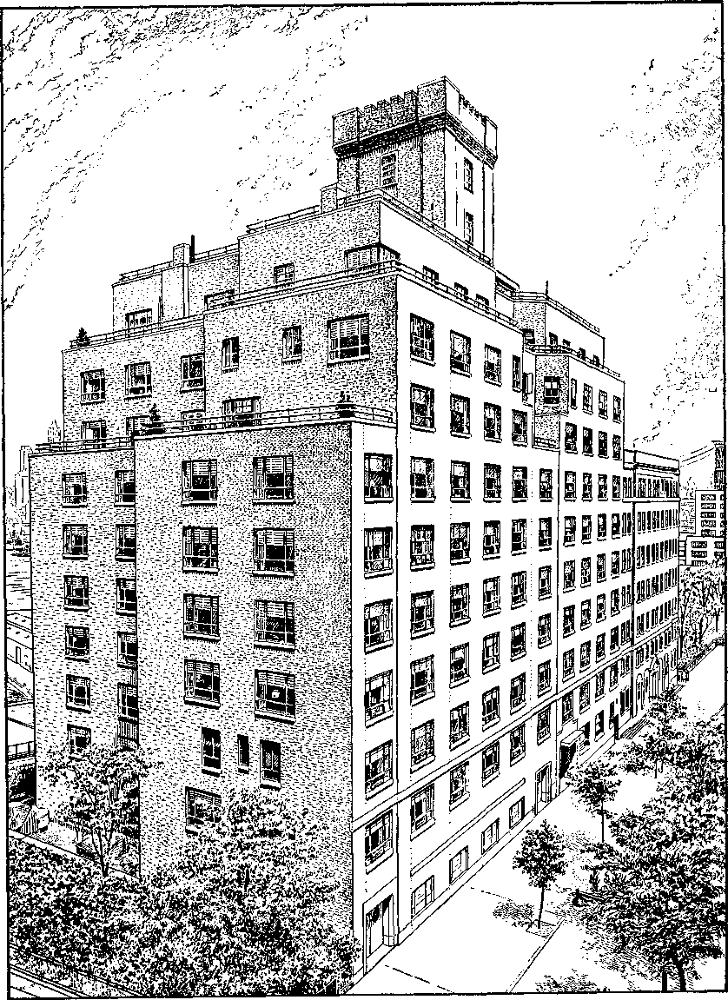
BETHEL, World Headquarters of Jehovah’s Witnesses, Brooklyn, New York
Ancient History
l-^ois; who on earth could be ringing our doorbell on such a stormy night as this? Don’t tell me that we’re having visitors?
tom: Could be! It might be our neighbor John down the street—you know, one of those Jehovah’s witnesses. I spoke out of curiosity to him about that different kind of faith of his, and he said he’d step over here some night with his wife and answer all my questions about it. But there’s another ring. So let me go see just who it is at the door.
Lois: All right!
tom [opening the door]: Well, I guessed it might be you, John. And there’s your good wife Maria, too. Come right in out of the bad weather and make yourself comfortable, both of you. It’s certainly nice of you to come over and see Lois and me. When I spoke to you I didn’t think you would take the matter as so urgent as to come here through such a wild night as this.
john: it is urgent, Tom, when the
world is in such an unsettled condition as the weather is tonight.
LOIS: Good evening. Here, let me take your things, and then I will join you.
john and maria: Thanks. It’s nice of you.
tom: Ah, it’s such a pleasant feeling to be indoors, in a comfortable home on such a rough night as this. Now I’m not going to ask you to look at television with us— I hope this doesn’t sound rough—but since you put yourself to such trouble to visit us tonight, I’d like to pump you both with as many questions as I can. And maybe my religious wife Lois would also like to ask some questions. She has a good knowledge of the Bible.
john: Fine! That’s just what Maria and I came for. Go ahead! Likely your wife Lois has read in her Bible the proverb of King Solomon: “Counsel in the heart of a man is as deep waters, but the man of discernment is one that will draw it up.” That’s Proverbs 20:5.
Lois: That’s an encouraging scripture. I must mark that down.
tom: Thanks for that indirect compliment, John, but let’s see how much of a man of discernment I am to draw up the water of facts out of your well of information. Of all the scores of religions here in this country, you and Maria certainly have a peculiar name. Jehovah’s witnesses! I don’t know of another religious name like it. Why do you and your people call yourselves that? Where do you get that name? Lois tells me that her preacher said that you Jehovah’s witnesses are just a lot of
upstarts, just a new religion started by some religious crank recently and without a good background.
Lois: That’s what he said, and with a lot of scorn, too!
john: well, that doesn’t shock Maria and me. We’ve heard remarks like that from many religious quarters in Christendom. But quite to the contrary of such charges, do you know that Jehovah’s witnesses are the most ancient religious group of worshipers of the true God, the people whose history runs back farther than any religious denomination of Christendom, or even of Jewry?
tom: Ho, ho! Listen to that, Lois! Your preacher ought to be here and listen to this. And the Jewish rabbi around the comer, too!
Lois: They first have to do a lot of proving to convince me of that.
john: From that Bible of yours I believe I can establish the factualness of what I said, Lois. Jehovah’s witnesses have a history almost 6,000 years long, beginning while the first man, Adam, was still alive. One of his sons is referred to as being a Witness. Read Hebrews 11:4, please, Lois. You have the King James Version, don’t you?
Lois: yes. [Reading] “By faith Abel offered unto God a more excellent sacrifice than Cain, by which he obtained witness that he was righteous, God testifying of his gifts: and by it he being dead yet speaketh.”
john: Thank you. You remember in Genesis 4:10 God said Abel’s “blood crieth unto me from the ground.” But Abel was only the first of an unbroken line of Wit-nesses.a Noah carried this line through the flood after sounding a warning to his generation. Read Hebrews 11:7, please.
a “Make Sure of AU Things’’ (1953), pp. 193-195.
lois [reading]: “By faith Noah, being warned of God of things not seen as yet, moved with fear, prepared an ark to the saving of his house; by the which he condemned the world, and became heir of the righteousness which is by faith.” Was he a Witness just by building an ark?
john: Not altogether, no. Noah also preached. Please read 2 Peter 2:5.
Lois [reads]: “And spared not the old world, but saved Noah the eighth person, a preacher of righteousness, bringing in the flood upon the world of the ungodly.” I never knew that. What did he preach, the coming of the flood?
john: yes, he warned his generation of God’s coming judgment. Throughout the history of the Bible Jehovah has raised up witnesses to give special warning in times of judgment. Moses warned Egypt of God’s coming punishment upon Pharaoh and the Egyptians. That’s Hebrews 11:24-29. Then the natural Jews, the ancient nation of Israel, were prophetically addressed as Jehovah’s witnesses at Isaiah 43:10-12.
Lois: J have that too. [Reading] “Ye are my witnesses, saith the Lord, and my servant whom I have chosen: that ye may know and believe me, and understand that I am he: before me there was no God formed, neither shall there be after me. I, even I, am the Lord; and beside me there is no saviour. I have declared, and have saved, and I have shewed, when there was no strange god among you: therefore ye are my witnesses, saith the Lord, that I am God.”
john: In the American Standard Version “the LORD” is rendered “Jehovah,” in keeping with the original Hebrew. So they were Jehovah’s witnesses.
Lois: J see But these are Jews that he called Jehovah’s witnesses; you claim to be Christians, don’t you?
john: Yes, but Jesus himself was a member of this ancient Jewish nation and he was one of Jehovah’s witnesses.
Lois: Does the Bible say that?
john: Jesus says it himself. Would you read John 18:37.
lois [reading]: “Pilate therefore said unto him, Art thou a king then? Jesus answered, Thou sayest that I am a king. To this end was I born, and for this cause came I into the world, that I should bear witness unto the truth. Every one that is of the truth heareth my voice.” Jesus did say he bore witness, didn’t he?
john: n0 greater Witness than Jesus has ever lived on earth, and one of his apostles specifically called Jesus a Witness.
Lois: Now that I would like to see!
john: Very well. Read Revelation 1:5, please.
lois [reading]: “And from Jesus Christ, who is the faithful witness, . . .” Well, I never! Do you mean to say, then, that Jesus’ disciples were all Jehovah’s witnesses too?
john: Certainly. Christians are urged to emulate all those ancient Witnesses that preceded them back to Abel. Paul is writing about the whole line of Witnesses in his letter to the Hebrews that you read from a moment ago. Besides Abel, Noah and Moses, throughout the entire eleventh chapter of Hebrews, Paul mentions many others. Then in Hebrews 12:1-3 he urges Christians to observe their faith and follow their example, particularly that of the greatest Witness of all, the Lord Jesus Christ.
Lois: I have Hebrews 12:1-3. [Reading] “Wherefore seeing we also are compassed about with so great a cloud of witnesses, let us lay aside every weight, and the sin which doth so easily beset us, and let us run with patience the race that is set before us, looking unto Jesus the author and finisher of our faith; who for the joy that was set before him endured the cross, despising the shame, and is set down at the right hand of the throne of God. For consider him that endured such contradiction of sinners against himself, lest ye be wearied and faint in your minds.”
john: That means that all Christians in the first-century congregation were witnesses of Jehovah, including the natural Jew, the apostle John, at the time of writing the Apocalypse about A.D. 96. He makes that fact clear himself in the opening verses of the book of Revelation, where, you recall, he also identified Jesus as Jehovah’s faithful witness. Read Revelation 1:1, 2, please.
lois [reading]: “The Revelation of Jesus Christ, which God gave unto him, to shew unto his servants things which must shortly come to pass; and he sent and signified it by his angel unto his servant John: who bare record of the word of God, and of the testimony of Jesus Christ, and of all things that he saw.”
john: So you see the apostle John was merely repeating the testimony of Jesus, which Jesus himself had received from Jehovah God. Both, therefore, were Jehovah’s witnesses as colaborers.
THE FALLING AWAY COMES FIRST
Lois: Even so, there is a long gap between those early Christians and our own day.
john: That’s true, and as early as the next or second century the professed Christians fell away from serving as Jehovah’s witnesses, till finally the Roman Catholic Church with its hierarchy of religious clergymen came to the fore and kept Jehovah and his written Word away from the blinded people. Why, even when the Protestants broke away they didn’t become Jehovah’s witnesses and bear witness to the truth of God’s Word as Jesus Christ and those before him had done. Consequently it became necessary for Jehovah, in fulfillment of his own prophecy, to raise up his witnesses in these modern times, not as a new religion, but as a climax to the long succession of Witnesses that he has had down through the past millenniums all the way back to Abel. The fact is, that is part of the purpose of Jesus Christ when he returns, to lead his fellow witnesses of Jehovah in the final testimony before the end of Christendom and all the rest of this wicked old world.
LOIS: How can that be? Didn’t Jesus say when he went away that he would be with his disciples until the end of the world?
john: yes, he did. That’s found at Matthew 28:20.
LOIS: [interrupting]: Then why do you say that he is going to come again and raise up modern witnesses?
john: Suppose we read the scripture first. Maria, do you have it?
maria: Yes; this is the New World Translation of the Christian Greek Scriptures. [Reading] “Look! I am with you all the days until the consummation of the system of things.”
john: Thank you. Your question, Lois, as to when and why Jesus would return, is one that has troubled some Bible students even from the days of the apostles. Some of the early Christians at Thessalonica were teaching that Christ had already returned in Paul’s day, but he wrote them: “Let no one seduce you in any manner, because it will not come unless the falling away comes first and the man of lawlessness gets revealed, the son of destruction.”13 tom: who is the “man of lawlessness”? john: Paul was applying the expression to the great apostasy I mentioned that would develop and prosper before Christ would be present again. That’s translated “man of sin” in the King James Version that you are using, Lois. I would like to read you something that I have brought along that was published in the earliest days of the Watch Tower Bible &Tract Society.
This book, published back in 1889, explains that Paul was agreeing that the day of the Lord “could be commenced while many might be in ignorance of it, that it could come without outward demonstration to mark it.”c Still, Paul was arguing further that a falling away must come before the day of the Lord; therefore, Christ’s kingdom could not have been set up at the time Jesus ascended into heaven.
Lois: You said that that apostasy began about the second century?
john: Yes, although even while the apostles were alive there was a beginning of it. But the apostles, backed up by the power of the holy spirit, were able to keep it from contaminating the congregation. With the apostles dead and gone, though, many false teachings were introduced that completely changed the meaning of the Scriptures and the purpose of God. This condition of apostasy developed over a period of several centuries and came to full bloom during the reign of the Roman Emperor Constantine in the fourth century. Our book comments on this:
Under Constantine’s reign, the opposition of the empire to Christianity gave way to favor, and the Imperial Pontifex Maximus [Constantine’s title as emperor of Rome] became the patron of the professed but really apostate Church of Christ; and, taking her by the hand, he assisted her to a place of popularity and splendor from which she was able afterward, as the imperial power grew weak, to put her own representatives upon the religious throne of the world as Chief Religious Ruler—Pontifex Maximus [the title now assumed by the popes].a
2 Thessalonians 2:3. e Studies in the Scriptures, Vol. II (1889), p. 270 (1905 Ed.), Ibid., pp. 290, 291.
TRUE CHRISTIANS UPHELD DURING COUNTERFEIT RULE
This was really the beginning of the Roman Catholic Church, although many of its present practices were even later additions. It is the falling away that the apostle Paul indicated must develop before the second coming of Christ. And one reason for Christ’s return, he pointed out, was to expose and destroy it. Now let’s all notice how the book explains what Jesus meant when he said he would be with his true followers all this time:
But let no one suppose that the real Church of Christ, even in those corrupt times, was either extinguished or lost sight of. “The Lord knoweth them that are his” in every age and under every condition. As wheat they were permitted to grow in the midst of a field overrun with tares; as though they were in the furnace, being tried and purified and “made meet for the inheritance of the saints in light.” True, the course of the multitude, who called themselves Christians, occupies the most prominent place on the pages of history; but undoubtedly a faithful few through all the persecutions, and in the midst of all the deceptive arts of the Mystery of Iniquity, walked worthy of their high calling, were laid to rest and recorded of God as heirs to the crown that fadeth not away, reserved in heaven for them.®
So, by his illustration of the “wheat and tares,” at Matthew 13:24-30, 36-43, Jesus indicated that on his return he would regather those faithful ones who are alive at that time and make them fellow witnesses of Jehovah. This he has done by separating them from false or apostate Christians and setting them forward as the climax to the 6,000-year-long succession of Jehovah’s witnesses.
Meanwhile, the false Christians have shown themselves to be false witnesses of Jehovah by setting up their own counterfeit of God’s kingdom. Note what the book says:
Thus, clearly, on the pages of history, the fact is pointed out that this Man of Sin, Antichrist, was born in Rome; ... a spiritual empire: it must claim to rule the kingdoms of earth by this spiritual authority; it must thus be not only an antagonist but a counterfeit, misrepresenting and pretending to be Christ’s kingdom, and exercising what will in God’s due time be the authority of the true Christ, the church glorified and complete under the only true Head and Lord.?
This counterfeit kingdom began about A.D. 800 and went into a decline about A.D. 1800.
e Studies in the Scriptures, Vol. II (1889), p. 298 (1905 Ed.), f Ibid., pp. 298, 299.
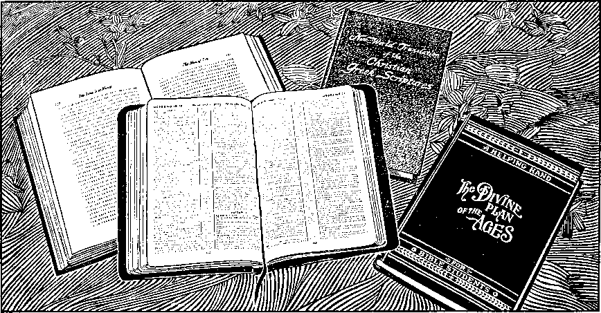
The Turning from
Religious Confusion
Begins
if the Roman Catholic Church claimed to be ruling in God’s kingdom for a period of a thousand years during the Middle Ages, then why should they look for a second coming of Christ?
John: They didn’t. But, when the power of the Roman Catholic Church had begun to decline about 1800, it is only natural that the attention of some Bible students would turn to the Lord’s second coming.
LOIS: But what of the Reformation? You said that when the Protestants broke away they didn’t become Jehovah’s witnesses either. Why do you say that?
John: Well, the Reformation really began as a rebellion against certain authorities of the Roman Catholic Church and soon developed into a strong political argument. Many Protestant leaders were as vicious in their persecution of religious opponents as the Inquisition of the Catholic Church had been. For example, John Calvin had anti-trinitarian Michael Serve-tus literally roasted alive, in horrible torture, for nearly five hours before he expired, while Calvin watched from a window.a Furthermore, the Protestant churches carried over with them the same
a Qualified to Be Ministers (1955), p. 295. teachings of apostasy that had been believed during the centuries of papal rule. These facts alone are evidence that this was not a true Reformation, nor were these “Reformers” witnesses of Jehovah as Jesus and those before him had been.
However, Jesus himself had foretold that the good news of God’s kingdom would be preached throughout the world as a witness to all the nations before the end would come. During the Dark Ages this would have been impossible. Political and religious controls were both so tight that a complete breaking of the shackles of the Roman Catholic Hierarchy was necessary for any movement to grow to any extent. So, while at this point there was no return to true worship, the stirring events of history during this period of readjustment were really preparing conditions for the international preaching of the Kingdom of God established at Christ’s return.
EXTREMES IN THINKING
CLOUD THE KINGDOM ISSUE
Many restrictions were being lifted, allowing for more freedom of thought and action; still much of this liberal thinking was carried to the extreme left so that continuous conflicts with radical ideologies would keep the people concentrating on these issues rather than on the real issue between the kingdom of Jehovah God and the rule of Satan the Devil.
As examples of this leftist swing of liber-
alism, in 1848 Marx and Engels issued their “Communist manifesto,” and Darwin’s radical Origin of the Species appeared in 1859 as a landmark in the intellectual and scientific revolution that was taking place simultaneously. Organized religions recognized their weakening position about the same time and the Vatican Council was called in 1869-70 to strengthen the position of the Roman Catholic Church. For the first time the pope was declared to be infallible. The Protestant organizations also took a backward step and the clergy began to assume even greater authority over the laity. Gradually, as a result of these many extremes, an era of godlessness began to develop. Higher criticism of the Bible, evolution, spiritism, atheism and infidelity all began to invade Christendom, and many so-called evangelical churches even began to modernize their teachings according to this trend in scientific and intellectual thinking. Soon after this, in 1891, the basic document of modern Catholic social philosophy was written. This was the encyclical by Pope Leo XIII called “Rerum novarum.”
But while the religious leaders were trying to regain some of their strength at the expense of the people, political governments were regaining their power in another sense. The United States had just recovered from the Civil War and was beginning to restore and build itself into one of the greatest nations the earth has ever seen. Britain was passing through her golden era as the seventh world power of Bible prophecy and the British Empire was probably at its peak strength at this time. Because of this strength she looked with suspicion on the growing power of Germany, which had just won the Franco-Prussian War of 1870 and which had begun to build herself as a great European power.
Not only was there a stirring and awakening politically and religiously, but scientifically, too, great advancements were being made. The invention of the steam engine, the discovery of electricity, development of the telephone, later the automobile; all these things in the late 1800’s and the early 1900’s began a great change in the civilization of the West. New business enterprises were blossoming forth. A flood of new corporations were organized to process this business; and a class of people, who, in previous centuries, had had little material wealth, were now encouraged to invest their money and were beginning to make fortunes. Materialism, money-making and pleasure seeking came hand in hand, and all this blinded the people to the potentials that were building up and that were due to come to a climax in 1914. All these prospects of better things looked so promising that the people in general were little concerned with the price they might eventually have to pay for them, nor were they much concerned with the great spiritual awakening that accompanied this revival, politically and commercially.
EARLY VOICES POINT THE WAY
In spite of this attitude on the part of the people generally, though, it is true a real forward step had been made. Freedom of thought and action was possible, and it is interesting to note that simultaneously with the beginning of the loosening of political controls in Europe a serious and analytical study of the Bible was begun by many. One of the most widespread in effect was that begun bWilliam Miller in 1816. He predicted the return of Christ Jesus visibly and bodily in 1843 or 1844. But his view was completely opposed to God’s purpose as revealed in the Bible?
b The Life of William Miller (1875: Seventh-Day Adventist Publishing Association), pp. 362-374,
tom: was Miller the only one at this time that was looking for Christ’s return?
john: No. The German-Lutheran theologian Bengel set the date for 1836, whereas the Irvingites in England looked first to 1835, then 1838,1864 and finally 1866, and then gave up. By this time several different Adventist groups had formed from Miller’s movement. Still others, such as the Elliott and Cumming group, were looking for 1866. Brewer and Decker predicted 1867 and Seiss favored 1870. There was a Mennonite group in Russia that put forth the date 1889.c
LOIS: But why were there so many different ideas as to when and how Christ would return?
John: it was because men were still anxiously trying to follow traditional religious teachings instead of waiting on Jehovah. Remember, the true doctrines of the Bible had been so twisted throughout the period of apostasy that no clear vision of Christ’s second presence would be possible until these doctrines themselves had been cleared up. This had not been accomplished by the so-called Reformation, so in the early part of the nineteenth century many mistakes were made in trying to determine when Christ would return, because chronology alone was relied on. It was not yet God’s due time to bring about his restoration of true worship.
maria: Isn’t it true, though, that, while most of those looking for the second presence of Christ expected a physical return, there were some who believed that Christ would not be visible at this second presence?
John: yes. For example, there were George Storrs of Brooklyn, who published a magazine called “The Bible Examiner” and who looked to the date 1870; H. B.
Rice, who published The Last Trump, also looked to 1870, and a third group, this time of disappointed Second Adventists, looking to 1873 or 1874. This group was headed by N. H. Barbour of Rochester, New York, publisher of The Herald of the Morning.^
DAY BEGINS TO DAWN
Then, finally, around 1870, another group began to appear. This was the one headed by Charles Taze Russell of Pittsburgh, Allegheny, Pennsylvania. Now let’s read about it in Russell’s own words:
We begin the narrative at the year 1868, when the editor [of Zion’s Watch Tower], having been a consecrated child of God for some years, and a member of the Congregational Church and of the Y.M.C.A., began to be shaken in faith regarding many long accepted doctrines.
Brought up a Presbyterian, indoctrinated from the Catechism, and being naturally of an inquiring mind, I fell a ready prey to the logic of infidelity, as soon as I began to think for myself. But that which at first threatened to be the utter shipwreck of faith in God and the Bible was, under God’s providence, overruled for good, and merely wrecked my confidence in human creeds and systems of Bible misinterpretations. e
During the next few months Russell continued to reflect over the subject of religion, unable to accept it, and yet unwilling to let it go. Then he relates:
Seemingly by accident, one evening I dropped into a dusty, dingy hall in Allegheny, Pa., where I had heard that religious services were held, to see if the handful who met there had anything more sensible to offer than the creeds of the great churches. There, for the first time, I heard something of the views of Second Adventism, by Jonas Wendell . . .
Though his Scripture exposition was not entirely clear, and though it was very far from what we now rejoice in, it was sufficient, under God, to reestablish my wavering faith in the Divine inspiration of the Bible, and to show that the records of the Apostles and the Prophets are indissolubly linked.
As a result Russell’s interest in the Bible was rekindled and he returned to the study of the Bible “with more zeal and care than ever before.” He continues:
<• The Small Sects in America, by E. T. Clark, pp. 33, 34 1949 Rev. Ed.). Catholic Encyclopedia (New York, 1910), “Irvingites.” Cyclopaedia (New York, 1882: McClintock & Strong), “Millennium”; “Bengel, John Albert.” d W 1916, pp. 170, 171. Ibid.
I soon began to see that we were living somewhere near the close of the Gospel Age, and near the time when the Lord declared that the wise, watching ones of His children should come to a clear knowledge of His Plan. At this time, myself and a few other Truth seekers in Pittsburgh and Allegheny, formed a class for Bible study;f and the period from 1870 to 1875 was a time of constant growth in grace, in knowledge and in love of God and His Word. We came to see something of God’s love, how it had made provision for all mankind, how all must be awakened from the tomb in order that God’s loving Plan might be testified to them, and how all who will then exercise faith in Christ’s redemptive work and will render obedience in harmony with their knowledge of God’s will, might then, through Christ’s merit, be brought back into full harmony with God, and be granted everlasting life. This we saw to be the Restitution work foretold in Acts 3:21. . . .
However, we were then merely getting the outlines of God’s Plan and unlearning many cherished errors, the time for the clear discernment of the minutia not having fully come. . . .
Thus passed the years 1868-1872. The years following, to 1876, were years of continued growth in grace and in knowledge on the part of the handful of Bible students with whom I met in Allegheny. We progressed from our first crude and indefinite ideas of Restitution to clearer understanding of the details; but God’s due time for clear light had not yet come.
It was during this time, the account shows, that these Bible students came to recognize the difference between the Lord as “the man who gave himself” and the Lord who would come again as a spirit creature. They learned that spirit creatures can be present and yet invisible to men. As a result of this advanced understanding—
We felt greatly grieved at the error of Second Adventists, who were expecting Christ in the flesh and were teaching that the world and all in it except Second Adventists would be burned up in 1873 or 1874, and whose time settings and disappointments and crude ideas generally of the object and manner of our Lord’s Coming brought more or less reproach upon us and upon all who longed for and proclaimed His coming Kingdom.
These wrong views so generally held of both the object and manner of Christ’s Second Advent, led me to write a pamphlet: “The Object and Manner of the Lord’s Return,” of which some 50,000 copies were published. s
So it is that after centuries of darkness and weeping, the true light of God’s Word began to shine forth again and the message of Christ’s return that began to be heralded so zealously was like a joyous shout at the dawning of a new day. The joyful cry that began with this significant publication, The Object and Manner of the Lord’s Return, was eventually to grow in volume until it should be like the thunder of many waters.
tom: So that was the beginning of the international preaching of Jehovah’s witnesses. That would make the modern activity of your group till now over eighty years old, wouldn’t it? That’s older than most people are today.
John: yes, but following the divine will on a continuous road means far more than just starting out in the right direction. Filled with enthusiasm and zeal for the work ahead, Russell set out at full speed only to find himself almost immediately at an unmarked fork in the road. Obviously he knew that he could not travel both roads and he was certain that one of those ways would spell disaster. He knew he must make a decision, but even then he could not know how far-reaching that decision was to be, nor how it was to set a pattern from then on. But if I start on that part of the story we’ll be here all night. If you like, we’ll come back next week.
tom: By a]j means. I still have plenty of questions.
Lois: Please do. I’m interested in that decision Mr. Russell had to make.
t Young Charles’ father, J. L. Russell, was a member of this first study group. (W 1891, p. 175) g W 1916, pp. 170, 171.
Charles Taze Russell Makes a Far-reaching
Decision
john, something has been going through my mind all week since you were here. Why is it that when we read about Paul and others in the Bible we have no problem in accepting their position and authority, yet today it is so difficult to believe that any one man or organization is being used by God?
John: There should be no problem if we remember that those whom God uses as his witnesses at one time are always like those he has used at any other time. Did you have some specific point in mind, Tom?
tom: -Well, yes. You showed us last week that the need for a free world situation had developed since the days of the apostles. That hasn’t been too difficult to recognize. But what of all the voices that began to cry out, ‘This is the way’? If God did intend to use any of them as witnesses, how would we know it? You’ve pointed out how C. T. Russell had joined his voice in heralding the Lord’s return, but what reason do we have for singling him out in preference to others?
John: Today, because of the way the work has been blessed, we have more reasons than I could tell you in one evening. As our discussion develops I’m sure you’ll agree. But even as viewed by Russell’s contemporaries there was sufficient evidence for those really looking for it. In fact, that bears on the point I wanted to discuss this evening.
Lois: You mean about the important decision Mr. Russell had to make as to the course he thought he should follow?
John: Yes. You will recall that most of these early groups of watchers were interested primarily in time calculations. But Russell had a different type of mind. True, in spite of his youth, he was unusually analytical in his approach to any subject, but he had become convinced that Christ’s purpose for returning was more important than some date that could be set.
Lois: By the way, John, how old was Mr. Russell when he began to study?
tom [interrupting]: That’s something else I’ve wanted to ask. Could we interrupt the progress of the story long enough to get some vital statistics? I think it would help us to know more about Russell personally.
C. T. RUSSELL’S BACKGROUND
John: Very well. Actually, he was still in his teens when he began to think seriously about his religious background and to question its foundations. Here’s something from the opening paragraphs of his biography as published in the Foreword of a later
edition of his popular book, The Divine Plan of the Ages.
Charles Taze Russell, known the world over as Pastor Russell, author, lecturer and minister of the Gospel, was born at Pittsburgh, Pa., February 16, 1852; died October 31, 1916. He was the son of Joseph L. and Eliza Birney Russell,a both of Scotch-Irish lineage. He was educated in the common schools and under private tutors.b
tom: He must have been an extremely serious-minded young man.
John: He was. His mother died when he was nine years old, so he spent much time with his father after school hours. When he was only twelve years old, his father found him in the store one time at 2 a.m., poring over a concordance, unconscious of the lapse of time.c At the age of fifteen Russell was in partnership with his father, assisting him with his business activity in a men’s furnishing store. When he was in his early twenties he had helped his father expand their business to several stores and was well on the way to establishing a national chain of stores when he abandoned it all to devote his entire time to the ministry. When he closed out his interests they netted him more than a quarter of a million dollars.*1
tom: He must have been a man of considerable resourcefulness and determination.
John: He showed it in many ways. While still a lad, before he learned the truth concerning God’s purpose, he would go out at night to chalk up Bible texts in conspicuous places so that workingmen, passing by, might be warned and be saved from the “torments of hell.” His zeal in teaching God’s love was just as strong when he finally saw the error of this blasphemous hell-fire doctrine. That’s why he put everything he had into his life’s work. He is quoted by a later associate as declaring vehemently:
If the Bible does teach that eternal torture is the fate of all except the saints, it should be preached—yea, thundered from the housetops weekly, daily, hourly; if it does not so teach, the fact should be made known, and the foul stain dishonoring God’s holy name removed.e
But there are a few more points in these biographical notes we were reading I’d like to show you.
Pastor Russell was married in 1879 to Maria Frances Ackley. No children blessed this union. Seventeen years later they disagreed about the management of his journal; and a separation followed. . . .
He was not the founder of a new religion, and never made such claim. He revived the great truths taught by Jesus and the apostles, and turned the light of the twentieth century upon these teachings. He made no claim of a special revelation from God, but held that it was God’s due time for the Bible to be understood; and that, being fully consecrated to the Lord and to his service, he was permitted to understand it. Because he devoted himself to the development of the fruits and graces of the holy spirit, the promise of the Lord was fulfilled in him: “For if these things be in you and abound, they make you that ye shall neither be barren nor unfruitful in the knowledge of our Lord Jesus Christ.”—2 Peter 1:5-8.
Lo|s: What about the decision Pastor
Russell was forced to make, John? You said it could have completely wrecked his work.
John: I was thinking about that as Tom was asking for evidences of God’s approval of Pastor Russell’s work. Actually, there were a number of decisions involved, all related somewhat to this matter of time calculations. The course Russell chose was particularly significant because it was his first major testing and because it had such far-reaching results.
a J. L. Russell died in 1897 at 84, having continued a close associate of his son in the Society’s activities (W Jan. 1, 1898, p. 4). b Studies in the Scriptures, Vol. I (1886), Foreword: “Biography,” p. 1 (1926 Ed.). See also W 1916, p. 356. c Studies in the Scriptures, Vol. VII (1917), p. 53 (1918 Ed.). dA Great Battle in the Ecclesiastical Heavens (1915), by J. F. Rutherford, p. 16. e Studies in the Scriptures, Vol. I (1886), Foreword: “Biography,” p. 18 (1926). f Ibid., pp. 1, 2.
TIME FEATURES BECOME IMPORTANT
You will recall Russell’s study group had come to realize that when Christ returned it would not be in the flesh, as commonly believed and taught by the Second Adventists. Pastor Russell had learned that when Jesus should come he would be as invisible as though an angel had come.
Then, in 1876, while Pastor Russell was in Philadelphia on a business trip, he happened to come into possession of a copy of the magazine The Herald of the Morning, which, you will recall, was being published by N. H. Barbour of Rochester, N. Y. He was surprised and pleased to note that here was another group that expected Christ’s return invisibly and, because of the similarity of their views, he read more of this publication, even though he recognized it as an Adventist paper and even though, up to this time, he had had little regard for their doctrines. But Russell was interested in learning from any quarter, whatever God had to teach. He became interested in the chronology set forth in the magazine and immediately got in touch with Barbour to arrange a meeting at Russell’s expense in order to discuss this matter further.
It seems that one of Barbour’s group had come into possession of Benjamin Wilson’s Diaglott translation of the “New Testament.” He noticed, at Matthew 24:27, 37, 39, that the word rendered coming in the King James Version is translated presence in the Diaglott. This was the clue that had led Barbour’s group to advocate, in addition to their time calculations, an invisible presence of Christ. Russell had been interested first in the purpose of Christ’s return. His realization that it would be invisible led him now seriously to consider the time features. He was satisfied with the evidence Barbour presented.
Pastor Russell was a man of positive con
s W 1916, p. 171,
victions and fully dedicated to the Lord. He wrote later:
I at once saw that the special times in which we live have an important bearing upon our duty and work as Christ’s disciples; that since we are living in the time of the Harvest, the Harvest work should be done; and that Present Truth is the sickle by which the Lord would have us do a reaping work everywhere among his children. =
This conviction stayed with Russell throughout his entire life as a Christian minister.
As a result of Russell’s meeting with Barbour, his study group in Pittsburgh became affiliated with the group in Rochester, and Russell contributed money from his personal funds to Barbour to get the printing of their message going again in the magazine The Herald of the Morning. Since Barbour was a printer by trade it was agreed that he should do the actual publishing of the magazine, whereas Russell would become a coeditor of The Herald of the Morning and assist in the financial end of the enterprise.
Russell was fired now with the idea of service in harmony with his knowledge of the divine will. But he was not personally ambitious. One of the first steps he took with his important message shows that, but it also reveals one of his first disappointments. Let me read this to you:
In 1877 Pastor Russell called a meeting of all the ministers of Allegheny and Pittsburgh, showed them the Scriptures which indicated our Lord’s presence and urged them to investigate and proclaim the message. All of the ministers of the two cities were present; all of the ministers of the two cities refused to believe. In the same year he determined to give up secular work and devote his entire time and fortune to the work indicated in the Scriptures . . . As a means of determining whether his course was in harmony with the Scriptures, and also as a means of demonstrating his own sincerity, he decided to test the Lord’s approval as follows: (1) Devote his life to the cause; (2) Invest his fortune in the promulgation of the work; (3) Prohibit collections at all meetings; (4) Depend on unsolicited contributions
(wholly voluntary) to continue the work after his fortune was exhausted.h
Lens; J never heard of anything like that before. Do you mean Pastor Russell never took up a collection or solicited money in his entire life? He really must have been a man of courage and conviction.
John: He was a man of faith. He was highly privileged to understand the divine will and he knew it. Remember, he was only twenty-five years old in 1877. Yet, when all the religious leaders of Allegheny and Pittsburgh refused to accept the wonderful opportunity of sharing in the harvest work that he felt was beginning, Russell did not hesitate. His faith was rewarded many times over.
That same year, 1877, together with Barbour, Russell produced a book called “Three Worlds or Plan of Redemption.” Nothing like it had ever been published before. It combined for the first time the explanations of time prophecies with the work of Restitution.1 At this early date they recognized that the end of Satan’s period of uninterrupted rule of the earth, called “Gentile times,” would come in 1914. Almost at once, Russell was called upon to make another important decision.
A KNOTTY PROBLEM UNRAVELS
LOIS: Was it on this point of 1914 that Pastor Russell’s decision was forced on him?
John: on that particular point, but
it did involve his association with Barbour and his devotion to the truth as it had been revealed up to this time. In regard to this testing note Russell’s words in The Watch Tower under the caption text, Luke 22:31, “Satan hath desired to have you, that he might sift you as wheat.” (AV) Here is what he says:
Until then all had run smoothly onward. We had been greatly blessed with the Truth, but not especially tested in our love and fidelity to it. But with the summer of 1878, the parallel in time to our Lord’s crucifixion and His utterance of the above quoted words, the sifting began which has continued ever since, and which must, sooner or later, test every one who receives the light of Present Truth.
“Think it not strange concerning the fiery trial which shall try you, as though some strange thing happened to you”; for “the fire shall try every man’s work of what sort it is” ... [1 Peter 4:12],
The object of this trial and sifting evidently is to select all whose heart desires are unselfish, who are fully and unreservedly consecrated to the Lord; who are so desirous of having the Lord’s will done, and whose confidence in His wisdom, His way and His Word is so great, that they refuse to be led away from the Lord’s Word, either by the sophistries of others or by plans and ideas of their own. These in this sifting time will be strengthened and will increase their joy in the Lord and their knowledge of His plans, even while their faith is being tested by the falling into error of thousands on every hand.—Psalm 91:7.1
Then Pastor Russell explains an erroneous view that had been held by all up to this point. Based on Paul’s statement at 1 Corinthians 15:51, 52, it had been expected “that at some time the living saints would be suddenly and miraculously caught away bodily, thenceforth to be forever with the Lord.” Believing this would take place in 1878, some were disappointed because nothing occurred that they could see. However, Pastor Russell was led to a reexamination of the scripture and realized that their “mistake lay in expecting to see all the living saints changed at once, and without dying—an erroneous view shared in by the whole nominal church, and one which we had not yet observed or discarded.” Russell’s re-examination of this text revealed that the true significance of the apostle’s words was that those who were to be of Christ’s body and who were alive at his presence or after his return would not lie unconscious in the grave as had those who preceded Christ’s return. Instead they would be changed instantaneously at death to be present with him. This was really an important revelation of scripture and one that many fundamentalists still have not come to appreciate. Russell concludes this point by saying: “So this re-examination showed further light upon the pathway and became a good cause for encouragement, as evidencing the Lord’s continued leading.”
h Studies in the Scriptures, Vol. VII (1917), p. 55 (1918 Ed.). IW 1916, p. 171. j Ibid., p. 172.
TESTED ON INTEGRITY TO PRINCIPLE
But while I was thus helped to clearer views and brighter hopes, and while I diligently endeavored to help others, the spring of 1878 proved far from a blessing to Mr. Barbour and to many under his influence. Rejecting the plain, simple solution presented above, Mr. Barbour seemed to feel that he must of necessity get up something new to divert attention from the failure of the living saints to be caught away. But alas, how dangerous it is for any man to feel too much responsibility and to attempt to force new light! To our painful surprise, Mr. Barbour soon after wrote an article for The Herald denying the doctrine of the Atonement—denying that the death of Christ was the Ransom-price for Adam and his race, saying that our Lord’s death could no more avail for the payment of the penalty of man’s sins than would the sticking of a pin through the body of a fly and causing it suffering and death be considered by an earthly parent as a just settlement for misdemeanor in his child. I was astonished; for I supposed that Mr. Barbour had a clear understanding of the work of Christ as our Sin-Offering . . . Either I had given Mr. Barbour credit for clearer views than he ever had, or else he was deliberately taking off and casting away the wedding garment of Christ’s righteousness. The latter was the only conclusion left; for he afterwards stated that he had previously recognized Christ’s death as man’s Ransom-price.k
tom: what did he mean by the “wedding garment”?
John: Russell was referring to Jesus’ illustration at Matthew 22:11-14. This parable depicts a king who invited guests to the marriage feast of his son. Those first invited refused to come, so he finally sent out into the highways and byways and gathered others, but finally at the wedding
k W 1916, p. 172. 1 2 Peter 2:1. feast he found a man without the appropriate wedding garment to show his recognition of the occasion and he commanded that he be put out. Jesus here illustrated that only those properly identified as being in complete union with him would be allowed to remain in the gathering of his chosen ones. Applying this illustration in this light, Russell was pointing out that Barbour’s rejection of the merit of Jesus’ ransom sacrifice was a deliberate discarding of his Christian identification. Peter warned about this when he said: “There also came to be false prophets among the people, as there will also be false teachers among you. These very ones will quietly bring in destructive sects and will disown even the owner that bought them, bringing speedy destruction upon themselves.”1
maria: pastor Russell was only twenty-six at that time and Mr. Barbour was a much older man. Besides, The Herald of the Morning was Mr. Barbour’s magazine in the sense that he had started it, although Pastor Russell was financing it when this division arose. So Pastor Russell could easily have been influenced by Mr. Barbour’s position. He could have hesitated to oppose him for fear of losing what ground they had gained.
POSITIVE ACTION DEFEATS COMPROMISE
John: Yet, young as he was, he knew from his study of the Bible that compromise is the beginning of apostasy, and to forsake God’s principles or truths for the sake of expediency would be fatal. This was Russell’s first real test of integrity to the truth. The course he chose was immediate and decisive. He wrote an article for The Herald at once in contradiction of the error. For several months similar articles appeared, then Russell reports:
It now became clear to me that the Lord would no longer have me assist financially, or be in any way identified with, anything which cast an influence in opposition to the fundamental principle of our holy religion. Therefore, after a most careful though unavailing effort to reclaim the erring, I withdrew entirely from The Herald of the Morning, and from further fellowship with Mr. Barbour. But a mere withdrawal I felt was not sufficient to show my continued loyalty to our Lord and Redeemer . . . I therefore understood it to be the Lord’s will that I should start another journal, in which the standard of the Cross should be lifted high, the doctrine of the Ransom defended, and the Good Tidings of great Joy proclaimed as extensively as possible.
Acting upon this leading of the Lord, I gave up traveling, and in July, 1879, the first number of The Watch Tower and Herald of Christ’s Presence made its appearance. From the first, it has been a special advocate of the Ransom; and, by the grace of God, we hope it will be so to the end.11
The far-reaching effects of this bold stand for pure doctrine could not have been foreseen at that time; but it is now evident that, had Russell compromised on this vital issue, his service to Jehovah would have been of no more value than the lame sacrifices being offered by the leaders of apostate Christendom. This was a time of important decisions. It was a time when Christ Jesus, as Jehovah’s representative, was selecting the channel to be used to gather his “wheat” class.
The truths that had been revealed from God’s Word had come to Russell and his associates only by careful and diligent study. Their acceptance of them was based on an honest conviction that the time had now come for Jehovah to call “out of darkness into his marvelous light” all men who sincerely desired to know and do the divine will. Russell’s position brings to mind the scripture at Galatians 2:4, 5. Lois, would you like to read that?
LOIS: [reading]: “But because of the false brothers brought in quietly, who sneaked in to spy upon our freedom which we have in union with Christ Jesus, that they might completely enslave us—to these we did not yield by way of submission, no, not for an hour, in order that the truth of the good news might continue with you.” It was Paul who said that, wasn’t it?
John: yes. He had many such problems in the early congregation; but he not only stood his ground for the truth of God’s Word, he also wrote much encouraging counsel for us today. And just as Paul was richly blessed for his faithfulness, so were Russell and his early associates.
FAITHFULNESS BRINGS ADDED BLESSINGS
These convictions, coupled with his enlightening experience with Barbour and The Herald of the Morning, led Russell to realize that, if this little body of true Christians were to maintain their integrity to the divine will, they must hold the publishing of these truths closely in hand, maintaining their own journal and other publications apart from all other groups. True, theirs was a small beginning. But it brings to mind the text at Zechariah 4:10: “For who hath despised the day of small things?” (AV) These days, beginning with 1879 when the little Pittsburgh group again found themselves working alone, proved to be days “of small things.”
The first issue of Zion’s Watch Tower and Herald of Christ’s Presence, July 1, 1879, was limited to 6,000 copies.11 C. T. Russell became the editor and five other mature Bible students were to serve as regular contributors. The first words of this new journal are of interest and read:
This is the first number of the first volume of “Zion’s Watch Tower,” and it may not be amiss to state the object of its publication. That we are living “in the last days”—“the day of the Lord”—“the end” of the Gospel age, and consequently, in the dawn of the “new” age, are facts not only discernible by the close student of the Word, led by the spirit, but the outward signs recognizable by the world bear the same testimony, and we are desirous that the “household of faith” be fully awake to the fact.0
m W 1916, pp. 172, 173. Jan. 1, 1909, the name was changed to The Watch Tower and Herald of Christ’s Presence (for explanation see W 1908, p. 372); Oct. 15, 1931, changed to The Watchtower and Herald of Christ’s Presence: Jan. 1, 1939, to The Watchtower and Herald of Christ’s Kingdom; Mar. 1, 1939. to The Watchtower Announcing Jehovah’s Kingdom, its present title. From its first issue the journal was published monthly until Dec., 1891; beginning Jan. 1, 1892, published semimonthly (see W 1891. p. 173); foreign issues vary in frequency of publication. n W Aug., 1879, p. 2.
From the beginning the name of Jehovah has been witnessed to by this magazine that is dedicated to him and the interests of his kingdom. In its second issue under the heading “Do You Want ‘Zion’s Watch Tower’?” it said:
“Zion’s Watch Tower” has, we believe, Jehovah for its backer, and while this is the case it will never beg nor petition men for support. When He who says: “All the gold and silver of the mountains are mine,” fails to provide necessary funds, we will understand it to be time to suspend the publications
Two years later the name and identity of Jehovah were discussed. In the issue of July, 1882, appeared the seven-page article entitled “Hear, O Israel! Jehovah Our God Is One—Jehovah,” which article disproved the “trinity” doctrine or teaching of “one God in three persons.” In August of 1882 the question was asked whether the name “Jehovah” is properly applied to the Father or to Christ. The answer was given:
We confidently assert that the name Jehovah is never applied in Scripture to any but the Father. It is for those who claim the reverse to give a text, and show its applicability to Jesus or anyone else than the Father. Here is a way to prove the matter conclusively—the New Testament writers quote much from the Old Testament; do they ever quote a passage in which the word Jehovah occurs and apply it to Jesus? We claim that they do not. On the contrary, we will give one out of many similar quotations, in which it is clearly applied, not to Jesus, but to the Father. Psa. 110:1, “The Lord (.Jehovah) said unto my Lord (adon— master) sit thou,” etc. (Note carefully the application of this by Jesus (Luke 20:41-44), and by Peter. (Acts 2:34-36, and 33.) This one text is sufficient until answered. If any one can twist it, we have others ready.
Thus Pastor Russell acted and served as a witness of Jehovah.1
GOD’S CHANNEL SHOWS SIGNS OF IDENTITY
So you see, Tom, in many ways the evidence was beginning to accumulate that, of all the early voices heard, Jehovah had chosen the publication we now call The Watchtower to be used as a channel through which to bring to the world of mankind a revelation of the divine will and, through the words revealed in its columns, to begin a division of the world’s population into those who would do the divine will and those who would not. For this reason 1879 was a turning point in the work. This little group, headed by C. T. Russell, had now been tested and had been found fit to undertake the great preliminary campaign leading up to the climax expected in 1914. But what could this small band expect to accomplish throughout the world in less than forty short years? Even with favorable conditions the task would have looked formidable. But these undaunted itinerant preachers set out literally on foot to accomplish the task in the face of what they knew would be the bitterest opposition. The record of praise to Jehovah’s name that they built up in almost forty years could only have been accomplished as stated in Zechariah 4:6: “Not by might, nor by power, but by my Spirit, saith Jehovah of hosts.” (AS) Only Jehovah could have been feeding and directing his people.
o W July, 1879, p. 3. p W Aug., 1879, p. 2. q W Aug., 1882, pp. 2, 3. r On page 20 of Three Worlds (1877) the name Jehovah occurs, instead of “the LORD,” when it quotes Zephaniah 3:9, to read: “For then will I turn the people to a pure language that they may all call upon the name of Jehovah, to serve him with one consent.” So Russell early knew the divine name.
Preparation
for Harvest Ingathering
Begins
I —__
-■^ois: Before we go any farther this evening, John, I’d like to get one point clear. What was Pastor Russell’s aim? The biographical note you read said he was not trying to start a new religion and that’s what you said too in discussing the name Jehovah’s witnesses. Whether that has actually resulted or not is beside the point at the moment. The most significant aspect of his message, as I see it, was that Christ’s presence was imminent; but what did he want people to do and what did he expect would happen when Jesus returned?
John: First of all, Pastor Russell and those associated with him believed Christ’s invisible presence in spirit form had already begun in 1874. They realized Christ’s main work at that time was to gather those that were his and to free them from the many contradictory teachings as to what the divine will was for them. They believed Christ’s purpose in returning was to gather them together, restore the true worship and then, in 1914 at the end of “Gentile Times,” take them into God’s kingdom, just as a bridegroom would claim his bride. This meant that the first thing people must do was to forsake Christendom’s apostate religion and learn the truth, then actively spread that truth to others.
CONGREGATIONS SPRING UP
tom: How did they go about organizing themselves to get the work done?
John: Well, it was a day of small things and they began in a small way. But they proceeded immediately to try to organize congregations wherever interest in the message was shown. To do this, Russell, and a few others associated with him, began to visit those who subscribed for Zion’s Watch Tower and bring them together into study groups. In these first years of 1879 and 1880 they founded about thirty congregations in the states of Pennsylvania, New Jersey, New York, Massachusetts, Delaware, Ohio and Michigan. Then in 1880 Pastor Russell arranged to visit all of these thirty congregations himself, spending at least one day with each congregation. The program that he conducted was intensive, consisting of at least six hours of study a day with each group.a
Lois: That was a heavy study schedule. What kind of meetings did they hold?
John: Well, of course, during those earliest visits of Pastor Russell he would give them talks on the Bible and answer questions. Then, later, as an illustration of their regular schedule, the Pittsburgh-Allegheny congregation on Sunday afternoons, from 2:30 to 4, would have a meeting that was open particularly to the public because Bible lectures were presented. On Wednesdays, from 7:30 to 9 in the evening, they held what were called “Cottage Meetings.” These also came to be called Prayer, Praise and Testimony Meetings because individuals would get up to offer prayer or personal testimony as to their own Christian preaching efforts and experiences, and songs of praise would be sung. This Wednesday meeting was a forerunner of what Jehovah’s witnesses have since developed into their service meeting. On Friday evenings their study of the Bible was based on points in their bound books, which had been published by this time. These studies were called “Dawn Circles” because the earlier bound volumes of the Society were known as the “Millennial Dawn” series? They also had a small songbook called “Songs of the Bride.”c
nW June 1880. p. 8; W Sept., 1880, p. 8: W Nov., 1880, p. 8.
23
LOIS: What about communion services? Did they hold these too?
John: Not in the customary way the churches of Christendom do. “Communion” or “Mass,” as the Catholics call it, can be taken many times throughout the year. But that is entirely unscriptural. Since the arrangement Jesus made was to be a memorial of his death, it should properly be celebrated on the exact day of the year that he died, the true Passover date of the Jews. This would be Abib or Nisan 14. Their Nisan begins with the nearest new moon after the spring equinox as determined in Palestine? Because of its nature, these early Bible students called this occasion the “Anniversary Supper” because they were implying that it should be celebrated only on an anniversary and once a year. Today Jehovah’s witnesses call this the Memorial, which indicates the same thing; it is a remembrance of Christ’s death. We also refer to it as the Lord’s “evening meal,” as in the New World Translation of the Christian Greek Scriptures*
In those early years Pittsburgh was the largest of the congregations, as well as the oldest. The Memorial was generally celebrated there. As many of those who could, who lived in other parts of the United States, would go to Pittsburgh once a year for this occasion, somewhat like the Jews would go up to Jerusalem to celebrate the Passover in time past. Only the smallest congregations would celebrate the Memorial independently. This gathering in Pittsburgh served a good purpose because it not only enabled them to celebrate the Memorial together in spiritual unity, but it also served as the occasion for holding a convention for a couple of days. In this way these early brothers were cemented spiritually, unitedly growing together by meeting together. They could see each other face to face. This all helped, since they were not otherwise joined together. Their fellowship and their spiritual feeding together enabled them to get this early work moving ahead more rapidly?
tom: what do you mean when you say they were not otherwise joined together?
John: Each congregation served more or less independently, although it was patterned somewhat after the first congregation in Pittsburgh. But the other congregations were not tied in organizationally with this congregation. True, they were assimilating the same spiritual food from the columns of Zion’s Watch Tower, and that was an important tie, because the members had come from various religious organizations: Catholic, Presbyterian, Congregational, Lutheran, etc. So the Watch Tower study helped them to considerable unity, even though they had brought with them much of the religious thinking and methods of operation of the various denominational systems. As a result, the early congregations of Jehovah’s witnesses were governed by a combination of Presbyterian and Congregational style of church administration. These congregations were called “ecclesias” from the Greek word for “congregation.” Each had a board of presbyters, known as “elders,” patterned after the Presbyterian Church. They were elected democratically as in the Congregational Church and would serve for a term of at most one year at a time, designating as a board various speakers, determining what was to be studied, and so on. This was a much different arrangement from what is now practiced by Jehovah’s witnesses.
bW Jan., 1881, p. 7; W Apr., 1881, p. 8; W 1897, p. 158. c W Sept., 1879, p. 4. d W 1897, p. 86. el Corinthians 11:25. t W 1892, p. 114; See ‘‘Believer’s Convention,” attendance 400.
THOUSANDS REACHED BY TRACT DISTRIBUTION
LOIS: So Pastor Russell was teaching that people should study the Bible and share in the harvest work. How did they go about doing that? I mean the ordinary Bible students, not the elders.
JOHN: At first was mostly by tract distribution. By this time Pastor Russell had settled his business affairs and was devoting most of his time to writing and preaching. Then, beginning in 1880, tracts were published by the little headquarters group in Pittsburgh. After 1891 these numbered tracts, first regularly marked “Bible Student’s Tracts,” also were called “Old Theology Quarterly.” They were provided free to readers of Zion’s Watch Tower for general public distribution and they were designated to expose the errors of church doctrines. Larger pamphlets were also published as additional issues of Zion’s Watch Tower. Of these, Tabernacle Teachings and Food for Thinking Christians had both appeared by 1881. Today we would call these publications small books. Food for Thinking Christians appeared as a special edition of Zion’s Watch Tower for September, 1881. On page 162 of the booklet of the 1884 edition, this item appeared calling attention to a Society and its work:
This Society [Zion’s Watch Tower Tract Society] is organized for the purpose of spreading literature similar to this pamphlet, published by Zion’s Watch Tower, an eight-page monthly journal. This pamphlet is a number of said journal put into more convenient shape, and during the last four years this Society has paid for and circulated over a million copies of it free of charge.
tom: How could this small group put out a million copies of one booklet?
JOHN: Many of them, of course, were given away by readers of the Watch Tower through personal contacts. But two other unusual methods were employed also. Here are two examples as described in one of the Society’s early publications:
The manager of the principal paper of New York City agreed to send a copy of the tract [Food for Thinking Christians] to their entire list of subscribers, and several other papers of Chicago, Boston, Philadelphia and New York favored us similarly in the work, for which they have our sincere thanks.h
Pastor Russell then explained: “We omit the name of the papers only to save them inconvenience from applications from others. They say they have never before granted such privileges to any.” Additionally, for this far-flung task,
from an apparently small beginning, the tract work has spread to the immense proportions of 1,200,000 copies, . . . has employed hundreds of men, women and boys in preparation and distribution, nearly 500 boys being employed to distribute in London [England], and about 300 in New York—other cities in proportion. The distribution was made in larger cities at the church doors on Sundays.1
To further tract distribution, in 1881 two of Russell’s early associates were sent to Britain. They reported the distribution of 100,000 pamphlets in London and 65,000 in Scotland in the cities of Glasgow, Edinburgh, Dundee and Aberdeen
gW Dec., 1880, p. 8; W Jan., 1881, p. 3; W Mar., 1889, p. 7. hW Oct.-Nov., 1881, p. 5. 1 Ibid.
Lois: what was the booklet all about?
JOHN: It was doctrinal, of course, and gave a resume of all the understanding of truths that these students of the Bible had learned up to that year, 1881. It opened in a dialogue style and the discussion was carried on much as we are discussing the history of the Society here in your home. Then, after exposing a few basic doctrines of the nominal churches, such as immortality of the soul, the booklet goes on to explain many features of the divine purpose of the ages. For the majority of mankind who will receive life here on earth, the booklet points out:
The balance of our race now thronging the broad road to death are to be restored because their guilt and sin are atoned for and will be remitted. As through the disobedience of one man all were placed upon the broad road and swallowed up of death, so, through the obedience of one (Christ), all will be forgiven and brought back to life. But when brought back to “their former estate’’—the perfection of the original—they will not have life in the same sense that the Divine family will have it. Theirs will not be life in themselves, but supplied life. The restored race will, no doubt, live eternally. God will supply the means of continuing their life as long as they are obedient, and that, we are told, will be forever.^
ORGANIZING THE WATCH TOWER SOCIETY
tom: what arrangement did the group have for printing these tracts and the Watch Tower magazine?
JOHN: At first, printing was done almost entirely by commercial publishing houses. Our first headquarters was at 44 Federal Street, Allegheny, Pennsylvania.1 Russell realized that, if they were to continue to expand the distribution of tracts and the Watch Tower, and if they were to receive contributions, it would be necessary for them to have some sort of a society. In the Watch Tower for April, 1881, this item appears on page 7. It is headed “Watch Tower Tract Society.”
The immense proportions which the tract work seems to be assuming suggested the idea of a combination of effort in this direction, and the result is the forming of this Society. There is a great demand for tracts. Over 900,000 pages have already gone out, and we are now making contracts for several millions of pages. We trust that the Lord may be pleased to use these as the agencies for opening blind eyes to the beauties of His word, as He once used even clay and spittle to open natural eyes.
The following year Russell inserted in the columns of the Watch Tower this item in regard to the Society:
This Society was organized less than one year ago, for the object indicated by the name.
j W Oct.-Nov., 1881, p. 6. k W Sept., 1881, p. 144. 1 This then 151 Robinson Street. (W Dec., 1884, p. 1; W Mar.,
SOCIETY’S SEAL, 1884
headquarters was later designated 40 Federal Street and 1887, p. 1)
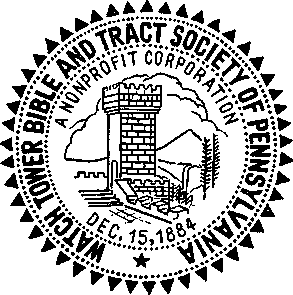
SOCIETY’S SEAL, 1956
. . . We never solicit donations. Those who possess this world’s goods and are wholly consecrated need only to know how they can use it. Donations to this fund should be specified.m
In 1884 this Society was organized into a corporation, Russell himself writing the charter. Its original name was “Zion’s Watch Tower Tract Society” but now it is “Watch Tower Bible and Tract Society of Pennsylvania.”11 Its purpose is stated in article two of its charter.
The purpose for which the corporation is formed is, the dissemination of Bible truths in various languages by means of the publication of tracts, pamphlets, papers and other religious documents, and by the use of all other lawful means which its board of directors, duly constituted, shall deem expedient for the furtherance of the purpose stated.
A board of seven directors was provided for by the charter, with three of them serving as officers, a president, vice-president and secretary-treasurer.0
Within a few years their original headquarters had become too small, so they decided to build a structure of their own. It was finished in 1889.P The building contained an assembly hall for about 200, which would correspond to the modernday Kingdom Hall of Jehovah’s witnesses. It had a small room for printing, with shipping facilities in the basement, and also contained living quarters for the members of the family who served as the headquarters staff. Space also was provided for the editorial department, and there was a store front with a storage room from which they dispensed their printed publications to the public. This building was called the “Bible House” and served as the Society’s headquarters for twenty years.
So Pastor Russell did not organize the Watch Tower Society just to receive contributions and print literature. As stated in its charter, it was for “the dissemination of Bible truths.” To fulfill that purpose, more was needed than just establishing congregations for study with some incidental tract distribution on their part, and this further organization is really what Pastor Russell had in mind. I’ll tell you about that next week.
m W Jan.-Feb., 1882, p. 2. n On December 13, 1884, Judge F. H. Collier of the Court of Common Pleas for Allegheny County, Pennsylvania, granted the Society a legal charter which was recorded December 15, 1884. (W Jan., 1885, p. 1) The original name was changed in 1896 by legal amendment to "Watch Tower Bible and Tract Society.” (Charter, Watch Tower Bible and Tract Society, pp. 4, 5) November 1, 1955, amendments legalizing its present full title were recorded. See also Studies in the Scriptures, Vol. I (1886). Foreword: “Biography.” p. 19 (1926 Ed.), o The original officers were C. T. Russell, president; William I. Mann, vice-president: Maria S. Russell, Pastor Russell’s wife, secretary-treasurer. (Charter, Watch Tower Bible and Tract Society, pp. 1-3) p Located at 56 and 60 Arch Street, Allegheny, North Side, Pittsburgh: due to a renumbering of the street, later designated 610-614 Arch Street. (W Jan., 1890, p. 1; W 1900, pp. 260, 272, picture) The property was originally held in title legally by the Tower Publishing Company, a private concern personally managed by C. T. Russell. In April, 1898, ownership of this plant and real estate was transferred to the legal corporation Watch Tower Bible and Tract Society when the Society’s board of directors accepted the donation of title to this plant. (W 1898. pp. 114, 369)
Preaching
the Good News,
a Commission
for All
L-------------
" «ois: John, last week you were telling us that Watch Tower readers distributed tracts. Was this an organized work or done individually?
JOHN: It was primarily an individual work at first, although much encouragement and assistance were rendered by the developing Society. From the very beginning Russell recognized the need for Christians to carry on actively in preaching what they had learned. In its second year of publication the Watch Tower carried this stirring call under the heading “Wanted 1000 Preachers.” This call encouraged all readers of the Watch Tower who could give one half or more of their time exclusively to the work of the Lord to
go forth into large or small cities, according to your ability, as Colporteurs or Evangelists, seek to find in every place the earnest Christians, many of whom you will find possessed of a zeal for God, but not according to knowledge; to these seek to make known the riches of Our Father’s grace, and the beauties of His word, giving them tracts; and as a work of kindness and love to them, endeavor to sell them the “Day Dawn,” or to take their subscription for the “Watch Tower,” [or if interested, but too poor to purchase, presenting the same as a gift from God.]
As few could afford to travel, pay their board
a W Apr.. 1881. p. 7. b W May. 1881, p. 8.
CHAPTER 5
and clothe themselves without some income, we propose to furnish the tracts and Day Dawns free, and to allow any such person to take subscriptions for the Watch Tower, using the money obtained from both of these sources, . . . in defraying necessary expenses.51
In the following month, May, 1881, reference was made to this item, with the observation that many good responses had resulted. But it also demonstrated Pastor Russell’s recognition that this work was not merely for the purpose of acquainting persons with God’s purpose. It was also designed to give the individual Christian a responsibility in sharing in the outworking of God’s purposes. Note what it says:
Some seem to have misapprehended us and thought we wanted everybody—regular canvassers and book agents, and called the attention of their friends to it as a nice chance to obtain some employment, etc. This is a misapprehension of our proposition. We want laborers (and so does the Lord) who will be working for heavenly wages, rather than for the price of a paper or book, be that ever so needful. No, we want those only who can explain the paper and book and plan, who as they go will preach, saying: “The kingdom of heaven is at hand, repent ye.” (Matt. iii.2).t>
Lois: Well, you certainly will have to admit that Pastor Russell was optimistic anyway, calling for 1,000 full-time preachers. Were there many who actually responded?
JOHN: Reports were not published frequently, but during 1885 there were around 300 colporteurs, as they were called. This is indicated from a report of the secretary-treasurer of the Society in the January,
1886, issue of the Watch Towers In 1886 the bound book entitled “The Divine Plan of the Ages” was published and began to be distributed. These colporteurs, or “pioneers,” as we now call them, reported weekly to the Pittsburgh office.3 Years later when the bound books became a series of six volumes, the colporteurs did not carry all the bound books with them as they went from door to door, as Jehovah’s witnesses do today. Instead they carried what was called a “prospectus.” This was merely an array of the covers of the books bound together in accordion fashion so that it would open out flat and display all the book covers. The Witness would then stretch this out along his arm and give a talk on each of the subjects of these books. Then he would take an order for a complete set. In this way deliveries were made only once or twice a month and the Witnesses would generally work in pairs to deliver all these ordered volumes. It was not unusual for one colporteur, or “pioneer,” to deliver four or five hundred volumes a month.
ANOINTED TO PREACH
But that early call for 1,000 preachers was not limited to those who could devote their full time. This further point was made:
The church is God’s vineyard . . . There is so great a variety of work that all may find employ—all were hired in the parable. If you have a half hour, or an hour, or two, or three, you can use it and it will be acceptable with the Lord of the harvest. Who can tell the blessings which may flow from one hour’s service under God’s direction ?e
That same year an article called “Anointed to Preach” appeared in the Watch Tower under the caption text of Isaiah 61:1. Would you like to read that text, Lois?
Lois: Yes, I read from my new volume of the New World Translation of the Hebrew Scriptures that you left me. [Reading] “The spirit of the Lord Jehovah is upon me, for the reason that Jehovah has anointed me to tell good news to the meek ones. He has sent me to bind up the brokenhearted, to call out liberty to those taken captive and the wide opening of the eyes even to the prisoners; to call out the year of good will on the part of Jehovah and the day of vengeance on the part of our God.” JOHN: pastor Russell opens the article by explaining that, according to Luke 4:18, Jesus quoted this prophecy, and applied it to himself and his work. He then shows that one reason for this anointing was to supply authorization from God to preach. Then Russell calls attention to the responsibility on Jesus’ followers.
The anointing spirit power which came first upon the head [Jesus] was due and did in due time (Pentecost) come upon the church which is his body. And the anointing which she there received abideth in her. (1 Jno. 2:27.) Why was the church anointed? The word answers—that she might share with her Lord in the present time the dishonor and sacrifice and in the coming age of glory be joined with him in glory and power. And more—as he was “anointed to •preach the good news” so must we, his body, be anointed to preach the same gospel... WHO ARE TO PREACH? We answer, All who receive of the anointing spirit and are thus recognized as members of the body of Christ (the anointed.) Of each member it is true as of the head—“He hath anointed me to preach the gospel.” We have each gifts and talents differing from the other and none of us are like our head, perfect, but each is responsible for such and so much preaching as he can do. Some can preach to multitudes; others to the twos and threes; others from house to house; others can drop a word in season; others can distribute tracts; others can give of the consecrated money entrusted to their stewardship to help others preach. Some can do several of these things, and some can do all of them, and all can and should preach by their life and customs the power of the good news to transform, for we are all living epistles, known and read of all men.
Are you preaching? We believe that none will be of the little flock except preachers. . . . Yes, we were called to suffer with him and to proclaim that good news now, that in due time we might be glorified and perform the things now preached. We were not called, nor anointed to receive honor and amass wealth, but to spend and be spent, and to preach the good news. Let us give all diligence to make our calling sure and to perform that for which we were anointed.f
c W Jan., 1886, p. 2. d W 1892, p. 301. e W Apr., 1881, p. 7.
maria: when we remember that this was only two years after the first issue of the Watch Tower appeared we can realize how urgent Pastor Russell considered the work to be.
JOHN: And, in calling on others to recognize their own responsibilities, he was ready to give them assistance. They already knew what to say from reading the Watch Tower. Now he set about giving counsel on how to say it. This is in the same issue of the Watch Tower that contained the call for 1,000 preachers. It appears under the heading “How to Teach.”
To those who would go forth to use either much or little of their time, we would say: It is a matter of great importance not only to teach the right thing but to present truth in a proper manner and order. This may be observed as a rule of life, pertaining to everything we undertake: if we would reap good fruit we must not only plant good seed, but it must be planted at a proper time, in a soil previously made ready, and it must be cared for until it becomes possessed of strength. So, too, must the seed be carefully, prayerfully and wisely sown, and the words of our Master are: “Be ye wise as serpents but harmless as doves.”
Present first the Restitution and the beauties
f W July-Aug., 1881, pp. 1, 2. K W Apr., 1881, p. 8. of God’s unfolding plan; then show that all this awaits and is dependent on the King and kingdom coming. Then, when your hearer or reader has come to love the King and to long for his kingdom, may be quite soon enough to present the manner of His coming—that it is not Jesus the man but Jesus a spiritual being, who comes, unseen, . . . and lastly present “the time, that now we are “in the days of the Son of Man.”s
| | |
|
FOOD
FOR
Thinking Christians.
WHY EVIL
WAS
PERMITTED
•*0
KINDRED TOPICS.
"To make all see, whir is the fellowship of the tny^tety, which I'tcm ths beginning of the world huh been hid in God.” “Wherein he huh abounded toward us in all wisdom and prudence, having made known unto us the mystery of his w:!l, according to his good pleasure ■ Inch he ha'h putpoted tct himself—that tn the dispensation of the fullness of times, he might gather together in one, all things in Chnst.” Eph i, 8, and :ti, 4. 5, 9
SEPTEMBER
“ZION’S WATCH TOWER,”
PITTSBURGH. PA.
1SS1 | |
| | |
'FOOD FOR THINKING CHRISTIANS,” 1881
So, by means of such preaching instructions, gradually hundreds of Christian witnesses were nursed and trained to share effectively in the field service.
THE “MILLENNIAL DAWN” SERIES
tom: j suppose the free distribution of over a million copies of the booklet Food for Thinking Christians in four years helped considerably in spreading the message. But, besides the booklets and tracts and the Watch Tower, what else did Russell write? You’ve mentioned a number of bound books. Were these his, too?
JOHN: Yes, those that we’ve read excerpts from. Of course, Russell’s first book, ThreeWorlds, was written in collaboration with Barbour. Then there was another book that had been circulating called “Day Dawn,” written by an early associate, J. H. Paton. But, with the advancing light of truth, neither of these were found to be satisfactory for the work. So it was decided that Russell should write a number of books to be called the “Millennial Dawn” Series.11 After many difficulties the first one appeared in 1886 as Volume I of the promised series. This is the one we spoke of earlier. It was first called “The Plan of the Ages” and later “The Divine Plan of the Ages.” It proved to be one of the finest instruments the Society had yet brought forth in spreading the good news, and within a forty-year period six million copies were distributed. This enabled hundreds of sincere persons to come out of apostate religion and become associated with the early society of Jehovah’s witnesses.
The book contained a chart of the ages very similar to that which had appeared first in the book Three Worlds. Its contents comprised a resume of all the truth that had been understood up to the year 1886, including that which had appeared in Food for Thinking Christians and in Tabernacle Teachings. It was a 352-page book written in a simple and easy-flowing style, even for the modern reader, in spite of the more complicated sentence structure so generally popular then. A few of its sixteen chapters give some idea of the hope it held out to its readers: “Earth’s Night of Sin to Terminate in a Morning of Joy,” “The Existence of a Supreme Intelligent Creator Established,” “Our Lord’s Return—Its Object, the Restitution of All Things,” “The Permission of Evil and Its Relation to God’s Plan.”
Then, near the end of the book, appeared a chapter called “The Day of Jehovah” that is highly significant even in our day. Note this brief excerpt:
The “Day of Jehovah” is the name of that period of time in which God’s kingdom, under Christ, is to be gradually “set up” . . . while the kingdoms of this world are passing away and Satan’s power and influence over men are being bound. It is everywhere described as a dark day of intense trouble and distress and perplexity upon mankind. . . .
That some of the saints will still be in the flesh during at least a part of this burning time seems possible. [This has proved to be true. [J] Their position in it, however, will differ from that of others, not so much in that they will be miraculously preserved (though it is distinctly promised that their bread and water shall be sure), but in the fact that, being instructed from God’s Word, they will not feel the same anxiety and hopeless dread that will overspread the world. [Here again is exactly the picture of Jehovah’s witnesses in these present times since the first world war.] . . . The troubles of this “Day of Jehovah” will give opportunity for preaching the good tidings of coming good, such as is seldom afforded, and blessed are they who will follow the footsteps of the Master, and be the good Samaritans binding up the wounds and pouring in the oil and wine of comfort and cheer?
Although this was still decades before the first world war, it is surprising how accurately the events that finally took place were actually foreseen.
lois; were the other books in the series finally written?
John: Five more were, in the course of years. Volume II, The Time Is at Hand, was released in 1889; Volume III, Thy Kingdom Come, 1891; Volume IV, The Battle of Armageddon, which was originally called “The Day of Vengeance,” appeared in 1897; Volume V, At-one-ment Between God and Man, in 1899; and finally Volume VI, The New Creation, in 1904.
maria: These books were called the “Millennial Dawn” Series until the end of 1904, when it was decided that the name “Studies in the Scriptures” would more clearly show the intended use of these publications and how they would best serve the reader. At the same time, four suggested presentations in offering the books to the public were given the colporteurs.3 It was in the July 15 issue of The Watch Tower, 1906, that Pastor Russell said:
h In 1904 this series was referred to as ‘’Studies in the Scriptures” (W 1904, pp. 246, 274), which name was adopted in limited editions beginning Oct., 1904 (W 1904, p. 306), at which time “vol. I” was designated as “Series I” (Ibid., p. 322). This practice was more generally followed beginning early in 1906 (W 1906, p. 34). i Studies in the Scriptures, Vol. I (1886), pp. 307, 338, 342 (1910 Ed.); W 1911, pp. 320, 329. jlV 1904, pp. 246-248.
months. Russell and his missionary party sailed from New York city for Belfast, Ireland, where they met with friends and then proceeded on to visit other groups and historic places in Glasgow and Edinburgh, Scotland. His tour took him into Russia and down into Turkey and Egypt before he returned to England and went on to New York.1
Nor is our promise of the complete set yet fulfilled; for although six volumes are now issued, a seventh on Revelation and Ezekiel is still future: delayed by the growth of the general work, doubtless in accord with the Lord’s “due time.”k
THE GOOD NEWS REACHES EUROPE
tom: Was the first work outside the United States the distribution in Britain of the booklet Food for Thinking Christians you mentioned earlier?
john: as far as we have any record, yes, except for Canada. Within a few years small groups were gathered together in Britain for Bible study. Because of the growing interest it was decided in 1891 that Russell, as the Society’s president, should make his first trip abroad to stimulate this interest and expand the work farther outside of Canada and the United States. His trip was scheduled to last two
The report of this trip presents an interesting picture of the work of spreading the good news in that time. He wrote:
We see no opening or readiness for the truth in Russia, . . . nothing to encourage us to hope for any harvest in Italy or Turkey or Austria or Germany. . . . The Italians have been so long under the baneful influence of the Papacy that they, like the French, are rapidly turning to open infidelity, . . . But Norway, Sweden, Denmark, Switzerland, and especially England, Ireland and Scotland are fields ready and waiting to be harvested.m
As Russell had foreseen, it was in these latter countries that the truth spread freely through the 1890’s and early 1900’s. Because of the urgent need that he had recognized in England, Russell immediately established a depot for literature in London.11 Then in 1900 the Society opened its first Branch office outside the United States. This was also in London, England.0 tom = what about the Scandinavian countries and others whose native tongue is not English? Was the literature of the Society available in their own languages?
k W 1906, p. 236. 1 Russell’s tour included visits to Copenhagen, Denmark; Berlin and Leipzig in Germany; Vienna in Austria; Kischenev in Russia; Constantinople, Turkey; Athens in Greece; Jerusalem in Palestine; Egypt’s Cairo, where he saw the pyramids; Rome, Italy; Berne, Switzerland; Paris, France; Brussels, Belgium; Amsterdam, Holland; and London and Liverpool, England, where in each of the two cities Russell spoke to 150 persons before he returned to New York. (W 1891, pp. 95, 148) m Ibid. For Russell’s first-hand observations on Protestant missions abroad, see W 1892, pp. 3-7; W 1891, p. 148. n In late 1891, No. 62 Paternoster Row. (W 1892, p. 2) o At 131 Gipsy Lane, Forest Gate, East London. (W 1900, p. 146)
John: At first, no; the Society’s publications were published only in English. But after Russell’s trip abroad, arrangements were made to begin publishing various books and pamphlets in German, French, Swedish, Dano-Norwegian, Polish, Greek and later in Italian. So gradually the good news was reaching farther out into the world to peoples of other nations and tongues. In 1903 a Branch was opened in Germany,15 and another in Australia the next year, although one of the Witnesses had been sent to that continent in 1903.q
tom: what expansion did you have in numbers up to that time?
john: a statement in the January, 1891, Watch Tower, page 3, might throw some light on the possible number associated at that time.
The monthly circulation of the Tower averages about ten thousand copies, which we may safely estimate represents fifteen thousand readers. And of those readers, scattered in all parts of the world, we estimate, judging from the letters received, that about four thousand are fully consecrated to the Lord and using their talents to praise him to the best of their ability. . . . And if 4,000 persons now living are fully consecrated to the Lord and faithful, and have been so developed during the past ten years, this would show an average of 400 persons annually during the past ten years.
That represented a fairly sizable yearly increase for these early days of the work.
STRENGTHENING THE ORGANIZATION
As a result of this increase it was found necessary to strengthen the organization further and build its associates up spiritually by regular conventions. As already mentioned, these had been held in connection with the Lord’s evening meal since 1879. But in 1893 it was deemed advisable to hold the first convention outside of Pittsburgh. Accordingly, arrangements were made in 1893 for a national assembly to be held in Chicago, Illinois, August 20-24, the same time that the Columbian Exposition or world’s fair was held there. Because of this world’s fair, railroads had made provisions for reduced rates in travel to Chicago. The Witnesses took advantage of this to attend the assembly and then, if they so desired, to stay a few days afterward to take in the Columbian Exposition. The report is interesting.
The number in attendance was about 360 . . . following [the morning prayer meeting each day] came a discourse of about an hour and a half, then an adjournment for dinner, after which the afternoon, from 2 until 5, was devoted to the public answering of questions. The last day was devoted to the interest of the Colporteur work; and on the day after the close of the Convention, some of the experienced Colporteurs [or pioneers] remained with some of the less successful and the beginners, and held a school of colporteuring—giving instructions, pointing out good and bad methods, manners and expressions . . . [about 50 colporteurs attended]. The Calvary Baptist Church of Chicago very kindly granted us the use of their baptistry; and, in all, 70 symbolized their baptism into Christ’s death by immersion into water. The proportion of brethren and sisters was about equal, and their ages ranged from 17 to 70 years.r
There was another feature of the work that opened up. In 1894, the Society undertook a new program to strengthen the organization and draw its members close together. Beginning in that year twenty competent part-time representatives of the Watch Tower Society were sent out on weekends from Pittsburgh to conduct public meetings and to build up new congregations or “ecclesias.”3
Of course, this was not altogether a new work. You remember we mentioned that Russell and a few others visited the earliest congregations. Actually, the first notice of visitation work to the congregations appeared as a small item under the heading “Preaching” in Zion’s Watch Tower for December, 1879, page 8. It said:
p. W 1903, pp. 197, 454. a Ibid., pp. 386, 455; W 1904, p. 82. r. W 1893, p. 280. s. W 1894, p. 393.
Almost all the brethren whose names appear on our list as regular contributors, the editor, and three others who do not write for Zion’s Watch Tower, but who are in sympathy and accord with its teachings, are preaching the good news wherever the Lord of the Harvest opens the way. Requests for their services may be sent to this office.
In 1897 a further development of this practice came about in what was called the “pilgrim work.” This service of visiting congregations in this year was confined to three full-time representatives who traveled on a set route from one congregation to another, spending one or two days with each group, conducting meetings with them and otherwise providing for their spiritual nourishment. This work proved to be a real blessing to the brothers since it helped in many ways to unify the congregations’ thinking and draw them closer together in fulfilling their commission to preach. Aside from Zion’s Watch Tower itself, and occasional correspondence, the pilgrims’ visits were about the only tie that these congregations had with the headquarters’ office in Pittsburgh? Through the years the number of congregations of Bible students increased, so it was necessary for the Society to send more pilgrims on the road in order to maintain organizational contact. In 1905 there were twenty-five," and by 1917 there were ninety-three serving?
maria: John, you mentioned once before about correspondence received by the Society. Maybe Tom and Lois would like to know that letters were frequently published in the Watch Tower, if they were of general interest. May I read one of them to the group? I found it particularly interesting.
John: Certainly. I believe you have in mind the one written by a newly interested man in 1894.
maria: Yes, that’s the one. [Reading]
Gentlemen:—Enclosed herewith please find Exchange on New York for the sum of $6.00, for which please send me Zion’s Watch Tower one year and copies of Millennial Dawn.
By way of explanation for ordering this amount of books, I desire to say that, about two months ago, two young ladies [Watch Tower pioneers] came into my [law] office selling those books. I was very busy when they presented their card; and, seeing that they were ladies selling books, I bought the three volumes, thinking that by so doing I was helping them out. I have since concluded that these ladies brought to me “glad tidings of great joy.” I took the books home, and thought little of them, until a few weeks ago, when I had some spare time, I began reading the first volume, and it was so very interesting that I could not stop. The result is, my dear wife and myself have read these books with the keenest interest, and we consider it a God-send and a great blessing that we have had the opportunity of coming in contact with them. They are indeed a “helping hand” to the study of the Bible. The great truths revealed in the study of this series have simply reversed our earthly aspirations; and realizing to some extent, at least, the great opportunity for doing something for Christ, we intend to take advantage of this opportunity in distributing these books, first, among our nearest relatives and friends, and then among the poor who desire to read them and are unable to purchase; and for that reason we desire these extra copies. . . . Yours, etc.w
This letter was signed by lawyer J. F. Rutherford in 1894.
lois: oh, that’s interesting. That must be Judge Rutherford. I remember his name from the time I was a little girl. My Dad used to like to listen to him on the radio, but my mother—well, she didn’t. Of course, this was a long time after he wrote that letter.
John: Yes, of course. He dedicated himself to Jehovah twelve years later and was appointed the Society’s lawyer in 1907 at the Pittsburgh headquarters or “Bible House.” He became the Society’s second president when Pastor Russell died.
t W 1897, p. 309. u W 1905, p. 375. v W 1917, p. 374. r. W 1894, p. 127.
TOM: What about the Scandinavian countries and others whose native tongue is not English? Was the literature of the Society available in their own languages?
John: first, no; the Society’s publica
tions were published only in English. But after Russell’s trip abroad, arrangements were made to begin publishing various books and pamphlets in German, French, Swedish, Dano-Norwegian, Polish, Greek and later in Italian. So gradually the good news was reaching farther out into the world to peoples of other nations and tongues. In 1903 a Branch was opened in Germany,p and another in Australia the next year, although one of the Witnesses had been sent to that continent in 1903.®
tom: what expansion did you have in numbers up to that time?
john: a statement in the January, 1891, Watch Tower, page 3, might throw some light on the possible number associated at that time.
The monthly circulation of the Tower averages about ten thousand copies, which we may safely estimate represents fifteen thousand readers. And of those readers, scattered in all parts of the world, we estimate, judging from the letters received, that about four thousand are fully consecrated to the Lord and using their talents to praise him to the best of their ability. . . . And if 4,000 persons now living are fully consecrated to the Lord and faithful, and have been so developed during the past ten years, this would show an average of 400 persons annually during the past ten years.
That represented a fairly sizable yearly increase for these early days of the work.
STRENGTHENING THE ORGANIZATION
As a result of this increase it was found necessary to strengthen the organization further and build its associates up spiritually by regular conventions. As already mentioned, these had been held in connection with the Lord’s evening meal since 1879. But in 1893 it was deemed advisable to hold the first convention outside of Pittsburgh. Accordingly, arrangements were made in 1893 for a national assembly to be held in Chicago, Illinois, August 20-24, the same time that the Columbian Exposition or world’s fair was held there. Because of this world’s fair, railroads had made provisions for reduced rates in travel to Chicago. The Witnesses took advantage of this to attend the assembly and then, if they so desired, to stay a few days afterward to take in the Columbian Exposition. The report is interesting.
The number in attendance was about 360 . . . following [the morning prayer meeting each day] came a discourse of about an hour and a half, then an adjournment for dinner, after which the afternoon, from 2 until 5, was devoted to the public answering of questions. The last day was devoted to the interest of the Colporteur work; and on the day after the close of the Convention, some of the experienced Colporteurs [or pioneers] remained with some of the less successful and the beginners, and held a school of colporteuring—giving instructions, pointing out good and bad methods, manners and expressions . . . [about 50 colporteurs attended]. The Calvary Baptist Church of Chicago very kindly granted us the use of their baptistry; and, in all, 70 symbolized their baptism into Christ’s death by immersion into water. The proportion of brethren and sisters was about equal, and their ages ranged from 17 to 70 years.r
There was another feature of the work that opened up. In 1894, the Society undertook a new program to strengthen the organization and draw its members close together. Beginning in that year twenty competent part-time representatives of the Watch Tower Society were sent out on weekends from Pittsburgh to conduct public meetings and to build up new congregations or “ecclesias.”3
Of course, this was not altogether a new work. You remember we mentioned that Russell and a few others visited the earliest congregations. Actually, the first notice of visitation work to the congregations
p. W 1903, pp. 197, 454. q Ibid., pp. 386, 455; W 1904, p. 82. r. W 1893, p. 280. s. W 1894, p. 393.
Going on the
Offensive
T--
om: What did your mother have against Judge Rutherford, Lois—aside from the fact that she never listens to anyone except her own minister?
LOIS: Now, Tom, that isn’t fair. You know mother isn’t as strong-minded about her religion as she used to be. But Judge Rutherford was certainly outspoken against the churches. Now wasn’t he, John?
John: yes, he was. But you must remember that by the time he became president of the Watch Tower Society he had had ample opportunity to see the deep-rooted animosity church leaders had manifested against Pastor Russell personally and the Society in general.
lois: BUt don’t you think that if Pastor Russell had tried more to work with the churches, instead of fighting them, he might have accomplished more?
tom: what could he have accomplished, except maybe a compromise, Lois? From what I’ve learned through our discussions, that was one of the tests applied to see whether he would stand firm for his beliefs or follow the same course of apostasy all the churches have taken. Besides, Russell’s views were about as diametrically opposed to those of the orthodox religions as it would be possible to imagine. Isn’t that right, John?
John: yes, it is, Tom. But you will remember, Lois, I told you that Pastor Russell approached the ministers of Pittsburgh and Allegheny with his new-found Scriptural understanding of Christ’s second presence and they refused to accept it. Now, what was he to do? He couldn’t forsake his views just because these ministers opposed them. He was convinced that the time for the harvest ingathering had come, so if the ministers would not tell those “sheep” in their charge, then there was nothing left for him to do but tell them himself. This he proceeded to do with all the energy and ingenuity of which he was capable.
It is true, as Russell himself admitted, that the Adventists had brought considerable disrepute upon the doctrine of Christ’s return because of their continued extravagant views and time settings. Russell himself was outspokenly opposed to Adventism in this regard. And, as a result, he was invited to speak in some of the more liberal churches. But, to show how impossible it was for Pastor Russell to tell the people everything they needed to know without incurring the disfavor of the church leaders, I’d like to relate an incident I heard from one of the old-timers with the Society.
One Sunday morning Russell was invited to deliver a sermon in one of the churches in a certain city in Pennsylvania. He spoke at their morning service about the blessings of the Kingdom, picturing the happy conditions that would be brought about by Christ’s thousand-year reign. Everyone was thrilled with this news and wanted to hear more. In fact, some in the audience were from the other church in the city, and because of the good impression that had been made they influenced both ministers to ask Russell to give another talk that same night to an audience made up of members of both churches. This was agreed upon. At the evening meeting Russell determined that now, since they had evidenced their interest in Christ’s return and in the blessings that would accompany his presence, it was necessary for him to go deeper into this matter and talk to them about the time that these things would take place.3- This he did, pointing to 1914.
At the conclusion of the talk he went into the minister’s study right back of the pulpit. There both ministers were waiting for him and angrily proceeded to accuse him of being a wolf in sheep’s clothing. They said that he was nothing but an Adventist, that he had merely talked nice and sweet to the people in the morning in order that he might get them all together that evening to fill them full of a lot of Adventist propaganda. They did not object to his talk on the blessings of God’s kingdom at the morning meeting. But, they said, when he got all the best people in town at the night meeting, then he showed his true colors as an Adventist. Russell was quite young at the time and he said later that they continued to abuse him for several minutes, not allowing him an opportunity to say a word. He said he just offered a silent prayer for help, hoping that the floor would open up and swallow him.
Just then there was a loud knock at the door and, before the minister could say, a W Apr. 1881, p. 8. b James 3:1.
Come in, or go to the door, in walked an old man with a large cane in his hand that he had used to knock at the door. He walked up to his preacher and shook his cane in his face and said: “I have been paying you a good salary for twenty years to teach this congregation. But I learned more from Brother Russell in two talks than I did from you in the twenty years you’ve served here. You will improve your talks and learn from Russell or you’ll be out looking for a new job.” Then he walked over to Russell and took him by the hand and said: “God bless you, Brother Russell. Come home with me, for I have some questions I want to ask you.” In relating this incident later Pastor Russell said, according to my informant, that it was certainly a happy ending to a bad situation.
Russell’s repeated disappointments with such church leaders forced him to realize that few, if any, would turn to the truth and that time would more profitably be spent in dealing with their flocks, rather than with these so-called pastors themselves.
lois: in a fairness to these leaders
in the various churches, didn’t they feel, perhaps, they had a duty to warn their flocks against Pastor Russell if they disagreed with his doctrine?
John: Perhaps they did. But since they were in a position as overseers, that made their responsibility even greater. James warned the early Christians that teachers would be given a severer judgment because of that greater responsibility? A few of these leaders tried to argue Scripturally with Russell, but this always proved fatal to them. However, instead of awakening the clergymen to their true position, it merely embittered them and forced them to take stronger measures against Russell.
Now their responsibility was emphasized, as it became the usual practice to malign Russell personally as an individual and try to belittle his position as a minister. You see, in 1846 leaders of the outstanding Protestant organizations had formed a sort of preachers’ union called the “Evangelical Alliance,” which limited recognition of ordination to those major sects already operating theological schools. Those who did not belong to this alliance were not recognized as accredited ministers; and if they endeavored to preach, as Russell did, they were viewed with contempt and held up to public ridicule. So Russell found himself opposed in every way by these men that he had hoped to help.0
A STRIKING PARALLEL
Lois: BUt (foes that necessarily mean that the religious leaders were actually against God too? Perhaps in their own way they were also doing good.
John: it was not just that they were opposed to the work being done by Jehovah’s witnesses at that time, Lois. It was the manner in which the clergy opposed the Witnesses. The clergy’s course gives vital testimony to the fact that they were really being used by Satan. Let me show you a parallel that Pastor Russell himself recognized. This is how he expressed it in the Watch Tower of May, 1881. He points to the first presence of Christ Jesus as setting a pattern for his second presence. He recalls that Jesus preached to the nation of Israel for three and a half years, during which time the nation as a whole refused to listen. As a result fleshly Israel was rejected by God as a nation and only Jews as individuals could come to him for the following three and a half years, the remainder of the period of favor granted Israel at the Messiah’s first presence.
Russell, believing that the glorified Jesus became invisibly present in 1874, then writes:
Now what would be the parallel, or meaning of this prophetic “shadow” here? We answer that during the three and one-half years from 1874 the proclamation of Jesus, the present Bridegroom, was made to the church as a whole, that the spirit addressed nominal Zion as a whole, saying: “I counsel thee buy of me gold tried in the fire, and white raiment, . . . as many as I love I rebuke and chasten: be zealous therefore and repent. Behold I stand at the door and knock.” (Rev. iii.18).
But they heeded not his presence and call, as the “shadow” showed they would not, (the “Doctors of Divinity” mostly opposing it, as the “Doctors of the Law” had done in the “shadow”). After three and one-half years (in 1878) he rejected or left desolate the nominal church here, as he had done in the “shadow,” saying, “Because thou art neither cold nor hot I will spew thee out of my mouth.” (Rev. iii.16). The Jewish church was God’s mouthpiece until “left desolate,” but from that time forward God’s truth came through another channel. So here the gospel church has been God’s recognized channel of truth, or mouthpiece, but are such, we believe, no longer. Truth will now come through other channels.
Since 1878 (and never before that) we have felt at liberty to call God’s children out of the nominal churches to a position of freedom and liberty, where they would be free to serve Him fully, as well as to study his word and be taught of Him: saying, “Babylon ... is fallen and become a habitation of devils and a hold of every foul spirit and a cage of every unclean and hateful bird.” (This falling of the nominal church and receiving into her bosom the corruptions of earth has been in progress for some time). Now comes the message: “And I heard another voice saying, Come out of her my people that ye be not partakers of her sins and receive not of her plagues.” (Rev. xviii.2-4).<i
Why would anyone who claimed to serve God want to fight against a message to the effect that the time had come for the Messiah to present himself a second time and bring to faithful mankind the blessings that he had promised when he was here before? So, instead of opposing Pastor Russell as they did, the very least these religious leaders could have done was to take the position urged by Gamaliel, the honest lawyer who argued in favor of Jesus’ disciples. He said to the Sanhedrin, the Jewish supreme court: “Do not meddle with these men, but let them alone; (because, if this scheme and this work is from men, it will be overthrown; but if it is from God, you will not be able to overthrow them;) otherwise, you may perhaps be found fighters actually against God.”e The religious leaders of Russell’s day, however, did not take this wise counsel of Gamaliel, and when Pastor Russell came to them with the claim that he was a servant of Jesus Christ and when he tried to point out the same hope that the disciples of Jesus had been preaching, they were not content to say to their followers: “Don’t pay any attention to these men. Just let them alone and it will be established in due time that their work is not really of God but that it is of men and it will fall of its own weight.”
eA Great Battle in the Ecclesiastical Heavens (1915), by I. F. Rutherford, pp. 7-10, “Unholy Alliance.” dW May 1881, p. 5.
They couldn’t very well have said that, could they, unless, of course, they would be willing to admit their error and follow the divine will? But they were too proud. Because of the eagerness with which the very best people of their church organizations accepted this doctrine, the clergy took the same course that the religious leaders of Jesus’ day took when, as the Bible says, the people heard him gladly. These modern scribes and Pharisees began not only to oppose the work Russell was doing but to malign him personally and ridicule his followers. Furthermore, they began to raise barriers to the work, appealing to Caesar’s government and causing legal difficulties for the advancement of the work. However, Russell always gave the people a chance to make their own fair comparison and make their own choice.
COMPARING SPIRITUAL FOOD
AT TWO TABLES
For example, there was a feature that began in the Watch Tower magazine in the January 1, 1892, issue, and was continued up to 1927.f In each issue of the Watch Tower, the Society kept abreast with the program of Bible discussion being used by many of the Protestant churches in the United States, Canada, Britain, and a number of other countries. These major Protestant organizations published what they called the “International Sunday School Lessons.” These were prepared by a Congregational clergyman, F. N. Peloubet, and his assistants and consisted of an annual book setting forth an outline of Bible studies, Sunday by Sunday, that would be considered by these Protestant organizations. For example: Sunday, January 19, 1908, the study was based on John 1:35-51. The key text, called the “golden text,” to be considered was a verse selected from this passage. On the date of our example the text read: “We have found him of whom Moses in the law and the prophets did write, Jesus of Nazareth.” The writers of the book then gave various notes and suggestions to Sunday-school teachers and ministers as to what might be discussed on this scripture for the assigned date. This service was quite popular and many Protestant groups used it in many countries of the world for over fifty years.
From 1892 forward the Watch Tower in each issue would furnish a study from the Society’s view for each Sunday-school “golden text” selected for the following month. In its issue of January 1, 1908, it presented an article entitled “Finding the Lord’s Jewels” as a discussion of the “golden text” we’ve selected for our example, January 19, based on John 1:35-51. Thus till 1927, or for more than thirty-five years, Jehovah’s witnesses as well as many professed Christians, especially Protestant, were studying every Sunday the same Biblical material, but at two different tables. The Watch Tower Society studied it according to their advanced understanding of the truth from the Lord’s table, recognizing that Jesus had said that he himself would come and serve his people if he found them faithfully watching. Those whom Jehovah’s witnesses met in the field could therefore make a comparison of the food being dispensed at this table of the Lord with that being served in their own church organization. The Watch Tower spoke of these Sunday-school lessons as suggestive thoughts designed to assist those of our readers who attend Bible classes, where these lessons are used; that they may be enabled to lead others into the fulness of the Gospels'
e Acts 5:38, 39. I W 1927, pp. 338, 347; with which compare W 1927, p. 354, JI.
Many persons of good will were enabled by this comparison to recognize the rich spiritual food being served at the true table of Jehovah and choose to accept it to the exclusion of all other religious food. This, of course, further angered the Protestant leaders.
Lois: Well, I can imagine that it would, since it brought into direct comparison the opposing views of Jehovah’s witnesses and those of the orthodox churches.
maria: it was not done to antagonize the clergy, but rather to help students of the Bible decide in their own minds what it was they wanted to believe. Since their salvation depended upon their own course, it was imperative that they have an opportunity to know the truth and make their own decision. Nothing could be fairer than that, could it?
STANDING ON THE STREETS WITH THE GOOD NEWS
john: a few years later volunteers were called from all Christians attending the Society’s meetings to undertake a mass distribution of 300,000 copies of a new booklet, The Bible vs. Evolution. This was to be
gW 18S2, p. 13.
given free to people as they left the Protestant churches on Sundays.
tom: a sort of church-picketing service, I suppose you could call it.
John: perhaps, although no attempt was made on the part of these early campaigners for Christ’s kingdom to prevent regular churchgoers from attending their services.
LOIS: But it was almost like asking for trouble, wasn’t it?
John: we weren’t looking at it from that standpoint but, if trouble resulted, we knew the people must still be given their own chance to decide for themselves. Do you think the prophet Jeremiah was just looking for trouble when he carried his message to the religious Jews of Jerusalem?
LOIS: [laughing]: No, of course not. I suppose now you’re going to tell me he was a prophetic “shadow,” too.
John: Well, let’s see what the Bible says about his work. Would you like to read Jeremiah 7:2?
lois [reading]: “Stand in the gate of the house of Jehovah, and you must call out there this word, and you must say, ‘Hear the word of Jehovah, all you of Judah, who are entering into these gates to bow down to Jehovah.’ ” I guess I’ll not comment on that one.
John: There is another one we should read. Jeremiah 11:6.
LOIS: I have it. [Reading] “And Jehovah went on to say to me: ‘Call out all these words in the cities of Judah and in the streets of Jerusalem, saying, “Hear the words of this covenant and you must do them.” ’ ” Well, I guess that’s precedent enough for Jehovah’s witnesses today to do the same thing. How did they carry on their work?
john: Zion’s Watch Tower for April 15, 1899, called it “Volunteer Service” and outlined the plan as follows:
The preferable plan of operations is for the friends who will so engage in each city or village to lay out a program which will insure that no congregation be omitted and that none be served twice. All large congregations require at least two or three for proper rapid service as they come out. And generally the effect is better if the distributors locate half a block away from the church building in each direction in which the people go.h
The work was taken up enthusiastically by thousands of volunteers in the United States, Canada and even in Europe, and in the first year 948,459 tracts were delivered to the people in this way." This work was continued for a number of years, especially on Sundays, and eventually was expanded to include house-to-house distribution of tracts by placing them under the doors at the homes on Sunday morning. Two or three times every year new tracts were released and these were delivered by the millions to church attenders. In this way the flood of truth was reaching right up to the church doors and overflowing the pastures of these religious shepherds.
tom: with, no doubt, a decided reaction on the part of the pastors.
John: Their hostile reaction was intense. Repeated attempts were made by these clergymen to have publishers arrested for standing on the streets distributing the free tracts. And it was necessary for the Society to offer legal counsel from time to time because of the interference of public officials who, at the instance of the clergy, were trying to “frame mischief by law” to discourage and hamper or entirely suppress such street distribution of tracts.j
Lois: i suppose good results were obtained from this work.
John: yes, indeed. More and more persons of good will were coming to a knowledge of the truth and separating themselves from their respective churches. To assist them in their resignation and to provide a further testimony to those in the church systems responsible for removing their names from the church rolls, specially printed “Withdrawal Letters” were provided, beginning in 1900. These letters were printed on Watch Tower Society stationery and presented a suitable testimony to the effect that the person signing the letter had come to an increased knowledge of the Scriptures, not by revelation or special inspirations or visions, but by a careful and analytical study of the Bible. The letter then set forth a few of the simple doctrines learned as opposed to those false doctrines that were taught by the church, and that this person had now come to know were in error.
In this way, as newly interested ones became convinced of the truth, their responsibility to stand free from this world’s system was pointed out and those desiring to do so would submit these letters. This practice continued for thirty years, and not only did it provide sound Scriptural arguments for the position taken by the one thus withdrawing from the denominational systems but it made further divisions among those who were for and those against the Kingdom messaged
tom: The work certainly has not collapsed of its own weight. If there is anything in the principle that lawyer Gamaliel urged in defense of the early Christians, then the growth of your organization should give people something to think about.
John: A work at that time was only beginning. So, for that matter, was the opposition. But it had caused many persons to take serious notice.
h W 1899, pp. 93, 34. i W 1900, p. 373; W 1899, p. 226. j W 1910, p. 236; W 1911, p. 461. k W 1900, p. 50; W 1908,
Uncovering
the Roots
of Opposition
T---—■
OM: Last week, John, you said that religious leaders made an effort to answer Russell on doctrinal grounds. How?
John: It was a limited effort, Tom, and really defeated their own ends. As thousands upon thousands of Bible tracts and pamphlets were constantly being distributed farther from the Pittsburgh (Pennsylvania) fountainhead, clergy opposition became increasingly manifest. These prominent leaders felt compelled to do something. They resented anyone whom their Evangelical Alliance would not recognize speaking authoritatively on the Bible. Since Russell was not a graduate of one of the theological schools operated by the major sects belonging to this alliance, these clergymen ridiculed him as president of the Watch Tower Society, objecting particularly to his being called “Pastor.” They found certain unscrupulous newspapers willing to be used as tools to concoct and spread scandalous lies about Russell and his differences with his wife.a
Then, on March 10, 1903, the ministerial alliance made an effort to answer Russell’s explanations of the Bible by choosing a highly educated man, skilled in argumentation, to challenge Russell to a six-day open debate. Actually, this was another attempt to discredit and expose Russell as an “ignorant and unlearned man.” This Pittsburgh opponent of Russell, Dr. E. L. Eaton, was the minister of the North Avenue Methodist Episcopal Church. Within two days Russell in good faith accepted this offer and the debates were finally held in the fall of the year at Pittsburgh’s Carnegie Hall before record audiences.
The first proposition was considered Sunday afternoon, October 18. Eaton debated affirmatively that the Bible teaches that divine grace for salvation has been exercised since man’s fall and that there will be no probation after death. Russell Scripturally denied.
Second, Tuesday evening, October 20, Russell affirmed that the Bible clearly teaches that the souls of the dead are unconscious, while their bodies are in the grave. Eaton denied.
Third, Thursday evening, October 22, Eaton affirmed that the Bible teaches that all the saved will become spirit creatures, and after the General Judgment will enter heaven. Russell denied.
Fourth, Tuesday evening, October 27, Russell, affirming that the Bible teaches that only the “saints” of the gospel age will share in the “first resurrection,” also held that vast multitudes will be saved in and by the subsequent resurrection. Eaton denied.
a a Great Battle in the Ecclesiastical Heavens (1915), by J. F. Rutherford, pp. 7-10, “Unholy Alliance.”
41
Fifth, Thursday, October 29, Russell affirmed that the Bible teaches that the object of both the second coming of Christ and the Millennium is the blessing of all the families of earth. Eaton denied.
Sixth and lastly, on Sunday, November 1, Eaton affirmed that the Bible teaches that the divine penalty for sin, eventually to be inflicted upon the incorrigible, will consist of inconceivably great sufferings, eternal in duration. Russell vigorously denied this hell-fire doctrine.b
maria: There is one interesting story that some tell who were present at the debates. Of course, all the brothers were there as well as thousands of the Methodists and those of other religions in the Pittsburgh area. When Russell arrived at the hall the first night he was surprised to see present not only Dr. Eaton but also several other prominent Protestant clergymen of the city sitting on the platform in the background as a committee. Eaton would frequently get notes from these men to coach him throughout the entire debate. On the other hand, Russell stood his ground all alone, and some years later a humorous cartoon in one of the publications pictured Pastor Russell as a Daniel in the lions’ den.
THE “FIRE OF HELL” PUT OUT
Lois: What was the result of these debates?
John: On the whole, Russell came off victorious for each of the six debates and especially the last one on hell. It is reported that one of the attending clergymen, acknowledging that victory, came up to Russell after the last debate, saying: “I am glad to see you turn the hose on hell and put out the fire.”c Furthermore, many of Dr. Eaton’s own congregation became Jehovah’s witnesses after that. In fact, there still are some in the truth to this day, older brothers, that were former members of Eaton’s congregation. This is strong evidence of the power of the truth against the false doctrines of apostasy.
tom: I never could see how anyone could accept the doctrine of “hell fire.” It is not reasonable to believe in a God who is supposed to personify love, yet who would create a place like that.
Lois: I don’t think I really believe it either. But our church doesn’t teach much about hell any more. I can’t remember hearing a sermon on hell in church since I was a little girl.
John: That’s very likely true, Lois, and it is not just the advent of scientific knowledge that has caused this change in church teaching. It is just as stated by that minister to Pastor Russell. These early Bible students, in their extensive campaign of Bible teaching, figuratively put out the fires of hell. This so aroused the anger of some prominent religious leaders and evangelists that these early Witnesses were often derisively called “No-hellers.” The implication of that nickname is incorrect, of course, because Jehovah’s witnesses do believe in the Bible “Sheol,” translated “hell,” but not as a place of torment. The Bible clearly reveals that hell in the Bible is the common grave of mankind, where persons dying go until time for the resurrection.
This subject of “hell” was one Pastor Russell used extensively, and one of his most popular lectures ever delivered was one called “To Hell and Back.” During the years 1905 to 1907, Russell toured the entire United States and Canada by special train or car, conducting a series of one-day conventions, during which this public lecture was featured. It was delivered before packed houses in nearly every large city of both countries.3
b W 1903, p. 391; for entire text of each of the six debates see the Pittsburgh Gazette, special edition, Nov. 2, 1903. c A Great Battle in the Ecclesiastical Heavens (1915), by J. F. Rutherford, p. 10.
In this striking lecture he took his audience on a witty, humorous, imaginary trip to hell and back. The irrefutable arguments presented by Russell in this talk, and by the Bible Students themselves throughout this entire period, made a lasting effect on many people.
Many interesting stories are told of these days of Russell’s “convention car” and “convention train.” For example, in Oakland, California, the brothers were unable to hire a hall large enough for the anticipated crowd. So the advance agent engaged the largest Methodist church in the city for this Sunday afternoon public lecture. Those signing the contract for the church did not know the name of the lecture that was to be given. A week or two before the talk was to be held the customary leaflets were put out, inviting the people by the thousands to come to hear the talk, and a large paid advertisement appeared in the newspapers and on big billboards announcing: “Attend the lecture ‘To Hell and Back’ by C. T. Russell at Oakland Methodist Church.”
The elders of the church were infuriated and wanted to break the contract immediately. They were advised by their lawyer that they could break the contract but they must be prepared, if Russell sued them, to be responsible for whatever sums he named in the suit. Their lawyer advised them the best thing they could do would be to instruct their janitor not to show up when the time for the meeting arrived.
Pastor Russell, as usual, was early, arriving an hour before the talk was scheduled. To his surprise many people were standing outside the church. He inquired what the trouble was. The brothers in charge said they couldn’t get the church open because no janitor had showed up. Russell said, “We have a contract, don’t we? And hasn’t a down payment been made?” When the brothers said, “Yes,” he told them, “Well, legally this is our property for the next several hours. If we can’t get in through the front door, instruct one of the brothers to go in through the basement and open up the door for the people.” This they did and their big meeting was successfully held in the Oakland Methodist Church.
OPPOSITION FAILS TO HALT GROWTH
tom: Apparently Russell was not only a courageous man but a resourceful one as well.
John: He was not one to be easily turned aside from what he recognized as a Godgiven assignment. He was thoroughly convinced that the work he was doing was according to the divine will for all honest-hearted Christian people and he was determined to fulfill his responsibility to the very best of his ability. All the opposition that was brought against Russell and the organization did not stop its forward movement. The zeal and activity of these early Witnesses are difficult to appreciate in these days of advanced scientific methods and advantages. Though small in number, this band of faithful Witnesses were undaunted by opposition and the immensity of the task before them.
The work continued to spread and the organization expanded. In 1903, just prior to the Eaton-Russell debates, Russell made his second tour of Europe. It was at that time he established the Branch office of the Society in Germany.6 The following year the Branch was set up in Australia.1 About this time, too, the seeds of truth were falling into good soil in faraway South Africa,* in Japan,11 and in the British West Indies. A convention was held in Kingston, Jamaica, attended by 400, with 600 at the public meeting.1 Expansion continued in the United States also. By 1908 it was possible to hold a convention at Put-In-Bay, Ohio, August 29 to September 7, with an estimated peak attendance of 4,800.j
d W 1905, p. 224; W 1907, p. 112. e W 1903, p. 197. f W 1904, p. 82. g W 1907, pp. 54-56.
Literature continued to be distributed by the millions of pieces and there were now 30,000 subscribers for the Watch Tower, with thousands of them sharing in the work of bringing truth from the Bible to others eager for knowledge of God’s Word. Furthermore, to meet this growing demand for Bible truth, to meet further objections being raised by the clergy of Christendom, and to keep up with the flood of truth as it was being revealed in a progressive way to these sincere Bible students, new literature was constantly being produced, and those truths recognized at first only in part were being clarified and refined.
tom: Was that debate with Eaton the only one Russell had?
john: No, it wasn’t. In 1908, Protestantism found another champion for its cause in the person of Elder L. S. White of the Disciples of Christ, one of the largest Protestant groups in the South. Capitalizing on Russell’s growing popularity and his ability to draw large crowds to his talks, this group proposed a public debate, which they hoped to transform into a revival for the Disciples of Christ. Pastor Russell, though, was suspicious of their motives and so the Society quietly called for an eight-day convention at this same time in Cincinnati, Ohio, where the debate was to be held. It was realized that, if this were not done, the small congregation at Cincinnati would be outnumbered by the swarm of the Disciples of Christ expected. The six debates, scheduled for February 23-28, 1908, came off on schedule and thousands were on hand to observe the easy victory for Russell, who, by this time, had become expert in debated Pictures of both Russell and Elder White with the full text of the debates appeared in the Cincinnati Enquirer" Perhaps the success of this series of debates can best be measured by the success of Elder White’s proposed revival afterward. Although there were 2,100 present at the last session of the Bible Students convention on Sunday afternoon, March 1, yet at Elder White’s opening revival meeting that same day, the total attendance, including himself, was 31. Other debate challenges were made by others and accepted, but at the last moment the challengers would withdraw.111
THE ENEMY STRIKES FROM WITHIN
Lois: pastor Russell ever have any
difficulty with anyone in the organization itself?
John: yes, there have always been some who will allow selfishness, pride or ambition to cloud their vision. But these opposers have only served to test the quality and the strength of integrity of the channel God is using. You remember the difficulty over the doctrine of the ransom that arose in the beginning with Barbour. Then, a short time after this, one of those who had survived that trial fell a prey to the snare of higher criticism and tried to draw away a following to himself.11
The next sifting that took place occurred only shortly afterward and demonstrated the fatality of trying to compete with the Lord’s channel, even with good intentions. In that instance, Russell reports, another associate
proposed to start another paper on the same lines as The Watch Tower, to republish some of the simpler features of God’s Plan and to be a sort of missionary and primary teacher. Knowing him to be clear on the subject of the Ransom, I bade him Godspeed and introduced a sample copy of his paper, Zion’s Day Star (now for many years discontinued), to our nearly ten thousand readers . . . Yet within one year it had gone boldly into infidelity.o
h W 1907, pp. 215, 216. 1 W 1905, p. 326. j W 1908, p. 275. k. Ibid., pp. 19, 70. I Cincinnati Enquirer, Aug. 15, 1908. m W 1908, pp. 8, 18. n W 1916, pp. 173, 174.
Then, in the early 1890’s, further seeds of rebellion were planted in the organization. Some of the prominent workers set themselves in opposition to Pastor Russell in an attempt to seize control of the Society for themselves. Soon after the convention in Chicago, Illinois, in 1893, these conspirators planned to explode what they thought would be a bombshell that would end Russell’s popularity and finish him as president of the Society. Although this problem did cause Pastor Russell much trouble and sorrow, when all the facts were brought to light Russell was vindicated and those who had plotted against him soon completely disappeared from sight and the service work went on without them.p
Now another development occurred. Mrs. Russell had been a director and officer of the Society for a number of years, serving as its secretary and treasurer. She had also been associate editor of the Watch Tower magazine and a regular contributor to its columns. When this difficulty we have just mentioned arose, Mrs. Russell visited a number of congregations to speak in behalf of her husband. Being a brilliant, educated woman, she was well received. So much so, in fact, that she now sought to secure a stronger voice in directing what should appear in the Watch Tower. This ambition was really her undoing. It was much like that of Moses’ sister, Miriam, who rose up against her brother as the leader of Israel and tried to make herself prominent in the nation.3 When Mrs. Russell realized that no article of hers would be acceptable for publication unless it was consistent with the Scriptural views expressed in the Watch Tower, she became greatly disturbed and her growing resentment led her eventually to sever her relationship with the Society and also with her husband. This forced Russell to provide a separate home for her, which he did, providing financially for her support.
Years later, in 1906, after due court proceedings, her separation was declared legal and she was awarded a court settlement against Russell for several thousand dollars. Because of certain statements made in this trial, opposers of Pastor Russell have endeavored ever since to make it appear that he was an immoral man and hence not qualified for the position that he had now attained in the religious field. However, the court record is clear that such charges are false. Reporting on this point later it was stated:
That Mrs. Russell herself did not believe and never has believed that her husband was guilty of immoral conduct is shown by the [court] record in this case where her own counsel (on page 10) asked Mrs. Russell this question: “You don’t mean that your husband was guilty of adultery?” Ans. “No.”1
Lois: That must have been an extremely trying time for Pastor Russell.
maria: Yes. And he realized what the
outcome of it might mean to him personally and what his enemies might try to make of it in the public press. But he had always taken the position that if he was to be a servant of God, he could never forsake God’s principles or the policy set forth in the Scriptures. So he did the only thing he could do under the circumstances.
“SIFTING AS WHEAT” A TEST
John: Those still living who knew Pastor Russell well and were associated with him personally say that he was one of the most uncompromising men as to principle they have ever known. His record bears this out. His faith was in Jehovah God and he maintained that position from the beginning and for this reason his stand was vindicated.
o W 1916, p. 175. p W 1894, pp. 163-174. q Numbers 12:1-15. r A Great Battle in the Ecclesiastical Heavens (1915). by J. F. Rutherford, pp. 16-19; also W 1906, pp. 211-227.
From time to time others endeavored to usurp the position of Pastor Russell, but they all failed. Commenting on these trials later, Russell said:
For years night and day we have forewarned the dear brethren that the harvest tests would surely be along these lines, and that supreme loyalty to God and to his Word and his providences in the Church would test our love for the brethren. Surely, too, we have long warned the dear friends that however we might point out to them the previous truths they must put these on as an armor, else they would be unprepared for the Adversary’s attacks when they would come.
It is just what we might have expected, that our wily Adversary would attempt to keep the Lord’s people from putting on the whole armor of God and fastening it on. More than this, he attempts to prejudice them against the very instrumentalities God provided to keep the “feet” of Christ in this evil day.—Psalm 91: 11,12.
From various quarters the word came to us that the leaders of classes were protesting that Watch Tower publications should not be referred to in the meetings, but merely the Bible. This sounded loyal to God’s Word; but it was not so. It was merely the effort of those teachers to come between the people of God and the Divinely provided light upon God’s Word.
Let us remember that Satan is behind such a move as that! He poses as an angel of light and a defender of the Bible, yet he has succeeded in blinding millions with Bibles in their hands and in regular Bible-study classes! Why would it be any more disloyal to the Bible to consult The Watch Tower publications respecting the meaning of a verse of Scripture than to consult the leader of the class or any of its members? . . .
On the other hand we forewarn all that Satan surely will try to lead them to an opposite course—to learn, parrot-like, to answer Bereans questions from the printed page without comprehending the meaning. The questions should be discussed freely by all first, and then before proceeding to the next question the Dawn answer should be considered and discussed and understood. Never forget that the Bible is our Standard and that however God-given our helps may be they are “helps” and not substitutes for the Bible.t
Here again is evidence of man’s weakness for extremes. It is why the Scriptures constantly admonish balance in all manner of Christian endeavor. Russell concludes his argument on the results of these testings by saying:
On the whole, the “sifting as wheat” seems to be having an awe-inspiring effect upon those whose sight remains, making them more careful, drawing them nearer to the Lord and to each other. The effect upon the others seems to be the reverse. They seem glad to “separate themselves,” anxious to bring about division, to boast of their “liberty.” They denounce the majority because they will not allow the minority to lord it over them, speaking evil of them as “slaves,” “in Babylonish bondage,” etc.
It would appear that nearly every case of doctrinal deflection and blindness was preceded by more or less of a mind-poisoning by slander, evil-speaking, evil surmising. By such rapidly developed roots of bitterness the Adversary prepared the way for the error, in nearly every case. . . .
Mark them that cause division and stumblings contrary to the doctrine which ye have learned, and avoid them. (Rom. 16:17, 18.) Do not render evil for evil, nor slander for slander; but both think and speak kindly of them with pitying love, even as toward all men confused by the Adversary. (2 Cor. 4:4).u
Lois; jjow could anyone resist a growing respect for Pastor Russell’s position when the facts are considered? No one can deny that he labored under extremely trying conditions, yet the results of his work certainly speak in his favor. I’m sure many other men would have bent one way or the other under the pressure.
john: bu-(- we should not forget, Lois, that Pastor Russell himself never attributed any of the results of his labors to any quality of his own. He always acknowledged his power and direction as coming from God; and when all the evidence is in, no other conclusion is possible.
s A name derived from the early Christians at Berea because of their method of study. (See Acts 17:11.) The term first applied to special topical Bible studies designed for analytical group consideration (W 1902, p. 159), was later applied to questions supplied for group study of The Watch Tower (W 1922, pp. 146, 159). t W 1909, p. 371. u Ibid., p. 372.
Approach
to 1914
ois: Did the divisions that occurred within the organization and the opposition that was raised up against Pastor Russell seriously affect the work, John?
john: n0 not seriously. In fact, Pastor Russell said such trials only served to draw the survivors more closely together. Besides, those who separated themselves at any one time were few in number, and there was much work to keep Russell and his associates busy.
The expanding organization and the nearness of 1914 kept Russell fully occupied during the first decade of this new century. He knew that what was represented by Jerusalem before 607 B.C. would be “trampled on by the nations, until the appointed times of the nations are fulfilled.” This was Jesus’ prophecy at Luke 21:24. He knew that this time of uninterrupted rule of Satan’s nations was due to expire in 1914. Since 1877 the modern witnesses of Jehovah had been energetically publishing that this long period of 2,520 years of Gentile times was fast running out.3
With this end in view Russell prepared and began to execute an all-out campaign of world-wide proportion as a final testimony to the nations that these few remaining years prior to 1914 would be their last opportunity to make peace with God before he came to execute his judgments against them.
Russell immediately realized that the four-story Bible house in Allegheny-Pittsburgh, which had served as headquarters for the Society for twenty years, was now too small to serve as a suitable center for the international work developing throughout the world. So, in 1908, several representatives of the Society, including its legal counselor, J. F. Rutherford,’’ were sent to New York to secure new headquarters, which Russell himself had previously located.
They bought the old four-story brownstone parsonage of Henry Ward Beecher at 124 Columbia Heights in Brooklyn and converted it into a home for the Society’s headquarters staff of thirty. Pastor Russell used Beecher’s old study for his own office.
tom: Wasn’t Henry Ward Beecher the Brooklyn minister that was so famous in his day for his antislavery sermons?
John: Yes, he was. He preached from the pulpit of the nearby Plymouth Congregational Church, where he served as pastor.c It is said, too, that Abraham Lincoln was one of the notables during the 1860’s who visited Henry Ward Beecher at his Columbia Heights residence.
a W Oct.-Nov. 1881, p. 3. b W 1919, p. 58. e Webster’s Biographical Dictionary, p. 125: History ot Kings County (New York. 1884: Munsell &Co.), pp. 1021. 1022
The Society also purchased the old “Plymouth Bethel,” a nearby mission structure that had long been used by the Plymouth Church.d After some remodeling, on January 31, 1909, the Society dedicated their new headquarters, with 350 in attendance. An assembly hall on the second floor of the renovated Plymouth Bethel had a seating capacity of 800 and was attractively redecorated in light olive green, as the predominating color, with a few artistic Scripture texts along the walls. On its street floor were located the Society’s offices and in the basement was a small press for printing handbills, also a shipping department. Concerning these buildings an announcement in The Watch Tower stated:
The new home we shall call “Bethel,” and the new office and auditorium, “The Brooklyn Tabernacle”; these names will supplant the term “Bible House.”e
The Society’s facilities in Pittsburgh were now sold and its accelerated preaching campaign in its final stage of this important phase of the work was ready to begin. Commodious and convenient as these expanded headquarters in Brooklyn were, however, within two years, in 1911, spacious new housing accommodations were completed adjoining the rear of Bethel, fronting on Furman Street and overlooking the Brooklyn waterfront.
A NEW LEGAL SERVANT IS FORMED
In order to hold title to this property in New York state it was thought advisable for the Witnesses to form a new corporation. The Watch Tower Bible and Tract Society of Pennsylvania was subject to certain legal restrictions. So, after proper application, on February 23, 1909, the People’s Pulpit Association was given legal identity as decreed by New York Supreme Court Justice Isaac N. Miller/' Its chartered purposes are stated as follows:
Its corporate purposes are, Charitable, benev-
d Built in 1868 at 13-17 Hicks Street, the building has since been removed. The Plymouth Church was founded in 1849 and is still located on Orange Street near Hicks, about two blocks from 124 Columbia Heights, e W 1909, pp. 67, 68. f W 1917, p. 53. g The certificate of incorporation was filed and recorded March 4, 1909, February 6, 1939, the corporation’s name was legally changed to Watchtower Bible and Tract Society, Inc.: and January 16, 1956, to its present name, Watchtower Bible and Tract Society of New York. Inc.
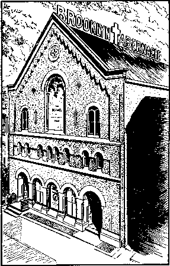
BROOKLYN TABERNACLE, 1909
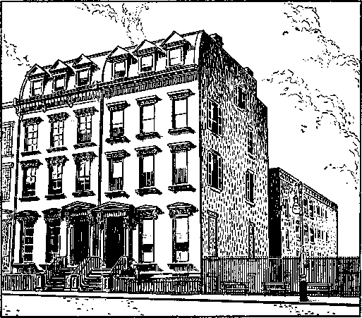
BETHEL, 122-124 COLUMBIA HEIGHTS, 1911
olent, scientific, historical, literary and religious purposes; the moral and mental improvement of men and women, the dissemination of Bible Truths in various languages by means of the publication of tracts, pamphlets, papers and other religious documents, and for religious missionary work.h
tom: How do you co-ordinate the work of these two corporations, John?
John: perhaps this quotation from The Watch Tower in 1914 will help.
For the sake of our many new readers we explain that the Watch Tower Bible and Tract Society [Pennsylvania corporation], as the parent organization, represents all the activities in Christian work with which The Watch Tower and its Editor are associated. All of the work done through the International Bible Students Association and People’s Pulpit Association, directly and indirectly, is the work of the Watch Tower Bible and Tract Society.
As I have already explained, Tom, the People’s Pulpit Association was the New York corporation formed in 1909, whereas the International Bible Students Association mentioned here was a British corporation formed in 1914. This British corporation, while organized particularly for the British field, also had a New York address at the Society’s headquarters in Brooklyn. Now the Watch Tower article continues:
The Editor of The Watch Tower is the President of all three of these Societies. All financial responsibility connected with the work proceeds from the Watch Tower Bible and Tract Society [the Pennsylvania corporation]. From it the other Societies and all the branches of the work receive their financial support. . . .
Our division of the work was made necessary by the fact that the parent society Charter by the State of Pennsylvania is not by law permitted to hold property in New York State; hence the necessity for organizing a subsidiary society to hold any real estate in New York. Similarly, the laws of Great Britain prevent any foreign society from holding title to real estate there. This necessitated the organization of the International Bible Students Association with a British charter. Thus it comes that we use sometimes the one name and sometimes the other in various parts of our work—yet they all in the end mean the Watch Tower Bible and Tract Society [the Pennsylvania corporation]—to which all donations should be made.1
tom: Are those three the only corporations you use?
John: no, since then the Society has formed a number of corporations in various countries of the world, but all work together under the direction of the Pennsylvania corporation, which is, itself, merely a legal instrument for the unincorporated body of Jehovah’s witnesses world-wide.
AN INTENSIVE CAMPAIGN BEGINS
Jehovah’s witnesses have always carried on an intensive campaign, but these years from 1909 to 1914 were truly climactic in the activity exerted by these early modern Witnesses and in the results obtained. Day and night those at headquarters, as well as the pilgrims and colporteurs in the field and those volunteer service workers giving freely of their spare time, were truly expending themselves to give a global witness with the facilities they had.
Beginning with the year 1909 the Society began to put out a new series of tracts first called “People’s Pulpit,” then “Everybody’s Paper” and still later “The Bible Students Monthly." Each month a different issue appeared with a powerful new salvo released against Protestantism, false religion and apostasy. Illustrations and cartoons added to their telling effect. These were distributed literally by the millions under the doors of homes and in front of churches and by personal contact. This tract distribution, however, was by no means the limit to the Society’s efforts to give as great a witness as possible. Distribution of pamphlets and bound books, especially by colporteurs, was also running into many millions of copies.
maria: At the same time, the brothers organized an international newspaper syndicate that featured the sermons of Pastor Russell. His sermons were sent out weekly to about 3,000 newspapers in the United States, Canada and Europe.
li Charter of Watchtower Bible and Tract Society, Inc., pp. 1, 5. 6, 11. 1W 1914, p. 371. See also ‘‘The History and Operations of Our Society,” W 1917, pp. 327-330.
John: This syndicate was really composed of four members of the headquarters staff at Bethel. Each week, no matter where Pastor Russell was traveling, he would send the syndicate at Bethel a new sermon. There those in charge of the syndicate would retelegraph this sermon of approximately two newspaper columns in length to the newspapers. With no radio yet available to the public, the press was the major means of reaching the people, and this syndicate service tremendously augmented the oral preaching at the doors and from the public platform. It is estimated that Pastor Russell’s sermons, by means of this service, were available to ten million people each week.
tom: Did the Society have to pay for this space like advertising, or did the newspapers pay Russell?
John: The newspaper space was given free and the telegraphic expense was borne by the Society.3
But this syndicate service by no means replaced the individual preaching by Jehovah’s witnesses. Another feature of the intensified activity of this period was an extensive public platform campaign. This was known as the “class extension work,” beginning in 1911.k In that year alone 12,113 public and semipublic lectures were given. This was an extension of the public lecture service formerly undertaken by Pastor Russell himself. To do the work, fifty-eight special traveling ministers were sent out as speakers on a lecture schedule following assigned routes.
Nor was the work limited to delivering talks and then forgetting those in attendance. Names and addresses of interested persons at the lectures were obtained and then home visits were made in an effort to gather together these newly interested ones to form a new congregation. Colporteurs or pioneers helped to organize these congregations and as a result many new classes were formed. By 1914 there were 1,200 in various parts of the world. As to other figures regarding growth, reports of those attending the Memorial were incomplete; however, in 1915, the partial number reported was 15,430, while the records revealed the Watch Tower circulation had risen to 55,000.'
As interest developed it is understandable that requests for Russell to appear personally would increase also. Every year he traveled to Europe, and his North American tours were increased in number and size as well. Now, instead of fulfilling these speaking engagements with just a few others along as previously, with a special railroad “convention car,” larger groups were organized in “convention trains,” with as many as 240 on one occasion accompanying him. Several railroad cars together would be used to make up this “convention party,” traveling from one large city to another by prearranged schedule.™
On the party’s arrival in its scheduled city these assistants would advertise the public meeting by putting out handbills and then would be at the public meeting personally to greet those in attendance and obtain the names and addresses of those interested. Wherever possible they would visit these newly interested ones and establish congregations. This powerfully concerted work produced lasting results.
maria: Many interesting experiences have been related about the problems these brothers encountered. It is reported that once Brother Russell and his party were riding through Wisconsin when the railroad trainmen forgot to disengage their special car at a nonscheduled stop, so their train whizzed right through the town where the public meeting was to be held. It didn’t stop until an hour later when the train reached Milwaukee. The brothers, of course, were all excited because they had missed their stop, so they immediately urged the railroad authorities to hitch a special engine on their special coach and take it back to the place Brother Russell was assigned to speak. They arrived just in time to hold the public meeting.
j Pastor Russell’s Sermons (1917; I. B. S. A.), pp. 3, 4; W 1909, p. 269; W 1916, p. 388; W 1912, p. 26. k W 1911, pp. 453, 454. 1 W 1915, pp. 127, 372. m W 1909, pp. 183, 196, 259, 298; W 1913, p. 218.
John: pastor Russell and his associates were aware of the scripture at Matthew 24:14, which reads: “This good news of the kingdom will be preached in all the inhabited earth for the purpose of a witness to all the nations, and then the accomplished end will come.” Just how this could be finished by 1914 was not clear, but these Witnesses intensified their program even further. Now, a world-wide public speaking campaign was organized and the citation of this text we’ve just read appeared on some of the poster advertising.
As a part of this campaign from December, 1911, to March, 1912, Pastor Russell, as chairman of a committee of seven men, made a tour around the world, spreading seeds of truth that, in time, brought into fruitful action more groups of anointed Christians in far-flung areas of the globe. The particular interest of the committee was to study Christendom’s foreign missions and to deliver local lectures. They traveled west to Hawaii, Japan, China and on through southern Asia into Africa, on up into Europe and back to New York.n Truly an extensive journey to gird the earth with a warning message of the approaching end of the Gentile times in 1914.
THE PHOTO-DRAMA OF CREATION
Then Pastor Russell conceived a daring and elaborate educational venture far ahead of the times. Motion pictures were just becoming popular, so, recognizing in this medium an effective means of reaching masses of people in a comparatively short time, Russell began the preparation of the “Photo-Drama of Creation.” Work on it was begun in 1912, with the hope that it would be completed for this all-out campaign before 1914. The title was a descriptive one because the project depicted God’s purpose for the earth and mankind, from the beginning of the earth’s preparation as man’s home, down to the climax of God’s purpose at the end of the 1,000-year reign. The entire project included picture slides as well as moving pictures to be synchronized with phonograph records in the form of recorded talks and music. So the Society was really pioneering in the field of sound film and embarked on the project with full confidence of its success. The results of their pioneering efforts in this medium manifested God’s spirit upon the entire undertaking.
The task was far greater than Russell had anticipated, and instead of being completed by the end of 1912 it was fully two years before the project was ready for its initial showing, and it cost the Society $300,000.° A description of the “Photo-Drama” appears in The Watch Tower of 1914.
Naturally our readers are deeply interested in the Photo-Drama of Creation. All of you have heard more or less concerning its preparation during the past two years. The work has been much more tedious than we expected. All who have seen it concede that it is very beautiful. A minister, after seeing two parts, said, “I have seen only one-half of the Photo-Drama of Creation, but already have learned from it more about the Bible than I learned in my three years’ course in the theological seminary.” . . .
n Stop-offs on the tour included Honolulu, Hawaii; Yokohama, Tokyo, Kobe and Nagasaki, Japan; Shanghai and Hong Kong, China; Manila, Philippine Islands; Singapore and Penang, Straits Settlements; Colombo, Ceylon; Trivandrum, Kottarakara, Nagercoil, Puram, Madras, Vizagapatam, Calcutta, Benares, Lucknow and Bombay, India; Aden, Arabia; Cairo and Alexandria, Egypt; Piraeus, Athens, Corinth and Patras, Greece; Brindisi and Rome, Italy; Paris, France; and then London, England; and finally New York. (W 1911, p. 434) Complete report with pictures in W 1912, pp. 123-138 and in Souvenir Notes 1912, pp. 7-287. o W 1914, p. 375.
It [the Drama] therefore includes everything appertaining to the creation of earth—animals, man, the experiences of mankind for the past six thousand years and the work of the thousand years of Messiah’s Kingdom. It divides these into four Parts—four Entertainments [of two hours each] with appropriate music, etc.
Part I. carries us from star nebula to the creation of the world and down to the Deluge— down to Abraham’s time.
Part II. reaches from Israel’s deliverance from Egypt, wilderness experiences, etc., down through the period of the Kings to the time of Elisha, the Prophet.
Part III. continues the story from Daniel’s time down to the time when the Logos was made flesh at the birth of Jesus, His boyhood, manhood, baptism, ministry, miracles, crucifixion, death, resurrection.
Part IV. begins at Pentecost and traces the experiences of the Church, during the past nineteen centuries to our day and beyond for a thousand years to the glorious consummation.p
LOIS: That must have been a remarkable project, considering the infancy of the movie industry at that time.
maria: We still meet people in our door-to-door ministry who remember having seen it.
JOHN: due t0 its size and detail of
preparation, it was not used in the pre-1914 period. We’ll tell you a little more about its showing later. Meanwhile, service work and mounting anticipation were the order of the day for Jehovah’s witnesses as this long-heralded time approached.
SOUND WARNING AGAINST SPECULATION
tom: You stated earlier that Pastor Russell was not too certain as to exactly what would take place in 1914. Was that the general attitude of the Witnesses at that time?
JOHN: There is no doubt that many throughout this period were overzealous in their statements as to what could be expected. Some read into the Watch Tower statements that were never intended, and while it was necessary for Russell to call attention to the certainty that a great change was due at the end of the Gentile times, he still encouraged his readers to keep an open mind, especially as regards the time element. We might read a number of different excerpts from the Watch Tower over the years to demonstrate this. For instance, as early as 1885 Russell writes in the Watch Tower:
Storm clouds are gathering thick over the old world. It looks as though a great European war is one of the possibilities of the near future. Then follows a rather drastic picture of the world situation, and the article closes with these words:
For these so-called kingdoms of God and their armies, prayers are offered to God in the name of him whose command is peace, good will toward man, and who announces himself as the one who shall set at liberty the captives and proclaim love, peace and liberty throughout the earth to all—for whose liberty he died.
Thank God the emancipation proclamation is going forth; shackles theological and political begin to break, and the groaning creation must shortly be delivered into the true liberty of sons of God under the dominion of Immanuel.a
In 1893 the Watch Tower stated:
A great storm is near at hand. Though one may not know exactly when it will break forth, it seems reasonable to suppose that it cannot be more than twelve or fourteen years yet futures
In 1894,
A few more years will wind up the present order of things, and then the chastened world will stand face to face with the actual conditions of the established Kingdom of God. And yet the course of the Church is to be finished within the brief space of time that intervenes! Another statement in that same year is significant:
“As travail upon a woman with child” is the inspired description of the forty-year day of trouble, by which the Millennial age is commenced. The panic of 1873, which affected the whole world, was the first spasm, and since then at irregular intervals the labor-pains of earth have been experienced. Just now, we of the United States are in the midst of one of these throes of the groaning creation!
p W 1914, pp. 105, 106, 371. a W Feb. 1885, p. 1. r W 1893, p. 194. s W 1894, p. 56. t /bid., p. 162.
In 1912 Russell sounded a special warning to offset any private wild speculations as to 1914. He wrote:
There surely is room for slight differences of opinion on this subject and it behooves us to grant each other the widest latitude. The lease of power to the Gentiles may end in October, 1914, or in October, 1915. And the period of intense strife and anarchy “such as never was since there was a nation” may be the final ending of the Gentile times or the beginning of Messiah’s reign.
But we remind all of our readers again, that we have not prophesied anything about the Times of the Gentiles closing in a time of trouble nor about the glorious epoch which will shortly follow that catastrophe. We have merely pointed out what the Scriptures say, giving our views respecting their meaning and asking our readers to judge, each for himself, what they signify. These prophecies still read the same to us. .. . However, some may make positive statements of what they know, and of what they do not know, we never indulge in this; but we merely state that we believe thus and so, for such and such reasons.u
So these early watchers were reasonably certain of some things that were due to take place when 1914 arrived. Exactly how the prophecies were to be fulfilled was not altogether clear, but evidences were increasing steadily that this was to be a marked date in earth’s history.
An explosive atmosphere of national rivalry was developed all over the world, and the feverish campaign of the political and commercial rulers in their mad armaments race was being fully supported by the clergy of all lands. France and Germany were piling up an enormous war potential, while Britain and the United States were fortifying themselves also. The latest scientific developments, such as the steam engine, the gasoline engine and electricity, were all being harnessed for war, with the keenest scientific minds of the world bending every effort to produce further advanced weapons of mass annihilation. Truly mankind’s masses were being herded
u W 1912, p. 377.
into camps of war. Satan, as ruler of this world, was gathering his forces for the end he knew must come in 1914.
But the twentieth-century global debacle of nations that appeared inevitable was just an evidence pointing to a far more significant war due to begin that year. The issue of the most far-reaching magnitude was not one of monarchy rule versus democratic rule. The issue of universal domination was now scheduled for settlement on the divine calendar of activity. What that conflict would produce in the way of immediate results, and how events were to develop in the outworking of the divine will, Jehovah’s witnesses were not then given to understand. For forty years they had been commissioned to herald its approach. They had diligently bent their every effort to that end. Now that the time had arrived, they did not sit down to wait. From the new headquarters building in Brooklyn, the steady flow of Kingdom literature continued throughout the world.
Across the East River from the Society’s headquarters towered the impressive skyline of New York city’s financial district. These skyscrapers, the tallest in the world at that time, symbolized to many persons the strength and power of the world’s mightiest empire and far overshadowed, in their appearance, the inconspicuous facilities of the Watch Tower Society in Brooklyn. No one at that time could realize what Jehovah had in store for this little band of Witnesses he had gathered together from the four corners of the earth; nor could anyone realize how the comparatively small voice emanating from these modest quarters of the Society could one day fill the earth with such power and strength that the very foundations on which the massive structures of Satan’s entire world rested would be shaken.
64End of All
Kingdoms
into what is now called the first world war. A period of considerable unrest had settled over Europe in these first few months immediately prior to the war. Still, the time from July 27 onward into August of that year was a period of world-shaking surprises. With the war and the distress that it brought to the nations, it is only understandable that the work of Jehovah’s witnesses would now be brought into prominence, in view of the time of trouble they had expected.
A typical public press reaction appeared in a leading New York newspaper, The World. In this paper’s Sunday magazine section, under the arresting headline “End of All Kingdoms in 1914,” a long feature article appeared. Here is a portion of the article:
According to the Calculations of Rev. Russell’s “International Bible Students,” This Is the “Time of Trouble” Spoken of by the Prophet Daniel, the Year 1914 Predicted in the Book “The Time Is at Hand,” of Which Four Million Copies Have Been Sold, as the Date of the Downfall of the Kingdoms of Earth.
The terrific war outbreak in Europe has fulfilled an extraordinary prophecy. For a quarter of a century past, through preachers and through press, the “International Bible Students,” best known as “Millennial Dawners,” have been proclaiming to the world that the Day of Wrath prophesied in the Bible would dawn in 1914. “Look out for 1914!” has been the cry of the hundreds of traveling evangelists who, representing this strange creed, have gone up and down the country enunciating the doctrine that “the Kingdom of God is at hand.” ...
Although millions of people must have listened to these evangelists, . . . and although 54
T-----
TOM: When 1914 finally arrived and the first world war began, I suppose Jehovah’s witnesses really came into their own, didn’t they?
JOHN: Not exactly. For the first few months of that year the religious leaders and others were pouring considerable ridicule upon Russell and the Watch Tower Society, because in those early months nothing had happened to the Gentile nations as Jehovah’s witnesses had been expecting.
maria: Of course, this did not stop the witness work, because the Society was expecting the end in the fall of that year. By January they had completed the preparation of the Photo-Drama of Creation and by April had sent out twelve sets to thirty-one cities. The report showed that over 35,000 every day were seeing, hearing and admiring this unusual production..1
JOHN: That’s right. But as the year wore on and violence had not yet occurred, in spite of the air of tension throughout Europe, ridicule against the Kingdom message mounted. However, a great change took place when nation after nation and kingdom after kingdom began cascading
a W 1914, p. 106.
their propaganda has been carried on through the religious publications and a secular press service involving hundreds of country newspapers, as well as through lectures, debates, study classes, and even moving pictures, the average man does not know that such a movement as the “Millennial Dawn” exists. . . .
Rev. Charles T. Russell is the man who has been propounding this interpretation of the Scriptures since 1874. ... “In view of the strong Bible evidence,” Rev. Russell wrote in 1889, “we consider it an established fact that the final end of the kingdoms of this world and the full establishment of the Kingdom of God will be accomplished by the end of A.D. 1914.” . . .
But to say that the trouble must culminate in 1914—that was peculiar. For some strange reason, perhaps because Rev. Russell has a very calm, higher-mathematics style of writing instead of flamboyant soap box manners, the world in general has scarcely taken him into account. The students over in his “Brooklyn Tabernacle” say that this was to be expected, that the world never did listen to divine warnings and never will, until after the day of trouble is past. . . .
And in 1914 comes war, the war which everybody dreaded but which everybody thought could not really happen. Rev. Russell is not saying “I told you so”; and he is not revising the prophecies to suit the current history. He and his students are content to wait—to await until October, which they figure to be the real end of 1914.t
TOM: I guess everyone did not accept this prophecy, even after the world war started, did they?
john: No Jesus had foretold this time of severe trouble that would come in the last days, but it was also shown in the Scriptures that even with all the evidences he gave to mark when that time of the end had arrived, there would be many who would not accept them. Peter, for one, stated: “In the last days there will come ridiculers with their ridicule, proceeding according to their own desires and saying: ‘Where is this promised presence of his? Why, from the day our forefathers fell asleep in death, all things are continuing exactly as from creation’s beginning.’ ”c
PREACHING THE GOOD NEWS CONTINUES
L01S: It must have been a time of mixed emotions.
JOHN: It was although there were many things taking place that the Witnesses themselves did not yet realize. For forty years prior to 1914 they had been pointing to this date through Scriptural develop-ments.d Now, as factual evidences began to appear to verify the conclusions they had reached by this Bible study, they were certain that October 1, 1914, brought a legal end to the 2,520 years of Jehovah’s tolerance of the sovereignty assumed by the Gentile nations over the earth; that legally the “end of all nations” had come in 1914!e So, while the Witnesses rejoiced on the one hand to see these conditions fulfilled as foretold in the Bible, the sorrow and trouble brought to the world did not bring joy, nor did the persecution that they received from the opposers of God’s kingdom make them happy or make their work easier.
It was not to be expected that the clergy of Christendom would accept the evidences of the legal “end of all nations.” On the contrary, they became so engrossed in the problems of that day, and became so involved in the war effort of the nations, that they had no patience or sympathy whatsoever for anyone looking to the power of God’s might to settle the issue of world domination. In each land the churches backed the national government in power. This was done regardless of the fact that those of the same faith in another land were on the opposite side of the conflict; and those who would otherwise be recognized as Christian brothers were now facing each other on the field of battle.
tom: what did Jehovah’s witnesses do about the war?
JOHN: They refused to take part in it. In view of the prophecies pointing to this time of trouble, the Witnesses could not and would not accept the confusing claims made by the clergy on both sides of the conflict that God was backing them up.
b New York World, Aug. 30, 1914, Sunday magazine section, pp. 4, 17. c 2 Peter 3:3, 4. d W 1914, p. 371. e W 1952, pp. 260, 261.
The Witnesses were well aware of the conditions in Europe as they developed. In fact, Judge Rutherford himself was there when the war broke out. Since he had taken up his position as legal counselor for the Society, he had traveled widely as a public Bible lecturer in the United States, speaking in many colleges and universities by special request, and before packed houses in this country and throughout Europe. In 1913, accompanied by his wife, he visited Egypt and Palestine and also visited Germany, where he spoke to audiences totaling 18,000, and also Switzerland/
In 1914 he made another trip to Europe to represent Pastor Russell, who was failing in health and who did not want to leave the United States because of the unsettled world conditions. In this capacity Rutherford was giving Bible lectures in Germany just a few days before World War I broke out. It was while he was on a boat from Hamburg to Britain that Britain declared war on Germany; so Rutherford was an eyewitness to the turmoil that broke out that year. He did not return to the United States immediately, but remained in England until September, 1914, in order that he might be close to see what was occurring as the Gentile times came to a close. After being with the British Witnesses these first months of the war, he returned to the United States.
During the progress of the war in Europe and while the United States was not yet involved, other matters involving the witness work occupied the attention of these champions of true freedom. In 1915 Pastor Russell was challenged to another debate, this time by J. H. Troy, representing the Baptist clergy of Southern California. Because of his health Pastor Russell assigned J. F. Rutherford to substitute for him. Since Rutherford had been raised a Baptist he accepted this assignment readily and departed for Los Angeles, California, where the series of debates was scheduled.^ The audience totaled 12,000, with an estimated 10,000 being turned away.
An incident that occurred there gives us an insight into J. F. RutheRutherford’s legal mind. He was very astute. Several days before the debates began he arranged with Troy for each side to put up a bond of $1,000 guaranteeing they would not discuss personalities. This would confine the debates to Biblical subjects. Both sides signed this surety.
A few days later Troy gave evidence, from certain publicity that he gave out to the newspapers, that he was going to revel in personalities, concentrating on Pastor Russell to slander him. Rutherford waited until three minutes before the first debate was to be held, then asked Troy and his seconds, who were offstage, to step into a side room. There Rutherford said to Troy: “You will recall that we have entered into a $1,000 obligation with securities that we would refrain from personalities. From your interviews with the press I judge that you intend to assault Pastor Russell from the platform. Of course, you can pursue that course if you wish, but if you attempt it I am going to have your bond forfeited.” Taken completely off guard Troy asked, “May I not even mention him?” Rutherford replied emphatically, “No.” Caught by surprise in his attempt to use this occasion to malign Russell personally he found his prepared material unsuitable to the occasion. For some time during the opening debate he labored under great difficulty.
The entire series of debates proved to be a signal victory for Rutherford, who reported afterward:
f W 1913, p. 319. g April, 1915, at the Trinity Auditorium, for tour nights. W 1915, p. 143; for the entire text of the debate see Los Angeles Tribune, Apr. 22-24, 26, 1915.
When the debate closed last night many persons came to me, quite a number saying, “I have been a Baptist for years, but I have had my eyes opened here. You have brought me the light.” Quite a large number of cards were turned in on each night.11
THE PHOTO-DRAMA ACCLAIMED
AND OPPOSED
LOIS: what happened to the Photo-Drama of Creation that you described to us? Maria, didn’t you say earlier it was being shown by January of 1914?
maria: Yes. In July it had reached Great Britain; in September operations had begun on the continent of Europe—in Germany, Switzerland, Finland, Sweden and Denmark; and by October it was halfway around the world in Australia and New Zealand.
This was truly a tremendous undertaking, difficult to appreciate fully in these days of modern sound productions and Hollywood “epics.” One problem encountered in its production was in the procuring of the fine art pictures, illustrative of the history of the world from the dawn of creation down to our day and into the future. Everything that could be located was adopted and adapted to the theme of the Drama, but hundreds of original paintings and sketches had to be made from which stereopticon slides were prepared. Besides, these were beautifully hand colored, some even in Paris and London. Russell reported that
God kindly veiled our eyes as respects the amount of labor connected with the Drama. Had we foreknown the cost of time and money and patience necessary for the start we would never have begun it. But neither did we know in advance the great success that would attend the Drama.1
Since these sets were prepared before World War I began in Europe, there were showings in many parts of the continent, bringing comfort to multitudes of bewildered peoples.1 At least twenty complete sets in four parts were prepared, making it possible to serve eighty cities each day. And it was shown at a cost to the congregations of between $150,000 to $200,000 for 1914 alone.
Another outfit, called the Eureka Drama, was made available to congregations and consisted of the slides and the musical and lecture phonograph records alone of the Photo-Drama. No films were used but it was extremely successful when shown in less densely populated areas.k
h W 1915, p. 143. i W 1914, p. 372. j Ibid., p. 142.
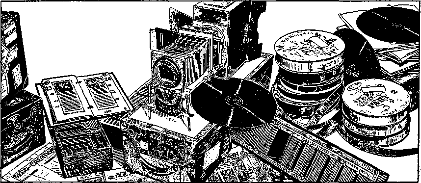
PHOTO-DRAMA AND EUREKA DRAMA EQUIPMENT
LOIS: I certainly would like to have seen the Photo-Drama. It’s no wonder, from the way you describe it, Maria, that it was so popular.
T0M: I suppose the orthodox ministers didn’t have too much to say against this project, did they, John?
JOHN: On the contrary; considerable opposition was raised to it. In many places an effort was made to prevent its showing altogether, while some of the clergy objected only to Sunday presentations, although the theaters were closed to secular movies. One such incident occurred in Idaho, but the Supreme Court of that state granted the Society a victory and Sunday showings were continued.1
I asked Maria to find some reports of opposition to the Photo-Drama. Do you have one to read us, Maria?
maria: Yes, I do. It’s one that Judge Rutherford included in his booklet A Great Battle in the Ecclesiastical Heavens.
Laurel, Mississippi, is the scene of action. Mr. Nicholson, Manager in Charge of the “Drama,” rented the Opera House at this place from Mr. Taylor, the owner, in which to exhibit the Photo-Drama. The two gentlemen were standing in front of the Opera House preparing for the advertisement. Mr. Taylor was delighted with the opportunity of having such a wonderful exhibition given in his house, and was congratulating himself, when along came the leading Methodist minister of the place, who is designated “The Boss of the Preachers’ Union” there.
Learning what was about to take place he became enraged, shook his fist in Mr. Nicholson’s face, exclaiming in angry tones, “You try to show these things in this town and you will have the biggest fight on your hands you ever saw; better get out of town, and get quick!” Mr. Nicholson proceeded, undaunted by this threat, to prepare for the exhibition. The Ministerial Union at once held a meeting, in which all engaged in denouncing Pastor Russell and the “Drama,” except the Episcopalian minister, who stood firm for religious tolerance and common decency. The union passed resolutions against the “Drama” and Pastor Russell; then called upon the Mayor of the City and Chief of Police and induced them to notify the “Drama” Manager that it should not be exhibited in that city.
The Ministerial Union then used its power with the Electric Light Company, and induced its owners to cut off the electric current and refuse to furnish such to be used by the “Drama.” Their influence was brought to bear upon Mr. Taylor, the Opera House owner, to such an extent that he tore down the advertisements which, by his own direction, had been placed upon the billboards. The Photo-Drama Manager then went to Judge Beavours, the leading attorney of the city, and appealed to him for assistance. He is a “Lawyer of the Old School,” who is willing to fight for the right. He at once informed the Electric Light Company and the city officials that he would apply to the courts for an injunction against them, and have them restrained from unlawfully exercising their power.
This frightened the city officials and the Electric Light Company, and the preachers weakened. They decided to not further attempt to prevent the exhibition of the Photo-Drama. The Mayor sent word to the Manager, saying, “Go ahead, only don’t knock us or the preachers.” They feared the result when the people should see the pictures and know they had been so woefully misrepresented. The people came and were delighted, some saying, “We cannot understand the ministers’ opposition!”m
T0M: It sounds like you had some rough going during these years. Do you think the opposition was worse than before 1914?
John: Yes, it was. The work reached a peak in 1914, but during 1915 and 1916 there was a gradual decline in the publishing activities of the Witnesses due to the growing opposition, ridicule and worldwide disruption of the work.n
The time of the end for the nations of this world had begun, but Jehovah’s people were not altogether prepared for the place and the work Jehovah had in store for them. Furthermore, there were many trials and testings ahead of them before they could know that. A time of mourning and reproach was due to begin.
k W 1914, p. 373. 1 State vs. Morris (February 23, 1916), 28 Idaho 599; 155 P. 296. m A Great Battle in the Ecclesiastical Heavens (1915), by J. F. Rutherford, pp. 12, 13. n W 1915, p. 371.
Strengthened for Patience
and Endurance
1.7==
begin for the Witnesses?
John: In 1914. it was a time of reproach, trials and disappointment. But Jehovah never brings more on his people than they can bear; and for this reason repeated encouragement and admonition to patience and endurance were given through the columns of The Watch Tower. In the issue of The Watch Tower of January 1, 1914, Pastor Russell compared the parallel positions of the early disciples of Jesus and those entering the significant year 1914. He said:
We know that disappointments have come to God’s people along this line. . . . During the early persecutions of the Church, it was believed that those who suffered would soon enter into glory. They thought the Kingdom was near. Some of the disappointed ones continued to wait and hope and pray. Others organized the great Papal System, and declared that the Church should have her glory now . . .
We may not read the time features with the same absolute certainty as doctrinal features; for time is not so definitely stated in the Scriptures as are the basic doctrines. We are still walking by faith and not by sight. We are, however, not faithless and unbelieving, but faithful and waiting. If later it should be demonstrated that the Church is not glorified by October, 1914, we shall try to feel content with whatever the Lord’s will may be. . . . We believe W 1914, p. 4.
Believe that the chronology is a blessing. If it should wake us . . . earlier in the Morning than we would otherwise have waked, well and good! It is those who are awake who get the blessing. . . .
If in the Lord’s providence the time should come twenty-five years later, then that would be our will. This would not change the fact that the Son of God was sent by the Father, and that the Son is the redeemer of our race; that He died for our sins; that He is selecting the Church for His Bride; and that the next thing now in order is the establishment of the glorious Kingdom at the hands of this great Mediator, who . . . will bless all the families of the earth. These facts remain the same.a
In May Pastor Russell again referred to the prophecies and their expected fulfillment, and warned again of the uncertainty of time prophecies. Here is another quotation from The Watch Tower:
The Lord declares through the prophet David (Psalm 149:5-9): “Let the saints be joyful in glory; let them sing aloud upon their beds. Let the high praises of God be in their mouth, and a two-edged sword in their hand; to execute vengeance upon the heathen, ... to execute upon them the judgments written. This honor have all His saints.” Heretofore we had not questioned that this description of the glory of the saints applied to them beyond the veil— beyond the completion of the First Resurrection. [He means after their being taken to heaven.] But a more careful investigation of the words forewarns us that we may not be too sure in such a supposition. We suggest as a bare possibility that a time may come when a part of the saints will be in glory beyond the veil, and when those on this side the veil in the flesh will enter very fully into the joys of their Lord and into participation in His work. . . .
But the word beds here, in harmony with usage elsewhere in the Bible, would signify a rest of faith—that these saints were at rest in
the midst of conditions to the contrary. . . .
Again, while the high praises of God are in their mouth they have the two-edged sword in their hand, according to the prophecy. This “two-edged sword” is evidently, as elsewhere, the Word of God. We can scarcely imagine the saints beyond the veil as handling the Word of God. On the contrary, this would seem to imply that the saints described are on this side of the veil, using the Sword of the Spirit, which is the Word of God, in connection with the showing of high praise to God—clearing His name from the dishonor attached to it through the ignorance, superstition and creeds of the dark ages.b
GOD’S WORK SHOWN TO BE GRADUAL
Early the following year Russell referred again to this Psalm 149 and wrote:
The final phrase, “to execute the judgments written,” would seem to imply that there would be something for the saints on this side of the Veil to do in connection with the execution of the judgments upon the nations. As to just what this means, we have not yet fully learned. But we see nothing here to conflict with the thought that the Lord’s kingdom may be properly understood to have begun operations and that the present smiting of the nations is under Kingdom control. . . .
Our thought is that we should look for still further evidences day by day that the Gentile Times have ended, and that God’s Kingdom has begun its work. . . . Now in this great Day of the Lord everything that can be shaken is to be shaken to pieces and shaken out, to the intent that nothing unrighteous or unworthy shall remain. God Himself is doing the shaking.d
In the November 1 issue of The Watch Tower in 1914 Russell again urged patience. He wrote:
Our Lord indicated that at His Second Coming all His servants who would be in the right condition of heart would hear His knock; and that if they would open to Him immediately, He would come in and sup with them. . . .
When the year 1875 came, was everything accomplished within twenty-four hours? Surely not! Did everybody awake at the same minute? Have they not been getting awake all through the Harvest Time? And some of us have not been awake very long.a
Then he relates many events that had occurred throughout the forty-year period of harvest prior to 1914 and continues:
We will not go into details further; we merely wish to impress the thought that these fulfilments of prophecy did not come suddenly, but gradually—that they had a particular time for beginning, and were sure of accomplishment. In view of these lessons from the past, what should we think about the future? . . .
Should we expect that the Lord would reveal Himself the very moment Gentile Times end? No. The Bible declaration is that He shall be revealed in “flaming fire.” Just how long after the Gentile Times close will be the revealment in “flaming fire” we do not know. . . .
If the harvest work of our Lord’s presence (parousia) has been a gradual work for forty years leading up to the present time, and if the Time of the End is a slow period, how long would this period be, in which present institutions will be ousted, and the present order of things be condemned and done away with, to make way for the Reign of Righteousness? We answer that according to such pictures we might expect a transition to run on a good many years.e
Then in the issue of December 15, 1914, Pastor Russell quotes 1 Thessalonians 5:4, 5 and encouragingly comments:
God has promised that He will give His true children the light at the time appointed, and that they shall have the joy of understanding His Plan at the appropriate season. . . . Even if the time of our change should not come within ten years, what more should we ask? Are we not a blessed, happy people? Is not our God faithful? If anyone knows anything better, let him take it. If any of you ever find anything better, we hope you will tell us. We know of nothing better nor half as good as what we have found in the Word of God.f
WORK FOR ALL
Not only did Pastor Russell encourage the brothers to patience and endurance but he also urged them to keep busy in the service of God and perform diligently the work that was at hand. Early in 1915 he wrote in The Watch Tower:
There are some of the Lord’s children who seem possessed with the idea that “the door is shut,” and that there is no further opportunity for service. So they become indolent in regard to the Lord’s work. We should lose no time dreaming that the door is shut! There are people who are seeking the Truth—people who are sitting in darkness. There never was a time like the present. Never have so many people been ready to hear the good Message. In all the forty years of Harvest there have not been such opportunities to proclaim the Truth as now present themselves. The great war and the ominous signs of the times are waking people up, and many are now inquiring. So the Lord’s people should be very diligent, doing with their might what their hands find to do.s
b W 1914, p. 135. e W 1915, p. 53. d W 1914, pp. 326, 327. e Ibid., p. 327. t Ibid., p. 377.
With this constant encouragement there was every reason for Jehovah’s witnesses at that time to remain steadfast and to look forward with keen anticipation to the years that lay ahead. Many, of course, did. True, the opposition was increasing, in fact, becoming intense. But it was also a time of great testing, and those who were watchful, eager to do the divine will, had every encouragement to maintain their stand firm and steadfast in preparation for the blessings still in store.
Pastor Russell himself was convinced a great work lay ahead for God’s people. Those of his close associates who are still living remark at the clearness of his foresight. He told them to be prepared for the growth they could expect in the numbers associating with them. He made some changes himself to draw the organization together and recommended others for the future in the event he could not personally carry them out. He knew the time would come when groups would be meeting throughout New York city, that not all would be able to come to Brooklyn to meet in one congregation. Little did Russell realize though what must yet be endured before this great work he had foreseen could be accomplished.
As 1915 wore on and 1916 began, he knew that he would not have much longer to carry on his own personal ministry to God’s flock. His health was rapidly failing and it was becoming increasingly difficult for him to fulfill the many duties pressing in upon him from all sides. But he would not give up. The stamina and Christian
g W 1915, p. 55. h W 1916, pp. 360-366. fortitude that had enabled him to face the religious world of Christendom almost single-handed, especially at the beginning of his ministry, and which had enabled him in the spirit of God to resist all corrupting influences from within the organization, now continued with him and made it impossible for him to deviate at this late date from his service to Jehovah that was so dear to him.
By fall of 1916 he was in extreme physical discomfort, yet he wished to carry out a previously planned lecture tour of California and the far west. Leaving New York Monday, October 16, he and his companion traveled to Detroit by way of Canada, on to Chicago, down through Kansas into Texas. On several occasions it was necessary for his secretary-companion to substitute at speaking engagements. Then, Tuesday evening, October 24, at San Antonio, Texas, he delivered his last public talk, during which he was forced to leave the platform for short periods on three different occasions while his secretary filled in for him.
DEATH OF CHARLES T. RUSSELL
His last talk to the congregation was October 29, 1916, at Los Angeles, California. By this time he had become so weak that it was necessary to deliver this talk sitting down. Realizing now that his condition would not permit him to go on, he decided to cancel the rest of his appointments and return as quickly as possible to the Bethel home in New York. He died en route, at Pampa, Texas, Tuesday, October 31.h
Here is the notice of his death as it appeared in The Watch Tower, November 15, 1916.
The sudden death of Pastor Charles Taze Russell, Editor of The Watch Tower, has created a profound impression upon his many friends throughout the world. Hundreds of letters and telegrams received, further evidence the love and esteem in which he was held, and express unqualified desire to cooperate in continuing the great cause for which he stood so many years.
Brother Russell left Brooklyn in the evening of October 16, to fulfill appointments in the West and Southwest, but was obliged to start homeward before his scheduled time, owing to ill health.
It was on a Santa Fe train at Pampa, Tex., that he died. Brother Menta Sturgeon, who accompanied him on the trip as his Secretary, telegraphed the information to the headquarters of the Watch Tower Bible and Tract Society at Brooklyn, adding that “he died a hero.”
The body lay in state at Bethel Home Saturday, and at The Temple throughout the day Sunday.
In the afternoon at the hour of 2, funeral service was held for the congregation, and in the evening a service was conducted for the public.
At about midnight the body was taken to Allegheny, Pa., where in the Carnegie Hall, at 2 in the afternoon of Monday, service was held by the Pittsburgh congregation, of which he had been resident Pastor for many years.
Interment, took place in Rosemont United Cemeteries at Allegheny, in the Bethel Family plot, according to his request.
We rejoice to know that instead of sleeping in death, as the saints of old, he is numbered among those whose “works follow with him.” He has met the dear Lord in the air, whom he so loved as to lay down his life faithfully in His service.*
Thus ended the long, faithful career of a truly dynamic Christian minister. Few men have had the privileges of service enjoyed by Pastor Russell. While he never took credit to himself personally, nor do Jehovah’s witnesses give him credit as a man, still his faithful service and his record of integrity under almost every conceivable kind of test provides a stimulating record for all to consider. As the first president of the Watch Tower Bible and Tract Society, C. T. Russell served Jehovah’s witnesses for thirty-two years. It is said that he traveled more than a million miles as a public lecturer, preached more than 30,000 sermons and wrote books totaling over 50,000 pages, often dictated a thousand letters a month, managed every department of a world-wide evangelistic campaign employing 700 speakers and personally compiled the most amazing Biblical drama ever shown.3
Lois: That is truly an amazing record for a minister and a publisher. One can readily understand how he practically wore himself out in the vigorous work that he did. He is a man to be admired. I can imagine he left a big void in the organization at his death.
John: yes, he was missed for some time. At his funeral service a number of his close friends and associates spoke of their great loss and in the evening funeral talk, delivered by J. F. Rutherford, this tribute was given him:
With a strong physique, a fertile brain, and a brave heart, wholly devoted to the Lord, he consecrated and used all of his power to teach man the great Message of Messiah’s Kingdom and the blessing which it will bring to the world.k
AN IMPARTIAL OBSERVATION
That view of Pastor Russell was not shared by men of Christendom. Some of his enemies have hated him in death almost as much as when he was alive; and so bitter have been their attacks that prejudice against his name still lingers. In spite of it, however, the facts speak for themselves, as demonstrated in this impartial observation written over forty years after his death:
It is an amazing thing that no Pittsburgh history has ever even so much as contained the name of Charles Taze Russell, since his influence has easily been the widest of any man who ever lived in the city, not even excepting Andrew Carnegie. . . .
He founded the one major religious movement to have appeared in the Pittsburgh district in the past 100 years, a movement which has reached world-wide scope and is still one
1 W 1916, p. 338. j Studies in the Scriptures, Vol. VII, p. 57: see also Pittsburgh, Pa., Press, Aug. 23, 1953, Magazine section, p. 6. See biographical reports in W 1917, pp. 131-136, 323-326; W 1916, pp. 356-359. k Ibid., p. 373; also see special reprint of Memorial number of this issue of The Watch Tower, pp. 383, 384, for reproduction of the press report, 'Pastor Russell’s successor Judge Joseph F. Rutherford” from Pittsburgh, Pa., January 6, 1917.
of the fastest growing religious organizations in many countries. . . .
Pastor Russell,... a name as sincerely loved and as bitterly hated as almost any in American history.
Around that name for years raged some of the bitterest controversies which ever divided the Christian world, and the controversies still rage, although his name is not so much heard in the discussions. . . .
All through his life, he had told his followers not to revere him as more than just a fellow man with divine guidance. And he taught them this so well that his work passed into the hands of others with hardly a moment’s halt and the publishing house which he founded has never published a biography of Pastor Russell.1
Lois: perhaps the fact that his name has been ignored by the world is in his favor. It would seem that all of God’s servants in times past were considered of little importance in the eyes of the world, yet their works continue. That pattern certainly seems to have been the same in Pastor Russell’s life, doesn’t it? But, is it true you have never published a biography of Pastor Russell?
John: That’s right. Jehovah’s witnesses admire the qualities he possessed as a man, but were we to give the honor and credit to Pastor Russell, we would be saying that the works and success were his; but Jehovah’s witnesses believe it is God’s spirit that guides and directs his people.
Some have stumbled over that point; and these qualities that he possessed and that were so admired by many in the organization at that time were to provide a real test that caused them to fail in their endurance and seek an occasion against Russell’s successor as president of the Watch Tower Society, J. F. Rutherford, and against the Society itself.
1 Where Else but Pittsburgh! by George Swetnam (Pittsburgh. Pa.. 1958: Davis &Warde. Inc.), pp. 110, 116.
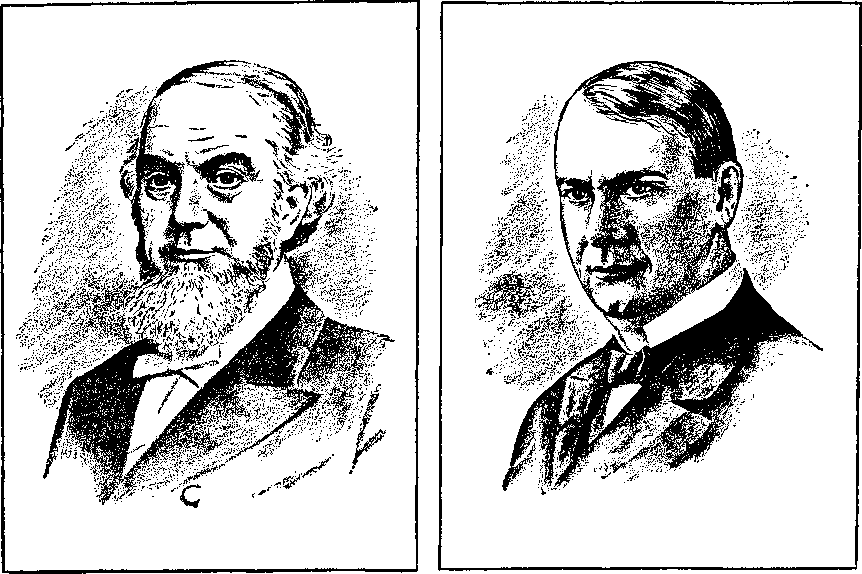
CHARLES T. RUSSELL IN 1906
JOSEPH F. RUTHERFORD IN 1915
A Change in
Administration Tests
God’s Servants
T——
TOM: Did J. F. Rutherford succeed Pastor Russell immediately as president of the Society?
John: no, he did not, Tom. For the two months of November and December of 1916, in order to keep the work going, a transitional administration of the Society was set up in the hands of an executive committee of three, Vice-President Ritchie, Secretary-Treasurer Van Amburgh and legal adviser Rutherford.a
This was indicative of the uncertainty that existed in the minds of even those of the governing body of Jehovah’s witnesses of that time. It was a foregleam, too, of the years of crisis that now set in, producing within the organization the pressures of selfish opposition, divine judgment and cleansing. Always willing and ready to find occasion to disrupt the organization of God’s people and to interfere with their proclamation of the Kingdom good news, Satan himself immediately began to arouse among some in the organization’s headquarters at Brooklyn a spirit of rebellion.b These were all evidences of the critical period of mourning and reproach that threatened the very existence of the organization. Jehovah’s witnesses knew a time of trouble was ahead, but Jehovah mercifully hid from their eyes the full extent of the things that must be endured during this crucial time of judgment upon God’s house.
The next regular annual meeting of the corporation was scheduled for January, 1917, which, that year, had the chief business of electing the president to replace C. T. Russell. There were 600 in attendance at this meeting on January 6, with approximately 150,000 votes, represented either in person or by proxy, to be cast.
tom: How did one obtain votes in the corporation, John?
John: In those days every $10 contributed to the Society entitled its donor to one voting share. That is why, before this, Pastor Russell himself would cast 25,000 votes at most of these corporation meetings. He had contributed in his lifetime around $250,000. When he died, of course, according to law his votes died with him. So these 150,000 votes, active for the meeting in 1917, represented that those holding them had contributed, at one time or another, $1,500,000 to the Society for its preaching work. This voting method was amended in 1944, eliminating entirely this method of acquiring votes.c Now each member has only one vote.
At this historic corporation meeting J. F. Rutherford was unanimously elected president. W. E. Van Amburgh was elected secretary-treasurer and A. N. Pierson of Connecticut was elected vice-president.3 The next day, Sunday, the newly elected president gave his first address in this capacity when he talked to 1,500 who were in Pittsburgh to attend a convention arranged for the occasion. Thus Rutherford commenced his administration for the Society, which he was to supervise for twenty-five years.
aW 1917, p. 372. bW 1916, pp. 327-329; W 1917, p. 99. cW 1944, p. 334.
64
tom: perhaps at this point you could tell us a little more about Rutherford personally.
J. F. RUTHERFORD’S BACKGROUND
John: Very well. Joseph Franklin Rutherford6 was born on November 8,1869, on a farm in Morgan County, Missouri, of parents who were Baptists. At the age of sixteen his father consented to his attending college to study law, provided he would earn his own way, since his father was a farmer and could not afford to assist him. An additional requirement was that he must pay for a hired hand to take his place on the farm. His father thought this would be impossible for the young man to do and would therefore force him to stay on the land to learn farming. Rutherford was determined, however, and was able to secure a loan on his own word that enabled him not only to go to college and law academy but also to pay for a hired hand to replace him on the farm.
In this way Rutherford earned his own way through school. He learned shorthand and continued as an expert up to his dying day. During later years many of the thoughts that occurred to him for The Watch Tower were written rapidly first in shorthand and later transcribed. While still in school he became a court stenographer, which enabled him to finish paying for his course. In this way, by taking down trial proceedings, he was gaining practical experience while, at the same time, he was engaged in the study of law.
After completing his academy education he spent two years under the tutorship of Judge E. L. Edwards, and finally, at the age of twenty, became the official reporter for the courts of the Fourteenth Judicial Circuit in Missouri. At twenty-two he was admitted to the Missouri bar and began to practice law at Boonville, Missouri, where he became a trial lawyer with the firm of Draffen and Wright. Later he served four years as public prosecutor for Boonville and still later as a special judge in this same Fourteenth Judicial District of Missouri. In this capacity, if the regular judge took ill, being unable to take court, Rutherford was called on to sit as a substitute judge, which he did in a number of instances.1
For fifteen years Judge Rutherford continued as a lawyer in the state of Missouri. He carried on a successful practice and later became recognized as a special lawyer to handle court cases before the Supreme Court of the United States in Washington, D.C. In 1894 Rutherford came in touch with Watch Tower Society representatives.
LOIS: [interrupting]: Yes, I remember. Maria read us a letter he wrote to the Society^
John: That’s right. Then, twelve years later, in 1906, he dedicated his life to Jehovah God, thus becoming an ordained Christian minister as well as an attorney.
In 1907 Rutherford became the Watch Tower Society’s legal counselor at the Pittsburgh headquarters to handle its court cases. And at the same time he was sent out to give public talks as one of the pilgrim representatives of the Society.11 In 1909, when the Society transferred its headquarters to New York, you will remember, Judge Rutherford was used to negotiate the matter, and to do so made application and was admitted to the New York bar as a recognized lawyer for that state. It was in this year on May 24 that Rutherford was admitted to practice before the Supreme Court of the United States.
d W 1917, p. 22; New York Times, Jan. 7, 1917, Section I, p. 9. e Webster’s Biographical Dictionary 1943, p. 1295. f An Encyclopedia of Religion (1945), by Vergilius Ferm, p. 674; New York Times, Jan. 7, 1917, Section I, p. 9. g W 1894, p. 127. h W 1919, p. 58.
THE NEW PRESIDENT
STARTS THE WORK MOVING
Tom; When Rutherford became president of the Society did he do anything to get the work moving again?
John: yes, Rutherford was a man for getting the work done. He was in full harmony with Russell’s view that the Witnesses must be busy and that the preaching work was an essential part of their Christian activity. For this reason he immediately began to reorganize the Watch Tower Society’s headquarters office at Brooklyn, New York, and also to revitalize the field work, because it was on the downward trend.’
However, the changes he made and the programs he stepped up were those Russell had begun before he died. Traveling representatives of the Society, called “pilgrims,” were increased in number from sixty-nine to ninety-three. Their responsibility was to visit and strengthen the more than one thousand congregations of Jehovah’s witnesses at that time. This was particularly necessary in this time of great trial, in order to assist the brothers to maintain their optimistic view and their appreciation of the opportunities of service ahead. Encouragement was accomplished further by stimulating also the distribution of the Society’s free tracts on occasional Sundays in front of churches and regularly in house-to-house visits. In 1917 alone, 28,665,000 free copies of the new four-page number
i W 1917, pp. 371-375. j W 1916, pp. 331, 332. of The Bible Students Monthly were given out.
Another activity begun before Pastor Russell’s death, called “pastoral work,” was also stepped up. In Russell’s day this work had been limited to about 500 congregations that had voluntarily elected him as their pastor. He had written a letter to these groups describing the work as an “important follow-up work possible in connection with addresses received at public meetings, Drama exhibitions, from colporteur lists, etc.”
This is the way this work was to be carried on: All the sisters in the congregation who were interested in engaging in this work were to elect democratically one of their group to serve as a lieutenant and another to serve as a secretary-treasurer. The city was to be divided into territorial districts assigned to individual sisters engaged in the work to call on all those whose names had been supplied as being interested. The purpose of these calls was to loan books, which could be read and studied by the person of good will, and to stimulate progress in a knowledge of the truth in other ways as well. Careful reports were made as to where interest was manifested, whether the person would attend one of the chart talks, etc. To assist the sisters, suggested approaches in calling at the homes were given, as well as suggestions in regard to overcoming prejudice and obtaining the names of others who might be interested in the message. At the conclusion of the call, the householder was advised that a chart talk on the “Divine Plan” would be given soon in that district. Persons manifesting interest were encouraged to attend these talks and, afterward, follow-up calls were made upon all those attending, with an effort to begin a study in the first volume of Studies in the Scriptures.)
tom: Before you go any farther I would like you to tell me what you mean by “chart talks.” You’ve mentioned these several times.
John: These were public talks delivered as an explanation of a chart the Society had prepared to depict certain chronological events and significant periods or “ages” in the development of God’s “plan” or purpose for mankind. These ages were marked off by semicircles, whereas the relative positions that various groups occupied before Jehovah were represented by horizontal lines on various levels. The chart was set up in front of the audience and the various features were discussed by the speaker with a pointer. Although the material was deep and somewhat technical, most of the brothers became quite adept in these talks and much real interest was stimulated in Jehovah’s great purpose that was being unfolded throughout these time periods.
Now, as I have said, following Russell’s death this pastoral work was stepped up, and now the entire congregation was encouraged to share in this activity.k Furthermore, the colporteur or pioneer service was expanded, bringing the total up from 373 to 461. To assist these pioneers in their work, the Society began in early 1917 to issue monthly service instructions from headquarters for their special benefit. These instructions appeared in a paper called “The Bulletin.”1 A number of regional conventions were also held as a part of this rejuvenation campaign and these, too, were designed to encourage the brothers to continue in the work and not to get weary with well doing.
TOM: It sounds like he had a healthy program. What about the public speaking program Russell had emphasized just before 1914?
John: Rutherford saw this as a real need in the organization and began to arrange for further qualified speakers to represent the Society on the public platform. This was to be done through the V. D. M. arrangement. These initials represented Verbi Dei Minister, or Minister of the Word of God.m
k W 1917, p. 166. 1 Ibid., p. 220. In October, 1935, Its name was changed to "Director”; in July, 1936, to "Informant’ ; in September, 1957, to "Kingdom Ministry." m W 1916, p. 330: W 1917, p. 167; TV 1918, p. 69.
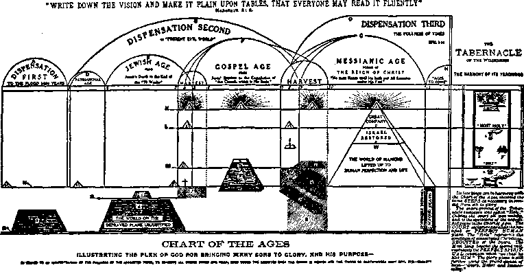
"CHART OF THE AGES,” AN INSERT IN "STUDIES IN THE SCRIPTURES," VOL. I, “THE PLAN OF THE AGES"
The arrangement consisted of a questionnaire made available to all males associated with the congregation as an encouragement and assistance to them to study and train themselves to be qualified through an accurate knowledge of God’s purpose. Those able to answer these questions with a grade of 85 percent or more were considered and recognized as qualified speakers on different matters. Those passing the test according to these standards were then authorized to represent the Society as one of its public speakers and could work with the congregation in giving chart talks and otherwise serving on the public platform.
These twenty-two searching Bible questions commenced with the “first creative act of God,” centered in the ransom and culminated in the complete work of Christ at the end of the thousand-year reign, a comprehensive sweep of all revealed doctrine at that time. They further dealt with the individual’s background as to his conversion, dedication, water baptism, and extent of his study in the Bible with the use of the Society’s literature.
RECOGNIZING THE FAITHFUL SERVANT
tom: you mentioned earlier, John, that conditions began to develop at Brooklyn headquarters that gave indication of an intensive period of judgment upon the entire congregation at that time. Was the particular issue here an internal opposition to Rutherford personally or to his stepped-up program of service?
John: Well, it seemed to have as its focal point the change in administration that had taken place. It centered around personalities but was motivated by ambition. J. F. Rutherford was an altogether different type of man from what C. T. Russell had been. Although Russell was progressive, energetic and positive, still in his dealing with others in the organization
n W Oct.-Nov. 1881, p. 5. he was kind, warm and very tactful. Judge Rutherford was warm and generous toward his associates but he was also a brusk and direct type of person, and his legal background and experiences in early life gave him a directness in his approach to problems in dealing with his brothers that caused some to take offense. Since Russell had been so prominent in the work from its beginning, it was easy for many in the organization at that time to look to him as an individual, rather than as a representative of the entire organization. Rutherford recognized this fact and realized that the president of the Society was merely an instrument to be used to maintain the entire organization as a servant of God and to see that this servant of God was equipped to carry on the work assigned to it.
tom: what was Russell’s viewpoint on this matter?
John: Russell recognized that there was a responsibility on all Christians who claimed to be of the body of Christ and who ever expected to be with him in heaven. On the point of organization, as early as 1881 Russell recognized that the servant God said he would select to carry out his work was the entire body of anointed followers of Jesus Christ. He wrote in the Watch Tower of that year:
We believe that every member of this body of Christ is engaged in the blessed work, either directly or indirectly, of giving meat in due season to the household of faith. “Who then is that faithful and wise servant whom his Lord hath made ruler over his household,” to give them meat in due season? Is it not that “little flock” of consecrated servants who are faithfully carrying out their consecration vows—the body of Christ—and is not the whole body individually and collectively, giving the meat in due season to the household of faith—the great company of believers?
Blessed is that servant (the whole body of Christ) whom his Lord when he has come (Gr., elthon) shall find so doing. “Verily, I say unto you, that he shall make him ruler over all his goods.” “He shall inherit all things.’’^
In course of time this view was lost sight of, and attention was focused more upon an individual man.0 The view generally held, that Pastor Russell himself was the “faithful and wise servant” of Matthew 24:45-47, created considerable difficulty for some years. The insistence that Russell had been “that servant” led many to regard Russell in what amounted actually to creature worship. They believed that all the truth God had seen fit to reveal to his people had been revealed to Russell, and now nothing more could be brought forth because “that servant” was dead. This attitude caused Rutherford to root out any remnants of creature worship that might be left in the organization. For that reason he did not seek the favor of men and, because of the course many had taken in times past, he was suspicious of those who seemed to be working to curry favor with him. This attitude led to an unusual directness in dealing with his associates.
After Rutherford was elected president, it soon began to appear that there were some in the organization who were not in favor of the arrangement. A few believed that they should have been given this position and they went so far as to endeavor to wrest the administrative control from Rutherford’s hands. This feeling began to develop early in 1917, within a few months after Rutherford was elected.
A SEED OF REBELLION IS PLANTED
tom: was this a sort of conspiracy or an ‘every-man-for-himself’ controversy ?
John: The seed of rebellion seemed to germinate in one man, but soon spread and finally did develop into a real conspiracy. This is the way it started.
Pastor Russell had recognized the need for someone from the Society’s headquarters to go to Britain to strengthen the brothers there after World War I broke out. He had intended sending P. S. L. Johnson, born a Jew, who had forsaken Judaism to become a Lutheran minister before he came to a knowledge of the truth. Johnson had served as a speaker for the Society and was a man of recognized ability. This brilliance finally led to his downfall.
Because of Russell’s expressed wish, the committee that served before Rutherford’s election sent Johnson to England for this proposed task. When he arrived in London he began to assume an authority the Society had not given him, and began to oppose the Society’s policy and the Society’s Branch servant in the London office. He gave talks to the brothers in England to the effect that he, Johnson, was Pastor Russell’s successor, indicating that the mantle of Pastor Russell had fallen upon him just as the prophet Elijah’s cloak had fallen upon Elisha.
In the weeks that followed, he tried to take complete control of the British field and make himself the most prominent one in Britain. Without authority he even attempted to dismiss certain members of the London Bethel family. The work was so disrupted and such confusion developed that the Society’s Branch servant was forced to complain to Brother Rutherford, the president of the Society. Immediately Brother Rutherford appointed a commission of several prominent brothers in London, not members of the headquarters staff, to hear the facts in this case and report directly to him. The commission met and after due consideration recommended that Johnson be recalled to the United States for the good of the work in Britain.
Brother Rutherford acted upon this committee’s recommendation and instructed Johnson to return. Johnson, however, declined. He wrote letters and sent expensive cablegrams criticizing the committee, accusing them of bias in their deliberations and otherwise trying to justify the course that he had taken. In order to make his position indispensable in Britain he used certain papers the Society had furnished him to facilitate entry into England and had the Society’s funds in the London bank impounded. It was necessary later to take court action to free these monies again for the Society’s use.
o The Battle of Armageddon, of 1897, pp. 613, 614: The Finished Mystery, of 1917, pp. 53, 125, 237, 416-423; W 1916, p. 377; W 1917, pp. 323, 324; W 1919, p. 103; W 1923, pp. 67, 68.
But Johnson was not able to hold out indefinitely and finally found it necessary to return to New York. There he persisted in his efforts to persuade Rutherford to send him back to England so that he might make his position more secure. When Brother Rutherford refused, he sought assistance from the board of directors and finally persuaded four members to side with him in this issue by making it appear that Brother Rutherford was unfit to serve as president of the Society. Since the board of directors consisted of only seven men, this meant that now the majority of the board of directors had gone in opposition to President Rutherford, Vice-President Pierson and Secretary-Treasurer Van Am-burgh. This put the officers of the Society on one side of the issue and the directors who were trying to wrest administrative control from the president on the other side.
tom: How did they expect to do that?
John: Their idea was to make the president’s position secondary to the board of directors and limit his authority to that of an adviser. That would have meant making a change in the corporation’s bylaws, and since it was a complete departure from the provisions of the original charter it warned of serious trouble ahead.
Throughout the entire administration of
p W 1917, p. 372.
Pastor Russell, the president and the other officers of the Society had been the ones to decide on new publications; the board of directors, as a body, was not consulted. Brother Rutherford continued this same policy as he took up the new administration. In the course of time the three officers decided to publish the “seventh volume,” which had been in prospect for many years and which Russell himself had hoped to write before his death. The officers then arranged to have two brothers at headquarters, C. J. Woodworth and G. H. Fisher, compile this book, the first part of which was to be a commentary on Revelation and the second a commentary on Ezekiel. These co-editors were to assemble from all of Russell’s previous writings on these Bible books a compilation that could be edited and published under the title “The Finished Mystery” or the seventh volume in the Studies in the Scriptures? This seventh volume, therefore, contained largely the thinking and the comments of Pastor Russell during his lifetime.
RELEASE OF “THE FINISHED MYSTERY” A BOMBSHELL
At noon, July 17, 1917, this book was released at the Bethel dining room table. As Brother Russell had been accustomed to do, Brother Rutherford gave a present of this book to each member of the Bethel family. It came as a bombshell. Completely surprised by its release, the opposing members of the board of directors immediately seized upon this issue and made it the occasion of a five-hour controversy over the administration of the Society’s affairs.
LOIS: why should they object if
Pastor Russell himself had hoped to write a seventh volume? Didn’t you say this was a compilation of his own writings? It seems to me they didn’t have much of an argument.
John: Actually they had no cause for contention at all, because Russell himself had stated: “Whenever I find the key, I will write the Seventh Volume; and if the Lord gives the key to someone else, he can write it.”. They opposed the move because they had not been consulted. But now the book had been completed and released. In the five-hour debate that ensued the four contentious members of the board of directors were joined by P. S. L. Johnson. All voiced their grievances in the open before the entire headquarters staff. This controversy showed a number of the Bethel family were in sympathy with this opposition to the Society’s administration under Brother Rutherford. If allowed to continue, it would disrupt the entire operation of Bethel; so Brother Rutherford took steps to correct it.r
Paul the apostle had clearly stated that those who cause division were to be marked and were to be avoided. In harmony with this clear-cut Scriptural principle it became necessary for Rutherford to reconcile these disgruntled members or ask them to leave. They thought it would be impossible for them to be replaced; but even before Russell’s death, Rutherford, as an attorney, had pointed out to Russell that these members had not been properly elected. He pointed out that according to the Pennsylvania charter, every time Russell appointed a brother to fill the vacancy of a board member who had died, the appointment must be reconfirmed at the following annual meeting at Pittsburgh by proper vote. But Russell had failed to do so. This meant that only the officers who were elected at the Pittsburgh meeting regularly each year were duly constituted members of the board. These four others who had been merely appointees of Russell’s had never had their appointment confirmed by an election and, hence, were not legal members of the board.
Rutherford knew this throughout this entire period of difficulty but had not brought the matter up, hoping that somehow these members would cease their opposition. When it became apparent that they would not, the time had come to legally dismiss them, which Rutherford did. This action infuriated these now defunct members of the board and they sought legal counsel in an effort to prevent Brother Rutherford from appointing four more new board members. Their attorney merely confirmed Brother Rutherford’s position that they had never legally been members of the board of directors and, therefore, Rutherford was entirely within his rights as president of the Society in refusing to consider them as such. Immediately Brother Rutherford filled the vacancies with four others until their appointments could be confirmed at the next general corporation meeting in 1918.
Brother Rutherford did not summarily dismiss them, however. He offered them prominent positions as pilgrims, but they refused and voluntarily chose to leave Bethel. Unfortunately, and as was to be expected, their withdrawal from service at headquarters did not reconcile them to Jehovah’s organization. Instead, they began to spread their opposition outside of Bethel in an extensive speaking and letterwriting campaign throughout the United States, Canada and Europe. As a result, after the summer of 1917, many of the congregations all over the world were composed of two parties. The spiritual drowsiness that had been settling on many during this period made them an easy prey for the smooth talk of these opposers, and they refused to co-operate with the awakening spirit of the revitalized work in preaching the Kingdom good news at that time. The United States of America was now actively engaged in World War I. Growing clergy opposition and public hostility also made it easy for brothers who did not see God’s organization to listen to such negatively inclined opposers and they gradually began to slow down their activity and to fall into line eventually with the opposition groups..
q W 1917, p. 226. r Harvest Siftings, Aug. 1, 1917, pp. 1-24.
A LAST DESPERATE EFFORT TO SEIZE CONTROL
These groups were not sleepy enough, however, to refrain from any activity at all. They were extremely zealous in their effort to wrest control of the congregations from those who were earnestly seeking to advance the divine will through the continued preaching activity. As foretold in the Scriptures, they were not interested in feeding the Lord’s sheep from Jehovah’s table. Instead, they were busily engaged in beating and abusing their fellow slaves. All of this, occurring in the summer of 1917, was the beginning of the clearly marked division between these opposers and those who were serving Jehovah according to the arrangement practiced by Brother Russell throughout his entire administration, and which arrangement was now being intensified by Brother Rutherford.
Earlier in 1917 the Society had scheduled a convention to be held at Boston in August of that year. The opposition group thought they could take control of this convention, but Brother Rutherford was determined that they would not do so. To forestall any move on their part in this regard, Rutherford himself, as the Society’s president, served as permanent chairman of the convention. In this way he was able to control every session, and those in opposition were not permitted at any time to address the assembly. As a result, the convention was a complete success to Jehovah’s praise and a complete failure to
s W 1918, p. 79. t W 1917, p. 330. II Ibid., p. 375. those seeking to interrupt the Kingdom work.
The next move on the part of the ambitious opponents of the Society was an effort to get control of the corporation meeting scheduled for January, 1918, in Pittsburgh. At this annual corporation meeting it was proposed that the new directors appointed by Brother Rutherford would be elected as a legal confirmation of his appointment of them. Brother Rutherford knew that this meeting would furnish the last desperate chance for these opposers of the Society to get control. He was reasonably certain that the majority of the brothers were not in favor of such a move. But the majority would not have an opportunity to express themselves at the election, since it was a corporation matter and must be handled by only those who were members of the legally constituted Watch Tower Bible and Tract Society.
To give all of Jehovah’s dedicated servants an opportunity to express themselves, it was suggested in The Watch Tower, November 1, 1917, that a referendum vote be taken by each congregation? By the fifteenth of December, 813 congregations had sent in their votes. This poll indicated that 10,869 votes were for Rutherford as president out of the 11,421 votes sent in. This established beyond all question that the vast majority of the brothers in the field were really supporting Brother Rutherford and his administration. Furthermore, it was demonstrated by this informal referendum vote that all the faithful members of the board of directors as reconstituted in July of 1917 were preferred over the five rebellious ones.'1
This vote of the brothers generally proved to demonstrate the attitude of the members of the legal corporation as well. Rutherford and the others of the board were legally re-elected and not one of the opponents succeeded in establishing himself on the board of directors.1
By this time the division had become so marked between the two groups that there was no longer any possibility of reconciliation and, after the January business meeting of the Society, the opposition group formed a separate organization headed by what they called a “Committee of Seven.”w By Memorial time, March 26, 1918, this separation had become complete, as the opposers chose to celebrate the Memorial of Christ’s death apart from the Society’s faithful congregations.
l°iss: Did their organization grow to any great size?
John: On the contrary. Those forming this opposition were united for just a few months. At their convention in the summer of 1918, further differences ended in another split. Johnson went one way and the other four went another way, each with his followers. Johnson organized his own separate group, making his headquarters in Philadelphia, where he continued as “earth’s great high priest” until his death. Further dissensions brought further divisions from that time forward, until this original group, separated from the Society at this crucial time of judgment, disintegrated into a number of schismatic sects.
Lois: were there many who separated from the Society at that time?
John: it would be difficult to know exactly. But some idea can be gained from partial reports received by the Society. In times past the Society had published a partial report of Memorial attendance throughout the world. This was sent in by various congregations. But due to the difficulties of 1918, both inside and outside the organization, these attendance figures were not gathered. In 1917, the partial report for the Memorial on April 5 showed 21,274 in attendance as associated with the Society. At Memorial, April 13, 1919, according to a partial report without all foreign lands included, attendance figures were 17,961. From these figures, incomplete as they were, it becomes evident that far less than 4,000 had ceased to walk with their former faithful associates.^
But, just as foretold in Jesus’ prophecy, those faithful to their service privileges were given work to do. Through the close of 1917 and into 1918 these servants of God, faithful to the work begun decades earlier by Pastor Russell, were energetically distributing The Finished Mystery. Within seven months after the new administration began, the Society’s outside printers were busy on the 850,000 edition. As reported in The Watch Tower of 1917: “The sale of the Seventh Volume is unparalleled by the sale of any other book known, in the same length of time, excepting the Bible.”y
This book proved to be a bone of contention, not only to those who were spiritually drowsy to opportunities of advanced Kingdom work, but also to those already serving as false spiritual guides to the people, the religious clergy of Christendom. The book was a stinging exposure of these false shepherds.
Painful to the organization as this rebellious blow from within had been, it was nothing compared to the blow that was to be dealt the organization by combined enemies on the outside. Satan’s hatred of God’s organization for centuries past now seemed to be crammed into a few short months in a determined effort to completely obliterate from the earth every semblance of the Kingdom witness. Had it not been for the mercy and loyal love of Jehovah, the next few months would have been fatal for the Watch Tower Society.
Let Go into
Captivity
T -.......------------------
om: Last week, John, you mentioned a combined effort on the part of your enemies to destroy the work of Jehovah’s witnesses. What happened?
John: Well, the work was virtually brought to a halt, Tom. Of course, some of the individual Witnesses were able to keep right on with the preaching work during this severe time of trouble, but organizationally there was a short period of inactivity. The events leading up to that time began to reach a climax following the rebellion at headquarters in Brooklyn in the summer of 1917.
To round out the year 1917, December 30 was set as the historic date to begin, through the Sunday volunteer service, the mass distribution of 10,000,000 copies of a new issue of the four-page tabloid-size tract The Bible Students Monthly. This fiery issue was entitled “The Fall of Babylon—Why Christendom Must Now Suffer—the Final Outcome.”11 It contained excerpts from The Finished Mystery with some of the most pointed references to the clergy. As a part of this campaign of distribution, widely advertised public lectures were delivered the same day on the same subject.b
a W 1917, pp. 354, 374. b W 1918, p. 18.
This tract proved to be one of the most powerful of the monthly series that had been distributed by the millions since 1910. It showed how Catholic and Protestant religious organizations together formed modern-day Babylon, which must soon fall to oblivion. On the back page was a graphic cartoon picturing a rampart or wall crumbling, with stones being thrown down, one by one, that were marked: “Protestantism,” “Creeds,” “Eternal torment theory,” “Doctrine of trinity,” “There is no evil,” “No pain,” “No death,” “No devil,” “Apostolic succession,” “The end justifies the means,” “Baptism of infants,” “Confessions,” “Purgatory,” “Selling of indulgences,” and many others. These stones being thrown down represented the failure of these false doctrines to provide spiritual food of sustaining value.
tom: That must have been hard for them to take.
John: I was. in fact clergy were aroused to such a white heat by this stinging exposure that they seized upon certain statements in The Finished Mystery, then being widely distributed, in a determined effort to put the Society out of business. It was claimed that these statements were of a seditious nature. Although Canada and other countries had already been at war since 1914, this book was originally written and prepared for distribution even before the United States entered the war on April 6, 1917. It was released to the public in July, 1917.
During this time from the fall of 1914 onward, Jehovah’s witnesses had been preaching in a condition of mourning and reproach, as foretold in Revelation 11:3. Opposition from the religious leaders had been severe, but now, following the distribution of the tract Fall of Babylon, they became violent. Not only were they now out to get the Society but, like the Jewish hierarchy in the days of Jesus, they wanted the state government to do the dirty work for them. February 12, 1918, saw the beginning of governmental reaction against the Society. Canada took the lead. On that date the Watch Tower Society was banned. A public press dispatch at that time reads:
The Secretary of State, under the press censorship regulations, has issued warrants forbidding the possession in Canada of a number of publications, amongst which is the book published by the International Bible Students Association, entitled “Studies in the Scriptures—The Finished Mystery,” generally known as the posthumous publication of Pastor Russell. “The Bible Students Monthly,” also published by this Association at its office in Brooklyn, New York, is also prohibited circulation in Canada. The possession of any prohibited books lays the possessor open to a fine not exceeding $5,000 and five years in prison.6
THE BIBLE STUDENTS MONTHLY, Brooklyn, N. Y.
Vol. 9, No. 9
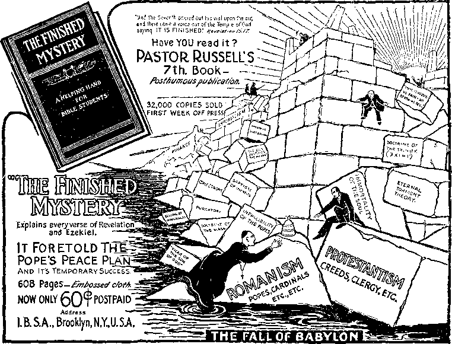
(Continued from Page 3, Column 4.)
Writer of Sunday School lessons, in commenting on the lesson for September 2nd, 1917, scathingly rebukes the clergy system.
Further the Prophet Ezekiel says:
33:6. But if the watchman tee the •word come, and blow not the tramcot, and the people be not warned; if the sword come and take any person from among them, he Is taken away In his iniquity, but his blood I Will require at the watchman’s hand. —The clergy are the watchmen. They
mutual destruction. God pity the clergy for what is coming upon them; for the people will surely recognize the part they have signally failed to play in not, by concerted preaching of true godliness, checking the world's' mad rush to anarchy and annihilation.''
HOW BABYLON WILL FALL
The Revelstor points out how Babylon (Ecclesiasticism) has become corrupt and fall how she will falL
hateful bird.—Babylon has contained both the best and the worst, but the Worst have predominated.
18:3. For all nations have drunk of the wine of the wrath of her fornication.—The wine of false doctrine is that of the Divine right of kin’s. Divine right of the clergy and eternal torment,' etc., etc. The one now being manufactured out of the theological seminaries is the wine of Evci-i-tion and Higher Criticism, which does not satisfy the thirsty, but increases the confusion.
18:4. And I heard another voice from Heaven, saying, Come out -of her, My people, that ye be not partakers of her sins and that ye receive not of her plagues.—If you fail to
represents the masses of the people and especially the restless discontented class. And thus shall great Babylon perish from the earth and her name shall be forgotten forever
UNIVERSAL PEACE WITH REJOICING.
What joy will pervade the earth when Babylon is completely annihilated! It will be followed by the glorious Kingdom of Messiah. Long have honest, order-loving Christian Seoplo prayed for the coming of that kingdom. It will be the desire of all nations. Then universal peace will prevail and the people will learn war no more forever. (Micah 4:1-1; Isaiah 2:2-4.} No more will the earth
THE BIBLE STUDENTS MONTHLY, VOL. 9, NO. 9, “THE FALL OF BABYLON," TOP OF PAGE 4
Later, the Winnipeg, Canada, Tribune, after mentioning the banning order we just read, said:
The banned publications are alleged to contain seditious and anti-war statements. Excerpts from one of the recent issues of “The Bible Students Monthly” were denounced from the pulpit a few weeks ago by Rev. Charles G. Paterson, Pastor of St. Stephen’s Church. Afterward Attorney General Johnson sent to Rev. Paterson for a copy of the publication. The censor’s order is believed to be the direct re-sult.d
CLERGY-INSPIRED CONSPIRACY AGAINST THE TRUTH
tom: That makes it look like the Canadian clergy instigated the banning order.
John: No doubt about it. It set off a chain of clergy-inspired actions that were aimed to force the governments of both the United States and Canada to destroy the Watch Tower Society and its coworkers.
tom: what did the United States government do? They didn’t place a ban on the Society, too, did they?
John: No, but following the Canadian action the beginning of the international conspiracy became evident in that same February. The U. S. Army Intelligence Bureau in New York city began an investigation of the Society’s headquarters. There had been an intimation of sedition, that the Society was suspected of having contact with the German enemy. Since the United States was at war with Germany and the Central Powers at that time, it was a very serious charge. It had been falsely reported to the United States government that Brooklyn Bethel headquarters was a center for transmitting messages to the German government.
LOIS: How? By an international “spy” ring?
John: No, this charge was even more ridiculous. You see, in 1918, a full four years before the days of radio broadcasting, wire communications and telegraph service had been established all over the Western world; and by 1915 wireless communications had been experimented with. But such were not reliable and wireless code messages could not be sent any great distance. In 1915 someone had given Brother Russell a small wireless receiver. Although he was not too interested himself, others at Bethel headquarters had installed a small aerial on the roof of Bethel to try to pick up messages, without much success. In 1918 the receiving set was stored in a closet. At no time were messages ever broadcast from Bethel. In 1918 when two army intelligence men were going through Bethel they were taken to the roof and shown where the wireless receiver had been. Then they were shown the instrument itself packed away in storage. The brothers readily agreed to allow these army men to take away the receiving set and remove the aerial. Neither had been used for a long time, which was apparent.6
The next development came on Sunday, February 24, 1918, when Brother Rutherford delivered for the first time the lecture that later became entitled “Millions Now Living Will Never Die.” This was at Los Angeles, California.1 The following Thursday, February 28, the Society’s large hall and quarters of the Los Angeles congregation were raided by the government, and the Society’s publications were confiscated.
c W 1918, p. 77. a Ibid. eW 1918, p. 77; W 1919, p. 117; Kingdom News, No. 1. iss. 1924, p. 358.
Already more than twenty of the Witnesses were being detained in army camps and military prisons because of the military draft.®
“KINGDOM NEWS” PROVIDES A COUNTERATTACK
LOIS: Wasn’t there anything the Society could do to show who was really responsible?
John: When on March 15, 1918, the Society decided to fight back by exposing this clergy-inspired pressure that they could see now gathering against them from every quarter. It was decided to release a new publication called Kingdom News, No. 1. The Bible Students Monthly was now discontinued and something suitable to the current circumstances was provided to arouse the indignant attention of the public in the United States, Canada and Britain.
This new tract was released March 15 from New York city. As a part of its masthead appeared the caption text “The Kingdom of Heaven Is at Hand” and the citation, Matthew 3:2. In a box at the left were the words “Published for the promotion of Christian knowledge” and “Teach all nations.” At the right were the words “Devoted to the principles of religious tolerance and Christian liberty.” Its six-column-wide headline read: “Religious Intolerance— Pastor Russell’s Followers Persecuted Because They Tell the People the Truth— Treatment of Bible Students Smacks of the ‘Dark Ages.’ ” This Scripture text was given as a smaller caption: “The servant is not greater than his Lord. If they have persecuted me, they will also persecute you.” Below it were set forth the facts of the persecution and the ban of the work that had begun in Canada. The responsibility of the clergy in attempting to de-g W 1918, p. 24. h Ibid., p. 82. I Ibid., p. 110. stroy the Witnesses in that country was laid squarely at their door.h Also a report from Germany was published of persecution of the Witnesses in that country.
Lois: If the Witnesses were being persecuted in Germany too, it should have made people realize you were not pro-German.
John: Many did know that. But you must remember, Lois, feeling was running high and Jehovah’s witnesses were an unpopular minority. However, in regard to the U. S. military draft this statement appeared :
We recognize that the United States government, being a political and economic institution, has the power and authority, under its fundamental law, to declare war and to draft its citizens into military service. We have no disposition to interfere with the draft or the war in any manner. The fact that some of our members have sought to take advantage of the protection of the law, has been used as another means of persecution.
Kingdom News, No. 1, also stated the belief of the Bible Students concerning war. In addition, a report was given concerning the wireless that had been removed from Bethel and the needless investigation that the government had made of the Society’s headquarters. The paper concluded with a report on the seventh volume, The Finished Mystery, and the clergy’s objection to it. Almost the entire back page was devoted to a striking advertisement encouraging the people of New York city to attend a lecture on March 24 entitled “ ‘The World Has Ended, Millions Now Living May Never Die!’—A free lecture by Hon. J. F. Rutherford, member New York state bar.” This lecture, the same Brother Rutherford had delivered for the first time in Los Angeles the preceding February, drew an attendance of 3,000 interested persons.1 It was a talk that held great interest for the public and proved to be the first public announcement given to a great crowd of persons due to come out of modern-day Babylon into a way of endless life. Many took notice of that announcement at that early date.
You will remember that the release of The Finished Mystery in July, 1917, had precipitated among those at Bethel a division that spread to many congregations. In spite of this, however, those of the faithful anointed continued active, and, during 1918, Rutherford reported later 7,000 Witnesses had been busily engaged in placing The Finished Mystery in uncounted others distributed tracts and handbills at the homes of the people and gave personal witness verbally.
LOIS: It must have taken considerable conviction for the Witnesses to come out so openly against the popular religious systems, especially with the strong opposition they faced.
John: n took courage and faith to put out this Kingdom News in all parts of the country. The anger of the religious leaders had already stirred them to open acts against the Watch Tower Society; now any further exposure was certain to bring even more intensified action on their part. But the Witnesses realized the people must be given the facts for their own protection. Eventually everyone was going to have to assume his own individual role in regard to God’s purpose. So, even if the clergy could not be stopped in their fight against the Society, it was seen to be necessary to expose them.
THE COUNTEROFFENSIVE IS STRENGTHENED
The 1918 annual celebration of the Lord’s Supper had passed, and April 15 arrived. So did Kingdom News, No. 2. This contained an even stronger message against the religious-political conspiracy that was aimed at destroying the Society. The streamer headline read: “The Finished Mystery and
j W 1919, p. 281.
Why Suppressed—Clergymen Take a Hand.” This paper showed the action of the clergy in encouraging government agencies to harass the Society, to make arrests, to object to The Finished Mystery and cause the brothers to cut out certain pages from the book, which really was a compromise. The paper explained why the clergy were opposing the Witnesses so bitterly and it painted their action in its true colors— religious intolerance. This issue of Kingdom News repeated the stand the Witnesses had taken on war and explained their belief as to what constituted the true church. Demonstrating the international scope of this conspiracy, Kingdom News, No. 2, contained a quotation from a paper published in Copenhagen, Denmark, respecting clerical persecution of the Witnesses in Germany. It reads:
A warning against the Millennium sect. The Consistory of Kiel (Holstein, Germany) is calling the attention of the (Lutheran) priests to the activities carried on by the Millennium sect, which calls itself “Watch Tower Bible and Tract Society,” and also “Bible Students Association.” The imperial war department has recently requested us to keep a watchful eye on the activities of this sect, which consist in selling the writings of its founder, the lately deceased Pastor Russell, of Brooklyn, North America, in untiring propaganda work, accomplished with American money. The Consistory does, therefore, call the priests’ attention to this sect and requests that they take action against it and report to the Consistory their observations of its dangerous activities.
This time, too, the brothers went farther in their efforts to counteract the influence of the clergy. In connection with the distribution of this issue of Kingdom News, a petition was circulated addressed to United States President Wilson.
We, the undersigned Americans, hold that any interference by the clergy with independent Bible study is intolerant, un-American and unChristian; and that any attempt to combine Church and State is radically wrong. In the interest of liberty and religious freedom, we solemnly protest against the suppression of The Finished Mystery, and petition the Government to remove all restrictions as to its use, that the people may be permitted without interference or molestation to buy, sell, have and read this aid to Bible study.k
May 1, 1918, the Society released Kingdom News, No. 3, as the enemy began closing in for the final blow they thought would silence the Witnesses forever. This issue carried the significant headline “Two Great Battles Raging—Fall of Autocracy Certain—Satanic Strategy Doomed to Failure —The Birth of Antichrist.” It specialized on the Seed of Promise versus the seed of Satan. Tracing the antichrist from its birth to the current deeds of the apostate hands of the Catholic and Protestant clergy, it revealed that such agents of the Devil were out now to destroy the remnant of Christ’s seed, the anointed ones who follow in the footsteps of Jesus.
In a report that he wrote in later years, Judge Rutherford repeated a statement that had been made to him by General James Franklin Bell, commander of Camp Upton, Long Island, New York. Bell told Rutherford about a conference of clergymen in Philadelphia, Pennsylvania, in 1917, who had appointed a committee to go to Washington, D.C., in the interests of an amendment they favored to the Espionage Law. If passed, all cases against the Espionage Law would have been tried before a military court with the death penalty imposed as punishment. Then Bell stated to Rutherford with considerable feeling: “That bill did not pass, because Wilson vetoed it; but we know how to get you and we are going to do it!”1
SOCIETY’S OFFICERS ARRESTED
Lois: That was an open threat, wasn’t it?
John: And not an idle one either. Within a few days of the release of Kingdom News, No. 3, the United States District Court for the Eastern District of New York issued a warrant for the arrest of eight of the Society’s principal servants at Bethel headquarters. They were J. F. Rutherford, W. E. Van Amburgh, A. H. Macmillan, R. J. Martin, C. J. Woodworth, G. H. Fisher, F. H. Robison and G. DeCecca. This was on May 7, 1918. On that day the forty-two months or 1,260 days of Revelation 11:2, 3 ended. That period of witnessing, as it were, in the “sackcloth” of mourning had begun during the first half of the month of November, 1914, and now three and a half years later it was being killed by Satan’s symbolic “wild beast,” as Revelation 11:7 foretold. Warrants were served the following day by U. S. Marshal Power, and the eight men were arraigned in Federal Court, Judge Garvin presiding. It was charged™ they—
Unlawfully and feloniously did conspire, combine, confederate and agree together, and with divers other persons to the said Grand Jurors unknown, to commit a certain offense against the United States of America, to wit: the offense of unlawfully, feloniously and wilfully causing insubordination, disloyalty and refusal of duty in the military and naval forces of the United States of America when the United States was at war ... by personal solicitations, letters, public speeches, distributing and publicly circulating throughout the United States of America a certain book called “Volume VII. Bible Studies. The Finished Mystery,” and distributing and publicly circulating throughout the United States certain articles printed in pamphlets called “Bible Student’s Monthly,” “Watch Tower,” “Kingdom News” and other pamphlets not named.”
Voicing the feeling of all religious clergy at this turn of events, the Roman Catholic periodical of Brooklyn, The Tablet, published this ominous prophecy on May 11: “Kingdom News spread around—some may go to jail.”
k Kingdom News, No. 2, p. 2. 1 Consolation, Aug. 23, 1939, p. 5. For evidence that the U. S. Attorney General had marked the Society for prosecution and was determined to see legislation enacted to accomplish it, see Congressional Record (Vol. 56, Part 6), Senate, Apr. 24, 1918, p. 5542; May 4, 1918, pp. 6051, 6052. m Charged under the Espionage Law, enacted June 15, 1917, as strictly a war measure. (W 1918, p. 171). n Rutherford v. United States (May 14, 1919), 258 F. 855, Transcript of Record, Vol. 1. p. 12.
tom: That headline sounds like distribution of the Kingdom News had annoyed them somewhat.
John: The Catholic article goes further.
Joseph F. Rutherford and some of his colleagues are likely to pass their summer months in a villa where they will be protected from mobs who insult them by asking them to buy liberty bonds. ... It is quite interesting to note that Rutherford and all their ilk who take delight in going into convulsions over the [Catholic] Church are always being pursued by government officers. Anti-Catholicism and antiAmericanism seem to be twins.
Anyway, the trial was set for Monday, June 3. Judge Garvin, who was the first one appointed to take the case, was biased and asked to be excused. This automatically transferred the case to Judge Chatfield, who was also dismissed. Finally the government brought in United States District Judge Harlan B. Howe from Vermont.0 The trial lasted fifteen days and voluminous testimony was recorded. It was later demonstrated that the trial contained over 125 errors, only a few of which were needed by the Appellate Court ultimately to condemn the entire procedure as unfair.
SENTENCED TO EIGHTY YEARS
Remember, these were war years. Bands were playing and soldiers were marching in the streets around nearby Brooklyn Borough Hall. The public sentiment was strictly in favor of anything that would further the war effort. It is no wonder that the trial of the controversial “Bible Students” on a sedition charge would attract considerable attention. Finally, on Thursday, June 20, the jury returned a verdict of guilty. On June 21, just after noon, seven of the brothers were sentenced to eighty years’ imprisonment, twenty years each on four different counts to run concurrently. Their sentence was to be served in the United States penitentiary in Atlanta, Georgia.*1 Giovanni DeCecca was sentenced later to ten years on each of the same four counts.
The trial judge, in sentencing the first seven officials of the Society, stated:
A person preaching religion usually has much influence and if he is sincere he is all the more effective.
Commenting on this, the New York Post on June 21, 1918, editorially said:
After uttering these words, Judge H. B. Howe, of the United States District Court in Brooklyn, sentenced the religious persons before him to twenty years each in prison. It was necessary, he said, to make an example of those who sincerely taught this religion, which, like that of the Mennonites and the Quakers and many other sects, forbids the taking up of arms. They were guilty, plainly, of having urged men to follow what they considered the teachings of the Lord, and to apply literally the commandment, “Thou shalt not kill.” So the jury could do nothing less than find them guilty of having violated the statutes of the country, whatever may be the correctness or incorrectness of their attitude toward the moral and religious law. We trust that teachers of religion everywhere will take notice of this judge’s opinion that teaching any religion save that which is absolutely in accord with statute laws is a grave crime which is intensified if, being a minister of the Gospel, you should still happen to be sincere. There is no doubt that Judge Howe made his sentences severe enough; they are about double those imposed by the Kaiser upon the Socialists who have been trying to upset his wicked regime, and three times longer than many sentences imposed upon would-be regicides. r
Also reporting on their sentence the New York Tribune of June 22, 1918, stated:
Joseph F. Rutherford and six of the other “Russellites,” convicted of violation of the Espionage Act, were sentenced to 20 years in the Atlanta penitentiary yesterday, by Judge Howe. “This is the happiest day of my life,” said Mr. Rutherford on his way from the court to the jail, “to serve earthly punishment for the sake of one’s religious belief is one of the greatest privileges a man could have.” One of the strangest demonstrations that the Marshal’s Office in the Brooklyn Federal Court
has ever seen, was held by the families and intimate friends of the convicted men soon after the prisoners had been taken to the Grand Jury room. The whole company made the old building ring with the strains of “Blessed Be the Tie That Binds.” “It is all God’s will,” they told each other, with faces almost radiant. “Some day the world will know what all this means. Meanwhile, let us be thankful for the grace of God that has sustained us through our trials, and look forward to the Great Day that is to come.”
The condemned brothers tried twice to obtain bail but each time were thwarted, first by Judge Howe and later by Judge Martin T. Manton. While these attempts were being made they were held in Brooklyn jail. On July 3, the day before they were taken to the Atlanta penitentiary, Brother Rutherford wrote a letter to the brothers who were left in charge at Bethel. Along with his words of encouragement was this warning:
We are advised that seven who opposed the Society and its work during the past year attended upon the trial and lent aid to our prosecutors. We warn you, beloved, against the subtle efforts of some of them to fawn upon you now in an attempt to get hold of the Society.s
One marked incident in the trial was the commitment of Witness William F. Hudg-ings for contempt. Hudgings testified on the stand that he was unable to recall a specific occasion when he had ever seen two of the defendants in the act of writing, whereupon the court characterized his testimony as untruthful and committed him to jail, where he was kept for six months.
tom: That sounds like pretty highhanded treatment.
jjohn: It was. Finally a writ of habeas corpus was obtained through the U. S. Supreme Court and his release was granted upon payment of bail. In granting the petition for a writ of habeas corpus Chief Justice White, according to the New York Evening Sun, declared William Hudgings’ imprisonment “outrageous.” The paper stated:
Word was received in Brooklyn today that by order of Chief Justice White, of the U. S. Supreme Court, William F. Hudgings, secretary of the Watch Tower Bible Students’ Society, who has been in jail for contempt of court since June 11, will be released on bail. Chief Justice White called Hudgings’ incarceration for contempt of court “outrageous, unfair and unwarranted.”
This is just one instance of the prejudice and bias manifested by the judge of this court during the trial?
PERSECUTION OF CHRISTIANS CONTINUES
Lois: That must have been a severe time on Jehovah’s witnesses. What kind of treatment did they receive in other parts of the country?
jjohn: Persecution was intense. Some time after this, early in 1919, a tract called “The Case of the International Bible Students Association” was released. We have quoted a number of times from it already. This tract gives a full report of the clergylaity opposition: the false charge of sedition against the brothers, the campaign of the Kingdom News we have just considered and then finally the description of the persecution upon Jehovah’s witnesses all over the United States. Similar treatment of the Witnesses was experienced in Canada and elsewhere, including Germany. Here is the report of some of the atrocities committed:
International Bible students in all parts of the country have suffered persecution for their fidelity to the Lord and their zeal in declaring the blessings that are coming to mankind through his kingdom. In a town in the State of Oregon the Mayor and two clergymen organized a mob, chased one of the lecturers of the Association out of the city and followed him to a neighboring town. The lecturer escaped, but the mob caught the friend who accompanied him and covered him with a coat of grease and tar.
In the State of Washington one Bible Student was sentenced to three years’ imprisonment for sending a copy of The Finished Mystery through the mail. In Globe, Arizona, two men were chased out of the town, finally caught and thrown into jail because they had copies of The Finished Mystery. At San Bernardino, California, three men and one lady (colporteurs of these religious books) were arrested and sentenced to three years in prison, because they were offering for sale The Finished Mystery, a strictly Bible commentary, and that after the pages in question had been removed. At Oklahoma City some colporteurs were tarred, feathered and beaten with clubs. In Arkansas one lady was arrested, thrown into a filthy jail and kept there for some days without bond. One man and his wife in the same place were jailed for days without even any charge ever being made against them. In other places some were taken to creeks in the night time and ducked in the cold water, and everything in their homes destroyed. In Colorado a man wearing a uniform of an army officer broke up quiet meetings for Bible study. In Wheeling, West Virginia, officers threatened the Bible Students with imprisonment unless they surrendered to the officers all their books, the Studies in The Scriptures.
s W 1919, p. 58. t The Case of the International Bible Students Association, p. 4.
At Los Angeles clergymen made their boasts that the Bible Students would be arrested and held without bond. Some of these clergymen went about to owners of apartment houses and tried to induce the owners to dispossess tenants who are members of the International Bible Students Association. A raid was made upon the headquarters of the Bible Students in that city, and all their literature, including Bibles and hymn books, was seized and carried away. Twenty-six of the Students were arrested for having in their possession The Finished Mystery and Kingdom News, and were put to great expense of money and time defending themselves in Court. The trial resulted in a disagreement of the jury; and these men are still under bail, awaiting a second trial. At Portland, Oregon, a Bible Student was arrested and held in jail twenty-four hours. The case was dismissed by the United States Commissioner because it was so manifestly an outrage.
One noted evangelist stated: “We have been for thirty years trying to get these Russellites and now we have them.”
The Bible Institute of Los Angeles, headed by Dr. Torrey, has persisted in the persecution of the International Bible Students from pulpit and by printed pamphlets.u
Here are some other cases taken from an extensive report of the extreme persecution the Witnesses received during this period:
April 30, 1918, at Mammoth Spring, Arkansas, Mrs. Minna B. Franke was mobbed and compelled to close out a $10,000 stock in one day and leave town. At Garfield, Washington, Donald Main and Mr. Ish were jailed and threatened with death. At Minerva, Ohio, S. H. Griffin was first jailed and then released to a mob, then lectured fifteen minutes by the minister, then struck repeatedly, cursed, kicked, trodden upon, threatened with hanging and with drowning, driven from town, spit upon, tripped repeatedly, jabbed repeatedly with an umbrella, forbidden to ride, followed five miles to Malvern, Ohio, rearrested, jailed for safety at Carrollton and finally taken home by brave and faithful officials who, after examining his literature, said, in so many words, “We find no fault in this man.” . . .
March 14, 1918, at Pomona, California, J. Eagleston was jailed fifteen days in prison tanks, four of them with no bed or mattress, insufficient covering and insufficient food. When the jury disagreed, 5 to 7, the Judge said in open court, “If there is no law to settle these cases, they will be settled, if it is done by the American people themselves.” What did this Judge want done by the American people?
April 17, 1918, at Shawnee, Oklahoma, G. N. Fenn, George M. Brown, L. S. Rogers, W. F. Glass, E. T. Grier and J. T. Tull were jailed. During the trial the Prosecuting Attorney said, “To hell with your Bible; you ought to be in hell with your back broken; you ought to be hung.” When G. F. Wilson, of Oklahoma City, attempted to act as counsel for the defense he was also arrested. Each was fined $55 and costs; offense, distributing Protestant literature. The trial Judge encouraged mob action following the trial, but the mobs were foiled. . . .
In June, 1918, at Roanoke, Virginia, C. W. Morris was jailed three months for being “a strict adherent of the Pastor Russell sect” and was warned that if, after his release, he preached his doctrine he would receive much worse treatment. In fulfillment of this, in the same city, February 15, 1920, Alex. H. Macmillan was jailed by the Mayor, without warrant or charge, at the hour when he was advertised to lecture to the public on the topic, “Christ’s Second Coming Near; Millions Now Living Will Never Die.” . . .
April 30, 1918, at Brownstown, Indiana, Curtis Plummer was threatened and coerced by a mob composed of the county sheriff and business men. . . .
June 5, 1918, at Indianapolis, Indiana, William Darby, after thirty-two and one-half years of honorable service as a letter carrier, was discharged by J. C. Koons, First Assistant Postmaster General, for the offense of being a Christian; no other details available. At Fontanelle, Iowa, Etta Van Wagenen was forcibly driven from town by a banker and another silk hat anarchist. Subsequently, men in the uniforms of officers of the United States Army endeavored in vain to force her employer to dismiss her. At Fort Cobb, Oklahoma, A. L. Tucker was driven penniless out of town by a mob of ten men, which included his own banker with whom he then had funds on deposit. He was forced to leave the county and sell his property at great loss.
In March, 1918, at Shattuck, Oklahoma, J. B. Siebenlist, a native American, was jailed three days without warrant and without food, except three pieces of spoiled cornbread, was taken from jail by the mob, stripped, tarred with hot tar and whipped with a buggy-whip having a wire at its end, for the offense of applying at the depot for a package of Protestant literature. April 22, 1918, at Wynnewood, Oklahoma, Claud Watson was first jailed and then deliberately released to a mob composed of preachers, business men and a few others that knocked him down, caused a negro to whip him and, when he had partially recovered, to whip him again. They then poured tar and feathers all over him, rubbing the tar into his hair and scalp. April 29, 1918, at Walnut Ridge, Arkansas, W. B. Duncan, 61 years of age, Edward French, Charles Franke, a Mr. Griffin and Mrs. D. Van Hoesen were jailed. The jail was broken into by a mob that used the most vile and obscene language, whipped, tarred, feathered and drove them from town. Duncan was compelled to walk twenty-six miles to his home and barely recovered. Griffin was virtually blinded and died from the assault a few months later, v
BABYLONISH CAPTIVITY BEGINS
LOIS: It is difficult to imagine Christian people being treated like that in modern times, especially in this country.
jjohn: other reports on file at Bethel in New York reveal that brothers were dragged through the city because they refused to buy war bonds and were otherwise shamefully dealt with. Some were harassed on the streets, publicly spat upon, many tarred and feathered and otherwise reproached in every way possible. All of this occurred in the spring and summer of 1918. Truly “war was made on them” by pressure of the political powers to overcome them and kill them.
tom: with Judge Rutherford and his associates in prison, what happened to the operation of your headquarters?
jjohn: An executive committee was appointed to head the Society. The chief work of the five brothers appointed was to serve as an editorial committee to keep the Watch Tower magazine in circulation,w since the brothers everywhere needed all the encouragement that could be given them during this time of overwhelming opposition. Yet during all this period not one issue of The Watch Tower failed to appear.
Many problems were encountered, however, such as the shortage of paper supplies and coal, vitally needed for the work at headquarters. Animosity against the Society in Brooklyn was great. Patriotism was running high. All the Witnesses were viewed as traitors. It seemed impossible any more to continue operations at Brooklyn Bethel. In view of all these things the committee of five decided in consultation with other brothers to sell the Brooklyn Tabernacle building and close the Bethel home. This meant disbanding the Brooklyn headquarters in the summer of 1918 and moving back to Pittsburgh to an office building at Federal and Reliance Streets.*
Thus it was that by the summer of 1918 the once firm and strong voice of the Witnesses for Jehovah and his kingdom was silenced. Their organized work was figuratively killed and deathlike inactivity came over this once energetic band of Christians. Exiled, as it were, from Brooklyn headquarters on August 26, 1918, they came to be firmly held in bondage by their Babylonish captors. Figuratively, at least, the work was dead.
v The Golden Age, 1920, pp. 713-715. w W 1918, pp. 242, 255. x Ibid., p. 290.
Babylonish
Captivity
-j-^ois: i have been thinking all week about the persecution of the Witnesses during 1918. That must have been a horrible experience and one to try the faith of all those associated with the Society at that time.
jjohn: yes, it was. But as stated at Matthew 24:13: “He that has endured to the finish is the one that will be saved.” Whenever Jehovah allows a period of testing he always makes a way out. Many endured. The work was not killed forever; and while the officials of the Society were in prison the voice of The Watch Tower was still being heard, even though faintly.
Little was done during this time of the imprisonment. A few small assemblies were held, but little effort was made to bring the public together for these conventions. They were primarily to strengthen those still in the way of truth and to keep the work going as best they could. As we saw last week, some of the faithful colporteurs were still busy, though many had been arrested.
Then suddenly, on November 11, 1918, World War I came to an end. This brought new hope to the brothers, although Judge
W 1919, p. 116; Consolation, Aug. 23, 1939, p. 8.
Rutherford and his associates were still in Atlanta penitentiary. There was now good reason to begin an active campaign for their release. Meantime, however, January, 1919, arrived and with it the occasion of another annual meeting of the Watch Tower Society’s corporation. On January 4 a convention was called in Pittsburgh to see what could be done to awaken the brothers spiritually and at the same time see to the election of officers.
tom: Judge Rutherford was in prison at that time. So what arrangements could be made for a corporation meeting?
jjohn: That was the question in the minds of many. Particularly that of Brother Rutherford himself. All of these brothers in prison were not idle. Although they had been told when they entered that they could not preach, within a few months regular Bible studies were being held, with each of the brothers conducting a class of his own. These were held on Sunday with about a hundred in attendance.11 But Brother Rutherford was concerned as to what would take place at the corporation meeting. One of his associates in prison, who is still living, Brother A. H. Macmillan, has often spoken of this fear in Brother Rutherford’s mind that now, with the officers of the Society in prison, those who were opposed to the organization might find some way of getting control and wrecking the work that had been done to build up the Society throughout these years.
AN EXPRESSION OF CONFIDENCE
lois: what did happen at the meeting?
jjohn: For two days before the meeting a general convention was held, with 1,000 or more of the brothers attending from all parts of the United States and Canada. On the morning of January 4, Vice-President C. H. Anderson addressed the assembly briefly and then presented a resolution that was unanimously passed by all in attendance. This was a resolution of
confidence in the integrity of these eight defendants and in their loyalty to the government and people of these United States, as well as their loyalty to the Lord, and our utmost confidence that judgment will be reversed, and that they will be completely vindicated when all the facts are fully and impartially reviewed by the Appellate Court.b
There was some question as to the legal aspect of the situation because the Society’s president and secretary-treasurer were not present. Some were in favor of a six-month recess before holding the election. Others were of the opinion that such action on the part of the shareholders might be construed in some way by the public generally as being a repudiation of their brethren. A prolonged discussion ensued in which one brother expressed what seemed to be the spirit of the majority present. He said:
I believe that the greatest compliment we can pay to our dear Brother Rutherford would be to reelect him as president of the Watch Tower Bible and Tract Society. I do not think there is any question in the mind of the public as to where we stand on this proposition. If our brethren in any way technically violated the law they did not understand, we know their motives are good. And before Almighty God they have neither violated any law of God nor of man. We could manifest the greatest confidence if we reelected Brother Rutherford as president of the Association. I am not a lawyer, but when it comes to the legality of the situation I know something about the law of the loyal. Loyalty is what God demands. I cannot imagine any greater confidence we could manifest than to have an election and reelect Brother Rutherford as president
After a recess in the meeting the motion for the six-month recess was withdrawn. It was clear that the vast majority of those present favored an election and that there was not the slightest doubt as to the reelection of Rutherford as president.
The election was held and Brother Rutherford was elected president; Brother C. A. Wise, vice-president; and W. E. Van Amburgh, secretary-treasurer.d None who had opposed the Society during 1917 and 1918 had any voice in the proceedings.
The following month a country-wide agitation was started by certain newspapers for the release of Rutherford and his associates.6 Thousands of letters were also written by the Witnesses to newspaper editors, congressmen, senators and governors urging their action in behalf of the imprisoned officials of the Society. Many of those addressed expressed themselves in favor of the release, indicating that they would do their part to assist.*
The next effort in behalf of these brothers was a nationwide petition circulated during March of 1919. Within a short time 700,000 signatures were obtained.8. In this petition the United States government was asked to render justice to these men falsely accused and imprisoned. This public demonstration was evidence of the growing resurgence and vitality of the awakening Witnesses. It was the largest petition in its time. And although it was never presented to the government, it served as an outstanding witness.11
SOCIETY’S OFFICERS RELEASED AND EXONERATED
tom: after all the work of obtaining
700,000 signatures why was it never presented to the government?
b W 1919, p. 23. c Souvenir Report of the Bible Students Convention, Pittsburgh, Pa., January 2-5, 1919 p 37 d W 1919, pp. 23, 24. e National Labor Tribune, Pittsburgh, Pa., Feb. 20, 1919. f w 1919, p. 101. g W 1920. D. 162: W 1919, p. 93. h W 1919, p. 194. ’ ’
jjohn: It was not necessary. The government had already taken action to release the eight brothers. It is interesting to note in this regard that Harlan B. Howe, the Federal District Judge who was the first to deny bail after sentencing the brothers to imprisonment, had telegraphed Attorney General Gregory in Washington on March 2, 1919, “recommending immediate commutation” of the sentences of the eight men in prison. Gregory had sent a telegram to Howe requesting him to make this move.2 This maneuver was attempted because the brothers had entered an appeal and neither the Attorney General nor Howe were interested in seeing this case come to the higher courts. Remember, the Society’s officials were in prison while their appeal was pending only because Howe, and also Manton, had denied bail. However, this maneuver of Howe failed and instead, on March 21,2 the United States Supreme Court Justice Louis D. Brandeis ordered bail for the eight brothers, instructing that they should be given the right of an appeal on April 14.
Promptly the brothers were released. On Tuesday, March 25, they left the Atlanta penitentiary by train, arriving in Brooklyn the following day. There, March 26, 1919, the federal authorities released them on bail of $10,000 each, pending further trial.k You can imagine the joy of the brothers in Brooklyn who had been notified of the release and who were present to welcome their brothers home. Although the headquarters of the Society was now in Pittsburgh, these loyal brothers in New York city had quickly arranged for a big banquet, which was held in the Bethel home. Some of those present report that there was not even sufficient furniture for all to sit down, but this did not dampen their spirits or lessen the enthusiasm with which the expressions of the released brothers were received. Following this happy occasion Brother Rutherford and the others left immediately for Pittsburgh, where another joyful reception by the Bethel family there awaited them.
TOM; If the brothers were out on bail, this means that their case was not yet finished. What did finally happen?
jjohn: Their case was due to be heard on appeal April 14, 1919, when they had a hearing before the Federal Second Circuit Court of Appeals at New York. May 14, 1919, their erroneous convictions of the preceding summer were reversed. In remanding the case for retrial, Judge Ward stated in the opinion:
The defendants in this case did not have the temperate and impartial trial to which they were entitled, and for that reason the judgment is reversed.)
This meant the brothers were free unless the government would decide to reprosecute. However, the war was over and they knew that, on the facts at hand, it would be impossible to get a conviction. Therefore the following year, May 5, 1920, the eight men were completely cleared of an illegal judgment when, in open court at Brooklyn, on order of the Attorney General, the government’s attorney announced withdrawal of the prosecution. The indictments were dismissed by motion to nolle prosequi.
Due notice of this reversal was taken by the public press. The Brooklyn Eagle, May 15, 1919, reported:
Russellite verdict reversed by appeal; “Trial was unfair.” Judges Ward, Rogers and Manton of the United States Circuit Court of Appeals for the New York Federal District today reversed the convictions of the leaders of Russell-ism, who were found guilty last June before Judge Harlan B. Howe of Vermont, sitting in Brooklyn, of conspiring to obstruct the draft, discourage enlistment and foment insurrection and insubordination among the armed forces of the Nation.
The decision holds that the attitude of Judge Howe was unfair in his treatment of the [three] Witnesses. . . . Inasmuch as the decision sustains the legitimacy of the claim of the Russellites that their organization, which forbids members to kill, entitled its members to exemption from active service with the Army, there seems little likelihood that the leaders of the cult will ever again be placed on trial. . . .
Judge Martin T. Manton dissented from the majority opinion, which was written by Judge Henry G. Ward.1
Judge Manton’s dissenting vote was not too unexpected, because this eminent Roman Catholic on July 1, 1918, for no assigned reason, had refused bail to Rutherford and his associates. Thus nine months of unjust imprisonment was forced upon them while their appeal was pending. Such denial of bail was
clearly contrary to a decision of the Supreme Court of the United States, from which we quote, as follows: “The Statutes of the United States have been framed upon the theory that a person accused of crime shall not, until he has been finally adjudged guilty, in the court of last resort, be absolutely compelled to undergo imprisonment or punishment, but may be admitted to bail, not only after arrest and before trial, but after conviction and pending a Writ of Error.”—Hudson vs. Parker, 156 U. S.
277.
Although Manton was later made a “knight of the order of St. Gregory the Great” by Pope Pius XI, his disregard for justice was finally revealed when, June 3, 1939, he was sentenced to the maximum penalty of two years’ imprisonment plus a fine of $10,000 for shamefully misusing his high federal judgeship by accepting bribes of $186,000 for six decisions.5
tom: The reversal of their decision, then, meant that Judge Rutherford and the others were exonerated. Is that right? I saw a Catholic publication a short while ago where Judge Rutherford was spoken of as an “ex-convict.”
JOHN: Such a charge is absolutely false. The decision of the court, May 14, 1919, established that Rutherford and his associates had been imprisoned on an illegal conviction; but it is further proved that Judge Rutherford was not an ex-convict because he later practiced before the Supreme Court of the United States, and had it been considered that he had a prison record, that would have been impossible. Anyone making such a charge is either completely ignorant of the facts or is deliberately endeavoring to falsify Brother Rutherford’s position.
A SUCCESSFUL TEST PROMPTS RENEWED ACTIVITY
LOIS: what did the brothers do after they were released?
JOHN: One of the first things they did was to make an effort to get the wheels of the organization moving again. This was not an easy task. Work had ground to almost a complete standstill. The Brooklyn Tabernacle had been sold, Brooklyn Bethel was dismantled and practically unfurnished, the brothers in Pittsburgh had little money with which to operate, the headquarters were too small for expansion, they had no printing facilities, many of the plates from which the books had been printed had been destroyed, and the prospects were dark indeed. But the brothers were filled with a new zeal. They were freed from prison. There was some hope now for the future.
True, Brother Rutherford was not sure just what course should be properly taken. For that reason he decided to make a test in California. He had gone west shortly after release from prison partly because his family was there and partly because of his health. He had contracted a lung condition while in prison that stayed with him for the remainder of his life. To determine how much interest there might yet be in the Kingdom message, he arranged for a public meeting in Clune’s Auditorium in Los Angeles on Sunday, May 4, 1919. He had promised through extensive newspaper advertising to explain the reasons for the illegal conviction of the Society’s officers, and the meeting was an overwhelming success. His talk “The Hope for Distressed Humanity” was received with great enthusiasm.
nW 1919, p. 162; Consolation, Sept. 6, 1939, pp. 6, 7. o The Case of the International Bible Students Association, p. 4. p Consolation, Aug. 9, 1939, pp. 3-6; New York Times, Jan. 21, 1929; Nov. 18, 1946, p. 23, col. 3.
This convinced Brother Rutherford that the work was not yet finished, that there was much yet to be done. He immediately arranged for a convention to be held that fall at Cedar Point, Ohio, and began to investigate the possibility of returning the headquarters of the Society to Brooklyn, New York.
Here is an interesting incident related later by Vice-President C. A. Wise. He was instructed by Brother Rutherford to go to Brooklyn to see what could be done to rent premises where they could begin printing operations and to see what could be done to reopen Bethel. Brother Rutherford’s words were: “Go and see whether it is the Lord’s will for us to return back to Brooklyn.” Brother Wise said: “How will I determine as to whether it is the Lord’s will for us to go back or not?” Brother Rutherford replied: “It was a failure to get coal supplies in 1918 that drove us from Brooklyn back to Pittsburgh. Let’s make coal the test. You go and order some coal.” Knowing that coal was still rationed in New York at the end of the war, Brother Wise said, “How many tons do you think I should order to make the test?” “Well,” Brother Rutherford said, “make it a good test; order five hundred tons.”
Brother Wise went to New York with considerable misgivings because of the coal shortage, made his application to the authorities and to his amazement was granted the certificate to get five hundred tons
r W 1919, p. 283. r Ibid., pp. 291-297. of coal. He immediately wired Brother Rutherford that the coal order was granted. This would insure operations of the Society for a number of years. But the problem was where to put all the coal. It was necessary to convert large sections of the basement for coal storage space. But to the brothers it was an unmistakable indication that the time had come to go back to Brooklyn and get things moving there. This they did, October 1, 1919.
LOIS; Was the move to hold a convention at Cedar Point, Ohio, as successful as that one?
A JOYFUL REUNION AT CEDAR POINT
JOHN: yes, indeed, it turned out to be an extremely happy occasion. Of course, there was some question as to what the results of it would be as far as attendance was concerned, because the brothers had lost some contact with the Witnesses throughout the country. We can imagine their joy, therefore, when over 6,000 brothers assembled from all over Canada and the United States. This was truly a reunion of battle-scarred members of the remnant who had gone through a severe time of persecution. Yet their faith was strong and some had spent their last cent to attend that unforgettable Cedar Point convention, September 1-7, 1919. But they were not alone in their zeal, for 200 new recruits to the war of true worship symbolized their dedication by water immersion. At the public meeting there were 7,500 in attendance.1
Many were the expressions of appreciation to Jehovah for having strengthened his people through the time of crisis they had just experienced. Many too were the evidences that the brothers recognized their responsibility as Christian ministers to preach the good news of God’s kingdom to the world. One outstanding instance of this is in the talk delivered by Brother Rutherford, which appeared in The Watch
Tower under the title “Announcing the Kingdom.” He said, in part:
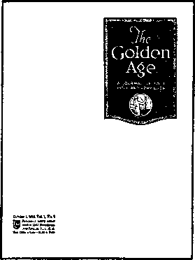
OCTOBER 1, 1919, VOL. 1, NO. 1
Obedient to the command of our Master, and recognizing our privilege and duty to make war against the strongholds of error which have so long held the people in bondage, our vocation was and is to announce the incoming glorious kingdom of Messiah. While striving faithfully to perform our covenant thus, there suddenly broke over our heads a terrific storm, and like sheep the Lord’s people were either scattered or driven to cover. So pitiless was the onslaught of the enemy that many of the Lord’s dear flock were stunned and stood still in amazement, praying and waiting for the Lord to indicate his will. On every hand Bible students, because of their faithfulness to their Lord, were reproached, and these reproaches became so severe that their heart sentiments found expression for a time in the words of the Prophet Jeremiah: “I am in derision daily, everyone mock-eth me. .. . For since I spake, I cried out, I cried violence and spoil; because the word of the Lord was made a reproach unto me, and a derision daily. Then I said, I will not make mention of him, nor speak any more in his name.”® But notwithstanding the momentary discouragement, there was a burning desire to proclaim the message of the kingdom, and like Jeremiah the faithful followers of the Master said: “But his word was in mine heart as a burning fire shut up in my bones, and I was weary with forbearing, and I could not stay; for I heard the defaming of many, fear on every side.”1
In sober moments a Christian naturally asks himself, Why am I on the earth? And the answer of necessity must be, The Lord has graciously made me his ambassador to bear the divine message of reconciliation to the world, and my privilege and duty is to announce that message.^
A NEW INSTRUMENT RELEASED
Brother Rutherford then pointed out that, in the war against the truth that had just been carried on, the original plates that had been used to print the People’s Pulpit and Bible Students Monthly had been destroyed along with the official files. He said too that, due to new ordinances that were being passed, there was increasing difficulty in many communities to distribute papers except to subscribers. He then revealed:
Seeking diligently and prayerfully to know the Lord’s will, the thought came to us that we should arrange for some publication to carry the message now due, and to put it in such form that it will be sought after and read by the people. We were reminded that Brother Russell once contemplated a publication of this kind, and we reasoned that probably the time was due for such a publication. The result is that under the Lord’s providence we have arranged for the publication of a new magazine under the name and title “The Golden Age.”v
It has proved indeed to be a valuable and powerful instrument in exposing false worship and deeds of darkness of the rulers of the world, as well as providing comfort and hope for the masses of the people. The first issue appeared October 1, 1919.w This magazine was received with real enthusiasm by the brothers and added further stimulus to their desire to pick up the work and press on in their God-given assignment. tom: if the plates used in printing were destroyed, how were they able to pick up the work right away?
JOHN: Qf course, they were still printing The Watch Tower and now the new magazine The Golden Age was being produced. Besides, there were a large number of The Finished Mystery that had been printed before the brothers went to prison and these were available for distribution also. Then on June 21, 1920, a paper edition of The Finished Mystery in “Watch Tower” form was released for distribution. This edition, commonly called “ZG,” had been printed before the war and was stored by the brothers while the book was being restricted in distribution.31 In reorganizing its distribution The Watch Tower said:
s Jeremiah 20:7-9, AV. t Jeremiah 20:9, 10, AV. u W 1919, p. 280. v Ibid. Published every other week. The journal’s name became “Consolation” with the October 6, 1937, issue and was replaced by Awake!, a semimonthly journal, with the August 22, 1946, issue, w W 1919, pp. 298, 318.
In 1917 and the early part of 1918 there was a wide circulation of “The Finished Mystery.” The war furnished an excuse to stop it. . . . The war is now over, ... so there could be no just cause or excuse now for any one to interfere with the disposition of “The Finished Mystery”. . . .
There could be no real legal objection to the sale and distribution of any of the Seventh Volumes at this time. However, the Society deems it best to dispose of the cheap edition in Watch Tower form first, and arrangement is made for the beginning of the sale and distribution of this edition on the 21st of June next, of which the classes have been advised. These will be sold at 20c per copy.y
So there was plenty of work for the brothers to do. Many of them had issues of the Bible Students Monthly and Kingdom News still on hand too, but they were all encouraged to put the “ZG” work first.
l°iss; what did they mean by the initials “ZG”?
JOHN: «z” was the symbol used at the beginning to refer to Zion’s Watch Tower. “G” indicated the Seventh Volume of the Studies in the Scriptures. The books in this series were designated in symbol by the first seven successive letters of the alphabet. So “ZG” merely meant The Finished Mystery or Seventh Volume printed as a special edition of The Watch Tower, March 1, 1918/
When the brothers went to Brooklyn in 1919 they were able to secure a suitable location on Myrtle Avenue, where they installed a large secondhand rotary press that they purchased. The brothers in the
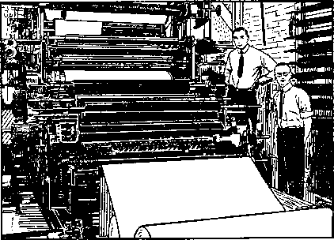
"THE OLD BATTLESHIP"
factory named it “old battleship” and it was used by the Society for years to print millions of copies of The Golden Age and The Watch Tower as well as booklets. I’m going to tell you some more about the old battleship later on.
The colporteur or pioneer service was revived in 1919 too, with 150 active in this branch of the service in the spring, and, by fall, 507 were engaging in full-time action in the field. The pilgrim service was revived too, and eighty-six special representatives were sent out from congregation to congregation to gather those who had been scattered due to war persecution and to stimulate new enthusiasm through this close contact with the headquarters organ-ization.aa Truly the stormy years of crisis had been successfully weathered and now the brothers were on their way to new and exciting exploits in defense of true worship.
x W 1918, p. 290. y W 1920, pp. 187, 198, 199. x W 1905, p. 73. aa W 1919, pp. 371-373.
Reorganizing
for Active
Service
john: when the Society began to be freed for further preaching work following World War I, they soon realized they had been held in spiritual bondage too in many ways. There were many false doctrines and practices that had not yet been cleaned out of the organization. Not all of them were recognized at once, but gradually over the years that followed it became evident to what extent the brothers had been in Babylonish captivity at that time. With considerable misunderstanding they had accepted earthly political governments as the “superior authorities” that God had ordained according to Romans 13:1; and as a result the Witnesses had been held in fear of man, particularly the civil rulers.a
Besides, many were putting emphasis on so-called “character development,” in the belief that there were certain saving qualities in their self-merit,b and there was considerable creature worship in the organization.0 Furthermore, such pagan holidays as Christmas were being celebrated,3 and even the symbol of the cross was used as a sign of Christian devotion.6 Also, although the name Jehovah was used from
a Studies in the Scriptures, Vol. I (1886), p. 250 (1926 pp. 356-370. dW 1919, p. 31; W 1946, p. 361. e W 1906, time to time, it was held in the background and its true significance not brought to light. Organizationally the Witnesses were still practicing the democratic style of local congregation government/ In other words, it was a time of everyone’s doing what was considered right in his own eyes, and the entire arrangement was a loose association without theocratic direction. The change-over in thinking had been so striking in many ways, from the 1870’s down to 1918, that these tainted bonds of false conceptions and practices, inherited from the pagan traditions adopted by Christendom, had slipped by unnoticed by the brothers.
Now from the year 1919 a glorious new outlook presented itself. These dedicated servants began to recognize their mistakes and make a public confession of their wrongdoing in their effort to seek Jehovah’s forgiveness and be restored to his favor, which they realized had temporarily been lost. They repented of their former course, expressed the desire to change their ways and prayed for Jehovah’s forgiveness. They recognized a compromise had been made by cutting out pages 247-253 of The Finished Mystery in order to please those who had assumed the position of censor.’? Another compromise was made as revealed in The Watch Tower of June 1, 1918.
h W 1916, pp. 155-157; W 1926, pp. 131-137. c W 1916, .. 274. f W 1913, p. 381. g W 1918, p. 77.
In accordance with the resolution of Congress of April 2nd, and with the proclamation of the President of the United States of May 11, it is suggested that the Lord’s people everywhere make May 30th a day of prayer and supplication.h
The expressions that followed in this announcement did not display the proper neutrality of the Christian; and while the hope was presented that blessings to mankind would come through the restitution promised by God, still the concluding words of the announcement may have left doubt in the minds of many not fully acquainted with their strictly Scriptural responsibility.
Let there be praise and thanksgiving to God for the promised glorious outcome of the war, the breaking of the shackles of autocracy, the freeing of the captives (Isaiah 61:1) and the making of the world safe for the common people—blessings all assured by the Word of God to the people of this country and of the whole world of mankind.’
A further display of lack of appreciation of the singleness of purpose to which a Christian must be devoted was their engaging in enterprises of a nonreligious nature.j
CALL TO FEARLESS ACTION
As concrete evidence of their determination to pursue a course of right doing in their forward movement against continued opposition, the Society’s president spoke at the 1919 convention in September on the stirring subject “Blessed Are the Fearless,” which appeared as a two-part article in The Watch Tower that same year. We’ll read one of the concluding paragraphs.
Summing up the argument of Parts I and II of this subject, we find that God foreordained a little flock to be developed during the Gospel age to whom he would have great pleasure in giving the kingdom; that he has been developing that class throughout the Gospel age and particularly in the harvest period thereof, and that he has been teaching them by pictures, types and illustrations, as well as by direct statements, that the class to whom he purposes giving this grand and wonderful prize will be those whose faith and confidence in him is absolute, and who are without fear of man or man-made institutions and whose love is perfect. Viewing the church’s situation, then, in the light of the Scriptures, and in the light of the events that have transpired during the past year, and knowing that through much tribulation must the Kingdom class enter in, let everyone who is now in the race for the prize of the high calling gird up the loins of his mind and be sober and wait for the command of the Lord, the Captain of our salvation, ready, willing, and anxious at all times to obey that command at the cost of reputation, good name, fame, riches, or even life itself.k
LOIS: After what the Witnesses had been through, that would take real faith, wouldn’t it?
JOHN: yes, and it brought new life to the awakening organization. New meaning was given to their work and a further incentive to maintain their integrity and stand firm for pure worship. With this spiritual refreshment a changed condition began to develop.
T0M: It seems to me the postwar distribution of The Finished Mystery or “ZG” that you told us about would require a fearless attitude. I’m not sure, if I had been treated the way some of the Witnesses were for distributing copies of it, that I would be so willing to start in on a big campaign with it right away.
JOHN: Well, it was an extremely successful effort and the brothers displayed courage even though the government had officially lifted its objection to the book.1 But that wasn’t the only evidence of fearlessness displayed. In 1920 the Society printed and distributed a special issue of The Golden Age that was so “hot” a few of the brothers refused to take part in its distribution.™ It was called by the brothers “GA No. 27,” which was the symbol for The Golden Age and the number of this particular issue.
But little serious opposition was encountered during the period from 1919 to 1922. In fact, it proved to be a time of recuperation for God’s servants following the world war. Jehovah was protecting his people and preparing them for a tremendous campaign that was due to begin in 1922. The clue is found in the conclusion of the two-part article “Blessed Are the Fearless.” The next to the last paragraph in the final article says:
h W 1918, p. 174. I Ibid. See also W 1918, p. 78. j W 1900, p. 64; W 1911, p. 178; W 1920, p. 226. k W 1919, p. 249.
1 W 1920, p. 244. m Ibid., p. 374.
This little band of Christians are fighting the greatest fight of all times. There will never be another like it. The great God of the universe has arranged it; the great Redeemer, the King of kings and Lord of lords, is the Captain and Leader of this little band. We know that he is absolutely certain of victory, and we therefore know that after being called and chosen to run in this race, if we continue faithful, fearless, prompted by love in our actions, serving him at every possible opportunity loyally to the end, we shall ultimately stand victors with him and hear the approval of the Father, “Well done, good and faithful servants.” Let us then fear not, for “the eternal God is our refuge and underneath are the everlasting arms.”11
Then on the very next page of this August 15, 1919, issue of The Watch Tower appears an article entitled “Opportunities for Service.”
The recognition of opportunities for service meant a reorganization of forces for Jehovah’s servants in a twofold way, “that of foretelling the downfall of Babylon, and delivering denunciations against the same iniquitous power” and “the reestablishment of the truth and the Lord’s people, as represented by the restoration of the temple worship and rebuilding of the city” of Jerusalem by Ezra and Nehemiah following ancient Israel’s Babylonish captivity.0 It meant not only a preparation to gather and care for still others to be drawn to the Lord for salvation but also a preparation to mark for destruction those who persistently refused to accept the Kingdom good news as a doctrine of salvation.
RISE OF NEW SOCIETIES FOLLOWING THE WAR
Now, during this time of regathering and strengthening of God’s people as an expanding society devoted to the interests of Jehovah’s new world, the governments of Satan’s world were strengthening themselves, and several new societies were in process of development. All of these were opposed to the growing society composed of Jehovah’s new-world representatives.
Back in January of 1918, in the very throes of World War I, the American president, Woodrow Wilson, proposed the League of Nations. The very next month, you will recall, the president of the Watch Tower Bible and Tract Society, speaking for Jehovah’s witnesses, began preaching the startling message “The World Has Ended—Millions Now Living May Never Die.” Then, early in the following month, the Society’s prominent representatives were arrested for preaching God’s kingdom as the one and only hope for mankind. The issue was then plainly before the American churches of Christendom: God’s kingdom or the League of Nations— which should professing Christians choose?
World War I ended in November, 1918, with victory for the democratic Allies, but Brother Rutherford and his associates were still in prison. The Paris Peace Conference was due to begin in January of 1919. The leading churches of Christendom in America declared their choice, but they confused the issue in order to make a compromise. On December 12,1918, the executive committee of the Federal Council of Churches of Christ in America held their annual meeting and endorsed President Wilson’s plan for a League of Nations with a Declaration that contained the following remarkable statements ;p
The war crisis of the world has passed, but a world crisis is upon us... . The time has come to organize the world for truth and right, justice and humanity. To this end, as Christians we urge the establishment of a League of Free Nations at the coming Peace Conference. Such a League is not a mere political expedient; it is rather the political expression of the Kingdom of God on earth. . . . The heroic dead will have died in vain unless out of victory shall come a new earth wherein dwelleth righteousness. The Church has much to give and much to gain. It can give a powerful sanction by imparting to the new international order something of the prophetic glory of the Kingdom of God. . . . The Church can give a spirit of good-will, without which no League of Nations can endure. . . . The League of Nations is rooted in the Gospel. Like the Gospel, its objective is “peace on earth, good-will toward men.” Like the Gospel, its appeal is universal. . . . We call upon all Christians and upon all believers in God and lovers of man, to work and pray with whole souls, that out of the ashes of the old civilization may rise the fair outlines of a new world, based on the Christ ideal of justice, cooperation, brotherhood and service.
n W 1919, p. 249. o W 1922, p. 270. p See Federal Council Bulletin, Vol. II, No. 1, as of Jan. 1919, pp. 12-14.
A special commission made up of the president of the Federal Council and other representative leaders of the churches was appointed to convey that Declaration to the Paris Peace Conference in 1919. This special commission of churchmen is on record as having presented this Declaration to officials of the government in Paris, France.11
tom: what were the other societies you spoke of? Was one of these communism?
jjohn: yes. Following the revolution in 1917 communism, or Bolshevism, as it was first called, began to grow in power in Russia. But another force began to operate at this same time. Remember, the restoration of true worship in the last quarter of the nineteenth century followed upon a wave of revolutionary activity within Satan’s earthly organization. However, throughout the nearly forty years that Jehovah’s people had been declaring that the end of Gentile domination would come in 1914, strength was being poured back into the re-established Germanic Empire. Kaiser Wilhelm almost succeeded in restoring this empire to full power, but he was defeated and driven into exile.
However, in the course of the postwar years Germany became strong again. May, 1919, saw Adolf Hitler become a member of the Nazi party in Munich, Germany. Nazism’s rise to power was slower than that of the Fascist movement in Italy, which had its origins in 1919 and which was destined to control Italy as the tool of Benito Mussolini by 1922. While the League of Nations was held out to the people as the hope for lasting peace and was supported by the clergy of Christendom, it was the power of Nazism and Fascism, backed by the power of papal Rome, that was to threaten the existence of the growing society of Jehovah’s witnesses during the next two and a half decades.
Brought to life the same year, these two forces of Nazism and Fascism fought their way up together and, while the expanding society of Jehovah’s witnesses, with its foundation in the pure worship of Jehovah, was softening the hearts of men toward God and his Word, the Nazi-Fascist-Catholic combine was playing a great part in hardening men’s hearts into open hostility toward God and his true servants. And so was Bolshevism or communism.
To meet this onslaught soon due to begin, Jehovah occupied his people during the years 1919 to 1922 with a spiritual development and training necessary to equip them for what lay ahead.
tom: That’s why you said, then, that this period of 1919 to 1922 was significant to both Jehovah’s witnesses and those opposing them. It was like the development of two organizations in opposition to each other.
jjohn: That’s right, and it was a time of important changes to Jehovah’s witnesses.
q See annual report of the Federal Council of the Churches of Christ in America, calendar year of 1919, p. 11.
THE APPRECIATION OF THEOCRATIC ORGANIZATION BEGINS
In the fall of 1919 there came the launching of the work with the new magazine The Golden Age. This magazine had been announced on Friday, September 5, 1919, during the Cedar Point convention discourse “to Co-laborers,” delivered by the Society’s then president, Brother Rutherford.
Little did God’s people in 1919 know the significant part that the new instrument, The Golden Age, was to play in exposing the unholy combine of Nazi-Fascist-Catholic building. In the years that were to follow, numerous and powerful were the death-dealing blows that were to be dealt to this combine by articles and cartoons appearing in this courageous journal.
tom: you mean like the GA No. 27? Was there some special arrangement in this work with this special issue?
jjohn: yes, there was. An effort was being made to reach as many persons as possible. Around four million copies were printed and these were given away free or on a voluntary contribution of ten cents. Not only were they distributed from house to house but they were carried by the brothers and given to friends and chance acquaintances.
But the regular work with The Golden Age was carried on differently. As outlined in a pamphlet published by the Watch Tower Society in 1919, The Golden Age work is a house-to-house canvass with the kingdom message, proclaiming the day of vengeance of our God and comforting them that mourn. In addition to the canvass, a copy of The Golden Age is to be left at each home, whether a subscription is taken or not. . . . Class workers will procure their samples from the Director.1,
tom: Was this director elected by the congregations as the elders had been?
jjohn: No. Those congregations desiring to participate in this new field of service opening up in 1919 were asked to register as a service organization with the Society. When the Society received these requests, the brothers at headquarters theocratically appointed one of the local number in the congregation to serve as the Society’s appointee, to be known as the “director.” He was not subject to local yearly election. This meant that for the first time authority was being taken away from the democratically controlled congregations under their “elective elders,” and direction was to reside now, specifically, under the Society’s international supervision. True, it was limited, but the visible theocratic organization got started with this arrangement. The director was to operate alongside the body of democratically elected elders who continued to control congregational studies and lectures in the usual manner.
tom: n Would seem to me that some of these elders might not take to that arrangement too readily.
jjohn: There was some resistance from those who were not progressive and who did not have a vision of the work that lay ahead. Some insisted on living in the past, in the time of Pastor Russell, when the brothers in general had viewed him as the sole channel of Scriptural enlightenment. It was the published and accepted thought down till 1927 that he was “that servant” of Matthew 24:45.s However, just as the Watch Tower Society had been the publisher of Bible truths in the days of Brother Russell, so it would continue to be used by Jehovah during this period of restoration of true worship. A warning was given to the brothers not to accept private interpretation and blindly follow self-styled leaders who were more interested in personal position than they were in the advancement of Kingdom service. Man-pleasing was to be avoided.1 This, then, was the limit to which the Watch Tower Society extended its jurisdiction over the ruling affairs of the local congregations at that time."
r To Whom the WorJc Is Entrusted (1919: pamphlet of Watch Tower Society), p. 1. b W 1927, pp. 55, 56.
The following year the Society began to discourage some “elective elders” from the view that they comprised a local “board of directors” that could pursue an independent course without authority first being voted to them by the local congregation. This was an effort on the part of God’s channel to clarify the relationship of the local elders to the congregations A plea was made for world-wide unity. Those in Britain were counseled to undertake the work in the same manner as carried on in America.w
The healthy spirit of the brothers is manifested in the response that was made to this new program of activity. The tightening up of preaching responsibility began in 1920 when everyone in the congregation who participated in the witness work was required to turn in a weekly report. Before 1918 only colporteurs or pioneers had reported their service activity. Definite territory assignments were being made to the congregations for their own field work. For the first year of reporting, 1920, there were 8,052 “class workers” and 350 pioneers.* Of the more than 1,200 American congregations, 980 were reported by 1922 as being fully reorganized to engage in the field service with 8,801 “class workers,” that is, those who placed literature such as books, booklets and magazines on contribution by the obtainerA
REORGANIZING THE BRANCHES
tom: How was the work expanding outside the United States following the war?
jjohn: By this time press censorship upon the Watch Tower literature had been removed in Canada. This was effective January 1, 1920, and enabled the Bible Students there to join with their American brothers in an energetic campaign designed to advance the pure worship in their territory.2 Also, the branch office was moved to Toronto.aa
On August 12, 1920, Brother Rutherford and a small party of associates sailed out of New York bound for Europe, where a series of assemblies was held in London, Glasgow and other British cities in which considerable interest was manifested. Brother Rutherford with some of the brothers then went to Egypt and Palestine, visiting other offices and classes of Bible Students and strengthening the work in these parts of the field.bb At these assemblies, and at later American conventions, Scriptural argument was given to show that now a new work was opening up and a campaign of still greater proportions was under way.
Following this visit, in his annual report, the Society’s president wrote:
When the World War came on the cooperation in the work between the home office at Brooklyn and the branch offices throughout the world was very much hindered; and when in 1918 the persecution became so great in America, the relationship between the home and the foreign offices was practically severed. We are pleased to report, however, that since then the former relationship of union in activity, as well as in spirit, has been fully revived, and the work in foreign fields is progressing to the Lord’s glory and to the edification of his people. No representative from the home office had been able to visit the European offices since 1914 until the present year, when the President of the Society, upon the urgent request of the foreign brethren and upon the advice of the Board of Directors at the home office, made a visit to Europe. . . .
The World War greatly disorganized the work in Central Europe; but we are happy to report that now the work is progressing rapidly. On the occasion of the visit of the President of the Society to Central Europe, opportunity was taken to organize the work on a more efficient basis. After consultation with brethren from several of the countries it was deemed for the best interests of the work that a Central European office be opened, which was accordingly done. This office will be known as the Watch Tower Bible &Tract Society’s Central European Office, and for the present will be located at Zurich, Switzerland; but it is expected that it will be moved shortly to Berne, Switzerland. The countries under the supervision of this office are Switzerland, France, Belgium, Holland, Germany, Austria, and Italy. . ..
t W 1920, p. 5. u Ibid., p. 104. v W 1921, pp. 265, 343. w Ibid., p. 343. x W 1920, p. 372. y W 1922, p. 389. z W 1920, p. 36. aa Ibid., p. 374. bb Ibid., pp. 242, 307-311.
Certain of the brethren, fully consecrated to the truth, organized a printing establishment in Switzerland and fully equipped it with good presses and fonts of type in many languages; and the Society has an unusually favorable arrangement with this printing concern for the publication of its European literature. This office is now preparing a quantity of literature for use in these countries; and during the recent visit of the President to Europe, printing orders were put on the presses in Great Britain, the Scandinavian countries, and Switzerland, and there are now completed or in course of preparation 550,000 volumes of the book, “Millions Now Living Will Never Die.”c''
Brother Rutherford also disclosed in this report that the work was advancing in Syria, and plans were being made to send Witnesses down along the Nile River to preach to the Arab-speaking Christians there. He reported too that a Branch had been established in Ramallah, Palestine, within sight of the city of Jerusalem.dd
In 1921 expansion continued. The annual report listed eighteen foreign Branches, including the Central European Office serving seven countries. Circling around the globe from Europe, these Branches reached down to South Africa, out to India, Australia, up to Korea and back to Canada and South America, where the Branch was located on the island of Trinidad. Besides these, the Society maintained twelve “domestic” Branches in the United States, organized to serve nationality groups in their native tongues.*5®
An experience from Poland is of interest:
The work is progressing and developing rapidly. Classes are growing and the number of brethren is steadily increasing. In Warsaw every Sunday about 700 attend the meeting in the morning. Recently one of the Polish brethren because of preaching the truth was arrested in Cracow. Amongst other things he was charged in an indictment with slandering the Pope. He defended himself in court, using the Bible for his defense, and the judge directed his acquittal, stating from the bench that he had made a complete defense, saying that he was authorized by the Scriptures to speak as he had spoken. This caused an increased interest in the truth. The persecution awakened the people to know why this man was persecuted.ff
NEW BOOKS, NEW PREACHING ACTIVITY
All this increased activity meant additional work for the brothers at the Bethel headquarters at Brooklyn. Furthermore, now the Society had decided for the first time to do some of its own printing. Since the Brooklyn Tabernacle had been sold while the brothers were in prison, factory space was located on Myrtle Avenue in Brooklyn, where facilities for printing were set up. The family of the headquarters staff was also increased now to 107, specially to publish the special issue or September 29, 1920, issue of The Golden Age, No. 27, in millions of copies.
Thus a forward step was made early in 1920, when, for the first time, The Watch Tower was produced on the Society’s own press. This was the February 1,1920, issue. Beginning with the April 14, 1920, issue, The Golden Age also was printed on the Society’s press.8® That year thirty-eight carloads of paper were used in producing more than 4,000,000 copies of the new magazine The Golden Age. This was just a part of the total printing that was done in that one year.hh Expansion was rapid. By 1922 larger quarters were necessary for printing the literature, so the Society moved its factory into a six-story building at 18 Concord Street, also in Brooklyn. Here the printing of the Society’s bound books was first undertaken. But by 1926 this building also had been outgrown. This time the Society decided to build its own structure designed exactly according to our needs. Land was acquired and a new, large modern eightstory building was erected at 117 Adams Street, Brooklyn, just a ten-minute walk from the Bethel headquarters.” At that same time the Bethel home also was rebuilt and enlarged.^ But I don’t want to get ahead of my story. I’ll tell you more in detail about that later on.
cc W 1920, pp. 373, 375. dd Ibid., pp. 375, 376. ee W 1921, pp. 372-379. ff Ibid., p. 377. gg The Golden Age, Apr. 14, 1920, front cover; with which compare cover of Mar. 31, 1920, issue, hh W 1920, p. 371; W 1921, p. 371.
Lois: Did the brothers continue using the books written by Pastor Russell?
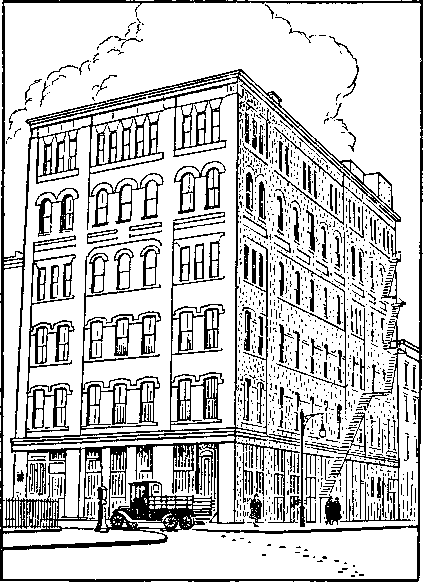
FACTORY, 18 CONCORD ST., 1922
john : The Seventh Volume had been distributed extensively when the Studies in the Scriptures were still encouraged for use. Then in connection with the distribution of these publications a new work opened up that was called the “Millions Campaign.” This was actually a publicspeaking program beginning September 25, 1920, designed to stir the attention of millions of people. It centered around the lecture published in the book Millions Now Living Will Never Die, published late in 1920.kk This was the lecture that Brother Rutherford had given for the first time February 24, 1918, with such exciting results in California. The book was also translated and published in Dano-Norwegian, Finnish, Swedish, French, German,
Hollandish, Yiddish, Greek, Arabic, Russian, Polish, Malayalam and Burmese. An example of the effectiveness of the campaign is cited in the annual report for 1920. It reads:
At four public meetings addressed by Brother Rutherford in a small portion of Europe 5,050 of these volumes were sold. This is a sample of the earnestness with which the people are grasping for the truth. There never has been manifested such interest in Germany as at this time. Great crowds are coming; and while the opposition is rising, the truth is also rising.3
The campaign lasted a couple of years. In addition to distributing the 128-page Millions book, large billboard advertisements were erected in all the big cities with streaming letters, “Millions Now Living Will Never Die.” Newspaper advertisements were used also. This campaign of advertising was so extensive that this spectacular slogan almost became a byword, and many persons we meet today still recall this campaign.
The work was a slight change from the “pastoral work” that had been conducted previously in that, instead of loaning books to the people, these books were placed for a contribution as an inducement to the people to read them and then inquire further for the Studies in the Scriptures.
By 1921, however, it seemed advisable to produce another bound book, and this was done. The Harp of God, written by J. F. Rutherford, began to be shipped out December 1, 1921, and proved to be an extremely popular study aid and was used for many years in helping persons of good will come to a knowledge of the divine purpose. Notice this advance advertisement in The Watch Tower:
“The Harp of God” is the title; and the book consists of an orderly digest of all the plan of God, presented under the headings of Creation, Justice Manifested, The Abrahamic Promise, the Birth of Jesus, The Ransom, Resurrection, Mystery Revealed, Our Lord’s Return, Glorification of the Church, and Restoration; as ten strings of the Harp of God, the Bible.
The book is not a child’s book primarily, but it is a beginner’s book so arranged and so provided with questions that whether the beginner be young or old it can be used with facility and profit. The hundreds of catechetical questions printed in the book itself, at the end of the chapter to which they apply, present a ready means for either individual or class study. There are eleven chapters, three hundred eighty-four pages, six hundred twenty-four paragraphs, and more than seven hundred Scripture citations.mm
This was really designed as a Bible study aid and, besides the questions provided in the book itself, a complete correspondence course of questions was provided for just the additional cost of printing and mailing. It was first advertised in The Golden Age in the issue of January 4, 1922, along with a new edition of the book.
Opportunity is now offered to all who desire to avail themselves of a brief, yet comprehensive, course, in topical Bible study. This course uses as a hand-book “The Harp of God,” a work of 384 pages, recently announced on this page.
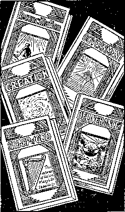
RUTHERFORD’S FIRST BOOKS
Each of its eleven chapters is followed by numerous questions (often several to a paragraph), which are so designed as to enable even the humblest reader not only to gather the thought but also to weigh and retain it.
But as a further help in and stimulus to study the Association will send out from its headquarters at set intervals a total of twelve questionnaires to every purchaser of one of the Student’s Edition of “The Harp of God.”
The Student’s Edition is printed from the same plates as the library edition previously announced. The margins are merely smaller and the paper thinner, so that the book can be carried with convenience in the pocket or handbag, and spare minutes on train or street-car utilized to advantage. The book is well bound in cloth.
The price of the volume, 68c postpaid, includes the course of twelve lessons. For Sunday School teachers, for leaders of Bible Classes, and for all students of the Bible this course will be found of highest value. nn
These twelve lessons were also mailed out from the local classes or congregations. The brothers who worked from door to door offered the entire course along with the book and then would mail out the individual questionnaires each week. An average class might handle 400 to 500 cards weekly in this service. It was carried on for a number of years.
The Harp of God proved to be an extremely popular book. It was the first break away from the seven volumes of Studies in the Scriptures. In the course of years other books were added to this series, including Deliverance, appearing in 1926, the book Creation in 1927, and Reconciliation and Government in 1928. In 1927 the Society released the first in the Yearbook series that has continued up to the present time. Now, using its own facilities, the Society was able to produce books and distribute them for 25 cents each as opposed to the price of 50 to 75 cents that had been required prior to this time. This acceptance of 25 cents was in effect for many years. It was in 1919 that the Society decided to make reprints of all the Watch Towers printed during the forty-year period from July, 1879, to June 15, 1919. These were bound in seven volumes and enabled those new in the truth to receive this valuable reference material at one third the original subscription rate.oo
mm W 1921, p. 351. nn The Golden Age, Jan. 4, 1922, back cover.
KEEPING ABREAST OF INCREASING LIGHT
tom: You mentioned earlier that some took the view that Pastor Russell could have no successor and that some opposed the writing of The Finished Mystery. How did they feel now about this flood of new books by Judge Rutherford?
John: Only a few objected. By far the majority of the brothers recognized the great value and timeliness in these new publications being released. As we’ve mentioned, though, there are always a few who want to live in the past and who fail to maintain the progressive attitude necessary to stay in the light of present truth. Jehovah’s work is always advancing and, in these formative years from 1919 to 1922 particularly, the brothers were being prepared for a work that would require all the spiritual strength they could acquire. This meant new spiritual food fitted to the times and to the needs of the public as well.
Even Brother Russell recognized such needs in past times. Notice what he said in the July 15,1906, issue of the Watch Tower.
Some who have The Three Worlds or the old edition of Day Dawn would perhaps like to know my present opinion of them—whether I still think them profitable books to loan to truth-seekers. To this I reply, Certainly not; because the very immature views of God’s truth therein presented fall far short of what we now see to be God’s wonderful plan. . . . The Lord has taught me that it is a responsible matter to be a teacher, even to the extent of circulating a book or a paper. Even Food for Thinking Christians (now also out of print), I no longer commend because it is less systematic and therefore less clear than later publications. pp.
So it is, while the basic truths themselves have never changed in the Society’s viewpoint and understanding, the scripture has been fulfilled that the light would shine brighter and brighter in a progression toward the perfect day.Q Those who have kept abreast have continued to be strengthened daily for the progressive work of preaching this good news of the Kingdom.
In 1920 in the July 1 issue of The Watch Tower, after quoting Matthew 24:14 in regard to the world-wide preaching of the gospel of the Kingdom, the leading article “Gospel of the Kingdom” points out:
It will be noted he does not say the gospel that has been preached to the meek throughout the entire Gospel age shall be preached. What gospel then could he mean? The gospel means good news. The good news here is concerning the end of the old order of things and the establishment of Messiah’s kingdom. . . .
It will be observed that in the order named this message must be delivered between the time of the great world war and the time of the “great tribulation” mentioned by the Master in Matthew 24:21, 22. . . . Therefore it seems that now is the time for the Church to proclaim far and wide in Christendom this good news.
This stirring call to action appearing under the subheading “Work for All” then introduced the “Millions Campaign,” which was to have such stirring results during these preparatory years, 1919 to 1922. Not only were the brothers now fortified with strengthening new spiritual food in the restoration of true worship, but they were also energetically occupied in the serious business of Kingdom witnessing. These preliminary steps fortified and equipped them for the highly significant campaign due to begin in 1922.rr
oo W 1919, p. 258. pp W 1906, p. 236. qq Proverbs 4:18. rr W 1920, pp. 199, 200; W 1946, p. 235.
Published Against
the Rulers
-^-^ois: Tonight, John, you were going to tell us about the vigorous campaign that began in 1922. Was this similar to the “Millions Campaign” or the distribution of the “ZG”?
John: It centered particularly around
seven international assemblies, although there was a variety of other activities that added interest and importance to this period. During the seven years 1922-1928 the Kingdom announcement went forward and God’s judgments were pronounced.a For the second time at Cedar Point, Ohio, an international convention was held, September 5-13, 1922. On this second occasion also, Jehovah’s active force upon his organized people authorized and fortified them in fulfilling their responsible mission.b
Excitement ran high from the first day, with keen anticipation particularly for the session scheduled to be held on Friday, which had been designated in advance as “The Day.” It proved to be well named. To add to the interest, large banners around the grounds had carried the letters “A D V,” and everyone was trying to guess what they meant.
Truly a feast of stimulating new truths was spread before Jehovah’s people on this occasion. Emphasizing the theme of the Kingdom, Brother Rutherford delivered a historic lecture on the subject: “The Kingdom.” He said:
Why has the King come? To set up [God’s] kingdom and reign as King. But he had a work to do before his reign began, and that is a preparatory work. Since there are to be associated with him in his reign his body members, these must be gathered together and prepared for the beginning of the reign. . . .
The Lord foreknew, of course, that Satan would not peaceably yield the kingdoms of earth. He knew that there would be a great conflict, and hence he must prepare for that conflict. . . . The gentile times ended . . . 1914, and immediately followed the World War; and since that day there has been upon earth distress of nations, with perplexity. It has been a day of increasing darkness and blackness and suffering. The physical facts, then, clearly show that the day of preparation was from 1874 forward; . . . that the day of preparation ended in 1914; and that in 1918, or thereabouts, the Lord came to his temple. This coming to the temple was for judgment, because judgment must first begin at the house of God. (1 Peter 4:17) The judgment would be upon the true church and also the nominal system. . . .
Prior to 1878 the nominal church had grown mighty in the earth. In 1878 God’s favor was withdrawn from the nominal systems. From that time on Brother Russell and the brethren who supported him went throughout the land . . . endeavoring to turn the hearts of Christendom back to a childlike faith in God. The nominal church heeded not. In 1914 these systems were boasting of their power and influence and said: “We are rich and have need of nothing." When the World War began in 1914, nominal Christendom raised its voice in favor of the war. . . .
a Light, Book One (1930), pp. 102-107: Light, Book Two (1930), pp. 19-67. b W 1922, pp. 323-352.
101
The great storm of the World War blew itself out; and for a time the fighting ceased, and the nations in silence assembled in an attempt to prevent another outbreak. Would not now nominal Christendom, her nobles, her ministers, her mighty men, learn a lesson from the war and its effects as indicated by fulfilled prophecy, showing that the Lord is present and that his kingdom is at hand? They failed to learn such lesson. They were drunk with power and riches gained during the war. . . .
In January, 1919, before the League of Nations was completely born, the Federal Council of Churches boldly issued the following blasphemous statement: . . c
Judge Rutherford then quoted from the statement we read earlier, wherein these clergymen had hailed the League as the “political expression of the Kingdom of God on earth. ”d He continued:
Thus they denied the coming of the Lord and his kingdom to bless mankind, and openly allied themselves with the Devil’s scheme, and then blasphemously attempted to offer this before the Lord. . . .
Who will go for the Lord Jesus and the Lord Jehovah? Who now, having their lips purged, will voluntarily carry the message? . . .
The Prophet of the Lord answers: “Bring forth the blind people that have eyes, and the deaf that have ears. Let all the nations be gathered together, and let the peoples be assembled: Who among them can declare this, and show us former things? Let them bring forth their witnesses, that they may be justified; or let them hear, and say, It is truth. Ye are my witnesses, saith the Lord [Jehovah], and my servant whom I have chosen; that ye may know and believe me, and understand that I am he: before me there was no God formed, neither shall there be after me. I, even I, am the Lord; and beside me there is no savior. I have declared, and have saved, and I have showed, when there was no strange god among you; therefore ye are my witnesses, saith the Lord [Jehovah], that I am God.”—Isaiah 43:8-12.
Thus we see that those of the temple class are clearly designated as the Lord’s witnesses at this time, to bring a message of consolation to the people, that the Kingdom of heaven is here, and that millions now living will never die. Thus it is seen that God purposes that his name shall be magnified, that the people shall know that he is Lord. Thus we see that God purposes to have a people in the earth in this time of stress, clearly marked as separate and distinct from all others, standing as his witnesses, fearlessly crying out the message: “The kingdom of heaven is at hand!” . . .
Do you believe it? Do you believe that the King of glory is present, and has been since 1874? Do you believe that during that time he has conducted his harvest work? Do you believe that he has had during that time a faithful and wise servant through whom he directed his work and the feeding of the household of faith? Do you believe that the Lord is now in his temple, judging the nations of earth? Do you believe that the King of glory has begun his reign?
Then back to the field, O ye sons of the most high God! Gird on your armor! Be sober, be vigilant, be active, be brave. Be faithful and true witnesses for the Lord. Go forward in the fight until every vestige of Babylon lies desolate. Herald the message far and wide. The world must know that Jehovah is God and that Jesus Christ is King of kings and Lord of lords. This is the day of all days. Behold, the King reigns! You are his publicity agents. Therefore advertise, advertise, advertise, the King and his kingdom.
tom: I guess the letters “A D V” on the banners you spoke of were an abbreviation of “advertise.”
John: That’s right. Something else that aroused interest and helped fix the minds of the brothers on the importance of the message was a large banner, thirty-six feet long, in three colors, that had been made by the Society’s artist. It had been strung above the speaker’s stand and folded in such a way that it could not be read until the psychological moment. When Brother Rutherford concluded his stirring address with the dramatic call to advertise the Kingdom, the strings holding the banner were cut, and it unfolded before the audience to reveal its message: “Advertise the King and Kingdom.” In the middle of the banner was a large picture of Jesus.
Lois: That certainly must have been a thrilling occasion, and I notice that Judge Rutherford placed repeated emphasis on the matter of being witnesses of the Lord.
John: another high point was to come on Sunday. A resolution was enthusiastically adopted at the conclusion of the public talk by the 18,000 in attendance. Later 35 million copies of this stinging indictment were printed and distributed throughout Christendom.1 Here are a few of the points:
c W 1922, pp. 333-335. d Chapter 14, pp. 93, 94. e W 1922, pp. 335-337.
The International Bible Students in convention assembled deem it a duty and privilege to send this message to the nations of earth. . . . Relying upon the Word of God and his providential dealings with mankind through Christ Jesus, we as his witnesses hold and testify as follows, to-wit: . . .
-
4. That Satan, long the god of this world, has deceived the statesmen, financiers and the clergy, by inducing them to believe that by international agreement or other combined efforts they can bring the desire of all nations;
-
5. That all of the world’s present organization constitutes the visible part of Satan’s empire or organization, and that Satan’s empire must now fall before the forward march of the King of glory;
-
6. That all international conferences and all agreements or treaties resulting therefrom, including the League of Nations compact and all like compacts, must fail, because God has decreed it thus;
-
7. That all efforts of the denominational church organizations, their clergy, their leaders and their allies, to save and reestablish the order of things in the earth and to bring peace and prosperity must of necessity fail, because they do not constitute any part of the kingdom of Messiah . . .
Then followed further paragraphs exposing the disloyalty of the clergy for their participation in the war and for their repudiating God’s kingdom in boldly announcing to the world that the League of Nations was that Kingdom, or the political expression of that Kingdom.
These cold, hard truths based squarely on God’s Word and the facts that were evident to all persons were like a destructive wrath from God, bringing spiritual death to Satan’s entire world. These truths indicated that the religious, political and commercial elements of earth’s ruling population, as well as all the prominent leaders of earth and the fresh new hopes they were holding out to the world, were now desolated or burned up. It called attention to the spiritual leprosy from which the clergy of Christendom have been dying ever since their adoption of the League of Nations in 1919 and that all who support these leaders will share in the mental and spiritual discomfort to which Satan’s world was now submitted.
f W 1922, p. 390. g Ibid., p. 324.
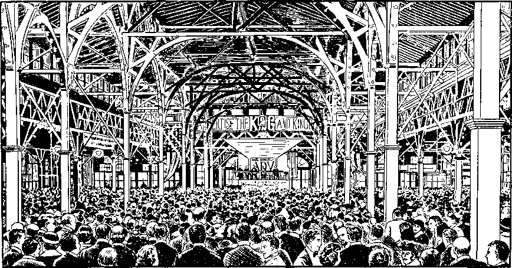
"THE DAY," FRIDAY, SEPTEMBER 8, 1922, CEDAR POINT, OHIO, CONVENTION
JEHOVAH’S SERVANTS RESPOND TO THE KINGDOM CALL
Tom: That must have been a real stimulation to the witness work.
John: It was. As a matter of fact one day of the assembly was set aside especially for group witnessing, and the report shows many car groups seized the opportunity to magnify the name of Jehovah and declare his purpose.
In October the house-to-house work of offering the Bible literature was simplified for the brothers through Society-prepared testimonies, first called a “canvass.” The service sheet of instruction entitled “Bulletin,” which began to appear monthly after October, 1922, encouraged all as “valiant warriors” to memorize these testimonies and thereby unify the Kingdom message world-wide. It became necessary in 1922 for the Society to move its factory to 18 Concord Street.11 The four floors of the six-story building they occupied on these premises enabled the Society to keep up with the increasing demand for literature. As the years went on it took over the other two floors and used the Myrtle Avenue building as a warehouse for paper and literature. In 1922 also, group studies in The Watch Tower were organized for the first time in the congregations. Questions were printed as an aid.1
Then 1923 saw further advancements in the work. Beginning May 1, the first Tuesday of each month was set aside as “service day” to enable class workers to engage with the director appointed by the Society in the field service. At that time they spoke of this as “book selling. ”J This same year the Society began to set aside several Sundays in the year for a “world-wide witness,” to encourage united effort all over the world in holding public meetings simultaneously. All were encouraged to share in advertising the talk “Millions Now Living Will Never Die.”k As a stimulus to this work and to further encourage the brothers, it was arranged that from this time forward congregational prayer meetings, which were being held everWednesday night, were to devote half of the program to relating testimonies in the field work.
THE SECOND MESSAGE MARKS A DIVISION
Now Jehovah, through his organization, had made a clear-cut statement of what the people of the nations could expect. Beginning with that year and with the resounding challenge delivered to the nations, the responsibility of these world leaders would increase steadily. But Jehovah’s witnesses were not waiting on these counterfeit world builders to establish the peace. They knew the leaders would not accept Jehovah’s way. So they looked to their King, Christ Jesus, and continued to follow his direction in their twofold work of pronouncing God’s judgments and of building for the future.
The summer of the year 1923 brought another message of Jehovah’s condemnation. It was at an assembly in Los Angeles, California, August 18-26. The outstanding Scriptural discourse of the Society’s president demonstrated from the Scriptures for the first time that in Jesus’ illustration of the sheep and goats the sheep referred to a group of persons of good will who are now living on earth before Christ’s millennial reign and who are now doing good to Christ’s spiritual brothers. His talk, by the way, was entitled “Sheep and Goats.”1 He said:
h W 1922, p. 98. i Ibid., pp. 146, 159. j W 1923, pp. 104, 105. k Ibid., pp. 24, 50.
Sheep represent all the peoples of the nations, not spirit-begotten but disposed toward righteousness, who mentally acknowledge Jesus Christ as the Lord and who are looking for and hoping for a better time under his reign. Goats represent all that class who claim to be Christians, but who do not acknowledge Christ as the great Redeemer and King of mankind, but claim that the present evil order of things on this earth constitutes Christ’s kingdom.™
Again the climax of the assembly came at the public lecture delivered by Judge Rutherford. Present were 30,000 eager listeners who packed out the Coliseum in Los Angeles and enthusiastically rose to adopt another historic resolution. This led to the second outpouring of God’s anger against Christendom. Here are a few extracts that I have marked for our particular attention. Would you like to read them, Tom?
tom [reading]:
We hold and declare that Jesus Christ organized his church in purity to represent him upon earth; that selfish and ambitious men, loving earthly honor and glory more than the approval of God, have brought in false doctrines destructive of faith in God and his Word; and that as a result there now exists in the various denominational churches two general classes, to wit:
First: Those who pretend to be Christians, but do not believe in the Bible as God’s inspired Word of Truth, . . . and
Second: That great multitude of peoples who claim to be Christians and who hold and believe the fundamental doctrines of Christianity, . . .
The class first above-mentioned are lovers of self, covetous, boasters, unthankful, unholy, fierce, despisers of those who strive to be good, heady, high-minded, having a form of godliness but denying the power thereof, and who slander, misrepresent and persecute those who faithfully try to represent our Lord. . . . While claiming to be representatives of our Lord, they misrepresent him in this, to wit:
(1) They have forsaken the Word of God, denied the fall of man and denied the Lord Jesus, by whose blood man must be redeemed. 4 the Christian religion as a cloak to hide their unrighteousness . . .
-
(3) While posing as the representatives of the Prince of Peace, they have prepared war, openly advised, encouraged, and advocated the same, . . .
-
(4) They have with selfish design invaded the schools, colleges, seminaries and universities with their God-dishonoring doctrines of higher criticism and evolution, . . .
-
(5) They have spurned the true teachings of Jesus and the apostles, have scattered the flock of God, . . .
-
(6) They have hated the light and the bearers of the light . . .
-
(7) They have willfully repudiated and rejected the teachings of Jesus and the apostles concerning the Lord’s second coming and the establishment of God’s kingdom . . .
Furthermore, we hold and declare that of those described in the second class there is a multitude of the peace and order loving ones in the denominational churches, both Catholic and Protestant, . . . that these have hope in the kingdom of our Lord Jesus Christ and its attendant blessings; and that for such the Lord has declared his love.n
Lois: That certainly makes a sharp division between the sheep and the goats, doesn’t it? Was this resolution also distributed?
John: It certainly was. Upward of 45 million were distributed here and abroad in a tract entitled “Proclamation, A Warning to All Christians—World’s Impending Crisis—The Cause—Duty of Christians— The Result.”0 As could be expected, the reaction to this bold declaration of God’s judgment against Christendom for her apostasy was bitter and hostile.
THE CLERGY INDICTED IN 1921 MESSAGE
But this was just the beginning. The following year another devastating blow was delivered. This was released at the third international convention in this series, this time at Columbus, Ohio, in the summer of 1924. This assembly, July 20-28, was attended daily by about 20,000 Witnesses and 35,000 attended the public meeting in the Ohio State University Stadium on the final Sunday. It was reported that some had come from Australia, Switzerland, Germany, Poland, Scandinavia and Great Britain, while many were present from Canada and from every state in the United States. As at the preceding assemblies speech amplification was used.
1W 1943, p. 342; W 1944, p. 10; W 1946, p. 156. mW 1923, p. 309. n Ibid., pp. 326, 327. o Ibid., p. 373.
Lois: Against whom was the resolution at this assembly directed?
John: This was aimed directly at the clergy. After its adoption by the convention attenders, it was incorporated as part of a tract entitled “Ecclesiastics Indicted,” which spoke out in headlines, “Civilization Doomed—Reason for World Crisis—Blessing of the People to Follow—The Seed of Promise Versus the Seed of the Serpent.” Again millions of copies were distributed^ Would you like to read the excerpts I have marked, Lois?
LOIS: [reading]:
We present and charge that Satan formed a conspiracy for the purpose of keeping the peoples in ignorance of God’s provision for blessing them with life, liberty and happiness; and that others, to wit, unfaithful preachers, conscienceless profiteers, and unscrupulous politicians, have entered into said conspiracy, either willingly or unwillingly;
That unfaithful preachers have formed themselves into ecclesiastical systems, . . . and that these have willingly made commercial giants and professional politicians the principal ones of their flocks.
We present and charge that the clergy have yielded to the temptations presented to them by Satan and, contrary to God’s Word, have joined in said conspiracy, and in furtherance thereof have committed the overt acts as follows, to wit:
-
(1) That they have used their spiritual powers, enjoyed by reason of their position, to gratify their own selfish desires by feeding and exalting themselves and failing and refusing to feed or teach the people God’s Word of truth;
-
(2) That loving the glory of this world, and
p W 1924, pp. 259-264. q Ibid.
desiring to shine before men and have the approval of men .. . they have clothed themselves in gaudy apparel, decked themselves with jewels, and have assumed a form of godliness while denying God’s Word and the power thereof;
-
(3) That they have failed and refused to preach to the people the message of Messiah’s kingdom and to point them to the evidences relating to his second coming; and being unwilling to await the Lord’s due time to set up his kingdom . . . have endorsed the League of Nations and declared it to be “the political expression of God’s kingdom on earth”, thereby breaking their allegiance to the Lord Jesus Christ and declaring their allegiance to the devil, the god of evil.u
Those are mighty strong words.
John: indeed they are. Especially in 1924 when the leaders of religion enjoyed far more favor among people than they do today. The resolution continues then to set forth under seven points outstanding doctrines of the Bible as then understood by Jehovah’s witnesses and which, this indictment charged, were not only ignored by the leaders of Christendom but were being opposed and hidden from the people. Here was an indictment exposing the death-dealing quality of false religion and indicating that spiritual death was not only certain for these leaders, but that it had already begun after centuries of apostasy. Therefore their exposure was well deserved.
lois: Could the fourth indictment be any stronger than this resolution?
John: Actually it wasn’t. While it exposed the false rulers of the world, this next proclamation was really, as its title indicated, a “Message of Hope.” Shall we continue on tonight, or do you want to wait till next week?
Lois: If you have the time, we’d like to hear about the others tonight. Let me get you a cup of coffee while you get your notes together.
God’s Kingdom
Exalted, Its Counterfeit
Exposed
John: Now that the responsibility of the world rulers had been so clearly defined by three stinging Resolutions, a call went out to all people of good will to respond to the hope of God’s kingdom established in 1914.
This call was released in 1925, which, by the way, was a critical year to some of Jehovah’s witnesses. The view had been somewhat general among the anointed that the remaining members of the body of Christ would be changed to heavenly glory that year.
MARIA [interrupting]: But even the early disciples of Jesus expected it in their day, didn’t they?
John: That’s true, but they were cautioned against it, just as the brothers were in 1925. The Watch Tower stated:
Christians should not be so deeply concerned about what may transpire during this year that they would fail to joyfully do what the Lord would have them to do.a
The article was significantly entitled “Work for the Anointed,” and as we have seen there was still much work for the anointed.
a W 1925, p. 3.
lois: Did some leave the organization because of it?
John: Yes, there have been siftings all down the line. This was a marked year too in that a flood of new spiritual truths came to Jehovah’s people, truths that further tested the devotion of those in line for the Kingdom. Extremely significant was the sublime revelation that the name of Jehovah must be given its proper place. Then too, in the issue of March 1, 1925, The Watch Tower presented the stirring and dramatic article “Birth of the Nation.” It was published with Revelation 12:5 as a caption text. Would you read that please, Lois?
Lois [reading]: “And she brought forth a man child, who was to rule all nations with a rod of iron: and her child was caught up unto God, and to his throne.” —AV.
TWO ORGANIZATIONS, WAR IN HEAVEN
John: Thank you. This article “Birth of the Nation” has this to say, in part:
What has been the outstanding feature of the divine plan [purpose] during the ages? At once we all answer: The establishment of the kingdom for which Jesus taught us to pray. That means the birth of the new nation, which shall rule and bless all the families of the earth. —Daniel 2:44.
What has been the opposing power that has kept the people in ignorance of this glorious new nation and the blessings it will bring to them? Again the anointed with one accord respond: Satan the devil, and his organization.
These two points are immovably fixed. Now we see from the evidence about us that the real fight is God against the devil, the kingdom of righteousness putting out of possession the kingdom of wickedness and darkness, and establishing the kingdom of truth instead.
The nations spent their anger on each other in the great war and until they were exhausted. Following 1918 the devil’s organization, financial, political and ecclesiastical, particularly the latter, openly repudiated the Lord and his kingdom; and then and there the wrath of God against the nations began to be expressed. From that time forward the battle has gone on in the earth. Prior to that the battle was fought in heaven. . . .
From 1878 to 1914 the anointed ones of Zion were hoping and patiently waiting for the kingdom. Up to that time Zion suffered some pain. Truly it could be said that she being “with child cried, travailing in birth, and pained to be delivered.” “Even we ourselves groan within ourselves, waiting for the adoption, to wit, the redemption of our body.”—Romans 8:23.
In 1918 and 1919 Zion suffered still more, and there may yet still be more sufferings to endure.
Mark how the facts fit the prophecy: “Before she travailed, she brought forth; before her pain came, she was delivered of a man child. Who hath heard such a thing? who hath seen such things? Shall the earth be made to bring forth in one day? or shall a nation be born at once? for as soon as Zion travailed, she brought forth her children.” (Isaiah 66:7, 8) Be it noted here that from 1874 until 1918 there was little, if any, persecution of those of Zion; that beginning with the Jewish year 1918, to wit, the latter part of 1917 our time, the great suffering came upon the anointed ones, Zion. Prior to 1914 she was in pain to be delivered, greatly desiring the kingdom; but the real travail came later. This is the first great wonder appearing in heaven.
Another great wonder or marvelous thing appearing to the anointed ones since 1918 is: “A great red dragon.” Dragon is one of the names which God gives the devil. (Revelation 20:1-3) The name signifies devourer. Red dragon would symbolize a devilish, wicked movement to destroy Zion, or that which Zion will give birth to, the man child, the new nation or new government. It is since 1918 that the anointed ones this side the vail first understand that the dragon symbolizes the devil’s organization acting in the capacity of a devourer, seeking to devour the seed of promise. Satan’s organization, visible and invisible, is the second great wonder or marvel mentioned here. . . .
Michael, who is Christ the Lord, . . . remained silent until his right to rule had come. Satan’s
b W 1925, pp. 67-70.
right had expired in 1914. “And at that time shall Michael stand up, the great prince which standeth for the children of thy people; and there shall be a time of trouble, such as never was since there was a nation even to that same time: and at that time thy people shall be delivered, every one that shall be found written in the book.”—Daniel 12:1.
There the Lord Jesus did stand up, and took his power to reign. It should be expected that the first work he would do would be to throw the devil out of heaven; and then and there the fight began. Revelation 12:7-9 reads:
“And there was war in heaven: Michael and his angels fought against the dragon; and the dragon fought and his angels, and prevailed not; neither was their place found any more in heaven. And the great dragon was cast out, that old serpent, called the Devil, and Satan, which deceiveth the whole world; he was cast out into the earth, and his angels were cast out with him.”
This is no imaginary thing; it was a real fight. The dragon and his official family, members of his invisible government, fought and fought hard; but they lost, and were literally hurled out of heaven. [See Weymouth’s translation.]
It is inconsistent to think that Jesus, the righteous One, would take his power to reign in heaven and permit the devil to remain there; and he did not. Both Satan and his angels, namely, his official family, his invisible jointrulers, were hurled down to the earth. That fight must have begun in 1914. Just how long it lasted the Scriptures do not indicate.^
FURTHER PERSECUTION FORESEEN
The Watch Tower then discusses some specific time features of Revelation 12, citing facts in fulfillment that are summarized in these words;
In 1918, after Satan recovered from his dazed condition, he set about to persecute the members of the Church on earth. In 1918 he caused the imprisonment of the officers of the Society and others. On March 26th, 1919, these were released from prison; and the Church (representing the woman) there fled into the wilderness for 1260 literal days. From March 27th, 1919, to September 8th, 1922, inclusive was exactly 1260 days, at the end of which period the remnant of the Church on earth makes a bold proclamation of its allegiance to the King and his kingdom, and announces its determination to begin and press the fight against Satan’s empire until it is excluded from the earth.
Make no mistake by treating this war as a light or trivial thing. Satan will use every conceivable method to destroy the remnant of Zion. . . .
Let us remember that this is the battle of the Lord against the devil and his forces. Previously he has thrown the devil out of heaven; now the battle is to exclude him and his forces from the earth, that they may deceive the people no more. We need not fear, because we are safe in the hollow of God’s hand.—Isaiah 51:16.
What a blessed privilege to fight the forces of darkness when we know that we can not be hurt if we remain close to the Lord!
The new nation is born. Its glory shall fill the whole earth. The kingdom of heaven is here. The day of deliverance is in sight. Let this good news be heralded to the peoples of earth. Victory is with our King. Faithful now to the end of the war; and we shall forever bask in the sunshine of his love, where there is fulness of joy and pleasure for evermore.o
It had been recognized for some time before this that Satan had an empire or organization, but not until the prophecy of Revelation 12 was here understood did the brothers discern clearly two distinct and opposing organizations. Now too for the first time it was revealed that as a result of the “war in heaven” beginning in 1914 Satan had been cast out of heaven and must confine his operations to the earth till Armageddon. It was learned later that Jehovah purposes to make a great and lasting name for himself at the battle of Armageddon and that this battle is not a fight between capital and labor, as had been previously thought, or by any human parties and nations, but that it is God’s fight against the entire organization of Satan, invisible and visible. It was further recognized that Jehovah’s servants on earth would have no part in that fight, but must warn all persons of good will of its coming that they may find a way of escape.d
“MESSAGE OF HOPE”
It was fitting, therefore, that in this year of great changeover in thinking, a special message should be sent to persons of good will that they might join in praise to the Most High God by associating themselves with Jehovah’s organization and thereby enter into a way destined to bring them everlasting life on earth.
A general assembly was held that year at Indianapolis, Indiana, August 24 to 31, and was attended by 10,000. Brother Rutherford’s public lecture, entitled “A Call to Action,” featured a loving resolution adopted by standing vote of all present and addressed “To All Peoples of Good Will.” The tract in which it was incorporated later was called “Message of Hope.” It was headed “World Reconstruction—A Standard to Guide the Peoples.” About 50 million copies were circulated in Christendom as the months passed.6 Maria, perhaps you will read the portions marked in the resolution.
maria: [reading]:
To All Peoples of Good Will: The International Bible Students in general convention assembled send greetings:
When in the course of human affairs the nations have reached a condition of extremity it is due time that the peoples give consideration to the inducing causes . . . For centuries man has been the victim of oppression, war, famine, sickness, sorrow and death. At all times he has desired peace, prosperity, health, life, liberty and happiness. World powers, science and philosophy, commerce and religion have each in turn offered its respective remedies for man’s relief. . . .
Intrigue, duplicity and trickery are freely resorted to by the political and commercial powers ; science and philosophy are marked by vanity and self-sufficiency; while the religionists, both Catholic and Protestant, are conspicuous by their arrogance, self-conceit, impiety and ungodliness. . . . Catholicism claims and assumes that which justly belongs exclusively to God. . . .
The results are that the peoples are smarting under the oppressive weight of commercial profiteers and their allies, have lost faith in their political leaders, and no longer have respect for the religionists who have misled them. Being guided by the false light of such an ungodly and unholy alliance, the peoples have fallen into darkness. . . .
The causes for his deplorable condition are that man by reason of original sin fell from perfection; and that Satan the enemy of God and all righteousness is the invisible ruler or god of this evil world . . . The greatest crisis of the ages is impending and about to fall; because the old world has ended and Satan’s lease of power is done. Knowing this, and that his time is short, the Devil is trying to overwhelm the peoples with a great flood of false and deceptive doctrines and to turn their minds completely away from Jehovah. . . .
c W 1925, pp. 73, 74. d Ibid., pp. 115-120, 280, 375; W 1930, p. 233; W 1944, p. 10; W 1946, p. 347. e W 1925, p. 358.
Therefore, in the name and in the spirit of the Lord, the Standard of God’s truth and righteousness is lifted here up against the enemy and for the benefit of the peoples, which standard is to wit: That Jehovah is the only true God, the Most High, . . . that the Bible is his revealed Word of Truth; that his beloved Son Christ Jesus is the Redeemer and Deliverer of mankind and, true to his promise, has come to rule and bless the peoples .. . We confidently appeal to the peoples to rally to the divine standard of truth thus lifted up, and thereby learn the way that leads to life and happiness/
My, what a stirring call from the anointed to those destined to live on earth. Not many responded though, did they?
john: No; nor was this the first call that went out. Tom, do either you or Lois know when the earliest call might have been?
tom: Was that during the campaign “Millions Now Living Will Never Die”?
John: yes, it was, and it was first sent out in 1918 even before Jehovah had come to his temple to judge his anointed. It was repeated during the period of restoration of true worship from 1919 to 1922 in the “Millions Campaign.” But few, if any, aside from the anointed, responded to share in these powerful Resolutions against Satan’s world. This emphasizes Jehovah’s direction of his anointed and spirit-begotten witnesses to whom he had specifically given the commission to root out and tear down false doctrine. During this thrilling time the anointed of Jehovah stood alone on earth against Satan’s entire organization.
From 1922 through 1925 Jehovah God helped his people to wait or endure, carrying on his kingdom preaching on a widening scale. This resulted in bringing into the sanctuary many more to be members of this remnant consecrated by Jehovah. This was evident from the increasing attendance at the annual celebrations of the Lord’s evening meal, 32,661 participating in 1922; 42,000 in 1923; 62,696 in 1924; and 90,434 in 1925.f
Evidently, however, there were some who did not “wait” with the Lord’s faithful remnant. In 1926 there was a reported decrease in the attendance on March 27 at the Lord’s evening meal to 89,278.h The year 1925 especially proved to be a year of great trial to many of Jehovah’s people. Some stopped waiting and went with the world.1 Those who did survive this critical time were happy indeed with the blessings Jehovah had in store for them from May, 1926, forward.
END OF THE LEAGUE FORESEEN
Lois: That would be the time of the fifth resolution, no doubt. Where was this convention held?
John: London, England, May 25-31, at the Alexandra Palace. The public meeting though, on Sunday, was held at Royal Albert Hall. The resolution was submitted to the assembly on Friday afternoon following an address by the Society’s president based on Isaiah, chapter 49, and after it the new book entitled “Deliverance” was released to the convention. The Resolution was entitled “A Testimony to the Rulers of the World.” It called attention to the responsibility that was placed upon all rulers because all the evidences of the times bore testimony to the establishment of God’s kingdom in the heavens in 1914. The fifth clause of the resolution declared that despite this conclusive proof— contrary to the Word of God the commercial, political and ecclesiastical rulers attempted to stabilize the world and keep the peoples under control by adopting that makeshift which is called the League of Nations and which was wrongfully and blasphemously hailed as the political expression of God’s kingdom on earth; that the real author and father of the League of Nations compact is Satan the Devil, the god of this evil world, [it] was put forward by him as his last desperate effort to deceive the peoples, turn them away from the true God, and hold them under his own wicked control; that now after seven years of laborious effort on the part of the proponents of that compact to establish peace and prosperity, it is practically conceded that the League of Nations is a complete failure and that its utter collapse is a matter of only a brief space of time . . .k
f W 1925, pp. 310, 311. s W 1922, pp. 200, 201; W 1923, p. 218; W 1924, p. 242; W 1925, p. 263. These total attendance figures earth-wide do not count In groups of less than twenty celebrators of the Lord’s evening meal, excepting some foreign reports, h W 1926, p. 270. i “Your Will Be Done on Earth” (1958), p. 337. j W 1926, pp. 211-217; The Golden Age, Vol. VII, Sept. 8, 1926, pp. 780-791.
tom: That was a serious commitment, especially as early as 1926.
John: yes, it was, but Judge Rutherford was prepared to back it up with Scripture and fact. The following Sunday he gave a masterly address enlarging upon the resolution. “World Powers Are Tottering —The Remedy” was his subject. In introducing it, he said:
I propose to now prove that the trouble of this world has resulted because: (1) the law of Jehovah God has been disregarded and ignored; (2) and that throughout the ages world powers have been organized and succeeded each other, and have now reached a climax in the British Empire; (3) that in all of these world powers fraud has been freely practised in the name of religion and in the name of the Almighty God, and that the clergy have been chiefly used in the practicing of such fraud; (4) that the time has come when Almighty God will make himself known to the people and will express his indignation against all hypocrisy; (5) that to this end Jehovah God has set his anointed King upon his throne of authority and judgment; (6) that the kingdom of God is the complete remedy for all human ills and that there is none other; and (7) that the rulers of the earth should now hear and heed these facts.i
The League of Nations was exposed not only as the “abomination that makes desolate,” but also as the “eighth” king of Revelation 17:11, the British Empire being the seventh “king” and being the main support of the League of Nations. To demonstrate the League’s dependence on Britain’s backing, Brother Rutherford declared: “Let Britain withdraw from it tomorrow, and it will go down immediately.” In conclusion he described the blessings of God’s kingdom.
This spirited public talk and the resolution adopted by the assembly contained the most important news of the times. But, except for the paid full page in Monday’s Daily News™ available to its 800,000 readers, it was ignored by the public press. Reprints of this newspaper page were widely circulated and the resolution in tract form was distributed around the earth to the number of 50 million copies." Many of Britain’s people were to remember for years that London was there branded as the “seat of the beast” of Revelation 16:10, though the testimony went unheeded.
At the very beginning of this year, 1926, in the leading article the Watch Tower issue of January 1 had confronted God’s people with the stirring question, “Who Will Honor Jehovah?” Now, at the London convention on May 29, designated as “Service Day,” hundreds of the conventioners who were on the streets as witnesses of Jehovah placed in the hands of the people 110,000 copies of the new booklet The Standard for the People. The convention report that appeared in The Watch Tower concluded its account of this London witnessing effort with the words:
Nothing like this has ever been known on Service Day at a convention. The friends were bubbling over with enthusiasm. They felt that they had done their best to obey the command of Jehovah: “Ye are my witnesses that I am God.”°
Little did they realize how meaningful these words were to be five years later or how much more real happiness was in store for them.
k W 1926, p. 212. 1 Ibid., p. 213. m Ibid., p. 211. n 1927 Yearbook, p. 44; The Golden Age, Vol. VII, July 28, 1926, pp. 691-695; see also “Your Will Be Done on Earth” (1958), pp. 212, 213. o W 1926, p. 217.
Publishing Freedom for the People Through
Expanded Facilities
John: The year 1927 proved to be a real year of service. Even at the assembly the emphasis throughout was on service. Then too, it was early in that year that Sunday “canvassing” with the literature and placing it on a contribution was begun by congregations in America. I’m going to tell you more about that later, maybe next week.
That year saw our biggest forward step in the printing of Bible literature, for that was the year we began to use our own specially built factory at 117 Adams Street, about a ten-minute walk from Bethel. We moved into the factory in February and by March 1 it was completed. The annual report of the Society’s president as published in the Yearbook of 1928 gives us a picture of this expansion that I would like to read in some detail because it reveals the dedicated spirit of these brothers that were advancing with the organization.
By the way, the 1927 edition, containing the 1926 annual report, was the first Yearbook the Society produced as a hard-bound book. Before this, the annual report of the Society’s president had appeared in The Watch Tower at the close of each year. This
a 1927 Yearbook, pp. 50, 51. b Ibid., p. 48. continued even beyond 1922 when it was printed also in booklet form. Beginning with the 1926 report it was published only in the hard-bound Yearbook and in a much more detailed manner. Included also were Bible texts and comments for each day of the year as well as for the weekly prayer meetings. Now let’s all listen to this invigorating account of the progress being made in the publishing of material for Bible study. It’s taken from the 1928 Yearbook.
In the annual report of 1926 reference was made to the fact that the Society had purchased a lot and had begun the erection of a new factory building.a This building was completed and ready for occupancy February last. The printing and book-binding machinery was moved into it, and work begun. The building covers a lot of ground practically one hundred feet square and is eight stories high, with a freight elevator and a passenger elevator, light and well ventilated, and furnishes a splendid home for the manufacture and shipping of the books and booklets and generally for the work that is carried on in the office in connection therewith. This building and the equipment are a real joy to those who have had a part in the work at headquarters during the past six years.
The progress of the printing and manufacturing of books by the brethren during the past few years is marvelous. When it began, our brethren knew nothing about the use of the machines. They had to learn. As a comparison with what they can now do and what they were able to do at the beginning, the following is an instance: A large press was manufactured in Germany for the Society and shipped to Brooklyn.b It was necessary to bring an expert mechanic from Germany to install the press. This expert together with several helpers took two months in which to put it up and get the machine in operation. Within two years thereafter another press of the same size and make was bought in Germany and shipped to America. It was erected by one brother in the factory, together with others who assisted him; and this was done in three weeks. Many marvel at what the brethren are able to do. Men of the world cannot understand it. It is plain, however, to those who are devoted to the Lord. . . .
The brethren who have served in the erection and operation of the machinery to manufacture books and booklets, have done so willingly with pure hearts devoted to the Lord. The results have been beyond the understanding of worldly men. The results should be and are encouraging to all who are in the Lord’s service. Ordinarily men who operate such machines must serve an apprenticeship under one who knows and learn gradually, but even then they are not prompted by the right spirit to do the best work. When one is thoroughly devoted to the Lord and anxious to learn and trusts in the Lord and then puts forth his best efforts, he may depend upon it that the Lord will help him. The proof of this is shown in the progress of the Society’s plant for the publication of its books and literature.
Brother Martin is the manager of the factory and office at 117 Adams Street, Brooklyn, N. Y. He has been keenly interested in and participated in the progress of the printing works from its inception. In his report to the president of the Society made at the end of the fiscal year he says:
Dear Brother Rutherford: It was a great day when the Lord put it into your heart to let us get out the big edition of Golden Age No. 27 in the Lord’s own factory and with the Lord’s own help. That seems like a long time ago now. Things move so rapidly. And yet it is only seven years. And in those seven years what wonders have been wrought as regards the Lord’s work.
I have forgotten now how many carloads that special edition of four million copies made, but it would have made a fair sized train, and it was all run off on one big rotary press, the one that we still fondly call by the name “the old battleship”. That old battleship has been a good friend to us all.
You will remember that when you first tried to buy a large rotary press, right after the war, the first answer was that there were only a few of them in the country, and that they were all busy, and there was no chance whatever of getting one for many months, longer, indeed, then it seemed right to wait.
But at the right time the Lord opened the door; and the big rotary came into our hands, came into the hands that knew nothing about its construction and operation. But the Lord knows how to quicken the minds of those who have committed their all to him. And in a few days, one might almost say, but surely in a very few weeks, we were able to make that press hum; and it is still humming, doing work that even its makers never knew it could do.
That was a very, very little print shop in which we first put the battleship to work; that is to say, little as compared with our present ideas and present surroundings. The whole floor space available for factory operations was only 3000 square feet, distributed over three floors; and the whole force working on production of printed matter was only twenty brethren. Only the Lord’s help made it possible to do what was done. Previous to that issue every bit of our printing had been done by outside concerns, and we were always dependent on them.
THE DAY OF THE BOOKLETS
It was another great day for the Lord’s work when you wanted to know if it would not be possible to get out our own booklets on the battleship. It did not look at all feasible at the start. For one thing, the makers themselves said it could not be done. It never had been done, and therefore it was useless to try. But we tried, and you know the result.
Back there in 1920, when the boys first started to make booklets on the battleship, the total number of booklets made per day averaged only a thousand, but by the next year it was 3,000 per day, by 1923 it was 6,000 per day, by 1926 it was over 10,000 per day, now it averages 15,000 for every day; and these booklets are all made on the same press. Experience and the Lord’s blessing have accomplished these results.
As you know, all our booklets are wire-stitched. On our first stitcher two workers could stitch 2,000 booklets in a day, or at that rate, when they had them to stitch. Now, with an improved stitcher, which makes two stitches at once instead of separate stitching for each wire, two expert operators will each stitch 25,000 of the booklets in one day
Similar progress is to be noted on the folding of the booklets. The folder, you know, is our own invention, and very efficient. Two brethren on this folder displaced twelve when we folded them by hand. At the outset a capable brother could fold 10,000 booklets a day on the folder; today a brother, disciplined in the use of hands and eyes and muscles, folds 30,000 on the same machine, a remarkable achievement.
THE DAY OF THE BOOKS
Greatest day of all was the day when you wanted to know if there was any good reason why we should not print and bind all our own books. It was a breath-taking idea, because it
meant the opening of a complete typesetting, electroplating, printing and binding plant, with the operation of more than a score of unfamiliar machines, mostly machines we never knew were made, and the necessity of learning more than a dozen trades. But it seemed the best way to meet the war prices charged for books.
You leased the six-story building at 18 Concord Street (with tenants on two floors); and on March 1, 1922, we moved in. You bought for us a complete outfit of typesetting, electroplating, printing and binding machinery, most of it new, some of it second-hand; and we started work.
One of the great printing establishments which had been doing much of our work heard of what we were doing and came, in the person of the president, to visit us. He saw the new equipment and sagely remarked, “Here you are with a first-class printing establishment on your hands, and nobody around the place that knows a thing about what to do with it. In six months the whole thing will be a lot of junk; and you will find out that the people to do your printing are those that have always done it, and make it their business.”
That sounded logical enough, but it left out the Lord; and he has always been with us. When the bindery was started he sent along a brother who has spent his whole life in the binding business. He was of great use at the time he was most needed. With his assistance, and with the Lord’s spirit working through the brethren who were trying to learn, it was not long before we were making books.
At first the book production did not go so fast. Books cannot be rushed, anyway. But during the first year that we did our own binding we managed to bind 2,000 per day, and that seemed like a good many at the time. The next year, we bound 3,000 per day; and in 1924 we jumped to 5,500 per day. In 1926 we were binding 8,000 per day; and now, with our new machinery, we are producing 10,000 to 12,000 books per day.
With our new rotary press, just brought in from Germany, we shall be able to produce 18,000 to 20,000 bound volumes per day, with no very great increase in number of workers.
When our brethren first started to sew books they could sew 500 books a day; now they have become so expert that one of them turns out 3,000 per day. This involves very close coordination of hand and eye, and ceaseless industry from morning until night. This kind of help cannot be obtained outside, at any price. We often have people go through our plant who marvel at the speed with which our brethren work; and, in the case of worldlings, they won-
e 1928 Yearbook, pp. 37-43.
der what must be the fabulous wages which we pay them to get such work done.
THE DAY OF THE FACTORY
The greatest day of all was the day when you bought this property and began to plan the erection of what is now admitted even by its critics, to be one of the finest print-shops in the center of the world’s printing business, namely, New York City. We cannot say less for our new factory. It is everything that a print-shop should be.
The general plan of the building is perfect for our work. The work all moves downward from floor to floor by gravity, and in the natural order: Offices on the top floor, where they belong; typesetting on the next floor, where it logically follows; the plates go down to the next floor, the sixth, where the printing is done; mailing and booklets take up the fifth; binding comes on the fourth; storage, on the third; shipping, on the second; paper stock, garage and power-plant, on the first. Nothing could improve on it.
Despite the tremendous increase in production of books and booklets, our factory force, i.e., the actual book-making force, has increased only from twenty to ninety-five. Improved machinery, greater experience, better factory facilities, have wrought the changes; and over all has been the Lord’s blessing, without which our efforts would have been of little avail.
A feature of our new building which has excited general admiration of printers and others is that, when the building was made, all the electric light and power conduits were laid in the floor, completely out of sight. As additions are made to the machinery from time to time no fresh wiring is necessary. The places where the new machines are to stand were plotted while the building was in process of construction, and all provision made.
The only work the three-ton freight elevator has to perform is to carry the paper stock from the first floor to the pressroom, which is on the sixth floor. From there the paper, in the form of books and booklets, finds its way by gravity from one operation to another until it finally lands on the shipping floor.
The front hallway, on the first floor, and the entire top floor, are most attractively finished, all lending an air of cheeriness to workers and visitors. The fourteen-passenger elevator is ample for all our needs and will empty the building in a few minutes. There is not a better heated, lighted or ventilated building in New York.
Brother Rutherford continues his report:
What is here said about the Brooklyn factory may also be said about the Society’s manufacturing equipment at Magdeburg, Germany,d and Berne, Switzerland.6 Magdeburg is not quite so extensive as Brooklyn, and Switzerland is less, but each one has done splendid work and in proportion to the number employed and the equipment used. The Lord has put his spirit upon the brethren there and blessed their efforts, as will be seen by the reports from these respective countries.?
BETHEL EXPANSION
tom: Didn’t you say you moved into new larger quarters at Bethel too?
John: yes, but at the same address. The Bethel home was rebuilt and enlarged. This was not the first expansion of the headquarters facilities, though. You will remember, in 1909 the Society purchased the old brownstone Beecher home at 124 Columbia Heights for executive offices and housing. Then in October of that year it was necessary to obtain a similar building adjoining this one, at 122 Columbia Heights. The following year, 1910, “more room was needed, and the buildings on Furman Street to the rear and below Columbia Heights were utilized by constructing on their foundations five additional stories, making a nine-story structure.” The seventh floor of this addition to the rear was on the ground floor level of the buildings on Columbia Heights.^
The expansion that began in 1926 is discussed in the 1928 Yearbook:
The number engaged at the Brooklyn headquarters now is nearing two hundred. It became quite clear that the quarters were too small to properly care for those engaged in the work. Hence ways and means were sought to enlarge the premises. In December of 1926 the lot adjoining the property at 124 Columbia Heights was purchased; and early in January the three buildings situated on lots 122, 124 and 126 Columbia Heights were torn away and the erection of a new building begun. That building is now nearing completion. It consists of nine stories, including the sub-basement, and contains approximately 80 rooms. These are in addition to the building that is situated at the rear of these lots. On the top floor of the new building will be located the executive offices of the Society. The official address will continue to be 124 Columbia Heights. The entire premises will be occupied and exclusively used for the Society’s purposes. It is hoped that the more comfortable quarters will enable each one to render more efficient service to the glory of the Lord.h
The following year a more detailed report of the operation of the home was given. Here are some excerpts:
Bethel home . . . now consists of a building of approximately 120 rooms with modern conveniences, making it a suitable place to house those who work in the Lord’s service. The home is not elaborately furnished, of course, but it is pleasing and comfortable. Approximately 180 persons are in the house of the Bethel home. Most of these are young men. The purpose is to maintain a good working force. Two persons occupy each room. Each room is fitted with two single beds so that each one may have a bed to himself. It is also fitted with tables and lights for private study.
There is a general assembly room, where the brethren may congregate for music or conversation. There is a library, where quiet study may be had by those who wish to be there in the evening. There are music rooms used for instruction and practice both in vocal and in instrumental music preparatory for the radio programs. These rooms are used daily for the purposes mentioned. Other rooms are fitted with typewriters for use by the brethren in preparing their discourses for radiocasting and for other occasions of speaking.
The Bethel home has a house manager, whose office is on the first floor below the entrance. He looks after the affairs of the home generally and in detail. Each person entering the home reports to the manager or to his assistant and is .required to register. The purpose of registering is to enable the management to know who is in the house and to what room assigned and why he is there. This is necessary with reference to guests as well as to those who occupy rooms permanently. The work of the manager’s office includes the buying of the food, preparing of the meals, serving the meals, the cleaning of the house, and generally looking after the work that goes on there. There is a well-organized force of assistants working under his direction. Each one, being devoted to the Lord, does his or her part with gladness of heart.
DAILY ROUTINE
Of necessity the Bethel Home must be conducted in an orderly way. No other way would be pleasing to the Lord. To this end, rules are had for the government of the home. A printed copy of the rules is placed in the hands of each one who enters the home for service. He is requested to study these rules and abide by them. At 6:30 o’clock in the morning the rising signal is sounded. Every one is expected to arise immediately, take a bath and prepare for the day. At 7 a.m. the breakfast signal is sounded and the entire family assembles in the dining-room. The morning devotion is led by the president when present. When he is absent, some one else is designated to fill this place.
d 1928 Yearbook, pp. 92-96. e Ibid., pp. 126-128. f Ibid., p. 44. g The Messenger, Aug. 12, 1946, p. 14. h 1928 Yearbook, p. 26.
Morning devotion consists of singing a song previously selected for the day. Then prayer is offered by the one leading or by some one whom he requests. After this the blessing upon the food is asked by some member of the family. Following that, the breakfast meal is served; and during the service the Bible text for the day is read and is freely discussed by the members of the family, particularly those who are elders in the ecclesia. At the conclusion of the discussion and the reading of the comment contained in the Yearbook, the president sums up in a brief statement especially appropriate to the daily text.5 The family then stands while being dismissed with prayer.
At eight o’clock in the morning all members of the family are expected to be diligently performing their respective duties. Some operate the laundry, others mend shoes or press clothes, others prepare the food, others cook it, others wash the dishes, and give attention to the dining-room, while still another company cares for the house. Each one performs his service faithfully as assigned, doing it always as unto the Lord because he is doing service that is necessary to carry on the Lord’s work. All who are admitted to the home and assigned to service first file a questionnaire declaring that they are fully consecrated to the Lord and in full harmony with the work that the Society is doing. The purpose is to have the members of the family in full harmony and working with one object in view, namely, that of proclaiming the gospel of God’s kingdom. It is readily to be seen that no one is expected to remain at the home unless he performs service.
At noon an hour is given for the serving of the food and the discussion of Bible questions. Any one of the family or any one visiting the family may propound a Bible question. The one presiding calls upon various brethren to give their expression on the question and then there is a free and open discussion of the question by any one who may desire to participate therein. At the conclusion the one leading sums up the question by covering the points that have been previously brought forth. A similar course is followed at the evening meal. In fact, at the time of serving each meal in the diningroom there is also a time and occasion for the study of the Bible and the time is so occupied. . . .
On Monday evening there is a study of some leading article in The Watch Tower. The attendance at this meeting is limited to members of the family. This meeting is usually led by the president of the Society J
tom: My, what a full schedule. But it’s no wonder such rapid progress was made in printing methods with so much interest manifested by the workers in their jobs.
NEW CHANNELS OPEN UP
Lois: where was the sixth convention in this international series held?
JOHN: It was scheduled for Toronto, Canada, July 18 to 25, 1927. But before we discuss some features of the assembly itself, there are a few little interesting sidelights I’d like to tell you about.
The convention committee and the mayor of the city of Toronto were both interested in having this convention of the Bible Students held in their city, but it soon became apparent that the public press was opposed and intended to give little publicity to the assembly. An effort was made to change the site of the convention to Detroit, Michigan, where an attractive offer had been held out by a member of the convention bureau of that city. So many obstacles presented themselves, however, that it was finally decided the assembly should be held in Toronto anyway.
The Society then determined to publish its own newspaper to carry details of the convention to those in attendance and to other interested persons. Five issues of this paper called “The Messenger” were printed in the Society’s Branch office and more than 20,000 copies of each issue were distributed, while of the final “souvenir” edition, 100,000 copies were distributed. Because of the attitude of the public press it was decided not to use any paid display advertising. Instead, the Society printed 100,000 handbills, which were enthusiastically distributed on the streets by the brothers.
tom: So you provided your own publicity.
John: Exactly; then there was another sidelight, a significant one in view of later developments. Swelling the attendance of 15,000 at the public meeting the last Sunday was a vast invisible audience tied in by an international radio chain of broadcasting stations. The special network was operated for the occasion by the National Broadcasting Company of the United States. This came about as a result of a clever maneuver on the part of Judge Rutherford when he appeared before the Federal Communications Commission in Washington, D.C., June 14 and 15 with Mr. Aylesworth, president of the National Broadcasting Company.
Brother Rutherford was cross-examining Mr. Aylesworth on testimony that Aylesworth had given regarding certain financiers, statesmen and clergymen that had been given free use of radio time. Rutherford propounded this question to him: “Your purpose is to give to the people by radio the message of the greatest financiers, the most prominent statesmen, and the most renowned clergymen in the world?” Mr. Aylesworth replied that it was. Then Brother Rutherford propounded another question. “If you were convinced that the great God of the universe will shortly put in operation his plan for the blessing of all the families and nations of the earth with peace, prosperity, life, liberty and happiness, would you arrange to broadcast it?” Since it would have been difficult for Mr. Aylesworth to say No, he therefore answered Yes. Then he voluntarily offered to broadcast a lecture by the president of the International Bible Students Association. Of course, Brother Rutherford immediately accepted, with the result that his public lecture was broadcast over fifty-three stations, the largest number in a network to that time.k
THE SIXTH MESSAGE POINTS AWAY FROM CHRISTENDOM
Now we come to the sixth in the series of proclamations. At the Sunday public meeting of this assembly in Toronto, Canada, the convention adopted a resolution addressed “To the Peoples of ‘Christendom,’ ” which was later published in a booklet entitled “Freedom for the Peoples,” the same as the public talk, and distributed during a special campaign the following October.1
LOIS: Was this one also a call to people of good will?
John: yes, it was, and hence it made a strong case against Christendom as holding out a false hope. Here is what the resolution called to the attention of the people of Christendom:
FIRST: That God made of one blood all peoples and nations of men to dwell on the earth, and granted to all peoples equal rights.
SECOND: That the foremost nations of the earth claim to be Christian nations and, taken collectively, they constitute “Christendom” or “organized Christianity,” so called . . .
THIRD: That for centuries the privileges enjoyed by men have been wholly unequal and unfair. The multitudes have produced the wealth of the world, but have been unjustly deprived of the fruits of their labors. That . . . “organized Christianity” has turned a deaf ear to the petitions and entreaties of the people for relief, and now the cries of the oppressed people have entered into the ears of Jehovah God, and his time is at hand to give the peoples deliverance and freedom.
FOURTH: That Jehovah is the only true God, the Friend and Benefactor of the peoples. He has now set his beloved Son Christ Jesus upon his throne and bids all the peoples of earth to hear and to obey him who is earth’s rightful King.
k W 1927, pp. 291-297; The Messenger, July 25, 1927. IW 1927, p. 281. A Total of 1,898,796 booklets were distributed to the peoples of Christendom. 1928 Yearbook, p. 31.
FIFTH: That the kings and rulers of the earth, to wit: those constituting the said unholy alliance, have been duly notified that God has set his King upon his throne and that his kingdom is at hand; but they refuse to understand or to take heed, and they walk on in darkness. Therefore God has decreed and declared that there shall come upon the world a time of tribulation such as never was known and that during that trouble “Christendom” or “organized Christianity,” so-called, and all of Satan’s organization shall be destroyed; and that Christ Jesus, the righteous King, will assume complete authority and control and will bless the peoples of earth.
SIXTH: That it must be now apparent to all thoughtful peoples that relief, comfort and blessings so much desired by them can never come from the unrighteous system of “Christendom” or “organized Christianity,” and that there is no reason to give further support to that hypocritical and oppressive system. In this hour of perplexity Jehovah God bids the peoples to abandon and for ever forsake “Christendom” or “organized Christianity” and to turn completely away from it, because it is the Devil’s organization, and to give it no support whatsoever . . .m
The resolution then concludes with an appeal to the peoples of Christendom to give their heart devotion and allegiance to Jehovah God and to his kingdom, which has now been established as the culmination of hope of thousands of years of both Jews and Christians.
This Resolution, together with the convention’s public lecture in support on “Freedom for the Peoples,” was published in a booklet bearing that same title. This was the first Resolution to be incorporated in a booklet and distributed on a contribution of 5c, in the millions of copies. The new book Creation was also now released. And in the following month of November the Brooklyn Bethel family moved into its new seven-story home at 122-126 Columbia Heights. Another thing, at the Toronto convention Judge Rutherford discussed with the pilgrim brothers the intention of converting them from being merely traveling speakers into traveling supervisors and promoters of field activities by the congregations. Thus in many ways 1927 was a marked year.
Now, Tom, I wonder if you would tell us what you think these Resolutions, so far, were designed to do.
tom: Well, it looks to me as though the leaders of the world were not only being indicted for ignoring Jehovah but they were also being warned of what would happen because they continued to refuse the counsel and warning Jehovah gives. Furthermore, I would say that a call was going out to the peoples of the world to take their stand either for or against God’s kingdom, born in the heavens in 1914.
SATAN HIMSELF EXPOSED IN THE SEVENTH PROCLAMATION
John: Exactly, and the final proclamation in this devastating series was an even stronger appeal to that end of dividing the people. It occurred during the eight-day convention, July 30-August 6, 1928, in Detroit, Michigan, where 12,000 on the final day of the assembly enthusiastically adopted the resounding resolution “Declaration Against Satan and for Jehovah.”n It came as a climax to Brother Rutherford’s stirring discourse “Ruler for the People,” broadcast by a Watch Tower telephone hookup of 106 radio stations and to such faraway points as Australia and New Zealand.
In this talk the Society’s president Scripturally and forcefully laid before his audience the clear-cut issue of universal sovereignty and identified Satan the Devil as man’s greatest foe. In presenting the crushing indictment against this archenemy he declared:
mW 1927, pp. 307, 308. n W 1928, pp. 275-286; The Messenger, Aug. 6, 1928; W 1949, p. 310.
This Declaration is not against the people nor the men in office. It is not against the blind preachers who have misled the people. This Declaration is against the common enemy of all creation. It is against the enemy who for centuries has defamed the name of Jehovah God and brought unbounded sorrow to man. It is against Satan and his allies in darkness and evil. It is made as a testimony to the fact that Satan’s evil rule must shortly end and that Jehovah, for his name’s sake and the salvation of the people, will establish a righteous government that all the nations of earth shall be blessed.o
These vital truths were incorporated as a part of the declaration against Satan, and the sixth vital truth stated:
That because Satan will not surrender his wicked rule over the nations and peoples of the earth, Jehovah of hosts with his anointed executive officer Christ Jesus will press the conflict against Satan and all of his forces of evil, and henceforth our battle-cry shall be, THE SWORD OF JEHOVAH AND OF HIS ANOINTED; that the great battle of Armageddon soon to begin will result in the full restraint of Satan and the complete overthrow of his evil organization, and that Jehovah will establish righteousness in the earth by and through Christ the new ruler and will emancipate mankind from evil and bring everlasting blessings to all the nations of the earth . . .p
Lois: what a climax to this campaign of Resolutions against God’s enemies!
maria: No doubt could remain in the minds of any in this world, whether among the leaders themselves or among the masses of the people, as to where Jehovah’s witnesses stood on this issue of universal sovereignty.
John: This was particularly significant coming at the time that it did. Jehovah’s witnesses did not know then that a New World society was being formed by those associated with the Watch Tower Society. Nevertheless, in the outworking of Jehovah’s divine purpose, the system that Satan had devised and built up over the six thousand years of man’s history was now permanently on its way out and a new system
o W 1928, p. 286. p Ibid., pp. 278, 279. must come in if the earth was to be populated by a people in harmony with God.
The twenty-year period that began in 1919 proved to be one of violent changes and controversial issues. Satan was making an all-out effort to re-establish his forces after his ignominious debasement by the “war in heaven.” The League of Nations, Fascism, Nazism, Communism, all born within a year or two of the New World society, were now growing up together, each according to its own principles and each striving to find its place among the peoples of the world.
In the minds of Jehovah’s witnesses there was no question as to the final outcome. That is because their position is based on the Word of God; and the position they took in this series of bold Resolutions from 1922 to 1928 was one from which there was now no drawing back. The war between the old-world society and the New World society was on, and in the closing judgment proclamation issued by Jehovah through his servants, the mastermind of the unholy alliance in this world’s system of things was himself exposed to open ridicule and shame. Satan could now be viewed by all the world for what he is, a renegade deceiver with nothing but annihilation to offer those foolish enough to fall into his snare.
Already the first decade of this critical period was running out. No one could know, at the time this declaration against Satan and for Jehovah was made, exactly what the next ten years would bring forth. But whether the end would come in that length of time or not, Jehovah’s witnesses were certain that Jehovah would gain the victory. The ten years that followed this series of stinging indictments were packed with action, severe trials, yet heart-cheering results for Jehovah’s faithful witnesses.
His Purpose with
His People
■ —-----------------------------------------------------------
■™““OIS: Last week, John, you told us about the seven judgment proclamations issued by Jehovah’s witnesses from 1922 to 1928. And you showed us how each had been distributed by the millions, either in the form of a tract or a booklet. But you didn’t say whether the same thing was done with the Declaration Against Satan and for Jehovah.
John: goth the lecture and the resolution were published in the booklet The Peoples Friend and subsequently distributed to the number of more than 5,400,000 copies in a number of languages in the United States and abroad.a It struck a mighty blow in defense of true worship.
Another severe blow was delivered to Satan’s world when the books entitled “Reconciliation” and “Government” were released at this assembly in Detroit, Michigan. This latter book exposed the weaknesses of the governments of this world and the reason why Jehovah had pronounced his doom upon them; at the same time it championed Jehovah’s theocratic government as the real hope for the people of the world. So the book served again the twofold purpose of the witness work, the marking of persons for life or for destruction.
Not only had Jehovah restored his people to active praise but he had emboldened them through the restoration of his truth and an understanding of the divine will to stand at the gate of the enemy in defense of true worship. There was no sleepiness or drowsiness now within the ranks of these active warriors. Nor was there any compromise with apostate religion and her dupes. It was a time of action, and Jehovah’s witnesses were eager to offer themselves.
tom: Bid the Society make very extensive use of radio in this campaign they were conducting? You mentioned that at several of the conventions networks of stations were used to broadcast the public talks.
John: In the fight that was to develop following 1928, radio played an important part. The Society had early recognized the possibilities of using this means of public communication, and in 1922 had purchased land on Staten Island in New York city to build their own radio station. Finally, after some difficulty, on February 24, 1924, the president of the Society inaugurated this station by delivering an important lecture entitled “Radio and Divine Prophecy. ”b The station was licensed by the U. S. government as WBBR and operated first on a broadcasting power of 500 watts, which was increased three years later to 1,000 watts.c For more than three decades it broadcast as a noncommercial, educational station throughout the entire New York metropolitan area and the neighboring states of Connecticut and New Jersey. In such a setting it proved to be an international voice, available to almost as many persons of Italian extraction as in the entire city of Rome, Italy, more persons of Irish descent than in the city of Dublin, Ireland, and more Jews than in the entire country of Palestine. Studios were eventually located at the Bethel home, 124 Columbia Heights, Brooklyn, New York, and in 1948, under government authorization, its broadcasting power was increased to 5,000 watts.d
a 1929 Yearbook, p. 65. bW 1924, pp. 82, 358; W 1950, p. 268.
120
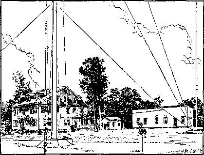
WBBR, STATEN ISLAND, N.Y., 1924
Like their first-century Christian forerunners, Jehovah’s witnesses were eager to take advantage of any new development that would advance Kingdom activity. The early Christians had been quick to see the advantages in the new codex style of manuscript, which consisted of pages in a book similar to modern-day books, and began to use these in preference to the clumsier scrolls that had been in use before that.6 So Jehovah’s witnesses recognized the far-reaching effect of radio and in those days of small numbers used it effectively to reach the largest number of people in the shortest space of time.
maria: You see, in 1924 there were, on an average, only 1,064 Witnesses doing weekly preaching with books and booklets from house to house throughout the United States/ Of course, the Memorial attendance report showed there were 65,105 persons world-wide who had embraced the truth, and, no doubt, most of these performed tract and handbill distribution and incidental witnessing to friends and acquaintances. But the organized house-to-house service was still not extensively carried on. So the radio was a real boon to them in reaching thousands of people simultaneously.
tom: Did you ever operate any other stations besides WBBR?
John: Yes, at one time the Society owned and operated six stations11 and had special contracts with two others for all their allotment of religious program time.1 Of course,
WBBR was the principal station, but WORD in Batavia, Illinois, was used extensively, too.
THE WATCH TOWER NETWORK
tom: Operating WBBR was not your first use of radio, though, was it?
John: Radio was still in its infancy
in 1924, but Judge Rutherford made use of it for the first time two years before WBBR began to operate. He broadcast a public talk from the Metropolitan Opera House in Philadelphia, Pennsylvania, April 16, 1922. A detailed account appeared in the Philadelphia Record the following day. It stated, in part:
c W 1948, p. 207. d Ibid, e Christianity Goes to Press, by Edgar J. Goodspeed (1940), pp. 75-77. t W 1948, p. 208. g W 1924, p. 290. i WBBR, Staten Island, New York; WORD, Batavia, Illinois (beginning 1924); CHUC, Saskatoon, Saskatchewan, Canada (beginning 1925); CKCY, Toronto, Ontario; CHCY, Edmonton. Alberta; CFYC, Vancouver, B. C.; (the last three named Canadian stations beginning 1926). W 1925, p. 357: 1927 Yearbook, p. 41: 1928 Yearbook, pp. 32, 33. In 1928 the Canadian government refused to renew the broadcasting licenses for the four Canadian stations. 1929 Yearbook, p. 35. i KFWM, Oakland, California (beginning 1925); WHK, Cleveland, Ohio (beginning 1926). W 1925, p. 357; 1927 Yearbook, p. 41.
Radio Tells the World Millennium is Coming. Judge Rutherford’s Lecture Broadcasted from Metropolitan Opera House. Talks into Transmitter. Message is Carried Over Miles of Bell Telephone Wires to . . . the radio telephone broadcasting station of WGL on North Broad Street!
From this small beginning, radio broadcasting of the Kingdom message spread through North and South America, Europe, Africa and Australia. In the decade following 1927, hundreds of broadcasting stations were utilized. First, as we have mentioned, was the special N. B. C. commercial network for the international convention at Toronto, Ontario, Canada, in 1927. The Watch Tower or “White” network, organized in 1928 especially to serve the Detroit, Michigan, convention, was so successful that the Society decided to operate a weekly network of thirty stations throughout Canada and the United States. A one-hour program was arranged for, emanating from the studios of Watch Tower station WBBR at New York city’s Staten Island. Every Sunday “The Watch Tower Hour” included a lecture by Judge Rutherford, with introductory and concluding music furnished by an orchestra maintained by the Society. The first of these live broadcasts was November 18, 1928, and they continued through 193O.k
While these broadcasts served as an excellent advertisement of the Kingdom and enabled the brothers throughout the United States and much of Canada to encourage the public to tune in for this weekly Watch Tower Hour, they occupied much of the time of Brother Rutherford, making it impossible for him to travel or organize conventions in various parts of the earth. Eventually, in 1931, it was decided that the Society would present transcribed programs instead, and 250 stations were organized to present Brother Rutherford’s transcribed lectures. These could be made at Brother Rutherford’s convenience and also could be played at the convenience of the radio stations, making it possible to add more and more stations to these facilities being harnessed for Kingdom work.1
These fifteen-minute talks proved to be extremely successful. Besides the convenience, they were much cheaper, since it was not necessary for the Society to rent telephone lines to tie together a large number of radio stations simultaneously. In 1932 this radio service, called the “wax chain,” had expanded to 340 stations, and by 1933 there were 408 stations being used by the Society, carrying the good news to all six continents.111
This year, 1933, proved to be the peak year for this service, and the report shows 23,783 separate Bible talks broadcast. Mostly, these were fifteen-minute electrical transcriptions.11 Then the trouble really began in earnest.
Tom: those lectures were anything like the ones delivered at the seven conventions from 1922 to 1928, I’m not surprised if you ran into difficulty.
John: Well, of course, there was real comfort in these lectures for persons of good will, but, at the same time, Judge Rutherford was convinced that this was the time for apostate religion to be thoroughly exposed so that those who really loved God might come out and take their stand before Armageddon brought an end to these false systems.
Lois: well, I know my mother used to take exception to the lectures but I can remember when my Dad used to argue with her about it she would just walk away.
j W 1922, p. 180. k 1930 Yearbook, pp. 34-39. 1 1932 Yearbook, pp. 47-51. m In this manner, through the activity of the headquarters staff primarily, persons were reached in Argentina, Australia, Canada, China, Cuba, France, South Africa, Estonia, Uruguay, Alaska, Hawaii, the Philippines and the United States, n 1934 Yearbook, pp. 60-64.
He got so he could quote the Bible very well and he never did go to church. It used to make Mother mad because she could never answer his arguments.
REGULAR SUNDAY WITNESSING PRESENTS A NEW ISSUE
John: There is much more to be said about our radio campaign, but first there are a few other important factors you should be aware of. In America early in 1927 the work of distributing bound books and booklets for a contribution from house to house began to be carried on every Sunday.0 There was immediate response to this new work.p Here is a letter to illustrate:
Dear Brother Rutherford: On June the 12th [1927] I had the privilege of serving the friends at Plainfield, N. J. Instead of having a public meeting it was thought well to have a one hour canvassing drive.
Right after the morning talk, thirty-five of the friends engaged in the field work, with the result that 240 books were sold. That was a real one hour “public meeting”.
The friends came back filled with joy, feeling that each one had a part in the public witness. The testimonies were fine. They all sent their love, and expressed their desire to give a real witness in the earth that Jehovah is God. Your brother in Christ, N. H. Knorr.o
The writer of this letter became the third president of the Society in 1942. It was on this issue of Sunday preaching that the first serious difficulty was raised by those opposed to the good news.
In 1928 at South Amboy, New Jersey, some of Jehovah’s witnesses were arrested for preaching the good news on Sunday. This firing of the opening gun against the Witnesses opened a decade-long fight often referred to by the Witnesses as “the battle of New Jersey.” But soon the front line of opposition spread until it extended to almost every part of the earth.
Lois: Was it the Protestant groups that gave you the most opposition, the same as before?
John: They were still opposed, but the strongest force of opposition came from certain Catholic Action groups. Most of these had their origin in the early 1920’s and were composed of certain semireligious movements organized and pushed in various countries to spread the social and political ideologies of the Roman Catholic Hierarchy. Several of these had become active in the United States by 1921. But when these arrests began in 1928 and continued on into 1929, the witnesses of Jehovah took a radical stand with reference to obedience to human governments that oppose God’s commands.
tom: That’s something I’ve been wanting to ask you about. You have just told us of the positive position Jehovah’s witnesses take in regard to the governments being a part of Satan’s world. How did you then explain your exact relationship to them? I was talking to a man the other day who criticized Jehovah’s witnesses because they won’t vote, yet they take advantage of the courts in trying their cases. How about that?
John: Well, of course, a man doesn’t have to be a registered voter to take a case to court. You don’t even have to be a citizen to do that. The courts are supported primarily by taxes, and Jehovah’s witnesses pay their taxes. So they are entitled to every benefit of legal protection the government provides, including fire and police protection, which are also maintained by taxes.
The apostles of old took advantage of every safeguard erected by the Roman government to protect individual rights, and Paul even carried his own case to the supreme court of Rome, to Caesar himself. He recognized that he was primarily a citizen of heaven, yet he still stood on his rights as a Roman citizen and he did so, not for personal gain, but in order to advance the interests of God’s work. That is why Jehovah’s witnesses took that same position then. Paul spoke of his prison bonds while in Rome and of the brothers sharing with him “in the defending and legally establishing of the good news.”1-
o W 1927, pp. 63, 233. p 1929 Yearbook, p. 58. q W 1927, p. 233.
Lois: what was the doctrinal position you said that Jehovah’s witnesses took during this period?
JOHN: It was based on Romans 13:1, a text often misused and misinterpreted by those who want to make people subject to the authority of human governments when acting against God’s commandments.
LOIS: I remember that. It’s the one about being in subjection to the higher powers. Let me read it. “Let every soul be in subjection to the superior authorities, for there is no authority except by God; the existing authorities stand placed in their relative positions by God.”
tom: That certainly sounds like men should be subject to these governments of the world.
SUBJECTION TO “HIGHER POWERS”
JOHN: Well, in june) 1929( The Watch Tower carried an article entitled “The Higher Powers,” which appeared in two parts.® A few quotations will demonstrate how that point was taken by the Witnesses at that crucial time.
Many comments have been written of and concerning the thirteenth chapter of Romans to the effect that the Gentile powers or governments of this world are the “powers that be” and that such governments derive their powers from Jehovah God. At once it is seen that the foundation is laid for the doctrine of “the divine right of kings,” for the reason that the argument is that whatever power a nation has and exercises, that power is ordained of God, and that therefore the child of God must be obedient to that power.1
Numerous examples are then given of certain acts permitted by law in one country but denied as illegal in others. The question is then asked, Has God delegated a different power or authority to these different nations? In summarizing this particular phase of the argument the article states:
The fundamental law of the United States declares that a man may exercise his religion in any manner he may choose. Contrary to this fundamental law, some of the states enact a law that the gospel cannot be preached in certain places or under certain conditions, and arrest and punish those who attempt thus to preach it. In Russia the law is that one can not preach the gospel at all without a permit from the government. God’s commandment to his sons, which commandment is given through Jesus Christ, is that his gospel shall be preached in all the nations as a witness. (Matt. 24:14) Shall the child of God be obedient to the law of the United States or of Russia, or to the law of God? Is it possible that God has delegated to these various nations the right and authority to make and enforce laws that are inconsistent with and in derogation of his own expressed will?
Is it not therefore clear that there has been a decidedly improper application of the words of the Apostle Paul when applied to the governments of this world? When he says, “The powers that be are ordained of God,” does he have any reference whatsoever to the Gentile nations of the earth? Is it not more reasonable that he directs his words exclusively to the powers possessed and exercised in God’s organization, and not to those that are exercised in Satan’s organization?6
Many scriptures and further argument followed to substantiate this conclusion.
This new view of the Christian’s relationship to the governments of this world put new fire of zeal into Jehovah’s witnesses, enabling them to stand their ground against the onslaught of court battles that came on them like a flood.v This bold stand of Jehovah’s witnesses in subjection to Jehovah God and Christ Jesus as the true “superior authorities” merely hardened their opposers against the enthroned King of God’s government.
p. 163. u Ibid., p. 164. v See also W 1943, p. 298; W 1946,
tom: About all I remember of the year 1929 is that it was the year of the big stock-market crash that started one of the world’s worst depressions.
John: That’s right, it did. Modern historians attribute more social changes to the results of the depression than one might think possible. It’s true this country had seen other major financial depressions, but this one really rocked the security of the nation and demonstrated too how shaky are the foundations on which this world’s society is built. Many students of modern history attribute much of the success of Hitler’s political rise to the effects of the depression that reached into Europe. His attempt to gain power in his “beer hall putsch” at Munich in 1923 failed. But, by Catholic intrigue and maneuvering through von Papen and assisted by the insecurity of the people during this trying time, he became Chancellor of Germany on January 30, 1933. Early in July of that year von Papen, now Vice-Chancellor, negotiated in Hitler’s behalf a concordat with Pope Pius XI. Cardinal Pacelli, who six years later was crowned as Pope Pius XII, signed for the Vatican.w In 1929 Mussolini had completed a program of co-operation with the Vatican through the Lateran Treaty signed by the Roman Catholic Church and his new totalitarian government.*
All these evidences of deterioration among the nations merely strengthened the position of Jehovah’s witnesses to serve God as Ruler rather than men and added weight to the message they were delivering to the distraught peoples of the world. Further contrast came during 1931 and 1932 with two events of great importance in the development of the New World society; the first, at another convention of Jehovah’s witnesses at Columbus, Ohio, July 24-30, 1931. At this assembly 15,000 active associates adopted the resolution embracing the new name “Jehovah’s witnesses.”
THE “NEW NAME” IDENTIFIES
A RESPONSIBILITY
Lois: you weren’t called Jehovah’s witnesses until 1931? What were you called before that?
John: jn our own publications we had identified ourselves by such designations as “the Church,” “the Lord’s anointed,” “members of Christ’s body,” “the brethren,” or simply “Christians,” “footstep followers of Jesus,” “Bible Students,” “International Bible Students,”y and the like. Of course, such expressions are Scriptural. But outsiders generally called us “Millennial Dawn people” and reproachful names, such as “Russellites.” The resolution adopted in 1931 called attention to the confusion that this condition resulted in and, presenting the true position of these Christians, declared:
That . . . the Watch Tower Bible &Tract Society and the International Bible Students Association and the Peoples Pulpit Association are merely names of corporations, which corporations we as a company of Christian people hold, control and use to carry on our work in obedience to God’s commandments, yet none of these names properly attach to or apply to us as a body of Christians who follow in the footsteps of our Lord and Master, Jesus Christ; that we are students of the Bible, but, as a body of Christians forming an Association, we decline to assume or to be called by the name “Bible Students” or similar names as a means of identification of our proper position before the Lord; we refuse to bear or to be called by the name of any man;
That, having been bought with the precious blood of Jesus Christ our Lord and Redeemer, justified and begotten by Jehovah God and called to his kingdom, we unhesitatingly declare our entire allegiance and devotion to Jehovah God and his kingdom; that we are servants of Jehovah God commissioned to do a work in his name, and, in obedience to his commandment, to deliver the testimony of Jesus Christ, and to make known to the people that Jehovah is the true and almighty God; therefore we joyfully embrace and take the name which the mouth of the Lord God has named, and we desire to be known as and called by the name, to wit, “Jehovah’s witnesses.”—Isa. 43:10-12; 62:2; Rev. 12:17.z
w The Vatican in World Politics (1949: Manhattan), pp. 165-170; Columbia Encyclopedia, p. 1240. x Columbia Encyclopedia, 1942, pp. 608, 1227; W 1941, p. 280; Encyclopedia Americana, Vol. VII, p. 464. y W 1910, pp. 119, 120.
Needless to say, this resolution was joyously acclaimed by all present, and, in the weeks that followed, at fifty extension conventions in all parts of the earth Jehovah’s people met to add their joyful voices in the embracing of this remarkable new name.
In order that the leaders of the world might be duly notified of this proper designation for Jehovah’s people this resolution and the text of Brother Rutherford’s convention address were published in the booklet The Kingdom the Hope of the World. Included was another resolution adopted at the convention, again indicting Christendom for her apostasy and for treating Jehovah’s counsel with contempt, and proclaiming: “The hope of the world is God’s kingdom, and there is no other hope.”33 During October of that year a campaign was conducted by the congregations to visit every clergyman, politician and big businessman in their territories with this booklet. In just the United States and Canada 132,066 booklets were put out in this way.bb Within the next few months this booklet reached the homes of five million others in all parts of the earth.cc
Lois: That must have been one of your biggest campaigns to the rulers and to the people.
John: It was. It would have to be, because now Jehovah’s witnesses were on record as true servants of God, dedicated to the bearing of testimony to his name and kingdom. This set them apart from all persons of the world, since no others recognized the enthroned King of heaven placed there by Jehovah’s power for the purpose of subduing all nations. Further, the context of this name in the Scriptures emphasized even more the issue existing on earth between the true servants of God and those who professed to serve him. Maria, would you read Isaiah 43:8-10.
MARIA [reading]: “Bring forth the blind people, though eyes themselves exist, and the deaf ones, though they have ears. Let the nations all be collected together at one place, and let national groups be gathered together. Who is there among them that can tell this? Or can they cause us to hear even the first things? Let them furnish their witnesses, that they may be declared righteous, or let them hear and say: ‘It is the truth!’ ‘You are my witnesses,’ is the utterance of Jehovah, ‘even my servant whom I have chosen, in order that you may know and have faith in me, and that you may understand that I am the same one. Before me there was no God formed, and after me there continued to be none.’ ”
Lois: That doesn’t leave much doubt as to what Jehovah requires of those who carry his name, does it?
John: It does not. Furthermore, dur
ing this period of time following the birth of the New World society and the birth of these opposing societies, now gathering strength on their own part, it was to become a contest of authorities, with the facts presented to the people so that all could determine clearly in their own minds which society occupied the rightful position in Jehovah’s purpose. But before the contest was due to begin in earnest, Jehovah had another purpose to perform in his organization in order to restore the sanctuary to its proper place.
JEHOVAH’S SANCTUARY IS CLEANSED
You will recall that at the 1926 convention of Jehovah’s witnesses at London,
z 1932 Yearbook, pp. 22, 23. aa W 1931, p. 278. bb The booklet was delivered to 88,009 clergymen, 19,103 politicians, 22,869 businessmen and 2,085 military leaders. Bulletin, Jan. 1, 1932. cc 1932 Yearbook, p. 36.
England, it had been declared that the League of Nations was the “beast” of Revelation 17:11 and that it was certain to suffer destruction at God’s hands.dd This testimony was served upon the nations of the world. But did they heed this testimony? No, they did not abandon this abomination that makes desolate and turn to support God’s kingdom as the real hope for the world. By ignoring this proclamation from God through his servants on earth they were turning their back on God’s provision for their salvation, were actually transgressing against God. It was revealed to Daniel by Jehovah’s angel that they would do so.ee
Then the prophecy was made that 2,300 days afterward, God’s sanctuary would be victorious. This was to mark the cleaning out from God’s congregation those called “elective elders,” who had been elected to an office in democratic fashion. The Watch Tower in its issues of August 15 and September 1, 1932, contained the two-part article entitled “Jehovah’s Organization.” This exposed the system of “elective elders” as being an unclean practice of this world and not according to the principles of the great Theocrat, who rules his sanctuary from the top down. The article concluded by presenting a resolution with a recommendation that it be adopted by all congregations. Note this excerpt:
Therefore be it resolved that there is no Scriptural authority for the existence of the elective office of elders in the church and that henceforth we will not elect any person to the office of elder; that all of the anointed of God are elders, as that term is defined by the Scriptures, and all are servants of the Most High.
That, to the end that our service may be orderly, we will select certain ones of our company to perform specific service that may be necessary, including the following, to wit: A service director who shall be nominated by us and confirmed by the Society’s executive or manager, and which service director shall be a member of the service committee of this company.
This resolution was adopted by congregations of Jehovah’s witnesses throughout the earth, and the announcement in the Watch Tower magazine of October 15,1932, at the exact end of the time period mentioned in Daniel’s prophecy, was the official notification made by Jehovah through his visible channel of communication that his sanctuary had been cleansed and had been restored to its rightful state as regards the elimination of this democratic procedure in electing elders.ff
tom: I can see how would unify your organization. It looks to me like a significant forward step.
John: of course, Jehovah’s organization was not by this act fully restored to theocratic operation as had existed in the days of the apostles. This was still ahead as the final shaping of the New World society in vindication of Jehovah’s purpose toward his people. Yet now, more than ever before, Jehovah’s hand of approval could be seen upon the channel he had singled out decades before. From the time Pastor Russell had stood firm for true worship in 1878, throughout all the years The Watch Tower and its publishers had continued the war against compromise and apostasy, the evidence had been mounting to identify this body of Christians as having a singular place in the divine purpose. Snatched from the jaws of death in 1919 and inspired to a bold and fearless stand against Satan and for Jehovah, their position in the divine purpose was now secured for them in being unmistakably identified with the name of the Supreme Sovereign. Thus fortified, this society of Christian men and women was now prepared to embark upon a campaign the like of which had not been known by Jehovah’s servants up to this time.
dd See Chapter 16, p. 111. ee Daniel 8:13, 14. ff “Your Will Be Done on Earth” (1958), pp. 210-217.
The Fight for Liberty
to Preach
Tom: John, you said the radio work of the Watch Tower Society played an important part in the struggle that developed during the 1930’s between Jehovah’s witnesses and the prominent religious organizations. But what about the work in Fascist and Nazi countries?
JOHN: As might be expected, the preaching of the good news in Catholic-dominated Italy and Germany was bitterly opposed. Little headway had been made in Italy since 1891, when Pastor Russell made his first European tour. In 1903 the Society arranged to have the Watch Tower translated and published there in Pinerolo, Turin, but it was distributed through a news agency. In 1905 the book The Divine Plan of the Ages was translated into Italian with the result that, in 1912, when Pastor Russell made another visit to Italy, he found a congregation of about forty meeting in a village near Pinerolo.
The work developed slowly, though. Five pioneers came in from Switzerland during the early years of Fascism, 1922 to 1927, but a national convention in Pinerolo in 1925 brought out only seventy delegates from Italy and Italian Switzerland. A. H. Macmillan from the Society’s headquarters attended that convention. Then, in 1932, the Society opened a depot and began one of its most active campaigns. The booklet The Kingdom the Hope of the World was printed locally and twenty capable workers from Switzerland distributed 200,000 copies in twenty cities of northern Italy. Then the trouble started. Cardinal Schuster’s newspaper, L’Italia, came out with a strong denunciation of this activity, with the result that the Fascist police made a sudden move against the Society’s office and closed it in July, 1932. The police admitted that the clergy were responsible for the harsh measures against this Bible-booklet distribution, compelling the Fascist government to act on the Concordat signed with the Catholic Church in 1929.
The work in Germany, however, was showing considerably more progress. In fact, during a special campaign in 1933, there were almost as manWitnesses in the field in that country as there were in the United States. This campaign was one of a number the Society conducted during the 1930’s that were called “International Testimony Periods” and that were of eight days’ duration. It was a concerted effort of the Witnesses all over the world to demonstrate their unity by spending every day that week giving the same testimony and distributing the same publication.
According to the reports for this particular campaign called “The Remnant’s Thanksgiving Period,” April 8-16, there were 58,804 workers in seventy-seven countries.*1 A booklet called “Crisis” was being distributed. There were 20,719 workers that reported in the United States, and in Germany there were 19,268 Witnesses in the field. The German Witnesses distributed 2,271,630 pieces of literature, whereas in the United States 877,194 pieces were placed.
Catholic opposition, though, was strong and by the time of this campaign Hitler had come into power. But it had not prevented an intensive witness from being given. During the years 1931 and 1932 there was reported a total of 2,335 legal actions pending against the German Witnesses;b yet, in the period from 1919 to 1933, they had distributed into the hands of the German people 48,000,000 books and booklets and 77,000,000 copies of the German edition of The Golden Ages
Now, in the United States, the real fight over the use of the air waves began. Pope Pius XI had declared 1933 a “holy year” that was to usher in an era of Catholic action designed to bring peace to the nations. Simultaneously, in the spring of 1933, American Catholics organized a nationwide campaign under the leadership of their cardinals, bishops and priests to “drive Rutherford off the air.” Their plan was to intimidate owners of radio stations under threat of boycott into refusing to sign contracts with the Witnesses for the use of their broadcast facilities for their recorded lectures. You will recall that by this time the international broadcast voice of the Society was being heard through 408 radio stations.d In spite of the threats of boycott, however, the radio work continued to expand and the Society poured millions of dollars into this feature of the service, although these years, 1929-1935, found America in the grip of its great depression.®
At this same time another feature of service was being developed aside from the radio broadcasts. Public and private gatherings were held where 331-rpm transcription recordings were played. These were the same as those used for the radio broadcasts. During 1933, 4,646 such meetings were held, with a total attendance of 240,434 persons. Furthermore, sound cars were used to cruise along the streets and play the recorded public lectures wherever people might hear.® In the years that followed, this sound service proved an effective means of reaching the public.
Then, following as a climax upon “The Remnant’s Thanksgiving Period” in April, on the 23d of the month, the Society’s president broadcast his historic radio lecture entitled “Effect of Holy Year on Peace and Prosperity.” This talk laid bare the vain hopes set out by the Roman Catholic Hierarchy for the people, branding them as a counterfeit of the peace and prosperity promised through the Kingdom of God. The talk was broadcast over fifty-five radio stations.
Two months later, on June 25, arrangements were made to broadcast the fullhour lecture by transcription over 158 stations. In preparation for it and to stir up the radio audience, five million invitations in leaflet form were distributed in the house-to-house work.11 The reaction was immediate, bitter and intense on the part of the Hierarchy. Catholic intimidation increased and certain radio managers fell victim, refusing to carry any further Watch Tower programs.
THE WORK CLOSES DOWN IN GERMANY
Meanwhile, in Germany an overt act of the government induced Judge Rutherford to make a hurried trip to that country. With Hitler now dictator there since January, 1933, opposition had become severe. Early in April the police occupied the Society’s large factory and Bethel home in Magdeburg, Germany, closed it up and put a seal on the Society’s printing machines. Originally the Society’s Branch was established in Barmen-Elberfeld in the Rhineland area. But in 1926 it was decided to move the headquarters nearer to Berlin. Magdeburg, a large city about fifty miles northwest of Berlin, was chosen as the site and the Society had built new, spacious, well-designed buildings for an excellent printing plant and for the Bethel family. Hitler’s government closed the Branch because of a charge that had been made that the Society was subversive and, pending an investigation, no work could be done by the brothers. Since no real evidence could be found, the Society was allowed to resume control of its property on April 28. This allowed the brothers at the headquarters office to compile the special report for the April testimony that they had carried forward with such great zeal.
a Bulletin, July 1, 1933. b 1933 Yearbook, pp. 122, 123. c 1934 Yearbook, p. 145. d Ibid., pp. 60-64. e Ibid., p. 63. f Ibid., pp. 64-66. g Bulletin, Aug., 1935. h 1934 Yearbook, pp. 60-64; The Golden Age, Vol. XIV, 1933, pp. 530536; Special Bulletin, June, 1933.
Judge Rutherford had been watching the German situation closely and was well acquainted with its development as it affected the witness work. With this serious turn of events he lost no time in going to Germany, accompanied by N. H. Knorr, to see what could be done. On June 25, the same date scheduled for the rebroadcast over 158 radio stations of the lecture “Effect of the Holy Year on Peace and Prosperity” in the United States, a convention was called in Berlin. There a prepared Declaration of Facts was presented to the 7,000 in attendance in protest against the Hitler government for their highhanded interference with the witness work of the Society, and was unanimously adopted. The declaration was mailed to every high officer of the government from the president down to the members of the council, and 2,500,000 copies were given public distribution. Retaliation came quickly. Three days later, on June 28, for the second time the Society’s property was seized and occupied, and by government decree its printing plant was closed. There were 180 members of the Bethel family that were compelled to leave the premises.
A clue to the real cause of the trouble is found in the following statement that was written by a Catholic priest in Berlin and published in The German Way under date of May 29,1938:
There is now one country on earth where the so-called “Earnest Bible Students” [Jehovah’s witnesses] are forbidden. That is Germany! The dissolution of the sect which, at that time, had found a strong foothold in Germany, did not come to pass under Bruning [chancellor of the German Reich before Hitler], although the Catholic Church in Bruning’s time urged to have this done. However, the “most Catholic chancellor” Bruning answered that he had no law which authorized him to dissolve the sect of the “Earnest Bible Students”.
When Adolph Hitler had come to power and the German Episcopate repeated their request, Hitler said: “These so-called ‘Earnest Bible Students’ are trouble-makers; they disturb the harmonious life among the Germans; I consider them quacks; I do not tolerate that the German Catholics be besmirched in such a manner by this American ‘Judge’ Rutherford; I dissolve the ‘Earnest Bible Students’ in Germany; their property I dedicate to the peoples’ welfare; I will have all their literature confiscated.” Bravo!
However, the American Episcopate, even Cardinal Mundelein, is not able to have Rutherford’s books, in which the Catholic Church is slandered, to be taken away from the bookmarket in the United States!!
Seizing the Society’s property at Magdeburg was a flagrant violation of international property rights, because title was held by our American corporation. In an effort to regain control of the property, an appeal was made to the United States Department of State urging a protest against this highhanded action of the German government. As a result of the negotiations that ensued between the State Department of the United States and Germany, the German government entered an order for the release of all the Society’s property and turned it back into the possession of the brothers there.
i Face the Facts (1938), pp. 60, 61.
However, the order that had been entered in June at the time that the property was seized had also placed a ban on the preaching activities of the Society. This was not lifted, and in the period from June to October the government police had seized and carried away and burned over $25,000 worth of literature, books, booklets, Bibles and other materials belonging to the Society. Meetings of the Witnesses were forbidden and distribution of the literature halted? This did not stop the energetic German Witnesses, however. Accepting their God-given commission above all orders of men, they continued to press the battle to the gate of the enemy throughout this entire period of Nazi control in Germany. They were mightily strengthened to faithfulness by the publication of the leading article, “Fear Them Not,” in the Watchtower issue of November 1, 1933.
MAINTAINING THE OFFENSIVE
tom : were there any other developments as a result of Rutherford’s talk exposing the Holy Year?
John: The opposition was rapidly becoming more heated, especially in New Jersey. In July, 1933, while the results of Hitler’s seizure of our German property were still in the balance, the Society’s president decided to hold a public meeting in Plainfield, New Jersey, because of the persecution being experienced there. Ruth-
j 1934 Yearbook, pp. 127-146. k Ibid., p. 66. eRutherford’s subject “Intolerance” was well-chosen for the occasion because of the Catholic strong-armed tactics that were revealed at that assembly.k
Plainfield was the very center of the Catholic battleground in New Jersey. For this special program, Sunday, July 30, the Society engaged the two largest theaters in Plainfield and arranged for wire communication between them. One theater, as the key hall, was to provide facilities for a chain broadcast in which WBBR would participate as well. Many of those used as attendants or ushers at this meeting were members of the headquarters staff at Brooklyn, and this incident has been related:
Each of these attendants had been given a package, well-wrapped and sealed, with instructions not to open it until told to do so later. Shortly before Judge Rutherford arrived, more than fifty police swept in to “guard” both theaters. They noticed that every attendant had one of these packages of uniform size. This made them extremely nervous. One officer asked an attendant what he had in his package. The brother responded that he didn’t know. Not believing him, the officer ordered him to open it. But the attendant refused, explaining the instructions he had received with the package. The officer went back to report. He returned with his superior who took charge and, himself, commanded the brother to open the package, which he again refused to do. Thereupon, the senior officer told his subordinate to pick it up. He did so, obviously shaking as he carried the package away. They opened it and found that it contained not a bomb, as they had supposed, but only fifty harmless copies of the Golden Age magazine containing the lecture that Brother Rutherford was going to deliver that afternoon. The police rewrapped the package and returned it sheepishly to the attendant.
When Brother Rutherford arrived at the theater, to his amazement he found that the police had taken over the entrance to the stage at the front of the theater auditorium. As he walked onto the platform he saw that the police had two machine guns behind the drapes. These machine guns were so placed that he would be forced to speak directly in front of them, as they were trained on him and the audience. This made Judge Rutherford extremely angry, but his vigorous protests failed to budge the police or their guns. They said they had been tipped off that there was going to be a riot and they were there to maintain order. But, regardless of what their intentions might have been, the talk was delivered without incident and enthusiastically received as was the booklet Intolerance later published and widely distributed.
Arrests continued. At first statistics were not kept, but in 1933 throughout the United States 268 arrests were reported;
in 1934 there were 340; in 1935, 478, and in 1936, 1,149.1 Kingdom publishers were brought into the courts and charged with selling without a license, disturbing the peace, peddling without a permit, violating Sunday sabbath laws, and they were being classed as solicitors or itinerant merchants rather than as ministers of the gospel.111 The main defense against this action, of course, was in the courts of the land, and since Jehovah’s witnesses were within their constitutional rights in practicing their religion by calling at the homes of the people, they fought this battle to a finish.
To assist the brothers throughout the country, the Society established a legal department at headquarters to render aid and counsel in this all-out fight that was clearly developing. Judge Rutherford, of course, was a lawyer himself, but as president of the Society he was far too busy with his administrative work, his writing and his travels to care for these details himself. Therefore brothers who were lawyers were made members of the headquarters staff in order to operate this new department.
An “Order of Trial” was printed by the Society under Brother Rutherford’s able legal direction.11 This was provided to encourage and instruct the brothers in handling their own cases in court. Furthermore, acquainting them with their legal rights as it did, it encouraged them to continue in the work and enabled them to hold their own with those community officials who tried to bluff them out of their legal rights. A regular campaign of training was given the brothers at the service meetings, where mock trials were conducted. The brothers would take turns defending themselves on this issue of freedom of worship. This proved to be a real defense, especially for those who lived in the battle areas. But it also provided an answer for others when questioned by hostile or curious persons encountered in the field.
tom: ft Would seem to me that if local officials were hostile enough to arrest you or to stand with machine guns in front of a public meeting as they did in Plainfield, New Jersey, you wouldn’t have much of a chance in the lower courts. Most community feeling runs high on issues like this. At least that’s been my experience.
john : That’s true. Most of the cases tried in the lower courts were lost by Jehovah’s witnesses. But from the outset the policy of appeal was adopted. Had we not done so, such a mass of adverse judgments would have accumulated against us that it would have been impossible for us to carry on our work at all. The battle in the courts was long and hard fought. But the position Jehovah’s witnesses had taken in their stand on freedom of worship was vindicated and has secured benefits for persons of all religions up to this present time. There’s much more to tell about this legal battle in the courts and we’ll get back to it later.
11934 Yearbook, p. 53; 1935 Yearbook, p. 31; 1936 Yearbook p. 65; 1937 Yearbook, p. 51. m 1930 Yearbook, pp. 25-30. n 1933 Yearbook, pp. 39-49.
OVERCOMING THE ENEMY BY FORCE OF NUMBERS
About this same time another means was found of getting the preaching done in these “hot spots.” In 1933 volunteers were called for from all over the United States to report for special preaching duty. Here again Jehovah’s witnesses went on the offensive. The 12,600 publishers who volunteered for this special service were always ready upon quick call to engage in house-to-house field service on special missions in areas where trouble had arisen or was anticipated. Special tactics of witnessing had to be employed in these instances because these servants were sent into territory where some of their brothers had been arrested in the regular field work. When a report of such arrests came to Brooklyn Bethel headquarters, a call to action was flashed to the nearest division to proceed to the trouble spot and perform their special work.
Throughout the United States there were seventy-eight divisions.0 Each division was composed of ten to two hundred automo
o 1934 Yearbook, pp. 46, 49; Bulletin, May, 1933. biles with five workers in each. Whenever an emergency call was sent out for a division to respond for duty, all the car groups would report at a specially announced rendezvous, generally in the country some miles away from the town where the trouble had arisen. Here detailed instructions were given and individual car groups were assigned. The territory was so divided among these groups that when they were in action the entire “trouble spot” would be covered within a period of thirty to sixty minutes.
If an individual was arrested he was immediately to call a previously designated number when he arrived at the police station. Attorneys were on hand with bail money to come to the rescue of such ones. While the witness work was proceeding a committee of brothers would also call on the police to provide them with a list of all the Witnesses that were visiting the people in their community that morning. By the time this visit was over the witness work was generally almost finished.
This arrangement made it possible to overwhelm the opposers by sheer numbers so that, no matter how “hot” the territory was, practically every house was reached with the good news of the Kingdom. The only thing the enemy could do in such circumstances was to arrest twenty or thirty or whatever the local jail would hold and let the rest go. If the local congregation tried to do this, half of them would be put in jail, where they would have to spend from ten to ninety days, and the field would be left practically untouched. It was by using all these means available to them that the Witnesses were able to keep the work going in the face of the intense opposition being encountered on all sides.
The Battle of the Air Waves
Opens a New Field
JOHN: The strategic location of radio station WBBR made possible another means of thwarting the illegal methods of the local public officials in the New Jersey area. The Society had at Bethel a group of trained radio performers known as the “Kings Theater.” These brothers were trained in radio speaking and radio drama. In the course of the years they performed Bible dramas such as Ruth, Esther, Joseph and his brothers and so on, all of which were well received by the radio audience. But now an opportunity presented itself to use the “Kings Theater” in the battle of New Jersey to assist the brothers who had been arrested.a An example is this announcement that appeared in the Special Bulletin for June, 1933.
The drama “Defying Jehovah”, which is an actual reproduction of the trial of our brethren at Summit, N. J., recently, will be broadcast from the studios of WBBR on Sunday morning, June 18.
This is the way it was done. When court trials were held where the publishers were being tried for their preaching work in connection with the divisional campaign, some of Jehovah’s witnesses who were
a Special Bulletin, June, 1933. stenographers would attend the session and record the proceedings. Many of the local judges were Catholic. Furthermore, they did not hesitate to manifest their prejudice publicly in the courtroom. Many would use uncouth language and even betray their clerical allies, who were trying to remain in the background and hide their part in pressing the opposition against the Witnesses. All these spicy courtroom exchanges went down in stenographic shorthand notes. Then other brothers, trained performers, would also attend these same trials to study the voice, the intonations of the judge and the boastful words of the prosecuting attorney with the object of reenacting as accurately as possible the entire procedure.
Within a few days after the trial the Kings Theater would be able to duplicate over the air these courtroom scenes with remarkable realism down to the finest detail. Then, to accomplish the desired result, a special effort was made to notify all the New Jersey people to listen at the designated time. It proved to be an amazing revelation to the public as to the corruption of justice that was going on in these Catholic towns of New Jersey. In time the judges became frightened with this floodlight of publicity turned upon them and upon the misguided police and prosecutors, and many became more astute as to their handling of Jehovah’s witnesses.
THREE PETITIONS PROTEST DISCRIMINATION
Another legal avenue used by the Witnesses during this battle of the air waves was the right of petition. Late in 1933 and into 1934 Jehovah’s witnesses circulated a nationwide petition addressed to the United States congress in Washington, D.C., vigorously protesting against Catholic intimidation and threats to freedom of speech over the radio. Weeks of house-to-house work were utilized in presenting the facts to the public and inviting them to sign the petition. As a result 2,416,141 signatures were obtained.
Then arrangements were made to file the petition in Washington on January 24, 1934. The petition sheets were so sorted into congressional districts that they could be turned over to the proper congressman or senator. Signatures were available for each of the 435 representatives or congressmen and the ninety-six senators in the two houses of Congress. These packages were cartoned and carried by one of the Society’s large trucks to Washington, D.C., where certain brothers from miles around had been invited to assemble to share in the distribution. It had been observed that most congressmen would come to their offices between ten and eleven to pick up their mail before going to the chambers for the house session, which began at noon. Each brother was assigned to one congressman or senator, advised what to say in introducing the petition and given a letter to accompany the names in his package. In their various car groups the brothers proceeded to the two buildings housing the offices of the senators and representatives of Congress. The entire petition was delivered within a few minutes’ time.
A bill had been introduced in Congress to prevent discrimination, boycott and other threatening methods to hinder the broadcasting of programs in the public interest. Through its spokesman, the Society submitted a volume of evidence in support of the petition. Congress then enacted a law placing all electrical communications under one new administrative agency, the Federal Communications Commission. This commission was to be comprised of nine men, and all radio facilities in the United States would be under the supervision of this commission. It was to set forth the rules and regulations to guide radio broadcasting and to maintain freedom of worship over the air.b
tom: That should have eased the situation considerably for you.
John: didn’t. On October 4, 1934,
the Watch Tower Society’s president appeared personally before this new federal agency in Washington, D.C., and presented a report of the facts, demonstrating by specific instances and statistics that Catholic pressure had seriously impaired our freedom of worship and the use of the radio in public interests. The interference of the Roman Catholic Hierarchy with the broadcasting service of Jehovah’s witnesses had resulted in a considerable drop in the number of broadcasts for 1934 over the previous year. In 1934 we had 20,743 lectures. But that was 3,040 less than our peak year of 1933.c
Although the facts were clear, after the testimony was taken by the Federal Communications Commission they did little about it. Another petition was circulated throughout the United States in a continued fight for freedom of speech and worship. This petition was also addressed to Congress and presented in January, 1935, with 2,284,128 signatures.3 The decline in total number of broadcasts continued into 1935, with a decrease of 2,536 lectures over the previous year’s decline. That meant only 18,287 broadcasts were possible that year.
b Bulletin, Mar., 1934. c 1935 Yearbook, pp. 36, 37. d 1936 Yearbook, pp. 56, 57.
Next, it was decided that a nationwide convention be called to assemble at Washington, D.C., May 30 to June 3, 1935. Brother Rutherford was scheduled to speak before the Federal Communications Commission on June 3, so in addition to providing needed spiritual food for the brothers, it seemed advisable to arrange this convention to back up Brother Rutherford’s appearance. More than 20,000 persons gathered to hear his timely public talk entitled “Government,” delivered Sunday, June 2, at the Washington Auditorium and broadcast simultaneously throughout the world.
The day following, as scheduled, the Society’s president filed a brief before the Federal Communications Commission pressing for further action in defense of free speech,® but both the second petition presented to Congress and the brief filed by the Society’s president went unheeded.
Early in 1936 a letter was written by a Roman Catholic priest to a radio station in Philadelphia, Pennsylvania. Although it was no different in tone and purpose from hundreds of others being sent to radio stations all over the United States, this particular letter set off a chain of events that makes it worthy of our attention. Here is what it said:
Church of Our Lady of the Blessed Sacrament Holy Ghost Fathers, 714 N. Broad Street, Philadelphia. 15th Feb. 1936. Station W. I. P., Gimbel Bros., Philada, Dear Sirs
As a Catholic Clergyman &as Pastor of the above named Church, in the name of my Parishioners, I protest Against you allowing broadcasting facilities to Judge Rutherford next Sunday afternoon at 3 P M or any other time. My reasons for this protest are that Judge Rutherford attacks the Catholic Church misrepresents her teachings &foments religious hatred &bigotry. If the said Judge is allowed to speak next Sunday afternoon please take My name off your Charge Account list, because I will never spend another Penny in Gimbel Bros store. The surprise is that you would allow such a broadcast &thereby expose a very large per cent of your customers to open insult &ridicule. Hoping you will take the necessary action. Respectfully (Rev.) James J Clarke Pastor.f
Dennis Cardinal Dougherty, of Philadelphia, the highest authority of the Roman Catholic Church in Philadelphia, endorsed the letter of Mr. Clarke and threatened to take “further and more drastic action” if the broadcasting of Judge Rutherford was permitted to continue. Here is the letter from his office to that effect.
CHANCERY OFFICE, 1712 Summer Street, Philadelphia. April 30, 1936. TO WHOM IT MAY CONCERN:
Having consulted His Eminence, Dennis Cardinal Dougherty, regarding the letter of Rev. James J. Clarke, C. S. Sp., rector of the Church of Our Lady of the Blessed Sacrament, Philadelphia, he informed me that this letter has his entire approval, and that His Eminence joins in the protest; moreover, that he will take further and more drastic action if the broadcasting of Judge Rutherford is permitted to continue.
Dennis Cardinal Dougherty is Archbishop of Philadelphia. [Signed] J. Carroll McCormick, CHANCELLOR Archdiocese of Philadelphia.h:
This threat of boycott and “further and more drastic action” hit Gimbel Brothers on an exposed tender spot, the financial nerve, and in spite of the preceding ten years’ pleasant relations with Jehovah’s witnesses they succumbed to the bullying tactics and ceased broadcasting the Bible lectures of Judge Rutherford.
As a countermove, publicizing this highhanded action, Judge Rutherford and the Watch Tower Bible &Tract Society filed two separate law suits, each for $100,000, against Dennis Dougherty, James J. Clarke, J. Carroll McCormick, and the Roman Catholic Archdiocese of Philadelphia, a corporation.11 Also, a petition was circulated by Jehovah’s witnesses in the Philadelphia area requesting station WIP to arrange a debate between Judge Rutherford and some high Roman Catholic official. The petition, signed by 119,558 persons, was delivered to Gimbel Brothers on September 1, 1936, but was not acted upon. The five Philadelphia newspapers even refused to print a paid advertisement, which read:
e 1936 Yearbook, pp. 56, 57. f The Golden Age, Vol. XVII, July 15, 1936, p. 649, reproduction of original, g Ibid., p. 648, reproduction of original, h The Golden Age, Vol. XVlf, Aug. 26, 1936, pp. 739-752.
Public Notice is hereby given to and on behalf of the 119,558 signers that Benedict Gimbel, Jr., president of the Pennsylvania Broadcasting Company (Station WIP), was presented yesterday afternoon by attorneys for the Watch Tower Bible &Tract Society with the following PETITION To Gimbel’s Radio Station WIP, Philadelphia:
The undersigned consistent listeners to your radio station have, for a long while, very much enjoyed your broadcasts, including speeches by Judge Rutherford in Watch Tower programs. Now we are informed that WIP no longer broadcasts those speeches because of strenuous protests to you by high officials of the Roman Catholic church, and that those protests are based upon the claim that Judge Rutherford “misrepresents the teachings of that church and foments religious hatred and bigotry.”
Many believe that Judge Rutherford does not misrepresent the teachings of any organization. Since Catholic officials object, why not have their teachings discussed publicly and broadcast bWIP, Judge Rutherford taking one side, and some high Roman Catholic official the opposite side? Surely there is nothing of greater public interest, convenience and necessity than the teachings of the Bible concerning the salvation of humanity, as that is the question involved. Every fair-minded person is vitally interested. We therefore petition you and hope you will arrange for such public discussion and also continue Judge Rutherford’s broadcasts on WIP.i
Now, following up this Philadelphia petition, in a national campaign, a third and final attempt was called for in protest of the inactivity of the government in this vital matter of free speech. This petition read:
PETITION To the FEDERAL COMMUNICATIONS COMMISSION and RADIO STATIONS of the UNITED STATES
The Roman Catholic Press protests the broadcasting of Judge Rutherford’s speeches by radio for the reason, as claimed, that he misrepresents the teachings of the Catholic Church concerning the salvation of the human race. Millions of persons claim that he does not misrepresent such teachings, and many others are confused as to what is the truth.
Because salvation of mankind is of such vital importance to all persons and because we want to hear the truth of the matter reasonably and fairly discussed, and for the general interest, convenience and necessity of the people, and because a petition similar to this has been addressed to Radio Station WIP Philadelphia;
WE THEREFORE earnestly request that a public debate of this matter be arranged, one side to be taken by a high official of the Roman Catholic Church, and the opposite side by Judge Rutherford; and we petition the FEDERAL COMMUNICATIONS COMMISSION to exercise its authority, under Section 303, paragraph (g), of the Communications Act of 1934, to “encourage the larger and more effective use of radio in the public interest” in this behalf; and we petition the radio stations of the United States to broadcast such debate on a nationwide chain, including the station in the vicinity of the signers respectively.)
In due course this third national petition was gathered and 2,630,001 signers thereby voiced their protest against the un-American action of intimidation and boycott that had been so widespread. The petition was filed with the Federal Communications Commission at Washington, D.C., November 2, 1936.k Again the request of millions of signers went unheeded.7
THE RECORDED MESSAGE IN FACE-TO-FACE PREACHING lois: It's surprising, with all that pressure and curtailing of the radio broadcasts, that the work itself didn’t decrease.
tom: But you remember, Lois, John said the Society was already using transcription recordings in public and private gatherings to circumvent this unlawful opposition of the Roman Catholic Hierarchy.
John: I'm glad you you remembered that, because the work the Society had begun with transcription records proved even more effective than the radio work had been. In fact, the results in 1933 had been so promising that the Society began to produce another service the following year. That was the use of the portable phonograph and short recorded Bible lectures. These were 78-rpm discs with 4½-minute talks.™
At first this medium was confined almost altogether to calling back where interest had been found. But eventually it became widely used in the house-to-house preaching as well because of its effectiveness. With the phonograph an effective face-to-face presentation of the message was attained. This enabled the Witnesses to answer the questions that were in the minds of the people, and since the recordings were made at headquarters, a uniform message was being delivered all over the world.
Then it was, in 1937, that a historic decision was made in the use of radio communication. Jehovah’s witnesses voluntarily withdrew from the air.
This did not mean that the Society had lost the battle of the air waves, because a number of times that year, and on later occasions, the president of the Society delivered important public lectures over a network of radio stations. In fact, at a convention of Jehovah’s witnesses that year in Columbus, Ohio, on Saturday, September 18, Brother Rutherford’s address to an audience of 25,000 people was broadcast throughout the United States, practically all of North America, England, continental Europe and Australia. The following day his public lecture on the subject “Safety” was carried throughout the United States through the facilities of 135 radio stations.
Then, September 26, the Sunday follow-
m 1935 Yearbook, p. 39. n 1938 Yearbook, p. 48. ing that last day of the convention, the Society’s president broadcast a lecture entitled “Worshiping God” over a nationwide network of 125 radio stations. It was in this address that Brother Rutherford set forth the reasons why the Society was voluntarily withdrawing from the air. His official report of the year’s activity details these reasons, citing the ten-year program of boycott and intimidation that had been practiced by the Roman Catholic Hierarchy and other clergymen and drawing attention to the fact—
that because of such wrongful methods used petitions were filed by millions of American citizens with Congress and with the Federal Radio Commission, demanding that action be taken to prohibit interference with Watch Tower programs; that nothing whatsoever had been done to cause such persecution and interference to stop, but, on the contrary, the public officials of the United States government, owners of radio stations, and others had conspired and acted together to hinder and prevent the broadcasting of the Kingdom message; that for this reason the radio has up to this time served as a test to owners and operators and to the officials of the government of the United States, and particularly to the clergy, all of whom have shown their opposition to God’s kingdom under Christ; that by this test all of those opponents have identified themselves as the enemies of God and his kingdom, and therefore the radio appears to have fully served God’s purpose in giving warning to the peoples of the nation and in serving to divide the people and force the opponents to declare themselves against God’s kingdom and thus identify themselves as members of the Devil’s organization . . .n
After October 31, 1937, the Society would withdraw from all commercial radio broadcasting contracts. WBBR was to continue in operation and any free time offered voluntarily by radio stations would be accepted as an evidence of good will and would be utilized for the advancement of the Kingdom message. So ended the battle of the air waves.
tom: Did Jehovah’s witnesses concentrate on transcription meetings and use of the phonograph after that?
John: yes. Now their time, their money and their efforts were poured into this new work with the same zeal they had felt for the medium of radio. As a result, the phonograph work began to blossom out and become a potent force in the preaching work. In 1937 there were 10,368,569 persons reported as having heard these recorded lectures either publicly or privately, whereas for 1938 this number had grown to 13,070,426. By 1938, too, there were 430,000 recorded lectures in sixteen languages besides English in use on 19,676 sound machines.0 The Witnesses were becoming well armed in this new phase of the battle in defense of true worship.
tom: I can imagine your enemies would not permit this new activity to go by unnoticed.
John: They certainly did not. There had been embarrassment enough to them in the numbers who had responded to the recorded message of God’s kingdom broadcast over the air waves. Now this same message was going into the homes of the people on the phonograph, enabling those who heard the talks to ask questions of those playing the recordings. In this way truthful Bible answers could be given them. This made it clear that, instead of a retreat, the maneuver of Jehovah’s witnesses in withdrawing from the air was a flank attack that seemed destined to result in even greater embarrassment and loss to their religious opposers. This phonographic voice that had started quietly in 1933 was now producing such thunderous effects that these bitter religious opposers began to realize their radio censorship stranglehold had been frustrated.
Then, on April 26, 1938, in the state of Connecticut, an angry voice of protest was raised. One of Jehovah’s witnesses was arrested with his two minor sons on the charge of disturbing the peace in a Catholic neighborhood by playing the phonograph record “Enemies” in the homes of the people. Carried into the Connecticut courts on the complaint of two Roman Catholics, this brother was convicted. This raised the question not only in Connecticut but throughout the entire country: Would Jehovah’s witnesses be allowed to continue this program of public education by this effective means? This issue was not to be settled for another two yearsp and not until several important developments were to take place in the structure of the New World society.
AN EXPANDED MINISTRY TAKES FORM
Meanwhile, another aspect of the preaching commission was developing. We have already discussed in some detail the service from 1874 to 1914 when a work of gathering Jehovah’s anointed ones was under way. During the “sackcloth” period of witnessing, from 1914 to 1918, this work continued though with diminishing results. Then, when true worship was restored in 1919 and the New World society came into existence, the call still continued to those who would make up the Kingdom company of joint heirs with Christ. Although Jehovah had come to his temple in 1918 and had begun judgment of this anointed class, still others must be brought in, because some were found unworthy and they must be replaced. The evidences show that this continued until especially 1931, when there began a work of gathering those recognized as “other sheep” of the Lord Jesus Christ.
It had been known and taught from the beginning of Pastor Russell’s ministry that, in addition to those who would inherit heavenly life as joint heirs with Christ, mankind in general would be restored to perfect life on earth. But for a long time The Watch Tower had published the view that another group would yet finally come in God’s favor who would also be blessed with spirit life in heaven but on a secondary plane to that of the joint heirs of Christ. These, it was claimed, would form the “great multitude” spoken of in Revelation 7:9, AV. Now at the 1935 convention in Washington, D.C., to which the “Jona-dabs” had specially been invited in the Watchtower notice, Scriptural evidence was produced to prove conclusively that the great multitude of Revelation 7:9 was identical with the Jonadab class or the sheep class of Matthew 25:31-46. It had been recognized as early as 1923 that these sheep were an earthly group who appear in the world’s “time of the end,” and in 1932 that this class of sheep had been prefigured in the prophetic drama of Jehu and Jonadab, wherein King Jehu pictured Christ Jesus and the remnant of his spiritual brothers, whereas Jonadab represented the class of persons of good will associated with Christ in his destruction of apostate religion and who were destined to live on earth after Armageddon. This made it quite clear that the great multitude of Revelation 7:9 could not be a secondary spiritual class at all, but was the “other sheep” of this “time of the end.”3 Needless to say, this realization brought great joy to the thousands of those who were in attendance and greatly simplified Biblical doctrine and teachings.
o 1939 Yearbook, pp. 59, 63, 64, 68. p Cantwell v. Connecticut (1940), 310 U. S. 296.
For 1900 years the Christian congregation had specialized on its heavenly hope. True, the public speaking campaigns and the Photo-Drama of Creation had done much to arouse interest in God’s purpose to restore peaceful conditions to men on the earth, and the campaign “Millions Now Living Will Never Die” from 1918 to 1921 was a step in the direction of reaching this class destined one day to populate the earth. But a gathering of them was not stressed. For that reason The Watch Tower continued to provide spiritual food designed particularly for the remnant. But now, from 1935 forward, a change began to take place. Not only must the spiritual food provided for God’s people be directed to these spirit-begotten ones but it must also now supply nourishment fit to strengthen those whose Scriptural hopes were entirely earthly. No longer were the remnant going into the field looking for just the scattered sheep of Jehovah’s anointed ones. Now these ministers must begin to look for the “other sheep.” They must prepare for bringing to Christ’s fold the many “other sheep” eagerly seeking the divine will and ready to perform whatever was given them to do.
This proved to be a real test to some of those who claimed to be of the anointed remnant. More interested in themselves and their own salvation than they were in the outworking of God’s purposes, they rebelled at this new responsibility placed upon them and some fell by the wayside, as some of the “elective elders” had done. The vast majority of the remnant, however, eagerly accepted this opportunity to manifest their love for Jehovah God and their earthly “neighbors” and took up this expanded preaching commission with the zeal characteristic of God’s servants down through the centuries. But startling as this revelation was, it was nearly ten years before this new campaign was able to make good progress.
o. 1935, pp. 227-236, 243-252; Vindication, Book Three (1932), pp. 77-80; W 1942, p. 374.
Theocratic Order
Comes in
as World War II
Approaches
T---—
Tom: Before you leave tonight, John, will you tell us how the work was progressing in Europe during this time?
John: By the year 1934 the Society was operating branch offices in forty-nine countries on every continent.51 These were in close touch with the Brooklyn headquarters office and the work was developing along the pattern being reported in the United States. But Catholic Fascism was expanding in Europe and bringing increased difficulties to every phase of the work. As we have mentioned, the work was banned in Italy in 1932, although about fifty Witnesses continued to operate there. They were being continually hounded by the police, who were arresting even those persons who accepted literature,11 while a number of the Italian brothers themselves were imprisoned by Mussolini’s Fascist government. The work continued in Spain also, in spite of the Fascist revolution from 1936 to 1939, but progress was slow although in the midst of this civil war the Spanish Witnesses reported placing 105,570 pieces of Bible literature.0 In faraway Japan restrictions were placed upon the work in 1933 and a total ban in 1939.
In Germany, of course, there was more activity, in spite of the fact that, as you will recall, Hitler’s government had seized control of the Society’s property at Magdeburg and had banned all activity of Jehovah’s witnesses as to meetings and distribution of literature. That was in 1933, in June. Although the property was returned to the Society for its occupation in October of that year, it was not possible for them to use their facilities because the literature was still under ban. This stalemate continued until the war broke out in 1939, at which time the German government again took over the buildings belonging to the Society and converted them to their own wartime use.
A PROTEST TO HITLER’S GOVERNMENT
As we mentioned, Brother Rutherford was watching the situation closely in Germany to see what could be done. On October 7, 1934, a bold and decisive step was taken. In response to a letter from headquarters circulated to the congregations throughout Germany, all the brothers were asked to meet in some way or another on that date to pass a resolution of protest simultaneously with their brothers throughout the land. This the congregations did, and after a solemn prayer to Jehovah they dispatched their protest by telegram to the officials of the Hitler government in Berlin.
a 1935 Yearbook, p. 53. b Ibid., p. 131. e 1937 Yearbook, pp. 193-196.
141
The protest pointed out that, contrary to God’s law and in violation of the rights of Jehovah’s witnesses, Hitler’s government had forbidden them to meet together to study God’s Word and worship and serve Him. The Witnesses charged a direct conflict between Hitler’s law and God’s law, and the brothers advised Hitler—
that at any cost we will obey God’s commandments, will meet together for the study of his Word, and will worship and serve him as he has commanded. If your government or officers do violence to us because we are obeying God, then our blood will be upon you and you will answer to Almighty God.d
After assuring him and his government that they had no interest in political affairs, but were wholly devoted to God’s kingdom under Christ, and assuring him that no harm or injury would come to anyone as a result of their work, the telegram was signed: “Respectfully, Jehovah’s witnesses,” naming the town or city where they had met as a congregation.
Again the unity of Jehovah’s witnesses was manifested throughout the world, for on this same Sunday morning, before going into the field service, congregations of Jehovah’s witnesses in fifty countries also assembled in support of their German brothers. After prayer to Jehovah, each group sent this cable of protest addressed to Hitler and his government.
Hitler Government, Berlin, Germany. Your ill-treatment of Jehovah’s witnesses shocks all good people of earth and dishonors God’s name. Refrain from further persecuting Jehovah’s witnesses; otherwise God will destroy you and your national party.
The cable was signed “Jehovah’s witnesses,” citing the name of the city or town where the congregation was assembled.
tom: That must have caused a terrific impact on Hitler’s government. What was the reaction?
John: The only visible response the brothers had then was an intensified program of persecution. But since that time the Society has come into possession of a sworn account of what actually did take place as a result of this flood of protests. This account was prepared by Karl R. A. Wittig and signed before a notary public in Frankfort on the Main, November 13, 1947.
Declaration—On October 7,1934, having been previously summoned, I visited Dr. Wilhelm Frick, at that time Minister of the Interior of the Reich and Prussia, in his home office of the Reich, located in Berlin, 6 am Kbenigsplatz, since I was a plenipotentiary of General Ludendorff. I was to accept communications, contents of which were an attempt to persuade General Ludendorff to discontinuance of his objection to the Nazi regime. During my discussion with Dr. Frick, Hitler suddenly appeared and began taking part in the conversation. When our discussion obligatorily dealt with the action against the International Bible Students Association [Jehovah’s witnesses] in Germany up until now, Dr. Frick showed Hitler a number of telegrams protesting against the Third Reich’s persecution of the Bible Students, saying: “If the Bible Students do not immediately get in line we will act against them using the strongest means.” After which Hitler jumped to his feet and with clenched fists hysterically screamed: “This brood will be exterminated in Germany!” Four years after this discussion I was able, by my own observations, to convince myself, during my seven years in protective custody in the hell of the Nazi’s concentration camps at Sachsenhausen, Flossenburg and Mauthausen—I was in prison until released by the Allies—that Hitler’s outburst of anger was not just an idle threat. No other group of prisoners of the named concentration-camps was exposed to the sadism of the SS-soldiery in such a fashion as the Bible Students were. It was a sadism marked by an unending chain of physical and mental tortures, the likes of which no language in the world can express.*
At the very beginning of this time of crisis in 1933, The Watch Tower as of November 1, under the title “Fear Them Not,” carried a leading article that clearly and Scripturally made plain the responsibility resting upon the remnant of Jehovah’s anointed ones in this critical time. It appeared under the caption text from Matthew 10:26,27, which reads in the King James Version: “Fear them not therefore: for there is nothing covered, that shall not be revealed; and hid, that shall not be known. What I tell you in darkness, that speak ye in light: and what ye hear in the ear, that preach ye upon the house tops.” The article explained that these things to be told are those things that Jehovah has revealed in private, or in obscurity as “in darkness.”
d 1935 Yearbook, pp. 118, 119. e Ibid., p. 119. f W 1955, pp. 462, 463.
These truths that the world has not seen or understood are then to be spoken plainly and without fear as a warning against the enemy and so that persons of good will may learn. The article called attention to the marked hatred and malice expressed by the powers of the various nations in the persecution and arrest of Jehovah’s witnesses, particularly after the coming of the Lord to his temple in 1918. The bitter enmity particularly of the Roman Catholic Church was exposed, including the false charges of this religious organization that Jehovah’s witnesses are Communists and Socialists, engaged in political schemes for the purpose of overthrowing present earthly governments. That this opposition might lead to the death of some of God’s faithful servants, it was pointed out, seems indicated from the Scriptures.
The issue is now squarely before every one of the remnant, and about that issue there cannot be the slightest doubt. Each one of the remnant must courageously and confidently face the issue. ... If one of the temple class, learning the great truths now due to be proclaimed, should quietly hold these to himself and avoid an opportunity to tell them, and at the same time pursue a course of action that he thinks would save him from criticism by the enemy’s agents, he is thereby denying the Lord, . . . because he is failing to be obedient to the Lord’s commandment. ... Those who will share with Christ Jesus the glories of his kingdom must now be faithful and true witnesses to the name of Jehovah God, telling with boldness and with joy what they have learned of God at the temple, and thus they will have a part in the vindication of his holy name.
THE FLAG SALUTE ISSUE ARISES
In 1934 another issue was raised that fanned the opposition into one of the hottest flames of this entire campaign of malice and hatred. It had its beginning in Germany in 1932 when Hitler sought to regiment the people in continental Europe by enforcing compulsory flag salute of his Swastika. This issue struck at the foundation of Jehovah’s witnesses’ allegiance to the Supreme Sovereign, Jehovah God. It swept into the United States and Canada, where zealous patriots who were enemies of Jehovah’s faithful servants seized upon it as a means of destroying the Witnesses. Flag salute ceremonies were organized in the schools, but children of Jehovah’s witnesses declined to participate because of their conscience.
On Monday, June 3,1935, on the last day of the five-day convention in Washington, D.C., Brother Rutherford conducted a Question-and-Answer Meeting. In answer to a question on the flag salute by children in school Brother Rutherford told the convention that it was unfaithfulness to God to salute an earthly emblem, ascribing salvation to it, and that he would not do it. Shortly afterward, on September 20, 1935, there occurred an incident that was caught up and publicized throughout the United States. This was the case of an American schoolboy, one of Jehovah’s witnesses, who had declined to salute the American flag.h The parents of the boy were held responsible for his deflection. The Associated Press approached the president of the Watch Tower Bible and Tract Society for an official statement as to the view of Jehovah’s witnesses on this new issue.1 He told them to return later and he would have a statement ready for them.
g W 1933, pp. 323-330. h The Golden Age, Vol. XVI, July 17, 1935, pp. 653, 654; 1936 Yearbook, pp. 22-38. I Loyalty (1935), pp. 16-25; W 1936, p. 74.
Then, October 6, 1935, he arranged for a coast-to-coast chain broadcast and gave his reply to the nation in his famous lecture “Saluting a Flag.” This talk was published in a thirty-two-page booklet entitled “Loyalty” and distributed by the millions of copies. In this Scriptural reply to the American press it was pointed out that Jehovah’s witnesses respect the flag but their Scriptural obligations and their relationship to Jehovah strictly forbid them to salute any image or representation. To them this would amount to an act of worship contrary to the principles of the second of the Ten Commandments recorded at Exodus 20:4-6. It was shown further that Christian parents have the primary responsibility to teach their children and, since the most important counsel is found in the Bible, children must be taught the truth according to the parents’ appreciation and understanding of the Bible.
Tom: Did that reply quiet things down?
john: No; opposition only increased. In the course of time hundreds and then thousands of these innocent children of Jehovah’s witnesses were caught in this national controversy. But these youngsters demonstrated their love for Jehovah along with their parents by standing firm against the jeers and ostracism of the majority of their schoolmates. In so doing they put to the test the quality of the home Bible training they were receiving from their parents in the Lord. By remaining steadfast in their loyalty to Jehovah they made history and brought into consternation the highest counsels of the nation.
tom: you mean the issue was finally taken to the Supreme Court?
John: Yes, though not for many years. On November 6,1935, two children refused to salute the flag and were expelled from the public school at Minersville, Pennsylvania.1 Their father being arrested, the case was taken to the Federal District Court, which decided favorably for Jehovah’s witnesses. We also won in the Circuit Court of Appeals when our favorable decision was contested. Finally, in 1940, the case came on to the Supreme Court of the United States with disastrous results, which we’ll outline in more detail later.
A SUCCESSFUL BRITISH CAMPAIGN
The work in Britain was expanding but it was slow. In 1931 there were 365 congregations, with about 4,000 Witnesses regularly reporting. This included 196 pioneers and, all together, these Witnesses were distributing annually between one and a half to two million books and book-lets.k In 1937 a special call to wakefulness was sounded and the response was gratifying. Just before World War II the number of pioneers in Britain had gone up to nearly 1,500 and there were about 5,000 publishers engaging in the field work.
As elsewhere, opposition was raised in Britain. During 1938 and 1939 particularly several Catholic-Fascist attacks were withstood. In some instances priest-led mobs assaulted the Witnesses and in others meetings were interfered with.1
One evidence of Catholic opposition occurred October 14, 1938, when the London Catholic Herald of that date published a libelous attack saying that Judge Rutherford, as president of the Watch Tower Society, was carrying on a work subversive to the interests of the British people. Brother Rutherford’s reaction was immediate. He gave instructions to the Society’s lawyers in Britain to start three libel suits against the London Catholic Herald. One suit was entered by Judge Rutherford as an individual, the second by Judge Rutherford as president of the Watch Tower Society and the third by the Watch Tower Society as a corporation. This unexpected reaction brought the Catholic Herald to terms and they urgently requested a settlement. Brother Rutherford agreed to withdraw his suits if the periodical would pay all the cost of the action to that time and would publish a front-page retraction dictated by Judge Rutherford to be printed in a border of black so that everybody would be sure to see it. Knowing their case was hopeless in the British courts, the paper readily agreed and the retraction appeared on the front page of its November 25 issue.1"
J Gobitis v. Minersville School District, 24 F. Supp. 271 (June 18, 1938); 108 F. 2d 683 (Nov. 10, 1939). k 1932 Yearbook, pp. 94, 95. 1 At London, Glasgow, Clydebank, Oldham, Newbridge, Hebburn of Tyne, Folkestone, Camberley, Leicester, Dundee, Ebbw Vale and Northwich. Consolation, Vol. 20, May 31, 1939, pp. 26, 27; June 28, 1939, pp. 3-7.
London was the center of an outstanding assembly, also in 1938. Because of the tense political situation on the European continent Judge Rutherford was in London for six weeks beforehand and he received the various Branch servants from Europe who were still free to travel. The one convention for Europe, therefore, was scheduled to be held at Royal Albert Hall, the largest suitable hall in London.
Again something new was attempted. Radio-telephone communication had proved very successful during the period of extensive network broadcasts. It was therefore decided to arrange fifty conventions in various parts of the earth meeting simultaneously and connected directly by wire services. In spite of the fact that nothing like this had ever been attempted, not even for broadcasting a message by the king of England, the program was highly successful and two outstanding talks were carried from London to forty-nine other cities in England, Scotland, Ireland, Canada, the United States and Australia.
The first of these was on Saturday, September 10, on the subject “Fill the Earth.” This striking talk presented Scriptural arguments to show that Armageddon survivors with the hope of life on earth would be privileged to share in the procreation mandate first issued to Adam and Eve in Eden. The second talk, “Face the Facts,” to the public, was a daring challenge to the people of the world to recognize the serious condition in which the world found itself and warned the democratic peoples of the approaching Catholic-Fascist bid for world control.11
In the course of time 12,000,000) copies of the lecture “Face the Facts” were distributed in booklet form all over the earth.0
A new service begun in 1936 in Newark, New Jersey, was further developed in London. In advertising the lecture “Face the Facts” not only were placards suspended from the shoulders of the individual Witnesses fore and aft but, additionally, between those wearing the placards, other Witnesses carried signs fastened to poles. These signs read alternately “Religion Is a Snare and a Racket” and “Serve God and Christ the King.” The brothers then formed a parade line that was six miles long and walked through the busy sections of the city passing out handbills as they went advertising the talk. This spectacular feature came to be known as “information march-ing”p and was used extensively for some time to advertise the recorded public lecture, though later the Witnesses would walk singly or in pairs instead of forming a parade line.
m 1940 Yearbook, p. 78. n Consolation, Vol. 20, Oct. 5, 1938, p. 18. o Informant, Dec. 1938. p The Golden Age, Vol. 18, Nov. 18, 1936, p. 120; Informant, May and June, 1939.
AMERICA IS WARNED AGAINST FASCIST ENCROACHMENTS
So convinced was Judge Rutherford concerning the coming of a Catholic-Fascist-Nazi world war that he arranged for another warning to be sounded, particularly to the American public. On October 2, 1938, after he returned to New York, he delivered the timely and stinging lecture “Fascism or Freedom,” which later appeared in booklet form and was circulated by the millions. He spoke in New York city to an audience of 7,000 and to an uncounted invisible audience through a network of fifty radio stations.
As one evidence of Catholic action’s purpose “to destroy American freedom,” Judge Rutherford in this speech made this quotation from a letter of Roman Catholic priest O’Brien, of Syracuse, New York, published in L’Aurora:
This land belongs to us by every right. Long enough have we compromised on every important question. Now we demand what is really ours and we are going to have it; . . . peacefully, honestly, if we may; if necessary we are ready to fight and die for it. . . . We want as cabinet members children of the holy mother church holding important positions in the entire structure of our government. . . . From now on the Protestant heresies will receive the treatment ascribed to the Protestant heretics ... by our Canon laws. . . . We are ready prepared for 1940. . . . All . . . institutions . . . must be wiped out or placed under the protection of our Hierarchy . . .a
Further evidences were produced from other writers to this same effect. Then the Society’s president detailed a number of incidents of unlawful acts to demonstrate collusion between certain public officials and representatives of the Roman Catholic Church:
On September 11 last I delivered an address at London, which was broadcast to many countries. More than 100 radio stations in America broadcast that speech “Face the Facts”. To prevent the people from hearing the facts Catholic Action flooded many radio stations with threatening letters, and some stations, because of fear, yielded to their demands. . . .
At Chicago, . . . the Navy Pier auditorium was leased for the convention of Jehovah’s witnesses, and everything was in readiness, when Cardinal Mundelein’s representative demanded the cancellation of the lease and the prevention of this Christian assembly. Public officials yielded to that demand.
At Rochester, New York, Commissioner McFarlin rented to Jehovah’s witnesses the city hall for their convention. Two days before the convention opened the Catholic priest, John Randall, acting under command of the bishop, demanded that the city cancel the lease, shut out Jehovah’s witnesses, and prevent their peaceable assembly, and the cancellation was made, and for one day this hall was closed against that Christian body. Then on application Justice Voorhis issued an Order of Court requiring the hall to be opened, and it was done.
At Ottawa, Canada, the Coliseum was engaged for this convention of Christians. Ten days later notice was served on Jehovah’s witnesses by the Board of Control that the use of the Coliseum “is granted subject to there being no utterances made . . . against any church or religious denomination or those connected with churches or religious denominations.”
At Little Rock, Arkansas, the city council, at the instance of the Catholic bishop Morris and his organization of Knights of Columbus, prevented the peaceable assembly of Jehovah’s witnesses in the public park for worship and to listen to the London lecture.
At Colorado Springs the Catholic clergy and other politicians signed a petition, falsely charging “that Rutherford is against Christianity and all it stands for, and the American flag, and the ideals it stands for”, and thereby induced the radio station to cancel its broadcast contract and the press to publish the libelous statement.
Many other radio stations in the chain were bullied and threatened. As to the effect thereof I quote a letter of a radio manager, which is a sample of many others, addressed to the Watch Tower agency: “We regret to advise that due to the prevalence of Catholicism in this territory we must refrain from taking the broadcast.” Many radio stations were threatened by Catholic priests if they broadcast the lecture.
At New Orleans the Coliseum arena was leased for the assembly in convention of these Christian people to worship God and to hear the London speech. At the instance of the Catholic Hierarchy the doors of the Arena were locked and the literature of Jehovah’s witnesses withheld from them and they were prevented from assembling. Another hall was then engaged, and Catholic Action succeeded in having that hall closed to Jehovah’s witnesses. A third hall was taken, and while a local speaker was delivering a Bible lecture the audience was intimidated by a squad of police under the command of one McNamara. The fourth hall was rented, and a Catholic police squad stopped the installation of telephone wires in that building, and thus prevented the assembly of Jehovah’s witnesses there to receive the London speech. Then the Jockey Club, outside the city limits, was leased for the peaceable assembly and worship by these Christians. Under pressure from the Catholic Hierarchy the parish sheriff prevented the installation of the telephone wires and the use of that place of assembly. Then, as a last resort, a private open-air lot was taken, and there on Sunday, September the 11th, a body of Christian people assembled peaceably and to worship God and to hear the London address. Electrical equipment had been installed. A squad of police, under command of McNamara was on the ground before the audience arrived. McNamara, under the direction of the Catholic Hierarchy, stepped forward and excitedly cried out to the audience assembled: “Stand back”; and then, turning to his police squad, he gave this command: “Men, when the lecture starts stop it, even if you have to break the electrical equipment; and the first man who interferes, shoot to kill.” When the lecture began at London, McNamara himself cut the telephone wires, disabled the electrical equipment, and, while he was doing so, the police squad stood with their hands on their guns, and thus the people again were forcibly prevented to peaceably assemble, freely worship and exercise freedom of speech. Immediately following this highhanded and unlawful action the Catholic newspaper known as Catholic Action of the South, edited by the “Right Reverend” Wynhoven, published the following: “It is indeed a source of deep gratification that notwithstanding the persistent efforts of the witnesses of Jehovah, their three-day convention in New Orleans was frustrated. . . . Practically every large hall in the city was denied them. . . . The chief of police’s office and the sheriff of Jefferson Parish unhesitatingly stepped in to stop effectively this insult to New Orleans.” The Federal Court is preventing a repetition today of such unlawful acts, but Wynhoven won’t publish that. . . .r
m Fascism or Freedom (1939), p. 14; Consolation, Vol. 19, June 15, 1938, p 14, reproduction of original.
The speaker then pointed out that when such facts are presented to the people for their enlightenment “the Hierarchy howls and says: ‘Lies! Put a gag in the mouths of those and do not permit them to speak.’ ” Then he asked:
Is it wrong to publish the truth concerning a bunch of hijackers that are robbing the people? No! Then is it wrong to publish the truth concerning a religious organization, operating hypocritically and doing the same thing? Americans have heretofore been at liberty to express themselves freely on public matters. No sane man in America would desire to do the president any personal harm, but many sincere and honest Americans properly criticize the policy of the president, and the newspapers and the radio stations are not forbidden to publish such criticism. Is the Hierarchy so sacred that it has greater privileges than the president of the United States? What right has Rome to tell the Americans that they cannot publish the truth about the despoilers of the people? Shall honest men be gagged and compelled to remain silent while this bunch of hijackers destroy the liberties of the people? Above all, shall the people be denied their God-given privileges of peaceable assembly and freedom of worship of Almighty God, and freedom of speech concerning his kingdom and those who oppose it?s
This did not end the Catholic-Fascist opposition in America. One more outstanding encounter was to be experienced as a climax to this phase of the war, though serious outbreaks of violence were not to abate in the United States for several years.
FULL THEOCRATIC STATURE IN
STRUCTURE
Now twenty years of the New World society were coming to an end. In 1918 Jehovah had come to his temple with his “messenger of the covenant,” Jesus Christ. A year later the New World society was born. What had this period seen in the development of the theocratic organization?
In 1919, along with the birth of the New World society, we saw the initial feature of theocratic order established in the congregations through the appointment of a service director by the Brooklyn head-
quarters.1 This was in connection with the Golden Age work. This beginning of centralized theocratic direction, accompanied by the outpouring of Jehovah’s spirit, began to bear fruit in time to harness the growing numbers of these earnest workers for the strenuous declaration of Jehovah’s judgments from 1922 to 1928. Assisting in further developments of unified activity, the Society’s printed service paper, Bulletin,'1 first distributed to pioneers in 1917, was made available monthly in 1922 to all “class workers” and contained Society-prepared testimonies called “canvasses” that these brothers were encouraged to memorize and use in the field service. Throughout the years the great variety of service instructions thus furnished had made possible a gradual schooling in advancing preaching methods.
We have seen too, throughout these years, how the organization was being strengthened in structure. From 1922 forward almost every year’s report mentioned the subject of organizations Then 1932 saw the “elective elders” replaced in the congregation by a group of mature brothers called a “service committee,” who were elected by the congregation to assist the local service director appointed by the Society.1’ It was not until 1938, however, that the final change to strictly theocratic order took place. In that year The Watchtower published “Unity in Action” followed by a series of two articles dealing with the subject of organizations The caption text was Isaiah 60:17, Rotherham’s translation.
maria: i have that in the New World Translation. It reads: “Instead of the copper I shall bring in gold, and instead of the iron I shall bring in silver, and instead of the wood, copper, and instead of the stones, iron; and I will appoint peace as your overseers and righteousness as your task assignors.”
John: This prophecy emphasized the improvement promised to the organization of God. During the 1920’s and early 1930’s the democratic arrangement in structure of the congregations did not make for full peace and unity. On the contrary, in many instances personalities played an important part in the activity of the service group.
In the exhaustive study of the organizational operations of the early Christian congregation conducted in these three issues of The Watchtower, it was Scripturally proved that the power to appoint overseers and their assistants rested in the hands of a governing body. This was composed of the twelve apostles and other mature brothers of the congregation at Jerusalem. In harmony with this pattern and all the scriptures bearing on the subject, it became clear that the power of appointment of servants in congregations in the modern society of Jehovah’s witnesses rightfully rests with the governing body of the “faithful and discreet slave” class, being directed by Christ Jesus from Jehovah’s temple.
It was suggested, therefore, that the brothers in the various congregations throughout the world consider a resolution presented in The Watchtower and which was similar to resolutions already adopted and submitted to the Society’s headquarters by the London, England, congregation, the greater New York congregation, the Chicago, Illinois, congregation, the Los Angeles, California, congregation and many others. The resolution reads:
We, the company of God’s people taken out for his name, and now at----, recognize that
God’s government is a pure theocracy and that Christ Jesus is at the temple and in full charge and control of the visible organization of Jehovah, as well as the invisible, and that “The Society” is the visible representative of the Lord on earth, and we therefore request “The Society” to organize this company for service and to appoint the various servants thereof, so that all of us may work together in peace, righteousness, harmony and complete unity. We attach hereto a list of names of persons in this company that to us appear more fully mature and who therefore appear to be best suited to fill the respective positions designated for service.y
In 1936 “service director” became “company servant.” Informant, July, 1936. In 1953, “congregation servant.” Informant, May, 1953. u In Oct., 1935, its name was changed to “Director”: in July, 1936, to “Informant”; in Sept., 1956, to “Kingdom Ministry,” v W 1922, p. 389: W 1923, p. 371. W 1932, p. 266: Bulletin, Nov., 1932. x “Unity in Action,” W May 15, 1938; “Organization (Part I),” W June 1, 1938; “(Part II),” W June 15, 1938.
A BUILDING PROGRAM IN PROSPECT
This amounted to a surrender of democratic power or presbyter style of church control that had existed in the congregations for sixty years.2 Most congregations readily adopted this resolution, and the few that did not have since lost their vision and privileges of Kingdom service. Commenting on this period of development of theocratic order among Jehovah’s witnesses in modem times, The Watchtower makes reference to the building program of King Solomon, as corresponding with what took place with Jehovah’s people after A.D. 1918:
“And it came to pass at the end of twenty years, when Solomon had built the two houses, the house of the Lord, and the king’s house.” (1 Ki. 9:10; 2 Chron. 8:1) The completion of that particular building program of Solomon included the temple, the king’s palace, and the house of the forest of Lebanon for judgment (and also for an armory, 2 Chronicles 9:15, 16); which completion took place in the twentieth year after the beginning of the temple, . . . and which “twentieth year” ends with the beginning of the spring of 1938, and hence corresponds with the [lunar] year 1937 which ends in the spring of 1938 . . .
Then after commenting on many facts relating to the judgments of God during this period and the relationship of the anointed remnant to their “other sheep” companions, as had been recently emphasized in The Watchtower, this comment was made:
The Scriptures show that, after the twenty years of Solomon’s building program as above set out, he engaged in a nation-wide building program. (1 Ki. 9:10, 17-23; 2 Chron. 8:1-10) Then came the queen of Sheba “from the uttermost parts of the earth to hear the wisdom of Solomon.” (Matt. 12:42; 1 Ki. 10:1-10; 2 Chron. 9:1-9, 12) This suggests the question: What is in the immediate future for the people of Jehovah on earth? With full confidence we will wait, and we shall see.aa
Thus on the thrilling theme of expectancy for a tremendous world-wide expansion the twenty-year building program of Jehovah’s theocratic society drew to its close, after which Jehovah by his King put the theocratic order in control of the New World society of Jehovah’s witnesses. But now, in retrospect, the overwhelming conclusion shows that the hand of Jehovah was upon his people, guiding and directing their steps, and that his hand was against the powerful satanic combine of Fascism, Nazism and Catholic Action that not only had failed to heed Jehovah’s message of their doom but had violently opposed his servants in their proclamation of it.
At the end of this modern-day twentyyear period Jehovah’s organization thus became united world-wide, fully organized under the King Jesus Christ, standing as a theocratic symbol of the rich blessings to be gained by adherence to righteous principles and pure worship. On the other side and in a rapidly accelerating pace, the nations of the world came at last to the brink of a second world conflagration. Instead of the peace that these nations of Satan’s world had so confidently forecast through their counterfeit “political expression of God’s kingdom on earth,” the League of Nations, their hypocritical attitude toward God and toward each other had led them literally to fashion their plowshares into swords and their pruning hooks into spears. At this threatening point we’ll start our discussion next week.
W June 15, 1938, pp. 182, 183. z See Studies in the Scriptures, Vol. VI, pp. 273-347. aa W 1938, pp. 186. 187.
1UI 29-36.
During
World War II
T-----
Tom: I'm glad you could come over today instead of next Wednesday evening because we’ll have all afternoon this Sunday and, as I told you on the phone, Lois and I both want to know what happened during World War II. In view of what the Society experienced during the first world war I don’t see how you survived and—
LOIS: [interrupting]: Yet you said a world-wide expansion program followed the twenty-year development of your theocratic organization. Did that begin during the war? Another thing. You spoke of a sort of climactic encounter with the Catholic Fascists here in America. Are you going to tell us about that?
tom: From what Judge Rutherford expressed in his talk “Fascism or Freedom” this country must have been in greater danger from Fascist rule than most people realized. But what I’d like to know, John, is what position the Society took in Europe during the war. How did Jehovah’s witnesses manage to escape annihilation by the dictators?
John: well, we’ll try to answer as many of your questions as we can this afternoon, although I don’t know how far we’ll get. But I will say this first: Certain elements of our expansion program did begin to operate immediately, even before the year 1938 was over. And they developed within the theocratic structure throughout the war, although our opportunity to put them into wide-scale effect did not come until after the war was over. However, by that time our advanced preaching techniques were so thoroughly established, and within those few short years the organization had so matured, that expansion came rapidly.
Organizing the New World society as a completely theocratic arrangement was just what was needed. I want to go more into detail on certain features of the organization later. This theocratic structure was unquestionably a strengthening factor for Jehovah’s witnesses in facing the severe trials that were already becoming a part of their daily activity. As an example, the Catholic-Fascist encounter Lois spoke of was almost as though in fulfillment of Judge Rutherford’s warning to the American people in his talk “Fascism or Freedom.” In the summer of 1939 a mob of Fascist-minded followers of Charles E. Coughlin, a Roman Catholic priest well known for his “rabble-rousing” radio broadcasts, attempted a serious breach of the peace against an orderly assembly of Jehovah’s witnesses at Madison Square Garden in New York city. This was the most brazen attempt yet by Catholic-
Fascist action in opposition to the public proclamation of the good news because it was aimed at disrupting completely the key assembly in an important chain of convention programs in America and abroad. Briefly this is what happened:
COUGHLINITES THREATEN KEY ASSEMBLY
In 1939 a multicity convention was scheduled for June 23-25. Madison Square Garden in New York city was to serve as the key center for twenty-eight conventions, in Australia, Britain, Hawaii and the United States. Extensive advertising of the public talk “Government and Peace” in New York city had produced evidences that a concerted effort would be made by Catholic Action groups to prevent this meeting from being held. In view of this advance warning a large detail of police were on hand at Madison Square Garden, assigned to keep peace in the event of a disturbance. Listen to this report in the Yearbook:
More than 18,000 persons were assembled lawfully at Madison Square Garden to praise and worship Jehovah God. These were eager to hear the program. The public address began promptly at 4 p.m., and within ten minutes thereafter about 500 deluded Roman Catholics and Nazis, led by several Catholic priests, entered the Garden and found seats immediately back of the speaker’s platform. When the speech had proceeded about twenty minutes those opposers, without any cause or excuse, set up a terrific howl, wildly crying out such expressions as “Heil, Hitler!” “Viva, Franco!”
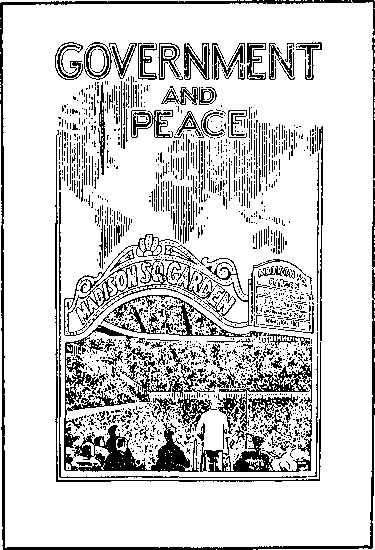
“GOVERNMENT AND PEACE," 1939
b Kingdom News, No. 4, July, 1939.
a 1940 Yearbook, pp. 43, 44.
“Kill that damn Rutherford!” thus clearly showing that they had come to the Garden for no good purpose, but that they were there wickedly bent on doing wrong and to disturb and break up a lawful assembly of Christian people. . . . and they indulged in all manner of vile language, vituperative expressions, threats, cursings and yells, and assaulted many of the ushers who attempted to quell the disturbance. They did not succeed in breaking up the meeting, but the speech was delivered in its entirety and fully and completely recorded.®-
Although the rioters failed to break up the meeting, the disturbance was clearly audible over the microphone and heard by the entire international audience of 75,000 throughout the world. The disturbance also became a part of the permanent sound recordings, which have since been played to thousands of persons throughout the world. Applause after applause by the Garden audience gave the speaker lusty support as he continued without fear to speak
over the microphone and ride out the storm. Because of the failure of the police to handle this situation, Judge Rutherford wrote a letter to New York city’s Mayor La Guardia, dated July 11, 1939, and since he received no response to the letter, it was published and given a wide distribution. This letter reads, in part:
About twenty minutes after the speech began, and at a given signal from some one of them in the gallery, that company of fanatical persons began a loud disturbance of yelling, shouting and cursing. Ushers called upon the police to quell the disturbance, to which demands the police officer in charge replied: “That is your job.” This statement was made in the face of the facts that the policemen at the time were hearing and seeing the unlawful action of the disturbers.
Ushers lawfully in charge of the meeting hurriedly rushed to the point of disturbance and demanded of the disturbers that they cease interruption or else leave the meeting place. Instead of obeying, the Catholic fanatical disturbers violently assaulted a number of the ushers, and some of the ushers in turn defended themselves. The police did not even attempt to arrest anyone for unlawfully disturbing that lawful assembly, but they did arrest several of the ushers who were acting lawfully in the performance of their duty. Two weeks have passed and no one of the disturbers has been arrested for an attempt to break up a lawful assembly. Law-abiding citizens have been arrested for doing what the police are sworn to do but which they failed to do.c
The trial against the three ushers charged with felonious assault came before three judges of the Special Sessions Court of the city of New York on October 23 and 24,1939. A report of this trial makes these disclosures:
True to their custom ... a part of the technique of those who described themselves as “for Father Coughlin” and as ‘members of the Christian front’ or ‘Christian mobilizers’, who are definitely associated with the Nazi “Bund” and other totalitarian radicals, and who act specifically under the command of the Roman Catholic Hierarchy, has been street fighting. It is not the ordinary type of fighting, where two men become angry and have an altercation and fight, but the custom is that which was introduced in Nazi Germany and especially used in the pogroms or riots against the Jews. Their system is to hit somebody or to cry out as though the offender himself had been hurt; to call up a sympathetic policeman and charge the actual victim with assault. . . .
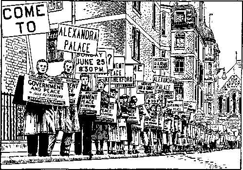
START OF THE MARCH, LONDON, 1939
In New York city the so-called “Coughlinites”, according to circumstantial evidence set forth in many publications, have definitely been using this technique on Jews for several months past. A refinement of the same system was planned for Madison Square Garden. Witnesses at the trial of the three ushers above mentioned plainly presented the facts to the court, that a group of several hundred Coughlinites walked from radio station WMCA, after they had finished picketing that station for refusing to broadcast Coughlin’s speeches, . . . that this marauding group brought along with them copies of Social Justice magazine and shook them in the faces of the ushers, saying, “This is what you will get.”d
Witnesses for the prosecution against the brothers in this trial made so many contradictory statements that the three-judge court, composed of two Roman Catholics and a Jew, not only exonerated the three ushers but commended them for reasonably exercising necessary firmness against the mobsters when the city police wholly failed to do their duty to preserve order.e
BRITISH ASSEMBLY THREATENED BY I.R.A.
The British assemblies that were scheduled to carry the talks from New York also received advance threats of violence. Listen to this report from the British Branch servant in London as published in the 1940 Yearbook. Maria, would you read it, please?
maria: [reading]:
On Saturday, June 24, the I.R.A. (the Irish Republican Army, a Catholic terrorist movement which had been carrying out a campaign of bombing through-
out Britain for the past several months) phoned an “official” threat to the London offices of the Society, saying they would take action if the London-Belfast circuit were not canceled for Judge Rutherford’s overseas lectures. This information was immediately given to Scotland Yard, and the halls in both Belfast and London were closely guarded by police and detectives. Quickly following the Saturday evening session of the convention five bombs exploded in the center of London near to the Kingsway Hall, where Jehovah’s people had been meeting. This was their worst bomb outrage, causing much property damage and injuring many persons; however, their dirty work did not touch a hair of Jehovah’s people. This was the third threat received from these maniacs signing themselves as the I.R.A., in the course of four months.f
The following day more than 200 policemen plus many plainclothesmen surrounded the entire vast convention hall, the Alexandra Palace, engaged for the public lecture on Sunday. Similar protection was given to the entire Belfast assembly hall both inside and outside the buildings. There were a few tense moments when sounds of the rioting in Madison Square Garden came over the air waves to the London assembly, since many, including the police, thought this might be the signal for the I.R.A. in Britain to follow suit. However, nothing happened, either in London or Belfast, and every word of this powerful public witness was heard in these two countries.
A GLOBAL ATTACK BEGINS
Now a more serious difficulty confronted the Witnesses, especially in Europe. Hard on the heels of this Fascist demonstration in the United States events of an international nature were developing abroad. On September 1, 1939, German troops aggressively invaded Poland. This proved to be the spark that set off World War II. Quickly Poland was subjugated and on September 3 Britain and France declared war on Germany. For several months activity seemed to halt and many began to speak of the war as a “phony” war. Such hopes were dashed, however, when in April, 1940, Hitler rapidly advanced to occupy Denmark, Norway, the Netherlands, Belgium and Luxembourg. Then by quick maneuvers he moved into France, forcing that nation to sign an armistice on June 22, 1940. British troops on the Continent found themselves in an impossible position and were forced to withdraw across the English Channel from Dunkirk, June 4, 1940. Britain now stood alone in the war against Italy and Germany, with all of Europe in the hands of these totalitarian forces. Across the width of the Atlantic Ocean the United States remained still uncommitted.®
As the Nazi-Fascist-Catholic war drive stampeded throughout Europe, legal restrictions and imprisonment came upon Jehovah’s witnesses, crushing branch office after branch office of the Watch Tower Society, forcing them to close down. Connections with Brooklyn headquarters were severed. Following the pattern already established in Germany, Nazi occupation forces in country after country banned the Witnesses, as had been done in Austria and Czechoslovakia. This flood of Catholic-inspired action swamping in upon Jehovah’s witnesses now became overwhelming and seemed about to engulf them completely. Only Sweden and Switzerland in Europe remained neutral, providing suitable headquarters from which Jehovah’s witnesses could radiate their activities through underground methods. France, Spain, Poland, Belgium, Greece, Bulgaria, Hungary, Italy, the Netherlands, Romania, Yugoslavia, Estonia, Finland, Denmark and Norway all came under dictator rule. The strangling arm of the war reached down into Africa, where restraints were placed upon the Witnesses in Northern Rhodesia, Southern Rhodesia, Nigeria and Gold Coast.
In faraway Asia and the Pacific area Jehovah’s witnesses were opposed when the Japanese steam roller was set in motion in 1941. Banning and bitter persecution of the Witnesses ensued in Japan, the Philippine Islands, Burma, Malaya, Straits Settlements, Netherlands East Indies, Fiji, New Zealand, India and Ceylon. A global attack on Jehovah’s witnesses was taking shape that appeared as though it might completely blot out the world-wide preaching of these Kingdom publishers.11
f 1940 Yearbook, pp. 81, 82. g The World Almanac, 1953, p. 248.
THE ISSUE OF NEUTRALITY
What position did the Witnesses take in this time of severe crisis? During World War I the issue had not been clear, and the results to Jehovah’s servants had been disastrous. In a timely maneuver, The Watchtower of November 1, 1939, provided its readers in western Europe with strengthening counsel before the collapse of democracy there that following spring. This consisted of a full and Scriptural study of the subject “Neutrality” as practiced by God’s people in olden times. This apostolic course of neutrality adopted by the Witnesses enabled them to stand firm and prepare for the hard times now setting in under German and Japanese occupation.
An extremely interesting experience came to us from Albania that specifically and dramatically illustrates this point. The brothers in Albania were persecuted from four sides, by the Greeks, the Fascists, the Nazis and the Communists. Throughout the rivalry between these groups the brothers maintained a stand of strict neutrality. In one instance at least, this stand saved a brother’s life.
One time while the Nazis and Fascists were in control in the southern seaport of Bologna, a brother was visited by the Communists, who asked him to give money to aid the Communist party. The brother explained his neutrality, pointing out that he could not help the party in their underground activity. A year later the Communist that had asked the brother for help changed his political views and joined the National party. The National party used him to expose all the Communists in Bologna because he had become acquainted with them through his activity while a member of the Communist party. When they came to the house of the brother the ex-Communist said: “No, not this house; because when I asked here for help for the Communist party, this man refused to give me any because he said he was neutral.” All those who had assisted the Communists were arrested, but this brother was allowed to go free.
Compromising on the part of some of the Albanian people was fatal to them. No matter which of the parties would come into town, Fascists, Nazis or Communists, some of the Albanian people would always claim to be favorable toward that particular party. But sometimes the Communists would put on the emblem of the Fascists and come into the town and ask the people their views. Those who would say, “We are Fascists like you are,” would be arrested or killed by the Communists. The brothers, on the other hand, always took a position of neutrality and gave the same answer to all, whether Communists, Fascists, Nazis or some other political party.
In advance of the Japanese aggression in Asia, in fact, before the war broke out in Europe, Judge Rutherford made his first visit to Australia. That was in 1938. He had been in the Hawaiian Islands in 1935 when a new Branch was established in Honolulu and arrangements were made for the construction of an assembly hall in connection with the new Branch building that was being erected.1 This meeting hall was called “Kingdom Hall,” which was the beginning of the practice of Jehovah’s witnesses the world over of calling their congregational meeting centers Kingdom Halls.
h 1940 Yearbook, p. 85: 1942 Yearbook, pp. 88, 107, 111, 142, 143, 144, 161, 163, 171, 172, 181, 190, 191, 199, 200, 208. i 1936 Yearbook, pp. 144-146.
Judge Rutherford was well received by the general public in Australia on his first visit in 1938, although here, too, extreme religious prejudice and pressure tactics manifested themselves.k An extensive advertising campaign was conducted to notify the nation of his personal visit and of the public lecture “Warning,” which was to be delivered at Sydney’s Sports Ground as a climax to the convention held during his visit. The assembly was attended by Kingdom publishers from every corner of the territory covered by the Australian Branch: Malaya, Java, French Indo-China, Shanghai, New Zealand and all states of the Commonwealth. Although arrangements had been made to broadcast the talk, pressure exerted by local religious leaders on the Postmaster General’s Department prevented it. A petition of protest signed by 120,000 persons in ten days was ignored.
Following this talk by the Society’s president, which was enthusiastically received by the 25,000 persons present, a copy of the speech was delivered that same afternoon to the newspaper office that had contracted some weeks previously to print it. Here again fear of religious pressure resulted in a violation of an agreement to carry this important lecture to the public at large. However, the talk was recorded and made available to thousands of persons throughout the world in this way.1 On his way back to the United States, the Society’s president stopped at New Zealand, Fiji Islands, American Samoa and Hawaii.1"
BRITISH NEUTRALS SPEAK OUT
In Britain, too, the brothers prepared to weather the storm of World War H and zealously followed a strict course of neutrality. At the beginning of the war Jehovah’s witnesses were in the news in Britain due to the wide distribution and discussion of the White Paper (Germany No. 2), issued October 30,1939, and entitled “Treatment of German Nationals in Germany.” The facts presented in this White Paper were based on a report compiled by Sir Neville Henderson, British ambassador to Berlin up to the declaration of war, September 3, 1939, and included experiences of Jehovah’s witnesses in Germany. Here is a quotation from this White Paper:
There were 1,500 Jews and 800 Ernste Bibel-forscher [International Bible Students] . . . Each man wore a badge—Jews yellow with the star of David, Bible Students violet, etc. . . . Jewish prisoners wrote and received letters twice a month. The Bible Students were allowed no communication with the outside world, but, on the other hand, their rations were not cut down. Herr X spoke with the highest respect of these men. Their courage and religious faith were remarkable, and they professed themselves ready to suffer to the uttermost what they felt God had ordained for them.
. . . the “Bibelforscher”, a religious sect taking its doctrine from the Bible and having a considerable membership in every part of the country, but proscribed by the Gestapo since its members refuse military service; these unhappy people were almost as badly treated as the Jews.n
On November 15, 1939, the Society’s London office issued the following statement to all members of Parliament, religious leaders, local officials and the press:
Jehovah’s witnesses, wherever they reside, are loyal to the laws and customs of the countries, seeking to serve God and are of goodwill to all men. If they are judged by men as disloyal it is only when a human law is enacted which interposes a human instruction contrary to the Scriptures, or would give to a man the worship which belongs only to Almighty God. That the position of Jehovah’s witnesses in relation to present events may be clear, a pamphlet republished from The Watchtower is enclosed. At the same time this makes plain the reason for their neutrality in all cases, and why they are unable to take part in anything military.
jE.s.: in 1937 in England the “London Tabernacle” was redecorated and renamed Kingdom Hall. Consolation, Vol 19, Apr. 6, 1938, pp. 26, 27. k Consolation, Vol. 19, June 15, 1938, pp. 3-11. 1 1939 Yearbook, pp. 103-105. m Consolation, Vol. 19, July 13, 1938, p. 8. n The White Paper (Germany No. 2), Oct. 30, 1939, Cmd. 6120, pp. 10, 35, published by the British government. See also 1941 Yearbook, pp. 104, 105.
On behalf of the thousands of Jehovah’s witnesses in Britain we wish to make this position clear. As servants of the Most High God, our position is identical with that of our German brethren, namely, that of strict neutrality. Our devotion, service and loyalty are consecrated to Jehovah’s Theocratic Government, and according to John 17:16, “They are not of the world, even as I am not of the world.” We also enclose a copy of our publication Government and Peace for your perusal.0
This statement also made reference to the recognition by the British government through its White Paper that Jehovah’s witnesses in Germany were also persecuted for failure to take up military service. As a result of this bold stand publicized throughout the land, a foundation for a year of uninterrupted theocratic service was laid. The authorities and the people learned that Jehovah’s witnesses were not pacifists and had no connection with the many pacifist movements that were causing trouble in Britain. The only opposition received came from the Catholic-controlled press, which endeavored to brand Jehovah’s witnesses in that land as subversive.
Many were the harrowing experiences of the brothers in Britain due to the repeated Nazi bombing attacks. Here is one of the Branch servant’s reports:
preaching under enemy fire
An incendiary bomb pierced the roof of Central London Kingdom Hall, Craven Terrace, and set up a blaze inside amongst the furnishings. This fire was quickly brought under control by the Bethel brethren on fire watch duty. That same night seven fire bombs fell on the Society’s premises where the Bethel home and office are located. To show how the demons made the London Bethel a target, in three months twenty-nine high-explosive bombs have fallen within a few hundred yards of the Society’s office, the nearest being across the street thirty yards away. One of the largest bombs which caused a city record for damage dropped only seventy yards to the rear of the Bethel.
o 1941 Yearbook, pp. 104. 105. 1942 Yearbook, p. 84. The office was twice threatened with raging fires consuming buildings fifteen feet in back of Bethel. The Bethel home has rocked many a time just as in an earthquake. Cracks in the walls have had to be repaired. There have been nights of horror and death which no members of the family will ever forget. In spite of all this the “strange work” in London and throughout Britain progressed as never before, bringing hope, consolation and comfort to thousands who are seeking true refuge.
In the “Battle of Britain,” including its terrible ordeal of air war, less than a dozen of the more than 12,000 witnesses of Jehovah residing in the British Isles lost their lives. Many of the Witnesses suffered injury and lost their homes and Kingdom Halls in the Nazi air raids. Nevertheless, the true worship of Jehovah continued on and house-to-house preaching was maintained at a high level. Congregational meetings were transferred to Sunday afternoons to avoid dangers of night air attacks. But the meetings were held regularly. Much hope and comfort were brought to thousands of honest-hearted British nationals by the extensive preaching campaign carried on by Jehovah’s witnesses throughout all the war years.
Large zone assemblies were held on schedule as if no war existed. Some sessions were held even during actual bombing raids. In a night raid Manchester’s large Free Trade Hall was demolished, just after Jehovah’s witnesses had completed their 1940 national convention in that city. Most amazing, though, was the convention held at Leicester, September 3 to 7, 1941, where some 12,000 Witnesses assembled for a five-day theocratic convention amid war’s hardships and regimentations. In the face of unfriendly forces, almost insurmountable obstacles at every turn had to be overcome as to feeding, accommodation and transportation in order to assemble such a vast number. The recordings of Judge Rutherford’s principal lectures at the St. Louis, Missouri, convention, August 6-10, 1941, in the United States had been sent by airmail to London just in time for the censors to clear them for this British convention. This was indeed a spiritual lift to the brothers in Britain, demonstrating the unity and loving co-operation manifested by Jehovah’s witnesses even during these trials of the war years?
Because of an embargo placed on shipments of literature from Brooklyn, the brothers in Britain were forced to undertake fairly large printing operations inside Britain in order to keep up the flow of publications into the field, where a large band of active pioneers were serving the need of thousands. Later, importation of the Watchtower magazine was banned to subscribers in the British Isles. However, the main study articles were printed locally, since these were not prohibited; so no interruption was necessary in the hundreds of weekly Watchtower study meetings.
In Britain there was total regimentation of both males and females. Military exemption was refused to the brothers by many of the judges, which meant that 1,593 convictions followed with total prison sentence time exceeding six centuries. Of those convicted, 334 were women who were required to spend time in prison along with their brothers for failing to accept national direction to perform war duties. In Britain, too, serving as pioneers, were Witnesses who had fled as refugees from Poland, Germany, Austria, Belgium and France. These had come to England prior to the war, but as the war intensified, the government interned them in a camp on the Isle of Man for the duration of the war. American and Swiss nationals who were Jehovah’s witnesses were deported.
So despite heavy restrictions and war limitations, Jehovah’s witnesses in Britain maintained their neutrality and their integrity to God. The fight for freedom to worship Jehovah did not subside or die out in Britain. Rather, it was waged more intensively than ever before as in other parts of the world.
CANADIAN NEUTRALS PREACH UNDER BAN
Throughout the British Commonwealth Jehovah’s witnesses were subject to restrictions and, in some places, total ban. In Canada, for instance, the brothers persevered during the war amid great hardships. In the earlier years of the Society the work in Canada had developed under the Brooklyn office along with the American congregations. But, as you will recall, in 1918 a separate branch office was established in Winnipeg.1, After the close of World War I and shortly after the ban against the Witnesses in Canada was removed, January 1, 1920, the Society’s Canadian office was transferred to Toronto? In 1925 the charitable corporation named International Bible Students Association of Canada was organized and became the owner of the Branch headquarters’ property?
The work advanced well through the years. But in 1936 some in prominent positions deflected from the truth, requiring administrative changes. The lack of spiritual insight that made these changes necessary had temporarily slowed up the work, but with a new administrative force operating, spiritual conditions improved and a greater forward movement in the witness work resulted?
Throughout all this time, in Catholic Quebec strong opposition was encountered, including continued arrests. But the real “Battle of Quebec” was reserved for later years, as we are going to see in our further discussion. The arm of Catholic Quebec was long, however, and on July 4, 1940, at the peak of Hitler’s European conquests, the Quebec Catholic who was Minister of Justice at that time, namely, Ernest La Pointe, passed an order in council that placed a total ban on the activities of Jehovah’s witnesses’ corporation, the I.B.S.A. of Canada.8
q 1942 Yearbook, pp. 83-97. r W 1918, p. 2. s W 1920, pp. 36, 37. 11945 Yearbook, p. 119. n 1937 Yearbook, pp. 126-138.
With war reversals at their peak for the democracies, Jehovah’s witnesses were made easy scapegoats, and a modern inquisition followed. Spying upon neighbors was encouraged, homes were raided, private libraries seized, Bible meetings broken up, Memorial celebrations interrupted and even copies of the well-known King James Version of the Bible were confiscated and ordered destroyed. The public press, too, was bitter in its attack, and these outrages swept from one end of the country to the other.w
All this came upon the Canadian Witnesses suddenly and by surprise, but they by no means took it lying down. Immediately they began to build up an extensive and efficient underground system that enabled them to meet in small groups for Bible study and to carry on their preaching activity. These Witnesses, the same as their brothers under totalitarian rule, were determined to serve God, not man, and refused to allow man-made laws or interferences to prevent them from fulfilling their God-given commission. At length some 5,000 publishers were on their feet carrying on back-call and Bible study work.
One morning in November, 1940, the brothers rose very early and flooded the country from end to end with copies of a special booklet entitled “End of Nazism.” The booklets were left under the doors of the people and, when they awakened, they found on their doorsteps this bold and courageous declaration that shortly God’s kingdom under the Lord Jesus Christ would assert itself and destroy all opposition and would put an end to all totalitarian power. Although more than 7,000 Witnesses participated in this special campaign, less than ten were arrested and not one was charged with distributing subversive literature, although the message was similar to that which had been delivered in the country for many years.x
Halfway around the world in another part of the British Commonwealth, the brothers were suffering further restrictions on their work. In Australia the religious leaders began to encourage political action against the energetic Witnesses from July, 1940, onward. As a result, on January 16, 1941, Prime Minister Menzies prematurely announced in Parliament his government’s proposal to ban Jehovah’s witnesses. The next day, January 17, the order in council was gazetted, restraining the activities of the Society and its legal corporations, including the Adelaide company of Jehovah’s witnesses, which owned a Kingdom Hall, which the government soon took over. Bethel headquarters was also seized and occupied by the governments
But in all these countries Jehovah’s witnesses were not deterred from their Godgiven commission to preach this good news of the Kingdom. In all parts of the earth the Kingdom witness continued, and some of the accounts of courage and ingenuity displayed by the brothers under totalitarian rule are thrilling beyond measure.
Preaching
Underground amid War’s
Intense Heat
^Jjohn: During these dark years of World War II, wherever Jehovah’s witnesses were to be found, their one aim was to preach God’s kingdom as the only hope for the world! Far away in the Philippine Islands, communications with the Society’s headquarters in America ceased after the Pearl Harbor attack, December 7, 1941. But the work went right on! The last report from the Branch office in 1941 showed that there were 373 publishers. The work they did under Japanese occupation is a record of faith and perseverance. Here is part of the Branch servant’s report after his release from prison:
The Japanese entered the city January 2, 1942, and soon established the harsh military government. Censorship began immediately. All radio receiving sets were sealed and confiscated, and there went out a decree that all publications must be submitted to the Japanese military command for censorship before they could be released to the public. Bibles from the bookstand were censored. However, not a single brother submitted the publications in his possession for censorship. They kept on witnessing with the Kingdom message uncensored. Regular house-to-house searching was done by the Nipponese in Manila and suburbs, for arms and ammunitions. They have not bothered themselves with the Lord’s arms and ammunitions exhibited in the homes of the brethren in shelves.
I was interned January 26, 1942, with all other aliens considered enemies of the gloating invaders. At first under the civilian administration we were given fair treatment. But when the administration was transferred to Japanese military the internees encountered hardships. . . . The three years of internment found our health waning. We were bones and skin when the American forces took the camp. In the last months there was acute starvation. A bowl of thin rice water with salt to every person was given every day. Anything, such as camote peelings, weeds and other greens that could be gathered in the camp yard, found its way to our empty stomachs to lessen at least the horrible feeling of hunger. . . .
During the years of the Japanese oppressive military rule the friends at large pushed the Theocratic work forward. As ambassadors of the Kingdom, which is the only hope of the world, they could not wait till war was done to feed those that hunger and thirst for truth and righteousness, although faced with many kinds of jeopardies. As opportunity permitted they made good use of their few pieces of sound equipment which were not confiscated and opened model studies.... They organized thirty-one new company organizations during said Japanese’ harsh rule, composed of around 2,000 publishers. Under the protecting hand of the ever-victorious King seven zone assemblies were held in different parts of Luzon island. The peak attendance was 2,000.
When the meager supply of publications was being felt the brethren resorted to a method of distribution which was found to be helpful: that of lending the books to the good-will for a week’s time; which resulted in a wholesome number of back-calls, model studies and new company organizations. In this way they were able to continue in the house-to-house witness, because the supply always came back.
During the last year of the Nipponese occupation when the American forces were storming Manila and the Japanese began the massacre of innocent civilians, the publishers in the
provinces were still at it, joyfully serving Jehovah the Almighty. A house-to-house witnessing was going on. A company of brethren encountered an interesting experience while obeying the Lord. While witnessing they passed a small village inhabited by guerrillas and their families, to which they had previously witnessed. The brethren were on their way to the next town to do “our Father’s business”. On the way they were warned that Japanese soldiers were in town. There was no turning back now, and they continued in their usual door-to-door preaching. They saw Japanese soldiers and guerrillas bristling with guns. They were wondering why these did not start shooting, when they were supposed enemies. They were merely staring at each other. The publishers did not bother to stop, but finished their territory. On their way home they found the same small village already burning and the people bayoneted: men, women and children. How they escaped certain death, although the Japanese could get at them, there was no way of knowing except that Jehovah had protected his own people
PREACHING BANNED IN JAPAN AND KOREA
In Japan itself, of course, the witness work was banned during the war. Progress had been slow in this basically pagan land from the days when the message of God’s kingdom first reached its shores. That occurred in 1912 when C. T. Russell arrived there as head of a committee of the I.B.S.A. investigating the religious field in the Orient. Brother Russell and his companions made a 700-mile trip through Japan from Yokohama to Nagasaki. Noticing that the missionaries of orthodox Christianity were considerably discouraged, he concluded that “what the Japanese need is ‘the gospel of the Kingdom,’ announcing the second coming of Jesus as the Messiah of glory, to rule, heal and instruct all the families of the earth.”
Colporteurs visited Japan about 1913 and planted further seeds of truth. In 1927 an American Japanese was sent to Japan to open a Branch? This he did in Kobe. However, this was soon moved to Ginza, Tokyo and then to Ogikubo on the out
a 1946 Yearbook, pp. 176-178. b 1928 Yearbook, p. 104. skirts of Tokyo, where a printing plant was set up. Until the outbreak of World War II considerable work was done by a group of Japanese colporteurs, whose number reached a peak of 110 in 1938. Emphasis was laid on street meetings and distribution of the Japanese edition of The Golden Age, of which 1,125,817 copies were placed in 1938 alone.
However, with war clouds gathering, the Japanese dictators took steps to stop the work of Jehovah’s witnesses. Arrests and mistreatment of the Kingdom publishers started as early as 1933, but they continued preaching, and spread into neighboring Taiwan, Korea and Manchuria. One of the charges laid against the Witnesses was that they were “advocating a Jehovah monotheism.” There were long trials behind closed doors, accompanied by tortures, lasting as long as two to three years. Sentences for those who refused to renounce their belief were for five or more years, and those who remained faithful were resentenced when the first term expired.
In Korea, too, the harsh hand of Japanese oppression was felt. The first witness work reported in Korea was that of a sister from England who traveled to Japan, China and Korea at her own expense and with the approval of the Society’s first president, Brother Russell. Her work as a colporteur was confined to visiting English-speaking people in Korea, including many Korean nationals. During this trip, in 1915, she placed more than 600 volumes of Studies in the Scriptures.
In 1926 the Society set up a translating staff and small printing plant in Korea to prepare Korean publications for the field. Further publications in the Korean language were printed in Brooklyn and sent into the country. By 1931 two brothers were caring for the work in the depot, one handling the translation work and another supervising the work of congregations in distributing literature. Representatives from the Society’s Branch in Tokyo came to Korea for speaking tours and to instruct the local brothers. In 1933 the Japanese government seized some of the Society’s property in Seoul, and on June 17, 1933, it seized 50,000 pieces of literature, including bound books and booklets. Eighteen coolie carts were required to move all of it, as reported by the Tong-A Ilbo Newspaper, Issue No. 4493. On August 15, 1933, the government seized 33,000 pieces of literature at the home of one of Jehovah’s witnesses in Pyongyang. This was reported in Tong-A Ilbo No. 4452.
Japan’s war lords were then embarking on conquests of Asia and they used the Shinto religion, the national religion of Japan, to weld the peoples of the huge empire together. All Koreans were forced to bow to the Shinto shrine in worship of the emperor. The refusal of Jehovah’s witnesses to bow down in idol worship brought them into early conflict with Japanese authorities, but the organization itself was able to continue until 1939.
On June 18, 1938, Jehovah’s witnesses in Japan and Korea began to be arrested. On June 29, 1939, the brothers at the Korean office were arrested and the same day literature was seized that amounted to 1,000 square feet of storage space. It was taken to the River Han and burned, as reported by newspapers the following day. Many Witnesses in Korea were arrested. Those refusing to bow down to the Shinto shrine were imprisoned. More than thirty received long prison terms. Many died in prison. One elderly sister was chained to a stone in a perpetual bowing position for more than two years. Our work was banned.
On this issue of idol worship, Protestants in Korea were given an easier road when their churches ruled that bowing to the Shinto shrine was a civil matter and not a
c 1946 Yearbook, pp. 181, 182.
matter of religion and so it could be considered as “doing unto Caesar.” Even many church members could see that this was compromising, and as a result the Presbyterian church, for one, was split into sects over this issue.
SEEKING THE LORD’S SHEEP IN POLAND AND GREECE
In Poland, hunting for the “other sheep” was highly organized and effective, especially as carried on by the zealous pioneers:
There were also pioneers in Poland during the war. In Warsaw, for instance, whole parts of the town were worked by them. Under the cover of peddling they went from house to house with little cases selling tooth paste, shoe polish, and other little things. However, they were not too keen to get rid of their goods; on the contrary, they were pleased if they did not have to replenish their stock too often. Their purpose was to talk to the people in order to tell them of the Kingdom. The high prices of provisions and lack of money were the most favorable topics with which to begin a conversation. When the people complained, it was easy to lead the conversation into the right direction, and to tell them of the little booklet that one had already read before the war and which was so interesting. In this way they had the witness. When the brothers saw that there was interest for the truth, they “happened” to have a copy with them and lent the people No. 1. The addresses were given to other brothers, who made back-calls. They then became acquainted with these people and those who were really interested were brought together, after a few back-calls, into little groups of 5-10 persons, with whom model studies were conducted according to a fixed study plan.c
In Greece, too, the shortage of literature presented a problem that was overcome by judicious use of what was available. Witnessing in that country assumed the nature of incidental preaching:
When, in October, 1940, the war broke out between Italy and Greece many brethren who were called to service refused to serve either in combatant or in noncombatant service. Because the martial law was strict and no exemption on account of conscience was provided for conscientious objectors, the brethren passed through the martial court, and three of them were sentenced to death, and others to sentences of imprisonment for life, and to imprisonment from 20 years to 7 years. The Lord caused to be given a tremendous testimony; the conditions developed in such a way that until now no sentence to death was executed, and all the sentenced brethren are out of prison.
When, in 1941, all communication between Greece and America was cut off we put forth all our efforts to see what could be done for the “other sheep” of the Lord and the brethren generally. So the secondary articles of The Watchtower were translated and given to them; also the books Salvation and Religion and the booklet Refugees were translated and multiplied by mimeograph to the number of 2,500 copies and given to the brethren everywhere we could reach them. Hence the meetings were not interrupted at all, but became a great blessing to the brethren.
Seeing that the books and booklets were becoming scarce, we tried to do the work by meeting the people in the parks and public gardens, sitting on the benches and giving them the testimony about the Kingdom. If the hearers were interested, we offered them one booklet as a loan and told them that we would visit them again to take the booklet and discuss with them the things they did not understand. On the second visit we offered them a second booklet and proposed that, if they appreciated these good things, they have a regular study in the booklets with other interested ones. After the study went on for two or three booklets, they were invited to follow the studies in the Tower and the large books. In this manner, by the provision of the Lord, there was established a method of making back-calls, and the number of “other sheep” has increased since 1941.d
FEEDING OF SHEEP DESPITE ARRESTS
Due to the large numbers of Jehovah’s witnesses in Germany, there was more activity in that country. Also there were correspondingly more arrests. The Nazi concentration camps were notorious for their harsh and sadistic commanders and guards, yet the German Witnesses did not slacken their hands for fear of internment. Nor would they compromise their Scriptural position of neutrality for the sake of expediency. These brothers were determined to find and feed the Lord’s sheep, as well as to provide spiritual assistance to one another.
By 1934 Jehovah’s witnesses began to be dismissed from their jobs in Germany, not only for not going to the polls and not using the Hitler greeting, but also for not participating in the celebrations of the first of May. In October, 1936, the Angriff, fighting organ of the National Socialist party, demanded that all of Jehovah’s witnesses be dismissed from their jobs throughout Germany.6
At the time of celebrating the “Lord’s evening meal” special efforts were made to locate and arrest Jehovah’s witnesses, as indicated in this secret order issued in 1935:
Secret state police IRI 3637-35 Berlin, March 20, 1935. From a confiscated publication of the Bible Students it can be seen that the groups of the anointed will probably assemble on April 17, 1935, after six p.m. for a memorial celebration of the name of Jehovah and the sacrifice of Jesus Christ. A surprise action against the known functionaries of the Bible Students at the time stated might perhaps be successful. A report about the result of the action is requested. (Signed) Hardtmann
Not only “functionaries” were arrested while celebrating the Memorial of our Lord’s death, but anyone who was caught attending one of these meetings. Even where only two or three assembled in their own homes, they were spied upon by the secret police and betrayed by their neighbors. In such cases even these were judged by the German courts as having violated the ban upon Jehovah’s witnesses and were punished.8
For the Witnesses who refused to undertake military service lengthy sentences in prisons were imposed and the brothers were banished to concentration camps. Likewise those who refused to “heil Hitler” were viewed as committing acts against the State and given harsh sentences. Even to have in one’s possession any of the Society’s publications meant sure detention. Those of the children of Jehovah’s witnesses who were taken away from their parents to be adopted into Nazi homes refused to enter the Hitler youth movement and maintained their integrity in spite of severe pressure put upon them. Hitler’s dragnet attempts from 1933 to 1945 succeeded only in imprisoning or banishing about half the Witnesses at any one time. This meant that about 10,000 were incarcerated while equal thousands were free on the outside to maintain underground activity and an energetic, though cautious, witness work. Funerals would be taken as opportunities for large public gatherings of the Witnesses still free to hear Bible talks and have a short session of fellowship. Small secret gatherings were held at night or out in the forests. Also, portions of the latest spiritual food published in the American Watchtower magazine would reach them in mimeographed form through round-about channels.11
d 1946 Yearbook, pp. 140, 141. e Kreuzzug gegen das Christentum (Zurich, 1938: Europa-Verlag; Paris, 1939: Editions Rieder), p. 133. f Ibid., p. 98. g Ibid., p. 99. See also The Golden Age, Vol. 17, Oct. 9, 1935, p. 7.
Throughout all the trials of the brothers in these war-torn countries they still remembered that their first obligation was to find and feed the other sheep. This meant not only maintaining their integrity to Jehovah God because of their faith but also walking out in the face of the enemy, exposing themselves to arrest and prosecution. Even those of good will who were located and spiritually fed and strengthened by the truth themselves recognized the need to preach and join in heralding the glad tidings of God’s righteous new world.
A brother in Germany reported that during the years 1934 and 1935 he found a couple who manifested great interest in the truth and studied with them in their home. He visited them regularly every week to study The Watchtower with them.
h 1942 Yearbook, pp. 167, 168.
When he was arrested in 1936 his wife continued the study, but she too was soon arrested and sentenced to three years.
This newly interested couple, hungrily yearning for the Word of God, were left alone, with only an address of a brother who lived some 250 miles away. The wife went there to obtain a mimeographed copy of The Watchtower and took a few copies for others and, later on as she gained strength, even participated in spreading copies over vast territories of Germany after almost all the known brothers had been arrested. The brother who first contacted them reports that after his release in 1945 he went to visit them, only to find their house had been hit by a bomb and burned completely. Upon inquiry he learned that this woman who had so zealously cooperated was later apprehended herself and arrested along with her husband. Both of them were taken to the police prison in Munich, where the husband was literally beaten to death for his steadfast attitude and his wife sentenced to death and beheaded. As far as circumstances reveal, these two faithful persons had not even had an opportunity to symbolize their dedication to Jehovah God by water immersion. Yet they were so filled with the desire to serve God and their fellow men that they literally gave their lives to that work.
KEEPING THE BROTHERS SPIRITUALLY FED
The brother relating this experience himself had many narrow escapes in supplying Jehovah’s witnesses with literature and spiritual food. His responsibility was to care for all the congregations in southwestern Germany. During 1935 he was arrested twice but was released and was required to report to the police every other day. Between these visits this brother would often travel from six hundred to eight hundred miles by train, visiting a number of congregations, and then return within forty-eight hours to report to the police. He said:
Thereby exciting situations developed quite often, for on several occasions I had to take to flight and change my itinerary suddenly because I was pursued. Repeatedly I escaped arrest as by a miracle. Once I was already in a flat, caught like a mouse in a trap, for there were already three policemen there in the rooms, and despite this I managed to escape. I do not need to emphasize that during that time I could hardly ever sleep in a bed; I slept almost exclusively in railroad carriages.*
Eventually this brother was secretly arrested, although the mother of one of Jehovah’s witnesses happened to be on the street and saw what took place. As a result, the effort of the police to make this brother “disappear,” leaving doubt and confusion in the minds of those of his associates close to him, failed. From this time until the end of the war he was moved from one camp to another, repeatedly questioned and persecuted in an effort to draw from him the names of other brothers. Once he was questioned by Gestapo from all over southwest Germany and was not permitted even to change his underwear for four and a half months. Many times arrangements were made to “do away” with him, but always they were changed at the last minute. For almost five years he had practically no contact with the Witnesses and was without a Bible, in an effort to break him down, but his integrity never failed.
Providing the brothers with spiritual food was a hazardous but essential part of the underground operation of the Witnesses. One or two copies at a time were carried across the border and then sent by the one who directed the underground organization through reliable messengers to the various points where mimeographing equipment was installed either in cellars, attics or sometimes even in walled-in, almost undiscoverable rooms. Several brothers in Germany who were accused of preparing The Watchtower for distribution were sentenced to death and executed.
In spite of the underground nature of their work the brothers were well organized. One evidence of this was the distribution of the resolution adopted at a convention in Lucerne, Switzerland, September, 1936. About 2,500 of Jehovah’s witnesses from Germany were able to attend this convention, and the resolution there adopted was distributed in all the big cities of Germany on December 12, 1936. Each publisher was given a package of twenty copies to be distributed in a certain designated territory. Each copy was put in a letter box or under the door. No one was allowed to hand a copy to a person individually. The copy would be left at a house and the Witness would quickly leave and go to another house on a neighboring street, and in this way 300,000 copies were distributed within two hours, between five and seven o’clock in the evening on this Saturday in December.
The brother who had charge of the underground activity in Germany at that time told an item on the distribution of this resolution as it was related to him by one of the government officials who had arrested him.
At 5 p.m. the distribution began. Fifteen minutes later the police got the first notice. Another fifteen minutes and the police organization in Berlin was on its feet. Then came telephone messages from Hamburg, Munich, Leipzig, Dresden, the Ruhr territory and many other cities. Before an hour had passed from the beginning of the campaign, police and SS-patrols were swarming out in all these cities to arrest the distributors. They did not catch one. . . .
The police thoroughly combed whole blocks of houses and demanded at each door the immediate delivery of the tract. As only a very few people had one and most of them did not even know about the matter, the impression was created that the whole citizenry was in league with the Bible Students, granting them by their denial a kind of solidarity and protection. This impression which, considering the bad conscience of the government and its “strong arm,” was understandable, had a destructive effect.!
PROVIDING “AMMUNITION” TO PREACH
One brother in Germany was pursued by the police over a wide area. Many times he was within their grasp but managed to slip out because none of them knew what he looked like. His work was the care and reorganization of the congregations in order to close the gaps that were created by constant arrests. He relates the following:
I once carried two heavy cases with copies of the book Preparation, which had been brought over the border near Trier, to Bonn and Kassel. Late in the evening I arrived in Bonn and, as a precaution, put the cases into the cellar of the home of the congregation servant. The next morning at 5:30 a.m. the bell rang. Who was it? It was the Gestapo and SS who came for a domiciliary visit. The congregation servant . . . knocked at the door of my room and told me there were visitors. There being no possibility to disappear, we could only wait and see what would happen. When they came to my room, they asked me what I was doing there, and I briefly answered that I was making an excursion on the Rhine and wanted to visit the Botanical Gardens in Bonn. They checked my papers and returned them to me contemplatively and then told [the congregation servant] to dress and go with them.
As [the congregation servant] told me later, when they arrived at police headquarters, the official said: “There was another one there; where do you have him?” “We didn’t bring him with us.” “What! You didn’t bring him along? Well, you are a fine lot to send.” “Why, shall we fetch him?” “Fetch him? Do you think he’ll wait till you come?” Indeed, I did not wait long but took one of the cases and went to Kassel with it.
When I arrived there, the congregation servant said: “You can’t stay here, please go immediately, for eight days now the Gestapo are visiting me every morning.” We arranged that he should go fifty yards ahead of me to show me the way to a place where I could leave the literature. We had hardly gone 200 yards through the beautiful Chestnut Alley when Gestapo agents were seen coming towards us. They grinned at him scornfully, but did not stop him, and I was able to observe everything fifty yards behind him. The literature was saved.k
This brother was arrested after being betrayed by a former brother and was taken to Berlin by car. During the trip, which lasted three to four hours, he was struck constantly. This is his report:
I was like stunned as we arrived in the Gestapo cellar in the Prinz-Albrecht-Street in Berlin, and here the examination was continued for two and a half days under the most brutal ill-treatment. One questioned me, two held me fast and a third hit me incessantly with a heavy rubber cudgel. Such torture continued without letup for the two and a half days. Then they brought paper on which I was to write down everything and to betray the brothers who were working with me. When they came back and read that I felt exclusively responsible towards Jehovah and would not give any name, the ill-treatment continued. Then I was brought back to my cell but was unable to rest because of the terrible pain I suffered. Another examination followed; this time a skull lay on the table in the room. For two hours they hit me like madmen, but suddenly they stopped and threw a bundle of documents about four inches thick on the table in front of me with the remark that I was an idiotic hound to let myself be beaten like that since they knew already all they wanted to know. I quickly ran over the pages and was astonished to see what they had learned about my activity. . . . Altogether the questionings lasted forty days there. Then I was taken to Frankfort on the Main to a special tribunal where I was sentenced to the maximum punishment of five years.
Two years later the General State Attorney and a high official of the prison administration came to see me for the purpose of inducing me to change my mind and renounce my faith. If I did so, I would be released. Their efforts were in vain. Infuriated, they left me with the words: “He deserves to have his skull split open with an axe.” After five years in prison I only weighed 105 pounds.1
Although many times the brothers would receive sentences of from two to five years, this did not mean they were released when their terms had expired, especially after the war began. Berlin issued an order that none of Jehovah’s witnesses were to be released. So it was off to the concentration camps or destruction camps with them! It was only in Jehovah’s strength that so many of them returned alive!
Concentration Camps
Fail to Still
Lips Praising God 9 10 of the state to be completely a member of the community of the people.
I, too, have been taught to expect my repeated arrest, in case of violating my declaration given today.a
Needless to say, few Witnesses signed this total abdication of association with Jehovah’s theocratic organization.
One brother relates a typical “welcome” at one of the more infamous camps after he had already served out his sentence of five years in prison:
Now followed days of questioning by the Gestapo, whereby I was trampled on, spat at and beaten because I did not sign the statement to renounce my faith. Then I was transferred to the destruction camp of Mauthausen, Austria. There we were received at the station by the SS with fixed bayonets and accompanied by dogs and then along narrow pathways we went up to the camp in marching columns. The dogs were trained to incessantly nip the prisoners in the calves of their legs so that they screamed. In front of the camp we formed into ranks. Some were then called to step out of the ranks, asked the reason of their arrest, and got such clubs over the ears that they overbalanced.13
In this way seven brothers got three times twenty-five strokes with the steelwhip when they reached the camp of Neuengamme near Hamburg. The steelwhip was a stick of steel sewed into leather, and its effects were more dreadful than a cowhide. Here is the report:
Upon their arrival an SS officer cried out: “Where are the sky-comedians?” Nobody answered. “Where are the Bible worms?” Again no answer. “Well, aren’t there any Jehovah’s witnesses among you?” Now all seven answered simultaneously: “Here!” He approached the first. . . . Letting his steel-whip lightly caress his bald head he asked: “You there, how long will you still be a Bible Student?” The brother answered: “Till my death.” “Sooo?” He was the first to go on the block to get twenty-five lashes with the steel-whip. Then the second, the third, till the last. Then the SS officer went again to the first . . . “Now, then! are you still a witness of Jehovah?” “Yes, till my death.” A second time he had to go on to the block— again twenty-five strokes with the steel-whip. Then the second, the third, the fourth till the seventh. Then the SS officer went for the third time to [the first brother]: “Now, then! How long will you be a witness of Jehovah now?” It is difficult to describe the feelings of a man treated like this, but again the brother answered: “Till my death.” Now he and the others had to go a third time on to the block and received twenty-five lashes with the steel-whip.c
a Consolation, Vol. 26, Sept. 12, 1945, p. 7. b From an eyewitness report in the Watch Tower Society’s files.
166
Many times additional tortures were added to these “initiation” proceedings, as related by this brother:
I was then taken to the Sachsenhausen concentration camp near Berlin . . . The reception was connected with several hours of kneecrooking with the Saxon greeting (hands folded at the back of the neck). In the camp bath alternatively hot and then cold water was directed at us with hoses. After the bath we had to do sports, but of course not sports in the proper sense of the words; it rather amounted to murder, for many a prisoner, if he suffered from a heart ailment, remained dead on the ground. Three SS men commandeered: “Up! Down! Roll!” till we had to vomit, and all this on ground that consisted of dusty, black coalcinder. Imagine to do this for an hour and sometimes longer and then stand still on the mustering grounds for hours in all weathers without permission to leave the ranks.
INDUCTION INTO CAMP ROUTINE
Actual induction into the camp routine itself was made as torturous as possible. Jehovah upheld the faithful inductees:
We had to completely undress in the open air and wait there for two hours till one after another was called into the bath. There our heads were shaved. Those suspected of disease got a circle on their chests with charcoal and a cross above it, and they were never seen again. Now into the gas chamber which was also the shower-bath. From all sides icy-cold wind was sent through the ventilators till all the prisoners had been examined and shaved. After two or three days the windows were opened and two bundles of prisoners’ clothes were thrown in. Each one took what he happened to find, the one pants, the other a cap, the third one a jacket and so on. This was repeated every day for about two weeks till everyone had what he was to have.
During this time office prisoners came to us to take our personal particulars. The forms showed that this was a camp to die and not to live. Through these prisoners from the office the other brothers learned that I had arrived and immediately two brothers visited me alternatively in the evening hours and brought me warm clothes and bread. During the last week in quarantine we were formed into a working commando, whereby some 450 men had to sleep in such a small room that we were six to every palliasse, one head up, the next head down etc. The bundle of clothes and the clogs constituted the pillow, otherwise they would have been stolen. It was like being in a vice. For me it was the worst thing I ever experienced. When I got up in the morning I thought with horror on the evening. Fortunately this lasted only a week. If one murmured something, the block elder ran over all the human bodies and hit with his cowhide like a madman at the place where the sounds came from, no matter whether he hit the right ones or not.
Together with about 2,000 men I was then sent to a small outside camp, of which Mauthausen was said to have had twenty-one. This was in Grossramming where we had to build streets. I lost weight daily and after three months I was completely exhausted and had water in my legs, which is the first sign that the end is near. Every day a number died from undernourishment and others just collapsed from exhaustion and died. Nobody was allowed to rest one minute during the work. Professional criminals and other rabble were our kapos appointed by the SS. These shouted constantly: “Move! move!” We were awakened at 4:30 a.m., had to wash together and, after the beds were "built” and the rooms cleaned, no one was allowed to go back to the barrack. If the bed was not “built” as prescribed, one could expect twenty-five strokes with the cowhide or otherwise to be beaten till blood flowed. Towards 6 a.m. we obtained black coffee, and if there was a piece of bread left from the evening before this was crumbled into it and then off to work. We had to walk half an hour to the place of work. We had to do earthwork or break stones. At 12 o’clock we received a quart of swede soup with a little horse meat or sausage in it. Together with the black coffee in the morning this was all the food for the whole day, from 4:30 a.m. till 9 p.m., and most of the time it had to be eaten standing. At 6 p.m. march back to the camp, whereby those who had died during the day or were exhausted had to be carried back by us to the camp. I often thought of Job’s words: “There those weary in power are at rest. Together prisoners themselves are at ease; they actually do not hear the voice of one driving them to work.” (Job 3:17, 18) All the others had to carry back a heavy stone into the camp till the whole mustering ground was surrounded with such stones.
c From an eyewitness report in the Watch Tower Society’s files, d Ibid.
I would also like to describe here a “de-licing” process, of which I experienced several. Every two weeks we were examined, and if the lice got too numerous the whole barracks were disinfected. In the midst of winter with temperatures below freezing point all the prisoners had to undress and leave their clothes in the barrack. Then all the doors and windows were plastered up and the prisoners had to go entirely naked through the snow up the hill to the washroom. There each one was sprayed with a certain acid which burned like fire. After this he had to jump into a big vat filled with 125 gallons of cold water. We had to dip twice and the burning ceased. Then one could wipe oneself dry a little bit and then go some 300 yards, entirely naked, to a barrack filled with straw and lightly heated. There we stayed till our barracks were ventilated. Because of our undernourished condition several prisoners died after each such procedure.©
HELPED BY JEHOVAH
In their physically starved condition their powers of resistance would also be weakened, but these faithful servants of God knew wherein their strength lay. One brother expressed it like this:
Being so often deprived of food and having to do heavy work every day, our physical strength was waning visibly. I was in such a state that I was hardly able to move my skeleton. Two brothers would support me under the arms when marching into the camp. Often I swallowed a handful of sand so that my stomach had something to do. Other brothers did this too. So we did everything possible to stay alive and thus brand Satan and his SS men as liars, for they often said: “Where is your Jehovah? Let him help you!” I must say that he helped us in a wonderful way. But we had one great wish, and that was to eat once more our fill. The person who has never suffered from hunger cannot judge this, for nobody could have lived on 300 grams of bread daily and a kohlrabi soup at noon with practically no fat in it unless Jehovah had given his blessing. And as they served a slice of blood sausage several times a week, which we refused, we were given nothing at all. Did not Jesus say: “It is written, ‘Man must live, not on bread alone, but on every utterance coming forth through Jehovah’s mouth’”? I came to deeply appreciate those words, for it was in truth the spiritual food that could keep us alive. What an advantage if one had studied the Scriptures diligently before, so as to be able to draw from that reserve now ... I must say that it was the very spiritual food that helped me overcome the dreadful feeling of hunger, and other brothers can confirm this.f
As further evidence of the particular hatred manifested against Jehovah’s witnesses, note this statement from a report of one of the brothers:
Of course the camp management punished us for our steadfastness. Thus for years we were not allowed to buy food although on the letterhead it was stated: “Everything can be bought in the camp.” What an irony! Yes, the political prisoners, the professional criminals, the lazy and morally corrupt could buy all that was to be had in the camp: bread, jam and other things, and were also allowed to read papers.
The customary correspondence of two letters of four pages each per month was also forbidden to us. We were only allowed one “letter” of five lines per month, which was provided with a stamp reading as follows: “The prisoner is now as ever an obstinate Bible Student and refuses to renounce the heresy of the Bible Students. For this reason he has merely been deprived of the facility of the otherwise permitted exchange of letters.” This stamp, which was also used upon the letters of our sisters, was for us evidence that the writer remained faithful and stuck to the organization. So we were less interested of the contents of the letter—for what could one say in five lines—but that stamp always caused us joy.&
FEMALE WITNESSES ENDURE
Even the female Witnesses were not immune from the inhuman treatment meted out by the “super men” of the Third Reich. Some of the women’s camps were as notorious as the men’s.
The happenings at the Ravensbruck women’s camp show the vile practices carried out against Jehovah’s witnesses by the Catholic SS troops. In this women’s camp alone there were 50 Polish women in the truth, 15 Ukrainians, 10 Czechs, 10 Hungarians, 25 Hollanders, 2 Belgians, 500 Germans, and 300 young Russian Jonadabs that learned of the truth in the camp itself. Here nearly one thousand Christian women went through the tortures of a Catholic “purgatory”. . . . Roll was called at five o’clock in the morning. . . . During the day these women were forced to do hard labor: digging foundations for buildings, constructing roads, carrying coal, handling heavy trunks and boxes in the luggage department, building barracks, and performing many other tasks too heavy for underfed, underclothed and badly-treated people. Because 495 of Jehovah’s witnesses refused to make ammunition cases, they were sentenced to eight weeks in dark arrest (meaning confinement in a cell without windows).11
e From an eyewitness report in the Watch Tower Society’s files, f Ibid, g Ibid.
The physical torments received from the guards and other prisoners were not all these faithful witnesses had to undergo. The almost indescribable conditions of the camps themselves are pictured to some extent in this report from one of the female Witnesses who survived Auschwitz:
After I had been three months in the camp at Ravensbruck, I arrived with a transportation of about 100 other sisters at Auschwitz in June, 1942. The journey had taken two days by train. We were clothed in rags and wooden shoes. The camp was full of lice everywhere, and the plague of fleas was indescribable.
If any were ill they were sent immediately to Berkenau. There it was terrible. If one died, a sick person was laid on the same bed immediately. Everything was full of lice and covered with excreta. The attendance and treatment were carried out by undependable prisoners. This camp was called the “annihilation” camp because of the thousands and thousands who died here. The Jewish children were thrown alive into the fire. The Jews had to drive their own women and children into the gas chamber. For six weeks they had to dig a huge grave and then often had to throw their women into it, frequently when they were only unconscious. Then everything was burnt. Those who dug the grave knew that after the six weeks it would be their turn. The grave burnt day and night. There were five cremation ovens also in Auschwitz.
But to die of typhus or to “go up the chimney” would be considered a far more merciful death than to be eaten by rats. It is blood-chilling to even think of it, yet some of Jehovah’s wit-
h 1946 Yearbook, p. 137. 1 Consolation, Vol. 27, Jan. 16, nesses while still alive, being so weak they could not defend themselves, were actually gnawed to death by rats. To make it even worse these faithful Witnesses that were eaten alive by rats were poor, helpless women. They had been weakened by starvation and torture to the point where they could not defend themselves against this most hateful enemy, the rat.i
SEEKING ONE ANOTHER’S INTERESTS
Because of their steadfast devotion to the righteous principles required of true Christians, even in the concentration camps Jehovah’s witnesses were soon recognized as those worthy of positions of trust.
It was generally known in the camp that Jehovah’s witnesses were the most diligent, conscientious and honest people. It was therefore also for this reason that the commander and the other officials were shaved by one of the witnesses because they believed that a witness of Jehovah was incapable of cutting their throat when shaving them. They knew too that Jehovah’s witnesses did not endanger their safety, wherefore they also used them in places where there was danger of flight. . . Almost all of the witnesses had ample opportunity of witnessing, so that the whole watch personnel up to the commander, as also all the other prisoners of the camp, are completely informed about the hope of Jehovah’s witnesses.!
Because in many instances the brothers were trusted they would not betray this trust even though their guards acted as cruel monsters toward them. Here is an experience that illustrates that point:
On February 22, 1943, we were loaded on goods vans and via the Netherlands and Belgium sent to St. Malo in Northern France. In the course of the journey we made the following experience with a brother from Holland. He was assigned to bring food to the various wagons when the train stopped. Suddenly the train started and he was not able to board it. So he was there alone in Holland—not far from his place of residence! What should he do? Flee? But what will happen to the brothers in the train when the SS learn that one of the Bible Students fled? He decided to follow the train. Getting to a lineman’s hut he was well fed first and then driven by trolley to the train which he boarded when it stopped again. Till then the SS had not even noticed that he was
1946, p. 11. j Kreuzzug gegen das Christentum, p. 105. missing. This was a good witness and his behavior helped to consolidate the position of all the other brothers. After a few days sojourn in St. Malo we were loaded on boats and carried to Alderney in the Channel Islands.11
In spite of the almost unbearable treatment received by Jehovah’s witnesses in these camps, such places as Buchenwald, Ravensbruck, Sachsenhausen, Dachau, Belsen and others actually became international assembly places of Jehovah’s witnesses of Germany and of captives brought from Russia, Poland, Czechoslovakia, the Netherlands, Belgium, France, Norway and other countries. The German brothers had quickly developed to a high degree the art of spiritual communication through copies of The Watchtower smuggled in and passed from hand to hand. Now these brothers could lovingly render inside aid to their non-German companions in camps and prisons. This international family relationship of Witnesses suffering adversity together kept them spiritually awake to their privileges of service inside the camps and in planning for expanded activities of theocratic worship when days of deliverance would come.
During their internment the brothers were very close and did everything possible to ease each other’s condition and to provide spiritual food for one another. Here is an example:
Beginning of 1943 a sister from the Ravensbruck camp came to Buchenwald in order to look after an imprisoned foreign princess, Princess Mafalda, second daughter of King Victor Emmanuel III. We knew that our sister was without spiritual food. I had the opportunity of reaching the special chain of posts that surrounded the so-called prominent prisoners and was able to persuade a sentry to let me see these two women every week against a payment of 50 Marks which I collected among the brothers. In order to do so I also required a special permit for doing work there, which in my quality as an electrician I was able to procure secretly. In this way we were able to take care of the sister and also to witness to the princess.
k Watch Tower Society’s files. 1 Ibid.
On August 24, 1944, our camp was bombarded by Allied aeroplanes. The target was the DAW armament works which were staffed by prisoners. Many prisoners and SS men were killed by this attack. We witnesses lived through anxious hours thinking of our sister whose abode was near the works. As we found out later, she had been taken to a trench together with the princess and high imprisoned officers under SS guards. Very near the trench one of the approximately 600 explosive bombs that were thrown down that day, fell and filled up the whole trench. All were killed except our sister whom we were able to pull out unhurt from the trench. What a wonderful escape! We wept for emotion and thanked Jehovah. In our ranks we had but two dead and twelve injured.i
ORGANIZED PREACHING IN PRISON BONDS
The brothers were also ever eager and watchful for an opportunity to spread the good news to others inside the concentration camps. As new spiritual food was received they were only too happy for an opportunity to give it out to their fellow prisoners. Notice this incident:
As new brothers came from time to time into the camp they brought new thoughts which they had received elsewhere through issues of The Watchtower. This allowed us to keep pace with the truth. When we were out of spiritual food we implored Jehovah together to send us new supplies. The next morning there was a new brother at the gate. He had a wooden leg and in that leg he hid the issues of The Watchtower at October 15 and November 1, 1938, with the articles “Fill the Earth.” What a joy! Now we in the isolation began a regular Watchtower study till we were caught, when our isolation was broken up and we were spread over all the other barracks of the big camp. Why this? In order that we might publish to others in the camp what we had learned.
The witness work was quickly organized. Each one had enough work. We reported regularly on our activity. Soon there were immersions. Even the Memorial was celebrated. The emblems were not missing either, and all this in the Sachsenhausen concentration camp near Berlin. But Satan was watching too; sometimes he changed his tactics. So we were being given responsible positions. I was transferred to the tailor shop and the SS man who had plagued me formerly but had got a few years older now designated me as his attendant. He said he appreciated my steadfastness.
As I was with a Polish brother together in a barrack where there were only Poles, this
brother became my interpreter. In the evening we gave discourses where many young Russians listened who later asked to be immersed. My discourses I prepared in the tailor shop where I had Watchtower as reference material. These were kept in a little room without windows. I had asked Brother S---to watch and give me
a sign if an SS man should come.
Well, it happened that I was just deeply studying when the door was flung open and the Obersturmfuehrer himself stood in front of me. I still see him now how he said: “This pack has been locked up for years and now they are more active here than outside. Where did you get The Watchtower from?” — “A deceased Hollandish brother gave it to me.” The small room was put upside down; but they did not find everything, for instance, my Bible. I had to follow him to the punishment barrack which was called “Death Block.” He said: “Now you go up the chimney to Jehovah; now it’s finished with your propaganda.” He gave orders that I be especially watched. I was not to remain there alone. Soon [three other brothers] were brought there too. We encouraged each other, for the end of our captivity drew rapidly nearer, as the Russians [the army] were not far away. About two weeks before the evacuation of the whole camp we were released from the Death Block. We were grateful to Jehovah for the privilege of making the acquaintance of this place too. This block was always overcrowded. The hygienic conditions were terrible; it was full of lice and bugs. But here too the witness had to be given, and that was the real reason why we had to go there.
Of course we were glad when we could leave that block alive.™
The record of preaching activity within the walls of these camps is an encouragement to all who are interested in seeing the good news reach persons of good will regardless of their circumstances.
The concentration camps failed dismally, not only in the attempt to crack integrity by making the Witnesses sign a renouncement of faith, but also in the effort to still lips devoted to singing the praises of God and his kingdom. Miscellaneous reports mention witness work done in the camps, and one concerning Buchenwald informs that Watchtower magazines were even produced within the camp. There were also
the Watch Tower Society’s files.
cases of SS guards turning from Nazism and dedicating themselves to Jehovah God and thereafter suffering with their former victims, Jehovah’s witnesses. The following is quoted from a report from refugees from Germany in Sweden, dated June 9, 1945;
According to the consensus of evidence from fellow internees, Jehovah’s witnesses had to undergo the worst treatment in the camps. One of these witnesses, a man from Flanders [Belgium], writes: “Only an unswerving desire to live, hope and trust in Him, Jehovah, who is all-powerful, and love of The Theocracy, made it possible to endure all this and win the victory. —Romans 8:37.”
In the concentration camp at Neuengamme, near Hamburg, a great and well-planned offensive was commenced, in the greatest secrecy, in the beginning of 1943. This took the form of fully organized activity for the giving of the witness among the various inhabitants of the camp. Some of the brethren produced literature, and testimony cards were written in the different languages spoken in the camp, while special “shock troops” were formed for the purpose of bearing the testimony to all the internees in a methodical manner. In this way these were made acquainted with the message, back-calls were made on those who showed interest, book studies were commenced, and even regular lectures were arranged with the aid of an interpreter for Russians and Poles.
This powerful and organized testimony naturally aroused the enemy’s wrath, but countermeasures were of no avail. However, towards the end of the year an order came from Berlin that Jehovah’s witnesses were to be distributed among all the barracks, and that they were not to be permitted to be in the same barracks together. But instead of this being a hindrance to the work, possibilities for coming into contact with the other prisoners increased. In this way each block was thoroughly worked, and those of good-will who were met received regular instruction. Special Testimony Periods were arranged, with the result that time in the service for the Theocracy and testimonies given were increased. Some of the interested themselves began to take part in witnessing. . . .
FRUIT OF FAITHFUL PREACHING
In this camp a regular camp newspaper entitled News About God’s Kingdom was published by Jehovah’s witnesses. Among other things this contained information of the progress of the work in Holland, Belgium, France, Switzerland, England, etc. . . .
When special persecution was experienced by the witnesses an increased testimony and further conquests for the Theocracy resulted. In one camp the authorities tried to force the witnesses to do work for the military powers, but without success. One of their number was therefore taken away to be shot. When others in the camp saw his courage, and saw with what joy he waved to his friends, it made such a deep impression that as a result ten fellow prisoners took their stand for Jehovah. . . . In that same camp there were together 300 who accepted the truth, among them 227 Russian youths'^
A dramatic example of this oral preaching happened one day when the prison authorities caused a brother to be stood up against a wall before the assembled camp. He was told that if he did not stop what they called “propaganda” about God’s kingdom he would be shot. They then handed him a microphone for him to announce to the camp his compliance with their rule. There he was with his back to the wall before a firing squad. The 40,000 prisoners were at attention at that climactic moment when he took the microphone in hand and began to speak. Compromise? Not him! He was one of Jehovah’s witnesses and he used that occasion to witness about the kingdom of heaven. Yes, he was shot down in cold blood, but the report says in conclusion, “In spite of this the brethren carried on with the message, so that many young Russians accepted the truth and symbolized their consecration by baptism.
Many other reports also tell of prisoners accepting the truth. In the one camp of Ravensbruck, for instance, 300 Russians and Ukrainians took their stand for Jehovah’s kingdom. The continual preaching and teaching resulted in a great harvest among these unfortunates in the concentration camps. Men and women dedicated themselves to Jehovah God to do his will and symbolized such decision by water immersion. Even a water barrel served for this purpose in one camp. One report reveals:
Through the active preaching in the camp we found more and more people of good-will of whom many expressed their desire to be immersed. Jehovah blessed our efforts and prayers and so we had the privilege, even in our punishment block, to have two baptism ceremonies with the number of 26 baptized, most of whom were young Russian girls. As a whole, during the camp time we baptized 70 people of good-will.P
At times these took their stand under dramatic circumstances. One morning, for example, at the morning parade all of Jehovah’s witnesses were ordered to step a few paces forward for special examination. The report continues:
It happened that a boy of nineteen years, who had quite recently heard the message, stepped forward from the division to which he belonged and took his place among Jehovah’s witnesses. He was taken to the commandant of the camp, who threatened him with 25 strokes. The boy answered: “I have today taken my stand for Jehovah, and that holds good, not only despite 25 strokes, but even if you take my life.” The commandant then shouted, “Bring an iron bar! In ten minutes’ time he won’t be a Jehovah’s witness any longer!” The young brother endured even this treatment, however, and was later one of the most energetic publishers.a
In obedience to Jesus’ command to observe the Memorial of his death, even in concentration camps, Jehovah’s witnesses met on the anniversary of this date.
Everyone was told to be in the laundry at 11 p.m. Exactly at 11 p.m. we were assembled, 105 in number. We stood close together in a circle, in the midst a footstool with a white cloth bearing the emblems. A candle lit the room, as electric light might have betrayed us. We felt like the primitive Christians in the catacombs. It was a solemn feast. We expressed anew our fervent vows to our Father to use all our strength for the vindication of His holy name, to stand faithfully for the Theocracy and to willingly present our bodies as living sacrifices acceptable unto God.r
In Ravensbruck, too, the Memorial supper was celebrated. Even the sisters in that camp had a part in the preparation of the Memorial for 1945. They reported that 163 were present, of whom 109 partook of the emblems. Even those in the punishment block were able to participate.®
THE WORLD LOOKS AT THE WITNESSES
The treatment of Jehovah’s witnesses in these concentration camps and the steadfast devotion to their faith, which these faithful servants of God displayed, was publicized throughout the world. The book, Kreuzzug gegen das Christentum or Crusade Against Christianity, from which we have read some of our reports, related the persecution of Jehovah’s witnesses during the first five years of Nazi rule. It was published in 1938 by the Europa-Verlag in Zurich and in 1939 by Editions Rieder, Paris. The world-famous author, the late Dr. Thomas Mann, in a letter dated August 2, 1938, to the Watch Tower Society’s Berne, Switzerland, Branch office, said in part:
n Consolation, Vol. 26, Sept. 12, 1945, pp. 11, 12. o Consolation, Vol. 27, Jan. 16, 1946, p. 9. p Ibid., pp. 4-10. q Consolation, Vol. 26, Sept. 12, 1945, pp. 11, 12. r Consolation, Vol. 27, Jan. 16, 1946, p. 8. s Ibid.
I have read your book and its terrible documentation with deepest emotion. I cannot describe the mixed feeling of abhorrence and loathing which has filled my heart while perusing these records of human degradation and abominable cruelty. Human speech fails in the presence of the unspeakable perversity revealed in these pages, on which are recorded the awful sufferings of innocent men and women who firmly hold fast to their faith.t
Also commenting on this book, the well-known French author, Madame Genevieve Tabouis, in a letter dated October 28,1938, stated in part:
We experience the invasion of barbarians as in the fourth century. But, Attila’s army was nothing in comparison with the apostles of Nazism and fascism. Nevertheless, ‘the faith that transplants mountains’ will triumph also over the barbarians of the 20th century. There is not the least doubt about it. Those who, today, are martyrized on account of their faith, certainly render it in suffering a greater service than a general can render at the head of his army.
We are grateful to you, Sir, for your publication. We are divided between the horror of the persecutions committed and admiration for those who endure them.u
A Swiss Protestant minister, Pastor T. Bruppacher, significantly wrote:
While the German church controversy enjoys the favorable interest of official Christendom, we here have an unobserved company, standing and suffering in the foremost posts. While men who call themselves Christians have failed in the decisive tests, these unknown witnesses of Jehovah, as Christian martyrs, are maintaining unshakable opposition against coercion of conscience and heathen idolatry. The future historian must some day acknowledge that not the great churches, but these slandered and scoffed-at people, were the ones who stood up first against the rage of the Nazi demon, and who dared to make opposition according to the faith. They suffer and bleed because, as Jehovah’s witnesses and candidates for the Kingdom of Christ, they refuse the worship of Hitler and the Swastika. These peculiar Christians are accounted worthy to suffer for His name’s sake, and they have humbly proved that they really know how to defend their high title —that of Jehovah’s witnesses. Whoever permits these documents to speak to him in all their sincerity will begin to see the maligned Bible Students in a new light. He will not again judge them in his own self-righteousness."
In Buenos Aires, under the date of February 6, 1938, the German periodical, Argentinisches Tagblatt, wrote concerning Jehovah’s witnesses in the Dachau concentration camp:
They endure all punishments with stoic composure and even continue to successfully work amongst their fellow sufferers for their cause."’
Mr. B. Stuart reported in the Natal, South Africa, Daily News, July 15, 1939:
It is not generally known that the “Bibel-forschers” [Bible Students or Jehovah’s witnesses] constitute the sole obstacle within the old Reich which Hitler has not been able to sweep from his path . . . But, like a light that never flickers, this little body of Christian men and women stand steadfast in their faith, a thorn in the side of the Monarch of Munich and a living testimony to his mortality.x
A French journalist, Jean Fontenoy, was permitted a tour of a concentration camp in Oranienburg. A lengthy report appeared in the “Journal” and portions were republished in the Swiss newspaper St. Caller Tagblatt. This reporter relates the camp commander’s description of Jehovah’s witnesses and then writes:
This discussion had caused me to think and later, at noon, I referred again to this theme of the Bible Students and said, “You have here 450 Bible Students in this camp, but do they really belong here? Most of them must be good and harmless people; they seem to me to be somewhat like saints, at any rate really harmless.”
t See Consolation, Vol. 21, Oct. 18, 1939, p. 5. u Watch Tower Society’s files, v Consolation, Vol. 21, Oct. 18, 1939, p. 5. the Watch Tower Society’s files, x Consolation, Vol. 21, Nov. 15, 1939, pp. 3, 4.
A Berlin official accompanying the party through the camp stated it is hard to find the secret places in Germany where the Bible Students’ literature is still being printed; no one carries names or addresses and no one betrays another. When 250 were arrested at Hamburg and their papers and press were confiscated, and it was thought that this would stop the circulation of a certain magazine, within two weeks after the raid the paper reappeared as before and the police had not been able since then to discover the place where printed, nor any of the distributors.v
Many others, some of them fellow prisoners, have spoken of the steadfast devotion of Jehovah’s witnesses to their faith. Among them was the niece of General de Gaulle, then head of the French government. In a letter to the Society she made these observations:
Gentlemen: I am very glad to be able to convey to you my testimony regarding the Bible Students whom I met in the Ravensbruck [Women’s] camp.
Indeed, I have true admiration for them. They belonged to various nationalities: German, Polish, Russian and Czech, and have endured very great sufferings for their beliefs.
The first arrests began ten years ago, and the majority of those who had been brought into the camp at that time died from the bad treatment inflicted upon them, or were executed.
I knew, however, some survivors of that time and other prisoners who had arrived more recently; all of them showed very great courage and their attitude commanded eventually even the respect of the S.S. They could have been immediately freed if they had renounced their faith. But, on the contrary, they did not cease resistance, even succeeding in introducing books and tracts into the camp, which writings caused several among them to be hanged.
In my block I knew three Bible Students of Czech nationality fairly well. As a protest they refused several times, together with other members of their faith, to go to the roll call. I was present myself at very painful scenes where I saw them beaten and bitten by the dogs without their renouncing their resolutions.
Moreover, in faithfulness to their belief, the majority of them always refused to participate in war industries, for which attitude they suffered maltreatment and even death.
I regret being unable to give you all these details personally as you request, because I am at present really obliged to stay for a while in the mountains for my health; I hope that this information may suffice, however, and is what you desire to know.
Assuring you, gentlemen, of my best wishes, I remain, Yours sincerely,
[Signed] Genevieve de Gaulle.z
A FAITHFUL FAREWELL
The reports that we have considered this afternoon are only a fraction of those that have been published or that are in the Watch Tower Society’s files. Our limited time makes it impossible to relate more. But in closing our session today I want to read just one more letter. It expresses in simple phrase the unselfish concern that many of those inside the camps had for their loved ones outside. It is the heartrending letter of a condemned brother to his wife:
My dear Erna, It is now my last night. My sentence has been read out to me and I have eaten my last meal. So when this letter reaches you my life will be fulfilled. We know that the sting has been removed from death and victory has been won over the grave. Naturally, this appears utterly foolish and ridiculous to most people; but that is of little importance. The hour will come when the name of the Almighty God will be vindicated and mankind will see it. When they ask today why he has not done this up till now, then we know it is because His power will thereby be demonstrated more effectively.
So, my dear Erna, I thank you for the part of my life that you have shared with me. In all life’s circumstances you have been my ever-willing companion, and have accompanied me in affliction to the end. I have now reached the end, and I pray that you may also endure your burden worthily in the future—the reproach which has fallen on me, and which falls immediately upon you. And so I look once more into your serene and glistening eyes, and wipe away the last sorrow from your heart; and, in spite of the pain, lift up your head and rejoice, not about death, but over the life that God will give those that love Him.
Heartfelt greetings in love and true friendship, from your loving husband.aa
y Consolation, Vol. 21, Oct. 18, 1939, pp. 5, 6. z 1946 Yearbook, pp. 135, 136. aa Consolation, Vol. 26, Sept. 12, 1945, pp. 5, 6.
Champions
of Freedom of Speech
and of Worship
L...
here last Sunday, John, I haven’t been able to put out of my mind the description you gave us of the horrible treatment received by Jehovah’s witnesses all over the earth. I have gone to church all my life—as you know my mother is quite religious—and we have often discussed the power of faith, but I am beginning to wonder if I have ever really had any idea what it means to have faith. If I were confronted with experiences like those you related I don’t know whether I could hold on or not.
JOHN: we don’t want to give credit to individuals even for manifesting an abiding faith. Of course, we rejoice with them, but I would like to remind you of something we discussed the first night we were here. That is that Jehovah has raised up a people in our day especially to be his witnesses for his own purpose. Jesus said to his disciples: “You will be hated by all people on account of my name.”a Those servants of God we have talked about knew that prophecy would be fulfilled and so they did not rely on their own strength to survive. There-
a Matthew 10:22. fore they repeatedly gave Jehovah the praise for his deliverance.
Lois: yes, I noticed that in all the reports you read. Still it is a stimulating experience to me to think of those faithful Christians as individuals, just ordinary people in every respect except their earnest, continuing faith.
tom: That’s because they were truly a dedicated people, Lois. But what about the United States, John? You suggested earlier that the Witnesses did not have an easy time of it in this country either.
john: jy0( they did not, although the work was not banned in the United States. Governmental opposition was almost altogether on the local or municipal level, even though many state courts also failed to protect our rights and many judges manifested considerable animosity to our work.
As we have already discussed, from 1928 till 1933 a record of arrests was not kept. But in 1933 there were 269 arrests and these increased in number yearly. In 1936 alone there were 1,149 recorded and the peak had not yet been reached. These cases involved a number of laws and ordinances that local officials attempted to make applicable against Jehovah’s witnesses. There were laws involving soliciting, peddling or selling literature without a permit or license or payment of a license tax, laws prohibiting distribution on the streets, laws
called “Green River” ordinances requiring prior invitation before visiting a home, laws called Sunday “Blue Laws” prohibiting certain types of activity on Sunday, trespass laws, laws involving breach of the peace and disorderly conduct and many other types of laws and ordinances.
Application of these laws was designed to impair the work of Jehovah’s witnesses or to stop it altogether. They were concerned primarily with the work in which Jehovah’s witnesses were engaged, that of distributing their literature and preaching from door to door. However, other laws were applied against Jehovah’s witnesses in addition to those aimed at our activity. These involved compulsory flag salute regulations, child delinquency and dependency laws, sedition laws, group libel laws, and so on. Some of such laws involved criminal offenses; they are laws that branded Jehovah’s witnesses as the worst type of criminals.
Jehovah’s witnesses refused to take this unlawful action lying down. We took our cases to court, pleading not guilty and not giving up when magistrates ruled against us, not abandoning the fight when all the lower courts in the different parts of the country had ruled against us. We did not give up when many of the various state supreme courts had ruled against us. No, we went into the highest court of the land carrying our fight there. Our policy of appeal has been expressed this way:
POLICY OF APPEAL,
The record made by Jehovah’s witnesses in the United States proves the importance of appealing to the higher courts all decisions that are adverse. Had the thousands of convictions entered by the magistrates, police courts and other lower courts not been appealed, a mountain of precedent would have piled up as a giant obstacle in the field of worship. By appealing we have prevented the erection of such obstacle. Our way of worship has been written into the law of the land of the United States and other countries because of our persistence in appealing from adverse decisions.13
Lois: Excuse me a moment, John. You’ll have to explain something to me about that. It has been bothering me ever since you talked to us about the “battle of New Jersey” and your legal difficulties in that state. I studied a little about civics in school, but I’m like most Americans. I know practically nothing about legal matters. I have always taken our liberties for granted. To me, if you wanted to go out from house to house and sell Bibles or Bible books, it would be perfectly legal. Who could stop you? Isn’t it a free country?
JOHN: Yes, it is; but many of our freedoms have been taken for granted. The Constitution of the United States has always been recognized as the framework of the vast body of laws enacted by our national, state and municipal lawmakers— much like the skeleton of the body. But the tests of those laws that have been made by legal controversies settled in the courts of the land have put the meat on the skeleton by defining and clarifying that basic body of laws and by determining which of these many laws will be held as valid and how they are to be applied.
FREEDOMS OF THE FIRST AND FOURTEENTH AMENDMENTS
To understand the principles involved in the cases fought and won by Jehovah’s witnesses we should realize that the original Constitution of the United States had no guarantees for individual rights. These were incorporated later in ten amendments written by James Madison and adopted by all the states that had adopted the original Constitution. These are known as the Bill of Rights. The First Amendment is brief in its mention of freedom of religion. It merely reads that “Congress shall make no law respecting the establishment of religion, or prohibiting the free exercise thereof, or abridging the freedom of speech, or of the press; or of the right of the people peaceably to assemble, and to petition the Government for a redress of grievances.”
b Defending and Legally Establishing the Good News (1950), pp. 14, 15.
Since that was a federal Constitution, this amendment was a restraint only against the national government of the United States. The individual states in their own constitutions adopted similar restraints, and at that time it was not thought even necessary to make such a restraint applicable against the states as far as the federal Constitution is concerned. But following the Civil War, when the American people realized that it was necessary to preserve the civil liberties of the free slaves, Congress proposed the Fourteenth Amendment to the United States Constitution. That amendment does not mention anything whatever about freedom of religion. It says, among other things: “No State shall . . . deprive any person of life, liberty, or property, without due process of law.” This was a restraint against the individual states, and under this amendment any individual so abridged in these liberties by the state could appeal to the Federal Constitution for relief. For many years only a very few cases went into the courts involving these precious liberties of freedom of speech, press and worship.
Jehovah’s witnesses argued that the Fourteenth Amendment, through the use of the words liberty and due process of law, carried forward all the rights of liberty that are guaranteed in the Bill of Rights. They argued that the guarantees of freedom of worship, of speech and of the press that are supplied by the First Amendment as restraints against the Federal Government would in turn be applicable against all the states.
Before the year 1940 there had been only one issue before the Supreme Court involving the subject of freedom of religion. That was in the cases of Davis v. Beason (1890) and Reynolds v. United States (1878)c involving the Mormons’ right to practice polygamy, and those decisions were under the First Amendment. The Mormons lost the case because the Constitution protects only the exercise of the right and not an abuse of the exercise of that right in what would be construed as a violation of the law of morals.
EXERCISING THE FREEDOMS OF THE BILL OF RIGHTS
However, the position taken by Jehovah’s witnesses was one that involved their commission to preach. We took the uncompromising stand that, regardless of what the personal views of any judge were, our door-to-door distribution of literature and our oral sermons were a way of worship, yes, preaching. We also took the uncompromising position that it was absolutely beyond the authority of any judge, be he a judge of the Supreme Court of the United States or any judge anywhere else in this country, to challenge, deny or dispute that they were our way of worship. We took the position that the ecclesiastical determination of any particular religious organization was final and binding in the whole world as to what was the qualification of its ministers and what was the proper way of preaching in that church. Therefore, the work in which we were engaged was not an abuse of this exercise of right as guaranteed by the First Amendment but, rather, an exercise of the right and therefore not subject to abridgment. That principle was strictly adhered to by Jehovah’s witnesses as a basic principle in this fight in the courts.
We also took the position that these laws applied against us were not regulatory but were abridgments and that, while some laws might be proper when applied to canvassing or selling, still, when applied against the preaching work being done by Jehovah’s witnesses, they shortened the free exercise or unlimited right of religion, which amounted to a prohibition.
c 133 U. S. 333, 10 S. Ct. 299, 33 L. Ed. 637 (1890); 98 U. S. 145, 25 L. Ed. 244 (1878).
Another important position taken by Jehovah’s witnesses was in regard to the premise or principle of law that all laws are presumed to be constitutional. Jehovah’s witnesses took the position that in those circumstances where the First Amendment was involved any law used to abridge freedom of religion must be presumed to be invalid, unconstitutional.
In 1938 the case of Lovell v. City of Griffin reached the Supreme Court of the United States. In the Lovell case the defendant, one of Jehovah’s witnesses, had been convicted under an ordinance of the city of Griffin, Georgia, that forbade “the practice of distributing ... literature of any kind . . . without first obtaining written permission from the City Manager of the city of Griffin.” Holding their ground as ministers, Jehovah’s witnesses refused to apply for a permit. Since the courts had held that municipal ordinances adopted under state authority constituted state action and are therefore within the prohibition of the Fourteenth Amendment, the Supreme Court accepted the case and held unanimously that the ordinance in question was invalid on its face. This case, however, was not argued by Jehovah’s witnesses primarily on the grounds of freedom of religion. Freedom of the press was also involved in this case and argued. This favorable decision reads in part:
We think that the ordinance is invalid on its face. Whatever the motive which induced its adoption, its character is such that it strikes at the very foundation of the freedom of the press by subjecting it to license and censorship. . . .
The ordinance cannot be saved because it relates to distribution and not to publication. “Liberty of circulating is as essential to that freedom as liberty of publishing; indeed, without the circulation, the publication would be of little value.” Ex parte Jackson, 96 U.S. 727, 733.d
The following year in the October term, 1939, the Supreme Court of the United States discharged another of Jehovah’s witnesses convicted in the town of Irvington, New Jersey, for distributing literature from door to door without having obtained a permit. The ordinance involved in this case prescribed that “no person, except as in this ordinance provided, shall canvass, solicit, distribute circulars, or other matter, or call from house to house.” The condition referred to was the issuing of a permit from the chief of police, with prior investigation, photographing and fingerprinting. The Witnesses, of course, refused to allow their God-commissioned work to be so censored and engaged in their preaching activities without seeking a permit. Here again the issue was primarily a matter of license or permit, and the Court ruled in this case:
This court has characterized the freedom of speech and that of the press as fundamental personal rights and liberties. The phrase is not an empty one and was not lightly used. It reflects the belief of the framers of the Constitution that exercise of the rights lies at the foundation of free government by free men. It stresses, as do many opinions of this court, the importance of preventing the restriction of enjoyment of these liberties. . . .
... To require a censorship through license which makes impossible the free and unhampered distribution of pamphlets strikes at the very heart of the constitutional guarantees.e
The third case of Jehovah’s witnesses that came to the Supreme Court was the one we discussed some time ago involving the playing of a phonograph record, “Enemies,” and distributing the book by the same name. This was the case of Cantwell v. Connecticut. The Connecticut statute involved in this case prohibited the soliciting of contributions to charities or a religious cause without approval by the secretary of the public welfare council of the county. Also involved was a common-law conviction for breach of the peace by playing the phonograph record attacking the doctrines of the Roman Catholic Church. In upholding and vindicating the position of Jehovah’s witnesses on both counts as to the principles in this case the Supreme Court said in part:
d Lovell V. City of Griffin, 303 U. S. 444, 451, 452, 58 S. Ct. 666, 669, 82 L. Ed. 949 (1938). e Schneider v. New Jersey, 308 U. S. 147, 161, 164, 60 S. Ct. 146, 150, 151, 152, 84 L. Ed. 155 (1939).
We hold that the statute, as construed and applied to the appellants, deprives them of their liberty without due process of law in contravention of the Fourteenth Amendment. The fundamental concept of liberty embodied in that Amendment embraces the liberties guaranteed by the First Amendment. The First Amendment declares that Congress shall make no law respecting an establishment of religion or prohibiting the free exercise thereof. The Fourteenth Amendment has rendered the legislatures of the states as incompetent as Congress to enact such laws. . . .
. . . Without doubt a state may protect its citizens from fraudulent solicitation . . . The state is likewise free to regulate the time and manner of solicitation generally, in the interest of public safety, peace, comfort or convenience. But to condition the solicitation of aid for the perpetuation of religious views or systems upon a license, the grant of which rests in the exercise of a determination by state authority as to what is a religious cause, is to lay a forbidden burden upon the exercise of liberty protected by the Constitution.f
Now for the first time, and in a unanimous decision, the Supreme Court of the United States held that prosecution of Jehovah’s witnesses was a violation of religious freedom guaranteed by the due process clause of the Fourteenth Amendment against infringement by the state. It was a historic decision.
Judge Rutherford himself, being a lawyer authorized to practice before the Supreme Court of the United States, filed briefs in these cases assisted by the legal department of the Society.
A REVERSAL RESULTS IN EXTREME VIOLENCE
Then in June, 1940, “there was a backwash in the stream of liberal decisions,— the much discussed Gobitis Case.”«
Tom: Wasn’t that the flag-salute case we discussed earlier that had been decided favorably for Jehovah’s witnesses by the U. S. court of appeals? John: yes, it was; but when this case came on to the Supreme Court of the United States in 1940, the Supreme Court, by a decision of eight to one, reversed the favorable judgment for Jehovah’s witnesses. Justice Harlan F. Stone was the lone dissenter in that momentous decision. Certain aspects of the Gobitis case and the results of the Court’s decision are revealed in a biography of Justice Stone (who later was appointed Chief Justice). Listen to this:
At intervals over a period of twenty years Stone had wrestled earnestly with the paradox of liberty and authority at this most sensitive level . . . Until 1940 he, somewhat like the Court itself, seemed to be keeping open two lines of approach. The showdown came in the spring of that year. Then, in flat contradiction to the “preferred position” he and other Justices had indicated for freedom of thought and belief, all his colleagues approved the compulsory flag salute required of Jehovah’s Witnesses. It was a crucial decision. At long last Stone spoke out—alone.
In 1936 the Gobitis children, aged twelve and ten, had refused to join other pupils in the flag salute, as ordered by the Minersville, Pennsylvania, School Board, and they were expelled from the town’s grammar school. Their refusal did not mean that they were unpatriotic or that they did not love their country. It simply meant that, as they read the Scriptures, the flag salute violated the Biblical injunction against bowing down to a graven image. Their father’s suit to obtain readmittance reached the Supreme Court just as World War II threatened. The nation was already in the throes of hectic preparation. Moved, one suspects, by considerations of time and circumstances, eight Justices, speaking through Justice [Felix] Frankfurter, found the School Board’s prescribed ceremony rationally related to the purpose of fostering national unity— “the basis of national security,” and “an interest inferior to none in the hierarchy of legal values.”
f Cantwell v. Connecticut, 310 U. S. 296. 303, 306, 307: 60 S. Ct. 900, 903, 904, 905, 84 L. Ed. 1213 (1940). g Minnesota Law Review, Vol. 28, No. 4, March, 1944, p. 227.
The basic issue was not new for either Stone or Frankfurter. In his memorandum of September 18, 1918, to Secretary of War Newton Baker, Frankfurter had said that “conscientious objectors, whether sectarian or individualistic, . . . who stand in uncompromising opposition [whether to combatant or noncombatant service] should be convicted and confined.” “I suggest,” Frankfurter wrote, that “these absolutists be turned over to the Fort Leavenworth authorities for treatment.” Stone, on the other hand, held that “all human experience teaches us that a moral issue cannot be suppressed or settled by making its supporters martyrs.” Justice Stone adhered to this belief in the Jehovah’s Witnesses cases.11
Stone’s dissent was favorably received and was called “not only sensible, but courageous” and “one that would rank as one of the great dissenting opinions in Ameri-and encouraged more pupils to refuse to salute the flag. One might gather also from your action that you are either a radicle [sic] or a disciple of that so-called religion.”
In the wake of the Court’s stamp of approval of the compulsory flag salute, religious bigotry and fanatical, unthinking patriotism became rampant. Jehovah’s Witnesses, it was said, “don’t believe in Religion; to them Religion is a Racket of making money by selling Judge Rutherford’s volumes.” Vigilante committees took it upon themselves to enforce respect for the flag by violent means. Between June 12 and June 20, 1940, hundreds of attacks on the Witnesses were reported to the Justice Department for possible action by the FBI. At Kennebunkport, Maine, Kingdom Hall was burned. At Rockville, Maryland, within twenty miles of the majestic Supreme Court building, police joined a mob attack on a Bible meeting. At Litchfield, Illinois, a crowd of a thousand townsfolk milled around sixty canvassing Witnesses, burning their tracts, overturning their cars. At Connersville, Indiana, the Witnesses’ attorney was beaten and driven out of town. At Jackson, Mississippi, a veterans’ organization banished the Witnesses and their trailer houses from the city. Similar incidents occurred in Texas, California, Arkansas, and Wyoming. The Department of Justice traced this wave of violence directly to the Court’s decision in the first Flag Salute case.1
A RECORD OF UN-AMERICAN ACTS
This wave of unprecedented violence was accompanied by a sharp upswing in
can history.” Press comment was also highly favorable. There were 171 leading newspapers that condemned the decision, while only a handful approved it. However,
In certain quarters Stone’s temerity stimulated ugly reaction. A Boston veterans’ organization called for his resignation. “In dissenting on that decision,” its resolution read, “you simply gave a bad example
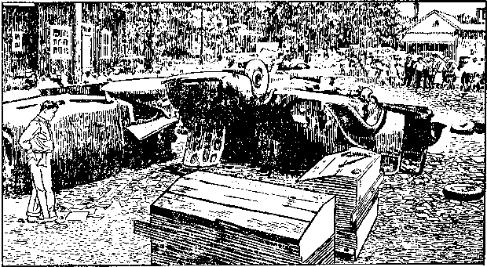
CARS OVERTURNED BY MOB AT LITCHFIELD, ILLINOIS, JUNE 16, 1940
h Harlan Fiske Stone, by Alpheus Thomas Mason (New York, 1956: The Viking Press), p. 525. 1 Ibid., pp. 531-533.
number of arrests. For the years 1940, 1941 and 1942 the record shows there were more than 3,000 individual arrests each year. In many instances local officials and law-enforcement officers co-operated or participated in this unlawful activity. Here is another account of the adverse effects of the Gobitis decision on the public.
TOM [interrupting]: I’m beginning to believe more and more that Judge Rutherford knew what he was talking about when he warned Americans in 1938 of the growing Fascist threat in the United States.
John: well, listen to some of the lawless, un-American acts perpetrated against Jehovah’s witnesses during this period:
Because the many hundreds of prosecutions did not deter the Lord’s people in singing the praises of Jehovah from door to door and on the streets, the enemy, acting under demon influence, caused violent opposition, in the form of mobs, against Kingdom publishers. This type of persecution renewed itself after a lapse of many years, beginning in a few instances in Pennsylvania and Ohio in the fall of 1939. Mob violence took a tremendous impetus in May, 1940, beginning at Del Rio, Texas, and spreading immediately to other small towns in Texas and many other states.
On June 3, 1940, the Supreme Court of the United States ruled that school boards may require children in public schools to salute the flag or be excluded. The public press of the nation, under influence of the Roman Catholic Hierarchy, greatly distorted this opinion, and falsely made it appear that every person must salute the flag. As a consequence of such distortion the un-American Legion under demon influence and the Roman Catholic Hierarchy thereafter fanned the already-kindled flame of mob violence which had broken out in Texas at its instance, and then mob violence spread rapidly to every state in the Union.
Since May, 1940, the Hierarchy and the American Legion, through such mobs that have taken the law into their own hands, violently worked havoc indescribable. Jehovah’s witnesses have been assaulted, beaten, kidnaped, driven out of towns, counties and states, tarred and feathered, forced to drink castor oil, tied together and chased like dumb beasts through the streets, castrated and maimed, taunted and insulted by demonized crowds, jailed by the hundreds without charge and held incommuni-
j 1941 Yearbook, pp. 96, 97.
cado and denied the privilege of conferring with relatives, friends or lawyers. Many other hundreds have been jailed and held in so-called “protective custody”; some have been shot in the nighttime; some threatened with hanging and beaten into unconsciousness. Numerous varieties of mob violence have occurred. Many have had their clothes torn from them, their Bibles and other literature seized and publicly burned; their automobiles, trailers, homes and assembly places wrecked and fired, resulting in damages totaling very many thousands of dollars.
This demonized violence has completely possessed the people and officials in hundreds of communities of America, so that they have falsely charged Jehovah’s witnesses with sedition and like crimes of being “against the government”. This character of persecution flared highest in Kentucky, Missouri and Indiana. In Kentucky ten brethren await trial for sedition, which carries a maximum penalty of twenty-one years in the penitentiary. In Indiana two harmless women have been convicted of “riotous conspiracy” because of possessing literature which the American Legion terms as being “against the government”, and have been sentenced to ten years in the penitentiary.
In numerous instances where trials have been held in mob-ruled communities, lawyers as well as witnesses have been mobbed and beaten while attending court.
In almost every case where there has been mob violence the public officials have stood idly by and refused to give protection, and in scores of instances the officers of the law have participated in the mobs and sometimes actually led the mobs.i
So intense did this persecution become that United States Solicitor General Francis Biddle and Mrs. Eleanor Roosevelt, wife of the then president of the United States, felt called upon to make public appeals for a discontinuance of such practices. The Solicitor General in a broadcast over a coast-to-coast network of the National Broadcasting Company on June 16, 1940, said:
Jehovah’s witnesses have been repeatedly set upon and beaten. They had committed no crime; but the mob adjudged they had, and meted out mob punishment. The Attorney General has ordered an immediate investigation of these outrages.
The people must be alert and watchful, and above all cool and sane. Since mob violence will make the government’s task infinitely more difficult, it will not be tolerated. We shall not defeat the Nazi evil by emulating its methods.k
Then a group interested in civil liberties published a booklet describing these outrages. Here is a brief quotation:
Not since the persecution of the Mormons years ago has any religious minority been so bitterly and generally attacked as the members of Jehovah’s Witnesses—particularly in the spring and summer of 1940. While this was the peak of the attacks upon them, hostility and discrimination have been rife for several years.
Documents filed with the Department of Justice by attorneys for Jehovah’s Witnesses and the American Civil Liberties Union showed over three hundred thirty-five instances of mob violence in forty-four states during 1940, involving one thousand four hundred eighty-eight men, women, and children.
The cause of this extraordinary outbreak was the “patriotic” fear aroused by the success of the Nazi armies in Europe and the panic which seized the country at the imagined invasion of the United States. From California to Maine this emotion expressed itself in searching out “Fifth Columnists” and “Trojan Horses”—phrases which sprang into almost immediate popularity to characterize those thought to be opposed to national defense.
Jehovah’s Witnesses were the object of immediate and widespread attack, chiefly because of their position on flag saluting, well advertised by their widespread distribution of the May 29, 1940, issue of the magazine Consolation giving details of the hearing before the U.S. Supreme Court of the Gobitis flag salute case. Following the decision of June 3, 1940, in which school boards were upheld in their right to expel children of this sect who refused to salute the flag, this propaganda was taken by some as seditious.1
THE 1940 CONVENTION PROVIDES AN UPLIFT
Then, in the midst of the legal battles and while persecution of the Witnesses was reaching a peak, it was decided that an assembly should be held. You might think this would be a bad time for a convention, but not so. Jehovah’s witnesses were determined to continue on regardless of opposition, and conventions have always been a unifying source of great strength to God’s people from the spiritual nourishment received and from the Christian fellowship provided.
So preparations were made at the Ohio State Fair Grounds in Columbus, Ohio. The dates were to be July 24-28, 1940. At the same time assemblies were arranged for in more than thirty other cities of the United States. They were to be tied in by private land wires uniting all as one convention. However, under pressure from the Roman Catholic Hierarchy, officials of the State of Ohio canceled the contract and denied the Witnesses the right to use the Fair Grounds.
Immediately a petition was circulated throughout the country and within a few days 2,042,136 signers demanded that Governor Bricker and the Ohio State Fair Grounds Association allow Jehovah’s witnesses to use the Fair Grounds for their Christian assembly. Governor Bricker refused to honor the petitioners’ request and so the Witnesses had to look elsewhere for their key city.
Under pressure also many of the other assembly facilities were canceled so that, when the convention convened, only eighteen cities in all provided convention accommodations to the Witnesses. When it was certain that the Fair Grounds would no longer be obtainable, the key city was moved to Detroit, Michigan, and in spite of the opposition a very successful assembly was held there in a series of large automobile garages connected together. Judge Rutherford was failing in health but was able nevertheless to appear three times before the assembly. One of the outstanding talks was the lecture on “Times and Seasons.” There were 35,000 Witnesses in attendance at Detroit. At the conclusion of this talk the book Religion was released, 30,000 of which were immediately placed with the conventioners in all parts of the country. High light of the assembly was the talk “Religion as a World Remedy,” which particularly exposed false religion and the corruption of the wicked systems operating in the name of Christ Jesus. The talk was recorded on phonograph discs, as well as being printed, and was given wide distribution following the assembly.
k Appellees’ Brief. West Virginia State Board of Education v. Barnette, p. 74. 1 The Persecution of Jehovah’s Witnesses, by American Civil Liberties Union, January, 1941, p. 3.
This public talk Sunday, July 28, was delivered to 45,000 people in Detroit who packed out the convention meeting place and Eastern Star Temple, thousands being in the streets and exit points receiving the message over loud-speakers. Private lines took the talk also to the trailer camp, where 12,000 persons were assembled to hear this lecture. Those convened in the seventeen other cities brought the total to nearly 80,000 persons listening to this expose of religion. The two talks, “Times and Seasons,” and “Religion as a World Remedy,” were released in the booklet Conspiracy Against Democracy.
Other high lights of the assembly were the pioneer meeting, model service meeting, Watchtower study and the introduction of the new vertical-type phonograph, which could be played in an upright position simply by turning a button without opening the cover. This was designed and built by brothers at Brooklyn Bethel and greatly facilitated the door-to-door use of the phonograph. In addition Kingdom News, No. 6, was released at the convention and more than 2,000,000 copies were taken home for immediate distribution.
Even this assembly in Detroit had been held in the face of great opposition. Tremendous pressure was brought to bear by the local American Legion and the Roman Catholic Hierarchy in Detroit to break up the meeting and cancel the con-
m 1941 Yearbook, pp. 87-92. n Ibid., pp. 43, 44. tract that had been paid for in advance. It was necessary to have a large guard of many brothers on duty twenty-four hours a day to protect the property before and during the assembly.
Newspaper reporters and photographers and representatives of practically every type of magazine were on hand because of the intense persecution Jehovah’s witnesses had been receiving throughout the country, which resulted in the greatest publicity that Jehovah’s witnesses had ever had up to that time in the public press.m
Many reports written during this period were not favorable to the Witnesses, though, of course, there were those that were, such as this editorial from the Michigan Christian Advocate of August 8, 1940:
Here is a group that, in this year of our Lord 1940, is not ashamed to witness for Christ in an unmistakable manner. It believes in Jesus and makes it known. In a day when religion has taken on a kind of compromising sophistication, when some church members think membership an end instead of a beginning of witnessing for Christ, when all too many of us hesitate to speak a testimony for fear of embarrassment, these witnesses come on the contemporary scene as a challenge to our pagan complacency. . . .
Perhaps more important for the present than any of the foregoing is the attention this sect has brought to the problem of religious freedom in a nation which is fast becoming fascist. The fact that this group is a small minority does not change the principles of religious freedom which have been violated in the persecution of it.n
Many persons of good will were enlightened by all this publicity and responded favorably to the work as a result of it.
TWO EXTREMES IN POLICE ACTION
A little over a month before this assembly, on Flag Day, June 14, 1940, the Society’s Kingdom Farm at South Lansing, New York, was threatened with a mob attack. The farm management had been tipped off by an elderly man who, the night before at a tavern in South Lansing, had overheard a conversation to the effect that the American Legion from all parts of western New York state were going to converge on the Society’s property the following day, Flag Day, to burn down the buildings.
The farm servant immediately became concerned at this report and notified the Tompkins County sheriff, who also took the matter seriously. This sheriff believed in upholding the law and, although he had just a few men, he determined to prevent any violence. He too had had reports of this proposed move against the farm and called upon the state police for assistance.
Sure enough, at six o’clock on June 14 hundreds of cars began to appear from nowhere to travel by the Society’s property on Highway 34. Each car held four or five men. But the police were prepared. State troopers and deputy sheriffs were protecting all the buildings of the Society and the state police had passed a special regulation that no car could slow down or park from one end of the Society’s property down the road a half mile to the other end. Spaced at intervals for this entire distance were police to keep the cars moving. No car could stop to let out men to set fire to the buildings. The police remained on the scene until after midnight, forcing all cars to keep moving. In this manner this threatened attack on Kingdom Farm was averted. It is estimated there were nearly 1,000 cars and possibly 4,000 men who had come from all parts of western New York state to destroy the Society’s property at the farm.
LOIS: Well, it’s encouraging to hear that there were at least some public officials who were willing to do their duty.
JOHN: yes, there were, and their success in putting down mob violence serves only to highlight even more sharply the gross neglect of duty on the part of those who refused police protection to Jehovah’s witnesses.
Not all the police were as willing as the sheriff of Tompkins County to uphold the law. One outrageous case of police brutality occurred in West Virginia. On June 29, 1941, seven male Witnesses went to Richwood, West Virginia, to engage in the preaching work. Three of them stopped at the town hall in order to present a letter to the mayor requesting police protection while carrying on their work. The other four remained in the car. This move was considered necessary because, just a year previous, two of these Witnesses had been ordered to leave town for distributing literature and circulating the petition in regard to the national assembly at the Ohio State Fair Grounds, Columbus, Ohio.
The Witnesses did not find the mayor in, but they met Bert Stewart, chief of police of Richwood, and Martin L. Catlette, deputy sheriff of Nicholas County and a member of the American Legion. Catlette was one of the six members of the Richwood American Legion Post who had ordered the Witnesses out of town the year before. The letter requesting police protection was then delivered to Chief of Police Stewart, but instead of his acting upon it, the three Witnesses were ushered into the mayor’s office, which Catlette shared in his duties as a deputy sheriff taxcollector, and they were there detained while Catlette was wearing his official badge and the chief of police was acting as doorkeeper.
Catlette called other members of the American Legion by phone and said, among other things: “We have three of the S—O—B’s here and we are rounding up the others.” While a mob estimated at about 1,500 persons gathered, the four other Witnesses were brought into the office. Then Catlette removed his badge as deputy sheriff and stated: “What is done from here on will not be done in the name of the law.” Three of the Witnesses were forced to drink eight ounces of castor oil and another, who protested and at first refused, was required to drink sixteen ounces of castor oil, after having been threatened by a doctor with a stomach pump.
All seven of the Witnesses were then tied together along a large rope about three or four feet apart and were marched to the front of the Richwood post office, on the top of which an American flag was flying. Catlette read the preamble to the American Legion Constitution and all persons present saluted the flag except the Witnesses. The Witnesses were then marched through the streets of the town of Richwood and out of its corporate limits still bound to the rope, and outside of town were released and restored to their automobile, which had been damaged and which had been covered with castor oil and a number of uncomplimentary inscriptions and were advised never to return.
From the time they had entered the office of the deputy sheriff about 9:30 in the morning until some time between three and four o’clock in the afternoon, when they were released, none of them had received food or drink, except the castor oil, nor were they permitted to go to a toilet.
Both Catlette and Stewart were convicted of violating the Civil Rights Act in conspiring to deprive Jehovah’s witnesses of their rights to preach the gospel and explain their conscientious refusal to salute the American flag. Convicted in the
o Catlette v. United States, 132 F. 2d 902, 906 (1943).
United States District Court for the Southern District of West Virginia, Catlette appealed his case, but the United States Court of Appeals for the Fourth Circuit upheld the decision of the lower court and stated, in part:
Catlette’s argument is, therefore, reduced to nothing more than the notion that an officer can divorce himself from his official capacity merely by removing his badge of office before embarking on a course of illegal conduct, and thereby blithely absolve himself from any liability for his ensuing nefarious acts. We must condemn this insidious suggestion that an officer may thus lightly shuffle off his official role. To accept such a legalistic dualism would gut the constitutional safeguards and render law enforcement a shameful mockery.o
Catlette was sentenced to a fine of $1,000 and to one year’s imprisonment in the federal prison camp at Mill Point, West Virginia.
LOIS: In view of all that opposition and mob violence, it is a wonder to me how you were able to keep the work going at all.
JOHN: It's true it was an extremely trying time even in the United States, but in this country at least the work was not declared illegal, forcing us to go underground. So during these days of legal warfare and of fighting off demonized mobs, Jehovah’s witnesses were relatively free to fulfill the divine will in an internal strengthening and maturing of the theocratic structure of the organization.
At this point we should consider some of the developments that were taking place in the methods of carrying on the work, because the next few years were to see some decided changes in the Society’s educational program.
Expanding
the Preaching Service
to Find and Feed
the 66Great Crowd11
^JOHN: When the year 1938 brought into the ranks of Jehovah’s witnesses a completely theocratic arrangement, the structure of the organization was relatively simple. You remember the organization had been designed and had developed primarily to accommodate the work of gathering and feeding the anointed remnant. But after 1931 and particularly since 1935 the anointed recognized a need to look for the “other sheep” and prepare for a real increase. The beginning of this intensified campaign brought to light many significant factors regarding the organization and the work itself. Basically the features of the preaching service were all begun when Pastor Russell was administering the affairs of the Society, but now, with changing conditions internally and externally, various developments in the techniques were necessary.
For example, one of the first works performed by the early associates of the Society was the volunteer service. You recall that this service was carried on by many of the anointed and consisted of the free distribution of tracts on Sunday mornings to persons as they left church or from home to home. This work continued until the disruption of the entire preaching program in 1918, but when the other features of the service were revived in 1919 and thereafter, the volunteer service as such was not pushed and it was eventually discontinued.
Then, in February, 1940, a new provision for street work was opened up. This was not to be limited to offering literature to churchgoers. Instead, Jehovah’s witnesses took positions on busy street corners in the business sections of town and offered to passers-by the two magazines The Watchtower and Consolation, each on a contribution of 5c a copy. Specially designed magazine bags were worn over the shoulder with lettering to identify the two journals and the contribution price. To millions of people it now became a familiar sight to see these Witnesses standing weekly on the street corners calling aloud their arresting announcement of the theocratic governments Beginning too as it did in the midst of nationwide persecution, this street work was to provide a striking target for those bent on framing mischief by law and violently opposing these peaceful messengers of good will.
Another feature of service that began to assume an important place in the preaching program was the follow-up work, that is, making special calls on those who manifested interest and encouraging Bible study. The need for Bible study, especially group Bible study, was recognized from the time Pastor Russell organized the first group of his associates in Allegheny-Pittsburgh, Pennsylvania, in 1872. From that time forward it had formed an essential part of the program of spiritual development of all associated with the “eccle-sias” or congregations. It is only natural therefore that newly interested persons would be drawn into such studies, and if they were found by colporteurs in isolated territory, it would be expected that studies would be encouraged in their own homes. The Watch Tower in 1907 said:
A report from one group of Colporteurs recently received showed that after their canvass
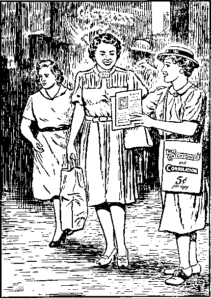
MAGAZINE STREET WORK, ST. LOUIS, MISSOURI, 1940
of a small city they were able to locate a number of deeply interested Christians, some of whom had purchased from them, while others already had the Dawns in their possession. These were gathered to a little meeting in one of their homes. The Colporteur talked over with them the Divine Plan of the Ages for a whole Sunday, and on the following Sunday he urged that they have regular meetings. This was decided upon by a vote of twenty, and one of their number, who manifested not only a deep consecration but a clear knowledge of the Truth, was chosen as their Elder or leader for further cooperation in the studying together of the Divine Plan.b
Soon this method of extending the study activities of the Witnesses was taken up by the congregations themselves. You remember this was the class extension work that we discussed in some detail. Regular congregation book studies were organized following a series of lectures and, if interest warranted it and a sufficient number attended, new congregations would be formed. This class extension work began in 1911.° You will recall too that when the new book The Harp of God was released in 1921 a special course of Bible study was provided for the book’s obtainers.
With this background of development it is not surprising therefore that when the portable phonograph was pressed into service in 1933 one of its first practical uses in the field was in the back-call feature of service.d By 1936 the Society was emphasizing and encouraging these return visits on all interested persons. It was urged
at all back calls take the phonograph; and if you know you will be back in the territory the following day, you can often leave it overnight with some interested, reliable persons, for them to use until you pick it up the next day for your field services
In connection with such return visits the publishers were encouraged to invite these persons of good will to the regularly conducted congregation book studies then being held in the book Riches.
b W 1907, p. 372. W 1911, pp. 453, 454. d 1935 Yearbook, pp. 39, 40. e Informant, Dec., 1936.
Then in 1937 when the Society withdrew from commercial radio broadcasts a new instrument was released to make the back-call work more effective. This was Model Study booklet No. 1, designed to be used with the Society’s booklet Uncovered and in conjunction with the phonograph record series entitled “Exposed.” The Uncovered booklet and record series were produced by the Society as a result of the petition addressed to radio station WIP.
LOIS: I remember, it was a petition requesting a debate between Judge Rutherford and some Roman Catholic official. I believe you said station WIP ignored the petition and no Catholic official would debate.
JOHN: That’s right. So the Society issued the booklet Uncovered and the phonograph record series “Exposed,” presenting basic Bible doctrines particularly as a refutation of false doctrines taught by the Roman Catholic Church.f
This feature of the educational program designed for the benefit of the “great crowd” now manifesting themselves enabled the Kingdom publisher to sit down in the home of the person of good will and conduct an orderly and systematic study in the Bible. The Witness making the return call would first play the phonograph record while the householder followed in the booklet Uncovered. Then questions would be considered from the Model Study question booklet and these would be answered by the householder with the aid of the Bible and the Scripture citations in the booklet. In this way the householder became acquainted with God’s Word and received answers to his questions directly from the Bible. It was not until 1938, though, that a written record was made of these return visits and they were reported to the Society. In the first year of reporting, the record showed 298,489 back-calls made in the United States.®
During 1940 Model Study booklet No. 2 and the recordings “Government and Peace” and “Victory” were in use. An interesting variation of the class extension work was tried out in Britain and described in the annual report of the Society’s president:
These timely instruments proved to be very effective in teaching people of good-will the message of The Theocracy and an aid in building up such good-will interest. With Brother Rutherford’s approval a nation-wide campaign of public model studies was organized. . . . The extension service consisted of a series of four weekly meetings held at a good public hall. The people were invited to attend by the regular distribution of handbills and personal letters addressed to those known as interested. The British public enjoyed getting questions answered directly from the Bible. The Model Study booklet No. 2 was used as the basis for these questions and answers. Our records show that 4,176 such public meetings were held during the year, with a combined attendance of 157,663, of which 31,111 were strangers. This extension work resulted in the building up of almost 40 new service units and contributed greatly toward our 3,000 new publishers for the year.11
EXPANDING THE VISITATION PROGRAM
Another need the Society had always recognized that must be met was the strengthening and upbuilding of the congregations by regular visits from a direct representative of the Society’s headquarters. That is why Brother Russell himself personally made visits to the various congregations and, as the number grew, used other qualified brothers to assist in this important function.
tom: Those were the pilgrims, I believe you said.
JOHN: yes, and you recall the work began in 1894.’ An effort was made to reach each congregation in the United States and Canada at least twice a year by these visits. Then in 1928 the name designating
f Informant, Oct., 1937. g 1939 Yearbook, p. 59. h 1941 Yearbook, pp. 109, 110. i W 1894, p. 287.
these servants was changed to “regional service director” and their privileges of service were enlarged to “visit the classes, instruct them how to organize and to work efficiently in the field, and at the same time serve them by delivering discourses upon the present truth.”1
By 1929 this feature of the service had increased to the point that thirteen English-speaking, one Ukrainian and two Polish brothers were engaging in the regional service work. The Yearbook reports on this:
The English brethren visited and served 902 classes for a period of three days or more at each class, and gave instruction to 17,589 different brethren in the service work. They traveled a total of 111,034 miles, all at the expense of the head office of the Society. Much of the increased activities of the classes in the field is due to the efforts of these regional service directors. They have helped the classes to study and overcome adverse conditions in their territory, and enabled them to more thoroughly perfect their plans for carrying on the work.k
Recognizing Jehovah’s blessing upon this more centrally organized arrangement of service, in 1932 the Society began to take a more direct interest in the local activities of the congregations. Do you remember what that step was toward fuller theocratic organization?
LOIS: Wasn’t that when it was shown that electing of individuals to the office of “elder” was unscriptural?
JOHN: That’s right. At the same time The Watchtower presented Scriptural authority for the Society to appoint a brother to serve each local company as a service director.1 At first only brothers who were of the anointed remnant were selected for such positions,™ but in 1937, when the relationship of the “great crowd” was identified as that of “companions” to the anointed, some from that great crowd also were used in such service positions.11
Gradually the New World society was being strengthened and gathered together into a more solid, unified association. With emphasis being placed on the education of the people in God’s principles as recorded in the Bible, the success of this New World society was assured. Now, with the theocratic organization beginning to follow more closely the pattern of the primitive congregation of the first century, all the Kingdom publishers throughout the world were able to receive instructions from headquarters and be assisted in carrying them out by brothers appointed by the Society.
The relationship of these Society appointees to the brothers in the congregations was emphasized in 1936, when, in July, the Society announced that the name “director” would no longer be used to designate the position “company director” and “regional service director.” Instead, brothers holding these positions would be referred to as “company servant” and “regional servant.” It was at this same time that the name of the monthly service bulletin, “Director,” was changed to “Informant.”0
It had been learned from the experiences of the divisional campaigns, which operated from 1933 to 1935, that congregations banded together in open field witnessing were able to withstand persecution and opposition and that unusual unity and strength were manifested thereby and deepened. This led to the commencement of the zone service.
About twenty congregations in a particular area were formed together as a “zone.” The Society appointed a “zone servant” to spend one week with each congregation to strengthen it on an organizational basis and to aid it in its field witnessing activity. From time to time a “zone assembly” would be held with the twenty or more participating congregations getting together for further instructions and spiritual upbuilding. Special servants were sent from the Society’s headquarters to serve at these assemblies. October 1, 1938, the Society made provision for 148 zone servants and eleven regional servants to cover the country regularly.” During 1939 a redivision of the territory made provision for 153 zones and six regions, each covered by its own servant.*3
j 1929 Yearbook, pp. 56, 57; W 1929, p. 143. k 1930 Yearbook, pp. 49-51. 1 1933 Yearbook, p. 19. See also 1935 Yearbook, p. 47. m W 1932, pp. 263, 264. n W 1937, p. 247. o Informant, July, 1936.
REORGANIZING THE COLPORTEUR SERVICE
Now there is another feature of the service that came in for considerable readjustment and improved efficiency at this point. This was the service of the colporteurs, later called pioneers. The 1932 report of the Society shows a splendid work being done by these pioneer witnesses, many of whom were working in isolated territory throughout the United States. In addition, pioneers were working outside the United States under the supervision of the headquarters office in Brooklyn, extending their operations into the Canal Zone; Colombia, South America; Costa Rica; Cuba; Dutch Guiana; Hawaii; Honduras; El Salvador and the Philippine Islands. Pioneers were particularly active among the foreign-speaking peoples of the United States as well, there being among this faithful band in the field those who were born in thirty different countries outside the United States and who had immigrated to America and who were working among people of their own national extraction.1-
Then on the eve of full theocratic organization an important forward step was taken in the ranks of the pioneer service. It is outlined in the Society’s report for the year 1937:
At the conclusion of the fiscal year the Society organized a company of “special pioneers”, equipping these for field service and sending them forth to do special work. Each one of such pioneers is equipped with a phonograph and records, which will be daily used in the witness work. These special pioneers will receive necessary aid from the Society and will devote their entire time to calling on the people and personally presenting to them the Kingdom message, both by phonograph and through the printed publications. It confidently appears that this method of preaching the gospel will be more effective than the broadcasting by radio stations, and money that would otherwise have been used to pay commercial rates for programs on the radio will now be employed to increase the means of giving testimony by phonograph.®
TAKING THE LEAD WITH THE PHONOGRAPH
These special pioneers took the lead in the phonograph work when the Society voluntarily withdrew from commercial use of the radio.
To learn of the effectiveness of this new program let’s read from the 1940 Yearbook, which presents the report for the 1939 service year:
The special pioneer work was announced at the Columbus convention in September, 1937, and that work has continued now for two years with good results. When the special pioneer work began the company publishers were not convinced of the value of making back-calls and the regular daily use of the phonograph.
About 200 specially chosen pioneers throughout the country took upon themselves the responsibility of really putting to use the phonograph. They were sent into the large cities where companies were organized, and there it was proved, without question of doubt, that the phonograph had an important place in the proclamation of the Kingdom. In the past two years, because the publishers of the Kingdom became phonograph-minded, more than 20,000 phonographs had to be manufactured at the Brooklyn plant, and then we were unable to keep up with the demand. During the past year the special pioneer group has been increased to 300 at one time, but the average for the year shows there were 256 special pioneers engaging in the work regularly each month.
In the year these special pioneers made
p 1939 Yearbook, pp. 52, 77. q 1940 Yearbook, p. 72. r 1932 Yearbook, pp. 56-63. s 1938 Yearbook, p. 51.
516,982 setups. They had an attendance of over one million persons who heard the lectures, and these few brethren made 124,206 back-calls. The special pioneer work as originally outlined at the Columbus convention has accomplished its purpose in that all publishers now throughout the world know that the phonograph is a great aid in advancing the Kingdom interests.
To aid these special pioneers during the past year to accomplish the work they set out to do, the Society assisted them to the extent of $41,123.98.
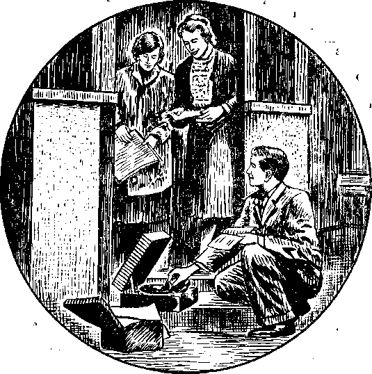
DOORSTEP SETUP, TILLINGHAM IN ESSEX, ENGLAND, 1940
The special pioneer work now takes on other duties. Those who are listed by the Society as special pioneers will now assist the zone servants where assigned throughout the country. Their principal work from now on will be to assist the zone servant in the organization of new companies, and in those companies that are slow in moving ahead with the Kingdom interests the Society is appointing a special pioneer as its company servant, so that the work may progress at a greater pace. These special pioneers devote all their time in the Kingdom service and will be a real aid to the publishers throughout the country at the points where they are assigned.4
In this way not only did the Society provide a new theocratic arrangement whereby the Kingdom work might be advanced in unity throughout the world, but it also provided qualified servants to assist the brothers in the individual responsibilities that each Kingdom publisher bore.
UNITY AND ANOTHER NEW WORK
However, in 1941, Brother Rutherford wrote a letter to the brothers that was
1 1940 Yearbook, pp. 66, 67. published in the November Informant. His letter was dated October 24, 1941, and addressed “To all Publishers for the Theocracy:”
From and after December 1, 1941, the regional and zone servants will be discontinued and the regional and zone servants will be assigned to the work hereinafter described. Unity: For some time the Theocratic organization has been operating, and by now all companies have had ample opportunity to be in full harmonious action and able to carry on without the aid of regional or zone servants. The church, including the remnant yet on earth, is now at full unity and everyone should be able to assume and carry out his or her responsible duty without aid from any human creature. Company servants and all other servants of each company know their respective duties, and each one must be diligent to perform such duties fully and faithfully. Everyone in the or-ganization, including the remnant and their companions, has a duty to perform,
and each one should lean on the Lord and look to the Lord for admonition and instruction and follow specifically the instruction given at Proverbs 3:5, 6. . . .
The Work: The “strange work” of the Lord is drawing to an end, and requires haste, with watchfulness, sobriety, and with prayer. Since the organization of God’s people on earth is in good condition, there must be one united, forward movement of all the publishers or workers, because all are engaged in one work of publishing or advertising The Theocratic Government. With full determination to be obedient to the Lord, let these words of the apostle be a guiding slogan: “This one thing I do,” that is, to advertise The Theocracy. . . .
From and after December 1, 1941, the following will be the method of work for all publishers: The phonograph and the Children book, together with the booklet Comfort All
That Mourn, will be the chief instruments to begin the work. Each publisher being assigned a respective territory will fully and thoroughly work that territory, the chief objective being to organize study classes in the Children book, to be carried forward systematically until it is deemed wise to use other literature in these studies.
The president’s letter then continued to outline in detail how this work was to be done. Every home in the territory was to be called upon, none were to be skipped. The phonograph with the record “Children” was to be used to introduce the publisher. The Children book was to be placed wherever possible and then arrangements were to be made for a back-call to begin a study. Where several in the neighborhood had obtained the book and manifested interest an effort was to be made to gather them together into one study.
tom: That sounds almost like another variation of the class extension work.
john: In a sense it was, although no public talks were given in connection with the program. Studies were to be held once each week, and after a section of territory had been thoroughly covered and studies were being conducted, the publisher was to move on to another small section of territory and repeat this same procedure. The special publishers, or special pioneers, were now being moved almost exclusively into isolated territory where no company organization existed. In these assignments the special pioneers were to work as just outlined until the entire territory had been covered at least four times. Only if sufficient interest manifested itself would they be continued in that assignment beyond that period.
After about one year’s activity in this new work for special pioneers this report appeared in the 1943 Yearbook:
Early in the fiscal year the Society organized a new work. It was organized under the name of “special pioneer publishers”, and when it began there were 784 brethren reporting for this field of service. It has grown and expanded until now it has reached a total of 1,578 special pioneer publishers reporting each month. These brethren have maintained a splendid record in the field service even though great opposition has been brought to bear against them in many parts of the country. As a group they have been very consistent in their activity, averaging 175 hours a month in the field service, which is a requirement, and also conducting more than 50 back-calls and arranging for studies in the publications of the Society.
It is interesting to note that less than 2 percent of the publishers in the United States, which they represent, put in more than 12 percent of the hours, make 17 percent of the back-calls, and place 13 percent of all the literature, in the country. . . .
During the past year there were 259 cities completed; that is, the special publishers have gone over that territory at least four times. The new companies organized by these pioneer publishers during the year totaled 244. . . .
In 35 cities in the United States it was impossible to complete their work of witnessing, due to mob violence. Mississippi stands out as the principal state in violation of constitutional privileges. Nine cities in that state alone were abandoned because of mob violence. Texas came next, with six cities driving out Jehovah’s witnesses. ... It may be some time later that other publishers can return and reach the people of good-will.u
You must remember that during these years of development from 1938 onward persecution in the United States was intense. For the years 1940, 1941 and 1942 there were over 3,000 arrests each year, with about 600 mobbings reported for 1940 and about 300 for 1941. But Jehovah’s witnesses were determined to fulfill the divine purpose for them; so in their eyes there was only one way to go and that was forward.
J. F. RUTHERFORD’S LAST ASSEMBLY
Lois: you mentioned a book called “Children” in connection with the new work that began in December, 1941. Was that a new publication of the Society?
at an assembly in St. Louis, in Judge Rutherford’s home state, Missouri. That convention, August 6-10, 1941, was to be the last assembly that the Society’s second president, Joseph F. Rutherford, was to attend, and it was at this assembly that, for the first time, the great issue of universal domination involving the supreme sovereignty of Jehovah was made clear to God’s people.
Considerable opposition was manifested toward the entire assembly arrangement. Although much pressure was brought to bear by Catholic Action and the Veterans of Foreign Wars, the management of the arena where the assembly was to be held refused to cancel. Immediately, through the Catholic churches, propaganda was circulated among housewives, causing them to cancel rooming accommodations that they had rented to Jehovah’s witnesses for those planning to come to the assembly. Newspaper publicity was unfavorable and even some union officials interfered with installation plans until they recognized by personal observation that the work of Jehovah’s witnesses was truly Christian. Then, impressed by the spirit displayed by those engaged in preconvention activity, they co-operated fully and preconvention activities progressed. To add to the facilities for housing, a trailer city was arranged that grew up in three days to a population of over 15,000.
The opening day of the assembly the Society’s president delivered a talk on the subject “Integrity,” which was published in The Watchtower of August 15, 1941. It was in this talk that the issue of universal sovereignty was discussed. In analyzing the drama of Job the speaker said:
The issue between Satan and Jehovah was not raised for the first time in Job’s day, but centuries before that time. The prophetic drama of Job discloses what Jehovah requires of all creatures who shall receive his boundless blessings. While the question for determination raised by the prophetic drama was and is, "Can Jehovah put men on earth who, under the most severe test, will prove faithful and true to God?” yet that great issue embraces much more. The Scriptural record is that . . . long before that time Satan had challenged the supremacy of Jehovah and raised the great issue. Many other Scriptures support that conclusion. Satan’s accusing charge was made before the angels of heaven, and hence was known among all the host of heaven, but not properly understandable and appreciated amongst men till the present time. God’s due time now appears when those on earth devoted to him are given an understanding of the real issue. The primary issue raised by Satan’s defiant challenge was and is that of Universal Domination."
One of the high lights of the assembly was the program Sunday morning, August 10, and previously announced as “Children’s Day.” The children had been registering at the assembly from the time they arrived; and on Sunday morning, in a specially reserved section occupying half the space in the arena and in a place similarly designated at trailer city, 15,000 children between the ages of five and eighteen were seated. The convention report expressed the reaction of all others in attendance:
It was a sight that is beyond description in words; and this session of the convention made one feel glad more than ever that he knew the Lord. Looking at these children, with their beaming faces, youth, and gladness of heart, it just did something to one that couldn’t be expressed; but it brought to mind the words, ‘Out of the mouths of babes Jehovah has perfected praise.’"'
Brother Rutherford then delivered a talk full of hope for the great multitude that had assembled at this place by the thousands. Then after addressing the convention in general he directed his remarks to the 15,000 children seated centrally before him. The report continues:
One thing that will always stand out in the minds of those who attended the convention . . . will be the sight of these children rising in response to the statement, “All of you children who have agreed to do the will of God and have taken your stand on the side of the Theocratic Government by Christ Jesus and have agreed to obey God and His King, please stand up.” They rose as one body; and then Brother Rutherford exclaimed, “Behold, more than 15,000 new witnesses to the Kingdom!” The very timbers in the roof of The Arena rattled because of applause and shouts of joy. It was a sight never to be forgotten.x
As a climax to this stirring talk to the children Brother Rutherford introduced the new book Children, also received with shouts of joy and tremendous applause.
The public meeting announced for Saturday was on the subject “Comfort All That Mourn.” Because of the great publicity that had attended the preconvention activity great crowds came to this talk on Saturday afternoon. This talk on Daniel 11 was designed to show the end of the Axis powers, and immediately following this talk the brothers went forth in thousands to distribute the lecture in printed form. The brothers took away from the assembly grounds 450,000 copies of the booklet containing the talk “Comfort All That Mourn,” and the greater portion were placed in the hands of the people that day.y
DEATH OF JOSEPH F. RUTHERFORD
At the time of this convention Brother Rutherford was seventy-two years of age, and from then on he continued to decline rapidly in health until finally on January 8, 1942, he sealed his ministry in death. He had served as president of the Watch Tower Bible and Tract Society for twenty-five years and two days. Official notice of his death appeared in The Watchtower:
To all Lovers of The Theocracy: On January 8, 1942, our beloved brother, J. F. Rutherford, faithfully finished his earthly course as a warrior for The Theocratic Government and a minister of the Word of God. Knowing of your deep concern and of your prayers to God for him ever since his serious illness prior to the Detroit Convention of July, 1940, we hasten to notify you.
It was Brother Rutherford’s desire to “die fighting with his boots on”; and this he did. The Lord graciously spared him to complete the report of the 1942 Yearbook of Jehovah’s Witnesses, therein showing that the greatest witness ever given had been accomplished and that the year’s distribution of books and booklets reached the grand total of 36,030,595 copies. He always had foremost in mind to do this one thing, to declare the name of Jehovah and his kingdom, to keep covenant with Him, and to look well to the interests of his brethren. —1 John 3:16.
To him it was a joy and comfort to see and know that all the witnesses of the Lord are following, not any man, but the King Christ Jesus as their Leader, and that they will move on in the work in complete unity of action, as they unanimously expressed at the Theocratic Assembly of Jehovah’s witnesses in St. Louis.
All those standing steadfast for the Theocracy will now not mourn or be disturbed or fearful, but will rejoice that their faithful fellow servant and brother has maintained his integrity toward the Lord, in sickness and in health, through evil report and through good report, and has now entered a higher field of service forever with the Lord.—2 Tim. 4:7, 8.
Brother Rutherford’s consistent faithful activity and unbending devotion to The Theocracy, especially since becoming president of the Society, January 6, 1917, has been and continues to be a true and blessed example to us all as of one who ‘fought a good fight and kept the faith’ and proved worthy of a part in the vindication of Jehovah’s name by Christ Jesus; and for this we give thanks to God.
With you keeping on working, determined, by the Lord’s grace, to let nothing stop us until the Lord’s “strange work” is finished, we are, your brethren and fellow servants, Watchtower Bible and Tract Society, Inc.z
THE THIRD ADMINISTRATION BEGINS
tom: Did death of J. F. Rutherford result in another period of indecision like that experienced at the death of C. T. Russell, the first president of the Society?
john: On the contrary. Listen to this record of the transition as it appeared in The Watchtower:
The Lord’s work never stands still; it is always progressing. It is always on scheduled time. The Lord often changes the personnel of his visible earthly organization, but the work of witnessing to his Theocracy by Christ Jesus goes grandly on. All the opposition that the great adversary can muster cannot interfere with Jehovah’s Theocratic arrangement for doing his “strange work”.
X 1942 Yearbook, pp. 69. 70. y Ibid. , pp. 67, 68. See also W 1941, pp. 283-288. as W 1942, p. 45.
In 1916 the Lord God called to rest one whom he had long used prominently on earth in connection with His work, and the adversary did everything possible to disrupt the work entirely. . . . But this in no wise interfered with the Lord’s accomplishing his purpose through his organization.
Jehovah duly raised up another servant, and the work thereafter increased by leaps and bounds, and all today associated with and active in the Society can bear testimony to the privileges enjoyed in that great work. Now the Lord has called home that faithful servant whom He has greatly used in the proclamation of Jehovah’s name and Kingdom, to receive his reward. But the Lord’s work is now so well organized under the leadership of the Lord himself that there is complete unity and harmony in the field at large, at the Bethel family, and among the members of the boards of directors of both the Pennsylvania and the New York corporation of the Society. There are no “fifth columnists” of the adversary anywhere manifest, as were so noticeable from 1916 to 1918. This of itself is great evidence that Jehovah is working through the hearts of his devoted people, directly guiding them and directing the work of the organization through which he carries on his present work on the earth. . . .
On the afternoon of January 13, 1942, the full membership of the two boards [of the Society’s two corporations] convened in the parlor at the Brooklyn Bethel home. Nathan H. Knorr, who at the last general election at Pittsburgh was elected vice-president, had requested several days before that the members of the boards make it a point to earnestly seek divine wisdom by prayer and meditation, that they might be guided aright; and this they did. The joint meeting opened with prayer, especially requesting that Jehovah God might grant wisdom in the choice of such servants as He desired to represent him in a legal way under the organizations.
After due and careful consideration the following brethren were respectively nominated and unanimously elected, namely, Nathan H. Knorr, as president, and Hayden C. Covington, as vice-president, of the two corporations.
aaW 1942, pp. 61-63.
Later that same day, at a gathering of the Bethel family at Brooklyn, the results of the election were announced by the secretary of the board of directors, and met with an enthusiastic response.aa
From many parts of the world letters and cablegrams were received expressing delight in this choice of president. All manifested eagerness to assist him and cooperate with him in his new position of responsibility.
Now the third administration of the Watch Tower Society was beginning and, as was the case with the second administration, the change came in the midst of a world conflict. World War II in the European theater was already far advanced, and on December 7, 1941, only a month before Judge Rutherford’s death, Japan’s attack on Pearl Harbor precipitated entry of the United States into the struggle. All the major nations of the world were now committed to one side or the other in their fight for supremacy, but as for the New World society, The Watchtower of February 15, 1942, from which we have just read, made this one meaningful comment:
There are several indications that the Lord still has a great work to do before the final battle of Armageddon. To this end it is necessary that his people be in proper condition to fight on as one.
Their weapons were not the weapons of this world’s war but already their effectiveness had been well demonstrated. Still, the progress and unity that Brother Rutherford had come to experience within the organization and which he had described in his letter of October 24, 1941, just before his death, was only a sweet foretaste of what was yet to come through the program of personal ministerial education due to begin.
Building and Planting with a View to
Global Expansion
During the dark days of World War II and simultaneous with the beginning of the third administration of the Society’s management, there opened up a period of intensified education that had not been equaled to that time in the modern history of Jehovah’s witnesses. Emphasis was to be placed more and more on the individual Christian minister’s personal service activity. Already since 1938 a start had been made, but now the “worldwide building program” was due to begin in earnest. The years 1942-1945 were to lay the program’s firm foundation by concentrating on the personal maturity and theocratic advancement of every individual member of the New World society.
This was particularly noticeable at the New World Theocratic Assembly at Cleveland, Ohio, September 18 to 20, 1942. It was at this assembly that the new president of the Society was introduced to Jehovah’s witnesses. All together fifty-one other convention cities in the United States were tied in with the key assembly at Cleveland to hear the outstanding addresses, the principal one being the public talk “Peace —Can It Last?” But this was not the limit
a W 1955. pp. 650, 651.
of this thrilling midwar assembly, for about this same time in thirty-three other countries outside the United States Jehovah’s witnesses convened.
tom: Before you “introduce” the new president to all of Jehovah’s witnesses at the assembly, don’t you think the time is just right for some more vital statistics? Why don’t you give us a little background information first, such as when and where he was born, how long he had been at Bethel, and so on?
john: Very well; here is a brief biographical note published by the Society:
Nathan Homer Knorr was born in Bethlehem, Pennsylvania, in 1905, of American-born parents. He graduated from Allentown (Pennsylvania) High School in June, 1923. At 16 he became associated with the Allentown Congregation of Jehovah’s witnesses, having resigned membership in the Reformed Church. In 1923, at 18, he became a full-time preacher, at which time he had been invited to become a member of the headquarters staff of the Society at Brooklyn Bethel. There he made rapid progress in his ministerial training and later traveled week ends giving Bible lectures to congregations within two hundred miles of Brooklyn. In course of time he was assigned as co-ordinator of all printing activities in the Society’s plant, in 1932 becoming general manager of the publishing office and plant. He was elected in 1934 as one of the directors of the Society’s New York corporation . . . and in 1940 he was made a director and chosen as vice-president of the Pennsylvania corporation, Watch Tower Bible and Tract Society. His election to the presidency of both American societies and of the British corporation, International Bible Students Association, came in January, 1942.&
So you can see, with this background, he actually needed no introduction personally to Jehovah’s witnesses, but all at the assembly knew he was now charged with a new and grave responsibility and all were keenly interested in seeing him take hold of the job and all were praying Jehovah’s blessing on his efforts.
tom: J believe you said too last week that Hayden C. Covington was elected vice-president.
john: That’s right. He had been serving in the legal department and now he succeeded Judge Rutherford as head of the department and continued on as the Society’s lawyer. He was born at Nelta, Hopkins County, Texas, in 1911, graduated from San Antonio School of Law in 1933 and began preaching as one of Jehovah’s witnesses the following year. He joined the Society’s legal staff at headquarters August 21, 1939, and became a member of the New York Bar November, 1941. He continued as vice-president of the Society’s Pennsylvania corporation until October 1, 1945, when the voting membership acted on his letter of September 24, 1945, in which he graciously declined to serve further as a member of the board of directors and as vice-president. This resignation was not an evasion of responsibilities but was rather an effort to comply with what appeared to be the Lord’s will, namely, that all the members of the directorate and the officers be of the anointed remnant. His hope was to be one of the “other sheep,” with prospects of life on earth. He continued to serve as the Society’s lawyer, while one of the anointed remnant was elected vice-president in his stead.b
NO HALTING BY THE NEW ADMINISTRATION
So, although world conditions were critical, and though the arrests and mobbings and world-wide persecution of Jehovah’s witnesses were at their peak, the new administration was by no means inexperienced or hesitant as to the rightful course to pursue. The situation is well summarized in the Society’s annual report for that first year of service following Judge Rutherford’s death. We’ll read from the 1943 Yearbook.
The year 1942 proved to be one of climax for the Lord’s people and seemed to be a year of unusual testing. The war continued throughout the earth. This gave religionists an excuse to see to it that a ban was placed on the activity of Jehovah’s witnesses almost everywhere; in that country, in this island, and even in cities in our own United States, literature was confiscated, brethren were jailed, mobs were formed, and the property of the Lord’s people destroyed. Everywhere, from one end of the earth to the other, it meant that Jehovah’s witnesses had to stand for their lives. By the Lord’s grace they did!
It appeared to the enemy then, in the early part of 1942, when our beloved Brother Rutherford finished his earthly course and received his reward for many years of faithful service, that here now was the final downfall of the organization known as “Jehovah’s witnesses”. Here, it appeared to the enemy, was another “break” for their side. Religionists, framing mischief by law, were crowding Jehovah’s witnesses into a corner, and now “their aggressive leader” was removed from the scene of action and surely the organization would disintegrate.
One newspaper writer said that in 1931, when the Watchtower people took on the new name, Jehovah’s witnesses, this new name would not stick. The writer admitted in the article that she was wrong about that, because the name Jehovah’s witnesses did stick. Now that Judge Rutherford is no longer with the earthly organization, the writer said ‘I will not make any more prophecies about the Watch Tower Society of Jehovah’s witnesses. While many have said the organization will go to pieces, I would not venture that statement, but rather wait and see what happens’. This person seemed to follow the advice of Gamaliel, wherein it was stated that ‘if this be not of God, then it will surely come to nought; but if it be of God it would be rather dangerous to be found fighting against it’. This, however, was the exceptional opinion on the part of the press.0
Rationing restrictions on food and gasoline were in force, yet despite what appeared to the world to be reverses to the Watch Tower Society, plans for the New World Theocratic Assembly began early in March, 1942. Cleveland was selected as the key city and arrangements were eventually made to tie it in with fifty-one other convention cities throughout the United States. Furthermore,
All branches throughout the earth were told of the Assembly and asked if they could join in, even though direct-wire communications could not be set up, due to the war conditions. Such were arranged in Great Britain, Mexico, Cuba, Brazil, Trinidad, South and West Africa, Sweden, Switzerland, Hawaii, Newfoundland, and, by the Lord’s grace, it was possible in many places for the messages that the Lord would have delivered at the main convention at Cleveland to be delivered there. It was truly a world-wide convention under the direction of the great Theocrat and Christ Jesus the King.d
On Friday morning, September 18, the first day of the assembly, the brothers came together in the various auditoriums throughout the land to receive instructions on field service, to get their territories, and to begin advertising the public meeting “Peace—Can It Last?” All convention departments were well organized, provisions being made for rooming accommodations, assigning of territory for field work, bookrooms, cafeterias, volunteer registration booths, the registration of pioneers, the parking of automobiles, in fact, everything was taken care of to supply the needs of the brothers.
GOING AHEAD WITH THE “SWORD OF THE SPIRIT”
Refreshed by their day’s field witnessing in the interests of the Theocracy, all assembled at their convention halls that Friday evening for the opening session of the convention:
With the opening words of the chairman everyone recognized that this was not going to be a convention in memorial of a fellow worker. One point was established definitely in their minds: this is not a man-made organization; it is God’s, and is going to continue to operate as such. The address of welcome was brief, but very much to the point.
Then came the keynote speech, “The Only Light.” This talk in its entirety was published in The Watchtower There is no question in anyone’s mind as to the points made. Summing it up in two words it meant, “Go ahead.” By the time the speaker had finished explaining the prophecies of Isaiah 59 and 60 the brethren were sitting on the edge of their seats, so to speak. Shall we slack up a little bit and hide ourselves for a little season? No! Shall we put on the “soft pedal”? No! Shall we relax? No! Go ahead! was the answer. Jehovah’s witnesses received what they were looking for: additional proof that the course they had taken was the right one.
For the last fifteen minutes of this hour it was the privilege of the president of the Society to present the ‘sword of the Spirit’. This instrument was accepted with joy and gladness and the expressions on the faces of all the audience were those of complete satisfaction and thanksgiving. Grateful to the Lord for this gift of the new Watchtower Bible, the brethren now were more determined than ever to “go ahead” until the very end and nothing could stop them in their singing of the praises of the Most High.f
This release of the new Watchtower Bible was a truly historic forward step. It was not the first Bible the Society had published as a Bible Society, but now for the first time the Society had produced on its own presses a copy of the complete Holy Bible. We’ll talk some more about that some other time.
Saturday morning, September 19, the schedule was arranged for witnessing from door to door, information walking, distributing handbills and sound-car activity, and everyone who was not assigned to some definite task at the cafeteria, bookroom, rooming assignments, or the numerous other duties that have to be taken care of in and about a convention, was out in the field. There was something to do for every person at the convention.
All were eagerly awaiting the lecture “Fighters for the New World” scheduled for the Saturday afternoon session. By this time throughout all the fifty-two convention cities 80,000 had assembled.
This lecture had two climaxes: the victory of Jephthah over his enemies the first climax, and, the second, the offering up of his daughter for full-time temple service as a sacrifice to Jehovah. The brethren were thrilled at the description of the battle carried on under the leadership of the Greater Jephthah. They saw clearly that the Greater Jephthah is using Jehovah’s organization, the Society, and that the Theocratic rule is the only rule that the Lord would have His people follow; that the Lord’s people will fight for their rights to worship God and will do everything to maintain their present position and will not allow the encroachments of totalitarian powers, or the modem Ammonites, to come in against them. There could be no slacking of the hand from now on in anyone’s mind. God had given to Jehovah’s witnesses the right to worship Him according to His Word. This they would not fail to do. Anyone interfering with these rights would be pushed back into his own borders. Definitely it was established that this gospel of the Kingdom shall be preached. The “go ahead” signal had been sounded and, by the Lord’s grace and with His help, all the servants of the Most High would go ahead until final victory, which they are assured of gaining. This made glad the hearts of all and brought great joy to the faithful followers of the great Theocrat and Christ Jesus.
The second climax of the talk, explaining the offering up of Jephthah’s daughter, was so real and touching that to many it brought tears. They fully appreciated that the drama of Jephthah shows that all the fruitages that may result because of our witness and service for the Kingdom must be offered up unto the Lord, even as Jephthah offered up to the Lord his only daughter. All the increase that God gives this work of gathering his "other sheep” into the fold, this great throng acknowledged to be the Lord’s and they will yield it up unto the Lord to be used wholly in His service.
At the close of this discourse a resolution of action was offered, and accepted unanimously with a great shout “Aye!” Then, simultaneously in the 52 convention cities, there was presented to the fighters for the New World the new book The New World
This book was a Scriptural study of the prophetic narrative of Job, enlarging and developing the theme of the talk “Integrity,” which Brother Rutherford had given as his opening discourse at his last assembly the year previous. A question booklet was provided later for use with this book so that Bible studies could be held in the homes of the people similar to those being conducted with the Model Study booklets.11
That evening, Saturday, September 19, a new booklet on organization instructions was introduced, showing that the theocratic rule is the proper and the only rule for the Lord’s organization. These new organization instructions were discussed during the talk “Serving the Theocracy.” Booklets were sent later to each congregation and pioneer so that all servants had a copy, and the instructions became effective October 1, 1942.'
FURTHER SERVICE ARRANGEMENTS
t°m; Were any new features introduced to the service at this time?
John: Well, the one important development I would like to mention at this point was the reviving of the visitation program of the Society’s representatives to the congregations. With the reorganization, the traveling representatives of the Society were designated “servants to the brethren” and were to visit each congregation or company at least once every six months. They were to check the company publishers’ report cards, the back-call files, territory files, company accounts, stock and magazine accounts and all the other details outlined for them in Organization Instructions. All the brothers in the companies were urged to participate with each servant to the brethren in the field service during the time of his visit, since his primary responsibility in the congregation was to assist the brethren “in advancing the Kingdom interests in the most effective manner possible.”1
S 1943 Yearbook, pp. 65-67. h Informant, Nov., 1942, p. 1. i Informant, Oct., 1942, p. 2.
Now in regard to the 1942 assembly program once more, at the conclusion of the lecture on “Serving the Theocracy,” another talk was delivered, on the subject “Victory.” It was pointed out here that the fighters for the New World had gained many victories during the past year in the courts of the land. The speaker showed, too, that there were still many fights ahead, but, by the Lord’s grace, no ground would be given. Toward the end of this talk the speaker released Kingdom News No. 11. Hundreds of thousands of these were distributed that evening and the next day by all the conventioners.
“PEACE, CAN IT LAST?”
Sunday morning, September 20, arrangements were made for the immersion of those who had dedicated their lives to Jehovah’s service. The combined report for the fifty-two conventions in the United States showed that 3,548 symbolized their dedication by water baptism. Add to this the report from other countries, and in one day nearly 5,000 expressed themselves before witnesses that, from that day forward, they would serve God rather than man.
With a world at war, the title of the public talk was well chosen, and, with the advance interest manifested in it, there was evidence that it would be well attended. This proved to be so.
At 4:00 p.m. Sunday, September 20, the time arrived for the delivery of the lecture so widely advertised, and the report shows that at the 52 convention cities in the United States, tied together by direct wire, there were 129,699 that had come to hear the lecture. The question “Peace—Can It Last?” was satisfactorily answered from the Scriptures. All in attendance were truly amazed at the fulfilling of Bible prophecy, and the understanding of Revelation 17th chapter brought real satisfaction and an insight into the future events which show clearly that Jehovah’s witnesses still have something to do until “Peace and Safety” is cried out.k
Now it was clear from Revelation 17:8 that the international security “beast,” formerly the League of Nations, would be revived after World War II and a period would follow in which the good news must be preached before the end at Armageddon. Everyone attending the meeting was offered a free copy of the booklet Peace —Can It Last? which was released for the first time after the lecture. The offer was made too that anyone desiring ten copies to distribute to his friends could take them along free. Over 500,000 booklets were taken away by those attending the convention, for themselves and for distributing to other persons. The regular edition of The New World also was released, and thousands of copies of these were taken by the public attending.1
NATIONWIDE VIOLENCE
FAILS TO HALT ASSEMBLIES
l°is; du you receive any opposition to this convention throughout the country?
John: We certainly did. Listen to this:
The closing day of this New World Theocratic Assembly was by far the most hazardous day of the nation-wide convention. Demonized, religionist-inspired mobs formed in many parts of the United States and vented their religious fury upon the faithful witnesses of Jehovah who desired to meet together in peaceful worship of Almighty God. Little Rock, Ark., Springfield, Ill., and Klamath Falls, Oreg., were the cities gaining nation-wide publicity and the reputation of being truly un-American, where mobs run free and little or nothing is done to protect the rights of citizens. Brethren were beaten, imprisoned, shot, had their clothing torn from their bodies, and their literature was burned and destroyed, automobiles were wrecked and overturned, property was destroyed, and the completely insane mobsters were permitted to go free by the so-called “law-enforcement officers”, even when evidence was presented to show clearly the guilt of many of these vicious assailants. Even Bibles were confiscated by the mobs and publicly burned. Only the Devil could inspire creatures to do that.
j Informant, Nov., 1942, p. 1. 1943 Yearbook, pp. 68, 69. 1 Ibid., pp. 60-70.
In the face of all this violence, putting their trust wholly in Jehovah, the brethren stood their ground and a faithful witness was given to those who viewed the mob action. The brethren carried into operation the tactics of Nehemiah and his faithful brethren in Jehovah’s service and they fought for the interests of the Kingdom and for their brethren. By Jehovah’s grace, the brethren were able to assemble in every city where the convention was to be held and they received the precious truths Jehovah had for them from the 17th chapter of Revelation, announced publicly in “Peace—Can It Last?” It is no wonder that the Devil tried to prevent the people from receiving such a message; but he cannot prevent the message of the Almighty God from going to those to whom it is His will it shall go. These futile attempts to discourage Jehovah’s witnesses and companions through assaults and harassment have only served to bring the Lord’s people into closer unity and opened the eyes of many of good-will to the wickedness of religionists and their political minions. Jehovah caused everything to result to His praise, and The Theocracy was magnified by the New World Theocratic Assembly.12
STUDY PROVISIONS FOR ALL
In the new provisions of the Society announced at the assembly, to strengthen the individual ministry of all in the congregations through a renewed program of personal visits by the Society’s representatives, the foundation was being laid for the world-wide program of building and planting. Advanced education of all of Jehovah’s witnesses was thus emphasized from the very beginning of the new administration of the Society. Notice, too, these further provisions for training that are outlined in the first Yearbook produced under the new administration:
All ordained ministers of the gospel must study to show themselves approved unto God and therefore must have training in the Word of the Lord. Provision has been made by the Society to give such instruction to those making a covenant to do the Lord’s will. In all cities where there is a group of Jehovah's witnesses there is organized a company. This group of Jehovah’s witnesses meets regularly several times each week and engages in very careful study of the Scriptures. The Watchtower Society provides these groups with publications for study. Not only are the books and magazines provided for their careful consideration, but question books have been printed to guide the students. Numerous Bible helps are also distributed by the Society to aid these companies in their local studies. Each of these studies is opened with prayer and the study is carried on in an orderly manner under a competent conductor appointed by the Society. Persons attending these studies are real students of the Scriptures and they follow the apostle’s admonition, “Thou therefore, my son, be strong in the grace that is in Christ Jesus. And the things that thou hast heard of me among many witnesses, the same commit thou to faithful men, who shall be able to teach others also.” (2 Tim. 2:1, 2) These students appreciate the responsibility of gaining knowledge so that they may be able to tell others also so that they too may take a stand for the Kingdom. These studies are open to all persons of good-will desirous of knowing more about the Scriptures and the teachings of our heavenly Father.
These students of the Scriptures who attend the regular meetings of the Society in the various cities not only study to gain greater knowledge concerning the Word of the Lord, but also conduct studies throughout the cities and rural communities among the people of good-will in their homes. The Importance and good work done by these studies will be set out later in the report.11
ADVANCED COURSE IN THEOCRATIC MINISTRY
At the Bethel Home, 124 Columbia Heights, Brooklyn, New York, where there are upward of 200 students of the Bible, there is carried on, in addition to the many studies such as all companies throughout the United States conduct, an advanced course in Theocratic ministry. The young men enrolled in this school are given a thorough training in public speaking, all public speaking being on Bible subjects. The course includes the study of various translations of the Bible, and the use of concordances and Bible dictionaries, and takes up a careful study on Bible history and Bible characters, proper diction, pronunciation, and preparation of a talk. Many other subjects are treated in these class studies. All students are given the opportunity to deliver lectures, as well as write treatises on various subjects, all of which are submitted to the instructors of the school. This advanced course in Theocratic ministry has proved most profitable and helpful to all students. All the students in the school are ordained ministers and are regularly conducting Bible studies in homes, and many serve regular congregations in various parts of the country and cities, from New York.”
tom: That school arrangement was something new, wasn’t it?
John: yes, it was, although shortly after the preaching work was revived in 1919 there had been some attempt made to provide specialized training in speaking, since many felt the need for it. Groups all over the country formed what they called “Schools of the Prophets” and there was even one such group at Bethel for a time, but it was not an official provision of the Society and in a short time the arrangement was discontinued.
Lois: why were they called “Schools of the Prophets”?
john: No doubt the name was derived from the practice of group study in the days of Elijah and Elisha. The Watch Tower once made this comment about such an arrangement in the days of the prophets. Would you like to read it, Maria?
maria: [reading]:
[Elisha] took up the fallen mantle of Elijah as his own, and coming to the river Jordan, smote it with the mantle, as Elijah had done, saying, “Where is the Lord God of Elijah?” That is to say, Is not the Lord God of Elijah with me? If so, then the same power of God exercised through Elijah will be exercised through me. And his faith was rewarded, for Jordan was divided, as for Elijah. Thenceforth he was the chief teacher in the schools which Elijah had established, and was so recognized.P
tom: How was the new school organized by the Society at Bethel carried on? Did you have regular classes?
John: The program was begun on Monday, February 16, 1942, and was open to all male members of the headquarters’ staffs This school met once a week, on Monday evening. For the first period they assembled in the auditorium, where a lecture was delivered to the entire school enrollment. Others of the Bethel family not enrolled, including the sisters, were also invited to attend. Next followed a brief recess, allowing the audience to divide as several classroom groups. During this second period classroom student talks were given on difficult subjects under the tutorship of trained classroom counselors.
As this progressive program developed in this school, courses in speaking and various phases of Bible study were offered. Immediately a remarkable improvement in the speaking ability was apparent when all the latest techniques of extemporaneous public speaking were employed. Not only was platform speaking improved, but a noticeable advancement was made also in house-to-house preaching. This was true not only of those enrolled in the school, but the female members of the Bethel family also gave evidence of real benefit from this new educational feature. The results of the new program were thus so encouraging that this school became a regular feature of the educational program at the Society’s headquarters.
GILEAD SCHOOL OPENS IN 1943
The next step in the Society’s new educational program was designed to carry the building program to the ends of the earth through a broadened and expanded preaching activity. It involved establishing a ministerial school of advanced training to equip missionaries and ministerial representatives for specialized service in foreign fields. The limited facilities of the Society’s headquarters at Brooklyn Bethel were inadequate for the operation of this proposed educational institution; so another site was sought.
o 1943 Yearbook, p. 25. p W 1898, p. 223, ff. q Bulletin, No. 1, Bethel school.
It was immediately recognized that the place ideally suited for this new feature of theocratic training was the large 800-acre farm that the Society had operated since 1935 to provide foodstuffs principally for the Brooklyn Bethel family. Known as “Kingdom Farm,” it was located 255 miles northwest of New York city in the Finger Lakes section of New York state, near the city of Ithaca, site of the famous Cornell University. This is the farm that we discussed earlier where a near riot was averted and an arson plot to destroy all the Society’s property was prevented by the sheriff’s prompt action.
In the course of years a number of buildings had been constructed on the land, and in 1941, following the threatened trouble, a large brick building was completed and named “Gilead,” meaning “heap of witness.” This was selected as the administration building when the board of directors approved the establishment of the Bible school in September, 1942. This school came to be known as the Watchtower Bible School of Gilead.
Immediately a faculty of four ordained ministers of the Bethel staff was appointed to prepare a suitable course of study, work up lectures, search out appropriate textbooks, gather a small library of 1,400 books of vital Biblical reference works and to formulate a college schedule of classes. The program of study designed was for a school term of five months, with a hundred students registered and housed and fed at the Society’s expense for the duration of this educational period. Then, too, some adjustments had to be made in the existing buildings to provide for classrooms, an auditorium, a dining hall and sleeping quarters.1.
With the war still in progress and the Society under ban in Canada only American pioneers could be brought in for the first class at Gilead. By January 31, 1943, the entire quota of students had arrived and registered and were prepared for the dedication of the school to take place the following day.
Assembled in the auditorium of Gilead on that occasion were the one hundred newly enrolled students comprising the first class, fifty-one men and forty-nine women, some married and some single. With them were friends and relatives from many parts of the country, as well as members of the Kingdom Farm family and neighbors from the vicinity. In opening the school the president of the Society, who was also president of the school, said:
In the midst of a global war now devastating many parts of the earth many colleges of learning have been obliged to close up. Today, February 1, 1943, we here assembled are privileged to witness the opening of the Watchtower Bible College of Gilead, in this beautiful section of New York state. It is not to the credit of any man that this is accomplished. Jehovah God has provided this land and this building named “Gilead” for His purpose. To Him we give all thanks and praise. In the carrying out of his purpose to have His name declared throughout all the earth before he shows his power over the enemy it appears there is more to be done by his witnesses on earth. (Ex. 9:16) This college is a gracious provision of Jehovah to that end, for here ordained ministers of the gospel will be equipped and trained for special service. We pray that this place may ever be used to the glory of His name and in its vindication.
PURPOSE OF GILEAD SCHOOL
The speaker then explained that this school of the Watchtower Society was established “solely for the purpose of training men and women to be more efficient servants as ministers of the Lord in certain fields,” which was in full harmony with the charter of the Watchtower Bible and Tract Society, Inc. He continued:
There are many places where the witness concerning the Kingdom has not been given to a great extent. The people living in these places are in darkness, held there by religion. In some of these countries where there are a few witnesses it is noted that the people of good-will hear readily and would associate themselves with the Lord’s organization, if instructed properly. There must be hundreds and thousands more that could be reached if there were more laborers in the field. By the Lord’s grace, there will be more.
It is not the purpose of this college to equip you to be ordained ministers. You are ministers already and have been active in the ministry for years. This is a requirement for entrance into this college. You have received your ordination from Jehovah God. Because of your works, your faithful activity, your fighting as good soldiers, you have proved your ordination and the Society recognizes you as ordained ministers. The course of study at the college is for the exclusive purpose of preparing you to be more able ministers in the territories to which you go. Your curriculum here, conducted by select, competent instructors, will include a course in college arithmetic, instructions on shipping and use of the Society’s forms and reports: manner of dealing with government officials; the required international law; a course in English and grammar to improve you therein so that you will be able to present the Kingdom gospel commendably. You will also be taught the essentials of the needed foreign language, enabling you to master the language quickly when you get to the fields to which you may be sent. You as students will get the most out of the course only as you put your best into it. You should put into the course everything that you possibly can, because you want to be fully equipped for Theocratic field ministry and the missionary service in which you will engage.
All of the above-named subjects must be studied carefully by you, but your principal training will be in Bible research and public Bible speaking, and the understanding of Theocratic organization instructions. You are not being trained to become “Branch servants” or to direct the work in certain countries as the Society’s special representatives; but some of you may be appointed as such in due time, if that be the Lord’s will, and the work warrants it.
Your principal work is that of preaching the gospel of the Kingdom from house to house as did Jesus and the apostles. When you shall have found a hearing ear, arrange for a back-call, start a home study, and organize a company of all suchlike ones in a city or town. Not only will it be your good pleasure to organize a company, but you must help them to understand the Word, strengthen them, address them from time to time, aid them in their service meetings and their organization. When they are strong and can go on their own and take over the territory, you can depart to some other city to proclaim the Kingdom.**
Several of the members of the board of directors then addressed the students, and later that day the school’s schedule of classes commenced.*
ENTRANCE REQUIREMENTS
AND SCHEDULE
tom: what were the entrance requirements for the school? Obviously students must be Jehovah’s witnesses and, according to the president’s opening talk, those in the first class had been in the ministry for a number of years. But didn’t you say something about all in the first class being pioneers?
John: yes, in fact two years’ experience in the pioneer service was one of the entrance requirements. That would mean too that one would have to be dedicated and wholly devoted to the Lord. In addition, one eligible for entry had to have a fair education in the secular schools, be a student of the Bible and have a good knowledge of its contents.
Of course, no tuition was charged, since the Watchtower Society offers gratuitous education to everyone. In addition, the Society paid the traveling expenses of these students to and from the school, provided food and lodging while they were taking the course, and gave them a small monthly expense allowance besides. It was understood by those attending that they would accept an assignment of service any place in the world the Society decided to send them.
Lois: That sounds like a wonderful arrangement. How did they go about obtaining admission?
John: Entrance was by questionnaire, and an invitation was extended through the office of the president. Then, upon receipt of appointment to attend, matriculation was made through the registrar’s office at Gilead school.
s W 1943, pp. 61-63. t See Consolation, Vol. 24, Mar. 17, 1943, pp. 3-16, for complete story of the opening, with pictures.
No other school or college offered a course to compare with that given at the Society’s School of Gilead. No subjects were elective; all students took the same course. Most of the subjects were Biblical and included one complete advanced course in theocratic ministry and missionary service. From the beginning, studies were conducted in theocratic records, missionary service, theocratic ministry, Bible truth, public speaking, Bible research, Scriptural facts, history of worship, Kingdom prophecies, Supreme Law, Bible themes and a foreign language." The Bible was the principal textbook used and Spanish was the foreign language taught in this first class.
Lois: what kind of classroom schedule did they have?
John: Their schedule called for five and a half hours of schooling each of the five weekdays, from 8 a.m. to 2:30 p.m., with one hour off for lunch at noon. Additionally a lecture was scheduled Saturday mornings for one and a half hours, with the balance of the morning devoted to study or personal coaching from the instructors. Every weekday evening the hours from seven to ten were also devoted to study.
In addition to the lecture and classroom study each weekday, students devoted three hours in the afternoon to performing domestic and farm duties. Not only was this a great aid in relieving the nervous strain between classroom and evening study periods, but it also aided in maintaining the five dormitories on the campus as well as caring for the many farm duties. The accumulated efforts of various student bodies have resulted in the construction and improvement of many projects around the campus, such as the building of a swimming pool, the paving of roads, the construction of a library building and general landscaping.
Another change from the heavy routine of study was offered in the weekend periods of missionary field service. Parties of students grouped together and witnessed to the various towns and villages within a thirty-mile radius, in later years extending this to sixty miles, and this resulted in arousing much interest in the Kingdom. The students then called back on those people of good will and conducted Bible studies in their homes. The school instructors, themselves being ordained ministers, joined the students in their house-to-house, back-call and street preaching activity. This unity between students and instructors added to the theocratic quality of the entire school arrangement.v
Now the program of global expansion was under way. Thoroughly trained in the world-wide preaching of Jehovah’s witnesses as viewed from the Society’s headquarters and having made a number of trips with the second president of the Society, the new president had seen the need of greater training of all the Society’s ministers. Together with his staff the president had immediately set about to design a long-range program of theocratic education. The foundation was now beginning to take shape.
In 1944 Yearbook, pp. 39-43. v The Messenger, Aug. 12. 1946, p. 46.
Writing the Good News into the Law
of the Land
T----—J
-"- om: Were there any legal developments for Jehovah’s witnesses in the United States in 1942?
John: yes, there were, but more particularly in 1943. First, though, perhaps we should have a brief review of the cases we’ve already discussed. Maria, do you have your notes on these cases?
maria: Yes, I do, and I have a few additional notes too. In the spring of 1938, on March 28, the U. S. Supreme Court established the legal principle that an ordinance of Griffin, Georgia, was invalid on its face. “The liberty of the press,” said the Chief Justice, “became initially a right to publish ‘without a license what formerly could be published only with one.’ ”a This was in the Lovell case?
In the fall of 1939, on November 22, in the Schneider case? the Supreme Court declared that an ordinance providing that solicitors provide certain information to the police and obtain a permit from the chief of police was an abridgment of freedom of the press contrary to the First Amendment to the Constitution.
The Cantwell case? decided May 20, 1940, involved a conviction for violating a statute prohibiting the solicitation of money for a religious cause without obtaining approval from a local official. The statute as applied in the case “was held by a unanimous court to violate the religious freedom guaranteed by the due process clause of the 14th Amendment against infringement by the state.”®
Tom: wasn’t it in 1940 that you lost the case on the flag-salute issue?
maria: Yes, that was the decision in the Gobitis case.1 That was decided in June, 1940, wasn’t it, John?
John: Yes, on June 3. It was that decision that set off such a wave of persecution. Then in 1942 we lost another important case. That was the case of Jones v. Opelikas decided by the United States Supreme Court June 8, 1942. This case involved street work, which by this time had become an important feature of the service of Jehovah’s witnesses. It was argued in the Supreme Court along with two other cases, one from Arkansas and one from Arizona. The Jones case raised the question as to whether this witness of Jehovah was prop-
a Minnesota Law Review, Vol. 28, No. 4, Mar., 1944, "The Debt of Constitutional Law to Jehovah’s Witnesses," by Judge Edward F. Waite, p. 224. b Lovell v. City of Griffin, 303 U. S. 444, 58 S. Ct. 666, 82 L. Ed. 949 (1938). c Schneider v. New Jersey, 308 U. S. 147, 60 S. Ct. 146, 84 L. Ed. 155 (1939). d Cantwell v. Connecticut, 310 U. S. 296, 60 S. Ct. 900, 84 L. Ed. 1213 (1940). e Minnesota Law Review, Vol. 28, No. 4, Mar., 1944, pp. 226, 227. f Minersville School District v. Gobitis, 310 U.S. 586, 60 S. Ct. 1010, 84 L. Ed. 1375 (1940). g 316 U.S. 584, 62 S. Ct. 1231, 86 L. Ed. 1691 (1942).
erly found guilty of violating an ordinance of the city of Opelika, Alabama, for “selling books” without having obtained a license and payment of the occupation tax.
Jehovah’s witnesses lost this case by a five-to-four decision. The constitutional question considered was whether a non-discriminatory license tax, presumably appropriate in amount, may be imposed upon the activities of Jehovah’s witnesses. The Court held the tax was constitutional. Chief Justice Stone concluded his dissenting opinion with the statement:
In its potency as a prior restraint on publication, the flat license tax falls short only of outright censorship or suppression. The more humble and needy the cause, the more effective is the suppression.
Justice Murphy presented a supplementary dissenting opinion and, among other things, stated:
But whatever the amount, the taxes are in reality taxes upon the dissemination of religious ideas, a dissemination carried on by the distribution of religious literature for religious reasons alone and not for personal profit. As such they place a burden on freedom of speech, freedom of the press, and the exercise of religion, even if the question of amount is laid aside. Liberty of circulation is the very lifeblood of a free press. . . .
... If this Court is to err in evaluating claims that freedom of speech, freedom of the press, and freedom of religion have been invaded, far better that it err in being overprotective of these precious rights.h
TAKING ANOTHER VIEW OF THE GOBITIS DECISION
It was in this same case, the Jones case, that a very interesting development occurred. In addition to their dissenting opinion Justices Black, Douglas and Murphy of their own free will added this significant and unprecedented statement recanting their votes in the flag-salute case of 1940:
The opinion of the Court sanctions a device which in our opinion suppresses or tends to suppress the free exercise of a religion practiced by a minority group. This is but another step in the direction which Minersville School District v. Gobitis . . . took against the same religious minority and is a logical extension of the principles upon which that decision rested. Since we joined in the opinion in the Gobitis case, we think this is an appropriate occasion to state that we now believe that it was also wrongly decided. Certainly our democratic form of government functioning under the historic Bill of Rights has a high responsibility to accommodate itself to the religious views of minorities however unpopular and unorthodox those views may be. The First Amendment does not put the right freely to exercise religion in a subordinate position. We fear, however, that the opinions in these and in the Gobitis case do exactly that.1
You remember how conditions had become extreme throughout the entire United States. Jehovah’s witnesses were being persecuted on all sides, mob violence being experienced in every part of the country. Also, as compulsory flagsalute ceremonies in school increased, more and more children were being expelled, making it necessary for the Society to assist the brothers in providing education for their children. This was done as early as 1936 by opening private schools called “Kingdom Schools” manned by qualified teachers from among Jehovah’s witnesses who volunteered their time.3 Legal cases of all types were coming up by the thousands, with correspondence coming into the legal office at the Society’s headquarters so fast that it was impossible for them to keep up with this vast tide of legal affairs.
But when this totally unexpected and encouraging position on the flag-salute issue was taken by Justices Black, Douglas and Murphy in the case of Jones v. Opelika, the Society’s lawyer determined to reopen the flag-salute issue and quickly get it into the Supreme Court. So he immediately went to Charleston, West Virginia, and filed an injunction suit in the District Court for the Southern District of West Virginia against the State of West Virginia to restrain the enforcement of the compulsory flag-salute statute. It was not expected that this case would necessarily be decided in favor of Jehovah’s witnesses in the lower court. This suit called for a three-judge court. The purpose of getting a three-judge court was to enable Jehovah’s witnesses to take any unfavorable decision directly to the Supreme Court of the United States and have the matter quickly settled.
h 316 U. s. 584, 611, 616, 623, 62 S. Ct. 1231, 1245, 1248, 1251 (1942). 1316 U. S. 584, 623, 624, 62 S. Ct. 1231, 1251, 1252 (1942). j 1937 Yearbook, p. 52; 1938 Yearbook, p. 66; 1939 Yearbook, p. 84.
After the Society’s lawyer had argued our case the Attorney General of West Virginia stated to the court: “It is not necessary for me to answer Mr. Covington in this case. I’m standing on the unreversed decision of Gobitis v. Minersville School District.” Judge Parker from the Court of Appeals, who was presiding with Judges Moore and Watkins, stated: “Mr. Attorney General, if you are relying on that opinion you’d better argue this case.” Taken completely by surprise the Attorney General made a feeble argument, read the opinion in the Gobitis case and sat down. Then, in an unprecedented decision, the three-judge court unanimously refused to follow the higher mandate of the Supreme Court of the United States on identical facts and decided in favor of Jehovah’s witnesses.
Meanwhile, before this case came on to the Supreme Court on appeal by the West Virginia State Board of Education, several other cases involving Jehovah’s witnesses were considered by the Court, including the two cases, Jamison v. Texas,l and Largent v. Texas, decided March 8, 1943.
The first of these two, the Jamison case, involved a Dallas, Texas, ordinance prohibiting the scattering of leaflets, the holding of advertisement and the throwing of handbills upon the streets. Mere distribution of handbills by a Witness was held to be a violation of this ordinance. The Supreme Court, however, held that the enforcement of this ordinance against the Witness abridged his liberty of press contrary to the First Amendment.
The other case, Largent v. Texas, involved an ordinance of Paris, Texas, requiring a permit from the mayor after his investigation and approval in order to canvass or sell in the residential area. The conviction under this ordinance was set aside by the U. S. Supreme Court because it provided for prior censorship of press in violation of the First Amendment.
A “FIELD DAY” FOR JEHOVAH’S WITNESSES
Both May and June of 1943 were months for rejoicing among Jehovah’s witnesses because of the bulwark of precedent established in the Supreme Court. May 3, 1943, has been called a “field day” for Jehovah’s witnesses because of the twelve out of thirteen cases decided in their favor.m Particularly outstanding was the case of Murdoch v. Pennsylvania, which was a license tax case. This decision was a reversal of the Supreme Court’s own position in the case of Jones v. City of Opelika:
It is contended, however, that the fact that the license tax can suppress or control this activity is unimportant if it does not do so. But that is to disregard the nature of this tax. It is a license tax—a flat tax imposed on the exercise of a privilege granted by the Bill of Rights. A state may not impose a charge for the enjoyment of a right granted by the federal constitution. . . . The power to impose a license tax on the exercise of these freedoms is indeed as potent as the power of censorship which this Court has repeatedly struck down. . . .
The judgment in Jones v. Opelika has this day been vacated. Freed from that controlling precedent, we can restore to their high, constitutional position the liberties of itinerant evangelists who disseminate their religious beliefs and the tenets of their faith through distribution of literature.
lt 318 U. S. 413, 63 S. Ct. 669, 87 L. Ed. 869 (1943). 1318 U. S. 418, 63 S. Ct. 667, 87 L. Ed. 873 (1943). m Judge Edward F. Waite in Minnesota Law Review, Vol. 28, No. 4, Mar., 1944, p. 209.
One comment made by the Court in rendering this decision is particularly revealing in demonstrating the animosity prompting arrest and conviction under such ordinances:
Considerable emphasis is placed on the kind of literature which petitioners were distributing —its provocative, and ill-mannered character and the assault which it makes on our established churches and the cherished faiths of many of us. . . . But those considerations are no justification for the license tax which the ordinance imposes. Plainly a community may not suppress, or the state tax, the dissemination of views because they are unpopular, annoying or distasteful. If that device were ever sanctioned, there would have been forged a ready instrument for the suppression of the faith which any minority cherishes but which does not happen to be in favor. That would be a complete repudiation of the philosophy of the Bill of Rights.^
Another case decided the same day as the Murdock case involved an ordinance making unlawful the ringing of doorbells to aid in the door-to-door distribution of handbills and other advertising matter. This was held by the Court to be an abridgment of the right to freedom of the press. This principle was laid down by the Court:
While door to door distributors of literature may be either a nuisance or a blind for criminal activities, they may also be useful members of society engaged in the dissemination of ideas in accordance with the best tradition of free discussion. The widespread use of this method of communication by many groups espousing various causes attests its major importance... .
Freedom to distribute information to every citizen wherever he desires to receive it is so clearly vital to the preservation of a free society that, putting aside reasonable police and health regulations of time and manner of distribution, it must be fully preserved.0
Another important case decided that day was the case of Douglas v. Jeannette.p The Court held that Jehovah’s witnesses did not have the right to enjoin the enforcement of the penal provisions of the Jeannette, Pennsylvania, license tax law. The Court stated that, since Jehovah’s witnesses could show the unconstitutionality of the ordinance in defense to the criminal charges, as was done in the Murdock case, they were adequately protected.
You see, before the Supreme Court of the United States handed down its broad and sweeping decisions during May and June, 1943, which resulted in stopping the nationwide landslide of persecution, Jehovah’s witnesses were making use effectively of the Civil Rights Act by bringing injunction actions in the federal courts against local officials responsible for abridging rights guaranteed by the First Amendment. These federal court injunctions were a tremendous dam in the flooding stream of prosecutions at the time.
Then the Supreme Court came along in the case of Douglas v. Jeannette and “dynamited” the dam. But in the companion favorable decision in the Murdock case it did away with the floods as far as the license tax cases were concerned. As a result, beginning in the summer of the year 1943 there was a marked decline in the number of cases brought against Jehovah’s witnesses. Simultaneously there was a tremendous increase in the number of prosecutions that were dismissed. All the hundreds of test cases that had been decided were climaxed by these outstanding decisions by the Supreme Court of the United States during the months of May and June, 1943. This year proved to be a real turning point, legally, in favor of Jehovah’s witnesses.
THE SUPREME COURT AGAIN REVERSES ITSELF
Flag Day, June 14, 1943, was in many respects as remarkable as May 3, for on that historic day the Supreme Court again reversed itself, thereby vindicating the legal position of Jehovah’s witnesses. One of the cases decided that day involved another false charge being brought against Jehovah’s witnesses at that time, the charge of sedition. In Mississippi in June, 1942, three of Jehovah’s witnesses had been arrested and falsely indicted for encouraging disloyalty to the government of the United States and of the State of Mississippi and for teaching and distributing literature calculated to encourage disloyalty to the government of the United States. They were convicted in the lower courts for sedition and each sentenced to imprisonment for the duration of the war, but not to exceed ten years. This was a serious charge and attached a stigma to the name of Jehovah’s witnesses. Final decision on Flag Day was unanimous in favor of Jehovah’s witnesses. In its opinion the Court said:
n Murdock v. Pennsylvania, 319 U. S. 105, 112, 113, 115, 116, 117, 63 S. Ct. 870, 875, 876, 877, 87 L. Ed. 1292 (1943). o Martin v. City of Struthers, 319 U. S. 141, 145, 146, 147, 63 S. Ct. 862, 864, 865, 87 L. Ed. 1313 (1943). p 319 U. S. 157, 63 S. Ct. 877, 87 L. Ed. 1324 (1943).
The statute as construed in these cases makes it a criminal offense to communicate to others views and opinions respecting governmental policies, and prophesies concerning the future of our own and other nations. As applied to the appellants it punishes them although what they communicated is not claimed or shown to have been done with an evil or sinister purpose, to have advocated or incited subversive action against the nation or state, or to have threatened any clear and present danger to our institutions or our government. What these appellants communicated were their beliefs and opinions concerning domestic measures and trends in national and world affairs.
Under our decisions criminal sanction cannot be imposed for such communicat ion. a
On this same historic day, with the background of violence and mob action against Jehovah’s witnesses pointing a reproachful finger at the unfortunate Gobitis decision, the Supreme Court of the United States reversed its position in that case by its holding in the famous case of West Virginia State Board of Education v. Barnette. It held that the school board did not have the right to expel from school and deny education to children of Jehovah’s witnesses who refused to salute the flag. In that case the Court said:
... To sustain the compulsory flag salute we are required to say that a Bill of Rights which guards the individual’s right to speak his own mind, left it open to public authorities to compel him to utter what is not in his mind. . . .
The very purpose of a Bill of Rights was to withdraw certain subjects from the vicissitudes of political controversy, to place them beyond the reach of majorities and officials and to establish them as legal principles to be applied by the courts. One’s right to life, liberty, and property, to free speech, a free press, freedom of worship and assembly, and other fundamental rights may not be submitted to vote; they depend on the outcome of no elections. .. .
If there is any fixed star in our constitutional constellation, it is that no official, high or petty, can prescribe what shall be orthodox in politics, nationalism, religion, or other matters of opinion or force citizens to confess by word or act their faith therein. .. .
We think the action of the local authorities in compelling the flag salute and pledge transcends constitutional limitations on their power and invades the sphere of intellect and spirit which it is the purpose of the First Amendment to our Constitution to reserve from all official control.r
This decision, completely overruled the holding of the Court in the Gobitis case. Now the temporary Kingdom Schools were no longer needed and for the first time in eight years the children of Jehovah’s witnesses were free to return to the public schools.
tom: The circumstances and their consequences in this issue remind me of the comment made by the noted modern historian Arnold J. Toynbee:
One of the reasons why our times are dangerous is that we have all been taught to worship our nation, our flag, our own past history. Man may safely worship only God.8
john: In 1944 the Court reaffirmed its position in the Jones and Murdock decisions by holding that the Constitution protects an itinerant minister as much as it does a local minister in door-to-door preaching and distributing of literature and added that earning a livelihood from the ministry did not justify the imposition of the license tax law.*
a Taylor v. Mississippi, 319 U. S. 583, 589, 590, 63 S. Ct. 1200, 1204, 87 L. Ed. 1600 (1943). r West Virginia State Board of Education v. Barnette, 319 U. S. 624, 634, 642, 63 S. Ct. 1178, 1183, 1187, 87 L. Ed. 1628 (1943). « Look, Aug. 17, 1948, as quoted in W 1957, p. 136.
MOLDERS OF CONSTITUTIONAL LAW
All these legal actions have built up a monumental record that can be read by all men. As Mr. Justice Murphy of the United States Supreme Court put it:
. . . From ancient times to the present day, the ingenuity of man has known no limits in its ability to forge weapons of oppression for use against those who dare to express or practice unorthodox religious beliefs. And the Jehovah’s Witnesses are living proof of the fact that even in this nation, conceived as it was in the ideals of freedom, the right to practice religion in unconventional ways is still far from secure. Theirs is a militant and unpopular faith, pursued with a fanatical zeal. They have suffered brutal beatings; their property has been destroyed; they have been harassed at every turn by the resurrection and enforcement of little used ordinances and statutes. ... To them, along with other present-day religious minorities, befalls the burden of testing our devotion to the ideals and constitutional guarantees of religious freedom.1
Many legal analysts and modern historians also have had much to say about the battle in the courts waged by Jehovah’s witnesses throughout this entire period.
Seldom, if ever, in the past, has one individual or group been able to shape the course, over a period of time, of any phase of our vast body of constitutional law. But it can happen, and it has happened, here. The group is Jehovah’s Witnesses. Through almost constant litigation this organization has made possible an ever-increasing list of precedents concerning the application of the Fourteenth Amendment to freedom of speech and religion. . . .
. . . More recently, the same test has been applied to state legislation under the Fourteenth Amendment. And so, a body of precedent crystallizing rules regarding the limits of encroachments by the States has been developing.
To this development Jehovah’s Witnesses have contributed the most, both in quantity and in significance, v
. . . Whatever may be said about the Witnesses, they have the courage of martyrs. And they have money to hire lawyers and fight cases through the courts. As a result in recent days they have made more contributions to the development of the constitutional law of religious liberty than any other cult or group. Believe me, they are making it fast. Sometimes they win and sometimes they lose.w
It is plain that present constitutional guaranties of personal liberty, as authoritatively interpreted by the United States Supreme Court, are far broader than they were before the spring of 1938; and that most of this enlargement is to be found in the thirty-one Jehovah’s Witnesses cases (sixteen deciding opinions) of which Lovell v. City of Griffin was the first. If "the blood of the martyrs is the seed of the Church,” what is the debt of Constitutional Law to the militant persistency—or perhaps I should say devotion—of this strange group ?x
Jehovah’s Witnesses have literally covered the earth with their witnessing. ... No modern Christians make a more constant use of scripture, or memorize it in greater quantities than the Witnesses. To argue successfully with them on scriptural grounds, one must know his scriptures better than most members of even the fundamentalist churches do today. . . .
Against every sort of opposition they press ahead. They fight by every legal means for their civil rights, the right of public assembly —sometimes denied them—the right to distribute their literature, the right of conscience to put God above every other loyalty. They have performed a signal service to democracy by their fight to preserve their civil rights, for in their struggle they have done much to secure those rights for every minority group in America. When the civil rights of any one group are invaded, the rights of no other group are safe. They have therefore made a definite contribution to the preservation of some of the most precious things in our democracy.x
Lois: I would almost say “Amen” to that. Those are certainly worth-while tributes to the theocratic purpose of Jehovah’s witnesses.
t Follett v. McCormick, South Carolina, 321 U. S. 573, 64 S. Ct. 717, 88 L. Ed. 938 (1944). u Dissenting in Prince v. Massachusetts, 321 U. S. 158, 175, 176, 64 S. Ct. 438, 447, 448, 88 L. Ed. 645 (1944). v American Bar Association’s The Bill of Rights Review, Vol. 2, No. 4, Summer, 1942, “Jehovah’s Witnesses Mold Constitutional Law,” by John E. Mulder and Marvin Comisky, p. 262. w The Republic, by Charles A. Beard (New York, 1943: The Viking Press), p. 173. x Minnesota Law Review, Vol. 28, No. 4, Mar., 1944, p. 246. y These Also Believe, by C. S. Braden (New York, 1950: The Macmillan Co.), pp. 370, 380, 382.
The Door of
Preaching Opportunity
Again Swings Open
^John: The opening door to freer expression of the Kingdom good news in the United States from 1943 onward proved to be a door swinging wider than the shores of this country. Halfway around the world even total preaching restrictions were beginning to give way, although it’s true that some of the “door hinges” were still rusty and squeaky.
One of our earliest victories was that gained in Australia. As you recall, political action was taken against Jehovah’s witnesses in the land “down under” at the instigation of religious leaders, and the Bethel headquarters was seized by the government on Saturday, January 18, 1941. The premises were finally occupied by soldiers. Also, locally owned Kingdom Halls at Adelaide and Perth were taken over by the government.a
The congregation at Adelaide had been incorporated in order to hold title to its hall, so a test case was made. After a two-and-a-half-year legal battle, this case of the Adelaide Company of Jehovah’s Witnesses, Inc., v. The Commonwealth finally was heard in the High Court of Australia. On June 14, 1943, the court gave a four-to-one victory to Jehovah’s witnesses, holding that the order in council banning Jehovah’s witnesses in Australia was illegal and ultra vires. The court ruled that the Witnesses were not engaged in any seditious enterprise or engaged in publishing or printing literature that was seditious within the meaning of the criminal law of Australia. Furthermore, the court said:
It is sometimes suggested in discussions on the subject of freedom of religion that, though the civil government should not interfere with religious opinions, it nevertheless may deal as it pleases with any acts which are done in pursuance of religious belief without infringing the principle of freedom of religion. It appears to me to be difficult to maintain this distinction as relevant to the interpretation of s. 116. The section refers in express terms to the exercise of religion, and therefore it is intended to protect from the operation of any Commonwealth laws acts which are done in the exercise of religion. Thus the section goes far beyond protecting liberty of opinion. It protects also acts done in pursuance of religious belief as part of religion.!}
Thus the court ruled that Jehovah’s witnesses were free to carry on their religious activity and that their work was not prejudicial to the official prosecution of the war.
In Canada Jehovah’s witnesses were forced to suffer in silence for nearly two years, gagged so far as opportunity of lodging formal protest and making any
a 1942 Yearbook, p. 130. b Adelaide Company of Jehovah’s Witnesses, Inc., v. The Commonwealth, 67 C. L. R. 116, 124 (1943).
defense was concerned. Then in June, 1942, they were granted an opportunity to make representations to a Select Committee of the House of Commons on the Defense of Canada Regulations, the war measures used July 4, 1940, as a basis for the order in council banning Jehovah’s witnesses. This committee unanimously recommended that the ban be lifted on the legal corporations of Jehovah’s witnesses. But the new Minister of Justice, L. S. St. Laurent, refused to recall the banning order.0
The liberal press became outspoken in their opposition to the ban, as also were some in the House of Commons, where a heated debate on this subject was held. Finally, on October 15, 1943, the ban on the unincorporated society of Jehovah’s witnesses was lifted, but not the ban on their legal corporation. With the door only part way open it was still impossible to reopen the Toronto Bethel Branch headquarters ;d so the brothers busied themselves in every way to obtain full legal recognition:
The whole month of June was set aside for obtaining signatures, but, before the Petition could be completed and presented for debate in the House of Commons, the government decided to remove the ban on the I.B.S.A. of Canada. This decision was made known by publication of an Order-in-Council passed on the 13th day of June, 1944, but not made public until the 16th. The good news was quickly circulated to all of the companies throughout the land and petition activity ceased. Though thus abruptly terminated it is known that 223,448 signatures were obtained. Though the signatures were not used for their original purpose, yet it was a pleasure for the publishers to call back on these persons and acquaint them with the good news of the ban’s removal, and stimulate their interest in the theocratic message. Jehovah thus granted another victory to his chosen people
Although the brothers had been unable to reopen Toronto Bethel after partial removal of the ban in October, 1943, they were enabled to engage Kingdom Halls and advertise them. In 1940, when the ban had been placed upon the Canadian work, there was an average of 6,081 publishers. But, when the last remaining restrictions were finally lifted June 13, 1944, three years later, there were 10,345 workers participating. This was truly an encouraging increase during days of restraint, and a further evidence of the determination of Jehovah’s witnesses to do the divine will.
THEOCRATIC MINISTRY SCHOOLS OPEN
In the United States, where more freedom had been allowed to operate, progress in the new educational program continued and further opportunities of service were opening up. Now the Society was ready to commence the third and most sweeping step in this instructive campaign. The time had now come to assist the congregations of Jehovah’s witnesses everywhere to provide more personalized training for all the Society’s ministers through local schools patterned after the advanced course in theocratic ministry that had proved so effective at Brooklyn Bethel. To inaugurate this extensive educational program, in 1943 the Society prepared its first textbook, entitled “Course in Theocratic Ministry,” comprising fifty-two lessons, one to be covered each week. This ninety-six-page booklet contained full instructions on how to operate the newly recommended theocratic school in each congregation.^ This was the featured and surprise release at the “Call to Action” Assembly, April 17 and 18, held in 1943 in 247 cities throughout the United States/1
The proposal to set up a theocratic ministry school in every congregation was enthusiastically received and adopted by Jehovah’s witnesses in the English-speaking countries. As soon as textbooks could be translated the school was put into operation among the foreign-speaking Witnesses as well. It was suggested that all those congregations that wished to organize such a school immediately send in recommendations for a local school instructor or servant.'
c Consolation, Vol. 25, Mar. 15, 1944, pp. 4, 5, 7. d Ibid., pp. 7-14. e 1945 Yearbook, p. 119. f Ibid., pp. 116, 117. g 1944 Yearbook, pp. 63-66. h Ibid., p. 75.
As soon as the Society returned an official appointment, schools began to operate in the Kingdom Halls for a one-hour session each week following one of their other weekly congregational meetings, such as the service meeting. Within a few weeks almost all the large congregations in the English-speaking world were operating the theocratic ministry school. Brothers of all ages were enrolled for speech training and the sisters faithfully attended these sessions and participated in the oral reviews and later in the written reviews, to take advantage of the practical and helpful education to be used in their house-to-house preaching service.
Soon other textbooks were released by the Society to augment this course. Theocratic Aid to Kingdom Publishers appeared in 1945 and “Equipped for Every Good World” in 1946. In 1944 the congregations were encouraged to establish a theocratic ministry school library in their Kingdom Halls. This enabled the students to have access to a full collection of the Society’s publications and any other Biblical aids that might seem to be of advantage to assist them in their preparation of student and instruction talks.3
In these schools Jehovah’s witnesses were trained to speak in the modern conversational manner and not in the affected, oratorical manner of the religious clergy. As a result of their improved speaking ability, gradually the use of the phonograph in the field began to drop off and after 1944 this ten-year preaching campaign by use of the phonograph recordings began to be replaced by oral sermons presented at the doors by the ministers themselves, which they were now fully qualified to deliver.
Within two years the theocratic ministry schools had produced a large staff of well-trained Bible speakers available for use by the Society. Therefore in January of 1945 a world-wide public speaking campaign was inaugurated to utilize this staff of speakers and to further advance the interest in the Kingdom message. This program was well planned and organized and designed to maintain a uniform public appeal by means of a series of eight timely, striking subjects for talks. Although each speaker prepared his own talk, to ensure uniform presentation the Society designed one-page outlines for each of these hour lectures. These outlines were sent to the congregations and used by all speakers to present, basically, certain major points of argument and information on each Biblical subject selected. The talk “Will Man Succeed as a World Builder?” was the catchy subject of the first public lecture in this opening series.
The campaign was not arranged so that only platform speakers in a congregation would share in this important work. Handbills advertising the talk were printed by the Society as ordered by the congregations, and every member of the congregation had an opportunity to take part in this public speaking program by distributing these handbills in the house-to-house witness work as well as on the streets. Placards advertising the talks were used and publishers wearing these would cover the main business sections of the town where the talk was to be held, handing out handbills to the passers-by. Furthermore, all those associated with the local congregation were encouraged to attend and welcome the newcomers and discuss with them the high points of the talk, answering any questions that might have been raised in their minds.
l Informant, May and June, 1943. j Informant, Jan., 1944.
Tom: That sounds like a united arrangement all right. How did the congregations respond to the program?
John: well, in the United States for this first year of the campaign 18,646 public meetings were held, with a total attendance of 917,352. It being a new feature, this first year only 1,558 of the 2,871 congregations in the United States participated in the program.k However, the following year, in 1946, the number of public meetings rose to 28,703 for the American field, thus indicating the rapidly mounting enthusiasm for this new means of reaching the public, and demonstrating a growing recognition of the effectiveness of the new program.1
As in the case of the “Millions” campaign conducted following the first world war, an effort was made to use these public meetings in territories where no organized congregation existed as well as in the local Kingdom Hall.
The United Announcers Theocratic Assembly, August 9-13, 1944, was held in Buffalo, New York, and provisions were made to tie in sixteen other cities in the United States as well as two in Canada, the first there since the ban. In addition to the stirring and instructive talks, several new publications were released, outstanding among them being the Watchtower edition of the American Standard Version Bible. Other releases included the book “The Kingdom Is at Hand” and a question booklet to accompany it, and a new song book called “Kingdom Service Song Book.” This red-covered song book was received with genuine enthusiasm by the brothers, especially when it was announced that the book would be used at the weekly service meetings because, for some time prior to this, congregational singing had been dispensed with. Now the brothers were happy to be able to sing together again.
The public talk, “The Kingdom of God Is Nigh,” was carried simultaneously to all eighteen other cities and was also broadcast over radio station WHLD of Niagara Falls, New York, and WBBR, the Society’s own station in Brooklyn. Attendance at the seventeen cities in the United States totaled 92,723, while in all lands, on the initial delivery of this important discourse, upward of 140,000 persons heard. A booklet containing the talk was released at the end of the hour, and subsequently millions of copies were distributed."1
FURTHER TRAINING BY SERVANTS TO THE BRETHREN
In February, 1945, the month following the start of the new public meeting campaign, the Society’s program of visiting the congregations through the servants to the brethren was reorganized to increase its effectiveness and to provide further personal training to all the brothers. The Informant for January, 1945, explained it this way:
To assist the companies and others of the Lord’s people in that respect the servant to the brethren activity is being rearranged and increased approximately fifty percent. Instead of having the servant to the brethren stay with the company one, two or three days, as has been the case in the past and as outlined in Organization Instructions, beginning February 1, 1945, companies of 1 to 8 publishers will receive a two-day service, companies of from 19 to 50 will receive three days’ service, companies of 51 to 100 will receive 6 days, and companies of 101 and over will receive a two-week appointment.
The object of this rearrangement is to enable the brethren to stay with the company sufficiently long to co-operate with them and aid them in their book studies, back-call work, and other field activity, as well as to instruct the servants on these points. He will go with as many of the brethren as possible in their back-call work and in their studies and suggest ways and means of arranging such back-calls and studies and conducting them effectively.
k 1946 Yearbook, pp. 43, 44. l 1947 Yearbook, p. 46. m 1945 Yearbook, pp. 67-84. For complete report and pictures, see Consolation, Vol. 26, Oct. 25, 1944, pp. 3-29.
This reorganization of the work put the emphasis more on field service and upon the responsibility of this traveling representative of the Society to assist the brothers in improving their efficiency in the various features of Kingdom preaching. Increase continued to mark the success of this service rendered by the Society to all congregations.
Then in October, 1945, a revised and augmented issue of Organization Instructions was sent out to the congregations. This time a copy was supplied for each individual Kingdom minister meeting the qualifications on page 2 of the booklet:
Each publisher over the age of twelve who has shown his devotion to the Lord and Jehovah’s kingdom by giving a witness for the Kingdom for a period of three months, or who has reached the company’s quota of hours in his first or second month of witnessing, should be given his personal copy of this booklet. Every publisher should be fully acquainted with organization instructions and follow the Lord’s Word in the preaching of the Kingdom message.
These organization instructions became effective October 1, 1945.n
Exactly one year later, October, 1946, new amendments to Organization Instructions were sent out. This was an eight-page insert for the Organization Instructions booklet itself. A new feature of reconstruction and expansion outlined in these amendments marked another forward step in the service being rendered by these servants to the brethren. One of the outstanding features of this expanded program was the semiannual circuit assembly, together with the visit of the district servant.0 This was the first time since the zone assemblies were discontinued in 1941 that the semiannual conventions became a feature of
n Informant, Nov., 1945, p. 2. o Informant, Oct., 1946, p. the service program, and their revival received enthusiastic response.
RETURN FROM PRISON CAMPS
Now opportunities of expanding the preaching on an ever-widening scale began to present themselves. The surprise explosions of atom bombs at Hiroshima and Nagasaki and the successful drive of the Allied forces across Europe brought World War II to a close. Following the war Jehovah’s witnesses dug themselves out of the debris, and as thousands began to return from concentration camps and prisons the open door of freedom offered a new impetus to the preaching activity. Immediately in Europe, even on the way home from their places of internment, the Witnesses began to preach.®
In Germany especially, deliverance from the concentration camps was in many instances a perilous experience, though filled with joy. As the war was driving to a close camp officials feared the advance of the Russians and were determined that if they must be taken captive it would be by the Americans. Because of this, entire camps would be moved from one place to another. Here is a stirring account of the evacuation of the Sachsenhausen concentration camp from April 21 to May 5, 1945. This eyewitness report is in the Society’s files and parts of it have been published in The Watchtower * Let’s all listen while we read excerpts from the report:
As the Russian armies plunged on into Germany, fear gripped the camp officials. Preparations were made for evacuation and flight toward the American lines. In anticipation of this day Jehovah’s witnesses had determined that they would try to remain in one group when the exodus would begin. They fixed a meeting place and made the necessary plans. It was well that they did because chaos reigned the night before the departure. In this camp of from 25,000 to 30,000 prisoners nearly everyone that night turned robber. The camp leaders
2. p 1946 Yearbook, p. 133. 4 See Watchtower 1945, pp. 268-272. had robbed the Jews, rioting prisoners robbed the camp leaders and they in turn were robbed by others. Robbers became the robbed and the cycle of thievery sped along. On this night 12,000 Red Cross packages were stolen. Demonized block leaders tried to keep the prisoners in order, and many that night were whipped to death and others shot.
And where were the Lord’s people during all this time? They were safe in the seclusion of the tailor shop. Here is their report:
The Lord's people were all together, waiting for further instructions from the officials. In the meantime, we tried to bring sick brothers from other sections to the tailor shop. We did not leave a thing there. We planned on taking everything along with us. Some had Watchtowers, others had Bibles and other literature. Then we had our first Kingdom assembly, something we had not had for many years! The quietness and peace of our meeting was only interrupted by the shooting of those prisoners who were caught plundering. Otherwise, our assembly was very blessed and strengthened all of us in view of our coming delivery. During the preceding years we had often talked of this day.
THE EXODUS BEGINS
Next morning the exodus started. In group-columns of six hundred they marched out, first the Czechs, then the Poles, then different nationalities and lastly went the Germans. Among these, some were Jehovah’s witnesses, and all but two were able to extricate themselves from the columns and join their brothers in the tailor shop. United, Jehovah’s witnesses were the last to leave.
Though they numbered only 230, no others were allowed to join their group. Why? Because they might be witnessed to? No, that did not govern decisions in this time of flight. The officials had a wagonload of goods they had stolen and they put this booty in the midst of the Witnesses’ column because the Witnesses were the only ones they trusted. They knew the Witnesses were not thieves; they knew God’s people would be guided by God’s law forbidding stealing, even in their dealings with their persecutors! At this dramatic point listen again to the report:
Then the signal came: “All Jehovah’s witnesses, ready to go!” So we packed everything together. We put a sick sister on a wagon and slowly we marched each column in groups of five out through the gate. For the first time we walked through the gate we entered from five to nine years earlier and left the place which we never believed we would leave alive. So the Devil and his henchmen thought and so had reminded us frequently. But the Lord had a different thought on the matter. Sachsenhausen was now behind us. The joy that entered our hearts can never be expressed in words.
One hour out from Sachsenhausen they could see and hear the great explosions of the Russian bombardment of that place and Oranienburg. The Russians were hard on their heels. The Nazi guards became much excited, and anyone that lagged or dropped exhausted was shot. Dawning light disclosed a road littered with dead bodies. In a short distance three hundred dead were counted. Before the flight ended at the American lines thousands were strewn along the line of march. Now the report continues:
From our troop of about 230 brothers and sisters none, not even the weakest, was lying on the road, despite the fact that we had some brothers from 65 to 72 years of age. They were all standing faithfully. You could again see the theocratic spirit and arrangement and how the Lord’s angel protected us.
For the first two days and nights there was much marching but little eating and resting, and many were so weak they saw black. But a rest was scheduled when the straggling columns reached the heavily bombarded city of Neu Ruppin. Although no quarters could be found for the thousands of prisoners and much turmoil and confusion developed, all the Witnesses were housed by friendly neighbors of some dedicated women who had known one of the Witness prisoners before the war. With joy they welcomed the entire group of over two hundred and housed them in barns for the night. The neighbors agreed only after they realized that all these prisoners were Jehovah’s witnesses. Then they not only put them up for the night, but fed them in the morning, to the great amazement of the group leaders of the prisoners. This account showed that the people were afraid to allow other prisoners to use their barns for stopovers because such prisoners generally plundered and stole everything at hand. But the people trusted Jehovah’s witnesses, who testified of God’s kingdom and comforted their hosts. The account shows how some of the other prisoners got their food.
Troops could be seen and troop movements [of the German forces] showed that we were close to the front. On both sides of the road we saw the dead bodies of prisoners. Then we saw homes destroyed by the aviators, and saw airplanes burning, and saw dead horses, and over the cadavers we saw the Russian and Ukrainian prisoners going out of their groups like wild beasts and with knives and fingers tore out pieces of meat from the dead horses, and some ate it cooked and some ate it raw. Their hands and faces were covered with blood. The same goes for the sacks of potatoes. They tried to rob them, and then the guards would shoot them, and often you could see the dead bodies over the sacks of potatoes.
Along the route the brothers found opportunities to witness, many times to army men who listened attentively and even helped them with money and provisions. One of the sergeants who took up a collection for them encouraged them by saying: “Keep your heads up, boys, it is only a short while and you will be delivered.” From farmers they received bread and milk, flour, potatoes and even some buttered bread. One farmer rejoiced so at the message of the Kingdom given him by these Witnesses in bonds that he divided his last bread with them.
On April 29 the columns moved out from a large beech forest, where they had stopped for four days, and the march was resumed. These next few days passed as the others: the main body of prisoners hungering and rioting and many being shot, witnesses of Jehovah preaching the good news to the people and being in return blessed with food. The report describes the horrible hunger that stalked through the camp at large; grass, herbs, bark and cooked roots being eaten, and from 100 to 110 dying daily.
SUSTAINED INTEGRITY BEARS FRUIT
Then came the climactic event. The trudging columns arrived at the forest of Schwerin. The Americans were only six or seven kilometers ahead of the prisoners, the Russians hard on their heels. Even greater unrest prevailed in the camp. The Nazi “heroes” began to tremble and called the Witnesses, whom they had so vilely persecuted, “comrades.” The main camp officials fled, leaving behind a few of the SS guards. They could not combat the chaos that reigned, and many of them slipped silently away in the night. For the first time in nine years the Witnesses were in the open without a guard. They erected their “tabernacle” huts in the forest and lived as before. We read again from the report:
In the evening greater activity of aviation air attacks started in from both sides, and the cannonade became more and more lively. It clattered and crashed and you could hear the rattling of the machine guns. It promised to be a vivid night. In the meantime the Russian and Ukrainian prisoners took the arms of the SS they found and a new danger started. We stuck together and uttered a common prayer and lay down, quietly waiting for the coming day and what it might bring. Through the leading major of the camp we had received the news that the Russian armies were rapidly advancing. We had to make a decision. The only way through to the American section was about six kilometers. In the forest camp there started a great confusion. The night was dark and everybody ran to and fro, and we heard the rattling of guns that came closer and closer. Even among the Witnesses there was a certain unrest.
In a collective prayer we expressed our confidence and trust in Jehovah. Then we lay down again to rest, awaiting the coming morning, despite the chaos around us. The angel of the Lord kept watch over us and protected us from all evil. This course proved to be the right one, as we realized the next day. The order to begin marching that we had received from the Nazi major the preceding night was given with the purpose in mind of having many of the prisoners shot in the darkness. Many prisoners returned and told that they had been shot at by SS, and when day came we saw many of the prisoners on the road killed or wounded.
About 11 a.m. of the 1st day of May we started for Schwerin, the first time under our own direction without SS. The highways were indescribable. Endless rows of cars and all kinds of vehicles, people walking toward the Americans. We advanced but meter by meter and in six hours we reached our resting place, about ten kilometers from our starting place. Vehicles of the army, cars, fleeing old men and women, soldiers, men and women and children, all fleeing from the Russians toward the Americans. The highways and the fields along the road were littered with all kinds of guns, ammunition, and all kinds of equipment, paper, books, cars and wagons of every kind, destroyed automobiles, corpses of persons—a terrible mess. On the faces of the restless men were mirrored the desperation, the misery and horrors of the terrible experience and the bitter disappointment of the last days. So we witnessed here the end of a godless ruling system of crazy and demonized men—a brilliant soap bubble, after being held aloft for twelve years, exploded into nothingness.
As we heard later on, our departure was also watched over at the right time, because two hours after the departure from the camp the SS men surrounded the forest like a chain and shot everybody left in the forest [remember also that those who left earlier, at the major’s sly command, were shot]. All together there were about 360 to 400 prisoners shot.
In other countries too, as we have already learned, Jehovah’s witnesses suffered under Nazi occupation. For example, in the Netherlands there were, all together, some four hundred Witnesses in German concentration camps. Approximately fifty of these were murdered in the camps and a few died because of camp illness. But those not interned kept busy preaching.
»• For further detailed reports see W 1945, pp. 236-240: pp. 3-14.
Before the five years of Nazi occupation began there were 317 Christian ministers preaching in the Netherlands, and at the close of World War II the diligent effort of these ministers underground was rewarded by seeing 2,166 active in the field in 1945.r
A MUTUAL EXCHANGE OF BENEFITS
Many other reports are available of the stanch perseverance of Jehovah’s witnesses under the iron heel of dictator rule and many experiences have been related of the moving reception the Witnesses were given in their preaching from house to house on their deliverance. Time would fail us to speak of them all, but to the public these former prisoners in bonds seemed to be as ones resurrected from the dead.
Reorganization for service began as an effort was made to reassemble the Witnesses into congregations and become active in field work. Branch offices were reopened in country after country and there was a great demand for organizational servants with sufficient health to become circuit servants and otherwise care for the theocratic needs of the brothers. Though strengthened spiritually by their harrowing experiences of the war, the brothers were materially poor, and makeshift equipment was necessary in order to start the wheels of the publishing work in motion again and to supply printed literature and other Bible helps. Food and clothing were secondary considerations. The prime objective was the re-establishment of the spiritual nourishment of these war-torn countries with life-sustaining food from the Bible; first for the Witnesses themselves and then for the great masses of numbed and spiritually starved people of good will.
Not all countries fared as poorly in material things as those who experienced
Consolation, Vol. 27, Jan. 2, 1946, pp. 3-14; Jan. 16, 1946, the actual ravages of war. And in these countries the Witnesses immediately organized a world-wide relief campaign that went into operation in January, 1946. The thousands of Jehovah’s witnesses in the United States, Canada, Switzerland and Sweden voluntarily shared with their less fortunate brothers clothing and money to buy food. The relief program covered two years and a half to rehabilitate the Witnesses in Austria, Belgium, Bulgaria, China, Czechoslovakia, Denmark, England, Finland, France, Germany, Greece, Hungary, Italy, Netherlands, Norway, Philippine Republic, Poland and Romania. The total shipments of clothing amounted to 1,056,247 pounds, and of food 718,873 pounds. Besides, 124,110 pairs of shoes were sent. The value of all this in dollars came to $1,322,406.90?
In addition to considering the monetary value, we must consider the many loving hours of time spent in gathering and distributing these much needed provisions. Surely the love on the part of the brothers to share their blessings is manifested and proved to be mutually beneficial. In one direction flowed material benefits, and in exchange, in the other direction, flowed an unerasable record of integrity.
Even though distribution of literature was curtailed in many countries, the world total during the war years gives record of far more activity by the Witnesses than during World War I. But the strongest evidence of continued zealous field service is the increase that took place in number of active preachers. The peak of publishers up to the second world war was 73,469, but during the war, from 1940 to 1945, the peak was 141,606—almost double.
On the surface it may have appeared the work was being stopped, with Branch offices being closed down and with thousands of ministers being imprisoned. But the record shows to the contrary. Far from being stopped or even halted, the irresistible forward movement of Kingdom service continued even during these dark years of World War II.
GILEAD MISSIONARIES TAKE UP ASSIGNMENTS
Lois: what about the missionaries that had been graduating from Gilead since 1943? Were they able to go on foreign assignments while the war was still on?
John: yes; some were. These were sent to various outlying lands of North America. At that time, of course, since World War II was still in progress, transportation to Europe and westward to the islands of the sea and Asia was practically impossible. For that reason the first expansion was into Mexico, Newfoundland, Alaska and into the Central American countries of Costa Rica, Guatemala, Honduras, Nicaragua, El Salvador and the British crown colony of Belize or British Honduras. Missionaries also went into Panama and the French Canadian province of Quebec?
Late in 1943 Gilead graduates were sent into Cuba, where immediate success was had in teaching eager listeners Bible truth. Missionaries soon followed into Puerto Rico, Dominican Republic, Haiti, Trinidad, Bermuda, the Bahamas, Jamaica and other islands of the Caribbean area. For three consecutive years from 1944 onward the Society’s president made visits to Cuba and other islands to stimulate the excellent beginnings that had been made.u
Early in 1945, before World War II had ended, the Society’s president, N. H. Knorr, and one of the directors, F. W. Franz, made the first official visit for the Society into Mexico and Central America, where arrangements were completed to expand the missionary operations.v
»W 1949, pp. 11, 72. 1945 Yearbook, p. 42. uW 1946, pp. 172-176, 187-192. v W 1945, pp. 125, 126; W 1946, pp.
In February and March of 1945 the two representatives of the Society pushed on down into South America.w All the major countries were visited and plans were drawn up for missionary expansion into all these countries. Work in Argentina and Brazil had already been under way since the early 1920’s, but there was need to draw these brothers into closer contact with the headquarters organization and give them the benefits of the latest theocratic training in service activities.
Up until the close of World War II all the lands of this continent of South America with its 120,000,000 inhabitants seemed to be the sole preserve of the Roman Catholic Church. However, in 1945, with the Western democracies defeating the Catho-lic-Fascist-Nazi attempt at world control, the door into South America seemed to be wide open for the penetration of true Christianity by means of these courageous missionaries representing the New World society. Gilead-trained missionaries were sent into South America shortly after the visit of the Society’s president, and by 1947 there were 117 of them in twelve different South American countries. Throughout Central and South America and in the Caribbean area the Society spent upward of $125,000 in 1946 alone. All together, eighteen different countries in this part of the earth received this assistance so that the good news might be preached.x
Expansion into Europe was not far behind that of North and South America. As we have already learned, the Society’s literature had been circulating in Europe since 1880. y In time all activity radiated out of three locations: Britain; Switzerland, covering Central Europe; and Denmark and Sweden operating throughout Northern Europe. From these three points the entire continent was served, with Germany eventually becoming the most fruitful field of expansion. During both World War I and World War II these three centers survived intact and became generating points for quick revivals for all other parts of Europe.
In 1942, in the midst of World War II, the Witnesses operated in thirteen countries of Europe, with 22,796 ministers, not counting the German associates whom Hitler had banned and imprisoned. At the close of the war the reorganization and reactivating of the work was rapid, sparked by a survey tour of President Knorr and his secretary, M. G. Henschel, during the winter of 1945 and 1946.z
Expansion of the work was gratifying and by 1947 the revived Witnesses in nineteen countries of Europe reported 74,196 ministers in field service, more than the highest number that had ever reported throughout the entire world before the outbreak of the second world war. Although much of the work in Europe was actually done by the local brothers, they were greatly assisted by Gilead-trained missionaries that began to arrive in 1946 and by new Branch offices, equipment and literature provided by the Society as gifts to the extent of $100,000.aa
So, especially from 1945 onward, global expansion was truly under way. The time had come for countless more of the great multitude to manifest themselves, and they kept coming into association with the New World society literally by the thousands to join in the preaching work. The door to theocratic service was now wide open, for a few years at least, and this united company of zealous heralders of the good news of God’s kingdom were streaming through it in droves into the rich fields ready and waiting to be harvested.
w W 1945, pp. 125-128, 172, 173. x 1947 Yearbook, p. 254. y W Oct.-Nov., 1881, pp. 5, 6. z W 1946, pp. 14-16, 28-31, 45-48, 63, 64, 92-95, 110-112, 141-143. aa 1947 Yearbook, p. 254.
Setting the Pattern
CHAPTER 30
of Future
Theocratic
Assemblies
T —
OM: John, when you were here last you promised to tell us when you came again about some of the great conventions of Jehovah’s witnesses of modern times.
John: conventions of the ancient
Israelites were a pattern for us. They were commanded to assemble three times annually to keep feasts. Jehovah’s witnesses for over a half century now have followed this pattern. We have held conventions, national and international, in the United States and elsewhere all over the world. Let me begin with the 1946 convention. We met at Cleveland, Ohio. It was the first large assembly held after World War II and, more than that, it was the first truly large international assembly of Jehovah’s witnesses.
tom: But what about that question I mentioned to you on the telephone? Lois’ minister said last Sunday that Jehovah’s witnesses were draft dodgers during the war. Is this true?
John: one of the things that made the Cleveland convention in 1946 exceptional was that it dealt with this question. A resolution was unanimously adopted petitioning the President of the United States to pardon some 4,300 of Jehovah’s witnesses because they had been illegally denied their rights by the draft boards and by the federal courts throughout the United States from 1940 to 1946. This petition was presented to President Truman by a committee composed of the Society’s general counsel, another lawyer and one of Jehovah’s witnesses who served as an ammunition officer with President Truman in World War I.a
Lois: How unusual that you were able to reach the President of the United States in person. What resulted from the petition?
John: n was accepted. After that, President Truman appointed his Amnesty Board. They held hearings and reviewed thousands of court records of convictions and draft board files. Then the Amnesty Board recommended pardons for some. Acting on such recommendation, the President of the United States pardoned, on December 23, 1947, only a mere handful of Jehovah’s witnesses. Less than 150 of Jehovah’s witnesses were granted pardons. The total of the pardons granted was 1,523. The other religious groups, which had only 1,000 men imprisoned all together compared with 4,300 of Jehovah’s witnesses,
a Awake!, Vol. 27, Oct. 8, 1946, pp. 3-8; Conscription of Conscience, by Sibley &Jacob (Ithaca, N. Y., 1952: Cornell University Press), p. 392.
got the lion’s share of the pardons. Jehovah’s witnesses were thus discriminated against, the same as by the draft boards and the federal courts. Here is what Professor Cushman, Advisory Editor of the Cornell Studies in Civil Liberties, said about it:
Six thousand conscientious objectors were sent to prison during World War II (more than two-thirds were Jehovah’s Witnesses), thereby becoming felons . . . Efforts to secure a general presidential amnesty for this group have failed.b
tom: You say the courts also discriminated? I thought the courts were set up to do justice. Is it true that there was a miscarriage of justice?
John: yes, not only in the draft boards but also in the federal courts. This fact is stated in many legal publications.0
Lois: Tell us more about that.
John: After the draft law was passed in 1940 the Director of Selective Service called for someone from Jehovah’s witnesses to present their case to National Headquarters before he made the nationwide policy. Legal counsel for the Witnesses appeared before a committee composed of the Director of Selective Service and army officers. He presented the full claim, that all of Jehovah’s witnesses who regularly and customarily teach and preach the gospel are ministers. That was the term used to describe those exempted from service under the draft act.d Then, on June 12, 1941, General Hershey, Acting Director of Selective Service, issued an opinion relating to Jehovah’s witnesses to all other draft officials in the country. The important part of the opinion (as later amended) reads as follows:
FACTS: Jehovah’s Witnesses claim exemption from training and service and classification in Class IV-D as duly ordained ministers of religion under section 5 (d), Selective Training and Service Act of 1940 . . .
Section 5 (d): “Regular or duly ordained ministers of religion . . . shall be exempt from training and service (but not from registration) under this Act.” . . .
Question.—May Jehovah’s Witnesses be placed in Class IV-D as regular or duly ordained ministers of religion exempt from training and service?
Answer: 1. The Watchtower Bible and Tract Society, Inc., is incorporated under the laws of the State of New York for charitable, religious, and scientific purposes. The unincorporated body of persons known as Jehovah’s Witnesses hold in common certain religious tenets and beliefs and recognize as their terrestrial governing organization the Watchtower Bible and Tract Society, Inc. By their adherence to the organization of this religious corporation, the unincorporated body of Jehovah’s Witnesses are considered to constitute a recognized religious sect.e
On April 3, 1943, General Hershey made his second report to the president, which stated, in part, with respect to the definition given by National Headquarters to the vocation of ministers of religion:
The principle was extended to persons who were not, in any strict sense, ministers or priests in any sacerdotal sense. It included Christian Brothers, who are religious, who live in communities apart from the world and devote themselves exclusively to religious teaching; Lutheran lay teachers, who also dedicate themselves to teaching, including religion; to the Jehovah’s Witnesses, who sell their religious books, and thus extend the Word. It includes lay brothers in Catholic religious orders, and many other groups who dedicate their lives to the spread of their religion.!
tom: 'Well, that certainly should have cleared up matters. How did it happen that 4,300 of Jehovah’s witnesses went to prison, in view of this?
John: Your comment suggests the answer. Matters were not cleared up by those administrative expressions. Only a few were actually given the ministerial exemp-
b Civil Liberties in the United States, by Cushman (Ithaca, N. Y., 1956: Cornell University Press), pp. 96, 97: Awake!, Vol. 29, Mar. 8, 1948, pp. 9-12. c See, tor example, Yale Law Journal, Vol. 56 (Jan., 1947), pp. 273-275, 408. d See United States Code, Title 50, Appendix, Section 305 (1940 act); compare United States Code, Title 50. Appendix, Sections 456, 466 (present act), e Vol. Ill Opinion No. 14 (Amended), National Headquarters, Selective Service System, Nov. 2, 1942; Consolation, Vol. 24, Feb. 17, 1943, pp. 13-15. f Selective Service in Wartime (Second Report of the Director of Selective Service) (Washington, 1943: Government Printing Office), p. 241.
tion. They were members of the Bethel family in Brooklyn and a limited number of certain specified pioneers who devoted all their time to the ministry and had no secular work. In spite of the plea and over the protest of Society’s counsel, General Hershey did not make his statements broad enough to give adequate protection to Jehovah’s witnesses. They contained standards of orthodoxy and required a clergy-laity distinction, which pushed outside the protection of the law a vast group of ministers of Jehovah’s witnesses who fairly were exempted by the act and regulations. The parts of the opinions favorable to Jehovah’s witnesses were watered down and made useless. Very few, if any, of the presiding ministers (congregation servants) who were not pioneers were exempted. Most of the Witnesses who were of draft age (which was finally fixed during the war from 18 to 45) were arbitrarily denied the exemption by their local boards.® The district appeal boards rendered very little relief. The presidential appeal board in Washington reviewed so few cases, comparatively speaking, that only a handful of cases were decided in favor of Jehovah’s witnesses. Thousands of Witnesses regularly and customarily engaged in preaching the gospel were ordered to do military service or civilian work as conscientious objectors, while youthful clergy, theological students and pre-theological students of other denominations were permitted to remain at home.11 The Witnesses refused to comply with the draft board orders because of their Scriptural position of absolute neutrality.
Lois: Then what happened?
John: They were prosecuted—indicted in the federal courts—and from all the federal district courts of the country they were sent to prison bearing the stigma of felons. Many received the maximum sentence of five years’ imprisonment and a $10,000 fine. Of all the thousands of draft prosecutions of religious objectors more than two thirds or nearly three quarters were Jehovah’s witnesses.1 One organization put it this way:
This surprising number of prisoners is composed almost two thirds of Jehovah’s Witnesses, practically all of whom demanded recognition as ministers of the gospel and were denied it by their draft boards.!
Lois: Isn’t there something the Society could do about this? Didn’t the Society’s lawyer take any action?
John: The Society’s policy was to have its general counsel personally fight cases of pioneer ministers and congregation servants and also to direct the defense by many other lawyers throughout the United States from 1941 to 1946 in hundreds of cases.
tom: what was the result in that great number of cases handled and directed?
John: when the Witnesses entered the federal courts and their lawyers made their defense they were confronted with a brick wall of opposition. The government’s lawyers argued that Jehovah’s witnesses were not entitled to make any defense. They had been duly ordered by their draft boards to report for and submit to service in the army or in work camps for conscientious objectors and they refused. They contended it was necessary for Jehovah’s witnesses to go into the army, put on a uniform first and then come to the federal courts for relief. Then, and then only, the government lawyers in these thousands of cases told the courts, could the federal judges pass on the question. You can see that this put the Witnesses in a predicament, a vicious dilemma: they had either to break faith with Jehovah, compromise and lose their lives in order to get a fair hearing in the courts, or maintain their absolute neutrality and go to prison. One legal writer said about this rule, that it was—
g See the dissent of Justice Murphy in Falbo v. United States, 320 U. S. 549, 556, 557, 64 S. Ct. 346, 350, 88 L. Ed. 305 (1944); see also Conscription of Conscience, supra, pp. 70, 71, 335. h Selective Service as the Tide of War Turns (Third Report of the Director of Selective Service) (Washington, 1945: Government Printing Office). &. 464; Selective Service and Victory (Fourth Report of the Director of Selective Service) (Washington, 1948: Government Printing Office), p. 502. i Selective Service and Victory, supra, p. 186. j Conscience and the War (New York, 1943: American Civil Liberties Union), p. 33.
... a most harsh one, as it prevented a conscientious objector from obtaining judicial review unless he is willing to submit himself to the army, where he would face ignominy and contempt by military men and court martial, which may result in unlimited imprisonment or even a sentence of death.k
Lois: what an extraordinary argument for the government’s attorneys to make! Did the judges go along with such preposterous denial of the right to make a defense?
John: yes, they did. The federal judges amazingly held just that. Society’s counsel contended they were entitled to maintain their neutrality and still make a defense. He insisted it was the draft boards (by illegally classifying Jehovah’s witnesses) who had violated the law, instead of Jehovah’s witnesses (by refusing to obey the draft boards’ illegal orders). The Constitution of the United States, it was argued in these many cases from 1941 to 1946, guaranteed a man the right to defend himself where he was challenged. Since the government had challenged Jehovah’s witnesses by indictments, it was argued again and again, under the law they could not contend that the indictments were valid if the draft board orders supporting them were void because of illegal classifications. The procedure practiced against Jehovah’s witnesses (denying them the right to their defense), Society’s counsel argued, was analogous to the ancient trial by ordeal, bill of attainder or star chamber proceedings.1 At least it was a denial of fundamental principles of fair play in American courts and nothing less than a denial of due process of law guaranteed by the Constitution, he said.™
Lois: That sounds right to me. If the federal judges did not agree with this argument, what happened then? What did the appellate courts do? Especially, what did the Supreme Court do?
John: Then of the federal courts of appeals steered into the same rut made by the district courts. They refused to allow a defense, holding that it was necessary for the Witnesses first to comply with the orders, thus violating their integrity in order to get a hearing in court.n In the Falbo case the issue reached a climax when the Supreme Court (January 3, 1944) threw its great weight onto the avalanche and denied relief to Jehovah’s witnesses.0 Justice Murphy was the lone dissenter in favor of the argument of counsel for Jehovah’s witnesses.
Tom: And what did Justice Murphy say?
John: Let me read you some of the things he wrote in his dissent:
Common sense and justice dictate that a citizen accused of a crime should have the fullest hearing possible, plus the opportunity to present every reasonable defense. Only an unenlightened jurisprudence condemns an individual without according him those rights. Such a denial is especially oppressive where a full hearing might disclose that the administrative action underlying the prosecution is the product of excess wartime emotions. Experience demonstrates that in time of war individual liberties cannot always be entrusted safely to uncontrolled administrative discretion . . .
k Conscience and the State, by Cornell (New York, 1944: John Day Co.), pp. 66-67; see also Ver Nehren v. Sirmyer, 36 F. 2d 876 at p. 881 (8th Cir. 1929), where it is stated, inter alia, in support of the position taken by Mr. Cornell: “The induction of a civilian into military service is a grave step, fraught with grave consequences . . . new responsibilities are assumed: failure to strictly meet those responsibilities is followed by extreme punishment.” 1 Read discussion of these terms: Awake!, vol. 27, Oct. 22, 1946, pp. 25, 26: Nov. 8, 1946, pp. 23, 24. m Contentions of Society’s counsel in such cases are summarized in Petitioner’s Brief in Falbo v. United States, No. 73, October Term, 1943, Supreme Court of the United States, filed by Hayden C. Covington, pp. 23-102. n Awake!, Vol. 27, Oct. 22, 1946, pp. 20-28; see also Civil Liberties in the United States, supra, pp. 97-98; Yale Law Journal, Vol. 56 (Jan., 1947), pp. 273-275, 408. o 320 U. S. 549, 64 S. Ct. 346, 88 L. Ed. 305 (1944).
Finally, the effective prosecution of the war in no way demands that petitioner be denied a full hearing in this case. . . .
That an individual should languish in prison for five years without being accorded the opportunity of proving that the prosecution was based upon arbitrary and illegal administrative action is not in keeping with the high standards of our judicial system. . . . The law knows no finer hour than when it cuts through formal concepts and transitory emotions to protect unpopular citizens against discrimination and persecution. I can perceive no other course for the law to take in this case.p
Eight other justices refused to agree with Justice Murphy and ruled that Jehovah’s witnesses were not entitled to make a defense in cases similar to Falbo’s, and the parade of convictions continued. Great spectacles occurred in many federal courts. Listen to what these authors said about the mass trials of Jehovah’s witnesses:
. . . Indeed, as the war became more and more bitter and all-embracing and the number of Selective Service cases mounted, many judges found it convenient to allow the numerous hearings involving conscientious objectors, particularly Jehovah’s Witnesses, to accumulate. When the number became sufficiently large, the judge would hold mass hearings and settle the cases in batches of thirty and forty at a time.a
tom: Did Jehovah’s witnesses and the Society give up the fight after this deadly blow against the right to a fair hearing in court?
John: No they certainly did not give up. Society’s counsel kept hammering at the obstacles in many other cases. In two of those cases Jehovah’s witnesses had gone to the end of the line and stood toe to toe with the induction officer at the induction station. Witnesses Smith in South Carolina and Estep in Pennsylvania then refused to submit to induction. They were prosecuted and their convictions that followed were affirmed, as two separate courts of appeals held that no defense was available. The two cases were then taken into the Supreme Court together. But in the meantime the war had ended. The Supreme Court on February 4, 1946, ruled in favor of Jehovah’s witnesses. The Court held that all the lower federal courts in the United States had been wrong in denying Jehovah’s witnesses the right to a fair hearing and in holding that it was necessary for them to compromise their neutrality and enter the army first before they could defend themselves. The Court held also that the Witnesses could show the invalidity of the draft board orders because of violations of the act and regulations by the draft boards, such as denying the ministerial classification contrary to the facts/
Later that year (December 23, 1946), the Supreme Court extended the law so as to permit defense in court by Jehovah’s witnesses charged with failing to report to a conscientious objector camp or to remain in such camp after reporting. This was in the Gibson and Dodez cases.8
LOIS: After the Supreme Court had cleared up the law in such cases and corrected the lower federal courts that had denied a defense, wasn’t something done to rectify the wrongs that had been done to the 4,300 Witnesses imprisoned and fined during the war?
John: As I said a little while ago, the only possible remedy was to appeal to the President of the United States, which was done by the committee representing Jehovah’s witnesses, pursuant to the resolution of the great convention at Cleveland in 1946. The President and his Amnesty Board did nothing but gloss the matter over by doling out some 136 pardons to Jehovah’s witnesses, discriminating against all the rest, as I said before.*
p Falbo v. United States, 320 U. S., pp. 556-557, 559, 560-561, 64 S. Ct., pp. 350, 351, 352. q Conscription of Conscience, supra, p. 345. r 327 U. S. 114, 66 S. Ct. 423, 90 L. Ed. 567 (1946); see also Awake!, Vol. 27, Nov. 8, 1946, pp. 21-28. s 329 U.S. 338, 67 S. Ct. 301, 91 L. Ed. 331 (1946).
lois: what happened to those 4,300 men while they were in prison?
John: There really was a crowd of them in custody, but they presented no great problem to their prison keepers, as their conduct was exemplary. It was necessary, because so many of them were sent to prison, to expand the federal prison facilities, and entirely new institutions were established in a number of instances. While imprisoned, however, the Witnesses did not idle away their spare hours when not busy at prison duties. Instead, they were allowed to have studies in the Bible and other publications of the Society and they also made good use of spare time to improve their general education. At regular intervals they were permitted visits by special ministers sent from the Society’s headquarters to serve them spiritually. The integrity of these men is a matter of official record and their courage in standing for their principles of absolute neutrality served to strengthen many of their brothers not involved under the draft law."
Does that answer your question about what Lois’ minister said against Jehovah’s witnesses, Tom?
tom: partly, John, but I still have something in my mind. Did that put an end to the claim of Jehovah’s witnesses to be ministers?
John: Not at all! As it turned out, the long struggle over the ministerial status of Jehovah’s witnesses was just beginning. Of course, this battle of several years to establish the right to be heard had to be settled in their favor first. But it was then too late to get ministerial classifications for the 4,300 men sent to prison from 1941 to 1946. The draft boards were finished with them—and so were the courts —but the draft law didn’t end, as you might think, with the end of World War II. In 1948 Congress re-enacted the draft law when it passed the Selective Service Act of 1948. Later it was given the name it now bears, Universal Military Training and Service Act, in 1951. There has been a nationwide legal contest from 1948 to date between Jehovah’s witnesses on the one side and the draft boards, Selective Service System and Department of Justice on the other side in the federal courts over whether any of Jehovah’s witnesses are entitled to the ministerial classification and, if so, who among them are so qualified.
LOIS: I am anxious to hear you tell us about it.
John: "A a large number of cases
Jehovah’s witnesses succeeded in having the courts declare them to be ministers entitled to the exemption. But this achievement didn’t come easy or all at once.
tom: Do yOU mean to say that the Witnesses had to fight this issue in the courts all over the country again, as they had to do to establish the right to be heard?
John: That’s true. Counsel for Jehovah’s witnesses carried out the Society’s policy of defending or directing the defense of full-time pioneer ministers and congregation servants against prosecution throughout the country on the grounds of their status as ministers and classification by the draft boards contrary to the facts. One former decision backed up this contention. It was in a case that had come before the court of appeals in Chicago. There the court said:
. . . Whatever a draft board or a court, or anybody else for that matter, may think of them is of little consequence. The fact is, they have been recognized by the Selective Service System as a religious organization and are entitled to the same treatment as the members of any other religious organization. . . .
t Awake!. Vol. 29, Mar. 8, 1948, pp. 9-12; see also Conscription of Conscience, supra (footnote a), pp. 392, 396, 397, 500-508; Federal Register, Vol. 12, p. 8731. u Faith on the March, by Macmillan (Englewood Cliffs, ri. J., 1957: Prentice-Hall, Inc.), pp. 187-191.
. . . We have serious doubt that there was any justification for the Board’s refusal originally to classify relator in 4-D. Whatever be thought, however, of the Board’s original action in this respect, there can be no question but that subsequent proof conclusively demonstrated that he was entitled to such classifica-tion.v
tom: That sounds logical to me. Why didn’t the other courts follow it?
John: in every case throughout the United States the government’s attorneys argued that, notwithstanding the Hull opinion, full-time pioneer ministers were not entitled to exemption because they did not have fixed congregations. The congregation servants, they contended, were not entitled to exemption because they did not have congregations of laymen but presided over congregations consisting of Jehovah’s witnesses. Their arguments were not overcome and defeated until the Dickinson case was decided by the Supreme Court, November 30, 1953. Dickinson was a congregation servant and a pioneer. He devoted five hours weekly to secular work to support himself in his ministry. The Supreme Court held that the ministry was the vocation of Dickinson and it was unnecessary for him to have a fixed congregation of laymen. He was entitled, the Court said further, to the exemption even though most of his time was devoted to preaching from door to door and in the field ministry in the homes of the people, rather them from the pulpit. Nor was he denied the ministerial exemption because he presided over a congregation of ministers. This is one of the more interesting parts of the opinion:
We think Dickinson made out a case which meets the statutory criteria. He was ordained in accordance with the ritual of his sect and, according to the evidence here, he meets the vital test of regularly, as a vocation, teaching and preaching the principles of his sect and conducting public worship in the tradition of his religion. That the ordination, doctrines, or manner of preaching that his sect employs diverge from the orthodox and traditional is no concern of ours; of course the statute does not purport to impose a test of orthodoxy.w
Lois: go the Supreme Court, after so many years, finally declared one of Jehovah’s witnesses to be a minister! That was a great victory, long overdue, wasn’t it?
John: You’re right. This is the case that really broke down much of the prejudice against Jehovah’s witnesses in the draft boards, Department of Justice and the courts. The lower federal courts began to fall in line, after that, recognizing this decision and extending its principles.
In the Olvera case, Chief Judge Hutcheson of the U. S. Court of Appeals at New Orleans agreed with the argument made by counsel for Jehovah’s witnesses and stated—let me read part of it to you:
When all is said and done, what is in question in these and other like cases is that reconciliation of law with liberty, which distinguishes a government of laws from one of men. Therefore, in construing and applying the Selective Training &Service Act in conscientious objector cases, these things must be kept in mind: (1) the statute under construction is a statute of religious liberty; (2) the blood of the martyrs is the seed of the church; and (3) liberty and law must go hand in hand, neither must outrun the other.*
tom: n surprises me that it says the draft law contains a bill of rights for religious objectors.
John: yes, and a great multitude of other decisions in various parts of the country actually prove it too. Many times the courts have declared that Jehovah’s witnesses are entitled to the same treatment as the clergy of the big and popular religious organizations. Here I have a whole handful of printed copies of such decisions. And here is a list of over thirty opinions of the federal trial and appellate courts favorable to Jehovah’s witnesses that I’ve compiled on this ministry question. They all hold that the full-time pioneer minister cannot be barred from the exemption because he supports himself by part-time secular work.
V United States ex ret. Hull v. Stalter, 151 F. 2d 633, 637, 638-639 (7th Cir. 1945). w 346 U. S. 389, 395, 74 S. Ct. 152, 157, 98 L. Ed. 132 (1953); see also Awake!, Vol. 35, Mar. 22, 1954, pp. 5-15. x Olvera v. United States, 223 F. 2d 880, 883 (Sth Cir. 1955).
One court of appeals answered the false charge that Jehovah’s witnesses do not have enough formal education to get the benefit of the exemption. It said:
. . . The Act does not impose upon ministers a test of scholarship. Some of the greatest ministers of religion, including the apostles of Jesus Christ, were unlettered men.v
The United States Court of Appeals for the Fifth Circuit said that the real trouble with some of the draft boards is that they had—
. . . tried to fit and mold an ordained pioneer minister of Jehovah’s Witnesses into the orthodox straitjacket of ministers of an orthodox church, in the face of the fact that it is impossible to fit the garments of orthodoxy on a pioneer minister of Jehovah’s Witnesses . . .z
The same court of appeals decided the Wiggins case on November 26, 1958. Wiggins was not a full-time pioneer minister but was a congregation book-study conductor who supported himself by secular work. He was prosecuted and convicted by the United States District Court for the Southern District of Alabama for refusing to perform civilian work he was ordered to do after having been classified as a conscientious objector rather than as a minister. Upon his appeal the court of appeals reversed the conviction because the court felt “constrained to hold that Wiggins made out a prima facie case and that there was no basis in fact for the board to deny him an exemption as a minister.” The Solicitor General of the United States filed a petition with the Supreme Court of the United States to review and reverse the decision of the court of appeals, but the Supreme Court denied such petition, leaving the decision that Wiggins is a minister unchanged.aa
Lois: Your proof, John, shows that Jehovah’s witnesses, while different from my clergyman, are entitled to the same rights of exemption that he has under the law.
John: That’s it exactly, Lois. And I could go on at much greater length, because there are over 150 decisions of the federal courts exonerating them from charges under the draft law. When you told me you expected me to answer the clergyman who accused Jehovah’s witnesses of being draft dodgers I rounded up quite a lot of information. There are plenty of other cases, papers, legal periodicals and other publications I have here proving his assertion untrue. On the contrary, as it was put by Judge Hutcheson in the Olvera decision we read a few moments ago, Jehovah’s witnesses have demonstrated that they have the blood of martyrs in them and, what’s more, the spirit of Jehovah upon them to enable them to stand firm for so many years against the flood of adverse illegal decisions denying them the right to a fair trial, which, for many, was followed by long prison terms. Finally, they were vindicated by the power of Jehovah, granted the right to have their day in court and now have had many ministers declared exempt in the United States of America.
Lois: Does that just about finish the report of the cases on the draft law in the U.S.A.?
John: Almost, but on March 14, 1955, three more important cases were favorably decided by the Supreme Court. In one, the Department of Justice had recommended denial of the conscientious objector claim of one of Jehovah’s witnesses because, like all Witnesses, he believed in the theocratic warfare mentioned in the Bible and in selfdefense. This recommendation, the Court held, was illegal and the conviction based upon the order resulting from it had to be reversed.bb The other cases decided that day declared invalid long-established regulations of the Selective Service System and the Department of Justice because they denied the right of a fair hearing upon conscientious objector claims.00 As the result, scores and scores of pending prosecutions had to be dismissed.dd
y United States v. Hurt, 244 F. 2d 46, 52 (3rd Cir. 1957). z Pate v. United States, 243 F. 2d 99, 103 (5th Cir. 1957). aa 261 F. 2d 113, 119 (5th Cir.); certiorari denied, 79 S. Ct. 723 (Mar. 23, 1959).
Jehovah’s witnesses have been reviled in an inflammatory manner for many years. The very heart of the organization—right here in this country where its international headquarters is—was branded as subversive, and Jehovah’s witnesses across the country, during World War II and afterward, as in World War I, got to be stigmatized by the widely publicized convictions under the draft law. Many honest-hearted people thereby had their minds turned away from the message of good news, as the prejudice and discrimination against them became rampant.ee But the Witnesses stanchly maintained their Scriptural position of strict neutrality, the same as did the early Christian church,ff while keeping busy at preaching the good news.
Now the highest courts of America have been impelled by Jehovah to concede that his witnesses were not and are not draft dodgers. They are ministers of God who have been very busy around the earth at proclaiming the incoming new world of righteousness. Many clergymen and other prominent persons have gloated over the trouble endured by them because of the draft law. They have actually poured fuel on the flames of persecution by their draftdodger name-calling, as Zechariah said about their ancient counterparts. (Zech. 1:15) Because Jehovah’s witnesses didn’t give up their fight to preach without government prohibition—in spite of the public upbraiding or imputation of disgrace, whether this was by draft boards of their so-called “neighbors,” by high-ranking officials or even by presidents, to say nothing of nearly all the highly respected federal judges—the courts themselves have lifted this odious name from them.
It’s a matter of record that the belated action of the Supreme Court in the Dickinson caseffg touched off a chain reaction that resulted in the great number of favorable legal decisions holding that Jehovah’s witnesses are exempt as ministers. And among the public in general to a great extent it lifted from the organization this name of disgraceful reproach. Jehovah’s New World society of ministers has emerged from this trouble, not as an outlaw or reprobate religious organization, as some would still falsely picture it, but in the same high legal position under the Constitution of the United States as that occupied by the more orthodox religions. Its individual ministers have been vindicated under the draft law as having the same protected exemption as the orthodox clergymen.
bb Sicurella v. United States, 348 U.S. 385, 75 S. Ct. 403, 99 L. Ed. 436 (1955). cc Simmons v. United States, 348 U. S. 397, 75 S. Ct. 397, 99 L. Ed. 453 (1955): Gonsales v. United States, 348 U. S. 407, 75 S. Ct. 409, 99 L. Ed. 467 (1955). dd See Awake!, Vol. 36, June 22, 1955, p. 8. ee See Falbo v. United States, supra (footnotes o and p), 320 U. S. at p. 557, 64 S. Ct. at p. 350; Prince v. Massachusetts, 321 U. S. 158, 175-176, 64 S. Ct. 438, 447-448, 88 L. Ed. 645 (1944) (Mr. Justice Murphy dissenting); Conscription of Conscience, supra (footnote a), pp. 70-71, 335, 385-386, 461; Awake!, Vol. 27, Oct. 8, 1946, p. 5 (remarks of President Truman); Vol. 29, Mar. 8, 1948, pp. 9-12 (showing prejudice and discrimination by high officials including judges, which persisted more than two years after end of World War II). ff See “The Rejection of Military Service by the Early Christians,” by Edward A. Ryan, S. J. (Woodstock College). Theological Studies, Vol. XIII, Mar., 1952, pp. 9 f., 28. Professor Bainton (“The Early Church and War,” Harvard Theological Review, Vol. 39, 1946, p. 190 f.) says most emphatically: “From the end of the New Testament period to the decade 170-181 there is no evidence whatever of Christians in the army.” He cites (p. 208 ff.) as authority specific statements of Tertulllan, Mlnucius Felix, Cyprian. Arnobius, Lactantius. Victricius, Athenagoras, Origen, Basil and Marcion. ffg See footnote w, supra.
Outside the United States the situation is still different. Many of our dedicated brothers in Europe and other parts of the world have tried to prove their exemption as Christian ministers from military service, but the laws of their countries make no provision for exemption of ministers of religion. Hence they have had to suffer for their refusal to act contrary to their obligations to the Most High God as his ordained ministers. Take Sweden, for example. There one of our ministers who takes his stand for Christian neutrality toward this world must go to jail and serve his term of sentence. When he gets out he resumes his active ministry till he gets another military call. For uncompromisingly insisting again on his Christlike neutrality he is sent back to jail for another term. Out again, he has to face repeating this procedure five, six or seven or more times. All he can do is state and restate his case before the authorities of the land and listen to the judgment handed down against him.
So you see that here in the U.S.A, the law makes provision for those it rules to be ordained ministers, and Jehovah’s witnesses here have only been within their right to prove Scripturally and within the purview of the law that they are truly ordained ministers deserving exemption.
tom: Well, till now I had not appreciated how really hard the Witnesses had it outside the United States on this score—certainly worse than here. It surely has required faith and devotion to God for them to take such a Scriptural stand on this issue to keep their Christian integrity like their Leader Jesus.
OVERCOMING CONVENTION PROBLEMS
Now we’d like to hear more about the 1946 convention. And if I might venture an opinion I’d say that the assemblies Jehovah’s witnesses have held have been an outstanding feature in the growth and development of the organization.
JOHN: Quite true. They have supplied a need for wider fellowship, for broadening the organization’s and the individuals’ view of things, and for spiritual stimulation to greater works of faith and true worship. Before 1918 the yearly conventions were somewhat localized and none involved attendances over 4,000.hh From 1919 to 1937 the largest attendance figure for an assembly held at any one point was 30,000. That was in the United States at Columbus, Ohio, Sunday, September 19, 1937, when the public talk “Safety” was delivered.11
The international nature of assemblies during this period was limited, since few of the brothers from outside the United States were able to attend. This was also true during the period of World War H from 1938 to 1944, during which time several multicity conventions met together simultaneously, tied together by radio-telephone facilities in English-speaking countries. This arrangement began to bring the Witnesses together internationally as far as the principal talks were concerned, but there was no interchange of communication among the respective delegates attending these individual far-flung gatherings. The largest of these assemblies as to attendance was the fifty-city convention of 1938 with London, England, as the key city. On this occasion the combined attendance at the public meeting was 150,000
Much experience was gained in assembly preparation and planning, especially in 1941 in St. Louis, Missouri, and 1942 in Cleveland, Ohio, and, with this background in mind, something far more extensive was planned for the period following World War II. A truly international assembly with a gathering of delegates from all parts of the world at one central location was the plan. This assembly was held at Cleveland, Ohio, August 4 to 11, 1946. It was called the “Glad Nations Theocratic Assembly.” The city’s Municipal Stadium, surrounding grounds and the adjoining City Auditorium were all engaged as the convention site, and delegates came from thirty-two countries outside the United States as well as from every state inside the country. Peak attendance at this assembly came on the final Sunday, when 80,000 packed out the stadium to hear the talk “The Prince of Peace” delivered by the Society’s president.
hh W 1911, p. 371. ii 1938 Yearbook, pp. 47-56. jj Consolation, Vol. 20, Oct. 5, 1938, p. 18.
Bringing such a mass of people together for eight days of Christian worship at one point posed many problems. The outstanding problem, of course, was that of accommodations. An effective system had been developing over the years that was given a severe test in Buffalo, New York, in 1944 when all available hotel accommodations were gobbled up by an American Legion convention meeting at the same time as our assembly. The bulk of accommodations obtained had to be found in private homes and that meant a scouring of the city six times over in a house-to-house hunt, taxing the assembly rooming department’s organization and efficiency to the limit. The results were gratifying, not only in accommodations obtained but in the interest aroused among those with whom the Witnesses were housed.kk
The system of handling accommodations was developed further in 1946 and proved to be the pattern for all future national and international assemblies. For weeks before the convention scores of pioneers
kk Consolation, Vol. 26, Oct. 25, 1944, pp. 7, 8. and all other brothers in the local congregation made house-to-house calls and visited hotels to list accommodations.
FURTHER HOUSING AND FEEDING
Another housing provision that was made at this assembly was a site for house trailers and tents. At previous assemblies held in 1937 at Columbus and in 1941 at St. Louis many American and Canadian Witnesses had found such facilities convenient and inexpensive. So at the Cleveland assembly, at the outskirts of the city, large fields were rented for the convention period on which an orderly designed city was laid out with streets and small allotments of sufficient size for the erection of tents or the parking of trailers. Sanitation, water, ten miles of electrical cable and a number of utility buildings were provided for this community of 20,000 Witnesses that sprang up overnight and lasted for the duration of the assembly. Traffic control and administration of this “city” were in the hands of the staff of 550 volunteer Witnesses, who operated the entire project within the governmental health regulations of the county. A public-address system was installed so that all convention sessions could be relayed from the stadium to those of this “trailer camp” who could not get to the stadium.
Another major undertaking of the convention staff was the arrangement to feed thousands of conventioners at mealtimes three times a day. Experience at previous assemblies had demonstrated that the cafeteria system was the most practical. At the Cleveland assembly a sectional feeding tray of plastic, similar to those used by the government’s armed forces, was found to facilitate the operation immensely. Five mechanical tray-washing machines were utilized to get the equipment back in use immediately. Fast-moving lines of thousands of conventioners were directed to serving lines where trays were available containing cutlery and servings of prepared dishes placed in the various sections of the tray by volunteer workers. From the serving lines the crowds were directed to other halls where waist-high tables were provided so the diners could eat standing up. This facilitated the rapid turnover of eating equipment. In the cafeteria, as well as throughout the entire assembly, all work was performed by volunteers who served their brothers freely and without any monetary return. At this assembly well over 1,000 were required for all the departments needed to operate the convention.
STIRRING TALKS AND NEW RELEASES
Each day of the assembly followed a theme, the first day, Sunday, August 4, being “Harvesters’ Gladness Day.” In the evening, following the official address of welcome by the convention chairman, the Society’s vice-president took up the subject “The Harvest, the End of the World.” This was a complete exposition of Jesus’ illustration of the wheat and tares at Matthew chapter 13. By facts known and seen by all it was proved that since A.D. 1918 this harvest of God’s heavenly kingdom class had been under way. However, in these latter years it was complemented by the gathering of the Lord’s “other sheep” who have hope of an earthly destiny. The evidence showed up strongly that this “time of the end” during which the harvest takes place is nearing its complete end.
Monday, August 5, “Defense of the Gospel Day,” saw the beginning of the foreign-tongue meetings held in various parts of the convention grounds, seventeen in all being held during the assembly. This international feature of the convention was further demonstrated by signs in twenty languages suspended out front at the foot of the upper deck of seats, each with a legend announcing “Be Glad, Ye Nations, with His People—Romans 15:10.” This was the year’s Bible text. The sign in English in large letters appeared across the curving facade of the bleacher section at the rear of the stadium’s field. In the afternoon the Society’s lawyer delivered a helpful discourse on “Proper Conduct in Court.”
The keynote speech of the assembly was delivered by the Society’s president on the afternoon of Tuesday, August 6, “Good Courage Day.” The convention report highlights this talk:
It was a courageous, challenging message, and . . . made clear just how the postwar combine of the nations is a world conspiracy against the rightful rule of Jehovah’s Theocratic Government by Christ Jesus over earth. It hurled defiance at the international conspiracy by emphasizing Jehovah’s warning to his witnesses not to join in the popular trend advocating for such demon-engineered world conspiracy, because the conspiracy will surely be broken in pieces and come to nothing in disgrace. Yes, this bold speech sounded out the keynote for this Assembly, namely: “Good courage” to keep on openly advocating for Jehovah’s kingdom by his Christ, all down through the postwar era till the world conspiracy is shattered, for the reason that “God is with us!” This spells triumph for His people.13
In the evening at the high point of his discourse “An Answer to the Rousing Call,” the president released the first issue of Awake!, August 22, 1946, of which 200,000 copies had been brought from the Society’s factory in Brooklyn. This magazine was to replace Consolation1
NEW EQUIPMENT AND FURTHER EXPANSION
“Publishers Equipment Day,” Thursday, August 8, proved to be a day of surprises and gave evidence of the truly expanding nature of the work in the postwar period. In his afternoon discourse, to the delight of all present, the Society’s president offered in release a new 384-page book entitled “Equipped for Every Good Work.” But this was not all the new equipment destined for use by Jehovah’s witnesses from this time forward. That evening in his talk “The Problems of Reconstruction and Expansion” the president showed:
No standstill had occurred in efforts at witnessing during six years of global war. Promptly, after the war’s close, reconstruction work, yes, expansion work, had been instituted in Europe in the organic and productive structure of the Watchtower Branches over there. But in the field generally, from October 15 on, something new was to be introduced. The field was to be divided up into circuits including 20 companies each and to be served by circuit servants to the brethren; and every six months there was to be a circuit assembly. What gladness this disclosure awakened! Now the greatest of campaigns of Kingdom publicity is ahead! To meet the world-wide demand for Kingdom literature the Brooklyn factory must be enlarged. A new Bethel home must be built to house the expanded factory and office force. Watchtower radio station, WBBR, must be improved.11
tom.- was that arrangement for circuit assemblies the one you mentioned last week in connection with the eight-page amendment to Organization Instructions?
jjohn: yes, it was. It was announced at this 1946 assembly. The new factory and Bethel expansion program was received with real enthusiasm also. The president explained in announcing the Society’s need that the factory facilities were taxed to the limit and increased production demands were impossible. Whereas 829 tons of paper a year were used when the factory was constructed in 1927, that amount had increased to 2,700 tons a year. The convention report continues:
In view of the fact that it will be necessary in the immediate future to produce Bible literature for foreign export in addition to the American demand, the Board of Directors has concluded that the only course open to the Society would be that of vastly enlarging its present factory premises. To this end the Society has already purchased property surrounding its present factory at 117 Adams Street. Architects have been engaged to make plans to construct a ten-story structure adjoining the present factory which will be of sufficient size to cope with demands of printing for the next several years.
A vastly enlarged factory will require additional volunteer workers which will have to be housed and fed at the Bethel home. Thus the present Bethel home, located at 124 Columbia Heights, will likewise be required to be enlarged. Furthermore, New York City is putting through a super highway to the rear of the present Bethel building and has condemned a fifty-foot-wide portion of the present Bethel building which further limits present accommodations. Meeting this situation, the Board of Directors decided to purchase five properties adjoining the present building at 124 Columbia Heights.oo
Again the following day the international nature of the convention came to the fore.
For the one day of Friday, August 9, the Glad Nations Assembly became specifically an all-nations assembly. This was due to the theme of the day and the program outlined in harmony therewith, namely, “All Nations Day”. First there was a discourse on water baptism and the subsequent immersing of more than 2,600 newly consecrated witnesses of Jehovah. The numbers were drawn from many nations. The morning, afternoon and evening sessions of the day kept the “All Nations” theme prominent before the conventioners inasmuch as they were in the nature of continued sessions. Starting with Alaska in the morning and ending up the evening session with the United States, representatives from 31 nations regaled the conventioners with reports from these various countries. But “All Nations Day” kept perfect step with the assembly’s name “Glad Nations”, because all these reports discussed the gladness of the nations who were representatively rejoicing with Jehovah’s people. In fact, the entire convention can well be cited as an illustration of peoples from “all nations, kindreds and tongues” rejoicing with God’s people and working in unity. The nations futilely strive to break down national barriers and draw humanity into one world whereby selfdestruction may be averted in this atomic age, but all of their efforts wind up in disappointing failure. However, by the operation of Jehovah’s spirit, those of his visible organization from many different nations are unified and national and racial barriers vanish.pp
Another feature of this day was the release of a new 288-page Spanish Bible concordance, enthusiastically received by all the Spanish-speaking Witnesses in attendance.
Saturday, August 10, “God’s Truthfulness Day,” followed. In his afternoon discourse to the 67,009 in attendance the Society’s president established the doctrinal position of Jehovah’s witnesses in the challenging discussion “Let God Prove to Be True.” At the close of this talk the 67,009 enthusiastic conventioners adopted with a resounding Aye! a resolution that declared the determination of Jehovah’s witnesses to obey God’s command at Isaiah 8:9, 10 to refuse to join in with the people of Christendom in recommending a world conspiracy to quiet the fear and dread of men and recommending that thus a rule of human creatures be put in world control as a substitute for His kingdom by Christ since A.D. 1914
and a further resolve to
continue to point the people to the law and testimony and all the Word of God, by means of the work of Bible education 'publicly, and from house to house'.—Isa. 8:20; Acts 20:20.
Then the new book “Let God Be True” was presented to the enraptured throng assembled.
Climax of the assembly came Sunday, August 11, with “Universal Peace Day.” In the afternoon to the 80,000 assembled on the convention grounds and at the trailer camp the Society’s president spoke on his widely advertised subject “The Prince of Peace.” A summary appeared in the Watchtower report of the convention.rr
The full text of this speech was printed in The Messenger and 200,000 copies were quickly taken up by those in attendance. In his closing words to the assembly that evening the president announced national conventions in Australia and the Orient, which he hoped to attend, and a 1947 convention to be held on the Pacific Coast in California.
Following the assembly many Branch servants and others assigned to foreign Branch work departed for the Watchtower Bible School of Gilead and a three-day conference with the president of the Society relative to the Kingdom interests in the various countries. Many features of the work were discussed, including the work of the circuit servants to the brethren, the district servant work, office arrangements, pioneer work, missionary homes, and general expansion. There were fifty-four brothers who attended these sessions, many of whom stayed over to attend the eighth class of Gilead, which convened shortly after the assembly.ss
PRESIDENT’S WORLD TOUR PROVIDES ENCOURAGEMENT
World-wide expansion was now the order of the day. It was in 1947 that the Society’s president with his secretary companion undertook a 47,795-mile world service tour. This trip around the globe by these representatives of the Society brought the headquarters organization into direct touch with the far-flung activity of Jehovah’s witnesses. By personal observation the needs of the field were soon determined and immediate steps taken to strengthen and unify the world-wide organization in theocratic activity. This was the first opportunity since full restoration of theocratic structure to accomplish such a unifying program and, with Gilead missionaries trained to assist the brothers in actual field ministry, a close co-operation of all parts of the organization now became a reality. Coming out from the bonds of restraint that had been experienced by these brothers in so many parts of the
pp The Messenger, Aug. 12, 1946, p. 27. qq W 1946, p. 303. tv Ibid. s p. 304. ss Ibid.
world, they were overjoyed to receive the president and his companion and more than willing to do all they possibly could to reestablish an intensified Kingdom ministry program/1
Africa, too, became a field of expansion following the war. Preaching had been going on since the early 1900’s when the Watch Tower Society began to have associates in South Africa and a Branch was established there. Then in the 1920’s the educational work began to move northward into the interior. Also in the 1920’s some beginnings were made in British West Africa, where soon a Branch office was established, and the work was pushed inland from this point.
In the early 1930’s work began in Egypt and spread slowly across the top of Africa. Through this three-pronged move, by 1942 some 10,070 Witnesses were found in eleven African lands. In 1947 Gilead missionaries began to be sent into Africa— twenty in that one year. Following his round-the-world tour the Society’s president visited almost all the Branches in Africa during December, 1947, and January, 1948, talking with the African Witnesses and studying their preaching problems.uu
Up to the time Gilead opened, the vast continent of Asia was practically untouched by Jehovah’s witnesses. In the year 1942 there were 406 ministers active in six lands, mostly in or near India. In Japan the work was banned during the war years. Then on his world tour the Society’s president, together with his secretary, made an extensive tour through the Far, Middle and Near East, visiting Witnesses in Asiatic lands and arranging to open missionary centers in all these countries visited.vv Following this tour, seventeen missionaries were sent to this part of the world in 1947.
The islands of the Pacific and Australia also came in for their share of attention during this period. In Australia, as you recall, the Society had opened a Branch office in 1903 and in course of time had expanded from there to New Zealand and other islands in the vicinity. Though the Pacific war was still at its height in 1942, nevertheless, three lands reported 4,275 ministers. Following the president’s tour in 1947, thirteen Gilead missionaries reached some of these islands to commence their educational work.ww
A serious condition had developed in Australia during World War II. Many of the brothers, including those prominent in the Society’s work, failed to maintain their neutral stand, but rather engaged in enterprises giving aid to the nation’s war effort and designed to provide material gain for the organization and some prominent individuals there in Australia. Uncovering this situation, the Society’s president immediately presented to the brothers the Scriptural view of the matter. Realizing their error, the brothers repented and set about at once to clean up the organization.14
1947, A YEAR OF NATIONAL, CONVENTIONS
LOIS: Was the convention for 1947 on the Pacific Coast that you mentioned a while ago another international assembly?
jjohn: No, in 1947 a change was made in the convention arrangements. This was done so the brothers all over the world could benefit to the greatest extent from the visit of the Society’s president. A report gives some of the details:
Instead of seeing one great international convention, 1947 saw national assemblies throughout the world, most of which had the pleasure
236-240, 251-256, 267-272, 284-288, 301-304, 315-320, 333-336, pp. 236-240, 251-256. ww Ibid., pp. 140-144, 171-176. xx 1948 of hearing the president of the Society. The first of these was held in February, in Hawaii, closely followed by one in New Zealand. Next came six conventions in Australia, for a total attendance of 4,626.
Soon thereafter the Philippines had their convention at Manila, where 4,200 attended and 151 were baptized.
Then, among others, came assemblies at Bangkok, Bombay, Milan, Zurich (Switzerland), Germany (suburb of Stuttgart), Brno (Czechoslovakia), Vienna, Hamburg, Copenhagen, Helsinki, Stockholm, Oslo, four in France, two in Belgium.
Largest on continental Europe was held at Amsterdam, capital of tiny Netherlands, where 7,650 heard the public lecture and 324 were immersed. And, finally, as regards Europe, the great convention of our British brethren at the mammoth auditorium, Earl’s Court, London, England, July 3-6. There 17,782 heard the public lecture and 420 were baptized.
That year two conventions were held in the United States; the first at Wrigley Field, Los Angeles, Calif., the All Nations Expansion Assembly, which featured reports by the president of the Society and other world travelers and which had a peak attendance of 45,729; and, the second, the Song of Praise Assembly, held at Philadelphia, Pa., at which the truth regarding Jehovah’s servants having no flags nor banners but that Christ Jesus is their one and only Signal was revealed and where more than 28,000 heard the public discourse by the president.yy
In 1948 still another arrangement was made for the assembling of Jehovah’s witnesses. First, though, I should mention that in 1947 an important new building was completed on the campus of the Watchtower Bible School of Gilead. The Yearbook comments on it:
A report on the Watchtower Bible School of Gilead would not be complete without mentioning the school’s new library building. The students of the seventh, eighth and ninth classes assisted other brethren called in to construct this library. It is a two-story reinforced concrete-brick structure of beautiful design. The entire first floor comprises one grand hall, with fir wood paneled walls, an accoustically treated ceiling, and red rubber tiled floor. It is altogether a very lovely building, richly and most modernly equipped and furnished. The school’s library of five thousand volumes is well classified and shelved at one end of the hall. The books in the library deal mainly with Bible subjects and are Bible reference books. At the opposite end of this beautiful hall is a modernly equipped classroom. The name given to the library building is Shiloah, which means “sending forth”. Surely the Lord has blessed Gilead in sending forth such a heap of witness, even unto the ends of the earth.zz
I might digress a little further and say that in 1948 another important decision for Jehovah’s witnesses in the U. S. Supreme Court held invalid an ordinance of Lockport, New York, that required a permit before a sound device could be used in the city. The Court held that the right of freedom of speech and assembly had been violated, and ruled:
Loud-speakers are today indispensable instruments of effective public speech. The sound truck has become an accepted method of political campaigning. It is the way people are reached. . . . Annoyance at ideas can be cloaked in annoyance at sound. The power of censorship inherent in this type of ordinance reveals its Vice.aaa
1948 AND 1949 DISTRICT ASSEMBLIES
Then, as announced by the president at the Los Angeles, California, assembly the preceding August, the year 1948 was to see neither national conventions nor an international one. Instead, district assemblies were to be held in every land where Jehovah’s witnesses were organized for service. The first of these in the United States was at Atlanta, Georgia, March 12-14, and by the time the sixth and last was held, at Providence, Rhode Island, September 17-19, 66,000 had attended the six assemblies.bbb
Four district assemblies were held in Canada, for a total attendance of 17,917, four also in Great Britain, for a peak of 18,200. Six were held in Australia, three in both Switzerland and Norway, two in Poland and in Germany, in which latter country the peak attendance was 39,150. District assemblies were held in Mexico, Sweden, Austria, Chile, British West Indies, and other lands.ccc
yy Report of the Theocracy’s Increase Assembly, Aug. 8, 1950, pp. 14, 32. zz 1948 Yearbook, pp. 44, 45. aaa Saia V. People of State of New York, 334 U. S. 558, 561, 562 ; 68 S. Ct. 1148, 1150, 1151; 92 L. Ed. 1574 (1948). bbb W 1948, pp. 18, 146, 352.
A continuation and expansion of the district assemblies was seen in 1949. Like all other previous assemblies, these were marked by the giving of much valuable instruction, service activity, a baptismal service and a public lecture, the title of which was “It Is Later than You Think!” At the five assemblies held in Canada upward of 23,000 heard that public discourse,ddd and in the United States, 85,441, at fourteen assemblies held from Portland, Oregon, to Jacksonville, Florida.eee
The Communists in Eastern Germany did all they could to keep the Witnesses from attending the district assembly held in West Berlin, but in spite of their efforts 17,232 Witnesses enjoyed the assembly and 33,657 heard the public discourse. At this assembly a resolution was passed calling attention to the persecution of Jehovah’s witnesses in the Eastern Zone and serving notice on the Communists that Jehovah’s witnesses were no more afraid of them than they were of the Nazis. All together, there were four assemblies held in Germany, for a total attendance of some 40,000
<•<•<> W 1948. pp. 351, 365-367. ddd W 1949, pp. .365-367. Witnesses, with 63,401 at the public talks, and 2,486 immersed.fff
District assemblies were also held in every other land where Jehovah’s witnesses are organized for service, in other European countries, in Australia, Africa, Asia, and in the Western Hemisphere. Time fails us to give all the extremely interesting details.
Conventions are among the high lights and steppingstones of the ministerial careers of Jehovah’s witnesses. Their conviction that they have the truth is made stronger, their hope in the Kingdom is made brighter as they listen to Scriptural and logical presentations and revel for a few days in a New World atmosphere far away from the noise of battle—assembled at the watering places to rehearse the righteous acts of Jehovah and to co-operate with one another.
Now, with the 1949 assemblies a matter of history, everyone looked forward with keen anticipation to 1950. As early as 1948 it had been announced that another international assembly would be held that year and the brothers from all over the world were eagerly making plans to attend. It proved to be a memorable event.
fff W 1950, pp. 28-31. ttt W 1949, pp. 379-382.
Quebec’s Burning Hate for God and Freedom Exposed and
Defeated
The year 1950 js usually remembered by Jehovah’s witnesses as the date of the first international assembly in Yankee Stadium, New York city. But it was a big year in Canada too. It brought the first of a series of legal victories as shattering to Canada’s opponents of true worship as had been the memorable decisions won by Jehovah’s witnesses in the U. S. Supreme Court.
For some years the battle for freedom of worship had been raging throughout the French province of Quebec, a stronghold of the Roman Catholic Hierarchy, and the fighting was intense and bitter. I think we should consider these events before going into the account of the Yankee Stadium convention.
We’ll go back to the year 1946. That year the Canadian Branch servant’s annual report to the Society’s president spoke of the need for a concerted effort to reach truth-hungering persons of good will:
In the provinces of Quebec and New Brunswick there are large sections of territory untouched. Of the 111 million people in this country 31 million reside in these two provinces. It aa 1947 Yearbook, pp. 92, 93. is of vital interest to note that among the 8 million inhabitants in the rest of Canada there are about 10,700 publishers reporting; whereas in these two provinces the total reporting is but 500. Montreal, with its more than a million population, contains the majority of these publishers, namely, about 300. The time has come when the gospel must be preached to those who sit in darkness in these provinces. The French-Canadians are an honest and sincere people and as they have their eyes opened to the truth they do greatly rejoice in singing the glad new song. Much opposition is raised up against our work in these places, but the company publishers and pioneers have implicit trust in Jehovah and go forward fearlessly and without desire to work elsewhere.
Pushed to the limit has been every attempted encroachment on freedom to worship, and the battle has continued with unabated fury in Catholic Quebec. Arrests, court actions, mob violence, are the standard. At the present time 800 charges are pending in Montreal and Verdun alone. ... So serious has the fight become in these cities that over $100,000 in property bond is now lodged on behalf of the brethren in Montreal alone. This is in addition to more than $2,000 out in cash. There are many of the Lord’s “other sheep” in these provinces, and therefore the work will continue to be even more vigorously advanced than heretofore.a
Almost before this report was off the press as part of the 1947 Yearbook the answer to the question, What shall we do? came at the Theocratic Assembly in Montreal, Quebec, November 2 and 3, 1946. Persecution had not disheartened the 1,400 Witnesses that assembled Saturday, November 2, or the 1,800 that overflowed the meeting place on Sunday, November 3. At the afternoon session on Sunday the Society’s lawyer from Brooklyn Bethel headquarters, speaking through an interpreter for the benefit of the Frenchspeaking brothers assembled, encouraged all present by pointing out that Quebec province’s Freedom of Worship Act was just as strong in its guarantees of freedom as was the Constitution of the United States, and Jehovah’s witnesses intended to push their fight for freedom.
A FIERY TRACT RELEASED
The Society’s president then addressed the eager, attentive audience through the interpreter, opening with the stimulating question: “What shall we do?” Soon thereafter he held aloft a four-page leaflet in French and then proceeded to read the bulk of it from a manuscript copy in English. This “sizzling” tract was headed “Quebec’s Burning Hate for God and Christ and Freedom Is the Shame of All Canada.” The opening paragraph reads:
Before the hot denials and protests and false countercharges boom out from the priestly keepers of Quebec province and whip up an unreasonable frenzy, calmly and soberly and with clear mental faculties reason on the evidence presented in support of the aboveheadlined indictment. Words in lip service to God and Christ and freedom can be as cheap as the free wind it takes to utter them, but actions speak louder to reasoning minds. As God’s Word says, “Let us not love in word, nor in tongue, but in deed.” (1 John 3:18, Catholic Douay Version Bible) Is your mind reasonable enough to let you listen to loud-speaking deeds that count for more than easy words? Are you willing and unafraid to allow the evidence to be weighed in the just balances of God’s true Word, and see whether Quebec is found wanting in love for God and Christ and freedom? The few minutes so spent in reasoning will not make it too late for you to thereafter believe
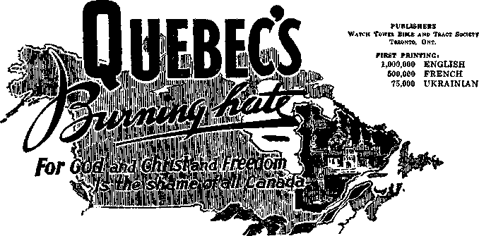
BEFORE the hot denials and protests and false countercharges boom out from the priestly keepers of Quebec province and whip up an unreasonable frenzy, calmly and soberly and with clear mental faculties reason on the evidence presented in support of the above-headlined indictment. Words in lip service to God and Christ and freedom can be as cheap as the free wind it takes to utter them, but actions speak louder to reasoning minds. As God’s Word says, **Let us not love in word, nor in tongue, but in deed,” (1 John 3:18, Catholic
say: “As long as you did it to one of these my least brethren, you did it to me”? (Matthew 25: 40, Douay) Did the parish priests that have stood by and approvingly witnessed such outrages show regard or disregard for Christian principles? And what about Quebec’s law-making bodies that frame mischief by law to “get” those not favored by the ruling elements? and her police forces that allow mobsters to riot unchecked while they arrest the Christian victims, sometimes for no more than distributing Bibles or leaflets with Bible quotations
sented to you by incorrect reports, that is not just cause for a hasty dismissal of the matter. On the contrary, it is all the stronger reason for fair-minded persons to hear out all the evidence.
Were not Christ and early Christians persecuted often? an unpopular minority? and grossly misrepresented by religious liars? If you can identify enemies by their fruits, by the fruits of Jehovah’s witnesses you may also know them as true followers of Christ. Both the message they preach and the methods by
CANADIAN TRACT, 1946, "QUEBEC'S BURNING HATE," TOP OF PAGE 1
the hot denials and protests and false countercharges booming out of religious Quebec, if you still wish to. But now, pause and consider: b
Then followed a series of questions like this, “Is it love for God that moves Quebec mobs to tear copies of God’s Word, the Bible, to shreds and burn them in the flames?” and so on, pinpointing some of the outrageous acts of Quebec’s hatred of free worship. Several instances of mob violence such as the following were then recounted:
In Lacine, September 15, 1945, mob action blazed fiercely against Jehovah’s witnesses as they advertised the holding of a Bible lecture. Street assaults reached their height when the large Catholic mob laid siege to the shop and home of Joseph Letellier, who, with three other witnesses, was inside. The plate glass display window was shattered and rocks and tomatoes poured through the windows in a steady stream. Witness Joyce was struck full in the chest, and as Witness Letellier tried to phone police one vandal dashed in and smashed the elderly man in the face, inflicting a long gash on his face and knocking his glasses to the floor. The witnesses barricaded themselves in and endured the rain of rocks for more than five hours. Until midnight, two hours after other witnesses had helped the besieged ones escape under cover of darkness through a narrow 25-foot rear passage, irate mobsters bombarded the building. The entire front was wrecked, and the valuable clocks inside the shop were destroyed.0
Responsibility for such hateful conduct was laid squarely at the door of churchstate rule and domination by Roman Catholic priests:
An officer arresting one of Jehovah’s witnesses in Quebec City told the witness he was ordered to do it by Mr. Lavergne, the parish curate. A French Catholic lawyer defending one of Jehovah’s witnesses was told by the city attorney, the court clerk and the deputy chief of police that the arrests were illegal, but that they were so hard pressed by the clergy that they had to make it as difficult as possible for the witnesses. Four witnesses arrested in Quebec City were told by representatives of the police department that delegations from the bishop’s palace called daily and insisted that the witnesses were a menace to the Catholic Church and that it was the duty of police to get rid of them, law or no law. A deputy chief of police once admitted that he was never so annoyed by priests as when cases against Jehovah’s witnesses were pending. And it is so often noticed that the officer emerges from the back door of the church or convent before making the arrest! Why, Catholic domination of Quebec courts is so complete that in the courtrooms the imagery of the crucifix takes the place of the British Coat of Arms, which appears in other courts throughout the Dominion'.^
The tract closed with this stirring call:
Quebec, you have yielded yourself as an obedient servant of religious priests, and you have brought forth bumper crops of evil fruits. Now, why not study God’s Word, the Bible, and yield yourself in obedience to its commands, and see how bounteous a crop of good fruits reflecting love for God and Christ and freedom you will bring forth? The eyes of Canada are upon you, Quebec.0
CAMPAIGN WITH
“QUEBEC’S BURNING HATE”
As announced in the text of the leaflet, the tract was published in English, French and Ukrainian, and the Society’s president revealed that 1,000,000 copies were printed in English, 500,000 in French and 75,000 in Ukrainian. Free distribution was scheduled to begin November 15, 1946. But that was not all. It was announced further that fifty pioneers would attend the next class of the Watchtower Bible School of Gilead, would be taught French, and would return to preach in priest-infested Quebec and the Maritimes. Sixty more would attend the class that followed with the same end in view.f
In a lightning, 16-day campaign this leaflet in English, French and Ukrainian was distributed from coast to coast. The Hierarchy set up a howl of rage and counter-attacked; not with denial of the disgraceful account of her actions, but with her favorite weapons of slander, lies, violence and the pressure of Quebec’s corrupt political machine upon the lawenforcement bodies. In 16 days 260 arrests were made in the Montreal area though not one arrest was made in any other part of Canada. On December 4, 1946, Maurice Duplessis, Fascist-minded premier of Quebec and tool of the ‘Church’, hurled a boomerang that devastated his own ranks when he deliberately ruined the prosperous business of one of Jehovah’s witnesses whose only offense was that of supplying bail for his brethren. This abuse of political authority for such obvious “religious” persecution aroused the ire of freedom-loving Canadians throughout the entire country. It brought nation-wide publicity and many expressions were made championing the cause of Jehovah’s witnesses and denouncing his actions. Protest meetings were held throughout the country by various organizations; resolutions passed and forwarded to the Duplessis government; newspaper writers branded Duplessis “a sawdust Caesar”, a “minor-league Franco”, as “the focal point of fascism”, etc. One paper remarked, “The cause of Jehovah’s witnesses has aroused the Canadian people more than anything else for a long time.”
b For full contents of the paper see Awake!, Vol. 27, Dec. 8, 1946, pp. 22-27. c Ibid., pp. 23, 24. a Ibid., p. 26. ibid., p. 27. f Ibid., pp. 27, 28.
The opposers of truth in Quebec were showing by their bitterness that the title “Quebec’s Burning Hate for God and Christ and Freedom” was an understatement. It became necessary in our fight for freedom of worship to make public her insane persecution of the Lord’s children, that it might be a testimony against herself before all liberty-loving people. The second leaflet, “Quebec, You Have Failed Your People!” was distributed country-wide in three languages, and completed in frigid January weather. There were arrests daily (as many as thirty thrown into jail in one day) sometimes for no greater offense than boarding a streetcar. . . . During the four months, November to February, there were 843 arrests, bringing the total cases pending in the courts to more than 1,300. The majority of the arrests were on trumped-up charges of “peddling”, etc. So enraged were the opposers that 64 brethren were charged with “sedition” and "seditious conspiracy”. &
SOME METHODS OF OPPOSERS EXPOSED
This second folder itself comments further in revealing Duplessis’ spiteful discrimination :
Early arrests made during the distribution of the folder were on the no-permit grounds, but newspapers stated that the report was current that Duplessis was going to have all Witnesses that were arrested during the last two weeks of November rearrested on the new charges of “conspiracy and distributing libelous and seditious literature”. Two weeks after he launched the drive against the Witnesses, the admittedly intolerant Duplessis stated to the press: “The propaganda of the witnesses of Jehovah cannot be tolerated and there are more than 400 of them now before the courts in Montreal, Quebec, Three Rivers and other centers.” Arrests ran as high as thirty a day, and by the end of November there were some 1,000 cases pending in the Quebec courts. Some Witnesses had as many as 43 cases stacked up against them. Exorbitant bail demands soared as high as $500 cash or $950 property bond.
Through all trials Jehovah’s witnesses prove their unquenchable love for God by obedience to His commandments to preach, and in standing fast for freedom they make more secure the civil liberties of all men. Misrepresented, maligned, discriminated against, mobbed, hounded throughout the province, systematically hunted down and falsely arrested, and then held in vermin-infested, disease-ridden jails on exorbitant bail demands—still they maintain integrity toward God and are back in His service upon release. And it is a question as to which is the severer test: the filthy jails or the field work. Sometimes Catholic youths precede the Witnesses from door to door warning and prejudicing the people, or they follow after and gather up the folders and destroy them. Persons who would like to read are often fearful because of their neighbors. In less-educated sections where people are mere puppets of the priests, by the time three or four homes are worked the first householder is out screaming threats and rousing the neighborhood. Soon many are on their porches or in the street filling the air with abusive filth and cursings, while others are phoning the police. Often it is necessary for the Witnesses to work a half dozen homes, go to another section and work a few minutes, and then return to finish the original section. It would be a harrowing and unbearable ordeal if it were not for the sustaining strength and spirit of Jehovah God.
Rabid Catholic leaders co-operate closely with the police in rounding up these Christian ministers. In the notorious Quebec City the Sacred Heart Leagues printed a 9" x 12" sheet in French crying out for all Catholics to work with the police in running down all of Jehovah’s witnesses. Made up in big, splashy advertising style, the bold black type had a message from the chief of police. It blustered that the “chase against every last one of Jehovah’s witnesses is being pursued with more intensity than ever”, and placed the Radio-Police at everyone’s disposal “to free the streets of Jehovah’s witnesses”. Prominently set off by itself is the phone number of Radio-Police. It is one of the Hierarchy’s modern versions of hunting down “heretics” for another inquisition.!*
g 1948 Yearbook, pp. 101, 102. h Awake!, Vol. 28, Jan. 8, 1947, pp. 4, 5.
PETITION FOK A BILL OF RIGHTS
Such methods, however, did not halt the preaching of the good news. Listen as we return to the report of the Canadian Branch servant:
This fierce, mad rush of the enemy did not shake or move the true ministers of the Most High. They stood their ground and endured hardness as good soldiers. Again the forces of righteousness were called in to support the fight, and on March 2 every company in the land put on or supported a special public lecture: “The Fight for Freedom of Worship in Quebec! Awake Canadians to the Facts!” The facts concerning our fight were there given. The eyes of the nation were on us. Practically every newspaper in the country was taking up the issue. People of good-will were having their eyes opened while religionists fumed at the tremendous favorable publicity we were receiving. Many of the newspapers in Quebec were “frothing at the mouth”, but still the fight went on. The March 2 lecture inaugurated a nation-wide campaign inviting the people of Canada to petition the government for a Bill of Rights guaranteeing freedom of speech and freedom of worship. This was part of the fight. Civil rights in this country are enjoyed only by tolerance or sufferance. They are not guaranteed. A declaration of rights would make it possible to carry our fight for freedom of worship farther, and certainly for a longer period of time. The petition campaign was carried on through the month of March amidst severe below-zero weather. Over 500,000 signatures were obtained—the largest petition ever presented to the Canadian Parliament.1 As a result of the nation-wide publicity of this petition and the thousands of letters to members of Parliament calling for a Bill of Rights, the government finally set up a committee to consider such a measure. Part of the difficulty has been the lack of suitable appeal to the higher courts. In Quebec there is no appeal from the decision of the municipal Recorder’s courts. Efforts are being made to broaden the right of appeal to the Supreme Court. Thus the national issue of civil liberties raised by the faithful course of Jehovah’s witnesses has caused thousands of freedom-loving Canadians to realize the inadequacy of the law.
Also we have utilized every known legal remedy to get the cases into the higher courts, and many practically unknown methods. Denied protection by one court, we have appealed further. Recourse has even been sought to the Supreme Court of Canada, but we were informed they did not have jurisdiction to hear our cases. Back again into the Recorder’s courts our cases have landed. However, the zeal of the Lord’s people is undiminished, and the fight starts all over again. Actions, appeals, writs, motions and special remedies have been employed in every case that came to trial. No cases have been abandoned until every avenue of defense was exhausted.
The intense hatred of some of the officials in Quebec broke out in open opposition in the shape of a special provincial law empowering local municipalities to prohibit distribution of literature. A penalty of three months or one hundred dollars cash could be imposed for distributing one handbill. It was thought that now they had Jehovah’s witnesses in the bag, and they would swoop down like vultures on the apparently helpless brethren. But we were directed otherwise, and the enemy was out-maneuvered. The ministers in Quebec were instructed to go from house to house preaching the gospel by word of mouth, and using the Bible, where possible the Douay Version. Now the brethren are spending their full time preaching the gospel instead of languishing in Quebec’s filthy jails. Under the Lord’s direction we shall be victorious, for no power can successfully withstand the Almighty. Our fight for freedom to worship Jehovah in this country is by no means over. Indeed it is only beginning.!
SECOND PETITION FOR A BILL OF RIGHTS
True to the words of this report, the Canadian brothers continued their valiant battle in defense of true worship and two years later another petition was circulated. At the time of circulating the first petition the charge had been made that many persons would have refused to sign had they known it was in favor of Jehovah’s witnesses. In this second campaign during September and October, 1948, the petition specifically called attention to the persecution of Jehovah’s witnesses, the name “Jehovah’s witnesses” appearing twice in its text. Furthermore, before being invited to sign, each householder was handed a copy of a leaflet entitled “Fight for Freedom!” setting out many facts concerning Jehovah’s witnesses and illustrating the need for a Bill of Rights. Among a population of 9,000,000 persons in Canada, 1,490,000 copies of this leaflet were distributed.
4 The petition containing 500,967 signatures was presented in the House of Commons on June 9, 1947. Awake', Vol. 30, May 8, 1949, p. 4. j 1948 Yearbook, pp. 102, 103.
What was the result of the campaign in numbers of signatures? Well, “on February 8, 1949, Mr. Alistair Stewart, member of Parliament for Winnipeg North . . . was able to point to an eleven-foot stack of petition sheets containing 625,510 names.”k Public reaction throughout Canada was extremely favorable to Jehovah’s witnesses for taking the initiative in this fight to benefit all Canadians.
Finally, in 1950, the case of one of Jehovah’s witnesses who had been arrested for distributing the leaflet Quebec’s Burning Hate came on to the Supreme Court of Canada. The atrocious criminal charge of publishing a seditious and defamatory libel had been laid against him and he had been convicted in the Quebec courts. Here is a brief account of his trial:
The case against one of these distributors, Aime Boucher, began at St. Joseph de Beauce, Quebec, in December, 1946, with a preliminary hearing. Next came the trial held in an atmosphere seething with hatred and suspicion, before French Catholic Judge Alfred Savard and a Catholic jury. The judge was most unfair and ruled with a high hand, interfering with the defense at every turn. Constantly he appealed to the jury’s religious prejudices against Jehovah’s witnesses to get a conviction. In fact, the judge’s conduct was so completely unlawful it really assisted the defendant in getting the case reviewed by the Supreme Court. Confusion and bigotry, which darkened and hid the real issue during the trial, were pierced with some rays of light and sanity when Chief Justice Letourneau and Mr. Justice Galipeault of the appellate court in Quebec city condemned the trial judge. Through this dissent alone the case was transferred from Quebec city to the Supreme Court in Ottawa.1
CLEARED OF SEDITIOUS LIBEL
Then followed an unprecedented sequence of events. The conflict was presented to five judges of the Canadian Supreme Court May 31 to June 3, 1949,™ resulting in a split decision of three to two against Jehovah’s witnesses December 5, 1949.“ But when an application asking for reargument of the case before a full court of nine judges was made, a rare and unusual thing happened: the request was granted! When the decision was rendered on December 18, 1950, only two of the members of the Court who heard the case for the first time joined in favor of acquittal. The Court stood five to four for acquittal because one member of the original five-judge court, an Irish Roman Catholic, reversed himself and threw the weight of his vote on the scales of justice on the side of right and liberty for the despised minority known as Jehovah’s witnesses. Here are a few gems from one of the opinions in this case of Boucher v. The King:
The incidents as described, are of peaceable Canadians who seem not to be lacking in meekness, but who, for distributing, apparently without permits, Bibles and tracts on Christian doctrine; for conducting religious services in private homes or on private lands in Christian fellowship; for holding public lecture meetings to teach religious truth as they believe it of the Christian religion; who, for this exercise of what has been taken for granted to be the unchallengeable rights of Canadians, have been assaulted and beaten and their Bibles and publications torn up and destroyed, by individuals and by mobs . . .
The conduct of the accused appears to have been unexceptionable; so far as disclosed, he is an exemplary citizen who is at least sympathetic to doctrines of the Christian religion which are, evidently, different from either the Protestant or the Roman Catholic versions: but the foundation in all is the same, Christ and his relation to God and humanity . . .
. . . but it is not challenged that, as they allege, whatever they did was done peaceably, and, as they saw it, in the way of bringing the light and peace of the Christian religion to the souls of men and women. To say that is to say that their acts were lawful.o
This ruling has been called one of the most outstanding decisions in Canadian legal history. It broke completely the moldy fetters that had been forged on the medieval doctrine of the “divine right of kings,” the antiquated sedition law from the Court of Star Chamber dug out of Britain’s catacombs of the Dark Ages by the attorney general and the judges of Quebec.
l. Awake!, Vol. 30, May 8, 1949, p. 5. I Awake!, Vol. 32, Mar. 8, 1951, pp. 3, 4. m Awake!, Vol. 31, Apr. 8, 1950, pp. 3-9. n Ibid., p. 9. o [1951] S. C. R. 265, 285, 291.
The battle of Quebec was far from over as a result of this memorable decision, however. Duplessis insisted on proceeding with the hundred other libel charges based on exactly the same document.But what an advancement had been made by the valiant fighters for true worship in Quebec’s hate-filled Roman Catholic stronghold! At the beginning of this campaign, only four years earlier, there were only eighteen company organizations, eight of which were French and ten English. These were caring for the needs of some three hundred brothers. Now look at the harvest of good fruitage produced by the four years of preaching in the face of such opposition: In 1950 there were thirty-six company organizations, twenty-one French and fifteen English, serving well over a thousand brothers’. Assisting in this battle for freedom to worship God were 164 forefront fighters, eighty-three of which were general pioneers and eighty-one special pioneers. Of these specials, sixty-three were Gilead graduates.3 No question about it: Jehovah’s witnesses were gaining ground!
THE BATTLE AGAINST QUEBEC’S CENSORSHIP BYLAW
Then 1953 brought another victory, climaxing a twenty-year fight in Quebec city and the Province of Quebec. It was in October, 1933, that Quebec city passed a censorship bylaw specifically aimed at stopping Jehovah’s witnesses from distributing Bibles and Bible literature. This bylaw provided:
It is forbidden to distribute in the streets of Quebec any book, pamphlet, booklet, circular, tract whatever without having previously obtained for so doing the written permission of the Chief of Police.1
Our Canadian brothers began an attack on this bylaw in 1947 by entering proceedings against the City of Quebec with a view to having the bylaw declared an illegal suppression of freedom of worship. The trial judge allowed the defense to call up Protestant, Catholic and Jewish clergymen to testify as to their views of what religious organizations should believe and do. The trial lasted, all together, nearly two weeks.3 When the trial court ruled against Jehovah’s witnesses, the case was taken to the Quebec court of appeal, where, May 13, 1952, on a split decision, the majority held that the censorship bylaw was valid. Appeal was then taken to the Supreme Court of Canada, where the issue was argued for seven days starting December 9, 1952.
The basic question before the Supreme Court of Canada was the right to preach without a license. Prior to this historymaking case, most Canadian legislators, lawyers and judges would have said that there were no written guarantees of freedom of religion in Canada. During the litigation a most unusual discovery was made. There was found an unused Freedom of Worship Act that was still in force. This Act was passed by the Parliament of Canada in 1852, and just one hundred years later, in 1952, Jehovah’s witnesses presented it in argument before the Supreme Court of Canada for the first time.
LOIS: How could they make a law and forget about it? Why had it been enacted, anyway?
jjohn: Well, long before its enactment in 1852, there had been a tremendous religious controversy between the Catholics and the Protestants in England during the Seven Years’ War. This Canadian act was a mere re-enactment of a much older law, the original Freedom of Worship Act passed by the Parliament of Great Britain in London after the Treaty of Paris (1763) for the purpose of implementing the treaty provisions, that French-speaking Catholics in Quebec would be protected against religious persecution similar to that experienced by Catholics in England during the Seven Years’War. In 1867, at the confederation of the first four Canadian provinces, this law was continued in force. Since then it appears that through lack of use it was forgotten. It hadn’t been printed in the statute books of Ontario for forty years. In Quebec it had been reprinted but never used. This ancient law provides:
p 1952 Yearbook, p. 107. q 1951 Yearbook, p. 123. r Awake!, Vol. 34, Nov. 22, 1953, p. 4. s Awake!, Vol. 30. Jan. 22, 1949, pp. 3-7; Apr. 8, 1949, pp. 21-24.
Whereas the recognition of legal equality among all Religious Denominations is an admitted principle of Colonial Legislation; . . . be it therefore declared . . . That the free exercise and enjoyment of Religious Profession and Worship, without discrimination or preference, so as the same be not made an excuse of acts of licentiousness, or a justification of practices inconsistent with the peace and safety of the Province, is by the constitution and laws of this Province allowed to all Her Majesty’s subjects within the same.1
VICTORY IN THE SAITMUR CASE
The Quebec attorneys argued in vain, claiming Jehovah’s witnesses were not a religious denomination, that their preaching publicly in print could not be considered an exercise of worship protected by law, that their criticism of the Roman Catholic Hierarchy constituted “acts of licentiousness,” that their refusal to abide by the censorship law was “inconsistent with the peace and safety of the Province” and finally claiming that the 1933 Quebec bylaw was passed not as a censorship measure but simply for traffic control. Point by point these arguments were rejected by a five-to-four majority of the Supreme Court justices and a decision favorable to Jehovah’s witnesses was delivered on October 6, 1953. This was a real victory after a twenty-year fight and after a six-year legal battle in this test case!
The public press was loud in its praise of this decision. Here are a few of the editorials published:
A Verdict for Freedom of Worship
In upholding the right of the Witnesses of Jehovah to distribute literature in the streets, without restriction, the Supreme Court of Canada has lifted a load from the conscience of this country. Liberal-minded citizens of all religious affiliations and both major language groups have long been uneasy about tendencies toward indirect persecution of opinion. In Quebec especially, this decision in the case of Mr. Laurier Saumur should result in the dismissal of some 800 similar cases involving charges under municipal bylaws. It means that no community anywhere in Canada can require advocates of religious views to be licensed. The ruling is one of several court decisions in recent years by which civil liberty has been clarified within the provinces or throughout the country. ... In a free country, the few must be allowed to try to change the opinions of the many, whatever the issue. Canadians can be proud that their courts are showing themselves vigilant against the intolerance that would whittle freedom away.u
Freedom of Belief
The Supreme Court of Canada, in a majority judgment of considerable significance, has established an important principle underlying civil liberties in Canada. . . . the judgment asserted that no inferior jurisdiction, such as Province or municipality, may abridge the rights and liberties which constitutionally belong to every citizen of the country, regardless of residence. ... A very important point was made by Mr. Justice Kellock when he drew attention to the fact that the bylaw was so openly drawn that it might be applied in many different ways. He said that it established no rule except that nothing but what was permitted by the censor (as the police chief in effect was) could be distributed. The contents of the document were the deciding factor. The same bylaw could be applied against political parties and newspapers. It is apparent that to grant such broad powers to a single municipal official would be a gross infringement of elemental civil rights, whether or not the power was ever used. It could never have been intended by those who framed our constitutions
t Statute of 1852 of Old Province of Canada, 14-15 Victoria, c. 175. u Ottawa, Ontario, Evening Citizen, Oct. 7, 1953.
Freedom of Religion
An important principle, that a man must be allowed to practice his religious beliefs, is upheld in the supreme court’s close ruling in another case involving the Witnesses of Jehovah. . . . And maintenance of that principle is one which must be applauded. ... To interfere with a man’s worship is evil. The fact that the sufferer may adhere to beliefs not generally popular is beside the point.w
tcm: what did the Quebec officials do about that? Did they accept the decision of the Supreme Court as final?
John: No, they didn’t, especially Premier Duplessis. Here is the report of the Canadian Branch servant:
On October 6, 1953, the decision of the Supreme Court of Canada in the censorship case involving the city and the province of Quebec was handed down. This was widely publicized by special distribution of thousands upon thousands of copies of the November 22, 1953, Awake! throughout the whole country, including reprints in the French language. This decision had the effect of setting back Quebec’s Mr. Duplessis. Next followed the introduction of his notorious and unjust Bill 38 in the Quebec Provincial Legislature, flouting the Supreme Court’s verdict and aimed directly and specifically against Jehovah’s witnesses. The bill quickly passed the required readings in the Lower and Upper Houses and became provincial law. There was probably a feeling of satisfaction in the camp of our enemies, but it was short-lived, for by a swift move in the courts a case for an injunction against Duplessis and his bill was launched, and that is still pending. The desired effect has been obtained, for the bill at the present lies inactive and the Kingdom-publishing work goes on apace throughout his province.
The missionaries and special pioneers continue to work hard at the gospel-preaching, mainly in Quebec. Fifty-six missionaries at 19 places in Quebec Province reported at the close of this year and from their reports we can see that excellent service is being done by firmly establishing theocratic bridgeheads in that part of the field. From time to time mob violence and interference by local officials threaten to flare up, while threats and intimidation are brought to bear upon those who dare to show hospitality to the missionaries. Many honest-hearted ones, however, are standing firm for the truth.*
Far into 1959 the Bill No. 38 case was still before the courts of Quebec.y
THE TABLES ARE TURNED
So the atmosphere of bigotry-enshrouded Quebec was rapidly clearing. Bright patches of blue sky could be seen everywhere, and even in some of the territories that had been the most difficult, the sun was shining through. Listen to this experience written to the Society’s president by the Canadian Branch servant:
We just heard an interesting experience which you will be glad to hear about, showing how the decision in the courts really helps our brothers. This happened in one of the Montreal units. This is a very stiff place where the priests are always on the lookout for Jehovah’s witnesses. They were going from door to door Sunday morning. The priest gathered the young boys together to try and put the pressure on the witnesses to get them out of the territory. One of our brothers then informed the priest that we had the right to do this work and that he would call the police if interfered with anymore. So the priest said, “Well, go ahead, call the police.” So the brother did. The police came on the scene. The priest then started trying to order the police to get the witnesses out of the district. The brother then informed the police that we had the right to do this and the courts have decided in our favour and they should not interfere with us at all. The police then informed the priest that Jehovah’s witnesses were legal in doing their work. But the priest started to argue with the police and stated that ‘they may be legal in the sight of the courts, but they are not in harmony with our arrangements’. The police then tried to reason with the priest, but all to no avail. Then the police got mad and said to the priest that if he would not be reasonable they would have to take him to the police station. However, this did not have any effect on the priest. He kept on arguing with the police. So the police said, “You had better get inside the car. You’re coming to the station.”^
v Toronto, Ontario, Globe and Mail, Oct. 8, 1953. w Montreal, Quebec, Herald, Oct. 7, 1953. Saumur opinions reported at [1953] 2 S. C. R. 299. x 1955 Yearbook, pp. 113, 114. y 1959 Yearbook, pp. 113, 114. « Canadian Branch letter, A/AS, Jan. 27, 1959, No. 259.
LOIS: I can’t imagine conditions being any more completely reversed than that. But if Jehovah’s witnesses had not insisted on doing God’s will rather than man’s, it never would have been accomplished, would it?
John: No nor was this by any means the extent of the victory Jehovah’s witnesses won in Quebec. Their perseverance in the face of such tremendous odds not only brought them further assurances of continued freedom for their preaching activity but also vindicated them in their bold stand for pure worship.
You may recall one of the instances we quoted of retaliation by the Roman Catholic Hierarchy against the campaign with the leaflet Quebec’s Burning Hate for God and Christ and Freedom. It was from the Canadian Branch servant’s annual report to the Society’s president and read: “On December 4, 1946, Maurice Duplessis, Fascist-minded premier of Quebec and tool of the ‘Church’, hurled a boomerang that devastated his own ranks when he deliberately ruined the prosperous business of one of Jehovah’s witnesses whose only offense was that of supplying bail for his brethren. ”aa
This brother was a prominent restaurateur in Montreal who had posted bond in 391 cases. For this reason only, Duplessis acted against him and revoked his liquor license, which, in the French city of Montreal, was as much a blow to his business as if Duplessis had put a padlock on the door of his restaurant. The premier’s unexpected boomerang mentioned by the Canadian Branch servant came in the flare of publicity that the incident raised throughout Canada. But the full force of Duplessis’ intolerant act was yet to come back on him like a slap in his face.
Meantime another incident occurred that was to have equally long-range results in a resounding defeat for Duplessis’ antiGod, anti-Christian forces. It began only three days after the Montreal brother’s means of livelihood had been destroyed. Listen to this account of what took place:
Louise Lamb, a lady minister, was arrested at Verdun, Quebec, December 7, 1946, by Paul Benoit, provincial police officer. Benoit was under instructions to arrest Jehovah’s witnesses who were distributing the document entitled “Quebec’s Burning Hate.” Sister Lamb had no copies of this document, but he arrested her anyhow in a most arbitrary manner.
The arrest took place on a Saturday and she was held over the weekend without charge, without being permitted to call her friends or counsel. She was photographed, fingerprinted and treated as a common criminal. Confinement in the police headquarters was under filthy conditions. A sick and terribly diseased prostitute was locked up in the same cell, using the same conveniences.
After suffering all this disgusting treatment, this decent young woman was then told by Benoit on Monday that he had “good news” for her: he would let her go. Just one little item: sign a release agreeing not to take any action against him for unlawfully holding her in prison for three days under these revolting conditions. If she would not sign, a criminal charge would be laid. Although alone, and under very trying circumstances, Sister Lamb maintained integrity to right principles and refused to be coerced into signing the release. Benoit laid a criminal charge against her, which the court promptly dismissed.
A civil action was instituted against Benoit for false arrest and malicious prosecution. The case proceeded to trial before the Superior Court of the Province of Quebec, and was appealed to the provincial Court of Appeal. Both courts dismissed her action on technical grounds. Appeal was then taken to the Supreme Court of Canada to lay before the nation’s highest tribunal the abuses suffered by Jehovah’s witnesses.bb
This case came on to the Supreme Court at the same time as the Montreal brother’s personal damage suit against Duplessis. The attention of all Canada centered on the outcome. The Supreme Court itself was on trial. Two officials, one of the highest and one in much lower station, were both charged with maliciously misusing their official positions to the injury of private citizens. Could the Quebec police escape punishment for their false arrest? Would the most powerful political figure in Quebec Province, the unscrupulous and arrogant premier and attorney general, still be permitted to say in effect, ‘I am the law’?
aa 1948 Yearbook, p. 101. bb Awake!, Vol. 40, Apr. 8, 1959, pp. 9, 10.
The situation was unparalleled in the history of Canada. And the Supreme Court brought the administration of Canadian justice into its finest light in its two memorable decisions on January 27, 1959. Newspaper headlines and news stories blazoned the victory of Jehovah’s persistent witnesses across the nation: “Supreme Court Rules Against Duplessis,” “Duplessis Loses to Sect,” “Order Duplessis to Pay.” Duplessis was ordered to pay to the bailproviding Montreal Witness $33,123 plus interest and court costs, which the Montreal Star appraised at between $20,000 and $30,000.cc So Duplessis must pay upward of $50,000 for his spiteful Catholic action. His Provincial police officer, Paul Benoit, was ordered to pay to the falsely arrested woman Witness $2,500 plus interest and costs to satisfy justice.
Radio and television added their voices in broadcasting Duplessis’ defeat. These stunning victories were hailed by all liberty-loving Canadians who do not approve dictator Duplessis’ strong-arm methods, and jubilation ran high in seeing him cut down to size. Newspaper writers and cartoonists spared him no shameful exposure in their frank and cutting appraisals of the public spanking he got from the Supreme Court.
The Telegram of Toronto said editorially:
The judgment of the Supreme Court of Canada against Premier Duplessis is not so much a decision in favour of the Appellant . . . as a declaration championing the rights of individuals against the misuse of authority. . . . No man, however high and mighty, may inflict injustice upon an individual however low his station; no authority may misuse power to deprive a person of his rights. Authority before the law stands bareheaded and accountable for its actions. This is shining justice where the humblest man triumphs over power because his cause is righted
From the Toronto Daily Star we read:
Premier Duplessis of Quebec said in effect “I am the law.” The Supreme Court of Canada ruled otherwise; it will not tolerate Mr. Duplessis or any other politician riding roughshod over Canadian citizens and their legal rights.ee
The Ottawa Citizen reviewed the successful battle Jehovah’s witnesses have waged on behalf of freedom against the inroads of Duplessis:
To many Canadians, it will seem that justice has been done . . . Mr. Duplessis’ laws for discouraging opinion of which he disapproves have taken quite a battering. In 1950 in the Boucher case the Supreme Court of Canada rejected Quebec’s claim that a Jehovah’s Witnesses pamphlet was “seditious libel.” In 1953 in the Saumur case it ruled that a Quebec City bylaw used to stop distribution of Jehovah’s Witnesses publications contravened the Quebec Freedom of Worship Act. . . . [Duplessis] may be checked by defeats in court, but civil liberties will not be safe in Quebec while such actions characterize government.ff
Now these two further decisions cemented more firmly the strong bulwark of legal principle holding back the tide of oppression and destruction of minority rights by lawless officialdom. Jehovah’s witnesses had fought a hard fight in Catholic Quebec, and the fight is not yet over. But by Jehovah’s undeserved kindness the way of truth and pure worship was publicly opened to persons of good will, to the consternation and defeat of all Quebec’s haters of God and Christ and freedom.
cc Montreal Star, Jan. 27, 1959, p. 1. dd Toronto Telegram, Jan. 28, 1959. ee Toronto Daily Star, Jan. 28, 1959. ff Ottawa Citizen, Jan. 28, 1959.
Theocracy’s Increase Manifested in
Preaching and
Printing
Opportunities
T——-
- on: Last week when Lois said something about the perseverance of Jehovah’s witnesses in Canada being rewarded it reminded me of something you said a couple of weeks ago, John, when you were reporting on the New World Theocratic Assembly in 1942 at Cleveland, Ohio.
John: is that why you came over to borrow our volume of 1942 Watchtowers the other day? What did you find out?
tom: i remember you said the keynote speech was summed up in the convention Report in the two words “Go ahead.” May I read a paragraph or two from that talk “The Only Light”?
john: qo ahead.
tom [reading]:
At the Lord God’s call for willing volunteers, they have without any compulsion responded, “Here am I; send me.” Not from any earthly religious institution, but from the all-highest One, the King of heaven and earth, come the words of their commission: “Go and tell this people, Hear ye indeed”; even tell the people who refuse to understand and to see and to make tender their hearts and be healed.
How long shall such willing volunteers keep going and telling? Till dictators, till totalitarian rule, till the new order of the “abomination of desolation”, come into power and start regi
a W 1942, p. 295.
menting all nations? No, but till they go out of power, being junked in "the lake of fire and brimstone”. The specific command from the great Commissioner of Jehovah’s witnesses is: “Until the cities be wasted without inhabitant, and the houses without man, and the land be utterly desolate, and the Lord have removed men far away, and there be a great forsaking in the midst of the land.” (Isa. 61:1-12) That means till the door-to-door work is useless because there are no people in the houses to answer your doorbell ringing, because God has wiped out all who have refused to heed his message by his witnesses; and the cities that mischievously framed laws and mobbed you out of town have suffered the fate of Sodom and Gomorrah. (Matt. 10:13-15) Here, then, is the “Go ahead” signal from the Highest Authority to keep going on in his “strange work” of witness no matter what happens before Armageddon comes and desolates the earth of the “goat” class. Fear not what may stare you in the face. The spirit of the Lord upon you He will not remove; that invincible power will stay with you and bring you off more than conquerors by Christ Jesus.a
In view of the many events occurring since 1942 that you’ve related in the last couple of weeks, I find those statements highly interesting. Did the same advancement of theocratic activity continue on through the 1950 international assembly?
“THEOCRACY’S INCREASE ASSEMBLY”
John: It certainly did. In fact, it was called “Theocracy’s Increase Assembly of Jehovah’s Witnesses.” It was scheduled to be held in New York city at Yankee Stadium July 30 to August 6, and what a joyous eight-day theocratic festival it was, never to be forgotten by those attending! Much encouragement was received at that assembly too to continue in well-doing.
The war had been over now for five years and it was possible for 10,000 non-American Witnesses from sixty-seven different countries to travel to New York to make this by far the most extensive world convention ever held by Jehovah’s witnesses at one site. Hundreds came from war-torn Europe itself. Other hundreds came from Africa, Australia and New Zealand. Asia, too, was represented and so were the islands of the Pacific. Latin Americans came by the hundreds, and thousands came from Canada. These world travelers journeyed in every conceivable way: by sea, by air, by rail, by bus and by automobile. This influx of foreigners into New York city was so great prior to the assembly itself that the U.S. Immigration Service became alarmed and brought discriminatory indignities upon visiting Witnesses that were later vigorously protested by the assembled delegates?
In spite of these difficulties, however, on Sunday, July 30, 1950, the opening day, 79,247 were present for the graduation of Gilead’s fifteenth class of 120 students and by the climax of the assembly on the final day, Sunday, August 6,123,707 attended to hear the president of the Watch Tower Society speak on the subject “Can You Live Forever in Happiness on Earth?” You will recall the peak attendance at the last preceding international convention, the Glad Nations Theocratic Assembly, August 4-11, 1946, in Cleveland, Ohio, was 80,000. What a truly remarkable evidence this was of the expansion that had taken place within the ranks of Jehovah’s witnesses in just five years of postwar activity! This convention was well named “Theocracy’s Increase Assembly”!
The management of the convention, designed after the pattern set at that Cleveland assembly in 1946, provided all the necessary departments to handle the unusual operations of this convention. Rooming accommodations were secured for 75,000 incoming Witnesses and, in addition, a trailer city, located forty miles out of New York, accommodated 15,000 more. All this unusual activity could not escape the notice of the public press and, as might be expected, extensive publicity was given the entire operation.0
At the opening session Sunday morning came the first surprise, the release of a new book of songs called “Songs to Jehovah’s Praise.” On Monday, July 31, came another release, the effective booklet Defending and Legally Establishing the Good News. This publication of ninety-six pages was by far the most comprehensive and valuable aid the Society had published over the preceding decade and more to assist the brothers in their legal struggle?
Tuesday, August 1, The Watchtower was presented to the delighted assembly in an entirely new format, following the reading of the strongly worded “Resolution Against Communism” and its enthusiastic adoption by the 84,950 present at the afternoon session. The booklet Evolution versus The New World was released at the evening session.
Wednesday, August 2, proved to be one of historic moment when the Society’s president presented to an amazed and totally surprised audience the New World Translation of the Christian Greek Scriptures. You’ll be interested in some of the remarks the president made about this new Bible version, and we’ll talk a little more about that in a moment.
b Report of the Theocracy’s Increase Assembly of Jehovah’s Witnesses, Aug. 6, 1950, pp. 4-9. c See Report of the Theocracy’s Increase Assembly of Jehovah’s Witnesses, July 30 to August 6, 1950. d Previously released were Order of Trial in 1939 (Informant, July, 1939), Advice for Kingdom Publishers in 1939 (Informant, Nov., 1939), the leaflet Law Abiding in 1940 (Informant, Nov., 1940), Jehovah’s Servants Defended in 1941 (Informant, Sept., 1941), and Freedom of Worship in 1943 (Informant, Dec., 1943).
Thursday was an exciting day, the morning, afternoon and evening sessions being devoted to reports from Gilead missionaries. On this day, too, 3,381 persons were immersed. “Branch Day,” which came Friday, was also a thrilling day of news of world-wide theocratic expansion.
THE TIME FOR “THE PRINCES” TO APPEAR
Then on Saturday, August 5, came stimulating and enlightening “Knowledge of God Day.” The Society’s president released simultaneously in English and Spanish the new book “This Means Everlasting Life.” Also on this day the Society’s vice-president delivered an epoch-making speech. It was called “New Systems of Things,” and the conventioners present will never forget its effect on the audience. For many years it had been the view of The Watchtower that the faithful men of old who served God faithfully before Jesus’ time would be raised from the dead even before Armageddon to join in organizing Jehovah’s modern-day people and to share in shouldering the remnant’s responsibility of representing the Lord Jesus Christ in the capacity of overseers of the flock of God on earth.6 These men were variously referred to as “ancient worthies,” “faithful men of old,” and “the princes” in the light of Psalm 45:16. Perhaps you’d like to read that, Lois.
Lois [reading]: “In place of your forefathers there will come to be your sons, whom you will appoint as princes in all the earth.”
John: Thank you. Because of the understanding of this text that had prevailed for so long, many of Jehovah’s witnesses expected at every convention to greet Abraham, Isaac, Jacob, David and the others, welcoming them back from the dead. You can imagine, then, the electrifying effect on the audience this statement of the speaker made:
Would this international assembly be happy to know that HERE, TONIGHT, in our midst, there are a number of prospective PRINCES OF THE NEW EARTH?
The convention Report describes the audience’s reaction and answer to this question:
A tremendous and sustained clapping of hands and shouting for joy assured the speaker that nothing at the moment interested them more. A hushed and profound silence then settled over Yankee Stadium. Every ear strained in order not to lose a syllable as Brother Franz began a discussion of some very important facts concerning Psalm 45:16 . . .
In this year, 1950, the speaker observed, there are hundreds of thousands of “other sheep” who are fully dedicated to Jehovah. These have gone farther in belief than Abel, Enoch, Noah, Abraham and Sarah, for those ancient people merely looked forward by faith to the coming Seed, Christ, but these “other sheep” of today have actually accepted Jesus as the Savior and King. Instead of pointing into the indefinite future toward the Kingdom, these sheep now declare the Kingdom actually established.
Moreover, these modem witnesses have suffered just as much for their faith as Jehovah’s witnesses of old. They have been killed, have gone about in animal skins, have been ill-treated and have been forced to seek shelter in desert and mountain retreats. When Brother Franz noted that there was nothing that Scripturally argues against Christ’s making many of these “other sheep” “princes in all the earth” as required, thunderous applause again interrupted his momentous speech.!
The speaker then explained that the word “prince” is translated from the Hebrew word sar and does not always designate a person of royal birth. In fact, he pointed out, “It means the first, foremost or chief in any class, the head of any company or group.”The term “prince” would not be applied as a title therefore, but would merely designate an office of a “servant.”
W 1941, p. 275. 172; W 1942, p. 124, 1140; p. 133, 113; W1938, p. 325, 113. t Report of the Theocracy’s Increase Assembly, Aug. 8, 1950, p. 3. s W 1950, p. 417.
This interesting point was also brought out:
Back in 1904 the first president of the Watch Tower Society wrote the sixth volume of Scripture Studies, entitled “The New Creation”. In chapter 3, entitled “The Call of the New Creation”, he had this to say, at the top of page 157: “And we may be sure that any consecrating and performing a full sacrifice of themselves in the interest of the Lord’s cause after the heavenly class is complete, will find that the Lord has plenty of blessings of some other kind still to give; and that all of his blessings are for such consecrators, self-sacrificers. Possibly they may be counted in with the ancient worthies who had the sacrificing disposition that is pleasing to God, prior to the beginning of the ‘high calling’.”11
Another reference years after that one was also quoted. It was in The Watch Tower in its issue of September 1, 1915. In an article on the “harvest work,” paragraphs 5 and 6 (pages 268, 269) suggested that those dedicating themselves to God after the “door” to the heavenly class was closed, yet before the “inauguration of the restitution work,” would be accepted “not to the spirit plane of being, but to the earthly plane. Such would come in under the same conditions as the ancient worthies who were accepted of God.”1
It was in this same talk at the Saturday evening session that the Society’s vicepresident explained the relationship of the “new heavens” and “new earth” and pointed to them as a part of the “new systems of things.” Then, in the conclusion of this memorable discourse, the speaker summarized this new and fuller appreciation of Jehovah’s witnesses in the divine purpose:
With these transporting prospects so close before us, let us keep theocratic organization and let God continue improving it as a new world society. Never may we look back to this modern Sodom which is reserved for destruction; but we will keep faces forward in full faith. Onward, then, steadily, all of us together, as a new world society!!
Sunday, August 6, was the assembly’s climax. This was “New World Living Day” and the day for the highly advertised public talk: “Can You Live Forever in Happiness on Earth?” Pouring into Yankee Stadium and assembling at the trailer camp forty miles away, a total of 123,707 persons heard President Knorr present the many Scriptural facts in an affirmative answer to this question. No room for doubt! And repeated enthusiastic response showed this vast assembly did not doubt!
NEW BETHEL AND FACTORY DRAW CROWDS
Now the crowds hated to leave. And many did not! The next few days saw thousands of brothers, keenly interested in their new headquarters, descending on Bethel in droves at the Society’s cordial invitation. Nor were they disappointed. The beautiful new addition to Bethel at 124 Columbia Heights and the vastly expanded printing plant at 117 Adams Street were all that they had anticipated—and more—ever since they had so enthusiastically approved the president’s announcement of this proposed expansion program on Thursday, August 6, 1946, at the Glad Nations Theocratic Assembly in Cleveland, Ohio.k
TOM: Did you erect a completely new factory building?
John: Yes. It was really an addition to the old building, so when it was completed the entire structure was like one building. The property adjacent to the old building was purchased, and after the buildings had been evacuated they were demolished. Excavation for the new factory began on December 6, 1948, and by January, 1949, construction had begun. The new structure that was added to the existing factory was a concrete building nine stories high and the entire enlarged factory now occupied the block bounded by Adams and Pearl Streets and by Prospect and Sands Streets. The new addition almost doubled the original floor space.
h W 1950, p. 415. i Ibid, j Ibid., p. 418. k The Messenger, Aug. 12, 1946, p. 28.
Bethel, too, had to be enlarged accordingly. Furthermore, to the rear of Bethel the city was putting through a new cantilever highway of two levels for motor vehicles, and a promenade. Consequently, fifty feet of the Society’s property facing on Furman Street was condemned and eventually demolished. This was a portion of the structure completed in 1911. The 1927 building continued intact and the new structure, completed in 1950, was erected on property fronting on Columbia Heights that the Society had purchased adjoining these buildings to the south. The beautiful new building was 100 by 200 feet and rose ten stories or 143 feet above the Columbia Heights street level. The basement and subbasement provided space for the new kitchen and dining room and other facilities needed for maintenance that were lost by the demolition of the rear portion of the old building. The new Bethel building now extended along Columbia Heights between Orange and Pineapple Streets. Accommodations at Bethel had now been increased to living quarters for more than 450 persons, two in a room.1
It was at this same time that facilities for WBBR were expanded. But even before this, new transmitter equipment had been installed on the Society’s farm at Staten
I W 1950, pp. 220, 221; Report of the Theocracy’s Increase
Assembly, Aug. 8, 1950, p. 6.
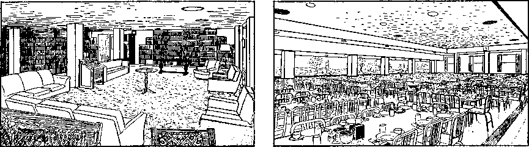
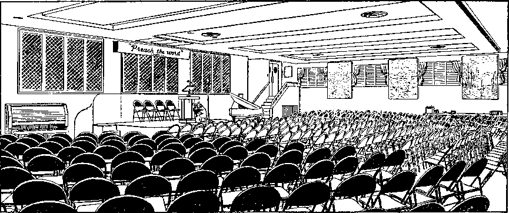
INTERIOR VIEWS OF BETHEL. TOP LEFT, LIBRARY; RIGHT, DINING HALL; BOTTOM, KINGDOM HALL
Island. Three new steel towers, 411 feet high above grade, were erected. Tuesday night, May 25,1948, at 7 p.m. the old radio equipment was signed off the air and the new equipment with power increased from 1,000 to 5,000 watts was switched on to send a program in a directional beam across the hitherto impenetrable and populous metropolitan area of greater New York city. Then, with the new addition to Bethel going up in Brooklyn, new studios were erected for the station in the building and on Sunday, March 12, 1950, 8 a.m., WBBR initiated its broadcasting from these new studios with the Society’s president presenting the day’s text and, after a musical interlude, the Watchtower’s extended comment.™ The new Bethel home was dedicated January 30, 1950, and the new factory April 3 that same year.n The colorful Kingdom Hall used for meetings of the Bethel family and for the local congregation had a seating capacity of 500. Below it the large dining hall seated 450, with the kitchens adjoining. On the eighth floor was a well appointed and equipped library with small work rooms for some of those on the writing staff, and on the ninth floor were offices of the treasurer and legal department, while the administration offices of the Society’s president were on the tenth floor.
A BIBLE-PRODUCING SOCIETY
Lois: Tom and I have been hoping someday we can see your headquarters. Now, could you tell us more about the New World Translation that was released at this assembly? You mentioned, too, on previous occasions that the Society had released editions of the King James Version and the American Standard Version and said you were going to tell us more about them. Can you do that now? Didn’t you say, too, that these were not the first Bibles that the Society had produced?
John: Quite true; the Society has always been primarily a Bible society. When the president released the New World Translation of the Christian Greek Scriptures on Wednesday, August 2, 1950, he pointed out this important fact in his talk:
From the time of its organization the Watch Tower Bible &Tract Society has used the King James Version of 1611 as its basic version for Bible study. Our chief aim has been to make clear to the people the pure Bible teachings in the light of unfolding prophecy. We seek to advance with the brightening light of truth and to rid ourselves of all the bedarkening traditions of men and pagan philosophies of this world. When first formed in 1881 it was called the Watch Tower Tract Society, to indicate its purpose to spread the revealed truths of the Bible. (The Watchtower, April, 1881 [p. 7]) In 1884 it became incorporated as Zion’s Watch Tower Tract Society,0 but in 1896 it was called Watch Tower Bible &Tract Society.? True to its name, it has engaged in distributing Bibles as well as publishing books, tracts, and other papers for disseminating Christian knowledge based on the rock-bottom teachings of God’s Word. Its Bible education for the people has been unsectarian, and this type of education alone allows a Christian the freedom to cut through religious tradition and worldly philosophy and get back to the “faith that was once for all time delivered to the holy ones”. So from the time of publication of the magazine The Watchtower in 1879 the English publications of the Watch Tower Society have till now quoted, cited and referred to more than seventy different Bible translations in English and other languages. Thus the Society has recognized the value of them all and has made use of the good in them all as needed for setting forth God’s true message and clearing away religious confusion.^
We have already learned that in these early days the Society was not even printing its own bound books written as explanations of the Bible. So no Bibles were actually printed on Society presses at this time. However, as early as 1896 the Society had caused to be printed a Bible bearing on the title page the name “Watch Tower Bible and Tract Society, Allegheny, Pa., U. S. A.” This was Joseph B. Rotherham’s New Testament, Twelfth Edition Revised.
m W 1950, pp. 220, 222. n 1951 Yearbook, pp. 33-35. o W Jan., 1885, p. 1. p Charter, Watch Tower Bible and Tract Society, pp. 4, 5. q W 1950, p. 314.
In The Watch Tower, issue of July 15, 1901, the Society proposed to have printed a Bible with a wide margin containing opposite each verse appropriate and applicable reference memoranda to the five volumes of Millennial Dawn, Tabernacle Shadows and Zion’s Watch Tower, 1895 to 1901. For this purpose it was decided to use the Holman Linear Bible containing the Authorized and Revised Versions of the “Old” and “New Testaments.” The text of this Bible was arranged to demonstrate variant readings in these two versions. Identical words and phrases were presented in a single line in large, clear type, whereas all differences were shown in double lines of smaller type, the Authorized Version above the Revised Versions
The Society arranged for 5,000 copies of this special edition to be printed at a special price.® By April of 1902 the first thousand had been shipped out1 and early in May letters of appreciation had already begun to pour into the Society’s headquarters." By the first of the following year, 1903, the entire edition of five thousand was gone.v
A BIBLE-PRINTING SOCIETY
Of course, in these instances the Society merely arranged for these Bibles to be printed in the name of the Society and did not own the plates or print the Bibles in its own factory. The first forward step in Bible production by the Watch Tower Society was described by the president in his talk “Turning to the Peoples a Pure Language” at the 1950 convention:
In 1902 the Watch Tower Society came into possession of its first plates of a Scripture edition and could become a Bible-printing society. These were the plates of an emphasized translation of the Christian Greek Scriptures known as “The Emphatic Diaglott”. This had first been published by its author, Benjamin Wilson, a newspaper editor of Geneva, Illinois, in 1864, and who was never associated with the Watch Tower Bible &Tract Society. This emphatic translation had some notable features that made for a better understanding of the truth. However, it was not until December 21, 1926, that The Emphatic Diaglott was printed on our Society’s own presses and cased in at a printing plant of its own.
This led eventually to the desire of the Society to print the complete Bible on its presses. World War II made the need for independent publication of the Bible itself even greater. In the throes of that global conflict the Society succeeded in purchasing plates of the complete King James Version of the Bible. On September 18, 1942, the New World Theocratic Assembly of Jehovah’s witnesses opened up, with its key convention-assembly at Cleveland, Ohio. There the Society’s president spoke on the subject “Presenting 'The Sword of the Spirit’ ” and as a climax he released this the first complete Bible printed on our presses. In its appendix it had many helpful features added for use in Bible study. In America 35,000 copies were disposed of immediately, since which beginning 700,000 copies of this Watch Tower edition have been distributed in many lands.
An excellent Bible translation of the twentieth century is the American Standard Version. Besides being a great improvement over the King James Version it has the remarkable and commendable feature of rendering God’s name “Jehovah” at the 6,823 places where it occurs in the Hebrew Scriptures. After long negotiations and by a financial arrangement the Watch Tower Society was able in 1944 to purchase the use of the plates of the complete American Standard Version of the Bible for printing this version on its presses with a specially prepared Appendix of Bible-study helps. On August 10, 1944, at Buffalo, New York, the key city of 17 simultaneous assemblies of Jehovah’s witnesses linked together by private telephone lines, the Society’s president delighted his vast audience by releasing the Watch Tower edition of the American Standard Version. Already 252,000 copies have been produced, and it has proved an additional instrument in sounding abroad God’s holy name and publishing the grand news of his kingdom of the new world of life and peace.
rW 1901, pp. 238, 239. sW 1902, p. 98. Ibid., p. 130. Ibid., pp. 158, 159. vW 1903, p. 50.
PREPARING AND RELEASING
THE “NEW WORLD TRANSLATION”
We acknowledge our debt to all the Bible versions which we have used in attaining to what truth of God’s Word we enjoy today. We do not discourage the use of any of these Bible versions, but shall ourselves go on making suitable use of them. However, during all our years of using these versions down to the latest of them, we have found them defective. In one or another vital respect they are inconsistent or unsatisfactory, infected with religious traditions or worldly philosophy and hence not in harmony with the sacred truths which Jehovah God has restored to his devoted people who call upon his name and seek to serve him with one accord. Especially has this been true in the case of the Christian Greek Scriptures, which throw light and place proper interpretation upon the ancient Hebrew Scriptures. More and more the need has been felt for a translation in modern speech, in harmony with revealed truth, and yet furnishing us the basis for gaining further truth by faithfully presenting the sense of the original writings; a translation just as understandable to modern readers as the original writings of Christ’s disciples were understandable to the simple, plain, common, lowly readers of their day. Jesus reminded us that our heavenly Father knows the needs of his children before they ever ask him. How has he made provision for us in this need which we now keenly feel?
Particularly since 1946 the president of the Watch Tower Bible &Tract Society has been in quest of such a translation of the Christian Greek Scriptures. On September 3, 1949, at 8 a.m., at the Brooklyn headquarters (Bethel) the Society’s president convened a joint meeting of the boards of directors of the Pennsylvania and New York corporations, only one director being absent. After the meeting was opened with prayer the president announced to these eight fellow directors the existence of a “New World Bible Translation Committee” and that it had completed a translation of the Christian Greek Scriptures. This it had turned over to the possession and control of the Watch Tower Bible &Tract Society, Pennsylvania corporation, just the preceding day. He read the committee’s document by which it assigned the translation manuscript to the Society in recognition of the Society’s unsectarian work of spreading the sacred Word of God and of promoting the knowledge and understanding of its teaching among the people of every nation, kindred, people and language, and in order that the translation might be a new means toward the expanding of its Christian educational activities throughout the world.
The president himself had read the manuscript of the entire translation, and on request he read to the meeting several entire chapters to let the directors see the nature of the translation. This reading was followed by favorable comments by all the directors present. One of the Pennsylvania corporation directors then moved the Society’s acceptance of the gift. This was seconded. The motion was unanimously adopted by all the directors of the corporation, and thus the translation became legally the property of the Society’s Pennsylvania corporation. But it had to be printed at the plant of the New York corporation here in Brooklyn, N. Y. On September 29, 1949, the president turned over the first of the manuscript to the Brooklyn factory force to start working on it.
With all the other work to be turned out by the factory and with all the features that the committee produced to accompany the translation, an immense amount of labor was involved to produce the completed publication. A group of 40 members of the Brooklyn headquarters (Bethel) family was organized to do extra proofreading and checking to insure accuracy of the publication’s features. On February 9, 1950, the New World Bible Translation Committee submitted to us its important Foreword of the translation. It long appeared a problem whether the work could be accomplished on schedule for the outstanding event in the summer of 1950.w
But it was accomplished, as we have already seen, and was received with the greatest of enthusiasm and appreciation by the vast throng of many thousands drawn to the assembly from seventy-two lands of earth. Tens of thousands of copies were eagerly taken up by the convention-ers that very afternoon and many thousands more by the close of the assembly on August 6.
FEATURES OF THE “NEW WORLD TRANSLATION”
LOIS: Why was it called a translation of the “Christian Greek Scriptures”?
John: That term is used as a more accurate and Scriptural designation of the collection of Bible books from Matthew to Revelation, which is commonly called the “New Testament.” You see, this new translation was a complete departure from the religious traditions of creed-bound Christendom. It is unscriptural and misleading to call the twenty-seven Christian books of the inspired Scriptures a “New Testament.”
tom: was this translation a revision of the King James Version or the American Standard Version?
John: No it was a brand-new rendering from the original Greek text, using the standard text prepared by the two recognized British scholars, Westcott and Hort. But Greek texts by scholars of other lands were also consulted by the translation committee. All old-fashioned or out-of-date style of speaking was eliminated, even as the original Scriptures were written in the people’s natural way of talking to one another at the time. However, a literal translation was striven for as far as possible. This makes for a better understanding and hence enjoyment of the translation.
One outstanding feature that has caused some controversy among modern translators and religious leaders of Christendom is the use of God’s own given name in this English rendering of the Christian Greek Scriptures. The divine name is represented by a four-letter Hebrew word, called a “tetragram'maton” by the Latin translator Jerome. The name occurs 6,823 times in the old Hebrew Scriptures, and while no one is certain of its correct pronunciation, as far as the records show, this name has been read as “Jehovah” since the twelfth century and has been popularized in that form in Christendom. That is the form that is used 237 times all together in the main reading text, not to speak of seventy-two additional times where it occurs only in the marginal reading at the bottom of the page.
“But you can’t do that!” said one critic to whom the manuscript of the translation was read for his comments. The committee, in its Foreword of twenty-nine pages, shows how it can be done on valid grounds; and it does so.15
LOIS: who were the ones on the committee that translated the Bible?
John: The one request of the translation committee was that its members remain anonymous even after their death.
SONGBOOKS OF THE SOCIETY
i-ois: Well, I’ve certainly enjoyed my copy of the translation. It does make reading the Bible more understandable and more pleasurable. Now, what about the songbook that you said was released at that assembly? It seems to me that I remember you mentioned another songbook being released at a previous assembly.
John: The Society has had a number of songbooks. The first one was called Songs of the Bride and was used in 1879.y Then in 1890 the Society published a volume entitled “Poems and Hymns of Millennial Dawn.” This book contained “151 choice religious Poems and 333 select Hymns.” These were published without music. While most of these were the works of well-known writers, some were written by the Witnesses themselves. Following the 1890 release several editions were published, including one containing just the poems.z
In 1896 one entire issue of The Watch Tower was devoted to songs, words and music, written by Witnesses. This was the February 1, 1896, issue, and the eleven songs it contained appeared under the title “Zion’s Glad Songs of the Morning.” Then in 1900 the Society released a paperbound book of eighty-two songs, most of them written by the same brother and under the title “Zion’s Glad Songs.” Commenting on this, The Watch Tower stated:
It is not at all the thought that the new book will supplant the old one; for many of the grand old hymns cannot be equaled by any new ones, either in words or tunes. The thought is to make it supplementary. As such we recommend it to you all. Our first edition of 6000 is now ready and orders will be filled as received.aa
By 1909 this songbook was no longer handled by the Society.bb
Perhaps one of the first important releases that the Society made in the form of a songbook appeared in 1906. This was called “Hymns of the Millennial Dawn” and contained the same collection of 333 hymns published in 1890, with the addition of music. The book was copyrighted in 1905 and the prefatory written in July of that year. But it was not until April, 1906, that it was ready for release.00 The words in this book were changed only to delete doctrinal error as found in the denominational church systems from which they were borrowed. In 1909 these hymns were published in a small pocket-sized edition without music for use of the brothers at conventions and other meetings.<lci
In 1924 it seemed advisable for the brothers to produce a songbook particularly for the children. The preface is dated June, 1924, but the book was not copyrighted until 1925 and not ready for distribution until early in 1926. This was a small hard-bound book of eighty songs with music and entitled “Kingdom Hymns.”66
In 1928 a brand-new book of 337 songs was released called “Songs of Praise to Jehovah.” This contained many new songs written by the Witnesses, although it contained many of the older hymns familiar to the brothers from their earlier song-books.ff
We mentioned to you already the red-covered paper-back Kingdom Service Song Book. It contained sixty-two songs and was released at the United Announcers Theocratic Assembly in Buffalo, New York, Wednesday, August 9, 1944.
LOIS: I remember. You said that congregational singing was to be revived following that assembly using the new songbook.
John: That’s right. Singing had been a pleasurable part of the meetings before; so the brothers were happy to have this new songbook with arrangements by the Society to use it. It contained a number of original songs.
The new book of ninety-one songs released in 1950 on Sunday, July 30, the opening day of the Theocracy’s Increase Assembly, contained many more original compositions, written by Jehovah’s witnesses to express in words and music their way of worship, which was so completely different from anything known to apostate religion, a constant reminder in song of their exclusive place in the divine purpose.
LOIS: What happened in 1951? I don’t suppose you had another international assembly so soon, did you?
john: No. we didn’t. In his closing remarks at the 1950 international assembly at Yankee Stadium the Society’s president announced that during the summer of 1951 the international family of Jehovah’s witnesses would meet in Europe in a series of assemblies there and that all should begin at once to make preparations to attend. Many did so, and when 1951 arrived with no international conflict to hinder transportation, the gathering began at the Clean Worship Assemblies.
aa W 1900, p. 274. bb W 1909, p. 18. ce W 1905, p. 338: W 1906, p. 98. dd W 1909, pp. 18, 82. ee The Golden Age, Vol. 7, Feb. 10, 1926, p. 320. ft W 1928, p. 18. gg 1945 Yearbook, p. 71.
International
Unity of Purpose Cements the
New World Society
John: The of ffie 1951 Clean Worship Assembly series met in London, England, August 1-5, at the famous Wembley Stadium. Here the Witnesses flocked from forty different nations, arriving by train, car, boat and plane. At the climactic session of the assembly 36,315 attended to hear the public talk “Will Religion Meet the World Crisis?” delivered by the Society’s president.
Although the lectures at this assembly were given primarily in English, there were also sessions in Danish, Finnish, French, German, Hollandish, Norwegian and Swedish. The well-attended, spirited gatherings demonstrated the international nature of this assembly, where all the brothers mingled freely, enjoying international fellowship. All over London the Witnesses could be recognized by the neat lapel badges all conventioners wore, which not only identified them, but also advertised the public talk.
The subjects of all the convention speeches emphasized the practical side of God’s clean worship and the making of the ministry of his Word our life career
1 W 1951, pp. 548-561. h Ibid., pp. 617-630. and professional work. Such information, counsel and instruction filled a vital need in the lives of those attending. The delivery of the talks and the putting on of the preaching and teaching demonstrations made the stadium an educational center and training school for five days, better fitting all who attended for wider and more effective service thereafter. This program arranged for the London assembly was in large measure duplicated at the various convention cities as the series progressed.
The London assembly opened on Wednesday, August 1, on an optimistic note. The Society’s president encouraged imitation of Jehovah, “the biggest optimist in the universe. ”a At the conclusion of these cheering words the speaker introduced four new tracts, entitled “What Do Jehovah’s Witnesses Believe?” “Hell-Fire— Bible Truth or Pagan Scare?” “Jehovah’s Witnesses, Communists or Christians?” and “Awake from Sleep!”
Friday, August 3, captured a special place in the press reports with the mass baptism of 1,123 at the beautiful Ruislip Lido. That evening the president showed in a practical way how to renovate our minds to put us in tune with the oncoming new world.b
Saturday, the president’s discourse on the subject “The Triumph of Clean, Undefiled Worship” was enthusiastically re-
ceived and fittingly climaxed by the release of the new book What Has Religion Done for Mankind?
A genial afternoon sun peered down from between clouds as eager Londoners, among them some Sirs and Ladies, streamed into Wembley Stadium on Sunday, August 5, for the climactic conclusion of this grand assembly. This was “Praise Jehovah as King Day,” and the talk these 36,315 conventioners and their friends had come to hear was well calculated to do just that. “Will Religion Meet the World Crisis?” was the challenging theme the Society’s president had chosen and his forthright answer delighted and enthused his responsive audience. A booklet containing the text of the talk was released at the close of the session, 500,000 copies being on hand for distribution, as many copies free to each one present as he cared to pass on to others.0
PROGRESSIVE “CLEAN WORSHIP” ASSEMBLIES
From London many Witnesses traveled to the Continent to share in further assemblies and to meet thousands of their associates who had been unable to come to Britain. The first week saw them in Paris, France, at the Palais des Sports, August 9-12, with 10,456 attending the public lecture. Here Witnesses from twenty-eight countries were represented at this first assembly of Jehovah’s witnesses for all France in fourteen years. On Friday, August 10, there were 351 baptized. This was an enthusiastic, instructive, theocratic four-day festival, heightened on Saturday by the release of the new book in French “Equipped for Every Good Work.”
Two one-day assemblies followed, the first on Tuesday, August 14, in Luxembourg and the second in Brussels, Belgium, on Thursday, August 16. Both were attended by the president and several companions. Then on to Rotterdam in the Netherlands, the next center for a Clean Worship Assembly, meeting in the Ahoy Gebouw, the sports arena, August 17-19. There 285 were immersed on Sunday, August 19, and on Friday and Saturday the Dutch brothers were delighted with two new releases in Hollandish, the booklet Can You Live Forever in Happiness on Earth and the Awake! magazine, also the promise of another release in the near future, the book “This Means Everlasting Life.” Six large tents were supplied with straw to provide sleeping chambers for 3,600 conventioners. The well-advertised public talk on Sunday brought 10,775 in attendance, the largest of the Society’s gatherings in that country.13
The Frankfurt am Main assembly in Germany, August 24-26, 1951, was a delightful experience and much like living in the woods for the three days. The large Sports Stadium and the neighboring Cycle Racing Bowl for overflow seating were rented for this largest of the German assemblies. Much advance preparation had been made in getting ready for this gigantic convention and 4,901 convention workers helped to make this assembly a huge success.
In City Forest adjoining the main stadium there were erected three large tent camps with streets bearing Biblical names. Several of the tents erected were also used for the various departments, including a cafeteria that had a railroad locomotive supplying steam for the unique kitchen arrangement, making it possible to feed 30,000 persons an hour. The majority of this tent city, however, was for the accommodation of 27,000 conventioners who could not be located in hotels or private homes in Frankfurt. The musical ability of these brothers was well displayed also in the orchestra of 150 musicians who entertained the convention and led the assembly in singing.
c Report of the Clean Worship Assembly of Jehovah’s Witnesses, London, August 1-5, 1951; W 1951, pp. 707-715. d W 1951, pp. 756-763.
The program at this assembly was similar to that at the London assembly. Here, on Saturday afternoon, August 25, the brothers were delighted with the release of the German edition of “Equipped for Every Good Work.” That morning 2,373 were baptized. The newspapers and radio stations gave excellent publicity to this assembly and that also helped to advertise the public talk on Sunday when the assembly reached its climax with an attendance of 47,432.
The warmth of the German brothers was demonstrated at the close of the sessions in a spontaneous farewell song sung by the entire throng commending to God their fellow Witnesses who had come from twenty-four nations to join with them in this theocratic festival. Handkerchiefs were waved and then, as the president left the platform, in a soul-stirring show of appreciation, hundreds of these warmhearted brothers broke bounds and surged across the field toward him, surrounding him in a dense mass. It was some time before he showed up at his convention office in the tribune building, not to go home, but to wait and see the departing conventioners off.6
SLIPPING UNDER THE IRON CURTAIN
Only about five hundred of the brothers from East Germany were able to attend the assembly at Frankfurt, since Jehovah’s witnesses in the Eastern section had been under ban of the Communists since August 30, 1950. For this reason a special one-day convention was arranged for Tuesday, August 28, in the West Zone of Berlin, where a resume of all the principal lectures and items of interest was presented by several of the original speakers themselves. This assembly took place in the pleasant openair amphitheater called the Woodland Stage or, in German, Waldbuehne, with 13,563 attending this stirring four-hour program. It is estimated that some 8,000 of these enthusiastic conventioners were from the Communist East Zone. These brothers drank in every word as they were addressed by the Society’s president, the Branch servant of Western Germany and others, and were spontaneous in their applause for freedom and against dictatorial methods being applied against Jehovah’s witnesses.
These brothers, too, sang affectionate parting songs as the multitude dispersed with smiles of spiritual satisfaction and after expressions of love and thankfulness. Instead of staying and enjoying the freedom of the Western sector, these brothers displayed their genuine courage and devotion to theocratic duty by returning to the place of their assignments behind the Iron Curtain.f
Now the 1951 assembly campaign rolled on into Northern and Central Europe. At the Copenhagen, Denmark, assembly, August 31-September 2, 259 were baptized and on Sunday 6,912 attended the public meeting. For the dual assemblies at Vaasa, September 5, and Helsinki, September 7-9, in Finland, the combined number immersed came to 170 and the peak attendance was 5,750.R Stockholm, Sweden, was the next convention city, September 14-16, with 6,211 attending and 141 baptized. Lillehammer, Norway, had eighty-nine baptized on Saturday and 2,391 at the public lecture on Sunday of the assembly from September 21-23.h The brothers in Austria, Vienna, also had occasion for real rejoicing with the largest assembly ever held there, September 28-30. The crowds assembled 4,467 strong?
e W 1952, pp. 25-29, 56, 57; 1952 Yearbook, p. 140 f W 1952, pp. 27, 58, 59; 1952 Yearbook, p. 141. g W 1952, pp. 90, 93. h Ibid., pp. 121, 122, 124, 125.
Bringing the 1951 series to a conclusion, Jehovah’s witnesses in the United States assembled in Washington, D. C., October 12-14, at Griffin Stadium, with the surprising peak attendance of 57,500 on Sunday at the public talk. Saturday 558 were immersed?
EVIDENCES OF INCREASE
The energetic assembly program designed for this 1951 series was truly stimulating in theocratic fellowship, knowledge and spiritual benefit. Although designed for brothers from all over the world, still, the assemblies being held as they were in many localities throughout Europe and in the United States, it was possible for many more to receive these spiritual benefits. The numbers in attendance demonstrated what an important part these assemblies played in the global ingathering of Jehovah’s other sheep. Now it could not be denied that the theocratic expansion was taking place.
Throughout 1952 circuit and district assemblies were arranged in all countries. Again no world assembly was scheduled because everyone was now planning for the international convention that had been long announced for 1953 in New York city. All anticipated a repeat of the famous 1950 Yankee Stadium gathering.
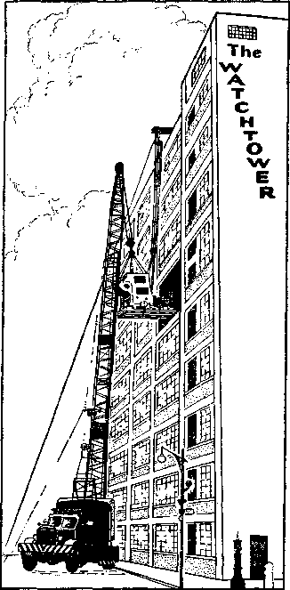
HOISTING PRESS INTO FACTORY, 1952
Another evidence of increase was the growing demand for Bible literature made upon the Society’s factory in Brooklyn. Listen to this Yearbook report of expanding printing facilities during 1952:
Because of the constant increase in the distribution of the magazines and bound books and because of the great increase throughout the world generally, it has been necessary for the printing plant at Brooklyn to have its printing facilities enlarged. As all Jehovah’s witnesses know, the Society built a new addition to the printing plant in Brooklyn; and the brothers have been very busy putting it to full use during the past year. It has been necessary to install another new press to take care of the great demand for literature. A number of new machines, in addition to the press, were also installed; but we would like to say a word about this new, high-speed rotary press that we obtained. It will print not only the Watchtower and Awake! magazines at the rate of 30,000 copies an hour, but on this same press we are able to print books and booklets at the rate of 60,000 32-page units an hour. The press is 64 tons in weight and it was necessary for us to remove a part of the wall on the sixth floor of the factory in order to install it. It was dismantled after its tryout and brought to our factory in large sections, some weighing as much as 17 tons. The sections of this mammoth press were hoisted from the street to the sixth floor through the opening in the wall, which measured 16 feet by 18 feet. This press will aid the factory considerably in keeping up with the demand for literature from all over the world.k
i W 1952, p. 156. j Ibid., pp. 188, 189. k 1953 Yearbook, pp. 68, 69.
maria: There is an interesting item in the 1954 Yearbook about the Watchtower Bible School of Gilead. May I tell about it, John? It says that in January, 1953, ten years after the school opened, it was officially recognized by the United States Office of Education in Washington, D. C., as offering higher education comparable to professional colleges and educational institutions. This has enabled the United States Department of Justice and its Immigration and Naturalization Service since January 15, 1953, to accept foreign students under the nonimmigrant student visa arrangement of the United States government. Under this recognition the United States Department of State listed the Watchtower Bible School of Gilead with its consuls throughout the world as one of those institutions in the United States authorized to receive students under this special arrangement.16
John: Thank you, Maria. And speaking of Gilead, I might mention that in 1954 an observatory was installed on the campus equipped with a sixteen-inch reflector-type telescope enabling the students to view the starry wonders of Jehovah’s universe.™ It was completed in 1955 by the installation of a newly designed observatory dome to house the valuable equipment."
NEW WORLD SOCIETY ASSEMBLY
In 1953 Jehovah’s witnesses again presented to the world a concrete example of international unity of purpose. From all over the world, in fact, from ninety-six different lands and islands of the sea, including the United States, they assembled in New York city’s Yankee Stadium in their second big international convention at that site. Pouring into the city by every known means of conveyance, there were 126,387 on hand at the afternoon session on opening day, July 19, which featured the graduation of the 127 missionaries of the twenty-first class of the Watchtower Bible School of Gilead. On hand too as part of this vast throng were 945 alumni graduates of twenty previous Gilead classes. A most fitting graduation address by the Society’s president on the subject “Gathering Men of All Nations into One Flock” brought round after round of applause —getting this New World Society Assembly off to an enthusiastic start.0
Let’s get a few high lights from the report in The Watchtower:
The assembly was truly international, some 22,000 from 95 lands outside of the United States came—by sea, air and land.
A not insignificant segment of the New World Society Assembly was located at Trailer City, near New Market, New Jersey, forty miles from the stadium. On its 200 acres 1,500 trailers parked and 6,000 tents sprang up practically overnight along theocratically named streets. Connected by direct wire with Yankee Stadium, its 80 buildings and meeting tents provided amply for both the spiritual and the physical needs of its 45,000 inhabitants.
The assembly was well organized. Its twenty-three departments, Attendant, First Aid, etc., staffed by upward of 20,000 volunteers serving freely and cheerfully, were marvels of efficiency that amazed outsiders. Nothing was overlooked: translation of lectures for deaf-mutes; tape recordings for the benefit of those who could not come; sessions in twenty foreign languages for those who could not understand English ;p and provision for visiting the Brooklyn Bethel and factory, WBBR, Staten Island, and the Watchtower Bible School of Gilead after the assembly.
The convention program itself was masterfully conceived. Each day had its “territorial” theme, Asia Day, Africa Day, etc., in the interesting and meaty branch servants’ and missionary reports. Themes of new truths were heard almost daily in the major hour lectures given by the president and vice-president. And finally there was the continual flow of new publications, 75 in all, from the first day to the last, in English and in many foreign languages. Truly Jehovah’s spirit and power was upon his people and to him went all the praise.1
The first of the new releases was the book “Make Sure of All Things.” At the same time that it was presented the Society’s president offered a Resolution that crystallized Jehovah’s witnesses’ realization of themselves as one united New World society. It was adopted by the 125,040 present with a resounding “Aye” of favor to such a privileged and blessed relationship, piling up evidence that Jehovah’s witnesses are a people apart, occupying a unique place in the divine purpose.
Then on Wednesday, July 22, Volume I of the New World Translation of the Hebrew Scriptures was released.
SOUNDING THE ALARM OF GOG’S ATTACK
Thursday the vivid prophetic portrayal of the “New World Society Attacked from the Far North,” drawn from Ezekiel 38 and 39, held the audience of 112,700 enraptured at the evening session. In no uncertain terms the Society’s vice-president sounded the alarm of Armageddon. Listen to the Report:
He showed that Gog, the principal character of that prophecy, refers to Satan himself. The land of Magog refers to the location of the spirit forces of Satan in a limited spiritual realm near earth’s vicinity following their expulsion from heaven by 1918. The prophetic references to Meshech, Tubal, Gomer, Put and other places apply to various elements of Satan’s earthly organization.
These widely scattered Biblical places to the north and south actually describe a global conspiracy of all anti-Jehovah peoples to attack and destroy Jehovah’s New World society here on earth. It is the present prosperity, unity and security of Jehovah’s people that causes a jealous, evil desire on the part of Satan’s hordes to eliminate Jehovah’s people once and for all. Since 1914-1918 Satan, along with his name, has suffered great humiliation and decline. At this same time the name of Jehovah has become famous and has been rising to the fore in all the earth to produce the greatest issue of all time. . . .
That time of global attack is near and puts the faith of every one of Jehovah’s witnesses to a supreme test. “Be from now on never relaxing guard,” said Franz. “Jehovah’s witnesses have to know of Armageddon in advance” that they may be forewarned and forearmed, he showed. “Let us not be careless in our great prosperity.”1
Two more releases followed: the booklet Basis for Belief in a New Worlda and four new tracts were released, entitled “Do You Believe in Evolution or the Bible?” “Which Is the Right Religion?” “The Sign of Christ’s Presence,” and “Man’s Only Hope for Peace.”v
“FLIGHT TO SAFETY”
Saturday, July 25, arrived and far from decelerating, fast-moving events of interest kept crowding in one upon another. Highlighting the afternoon program was the talk “Flight to Safety with the New World Society” and release of the new book “New Heavens and a New Earth.” In a forthright expression the Society’s president branded the world alliance, known as the United Nations, as the chief and most powerful expression of the religio-political conspiracy called the “disgusting thing” at Matthew 24:15 and Daniel 11:31. His words were a stirring appeal to righteous-hearted persons to flee to the “mountains” where Jehovah’s New World society now is. The convention Report comments that the president began his lecture with the words:
“The founding and building of the new and lasting things goes forward successfully while the condemning and destroying of the old things proceed.” He went on to show how Christendom’s present world position parallels directly that of the Jewish commonwealth and its alliance with Rome between A.D. 33 and 70.
q W 1953, p. 584. r Report of New World Society Assembly of Jehovah’s Witnesses, July 21, 1953, pp. 1-4. s Ibid., July 23, 1953, pp. 17-19. t Ibid., July 25, 1953, p. 36. See also W 1953, pp. 580-583, 596-607. u Report of New World Society Assembly of Jehovah’s Witnesses, July 25, 1953, pp. 33-35, 42. v Ibid., p. 40.
Jesus’ famous prophecies regarding the destruction of Jerusalem as recorded at Luke 19:41-44 and Matthew 24:16 were next examined in detail. It was shown that it was the political alliance between the Jewish hierarchy in Jerusalem and that of political Rome that comprised the “disgusting thing” that brought on total desolation A.D. 70. When the Jews cried, “We have no king but Caesar,” at the time of Jesus’ trial, they went on world record as supporting this disgusting alliance.
True to Jesus’ prophecy, Jerusalem began to be surrounded by armies in the year 66 when the political part of the alliance began to turn against the Jewish religious part. This served as a cue to the Christians living in Jerusalem to forsake the city and flee to the mountains of Gilead in harmony with Jesus’ prophetic command. For some reason the Roman siege of A.D. 66 was withdrawn, only to be renewed A.D. 70 to utterly wipe out the doomed city of Jerusalem when one million of its inhabitants perished. None of the Christians lost their lives, as they had already forsaken the city.
Today Jerusalem pictures Christendom, which, in 1919, entered into an alliance with the political powers of the world to establish the League of Nations. Instead of accepting Christ’s kingdom, the new heavens that were established in 1914, like Jerusalem of old which rejected the Messiah, Christendom turned to the political powers for an alliance of security. After World War I the clergy followed the political leaders in proclaiming the League of Nations as mankind’s only hope.w
“At the same time,” the speaker pointed out, “the voice of Jehovah’s witnesses began to be heard with an unusual tone of boldness and conviction, proclaiming God’s kingdom under Christ as the only hope of distressed humanity.” Then, amidst enthusiastic applause, he continued:
Now which of these two postwar movements really promoted God’s kingdom? Which of them aroused the disgust of the Most High God? Jehovah’s witnesses or the clergy-blessed League of Nations? Well, Jehovah’s witnesses are still here as represented in this New World Society Assembly at Yankee Stadium, New York city, but where is that political new heavens, the League of Nations? Where was it during World War II? Down in the bottomless pit of helpless inactivity. To take away its reproach, they have revived it and given it a new front and a new name called United Nations. Students of Bible prophecy know this was just as foretold.—Rev. 17:9-11.x
URGENT FLIGHT SINCE 1945
When, then, did the signal for flight appear? As in ancient Jerusalem, the speaker reminded, the signal was the encirclement by armies. These armies, he said, were not the police force or military forces of the United Nations.
The armies that are predicted by Jesus’ words to desolate this modern, antitypical Jerusalem are within the political ranks of the very United Nations. They are those elements that wage war upon the religious system of Christendom. When the “disgusting thing” came up out of the abyss in 1945, it at its very start contained powerful members of the Communist anti-religious bloc of nations. . . .
Therefore 1945, the year of the United Nation’s emergence, marks particularly the time when those who read Daniel’s prophecy and Jesus’ warning with discernment could see armies encamping to surround Jerusalem’s modern counterpart in order eventually to make her desolate and naked as a spiritual prostitute. . . .
The sign of the nearer approach of the battle of Armageddon is now before our eyes. When this adulterous, religio-political combine finally cracks up and the symbolic beast and its ten horns turn against the harlot system of organized religion it will denote that the “war of the great day of God the Almighty” has begun by which he will execute all the foes of his Messianic kingdom. That war will end when Jesus Christ the King together with his angel executioners will destroy all the “disgusting thing” and all other elements of this old world that line up in opposition to his rule. . . .
There is now no time for delay. It is high time to flee for safety. y
With the warning of the urgent need for flight since 1945 still ringing in their ears, the conventioners were in proper frame of mind for Sunday morning’s session. Following reports in keeping with “Islands of the Pacific Day,” the Society’s vice-president mounted the platform. He based his engrossing discourse, “Filling the House with Glory,” on Haggai 2:7, Darby Trans.: “I will shake all nations, and the desire of all nations shall come; and I will fill this house with glory, saith Jehovah of hosts.” How is his house being filled with glory? By Jehovah’s bringing into his house of worship the “great crowd” of desirable ones from all nations.
w Report of New World Society Assembly of Jehovah’s Witnesses, July 26, 1953, pp. 49, 50. x W 1953, p. 562.
• Ibid., pp. 564, 565.
When Jehovah enthroned his King, Christ Jesus, in 1914, the nations had reason to fear for future existence. “They now had God’s kingdom to reckon with!” The growth of the New World society has served to shake the nations still more.
The result of Jehovah’s shaking Satan’s world is that something must come. Haggai said it was “the desire of all nations.”2
Explaining that a clearer view of the Hebrew text ruled out former understandings as to what the “desire” of the nations was, he continued:
With our eyes enlightened by these interpretative prophecies we have reached the time to ask, Have the desirable things, the precious things, the treasures, the choicest things of all the nations come in? You thousands of the anointed remnant of Jehovah’s witnesses who are here today, lift up your eyes and sweep them about this vast structure of Yankee Stadium and behold the tens on tens of thousands of people of good will from scores of nations and languages. There is the answer of Jehovah of hosts to the question. He has shaken all the nations by the preaching of the good news of the Kingdom in all the inhabited earth for the purpose of a witness to all the nations, and the desirable things of the nations have come in already, and an untold number of them will yet come in before Jehovah consummates the great shaking by fighting the battle of Armageddon and totally removing the quaking heavens and earth of the Devil’s organization. . . .
Behold, then, his house of worship today filled with glory, gifted with divine peace. Blessed are we to live to witness this sight in vindication of Jehovah’s word. Blessed shall we be to abide in his house worshiping him purely, "in holy array,” and tirelessly working for the filling of his house with yet greater glory by helping all the remaining desirable ones of all the nations to come in.aa
CONCLUDING AND EXTENDING THE 1933 CONVENTION
Sunday, July 26, at 1 p.m. a public talk was delivered to an enthusiastic Spanish-speaking audience of 4,075 persons.bb Then at 4 p.m., the public address, “After Armageddon—God’s New World,” by the Society’s president, brought the New World Society Assembly of Jehovah’s Witnesses to a fitting climax. Of the 165,829 that came to hear the lecture, 49,027 were at Trailer City, while 91,562 heard it within the Stadium and 25,240 were assembled in overflow tents on adjoining and nearby lots. Many thousands more undoubtedly heard it over WBBR. At the conclusion of the session the printed text of the talk was offered free in booklet form to all present.00
Concluding, informal remarks by the president that evening, followed by a song and prayer, brought the assembly to a close, his parting, loving admonition being no matter how small the unit or how great the assembly, the New World society will travel right on through the battle of Armageddon under Jehovah’s protection. So let us all bless Jehovah by our returning to our homes and carrying on faithfully in our service.dd
tom: what about all those who couldn’t come to New York? Was any provision made for them to get the benefits of the program?
jjohn: Well, of course, the main talks were published in The Watchtower, but also, in the months that followed the New York assembly, extension conventions patterned after the 1953 assembly at Yankee Stadium were held on all five continents.
For instance, African natives worked days ahead of time in erecting gigantic, skillfully designed outdoor stadium assembly places, as well as structures or booths for sleeping dormitories. The ingenuity and industry of these African brothers, as well as their enthusiasm for theocratic detail, have stimulated admiration and love for them on the part of their brothers the world over.
z Report of New World Society Assembly of Jehovah’s Witnesses, July 28, 1953, p. 67. aa W 1953, pp. 635, 638. bb Report of New World Society Assembly of Jehovah’s Witnesses, July 28, 1953, p. 76. cc Ibid., pp. 65, 66, 81. dd Ibid., p. 75.
RESPONSE TO THE
NEW WORLD SOCIETY IN ACTION
tom: it’s surprising that they would even know how to get started.
jjohn: That was one of the important features of convention operation. Not only were convention personnel interested in providing facilities for their immediate needs, but as in all other features of theocratic activity, their eye was on the future and future need of similar services. Therefore, an important part of the convention organization was the provision to train new ones to perform these same tasks at other assemblies at a future date.
Also, as in 1950, reports of the New York assembly were carried throughout the world by all known news media. Here is a typical comment in the New York World-Telegram and Sun on July 22:
The New World Assembly of the 125,000 members of the Jehovah’s Witness sect here is notable for its good taste, adult decorum and its stoical indifference to the turkish bath climate it has encountered. Their encampment at New Market, N. J.—a settlement which might easily have been an unsightly, unclean shack city—seems to be a model of good planning and wise organization. . . . We vote that our city’s latchstring be permanently left out for these earnest people. . . . We hope, too, that their example will start a trend among some of the wayward, middle-aged adolescents who hold their annual cutups here.ee
The new-found unity and vision of understanding of the one new world under the Lord Jesus Christ made Jehovah’s witnesses truly a new people with a desire to operate every far-flung part of the organization in the same efficient and orderly manner as every other part. As evidence of this unity a film, produced by the Society following this 1953 assembly, dramatically captured and portrayed “The New World Society in Action.”
On the night of April 3, 1954, this film of one hour and twenty minutes’ length was shown for the first time outside Brooklyn headquarters to an audience of 1,110 at a New York city circuit assembly. It proved to be a mighty instrument in visually acquainting all viewers with the magnitude of the Society’s organization, its institutions, its field activities, its large-scale conventions, its smooth, efficient functioning and the spirit by which it is moved. In the territories of the Watch Tower Society’s Branch offices, even in Taiwan during the eighteen-year-long ban upon Jehovah’s witnesses, the film was exhibited to large appreciative audiences. By the close of the 1955 service year this motion picture, with accompanying commentary, had been shown to 2,379,549 persons.ff
But many things occurred during 1954 and 1955 that we’ll not have time to discuss tonight. Forty years of service under the Kingdom’s operation were drawing to a close and additional efforts were being made to cement the unity of the New World society by equipping and training the individual minister. Furthermore, the first decade of preaching following World War II was ending; so we should take a look at the world-wide field of service and see what progress had been made. We’ll do that next week.
ee See Report of New World Society Assembly of Jehovah’s Witnesses, July 19-26, 1953, p. 71. ff W 1955, pp. 361364, 680-683.
Ending the Fourth, Beginning the Fifth Decade of
Kingdom Operation
LOis: you know, John, in the last three months or so you have told us some rather remarkable things. I’ll have to admit that that first stormy night you and Maria called I was skeptical. Oh, I have known that world conditions are not improving and I have realized that times have changed considerably even since I was a girl, but I have never thought seriously enough about it to pinpoint actual causes and effects. Now you have certainly stimulated my thinking.
jjohn: That’s good, Lois, because tonight, with our account of the modern history of Jehovah’s witnesses centering on the years 1954 and 1955, our thoughts are drawn again to the greatest event in modern history, the birth of God’s kingdom. You see, the “kingdom of the heavens” with Jesus Christ in power as King at his Father’s right hand ended its fortieth year of rule amid its enemies in 1954, about October 1. It began ruling amid World War I in 1914; it ended its fortieth year amid the “cold war” between the East and West blocs of Kingdom enemies that followed World War II. Jehovah’s witnesses,
a 1954 Yearbook, pp. 27, 28. knowing well the times and seasons of God’s purposes, approached and entered the Kingdom’s fortieth year without joining in the dire predictions that some religionists were making about 1954 on the basis of their ideas of parallel time-periods in historical events. They entered 1954 planning and arranging to do still greater works in Kingdom service. That year’s Yearbook said:
Now that we have come into this fortieth year of Jehovah’s kingdom, can we let up? No; rather, recall that over 1900 years ago Jesus was impaled; he was tortured, put to death by conspiring religionists and politicians. That certainly must have been a blow to those early followers of Jesus. It was A.D. 33 when these startling things happened. Things looked dark then for Jesus’ disciples whom he had sent to preach; but later, from Pentecost on, they had to continue to go from house to house without letup. Now today, we who have, for many years, been preaching the good news during the very last days of this system of things, are we going to let up? Slow down? Go into retirement? We cannot. Today we see the Kingdom more clearly than we did back there in 1914 or 1918 or 1931 or any previous time. We feel its power; we see its activity. So just like Jesus’ apostles, we have to continue without letup declaring and teaching the good news of this glorious kingdom of Jehovah God. Great work is yet before us, and the New World society will do it.a
The exploding of two new models of hydrogen bombs in the Pacific Ocean by America in March, 1954, did not fill Jehovah’s witnesses with dread forebodings of the future. Undisturbed, they went on to
give a still greater witness to God’s established kingdom by putting more preaching ministers in the field. In that March in America a new high number of 154,367 ministers reported time spent in preaching,l followed by a still higher peak of 169,015 in April.o In other nations, too, the increase was going on. So by the end of August, the close of the 1954 service year, a new world-wide peak of 580,498 preachers was attained, a jump of 60,516 over the preceding year.d
TESTIMONY OF CHANGING TIMES
As evidences mounted throughout the world that only God’s kingdom under Christ could usher in an era of lasting peace, the most desirable ones of all nations were flocking to the New World society for a place in the divine purpose. It was faith in Jehovah God and his promises that led them to this choice, faith that was lacking in the “wise men” of this world’s system of things. Many of such “wise” ones could see the sign, but failed to note its significance. In an article entitled “The ‘Time of the End,’ ” The Watchtower of December 1, 1954, points out:
It is interesting to note that many of the “intellectuals” of the world—the philosophers, the scientists, the sages and the historians— are quick to admit that since 1914 there has been a striking change. Bertrand Russell, the philosopher, not long ago declared: “Ever since 1914 the world has been reeling drunkenly toward disaster.” An editorial in the Washington Times-Herald for March 13, 1945, stated: “The last completely ‘normal’ year in history was 1913, the year before World War I began.” Dr. Harold C. Urey, one of the world’s leading creators of the atom bomb, said: “We have not had a peaceful world since 1914.” (Cleveland Plain Dealer, December 9, 1951) Declared an editorial writer in the Pittsburgh Sun-Telegram, August 1, 1954: “Forty years ago the world overnight goose-stepped from the ‘golden age’ into a volcanic epoch marked by bloody wars.”
An editorial in the Edmonton Journal of Alberta, Canada, dated August 7, 1954, explains further: “It seems likely that when the history of the twentieth century is written, August 4, 1914, the day hostilities became general in Europe, will loom larger than even the date of the outbreak of the Second World War or the dropping of the first atomic bomb. That August day, we are beginning to realize, marked a dividing line in history. An era of peace, progress and security ended, and an age of war and revolution began.” This same observation was made by an associate professor of history at Columbia University’s Barnard College, who wrote in The Scientific Monthly of July, 1951: “It is indeed the year 1914 rather than that of Hiroshima which marks the turning point in our time, for by now we can see that, whatever the future may hold in store, it was the first world war that ushered in the era of confused transition in the midst of which we are floundering.”
And, when making a comparison of the two world wars, the New York Times Magazine of August 1, 1954, came to this conclusion: “The first war marked a far greater change in history. It closed a long era of general peace and began a new age of violence in which the second war is simply an episode. Since 1914 the world has had a new character: a character of international anarchy. . . . Thus the first World War marks a turning point in modern history .”e
The article then comments meaningfully:
Such terms as “a turning point in modern history,” an “age of violence,” “an age of war and revolution” and “a volcanic epoch,” used by leading authorities, ought to jar scoffers into some sensible thinking! For, of a certainty, things are not continuing exactly as from creation’s beginning. The “time of the end” has come. The sign of the “last days” is visible evidence. Never before in history, prior to 1914, have all these things occurred at once upon one generation.?
THE TRAINING PROGRAM BEGINS
In full recognition of their responsibility before God and their fellow men, Jehovah’s witnesses therefore rounded out four decades of Kingdom service and confidently entered a fifth, determined to assist even greater numbers to hasten their flight to safety before Armageddon should catch them unawares.
b Informant, May. 1954. c Ibid., June, 1954. d 1955 Yearbook, pp. 38, 42. e W 1954, pp. 711, 712. f Ibid., p. 712.
This meant closer personal organization and development for the field ministry. So, to that end, the Society strengthened and streamlined to even greater efficiency its visitation program for the congregations through its circuit and district servants. Already preparation had been made at the New World Society Assembly, and a far-reaching program began on September 1, 1953. Commenting on this new provision for ministerial improvement of every Kingdom publisher, the convention Report said:
N. H. Knorr electrified the assembly Wednesday morning with the first announcement of a great house-to-house training program. Circuit and district servants, figuring prominently in this campaign, sat in the front-center section as Knorr outlined the “Principal Work of All Servants”—that every servant strive to help every publisher be a regular house-to-house minister.
“Everyone,” he said, “should be able to preach the good news from house to house.” This being the primary objective, from now on all circuit servants will give special attention to house-to-house training.
Several changes were made to effect greater efficiency in the organization. Circuit servants are now to have a regular schedule to follow, which calls for them to spend a minimum of 100 hours a month in house-to-house work, including back-call and study activity. During the week the circuit servant will direct the training program by selecting a mature house-to-house publisher to work with the new and unexperienced ones.
District servants, he announced, will now accompany circuit servants for a period of two weeks, thus being able to observe their effectiveness and offer any necessary counsels
As the year 1954 progressed, further details of this training program were outlined through the Informant and subsequently adopted in all Branch organizations.l All the congregations were thereby brought into accord with the training program, and qualified, experienced ministers were specifically assigned to give personal training to irregular ones or less successful ones or to newly interested persons in the most effective ways of preaching in the field.
Door-to-door sermons from the Bible of three to eight minutes’ length were now specially recommended and became an integral part of the improved preaching arrangement.’ As abilities developed in this basic and fundamental feature of Kingdom ministry, then more and more emphasis was placed on the back-call work and the use of ten- to fifteen-minute sermons in making return visits upon interested persons.l
At this same time the work that had begun in February of 1940 of distributing individual copies of The Watchtower and Awake! in street and house-to-house workk was revitalized and the publishers were encouraged to put out magazines at every opportunity. As a result, demands for the magazines increased by leaps and bounds so that in June, 1954, at the Boston, Massachusetts, assembly the Watchtower Society’s president announced plans to build a new thirteen-story printing plant across the street from its existing nine-story factory in Brooklyn. The new building was to be devoted primarily to magazine production and mailing.
The need that had arisen for this can be seen by the steady and rapid growth in production of the Watchtower and Awake! magazines over a twenty-year period in just the Brooklyn printing plant. In 1934 the Society was required to produce 3,738,545 copies to meet the demand. By 1944 this had grown to 17,897,998 copies and by 1954 the amazing total of 57,396,810 copies! The increase in just the one year from 1953 to 1954 amounted to 8,410,000 magazines!l By the spring of 1955 excavation for the new plant had begun and in late summer the foundation was laid.
st Report of New World Society Assembly of Jehovah’s Witnesses, July 23, 1953, p. 21. h Informant, Sept., 1953, p. 1; June, 1954, p. 1. i Ibid., Nov., 1953, pp. 1, 2; Mar., 1954, p. 3; May, 1954, p. 3. j Ibid., Nov., 1954, pp. 1, 3, 4. k Ibid., Jan., 1940, p. 4. l1955 Yearbook, p. 72.
tom: you have a national assembly
in Boston in 1954?
jjohn: No, it was one of a series of district assemblies. During the summer, beginning with the assembly in Boston, Massachusetts, on June 24, 1954, four-day district and national assemblies were held around the globe, including assemblies even in such places as Pakistan, Thailand, Indonesia, South Korea, besides other places on six continents and the islands of the seas.n
Quite appropriately in 1954, the seventieth year from when the Watch Tower Bible &Tract Society of Pennsylvania was incorporated December 13, 1884, the Society completed construction of an outstanding building in Pittsburgh, Pennsylvania, to house its registered offices. This building was located at 4100 Bigelow Boulevard and Parkman Avenue.o
On September 4, 1954, the building was dedicated by officers of the Society, and on Friday, October 1, 1954, the first annual business meeting of the Society was held there with its president as chairman. An attendance of 820 overflowed from the main auditorium, which seats 500, to the auxiliary auditorium in the basement of the building. This brief description of the body of 484 members comprising the Watch Tower Bible and Tract Society at that time is of interest:
The corporate membership is truly representative of the world-wide New World society. Twenty-nine different nationalities are represented, serving in all forty-eight states of the United States and the District of Columbia and in a total of sixty-nine different countries. They are mature and two thirds of them are of the remnant. Their average age is nearly sixty years and all but twelve have been in Kingdom service prior to 1940, and the majority for more than twenty-five years. Of course, being so widely scattered, most of them voted by proxy.n
1955 OPENS WITH UNITED ACTION
The year 1955 opened the fifth decade for God’s established kingdom to rule amid its enemies. Confidently, under Jehovah’s direction, his witnesses moved ahead. For the general guidance of all Kingdom publishers in their field activities and to unify the world-wide preaching work still further, the new service booklet of sixty-four pages on Preaching Together in Unity was released on January 1,1955.
It is a pleasure for the Society to announce the release of Preaching Together in Unity. This new booklet is to replace Counsel on Theocratic Organisation for Jehovah’s Witnesses. It will enable all Jehovah’s people to work together in closer unity and to understand with greater clarity their relationship to one another as Jehovah continues to expand his New World society.
Preaching and working together in unity is the theme emphasized throughout the booklet. It is earth-wide in scope. It applies to all Jehovah’s dedicated people in all lands, whether in congregations or as isolated individuals, for all are obligated to work unitedly in aiding people of good will to come to a clearer understanding of Jehovah’s purposes. It will bring all Jehovah’s witnesses up to date in all features of Kingdom work and enable all to see eye to eye as they work diligently to ‘thoroughly accomplish the ministry.’'!
The early part of the year 1955 was marked by outstanding legal decisions. On January 7, in Edinburgh, Scotland, the Lord Judge of the Court of Sessions handed down the decision in the case of Walsh v. The Lord Advocate that Jehovah’s witnesses are a religious denomination but their pioneer publishers and congregation servants are not “regular ministers” of religion within the meaning of the 1948 National Service Act of Britain. The adverse part of this decision was appealed to a three-judge High Court of Justiciary in Edinburgh, only to have an unfavorable
m 1956 Yearbook, p. 70. n W 1954, p. 713. o See W 1954, pp. 745-747 for account and picture, p Ibid., p. 746. q Informant, Dec., 1954, p. 1.
ENDING THE FOURTH, BEGINNING THE decision rendered by all three judges July 21,1955.r On this an appeal was made to the House of Lords, London, England, the final court of appeal for the British Empire. July 19, 1956, this court rendered its decision.
During the year the Walsh appeal was heard by the House of Lords. The entire court of five judges held that since Jehovah’s witnesses have no clergy-laity distinction to give any of them a spiritual status superior to the others, they have no “regular ministers.” Thus, a pioneer who makes the ministry his vocation in life is denied the privileges in law that are given to clergymen. And so is a presiding minister of a congregation of Jehovah’s witnesses. Far from discouraging the brothers, the decision has served as a stimulating challenge to Jehovah’s ministers in this land to prove that Jehovah has not “adequately qualified” them in vain..
Early in the year 1955 one of the most extensive special distribution campaigns yet conducted by the Society was launched on a global scale. As a judgment against the entire system of worldly religion came the challenging message under the title “Christendom or Christianity—Which One Is ‘the Light of the World’?” This message exploded upon the world Sunday, April 3, 1955, by the simultaneous delivery of a uniform public address on that subject by speakers in thirty languages the world over. At the close of the address the release of the new thirty-two-page booklet on the same subject was announced; copies of it were given free to all in attendance. Throughout the earth well over a half million attended this powerful lecture. According to the president’s letter of February 10, 1955, it had been expected to publish ten million copies of the booklet in ten languages. But the Society’s Branches were so eager for the message that it was published in thirty languages and more than 21,000,000 copies were printed.l
Distribution of the booklet to the outside public followed at once upon the heels of the public lecture. Thousands of newly interested persons took a hand in the distribution for the first time. This produced a new peak of Kingdom publishers of 625,256 during the month of April. Thoroughly aroused, the friendlily disposed people turned out in unprecedented numbers the following Thursday night, April 7, to celebrate the Lord’s evening meal, to run up a total attendance of 878,303, of whom, however, only 16,815 partook as the remnant of the heavenly Kingdom class.l
During April and the following month of May the new booklet moved out into eighty-eight lands, to reach a phenomenal circulation in just two months’ time, even in lands where Jehovah’s witnesses were banned, such as the Dominican Republic, Argentina, Spain, Portugal and Eastern Germany. The clergy of Christendom came in for direct attention later.v
Along with this “blitz” distribution Jehovah’s witnesses wound up their special January-to-April campaign for new Watchtower subscriptions by obtaining 562,228 new magazine subscriptions by the close of April, and that in forty languages. This was the seventeenth annual Watchtower subscription campaign, the first being carried on for five months in 1939, during which 93,000 new subscriptions were obtained in the United States.w The first subscription campaign with Consolation was conducted in 1938, and in three months 73,006 new subscriptions were obtained in the United States.*
TRIUMPHANT KINGDOM ASSEMBLIES
The year 1955, beginning the fifth decade of Kingdom operation, was outstanding too for the greatest convention ever
tW 1955, pp. 329-332. s 1957 Yearbook, p. 101. t Informant, March to June, 1955. u 1956 Yearbook, p. 40. v Informant, June, 1955, p. 2. w 1940 Yearbook, p. 57. x 1939 Yearbook, p. 62.
arranged for the New World society. It started Wednesday, June 22, and progressed successfully to its ending thousands of miles away on Sunday, August 28.
tom: That sounds like a traveling convention. Was it patterned along the lines of the 1951 Clean Worship Assemblies?
john: yes, though on a much expanded scale. Thirteen assemblies in ten weeks’ time brought together 403,682 persons to hear the public address, with 13,016 of those at the assemblies symbolizing their dedication by immersion. The outstanding releases were Volume II of the New World Translation of the Hebrew Scriptures, Qualified to Be Ministers and You May Survive Armageddon into God’s New World. The Yearbook account relates:
Just as summer began in the Northern Hemisphere, Jehovah’s witnesses assembled at Chicago, Illinois. Five days of beautiful, clear weather started the “Triumphant Kingdom” Assemblies with a peak attendance of 42,116 gathered in the huge Comiskey Park Sunday afternoon (June 26) to hear the lecture “World Conquest Soon—by God’s Kingdom.”
Week after week great crowds gathered in different parts of the earth. The second thrilling convention was at Vancouver, British Columbia; then Los Angeles, California, which proved to be the third-largest convention in the United States; then on to Dallas, Texas; and then New York city, which closed the series for the North American continent. In the Western Hemisphere the peak attendance for any one place was 55,009, at the world-famous New York Yankee Stadium. This was the third time that Jehovah’s witnesses had used this fine assembly place.y
Eastward then to Europe in what was called “Probably the biggest mass movement of Americans through Europe since the Allied invasion during World War II.”Z
Forty-two planes were scheduled by the Watch Tower Society, as well as two chartered steamships, the Arosa Kulm and the Arosa Star. The ships became in fact floating convention halls with specially arranged programs for the upbuilding of all passengers on board.
MARCHING ON TO NEW MEETING PLACES
The largest gathering of all was held at Nuremberg, Germany, on the immense Zeppelinwiese. For the third time since World War II the Witnesses were making use of it. Hitler had built it for holding his week-long rallies and making displays of Nazi might and solidarity.aa
What a victory for these German witnesses of Jehovah who had been mercilessly hounded and persecuted by Hitler’s Third Reich in an effort to annihilate them and what a triumph for the Kingdom message in the fortieth year since the Kingdom’s establishment to see 107,423 persons assembled at this particular place on Sunday, August 14, to hear the stirring public lecture “World Conquest Soon—by God’s Kingdom.” The words of one editorial writer concerning “the assembling of a gentle multitude [of Jehovah’s witnesses] in brotherhood and good will” on another occasion might very well apply to the Nuremberg assembly in the Zeppelinwiese:
This is no doubt the world’s most dangerous age, but those who come quietly and unarmed have been a part of every dangerous age in history; an apparently lesser part it would seem, because the destroyers always occupy history’s spotlight. . . .
But then again, perhaps not. There may be a deceptive power concealed somewhere in the guileless pattern of the seemingly defenseless. After all—how many of the bloody thunderers, the Atillas and the Hitlers, have done very well? In all cases, their monuments have been constructed from the stuff of their own infamies while the “helpless” march over their graves to new meeting places.
So it may be that the meek are not in the danger they appear to be. Perhaps attempting to deprive them of their promised heritage is the most dangerous gamble of all.bb
Certainly Jehovah’s witnesses were in no fear of dangers that might lie ahead. The Yearbook concludes the matter of the assemblies:
v 1956 Yearbook, pp. 42. 43. z The Stars and Stripes, European edition. Aug. 5, 1955. aa Awake!, Vol. 37, Jan. 8, 1956, p. 13. bb Amazing, Vol. 32, Oct., 1958, p. 5.
This grand “Triumphant Kingdom” Assembly brought the service year of Jehovah’s witnesses to a close and there was no question in the mind of anyone that Jehovah had poured out a blessing greater than we could contain, and that set his organization off for greater advancement in the 1956 service year. The “great crowd” from all nations, kindreds and tongues was still coming to Jehovah’s temple for worship; and the New World society was anxious to receive them, to teach them and to help them render exclusive devotion to the Sovereign Ruler.ee
After the close of the assembly in each country, according to a partial report, 257,124 copies of the unprecedentedly distributed booklet Christendom or Christianity—Which One Is “the Light of the World”? were mailed world-wide by individual Witnesses to each of the religious clergymen and editors of principal publications in their territory. What acknowledgments of receipt of the booklet were received varied from vicious or deploring to qualifiedly agreeing or kindly.da
By 1955, ten years after World War II, twenty-five semiannual student groups had
ee 1956 Yearbook, pp. 43-45. dd Ibid., p. 288. been registered for the prescribed course of study at the Watchtower Bible School of Gilead. In those twelve and a half years from the beginning of Gilead in 1943 up to the summer of 1955, there were 2,721 students that had enrolled for study from fifty-nine countries. Of that number 2,631 completed the prescribed course of study, ninety having dropped out because of pool’ health, poor grades or for other reasons. Diplomas were awarded for meritorious study to 2,487 graduates, while the other 144 did not receive diplomas, as their scholastic marks were below the minimum standard that had been set for this award. Of the number completing the course, 1,136 were ministers from fifty-eight countries outside the United States and 1,495 were American nationals. Of interest too, 833 were single men, 796 were single women and 1,002 were married persons. Now, by 1955, where were these missionaries, and what were they doing?
A look at the records shows 663 Gilead graduates working in twelve North American lands. Another 144 missionaries were operating in thirty-eight different political “lands” on islands of the Atlantic, Caribbean and Mediterranean, while 340 were assigned in South America. Europe, too, had received its share, with 278 preaching there. In Africa 108 missionaries of the Society served in thirty-four lands; in Asia, 186 were scattered throughout eighteen lands; and in the islands of the Pacific, eighty-five were busy in theocratic assignments.
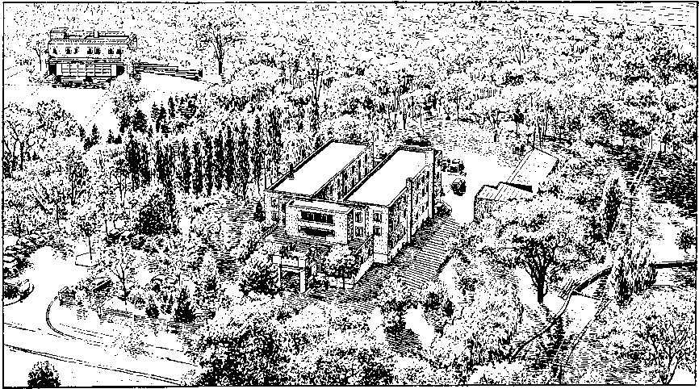
AERIAL VIEW OF GILEAD CAMPUS; MAIN BUILDING, CENTER; LIBRARY, UPPER LEFT
Not all the expansion in these lands where the missionaries worked was due to their energetic activity, but their advanced theocratic training and their long hard hours of zealous preaching in the homes of the people certainly enabled them to take the lead and set an example. By 1955 in North America there was one minister of Jehovah’s witnesses for every 922 inhabitants, a total of 236,124 publishers, to compare with 75,589 in 1942, the year before Gilead was established. On the islands of the Atlantic, Caribbean and Mediterranean there was one Witness for every 971 islanders, or a total of 19,615 Witnesses, whereas in 1942 there were only 1,297. In South America the ratio was not so high, there being only one Witness for every 6,435 of the population, all together 18,800 ministers. Still that was a tremendous increase over the 807 in 1942! Europe averaged one Witness per 1,746 of the population, or 227,374 Witnesses, a growth from 22,796 in 1942. In Africa, one publisher to every 2,068 persons on the continent brought the total to 98,146 in 1955, to compare with 10,070 in 1942. Asia could be called the “dark” continent, for in 1955 there was only one Witness to every 280,000, with a total of only 4,541. But in 1942 there were only 406. The islands of the Pacific averaged one to every 2,800 island-
ee 1956 Yearbook, pp. 66, 67. ff Ibid., p. 286. ers, with 38,325 publishers preaching all together in 1955, to compare with only 4,275 in 1942.
Truly the influx of the great multitude was in evidence. And while the increase was remarkable during the second world war, especially in Europe, the growth in world totals could be marked more particularly from 1945 onward. Let’s use the United States field to illustrate it. The 1956 Yearbook comments:
Jehovah’s witnesses in the United States rejoice in the privilege they had during the service year of 1955, reaching an all-time peak of 187,120 publishers preaching the good news. It is interesting to look back over the years and to observe that in 1940 there were 58,000 publishers. For seven years there were between 58,000 and 66,000 publishers up to and including the year 1946. From then on a steady increase was noticed of about 12,000 new publishers every year, sometimes more and sometimes less.ee
Have in mind, then, that in 1942 there were 115,240 of Jehovah’s witnesses preaching world-wide and in 1945 there were 141,606. The 1956 Yearbook then comments:
When we take a fleeting glimpse back over ten years we can see how Jehovah God through his visible organization has fed and gathered together one-half million people of good will, all of whom have taken their stand and proved themselves to be qualified ministers of Jehovah God. A half million is the growth of the New World society in but ten years’ time.ff
So, as Jehovah’s witnesses entered the fifth decade of Kingdom operation they numbered 642,929 strong. But, though further expansion was certain, they still faced increasing opposition too. In Poland, according to reports by news dispatches and radio, five witnesses of Jehovah were arrested on the false charge of being spies for political America and were sentenced in March, 1955, to years of imprisonment. Mark 13:9 and Luke 21:12 were still being fulfilled upon Jehovah’s witnesses in this “time of the end.”
The Cloud
of Modern Witnesses
Advance in
Faithful Conduct
T
OM: Your speaking of the difficulty Jehovah’s witnesses received from the Communists in Poland, John, reminds me that you haven’t mentioned anything about the Korean war. How did Jehovah’s witnesses fare in Korea at that time? I remember you said they had a depot there before the second world war.
john: yes; it was operated by a couple of brothers in 1931. But from 1939 to 1945, you recall, the work was under total ban. Then, when 1945 arrived liberation came. The brother who had been in charge of the work in Korea was dead. Only about half of those in prison were capable of service when released. The others had died or were physically impaired.
For eight years now the brothers in Korea had had no contact with the organization, but, even so, some of the brothers knew there were many good-will people to be preached to. So they gathered together what literature they had and quickly distributed all of it. Then, in 1948, the Society made arrangements to send trained missionaries to Korea, and the first two of these graduates of the Watchtower Bible School of Gilead arrived August 9, 1949. These missionaries immediately organized the brothers for field service, and that first month eight of them participated.
During the Korean war the missionaries were evacuated to Japan and the Korean brothers were caught in the city of Seoul as the Communists captured it. Three months later, however, they were liberated. Then, before Seoul was taken the second time by the Communists, the population had an opportunity to flee and the brothers were scattered as refugees to the cities of the South. Soon new congregations were functioning in Taegu, Pusan, Taejon, Kunsan and Chonju. In November of 1951 one of the American missionaries was able to return and the Korean brothers were quickly organized again, with 407 reporting in August of 1953. On September 1, 1953, a Branch was established in Seoul and increase was rapid so that by 1959, ten years after the first missionaries arrived, the number of publishers in the field had jumped from eight to 3,456. That was in spite of the war that had in-tervened.a
The expansion in Europe following World War II was not accomplished without great difficulties. This was especially true in those countries where Communist influence was strongly felt. Then as Russia gradually lowered the Iron Curtain in Europe after 1948, thousands of the Witnesses found themselves subjected to persecution in many ways worse than that which they had experienced under Nazi rule. After only three or four years of freedom from concentration camps thousands again found themselves forced back into such devilish institutions or were sent to work as slaves in Russian mines or, worse still, were banished to Siberia. In the East Zone of Germany alone 1,016 men and women of the Witnesses were sentenced to a total of 6,865 years in prison and, by 1953, there were fourteen that had been killed? In 1958 there were 440 still in prison/'
a April report for 1959 to the office of the Society’s president.
277
Another example is the tragic story of the Witnesses in Poland. In 1939, before World War II began, there were 1,039 ministers valiantly withstanding the bitter persecution of the fanatical Roman Catholic Hierarchy that had subjected the Witnesses to an underground existence for years? Release from Nazi tyranny in 1945 was sweet but proved to be short-lived. As freedom opened the door to activity theocratic worship was quickly reorganized in this land, and in 1946 they reached a new peak of 6,994 ministers.0 In 1947 Gilead missionaries arrived to aid them further in organizing themselves for expansionf so that by 1948 there was a peak of 10,385 active ministers preaching,8 and in 1950 this number had swelled to an amazing 18,116 total?
Then in 1950 Poland found itself behind the Iron Curtain. Jehovah’s witnesses were banned in that year, the Branch office being closed on June 21 and those taking the lead in service being arrested and sentenced to long prison terms. The greater number of servants in the congregations, as well as other brothers from one end of the country to the other, were arrested, the only exception being elderly women and mothers with children up to eight months. Many of these brothers soon afterward were sent off to labor camps, where they continued to preach. The Gilead missionaries were deported and once again the Polish Witnesses went underground to their former “catacomb” activities to keep the torch of Christian worship brightly blazing for the many “other sheep” still seeking a place of refuge in Jehovah’s New World society?
In Czechoslovakia the Witnesses likewise manifested themselves as true fighters for Christian freedom. Before Hitler took away that freedom in 1938 there were 1,166 active ministers? During Hitler’s tight-fisted regimentation the underground activity of the Witnesses kept alive a limited association among these faithful servants of Jehovah God. In 1945, with Hitler’s downfall, the work was quickly revived10 and for the year 1946 there were 1,209 active Witnesses.1 When Czechoslovakia began to disappear behind the Iron Curtain in 1948, here, too, the Witnesses were banned, the Branch office was closed at the end of November and many brothers were arrested.'" This did not stop the ingathering work, however. In 1950 there were 2,882 active preachers of Jehovah’s kingdom11 and in 1951 the number had grown to 3,705?
If we had time, similar experiences could be reported for the Witnesses in Communist Yugoslavia? Bulgaria, Hungary^ and Romania.1’ Even in Russia itself in 1948 there were more than 8,000 ministers of Jehovah’s kingdom actively keeping up in many ingenious ways the Bible preaching service.8 Thousands also had been reported banished to Siberia. For the year 1954 there were 64,123 Witnesses still active in all these countries behind the Iron Curtain17 and in 1959 the number had grown to over 123,000.u The Society does not publish figures for the individual countries behind the Iron Curtain now, so that the respective governments will not know how many real Christians reside in their territory.
b 1954 Yearbook, p. 161. e 1959 Yearbook, p. 126. d 1940 Yearbook, p. 160. e 1947 Yearbook, p. 214. f 1948 Yearbook, p. 188. g 1949 Yearbook, p. 22. h 1951 Yearbook, p. 26. I. Ibid., p. 242. j 1938 Yearbook, p. 128. k 1946 Yearbook, p. 119. 1 1947 Yearbook, p. 118. m 1950 Yearbook, pp. 141-143. n 1951 Yearbook, p. 24. o 1952 Yearbook, p. 246. p Increase from 130 in 1944 to 1,164 in 1954 (1955 Yearbook, p. 271). q Growth from 837 in 1946 to 3.265 in 1954. r Expansion from 2.191 in 1946 to 6,072 in 1954 (1954 Yearbook, p. 240). s 1949 Yearbook, p. 223.
A PETITION TO COMMUNIST LEADERS IN RUSSIA
The deplorable treatment of Jehovah’s witnesses in Russia was forcefully brought to world attention in 1956 at the district assemblies held throughout the earth. Awake! relates the matter:
The 1956 district assemblies of Jehovah’s witnesses had a unique feature. What was that? The thrilling presentation of a petition, usually made on Saturday evening, directed to Premier Nikolai A. Bulganin of the U.S.S.R. It related to the treatment of the witnesses behind the Iron Curtain and particularly in Russia and Siberia. . . .
It begins by telling of the extent of the persecution of Jehovah’s witnesses in Russia and Siberia, as known from recent reports.v
MARIA: [interrupting]: Excuse me, John. Wouldn’t the figures given in the petition and resolution be of interest at this point?
john: yes, they would. Will you read that paragraph, please?
maria: [reading]:
In the course of the past two years news has come out of Russia by prominent news dispatches and by repatriated persons, according to which (1) there are or have been some 2,000 of Jehovah’s witnesses in the penal camp of Vorkuta; (2) at the beginning of April of the year 1951 some 7,000 of Jehovah’s witnesses were arrested from the Baltic States down to Bessarabia and were then transported in freight trains to the distant region between Tomsk and Irkutsk and near Lake Baykal in Siberia; (3) there are witnesses of Jehovah kept in more than fifty camps from European Russia into Siberia and northward to the Arctic Ocean, even on the Arctic island of Novaya Zemlya; and (4) a number of these, especially of the 7,000 mentioned above, died of malnutrition the first two years of their sojourn in Siberia.
john: Thank you. Now the Awake! report continues:
It requests that an objective government investigation be made and that the witnesses be freed and authorized to organize themselves according to the way they are in other lands. Also that the witnesses in Russia be permitted to establish regular relations with their governing body in the United States and be allowed to publish and import such Bible literature as they need for their ministry.*
Then in a “Statement of Facts” the petition described the work of Jehovah’s witnesses and their Scriptural reasons for it, disclaimed any political interests or affiliations, pointed to the world-wide recognition given these Christians for their strict adherence to Bible teachings and asked if the Russian government wanted to take the responsibility of fulfilling Jesus’ prophecy that his followers would be hated and persecuted by all nations on account of his name. Matthew 10:16 and 24:9 were cited. Then the Awake! report says:
In conclusion the petition proposes a discussion between the representatives of the governing body of Jehovah’s witnesses and those of the Russian government. It also suggests that a delegation of witnesses be permitted to proceed to Moscow for this purpose, as well as for the purpose of visiting the various camps where the witnesses of Jehovah are interned. And it further states:
“In the meantime we can do nothing but inform the world about Jehovah’s witnesses in Russian prisons, penal camps and deportation centers, as we owe it to them as our friends and brothers in the faith to inform the world of their situation. However, we would prefer to be able to tell the world that you, the Government of Russia, have ordered Jehovah’s witnesses to be freed.”
At each assembly the petition was received with great enthusiasm and adopted unanimously. From the latter part of June, 1956, through February, 1957, it had been adopted by 199 assemblies numbering a total of 462,936 conventioners. Three copies of the petition were signed by four convention officials on behalf of those present. One copy was sent to Premier Bulganin, one to the local Russian ambassador and one to the Society’s headquarters. Additional copies were given to the press, which generally gave a good coverage of the subject.y
Around 1,500 newspapers in the United States alone carried the account of the petition. Then, on March 1, 1957, a combined petition was signed and sent to the Russian government by the seven directors of the Watch Tower Society. The Communists never replied or acknowledged its receipt.
RUSSIAN WITNESSES FIND AND
KEEP THEIR FAITH
However, we know that the Russian government is by no means ignorant of the energetic preaching activity of our brothers behind the Iron Curtain. Just listen to this editorial in the Washington Post under the meaningful title “Cloud of Witnesses.”
Lois: That’s what the apostle Paul called the very earliest ones of Jehovah’s witnesses in the Bible, isn’t it? I remember you had me read that text the first night you were here.
JOHN: I’m glad you remember it. It’s at Hebrews 12:1. Now, listen to this editorial :
It is interesting to learn, by way of an extended denunciation in Pravda, that the sect of Jehovah’s Witnesses has become almost as much of a headache to the rulers of Communist Russia as it was to the rulers of Nazi Germany. It seems that the Witnesses have been making converts all over the Soviet Union, even in such distant places as Siberia and Kurgan, and that they now constitute a formidable movement of underground resistance to the regime.
The editors of Pravda affect to believe that the whole movement is being subsidized by “the most reactionary elements of American capitalism” and that its purpose is to infect the Soviet masses with a spirit of meekness and resignation that will frustrate or delay the world-wide triumph of the revolutionary proletariat. The organizers of the movement are described as “former war criminals, Fascist collaborators and Gestapo informers” who were indoctrinated and trained for the work in German concentration camps.
The assertion that they were indoctrinated in concentration camps may not be without an element of truth.
LOIS: [interrupting]: We know it’s true, though, don’t we? Because you read us many experiences of how the Russian prisoners of war accepted the truth from German Witnesses in the concentration camps.
john: That’s right. Now here we have a factual corroboration of it. This is a real testimony to the integrity and zeal of these spiritually young Christians in persevering in their new-found faith after they returned to Russia.
tom: I’d say, too, it’s an evidence of the genuineness of their faith, not like the so-called “fox hole” variety so many American soldiers acquired during the war.
John: The article continues:
Nearly all survivors of these camps have testified to the courage and obduracy of the Witness prisoners and to their ability to withstand intimidation and even torture. It would not be surprising, then, if many Russian prisoners, who had hardly less reason than the German Witnesses to identify the state with the reign of antichrist and no less reason to accept an apocalyptic view of history, were much impressed by this example.
At any rate the chiliastic doctrine of the Witnesses—who believe that the second coming of Jesus Christ has long since been an historical fact, that His invisible reign will soon be transformed into His visible kingdom on earth, and that all existing forms of the state are therefore satanic and doomed to perish in the approaching Battle of Armageddon—has had an immense appeal to people who live under the more totalitarian and tyrannous forms of government. Thus one can readily accept the estimate of the Witnesses themselves that the number of their converts beyond the Iron Curtain is more than 100,000. One can also believe the complaint of Pravda that in the collective farms and factories of the Soviet Union the Witnesses are resisting the coercive influences of communism and its propaganda with quite as much stubbornness as their brethren in the United States have shown in refusing military service and perfunctory homage to the flag.2
A Wilmington, Delaware, paper editorialized on the Pravda article and sagely commented:
The super-patriots in this country who consider the Jehovah’s Witnesses sect subversive have strange bedfellows. The Russians agree with them. Unlike the super-patriots, however, the Russians don’t think the Witnesses are Communist-influenced.
The editorial then repeated the Pravda “charge” that “the Witnesses were trained in German concentration camps for this criminal attempt to destroy the militant spirit of the proletariat.” Then, after advancing an opinion as to why our message would find converts in Russia, the article concluded:
In Russia, such a doctrine is no opium of the people. At the very least it is a call to civil disobedience. And its effects on the oppressed could be more explosive than its ministers dream. Pravda, which sees capitalists under every bed, was bound to view the movement as a sinister creation of Wall Street. But if the Wall Street bogey is nonsense, Pravda may not be entirely wrong in seeing this particularistic religion as a potential danger to the unwithering Soviet state.aa
KEEPING FAITH UNDER NONCOMMUNIST DICTATORS
lois : It’s easy for me to see now why Jehovah’s witnesses have kept growing in numbers and why nothing has stopped them. And I can imagine why men like Hitler really feared them, even though they knew the Witnesses wouldn’t harm them personally. You gave us examples of that in the concentration camps, didn’t you?
John: yes. The same conditions have existed in many countries, even some that are not Communist. Although Greece is not under Communist rule, persecution of the brothers there has been intense. The clergy accused Jehovah’s witnesses of being Communists, anarchists, unpatriotic, traitors refusing to take up arms in defense of the country, and urged the people not only to avoid them but to drive them out of their homes as pests when the Witnesses would visit them with the message of the Kingdom.
Here in Greece the law of dictatorship under which we live forbids us to have any kind of meeting in public halls without permission of the Office of Religions, which it never intends to give us. So our meetings are held in private homes, where many times the organs of order break into and drag the brothers and sisters to the police station and thence to the court under the accusation of proselytism. Often brethren are arrested in the streets for either having in their pockets The Watchtower or for being heard to mention the name of Jehovah.
The climax of persecution was reached when two brethren were killed by beatings because they refused to make the sign of the cross and to kiss the images.bb
Here too, though, some of the officials knew who the real troublemakers were. This experience from the Greek Branch servant will illustrate it:
In an island of southern Greece the brothers suffered cruel persecution by certain clergymen. They were frequently brought to the law courts, now because of studying The Watchtower, then because of having spoken to someone about the truth, and next because of having placed a magazine with somebody. In most of the cases, however, the local court discharged the brothers because none of these charges were founded. It happened on one occasion when this area was visited by the police officer that the priest hastened to meet him and make complaints about the increase in the number of Jehovah’s witnesses. The police officer told him: “You priests are responsible for the increase. You ought to go in search of them with the gospel. I also advised you not to have them brought before the law courts and cause an uproar every now and then. Those you referred to the court the other day were acquitted and then they went into the central coffee shop of the village and were reading The Watchtower. I tell you again that you are the one responsible. The persecution that you raise causes their increase. No Jehovah’s witness was in the village before, but now there are. By so doing you are going to make even the court judges themselves witnesses of Jeho-vah.”cc
z Washington [D. C.] Post. Sat.. Mar. 21, 1959, p. A8. aa Wilmington, Delaware, Journal-Every Evening, Thursday, Mar. 26, 1959, p. 16. bb 1947 Yearbook, pp. 150, 151.
So the work was not stopped in Greece. The Dominican Republic is another example. This island “republic” just to the southeast of the United States banned Jehovah’s witnesses on June 21, 1950,ad then on August 17,1956, for reasons known only to itself, the government of the Dominican Republic lifted the ban. During that period active Kingdom ministers increased from 217 to 469.ee But in a little less than a year the police began violent attacks on some of the brothers, particularly the congregation servants, and on July 24, 1957, reimposed the ban. On August 3, 1957, ten American missionaries, some of whom had been in the country since 1945, were deported.
This overt act of the Dominican government gave rise to a petition adopted by 33,091 delegates assembled in convention at Baltimore, Maryland, on August 24, 1957. This petition set forth a statement of the facts concerning what had happened to Dominican witnesses of Jehovah and appealed to Generalissimo Rafael Leonidas Trujillo, dictator of the republic, to dignify his government by revoking the ban on Jehovah’s witnesses.ff
The petition was subsequently adopted by many other assemblies and congregations of Jehovah’s witnesses around the world. Both the petition and the deportation of the missionaries were given wide publicity by the press of the world.
1957 “LIFE-GIVING WISDOM” DISTRICT ASSEMBLIES
tom: What was the assembly in Baltimore that adopted the resolution?
JOHN: It was one of the 1957 “Lifegiving Wisdom” District Assemblies held around the world. Here is a brief description of them in the Yearbook:
A series of special talks covered the poetic books of the Bible: Job, Psalms, Proverbs, Ecclesiastes and The Song of Solomon. As the series of talks progressed anticipation grew, until finally Volume 3 of the New World Translation of the Hebrew Scriptures was released, to the delight of all present.
A symposium covering the first three chapters of Revelation emphasized pointedly the trust and responsibility Jehovah has given to those serving the brothers as congregation overseers or “stars.” The grand climax of the spiritual feast was the timely public talk “Healing of the Nations Has Drawn Near,” which was also released in booklet form.
For many of the brothers these assemblies may well mark the beginning of a new life of praise, for the invitation was given to “serve where the need is great.” We hope that many of the brothers will find it possible to move to other lands where there is much need for mature brothers, there to find employment and help with the expansion of the Kingdom work. The assemblies in the United States concluded in Baltimore, where 33,091 conventioners endorsed a strong protest to the government of the Dominican Republic for banning the work and brutally treating many of the brothers. An early count showed forty assemblies in fourteen countries were attended by over 375,000 brothers, as 8,070 were immersed in symbol of their dedication to Jehovah.
MORE EXPANSION IN KINGDOM FACILITIES
In 1956 the new thirteen-story factory for printing The Watchtower and Awake! was completed. It was certainly a joy to all of Jehovah’s witnesses to see this concrete evidence of Jehovah’s blessing on the increased circulation of these magazines that made construction of this building necessary. It was described and pictured in the Awake! of September 22, 1956. The account says:
cc 1959 Yearbook, p. 168. dd 1951 Yearbook, p. 148. ee Awake!, Vol. 38, Oct. 22, 1957, p. 8. Ibid.; 1958 Yearbook, p. 67. See 1958 Yearbook, pp. 66. 67. See also W 1957, pp. 617-619.
Excavation for the foundation of this urgently needed new printing plant began June 9, 1955. Since then a solidly constructed building of steel and concrete has been built to hold the large rotary presses that are needed to print the wonderful message of God’s kingdom.
The new building contains a total of 192,000 square feet of floor space. This is well over a hundred-percent expansion, being 30,000 square feet larger than the 162,000 square-foot area of the two other buildings put together.
The tremendous increase in Watchtower and Awake! circulation has also made it necessary for more presses to be ordered for immediate installation in this new factory.hh
At the close of the 1958 service year the Society received delivery of two new presses. These brought the total to thirteen large high-speed rotary presses with which to meet the constantly growing demand for Bible literature.”
But this is not all the expansion that was taking place. A new Branch headquarters building was completed for the Canadian brothers about the same time as the Brooklyn factory and was dedicated on May 25, 1956.jj In this plant the Society now prints all the English Watchtower and Awake! magazines for Canadian distribution. At the same time a new Branch home and printing factory was under construction in London, England.kk By 1959 it was in full operation, furnishing most of the British Commonwealth with the Society’s English magazines. On August 31, 1957, a new Branch building with a printing plant was dedicated in Copenhagen, Denmark.ll
Another feature that had been produced was the new hour-length film called “Happiness of the New World Society.” It presented outstanding scenes of the 1955 “Triumphant Kingdom” Assemblies and was scheduled for showing at circuit assemblies throughout the world beginning June 15, 1956.mm
As a further evidence of expansion, the Society’s radio station WBBR was sold on April 15, 1957. It had served its purpose and the interests of God’s kingdom well, but was no longer needed. Back in 1924 when the station began to operate there was only one congregation of approximately two hundred publishers covering all five boroughs of New York city, as well as all Long Island and even parts of New Jersey. This small group had millions of people to serve. But when the station was sold there were sixty-two congregations within New York city limits, with a peak of 7,256 publishers besides 322 pioneers associated.
Yes, New York city was getting a good witness. You will remember too that three different assemblies had been held there, two international conventions, one in 1950 and the other in 1953, and also one district assembly in 1955. All three had convened in Yankee Stadium, New York’s largest baseball stadium, and the crowds had so completely filled it in 1953, with an overflow of 49,000 at Trailer City forty miles away, that all of Jehovah’s witnesses wondered where another such international assembly could be held after a few more years’ growth of the New World society. Then, in The Watchtower, issue of December 15, 1956, this item appeared at the bottom of page 763:
ONLY 19 MONTHS AWAY! Yes, in a little more than a year and a half Jehovah’s witnesses plan on holding an international assembly. Where? New York city. When? July 27 to August 3, 1958. Start saving now. Plan to be there!
In faith, Jehovah’s witnesses all over the world began to prepare. We’ll tell you about it next week.
hh Awake!, Vol. 37, Sept. 22, 1956, pp. 16, 17. ii 1959 Yearbook, p. 79. jj Awake!, Vol. 37, Sept. 8, 1956, p. 21. kk 1956 Yearbook p. 103. 11 Awake!, Vol. 39. Jan. 8. 1958, p. 15. mm Informant, June, 1956, p. i.
Doing the Divine Will from Now On
into Eternity
LOIS: We are anxious to hear about the 1958 Divine Will International Assembly now that our appreciation of the organization of Jehovah’s witnesses has been sharpened so by our discussions. Of course, we saw some of its remarkable features on television and Tom read almost everything the newspapers printed about it, which was considerable. Personally, I was impressed by the mass baptism you held, but I’ll have to admit I was just a little disturbed by the headlines when you passed that resolution charging the clergy with delinquency.
tom: Come on now, Lois, why don’t you admit it? You were downright angry. I remember your very words: “Why can’t they let the preachers alone?” Of course, you wouldn’t read the article, which I thought gave some very good reasons for their charges.
LOIS: Well, I know better now, so suppose we let John get on with his account, shall we?
JOHN: I can’t think of a better introduction than to read the opening paragraph of the report in the Yearbook:
a 1959 Yearbook, pp. 27, 28.
God’s kingdom rules—throughout the universe! As never before in history it made its presence felt in the earth in the summer of the year 1958, not with any violence, but with a remarkable peaceful demonstration. Never before did it have so many of its ambassadors and envoys assembled together for training and consultation and for a united public testimony and proclamation as then. The world-known Yankee Stadium and the neighboring Polo Grounds, the largest baseball parks in metropolitan New York city, literally overflowed with myriads, yet without disorder of any kind, just as befitted representatives of the great Government of universal order. Daily for eight days in succession more than 145,000 of them came together and deliberated concerning the interests of God’s kingdom; and peace, orderliness and brotherhood reigned among them. The tension, the fierce charges and countercharges, the rivalry and the clash that marked the official gatherings at the United Nations capital a few miles to the south did not disturb or mar a single session of the Divine Will International Assembly of Jehovah’s Witnesses from Sunday, July 27, to Sunday, August 3. Coming from at least 123 countries and island groups, yet they met together in loyal unity around the now-ruling kingdom of God.a
Politically, that was a particularly crucial period for international relations, as the report goes on to show, with total war threatening in the Middle East:
The earthly situation was shaping up dangerously. For an international nonpolitical assembly of any size to be held the time seemed to be most inopportune. Especially so when delegates would come from the four quarters of the earth, even areas in the trouble zone, and would be dependent upon the world transportation system.
However, the long-announced international assembly had not been misnamed. It was the “Divine Will” for it to be held, and world conditions had to yield to it. The Most High God of heaven, who rules by means of his enthroned Son Jesus Christ, displayed his power to rule in the midst of his demonic and human enemies. He restrained the forces behind the Eastern and Western blocs of nations in order that the ambassadors and envoys of his heavenly kingdom might assemble in peace according to divine will.b
When notice of the assembly was published in The Watchtower nineteen months in advance, the Society had already secured the contract for use of Yankee Stadium. But, in view of the growth of the New World society since 1953, it was evident more room would be needed than these facilities made available.
tom: It was fortunate that you were able to obtain the use of the Polo Grounds also.
John: It was providential. The Society had been watching with keen interest the developments with regard to this baseball park of the New York Giants because it was ideally situated in relation to Yankee Stadium and because a proposed shift of the New York Giants from New York city to San Francisco, California, if effected, would make it available. So, when the transfer was approved on August 19, 1957, the Society’s president immediately closed a contract with the owners to use the Polo Grounds simultaneously with Yankee Stadium.
Then came the problem of procuring an ample and convenient site for a Trailer City. But repeated efforts proved fruitless. Finally it become plain that the divine will was for all the theocratic assemblers to meet together at one site “in direct contact with one another and in full view of one another, under one administration, for one combined demonstration of Christian love, fellowship and solidarity.” So the brothers were advised there would be “no trailer city.”c
Additionally, the Society planned for other vital meetings with key members of Jehovah’s visible organization. To accommodate them conveniently and to provide further overflow seating, the New Rockland Palace was rented, just one city block south of the Polo Grounds.
EXTENSIVE PRECONVENTION ACTIVITY
Long before the first official announcement of the Assembly, behind-the-scenes preparations were already under way.
The Assembly was to be a world-impressive demonstration of the power, organizability, theocraticalness and presence of God’s kingdom. Hence the Assembly needed the utmost of preparation, with due attention to the thousands of details. There is nothing slipshod about God’s kingdom. For an assembly of the size estimated, an organized personnel of ten thousand voluntary workers had to be assembled and assigned to departments and duties, from workers serving on the platform program down through the twenty-two listed departments, yes, down to the vital cleaning and sanitation department. Everything deserved to be done for the comfort, convenience and help of the Assembly delegates that they might better enjoy the program of platform events and of united field activities in advertising God’s kingdom, for eight days straight. One can well imagine the extensive and intensive planning, arranging and organization work that had to go forward. Not only was there an organizational structure to be worked out, but many physical structures had to be prefabricated for the platforms and their decorations, for the booths, for the sound-equipment facilities, and for many other things. A tremendous amount of printing in many languages needed to be done on short order. This kept the Society’s factories in Brooklyn working night and day, for weeks.d
One of the major undertakings was finding rooming accommodations for more than 150,000 guests who would come from more than a hundred lands and largely with limited means for lodging and other assembly expenses. To spark off this campaign a “kick-off” meeting attended by 9,000 was held on Saturday afternoon, April 26, 1958, at Yankee Stadium. The
next morning the largest number ever to launch a rooming-accommodations campaign was out in the field. In spite of strenuous efforts throughout the weeks that followed, the first weekend of the Assembly month saw more than 30,000 room requests still not accommodated, but the faith and perseverance of these diligent rooming workers were rewarded. Just a few days before the Assembly’s start the room requests and the accommodations secured were balanced out, with several hundred excess accommodations on hand for those arriving without having made advance request.
Convention headquarters were located in the Watchtower Building, the Society’s new thirteen-story printing plant at 77 Sands Street, Brooklyn, N. Y. The entire eleventh floor was turned over to the preconvention organization and every square foot of space was fully utilized.
Taking advantage of the Assembly, the Society’s president arranged for a meeting of all the Branch servants:
Despite the troubled world conditions, only two of the Branch servants were prevented by men in worldly authority from answering the call to the visible headquarters of Jehovah’s witnesses in Brooklyn. The Society’s president, who has visited almost all of these Branch offices and factories around the globe, appreciated the need for all the Branches to carry on the functions of their various departments uniformly, according to proved efficient methods. So, after he himself had made a personal inspection of the Society’s biggest and most complicated Branch in Brooklyn over several weeks, he composed an all-embracing book of guidance and instruction for all Branch organizations and had it specially printed. This large-size 158-page loose-leaf book is entitled “Branch Office Procedure of the Watch Tower Bible and Tract Society of Pennsylvania”; and its instructions were to be put into effect from September 1, 1958, forward. This new book required study and discussion. On July 16, or about two weeks before the Assembly began, the Society’s president called together all the more than eighty Branch servants present,
e 1959 Yearbook, pp. 34, 35. t Ibid., pp. 35, 36. together with their respective assistants, totaling all together 160 overseers, to the Kingdom Hall located in the Brooklyn Bethel building, at 136 Columbia Heights. There, day after day, he went over this Branch Office Procedure book with them, discussing it, enlarging on it, answering their questions upon it, until two days before the Assembly opened. The gift of a copy of this special book to each one of the Branch servants was, in effect, the first release of the international assembly, or at least a preliminary release.
Inasmuch as each Branch is equipped with this instruction book and must follow it, Jehovah’s witnesses in any territory around the globe may have the fullest confidence in the particular Branch that supervises their witness activities and congregational affairs. They know that such Branch, no matter how distant from headquarters and no matter how small or recently established, is operating according to the most advanced, up-to-date pro cedure, in full harmony with all other Branches, even the oldest and largest. Thus no one should despise or ignore any one Branch, but every active witness of Jehovah should appreciate that the entire organization of many parts is working in complete unity. Each witness should therefore co-operate and be submissive.®
DAYS OF SIGNIFICANCE
According to the skillfully planned program, each of the Assembly days was given a name that emphasized some theocratic principle or activity:
Beginning with Sunday, July 27, the days were named in the following order: Faithfulness Day, Exclusive Devotion Day, Expanding Our Ministry Day, Tasting Divine Goodness Day, Fullness of Service Day, Fearless Ministry Day, “Your Will Come to Pass” Day and God’s Kingdom Day. Thus on the eighth and last day the names culminated in a theme that called attention to the outstanding teaching of the Holy Bible, God’s kingdom. This harmonized perfectly with the subject of the public lecture that climaxed the closing day, “God’s Kingdom Rules—Is the World’s End Near?” This theocratic kingdom is inseparable from the divine will, for it is by God’s kingdom that the model prayer to the heavenly Father is carried out, “Let your will come to pass, as in heaven, also upon earth.” (Matt. 6:9, 10 [NW]) All the discussions and talks of the preceding seven days led the assemblers into a grander, soulfilling appreciation of God’s glorious kingdom that has been ruling in the heavens since 1914 by his enthroned Son, Jesus Christ.f
The Divine Will International Assembly was no assembly for dedicated Christians just to enjoy a relaxing good time together, listening to some entertaining program or to eulogistic speeches in praise of themselves. The Yearbook report explains the lofty purpose of this grand assembly and details some of the wonderful provisions made by the “faithful and discreet slave” to provide essential nourishment and equipment to the New World society, equipping all its members for a firmer and more proficient place in the divine purpose:
The Assembly was arranged to be and it proved to be a most instructive training school, with the latest, most advanced Scriptural and organizational information to be given out. To this end, not only were the Society’s Branch servants called in, but all the district and circuit servants and as many foreign congregation servants understanding English as possible were brought to the Assembly. These were key men in the New World society of Jehovah’s witnesses around the globe. They especially needed and deserved the counsel, the training and the mighty tonic spiritual effect that were to be imparted at the Assembly. Besides these, practically all the graduates of the Watchtower Bible School of Gilead, who were still active in full service as missionaries and special pioneers, were brought in. Congregations all around the globe had made voluntary contributions to the Watch Tower Society toward meeting the travel expenses of all such worthy ones; and this aided greatly in bringing them to the Assembly from Asia, Africa, Australia, Europe and the Americas and the many islands of the seas.
The Society’s president made provision for meeting in special morning sessions with these outstanding representatives and appointed servants of the Society. It was particularly for such special sessions that the New Rockland Palace was engaged. On Tuesday morning, July 29, 1,211 missionaries who make use of fifty-eight languages in their territories met with the Society’s president and the teaching faculty of the School of Gilead to hear encouraging talks and to enjoy a special tray-dinner together. All thirty-one graduated classes of Gilead were represented, thirty-one missionaries being from the first class of 1943. Wednesday morning marked a meeting with another group of fulltime workers whom the Society sustains, namely, the special pioneers, who are doing vitally
p. 1959 Yearbook, pp. 36, 37.
needed witness work in many lands in specially assigned locations.
Many circuit and district servants had had schooling in Gilead, but at 9:30 a.m., both Thursday and Friday, at the Palace, the Society’s president met with all the circuit and district servants from all lands and nationalities. This was with a view to improving their ministry as special overseers of the many congregations in their circuits and districts. These two mornings of discussion and of taking counsel together at the Palace were supplemented by the talks “Keeping Strict Watch on How We Walk” and “Shepherding the Sheep with Skillfulness” by the Society’s vice-president and president respectively on Wednesday night at Yankee Stadium, these talks being particularly directed to district, circuit and congregational servants, all of whom sat together in a reserved section of the stadium to hear these special talks.
A further talk Saturday morning by one of the Society’s directors from the headquarters’ Service Department, on the subject, “Overseers, Keep Your Congregation Alive,” emphasized the importance and responsibleness of spiritual overseers, on whatever level of service privileges they find themselves. Overseers with a still larger supervision received due attention during the Assembly itself when the Society’s president met again with the Branch servants, together with their assistants, at the Palace on Saturday morning at 9 a.m.^
All these meetings had a spurring and educational effect on all those privileged to take part in them. They gave evidence of the loving interest of the Society’s spiritual governing body in the welfare of the flock and, through the instruction imparted, further equipped the key servants of the visible organization to fulfill their own responsibilities as overseers.
REALIZATION SURPASSES ANTICIPATION
From the first day, the Assembly program held forth the promise of surpassingly grand things for Jehovah’s servants from all over the world, presenting further evidence of the unity of purpose of these Christian assemblers:
From the start the Assembly was marked by internationality. Each day the temporary chairman in each stadium was of a different nationality, as follows: American, Japanese, Brazilian, Filipino, Mexican, Northern Rhodesian, Ghanan, Egyptian, Moroccan, Argentinian, Austrian, British, Ceylonese, Grecian and French. Moreover, on Monday, Tuesday, Thursday and Friday morning, two-hour sessions were held in various sections of the two stadiums in twenty foreign languages to give Assembly resumes to those not well acquainted with English.11
In one of the opening features on the first Sunday morning, July 27, Branch servants from fifteen foreign countries spoke on the theme “We Are Glad It Is the Divine Will that We Are Here.” Then the American Branch servant, in his capacity as Assembly Chairman, delivered a cordial Address of Welcome to an audience of 122,061 from 123 or more lands.
Also on the opening morning’s program were seven zone servants speaking on “Zone Servants Representing the Nations.” These servants were traveling representatives of the Society’s president assigned to visit those Branches in their respective zones. Since 1956, the globe had been divided into ten zones, each one taking in a number of the Society’s Branches, and on January 1, 1956, the first of the zone servants inaugurated this new service of inspecting the Branches.
Sunday afternoon, 103 students of the thirty-first class of Gilead took their special places at the home plate of the Yankee team’s baseball diamond. This was the time scheduled for their graduation exercises. In the running track around the stadium, in their respective class groups, sat the still-active missionaries and full-time workers of the preceding thirty classes. Many were in national costume. All followed the proceedings with rapt attention, as did the entire audience of 180,291 Witnesses in and around both ball parks. Even rainfall, that began halfway through the School president’s hour lecture, “Stay by These Things,” did not budge them from their seats. These newly trained Kingdom educators were now ready to be sent forth on their mission to fifty-two lands.
Many were the reports of Branch servants, missionaries and special representatives from around the earth, all of which kept the international make-up and activity of the New World society to the fore, and which swept the attentive audiences through the length and breadth of the 164 lands where Jehovah’s witnesses were preaching in more than 120 languages. Outstanding was the feature “Behind the Iron Curtain.” The Yearbook comments on this:
To add some heart-stirring realism to this report from behind the penetrable Iron Curtain, the Swiss delegate played a tape recording that had been smuggled across a number of frontiers. By means of this the audience of 127,802 on Saturday morning actually heard a group of underground witnesses sing in four-part harmony two sacred songs from our 1928 Songbook and heard a message of greeting and prayerful good wishes from an underground overseer. What loyalty God’s kingdom calls forth!*
Branch servants, and district and circuit servants shared in the educational program, and representative brothers of Brooklyn Bethel also served on the platform in vital features:
The counsel and instruction given from the Scriptures not only had in mind the representative responsible servants of the earth-wide organization but also dealt with the Christian obligations of parents and children, husbands and wives, and the hundreds of thousands of congregation members who take part in Kingdom preaching. In fact, all features of Christian living were touched upon in the platform talks, and much practical advice from God’s Word was given.!
A new educational feature was introduced on Friday, August 1:
The thirty-minute discussion of “Theocratic School for Fearless Ministers” stirred up a sustained applause when the speaker, the Society’s president, sprang a surprise on his combined audience of 173,079 Friday night. What was it? That, from the beginning of 1959, sisters in the congregations were to be privileged to enroll in the weekly Theocratic Ministry School. They would then take part in the platform presentations to the extent of demonstrating how to give six-minute sermons to people at their homes, these sermons being based on an assigned number of pages in the new publication entitled “From Paradise Lost to Paradise Regained.” This was for the sisters a really serious assignment in the Theocratic Ministry School, for they were to be counseled afterward by the school servant on their presentation.
Wednesday morning, July 30, Tasting Divine Goodness Day, afforded a sight without equal since the day of Pentecost in Jerusalem A.D. 33, over nineteen centuries ago. This was the occasion of the largest mass baptism of Christians on record. All the baptismal applicants were seated immediately in front of the speaker, who addressed them on the subject “Baptism According to the Divine Will.” What followed is described in the Yearbook:
[The speaker] had two basic, searching questions to ask them in order to learn whether anything prevented them from getting baptized. At his request the baptismal applicants rose to answer audibly in unison these two determining questions. At that moment the great crowd of observers sent wave upon wave of heavy applause surging through the vast stadium. Why? Because so many stood to show that nothing prevented them from symbolizing their dedication to God through Christ by water baptism.
At the Orchard Beach swimming area miles away, where they were transported by seventy-five-passenger buses, they trooped into the sea in thirty lines to be baptized. At the end of two and a half hours the count of those actually baptized ran up to 2,937 men and 4,199 women, to total 7,136. This was 4,136 more than were baptized that day of Pentecost long ago, and they represented far more than the sixteen nations that were represented on that Pentecost. The Pentecostal baptism of 3,000 in water was in response to the revealed fact that Jesus was seated as Lord and Christ at the right hand of his Father in heaven. The baptism of 7,136 at the 1958 Divine Will International Assembly
k 1959 Yearbook, pp. 40, 41. 1 Ibid., pp. 41, 42. was a record-breaking response to the fact that God’s kingdom rules since the world-disturbing year of 19141
It was on Friday, August 1, that the Assembly passed the resolution Lois spoke about at the beginning of this evening’s discussion.
L°is: I've thought about this resolution many times during the weeks you and Maria have been coming here, especially when you described the series of indictments and resolutions adopted by Jehovah’s witnesses from 1922 to 1928. But how was this one different?
JOHN: It was different in many ways. No other resolution had actually been presented as a featured part of the program. This one was; in fact, the major portion of one whole afternoon’s session was devoted to it with a full explanation first as to the reasons for its adoption. Besides, advance notice was given; the entire Assembly was urged to be present for that session. Furthermore, many different nations were represented. Another thing, its distribution afterward differed in that all copies were presented personally face to face, and were followed up later by return visits. Let’s read the account in the Yearbook:
For a couple of days prior to Friday an urgent appeal was made for all delegates to be present Friday afternoon when the issue was to be submitted to the Assembly, “Why This Convention Should Resolve.” To the boundless joy of the whole Assembly, the amazing number of 194,418 responded to the invitation. For three quarters of an hour the Society’s vice-president laid before this applause-happy multitude Scriptural reasons why the Assembly should seize this unequaled occasion to unite in an unequivocal resolve, thus going on record before God, angels and men. Eagerly, for the next fifteen minutes, they listened to the Society’s president as he read declaration after declaration of the proposed Resolution. This outrightly exposed Christendom’s clergy as the most reprehensible class on earth today. It reaffirmed the witnesses’ own theocratic principles. It unashamedly proclaimed God’s kingdom by Christ to be the sole means of salvation for all men who long for peace and security. It strongly asserted their determination to serve and preach God’s kingdom in love, peace and unity and without letup, like our faithful brothers behind the Iron Curtain, until Jehovah himself brings the witness work to a worldsmashing finale by his own act of testimony at Armageddon. Applause greeted the president’s motion that the Resolution as read be adopted. His motion being seconded, he put the question, and 194,418 voices roared out a unanimous Aye! The consequences of this forthright Resolution all those who heartily adopted it stand ready to meet with Almighty God’s help.
tom: How many copies were distributed ? Was it published in booklet form?
John: It was published as a four-page tract, the same size as The Watchtower. A bold red headline across the top of the first page read: “How Has Christendom Failed All Mankind?” Then underneath, as a secondary heading: “Who Today Is Taking the Lead Toward a Righteous New World of Perfect Government, Lasting Peace and Universally Shared Happiness and Prosperity?”
All together, throughout the world, 70,000,000 tracts were distributed in fifty languages, mostly in December, 1958, the month the campaign began.
tom: That was the most extensive distribution any tract was ever given by the Society, wasn’t it?
John: yes, especially when you remember these were all handed out personally. They were not just left under someone’s door or passed out on the street like handbills." Then the publishers made return visits to determine the reaction and answer any questions that might have been aroused. As a result many new home Bible studies were started.
Another distribution given this resolution brought considerable response also. The resolution and the entire text of the talk that introduced it at the Assembly were published in the November 1, 1958, issue of The Watchtower and mailed out by the congregations to all ministers, prominent businessmen and men in public life in their respective territories. The response was varied and many favorable comments were received.
PRINTED GIFTS
tom: were any new publications released at the Assembly?
John: yes, indeed. Here are some comments from the Yearbook on releases:
Unknown to the tens of thousands attending the Assembly the New World Bible Translation Committee had finished its work on Volume IV of the New World Translation of the Hebrew Scriptures on April 13, 1958. So it released it for the Watchtower Society’s factory to print. Volume IV contains the translation of the prophetic books of Isaiah, Jeremiah and Lamentations. Jehovah having provided his witnesses with this latest translation of these three Bible books, it was apparent that his special messages for the Divine Will International Assembly should be drawn from those prophecies. They were. The reprehensibility of Christendom’s clergy as set forth in the Resolution that the Assembly adopted was foreshadowed by Jehovah’s denunciation of Judah’s religious leaders, in Jeremiah, chapter 23. Other principal speeches were likewise based upon the prophecies contained in this latest volume of the New World Translation. The president’s keynote speech on Monday afternoon, “Signs and Wonders in the Time of the End,” rested chiefly upon Isaiah’s prophecy; similarly the vice-president’s speech on Tuesday afternoon, “Divine Loving-Kindness and the Kingdom,” and his speech on Saturday night, “When Jehovah Rises Up to His Unusual Work.” The president’s speech of Wednesday afternoon, “Down with the Old—Up with the New!” was a present-day application of dynamic prophecies of Jeremiah, who, together with men of good will, survived the shocking destruction of the holy city of Jerusalem by the Babylonians in 607 B.C. At the dramatic close of this Jeremian speech the Society’s president evoked great applause from his audience of 150,282 by releasing Volume IV of the New World Translation of the Hebrew Scriptures. Tens on tens of thousands of copies of it were eagerly taken by the vast throng at the close of the session.?
Then on Thursday afternoon, July 31, the Society’s president spoke on the subject “Maintaining Our Spiritual Paradise” and crowned the occasion by his entirely unexpected display and release of the glowingly beautiful, handsomely illustrated book entitled “From Paradise Lost to Paradise Regained.” It was a book of 256 pages and larger in page size than other bound books of the Society. This description of its contents should be helpful:
This book wastes no time and space discussing false doctrines of worldly religions, but simply explains the God-honoring truths of the sacred Bible as these came to the surface in the outworking of God’s purpose to restore obedient humankind to an everlasting earthly paradise. But this restoration has to be preceded by the establishing of God’s heavenly kingdom and his restoring first a spiritual paradise for his faithful Christian witnesses. It was this spiritual paradise that had to be maintained now with faithfulness and fruitfulness by its blest, happy inhabitants.?
The book was published, not with children in mind, but for the purpose of satisfying the need and craving of adult persons in many lands who needed a primary or elementary manner of approach to the study of God’s Word.
One of the outstanding publications of the Society was released on Saturday afternoon, August 2.
Why the international assembly was embellished with the title Divine Will dawned on the delegates, especially Saturday afternoon. The day’s name itself was drawn from the words of our Lord’s Prayer. This was true also of the president’s speech, “Let Your Will Come to Pass.” For twenty-three times his audience of 175,441 applauded his descriptions of how divine Jehovah had carried out his will in heaven and earth. This has been despite the opposition by Satan’s hosts of angels in heaven and by the mighty world powers on earth, from the days of the first world power Babylon, Jerusalem’s destroyer, down to the atomically armed seventh world power, Britain-America, of today, together with the eighth world power, the United Nations. By his heavenly kingdom, which Jehovah God gave to the once “lowliest of men,” Jesus Christ, in 1914, the God of heaven will have his will come to pass in the coming battle of Armageddon and also afterward in the endless new world. With a deepened appreciation of how God accomplishes his will the Assembly applauded the president’s announcement of the title of the beautiful new 384-page book, “Your Will Be Done on Earth.” The distribution of 228,000 copies into their hands by the next few days bespoke the yearning they felt for the unfolding of the prophecies of Daniel and of other holy inspired men that this book offered them.
GOD’S KINGDOM DAY
Now the Assembly was drawing to a close. But, as we mentioned earlier, the program was designed to reach its climax on God’s Kingdom Day, the final Sunday. Nor did it miss its mark:
For both heaven and earth the final Sunday afternoon was a happy time. Certainly the great King of heaven, Jehovah God, and his reigning Son, Jesus Christ, rejoiced together with the holy angels to have God’s kingdom preached by one mouthpiece to the largest visible audience on one occasion. From heaven they looked down on an audience of more than a quarter of a million persons, 253,922 by count occupying all seats in the two Assembly stadiums, thousands standing in close formation out on the baseball outfield behind the speakers’ platform in Yankee Stadium, all seats in the overflow tents being occupied, and thousands standing listening on the walks outside the stadiums and tents. The challenging subject of the public address, so widely advertised over the weeks, was “God’s Kingdom Rules— Is the World’s End Near?” Showing a fine grasp of his subject, the speaking witness of Jehovah, the Society’s president, proved by Scripture and by prophecy fulfilled since 1914 that God’s kingdom by Christ has ruled in the heavens since that date. This unavoidably denotes that the end of this political, commercial, religious world is near. No vacuum will follow its complete end at Armageddon, for God’s everlasting new world of righteousness will glorify heaven and earth after Armageddon, and forever His will shall be done on earth in a paradise state as it is done in the holy heavens above.
p. 1959 Yearbook, pp. 42, 43. Ibid., p. 43. Ibid., p. 44.
This was indeed something tor this overwhelmingly great audience to hail, and hail it they did, with a finale of applause that was really a tribute to the Kingdom message. During the intermission that followed they gladly accepted the proffered two free copies apiece of the booklet containing the full text of the speech, half a million copies of which had been printed and brought to the stadiums for this exalted occasion. Judging from the big audience of the preceding Friday afternoon, we believe that about 60,000 of the invited public had turned out and joined the Assembly in listening to this glad message of God’s now ruling kingdoms
Many of those 60,000 must have remained in response to the invitation to hear the president’s closing remarks following a brief intermission. The attendance at the final session was 210,778, the second-largest of the entire Assembly. What they heard amply rewarded them:
There are people who want to preach this Kingdom message. In April alone there were 787,967 ministers. That is an increase of 71,066 over last year’s peak of publishers. Do you realize that these publishers are conducting 546,968 Bible studies each week? Last year the average was 413,049. Right now we are conducting 133,000 more Bible studies weekly than a year ago. Keep up the good work! If we do there will be many more than 71,000 publishers coming into the organization within the next twelve months. . . .
What is our responsibility? There were 1,159,212 people who attended the Memorial in April [of 1958]. This is 84,049 more than in the previous year. The other sheep are being gathered. There is a big difference between the 1,159,212 who came to the Memorial and the 787,967 who went in the field ministry in April. The potential then is great. There were 370,000 persons who showed interest enough to come to that meeting. Someday those 370,000 persons ought to be publishers. We are not stopping with those, however. We are carrying on over a half million Bible studies. Jehovah’s witnesses are growing. They are a sign and a wonder to all the nations of the earth. Let’s continue to be that way.
While the New World society of Jehovah’s witnesses is growing rapidly the remnant are decreasing. In 1957 15,628 persons partook of the emblems. This year, 1958, 15,010 partook, a decrease of 618. But what joy the remnant have, seeing the great work going forward.
The president then discussed the wonderful new publications that had been released during the Assembly and then asked the question:
And the next release? Well, I guess I had better tell you a little about that now. The Watch Tower Bible and Tract Society is planning to put up a new building on Columbia Heights across the street from the present Bethel home at 124 Columbia Heights. I would appreciate it if the ushers would walk down the aisles and give postcards out sufficient to the number of adults sitting in the sections and you will have the postcard in your hand while I am talking about it. You may keep this colored postcard.
Why do we need this new building? That’s simple. You can see why by just looking around you. This organization is growing and Bethel is crowded to the limit and we need a larger building to house the family, which family is needed to take care of all of your needs around the world in all languages. This building, of course, cannot be constructed for at least another year. The people living in the apartments now on this property will be out by January 1, 1959, and then by Jehovah’s undeserved kindness we hope to demolish these buildings and begin construction of the new 12-story structure.
All of you know that one of the purposes of the Society is to train ministers and we hope to do a lot of training of ministers in this building. We are going to advance, by Jehovah’s direction and under the guidance of the holy spirit, the educational program and we are going to bring ordained ministers from all parts of the world to Bethel and give them a ten-month training course. This organization is expanding. It needs more ministers to supervise the work in all the lands of the earth and we intend to do this right in Brooklyn.
There will be special training rooms for these ministers and special instructors will be assigned to look after that training. The charter of the New York Society authorizes the Watchtower Society to instruct ministers and train them for ministry and missionary work and we want to prepare them for the great religious work of preaching the good news of the Kingdom throughout all the world the best we possibly can.
Does this new special training mean that Gilead School at South Lansing, New York, is going to change? No, we intend to keep that school operating, only we expect to enlarge its operation. If it is Jehovah’s will that we continue on in this service work, by 1961 it is the Society’s hope that places like Gilead School, the new Branch home in Toronto, Canada, the new building in London, England, the large structure in Wiesbaden, the Paris office and a number of other Branches where we have large structures will be turned into schools to train certain individuals.
p. 1959 Yearbook, pp. 44, 45. s Manuscript: “Closing Remarks by the President.”
First of all, district servants need training, as do circuit servants. Then we will begin training congregational servants. The period of time spent will not be nearly as long, but probably two weeks to one month, and if overseers can arrange their time (I am speaking of those other than circuit and district servants) so that they can get away from their places of employment for a month, then they can attend a special training course in overseers’ activity.
The educational work is not on the decline, but rather it is on the move forward. This you have seen through this convention. The theocratic ministry school in the congregations now training the sisters will mean great educational advances. There has been a release of a booklet to teach people to read and write. We want to move to higher levels of understanding so that we can get deeper into the thoughts of Jehovah as he has expressed them in His Word, so that we can know of his purposes. So if it be the divine will that we continue in this great work of preaching the good news of the Kingdom for a number of years, then the Society is prepared to train all of its overseers over a period of time in the principal Branch offices throughout the world.
The details of this arrangement for 1961 will be given later, but we are telling you now, to show that the Society is planning ahead for a greater understanding of Jehovah’s Word and purposes. Truly a tremendous responsibility rests upon us when 70,000 new people come into the organization every year. We need teachers! We need people who understand the truth! and who can help others to learn! Do you want to be one of these teachers ?t
tom: There is nothing we’d like better. From what we’ve seen and heard in the last sixteen weeks we are convinced that there is only one way to do the divine will. Lois and I have been talking about it for some time now and we’re both determined to get busy and share in preaching the good news. We hope you and Maria will help us to do just that.
John: you can be sure we will. And there is no time to lose. After these thrilling events of the summer of 1958 and the closing remarks of the Society’s president at the Divine Will International Assembly, some features of the new program began to develop immediately. On November 25, 1958, the contract was signed for demolition of the old buildings on the site of the proposed Bethel annex and on December 8 the buildings started to come down. March 25, 1959, the plans of the new Bethel addition were approved and the building permit was granted and by April 7 the demolition crew finished and moved out to make way for the excavators. On April 16, 1959, the first big Diesel engine shovel was brought in to begin digging for the foundations of the new building.
The Society offered the brothers an opportunity to share in financing the construction, not by soliciting donations, but by offering the Society’s Promissory Notes to the brothers in return for loans in units of $100 at 3 percent annual interest. Here is an excerpt from the Society’s letter of April 1, 1959, addressed To Jehovah’s Witnesses in the United States:
Many of you will recall in 1926, in 1946, and again in 1955, new facilities were financed by Jehovah’s people lending to the Society sufficient funds to provide for the construction and equipping of new buildings. Those loans have all been paid off. We believe Jehovah’s witnesses will again make financial provision enabling the 1959 expansion to continue without interruption. To give Jehovah’s witnesses the privilege of sharing in this, the Society will again borrow money from the brothers who wish to make loans and will issue its Promissory Notes dated June 30, 1959.
The Promissory Notes of Watchtower Bible and Tract Society of New York, Inc., will be issued in any amount that is a multiple of $100.00.
Meanwhile, on February 21, 1959, the Society’s president left New York by plane bound for Africa and a three-and-one-half months’ inspection tour of the Society’s Branches and missionary homes. His itinerary provided for a check of all the Society’s new large Branch buildings where it was planned that the new training schools for congregation servants would be instituted in Africa and Europe.
Immediately after the announcement in Yankee Stadium work had begun on the course of study for these schools. The course that was developed was called Kingdom Ministry School and consisted of twenty-four school days of ninety-six classroom sessions and twenty instruction talks or lectures. The subjects selected for study were Kingdom Teaching, Field Ministry, Speaking and Overseers.
tom: That sounds like an excellent program of training and a very practical curriculum. When did the first class start?
jjohn: The first group called consisted of twenty-five, these being United States circuit servants and wives, who were not graduates of Gilead. They began the course March 9, 1959, at Gilead and completed it April 3. The second class began on April 13 and finished on May 9.
Lois: with so many exciting developments going on we’re anxious to get into the work too. It just seems that we’ve lost so much time already. I’d give anything to have been at the Divine Will International Assembly.
jjohn: Well, it’s too late for that now, of course, but you can still put yourself right into the middle of the assembly and enjoy many of its thrilling features.
Lois: what do you mean? How can we do that?
jjohn: Listen to this item in the Kingdom Ministry for May, 1959:
It is with great pleasure that the Society announces the release of the new film “Divine Will International Assembly of Jehovah’s Witnesses.” Starting May 2, 1959, it will be shown at all circuit assemblies on Saturday evening, followed by a special forty-minute program.
To make possible the showing of the new film on Saturday night, the circuit activity meeting, featuring the fine program on the art of teaching at home Bible studies, and which has been so much appreciated by the brothers, will replace the service meeting and ministry school on Friday night.
Plan now to attend all three days of your coming circuit assembly, and do all you can to encourage newer publishers and persons of good will to attend with you.,J
This is a full-color film, an hour and a quarter in length, with a running commentary. We’d certainly like to have you see it with us.
Lois: We’ll not need much encouragement, I can assure you. We certainly appreciate the time you’ve spent with us and the mental picture you’ve given us of the growing New World society. Now, with an opportunity like this to see the brothers from all over the world in session at the Assembly, we wouldn’t miss it for anything. When is our circuit assembly scheduled?
jjohn: Next weekend. Maria and I will be happy to take you and Tom with us. We expect to have along another young couple with whom we’ve been conducting a home Bible study. We would like for you to meet them. This will be their first assembly too.
All over the world new ones are beginning to share with Jehovah’s witnesses in the joys of Kingdom service. The New World society is on the increase. In December of last year, 1958, we reached a new world-wide peak number of 805,401 publishers of the good news.v Later at the celebration of the Lord’s evening meal on March 23, 1959, the world-wide attendance was well in excess of 1,200,000, but few more than 14,400 partook of the emblematic bread and wine.w This large attendance showed up the possibility of inducting thousands more preachers of the good news into the field service. Why, during April of 1959, which was the last month of the four-month campaign for getting new subscriptions for the Watchtower magazine, our world-wide report showed that over 860,000 actively shared in preaching that God’s kingdom rules and this world’s end is near. All these preached in 170 lands, but it is remarkable that one seventh or 14 percent of these witnesses of Jehovah are working behind the Iron Curtain right now.x
tom: Well, that is amazing! Certainly, whatever turn events may yet take before Armageddon, Jehovah’s witnesses have undeniably demonstrated their place in the divine purpose.
jjohn: yes; and divine prophecy makes certain that Jehovah’s witnesses are here to stay and enjoy further privileges, to the vindication of his universal sovereignty. In harmony with their determination to minister to God continually day and night, their yeartext for 1959 was taken from Revelation 16:15, in which the glorified Jesus Christ warns of his coming to the battle of Armageddon and says to his followers at Jehovah’s spiritual temple: “Happy is the one that stays awake and keeps his outer garments.” So they want to stay awake in Jehovah’s ministry and, at Christ’s coming, prove worthy of retaining their ministerial garments forever.
tom: i certainly want to get into such ministerial “outer garments” as soon now as I can.
lois:| And J too! Tom and I together!
jjohn: Splendid! But that will require study and activity.
tom: Lois and J appreciate that fact. And so from now on you and Maria are going to keep coming over here each week, not to tell us just about the modern history of Jehovah’s witnesses, but to help us to become such ourselves. We’ll need to have you start a home Bible study with us. Can you take time to do this?
lois: oh please do!
jjohn: i’ll he only too glad to do so, just a week from tonight. Our most effective Bible study aid for use in a home Bible study has been the Watch Tower publication “Let God Be True” Its twenty-six chapters set out the basic doctrines of the Bible, God’s Word.
tom: i>'ll he glad to contribute right away for copies of this book for Lois and me. Bring them over as soon as you can, and tell us what to study in advance so we’ll be able to prepare.
maria: d0 y0U aiso have your Tuesday nights open?
TOM: Yes. Why?
maria: Well, because on Tuesday nights Jehovah’s witnesses all around the earth hold group Bible studies in Service Center locations, these being mainly in homes of the brothers. There is such a Service Center study very convenient for you to attend, in this neighborhood—in our own home. About twelve of us are studying the book released at the 1958 International Assembly, entitled “Your Will Be Done on Earth.” Before study, we all go out together witnessing in the territory round about, for about an hour.
lois: Qh, that’ll be an easy, helpful way for Tom and me to get into the preaching work, as well as to increase in knowledge.
tom: yes, and we are also eager to start attending the regular meetings you Witnesses hold in your Kingdom Hall. We need to take advantage now of Jehovah’s every provision that we, too, may serve with you forever as Jehovah’s witnesses in the divine purpose.
A PICTORIAL VIEW OF OLD ORIGINALS
WATCHTOWER
ALL REPRODUCTIONS APPROXIMATELY ONE THIRD ACTUAL SIZE IN HEIGHT
HERALD OF CHRIST’S PRESENCE.
"Watchman, What of the flight?" "The Jdorning Cometh."— Zsa.xxi. 11
PITTSBURGH, PA., JULY, 1879,
adorned by all these gems of character, ice could not lx recognised ns God's children now, nor permitted ever to enter His presence without the rube of Chriil't h'jKttoumeu, the " wedding garment"nccerwiry to our participation in " the marriage of the Lamb.”
NEWS OF THE TIMES.
C- T. Russell, Editor and Publisher.
Rcgukr Contributor*.
I’lrrseuncH. i’>
Through the world unspotted go.”
Christiana to whom an apology would be rai ded for directing ntlen-
J. H. PATON.
W. I MANN. B.W. KEITH, H. B. RICE.
A. D. JONES.
Published Monthly.
101 Fifth Ave., PITTSBURGH, PA
hopes to give assistance and encouragement Quite a number endeavor to satis* agement. It is in bondage to no man, fy themselves with the thought that no party andto nocreed buttheBihie; | it is a spiritual coming—that when ....... ’ ipa-1 any are converted, that forms a Part
That we
congLijUeiill

genet. they add and to virtue, It
n««, charity; wh thew indwelling graces, they are (godly ).
But, recognisin
rircc-wfity of tlieee spiritual man, they fail not to recognise that the merit toward God lies n«t in three moral virtue*, but in Chriifl fxrfrrt nttrrifire, and though
ge/’ and what is necessary that we " be not soon ashamed in mind."
'• To him that hath an ear to hear what the spirit with unto the churches,” Zion’s Watch Tower
thy to ” all who love the Lord Christ in truth and siucerit aim* to represent “the children," the prospective “ Bi
Word, led by the Lord Divine Tt
Tola- iivin
And notalon to imaiat them
eetruetton, He ths is olive ajienka of t ___________
future, saying: “Behold, 1 ronir I‘l-r-nm lUTBirTuoi., m ____
quickly, and my reward is with me. ’ break forth in the deeerte," when Aad the inspired John replies: the tabemaelo ef God frill be with “ Even ao come I<ord Jesus.” (men and lie shall dwell with them,”
ABOVE: JULY, 1879, ISSUE.
INSET LEFT: JANUARY, 1892, ISSUE. INSET RIGHT: JANUARY 1, 1895, ISSUE
Rare copies of the Society's earliest periodicals re* produced from the originals in the Society’s private collection at international headquarters. Zion’s Watch Tower, first published in July, 1879, was a complete break from the nominal churches in order to uphold the doctrine of
Christ’s ransom sacrifice and to proclaim the Lord’s returning for the purpose of administering the blessings of his ransom to all obedient mankind. The Golden Age was published as a companion to highlight current events of the time as evidences of Christ's second presence. Its first issue was October 1, 1919.
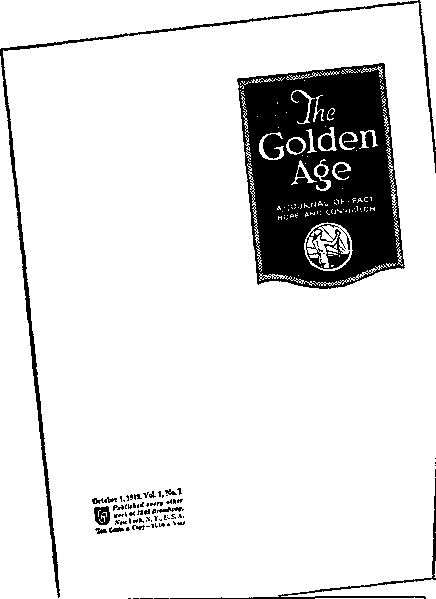
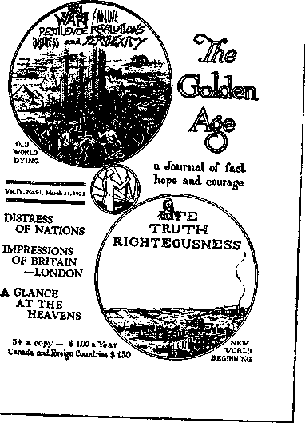
Gke Golden Age
A JOURNAL OF FACT HOPE AND COURAGE
in this issue
THE TRUTH
A PROCLAMATION
“HIS LIGHTNINGS”
beginning of » true ttory that if fttarjer than fiction
MORE INTOLERANCE
EVERY OTHER WEDNESDAY FIVE CENTS A COPY OR ONE DOLLAR A YEAK Volume DC • No. 228 Ju»* 1928
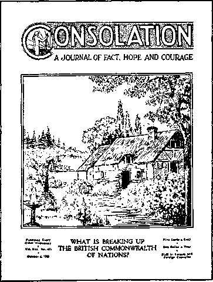
TOP LEFT: OCTOBER 1, 1919, ISSUE TOP RIGHT: MARCH 14, 1923, ISSUE BOTTOM LEFT: JUNE 13, 1928, ISSUE BOTTOM RIGHT: OCTOBER 6, 1937, ISSUE
INDEX
A
Abel, 8
“Abomination that makes desolate,” 111, 127
Ackley, Maria Frances, 17
Adelaide, Australia, company, 158, 212
ADV, 101, 102
Advanced course in theocratic ministry, 201, 202
Adventism, doctrine of Christ’s return, 15, 35
Russell accused of, 36
Russell opposed to, 35
“Advertise the Kingdom,” 102
Advertising, billboard, 98
“Millions now living,” 77
newspaper, 98
placard, 214
Advice for Kingdom Publishers, 251
Africa, expansion in, 236, 276
Amendments to U. S. Constitution, 176-179, 206, 207,
211
American Legion, 181,183, 184
American Standard Version, Watchtower edition,
215, 255, 256
Amnesty Board hearings, 222
Ancient worthies, 252, 253
Anderson, Vice-President C. H., 85
Anniversary Supper, 24
Annual meeting of corporation, 64, 65, 84, 272
Anointed, entire body of, is "that servant,” 68
gathering of, 139
members of Christ’s body, 29
preaching responsibility of, 29, 30, 142, 143
relationship of, to other sheep, 149
Anointed to preach, 29, 30
Witnesses designated as, 125
Antichrist, birth of, 79
Appeal in Canadian court cases, 243
Appeal, policy of, 132, 133, 176
“Appointed times of the nations,” 47
Appointments by governing body, 147-149
Armageddon, against Satan’s organization, 109
hope of survivors, 145
Army camps, Witnesses detained in, 77
Army Intelligence Bureau, U. S. investigated Society’s headquarters, 76
Arrests, began in 1928, 123
Catholic clergy responsible for, 241, 242
in phonograph work, 139
In Poland, 276
in Russia, 279
numbers of, 132, 175,181, 192
Asia, expansion in, 236, 276
Atonement, 20, 26
At-one-ment Between God and Man, 31
Auschwitz concentration camp, 169
Australia, Branch opened in, 33, 43
expansion in, 33, 236
neutral stand not fully maintained in, 236
Awake!, Consolation replaced by, 89, 233
first issue of, 233
B
Babylon, false religions form modern-day, 74
Babylonish captivity, during World War I, 83, 91
release from, 93
Back-call sermons, 271
Back-call work, 158, 162, 171, 187, 188, 190-192, 215, 216
Back-call work reported, 188
Bail, denied Society’s officers, 81, 86, 87
granted Society’s officers, 86
Ban, Australia, 158, 212
Austria, 153
Belgium, 153
Bulgaria, 153
Burma, 154
Canada, 75, 76, 157, 158, 213
Ceylon, 154
Czechoslovakia, 153, 278
Denmark, 153
Dominican Republic, 282
Estonia, 153
Fiji, 154
Finland, 153
France, 153
Germany, 130, 131, 141
Germany, Eastern section, 262
Gold Coast, 153
Greece, 153
Hungary, 153
India, 154
Italy, 128, 141, 153
Japan, 141, 154, 160, 161
Korea, 160, 161, 277
Malaya, 154
Netherlands, 153
Netherlands East Indies, 154
New Zealand, 154
Nigeria, 153
Northern Rhodesia, 153
Norway, 153
Philippine Islands, 154, 159, 160
Poland, 153, 278
Romania, 153
Southern Rhodesia, 153
Spain, 153
Straits Settlements, 154
Yugoslavia, 153
Barbour, N. H., ransom rejected by, 20
return of Jesus predicted by, 14,18
Basis for Belief in a New World, 265
Battle of Armageddon, The, 31
Battle of Britain, 156
Battle of New Jersey, 123, 134,176
Battle of Quebec, 157, 239-249
Battle of the air waves, 134-138
“Beast” of Revelation 17, 127, 200
Beds, rest of faith signified by, 59, 60
Beecher, HenrWard, 47, 48
“Beer hall putsch” of Hitler, 125
Bell, General James Franklin, 79
Belsen concentration camp, 170
Berean studies and questions, 46
Berkenau,169
Bethel, Bible House replaced by, 48
closed, 83
expansion of, 98, 115, 234, 253-255, 292, 293
operation of, 115, 116
Watchtower study, 116
Bias of court against Society’s officers, 81
Bibelforscher, 155, 173
Bible, Watchtower edition, first printed on Society’s presses, 198, 256
Bible Examiner, The, return of Jesus predicted by, 14
Bible House, built, 27
outgrown, 47, 48
Bibles, printed by Society, 256, 257
produced by Society, 255, 256
Bible Student’s Tracts, 25
“Bible Students,” Witnesses designated as, 125
Bible Students Monthly, The, 49, 74, 79, 89, 90
discontinued, 77
distributed, 66
Bible study work, 84, 158, 162, 171, 187, 188, 192, 199, 215, 216
Bible translations, infected with religious traditions, 257
used by The Watchtower, 255
Bible os. Evolution, The, 39
Biddle, U. S. Solicitor General Francis, mob violence condemned by, 181, 182
Bill No. 38 case, 247
Bill of Bights, 176, 177, 207-209
draft law contains, 228
petition for, in Canada, 243, 244
“Birth of the Nation,” 107-109
“Blessed Are the Fearless,” 92, 93
Board of directors members, appointment of, confirmed by vote, 71
four, oppose Rutherford, 70
new publications not dependent on, 70
Bolshevism, 94
Booklet campaign, Christendom or Christianity—
Which One Is "the Light of the World"?, 273, 275
Crisis, 129
End of Nazism, 158
Kingdom the Hope of the World, The, 126
Booklets, first printed by Society’s press, 113
Books, first printed by Society’s press, 113, 114
Sunday distribution began, 123
Bombs, British Witnesses endangered by, 156
exploded near British Assembly, 153
Boucher case, 244, 245, 249
Bowing to Shinto shrine in Korea, 161
Boycott of radio stations, petitions protested, 135-138, 188
to “drive Rutherford off air,” 129
WIP threatened with, 136, 137, 188
Branch Office Procedure, 286
Branch servants’ meeting with president, 235, 286
Branches, closed by war, 96, 153
first, 32
number of, 97, 141
reopened, 219
Brandeis, Louis D., 86
Britain, Branch building constructed for, 283
Branch opened in, 32
depot opened in, 32
International Bible Students Association chartered in, 49
I, R. A. threatened assembly in, 152, 153
Johnson disrupts work in, 69, 70
ministers’ claim denied by, 272, 273
regimented males and females, 157
service report of, 144
war declared on Germany by, 56
witness work begun in, 25, 32
British West Indies, truth penetrates, 44
Brooklyn Eagle, 86
Brooklyn Tabernacle, opened, 48, 55
sold, 83, 87, 97
Bruppacher, Pastor T., 173
Buchenwald concentration camp, 170, 171
Building program, nation-wide, 149
twenty-year, 149
world-wide, 196, 201
Bulletin, monthly issue of, 104
name changes of. 67, 148
Businessmen mob Witnesses, 82, 83
C
Cafeteria, convention, 232, 233
Calls on interested persons in pastoral work, 66
Call to people of good will, 1918, 77, 78
1920-1922, 98, 110
1925, 107, 109, 110
1927, 117, 118
1935, 140
Calvin, John, 12
Canada, ban imposed on Society, 75, 76, 157, 158
ban lifted, 96, 157, 213
Branch building completed for, 283
Branch moved to Toronto, 96
Branch opened, 157
Food for Thinking Christians distributed in, 32
International Bible Students Association of Canada organized, 157
report of increase under ban, 213
work slowed up in, 157
Cantwell case, 139, 178, 179, 206
Canvasses, 148
Car, convention, of Russell, 43, 50, 51
Cars overturned by mob, 180
Case of the International Bible Students Association,
The, 81
Castor oil, Witnesses forced to drink, 185
Catholic Action, 123, 146, 147, 151, 193
Catholic Church (see Roman Catholic Church)
Catholic-Fascist, bid for world control exposed, 145, 146
Catholic pressure exerted against assemblies, 146, 147, 182
Catlette. Martin L., 184, 185
Censorship bylaw, battle against Quebec’s, 245-247
Centers of field service, European, 221
Central European office opened, 97
“Changed to be with Lord” (heavenly glory), 19, 20,
Channel of God, approval seen on, 127
competing with, fatal, 44, 45
gospel church no longer the, 37
Jewish church was, 37
opposers test strength of, 44-46
selected, 21
Watchtower, The, 22
Character development, 91
Charge of sedition, 210, 212, 242
“Chart of the Ages,” 31, 67
Chart talks, 66-68
CHCY radio station, 121
Children, book entitled, 191, 192, 194
flag-salute issue involved, 143, 144, 207, 210
parents’ responsibility to teach, 144
refused to enter youth movements, 163
Children’s Day, at St. Louis, Mo., assembly, 193, 194
Christendom or Christianity—Which One Is “the
Light of the World”?, 275
Christendom rejected Christ’s kingdom, 266
Christendom “surrounded" since 1945, 266
Christian front, 152
Christians, apostate, fell away, 9, 10
in God’s purpose, 28-30
responsibility of, 28-30, 68
Chronology, 59
CHUC radio station, 121
Church, apostate, 10, 37
true, 11, 29, 46, 52, 59, 125
Church leaders (see Clergy)
Churches, called out of, 37
God’s favor withdrawn from, 101, 102
issue of God's kingdom faced by, 93
national governments backed by, 55
resignation from, 40
Russell invited to speak in liberal, 35, 36
tracts given free to people at, 39, 40, 66
truth reaching as a flood, 40
Church-state rule responsible for mob violence, 241
CHYC radio station, 121
Circuit assemblies, 216, 234
Circuit work reorganized for personal assistance, 271
Civil Rights Act, 209
CKCY radio station, 121
Class extension work, 50, 187, 188, 192
Class workers, 96, 148
Clergy, amendment to Espionage Law sought by, 79
attempt to destroy Society in Canada exposed, 77
booklet, resolution distributed to, 126, 275, 290
destruction of Society sought by, 79
exposed by “The Fall of Babylon,” 74
Finished Mystery opposed by, 73, 77
Gamaliel’s counsel not followed by, 38
German ban requested by, 130
governments used by, to get Society, 75, 76
indicted, 105
Intolerance of, 78
Italian, oppose work, 128
-laity distinction, 13, 224
League of Nations endorsed by, 93, 94, 102-104
legal difficulties raised by, 38, 40
mobs, arrests provoked by, 81-83, 241, 242, 281, 282
opposition by, 71, 72
Photo-Drama opposed by, 58
-political conspiracy, 76, 78
Russell disappointed by, 36
Russell opposed, maligned by, 36-38, 41, 42
Satan’s use of, 37
spiritually dying since 1919, 103, 104
war claims of, 56
Witnesses accused of being Communists by, 281
“Cloud” of witnesses, 9, 280
Coal supplies a test as to reopening Bethel, 88
Codex, advantage of, seen by early Christians, 121
Collections prohibited by Russell, 18, 19, 22
Colporteur(s), 49, 50, 84, 160, 187
arrested, 82
call for, 28, 29
door-to-door methods of, 29, 31
reported service, 29, 96
school of, at convention, 33
service expanded, 67
service reorganized, 190
service revived, 90
tarred, feathered, 82
Comfort All That Mourn, 191, 192
“Coming” of Jesus translated “presence,” 18
Coming of the Lord (see Jesus’ return)
Committee, executive, Society headed by, 64, 83
“Committee of Seven,” 73
Communion, 24
Communism, 94, 119
Communist concentration camps, 278, 279
“Communist manifesto,” 13
Communist persecution, 277-281
Commutation, Howe recommended, for Society’s officers, 86
Company (see Congregation)
Company servant, 189, 191
name changes of, 148
Compromise, by cutting out pages of The Finished
Mystery, 78, 91
by public prayers for peace, 91, 92
Concentration camps (Communist), 278, 279
Concentration camps (German), back-call work in, 171
baptism In, 172
induction into, 167, 168
initiation into, 166, 167
preaching in, 170-172
return from, 216-219
Russians learn truth In, 169, 171, 172, 280, 281
SS guards dedicate to God in, 171
trusted positions held by Witnesses in, 169, 170
Concordance, Spanish Bible, 235
Concordat, Hitler-Vatican, 125
Concord Street factory, 98, 104, 114
Conduct in prison, 227
Confidence in Society’s officers expressed by resolution, 85
Congregation(s), administration of, 25, 91, 95, 96
book studies, 187, 201
divided by opposition, 71-73
electing elders eliminated in, 127
first-century, were Jehovah’s witnesses, 9
meetings (see Meetings, congregation) new, formed, built up, 23, 33, 34, 50, 191 poll of, to determine Rutherford’s position, 72 singing by, 215
spiritual drowsiness in some, 71
strengthened by visits, 66
surrendered democratic control, 149
visited, 23, 33, 34, 66, 160, 161, 188, 189
Congregation minister, granted exemption in draft case, 229
Congregation servant, name changes of, 148
Consolation, replaced by Awake!, 89, 233
Consolation subscription campaign, 273
Conspiracy Against Democracy, 183
Constantine, Emperor, 10
Constitution of the United States, 176, 177
Constitutional law molded by Jehovah’s witnesses, 211 Contempt of court conviction of Hudgings, 81 Contributions, basis of receiving voting shares, 64 not solicited, 27 voluntary, depended on to continue work, 18, 19 Watch Tower Tract Society organized to receive, 26
Convention(s), 23, 33, 42-44, 50, 51, 65, 67, 72, 84, 85, 88, 89, 96, 101-106, 109-111, 116-119, 125, 126, 128, 136, 138, 140, 143, 145, 146, 151-153, 155-157, 164, 182, 183, 193, 194, 196, 198-201, 213, 215, 222, 231-239, 250-253, 255-268, 271-275, 279, 282, 284-294
cafeteria, 232, 233
car of Russell, 50, 51
first, Chicago, Ill., 33
international, 222, 231, 239, 250, 284
Memorial an occasion for, 24
multicity, 145, 151-153, 182, 196, 198-201, 215, 231
organization strengthened by, 33
rooming work, 232, 285, 286
semiannual, 216
trailer city, 183, 193, 232, 251, 253, 264, 267, 283, 285
train of Russell, 42, 43, 50, 51
Convention cities, Baltimore, Maryland, 1957, 282
Boston, Massachusetts, 1917, 72
Buffalo, New York, 1944, 215, 232, 256, 259
Cedar Point, Ohio, 1919, 88, 89
Cedar Point, Ohio, 1922, 101-103
Chicago, Illinois, 1893, 33
Cincinnati, Ohio, 1908, 44
Cleveland, Ohio, 1942, 196, 198-201, 256
Cleveland, Ohio, 1946, 222, 232-235, 251
Columbus, Ohio, 1924, 105, 106
Columbus, Ohio, 1931, 125, 126
Columbus, Ohio, 1937, 138, 231, 232
Detroit, Michigan, 1928, 118, 119
Detroit, Michigan, 1940, 182, 183
Indianapolis, Indiana, 1925, 109, 110
Kingston, Jamaica, 1905, 44
Leicester, England, 1941, 156, 157
London, England, 1926, 110, 111
London, England, 1938, 145, 146, 231
London, England, 1951, 260
Los Angeles, California, 1923, 104, 105
Lucerne, Switzerland, 1936, 164
Montreal, Quebec, 1946, 239
New York city, 1939, 151-153
New York city, 1950, 250-253, 255-259
New York city, 1953, 264-268
New York city, 1958, 283-294
Pinerolo, Italy, 1925, 128
Pittsburgh, Pennsylvania, 1917, 64, 65
St. Louis, Missouri, 1941, 156, 157, 193, 194, 231, 232
Sydney, Australia, 1938, 155
Toronto, Canada, 1927, 116-118
Washington, D. C., 1935, 136, 140, 143
Washington, D, C„ 1951, 263
Conviction of Society’s officers reversed, 86, 87
Corporation, annual meeting of, 64, 65, 84, 272
Corporation (Society’s),
of Britain (see International Bible Students Association)
of Canada (see International Bible Students Association of Canada)
of New York (see Watchtower Bible and Tract Society of New York, Inc.)
of Pennsylvania (see Watch Tower Bible &Tract Society of Pennsylvania)
“Cottage meetings,” 24
Coughlin, Charles E., 150-152
Counsel on Theocratic Organization, 272
Counteroffensive strengthened against clergy, 78
Course in Theocratic Ministry, 213
Court, Sanhedrin, 37, 38
Court cases, many types of laws Involved, 175, 176
Courts, Jehovah’s witnesses entitled to use, 123, 124
Covington, Hayden C., 195, 197
Creation, 99, 118
Creature worship, 69, 91
Crisis, 129
Crusade Against Christianity, 173
D
Dachau concentration camp, 170, 173
Davis v. Beason, 177
“Dawn Circles,” 24
Day Dawn, 28, 30
“Day of Jehovah,” 31
Day of Vengeance, The, 31
Day Star, Zion’s, 45
Death notice, Russell, Charles T„ 61, 62
Rutherford, Joseph F., 194, 195
Debate, Eaton-Russell, 41, 42
Rutherford-Catholic official, petitioned, 137, 188
Troy-Rutherford, 56, 57
White-Russell, 44
DeCecca, G., 79, 80
“Declaration Against Satan and for Jehovah,” 118, 119
Declaration of Facts, 130
Declaration renouncing faith, Witnesses urged to sign, 166
“Defending and legally establishing of the good news,” 124
Defending and Legally Establishing the Good News, 251
Defense, brothers trained in legal, 132
right of, denied in draft cases, 224-226
right of, granted in draft cases, 226
Deflection on doctrine, mind-poisoning precedes, 46
De Gaulle, Genevieve, 174
Deliverance, 99, 110
Democratic control in congregations surrendered, 149
Denmark, new Branch office, printing plant, 283
Depression, 125, 129
“Desire of all nations” identified, 267
Dickinson case, 228, 230
Director, name change of, 67, 148, 189
Director of the Golden Age work theocratically appointed, 95
Disciples of Jesus preached without letup, 269
Discrimination, petitions protested, 135-138, 155, 182,
184, 188
“Disgusting thing” identified, 266
Dismissed from jobs in Germany, 162
Dissent of Stone in flag-salute issue, 179, 180
Distribution of handbills, 78, 121, 208, 209, 214
District work, reorganized for personal assistance, 271
visit of servant, 216
Divine Plan of the Ages, The, 17, 31, 128
“Divine right of kings,” 124, 245
Divine Will International Assembly, baptism, 289
closing remarks of president, 292, 293
film of, 294
kick-off meeting, 285
literature released, 290, 291
program of, 287-289
public talk, 291, 292
purpose of, 287
report from behind the Iron Curtain, 288
resolution, 284, 289, 290
Divisional work, 133, 189
Divisions, mind-poisoning causes, 46
“Doctors of Divinity,” opposed Jesus’ presence, 37
“Doctors of the Law,” opposed Jesus’ presence, 37
Doctrines, false, exposed by “The Fall of Babylon,” 74
Dodez case, 226
Donations (see Contributions)
Doorstep setups, 191
Door-to-door work (see House-to-house work)
Dougherty, Dennis Cardinal, 136
Douglas v. Jeannette, 209
Draft, dodgers, Jehovah’s witnesses not, 222, 230
exemption argued, 227, 228
exemption granted, 228-231
prosecutions, 224-231
right of defense denied, 224-226
right of defense granted, 226
Duplessis, Maurice, 241, 242, 245, 247-249
E
East Germany, persecution in, 278
Eaton, Dr. E. L., 41, 42
“Ecclesias,” 25, 33
Ecclesiastics Indicted, 106
Education, formal, not needed for draft exemption, 229
Educational program, 188, 189, 201, 202, 213, 236, 292
Elders, 25, 127
Elective elders, 95, 96, 127, 140, 148, 189
Emphatic Diaglott, The, 18, 256
“End of all nations,” 55
End of Nazism, 158
Enemies, 139, 178, 179
England (see Britain)
“Equipped for Every Good Work,” 214, 234
Emste Bibelforscher, 155, 173
Espionage Law, amendment to, sought by clergy, 79
Estep case, 226
Eureka Drama, 57
Europe, expansion in, 32, 33, 221, 276
European centers of field service activity, 221
Evangelical Alliance, 37, 41
Evening meal, Lord's (see Memorial)
Everybody’s Paper, 49
Evolution, began to invade Christendom, 13
Evolution versus The New World, 251
“Ex-convict” charge against Rutherford false, 87
Executive committee, Society headed by, temporarily,
64, 83
Exemption, draft, argued, 227, 228
draft, granted, 228-231
Exemption from military service, denied outside
U. S. A., 231
Exemption granted congregation minister in draft case, 229
Exonerated, Society’s officers, 85-87
Expansion, Bethel, 48, 98, 115, 234, 253-255, 292, 293
Bible House, 27, 47, 48
factory, 97, 98, 104, 112-115, 234, 253, 254, 271, 272, 282, 283
in Africa, 236, 276
in Asia, 236, 276
in Atlantic islands, 276
in Australia, 33, 236
in Canada, 32
in Caribbean islands, 276
in Czechoslovakia, 278
in Europe, 32, 33, 221, 276
in Korea, 277
in Mediterranean islands, 276
in New York city, 283
in North America, 276
in Pacific islands, 236
in Poland, 278
in Quebec, 245
in South America, 221, 276
In U. S. A., 270, 276
magazine production, 271
missionary, 220, 221, 236, 277
printing facilities, 263, 283
world-wide, 270, 276, 294, 295
world-wide during World War II, 220
Expansion program, 149, 150, 216, 234, 235
“Exposed,” 188
Exposure of clergy intensified their opposition, 74, 78
F
Face the Facts, 145
Factory, Adams Street, 98, 112
Canada, 283
Concord Street, 98, 104, 114
Denmark, 283
England, 283
expansion, 112-115, 234, 253, 254, 271, 272, 282, 283
Germany, 115
Myrtle Avenue, 97
operation, 113, 114
Switzerland, 115
Watchtower building, 282, 283
Faithful and wise servant, is whole body, 68
Russell himself viewed as, 69
Faithful men of old, 252
Falbo case, 225, 226
Fall of Babylon, The, 74, 75
False doctrines exposed by The Fall of Babylon,
74, 75
Farm, Kingdom, mob attempt, 183, 184
Fascism, striving to find its place, 94, 119
Fascism or Freedom, 146
“Fascism or Freedom,” 146, 150
"Fear Them Not,” 131, 142, 143
Federal Communications Commission, 117, 135-137
Federal Council of Churches of Christ in America,
93, 94, 102
Feeding conventioners, 232, 233
“Field day” for Jehovah’s witnesses in legal cases, 208
Fifth Columnists, 182
Fight for Freedom!, 243
“Fill the Earth,” 145, 170
Film, Society’s, 268, 283, 294
Finished Mystery, The (Seventh Volume), clergy’s
objection to, 77
controversy over, 70, 73
distribution of, 73, 78, 98
exposed false shepherds, 73
in Watch Tower form, 90
objection to, lifted, 92
opposed, 100
promised by Russell, 32, 71
released at Bethel, 70, 71, 78
sale of, unparalleled, 73
seditious, clergy claim, 74
suppression of, 78, 79
First Amendment, 176-179, 206, 207
First Resurrection, 41, 59
Fisher, G. H., 70, 79
Flag salute issue, 143, 144, 179, 180, 206-208, 210
in school, 143, 144, 179-181, 207
Flesh, saints in, 59, 60
Flight to safety since 1945, 265, 266
Follow-up work, 66, 186, 187
Food for Thinking Christians, 25, 26, 30-32
Foreign missions, 51
Foreign-speaking peoples of U. S. A. witnessed to, 190
Forest of Schwerin, 218
Fourteenth Amendment, 176-179, 206, 211
“Frame mischief by law,” 40
Franz, F. W., 220
Freedom for the Peoples, 117, 118
Freedom of press, 177, 178, 206-210
Freedom of religion, 176-178, 183, 206, 207, 210-212
Freedom of speech, 177, 178, 207, 210, 211
Freedom of worship, 177, 239, 240, 245-247
Freedom of Worship, 251
Freedom of Worship Act, 240, 245, 246, 249
From Paradise Lost to Paradise Regained, 289, 291
Funeral talk, Russell’s, 62
Furman Street, 48
G
GA (Golden Age) No. 27, 92, 95, 97, 113
Gamaliel, 37, 38, 40
Gathering of other sheep, 139, 140, 186, 199, 233
Gentile times, 19, 23, 47, 51-53, 55, 56, 60, 101
Germanic Empire, re-established, 94
Germany, book studies in camps, 171
Branch opened, 33, 43
headquarters moved to Magdeburg, 130
legal actions, numbers of, 129
literature confiscated in, 131
service report of, 129
SS guards dedicate to God, 171
underground work in, 163-165
Gestapo methods, 155, 164, 165
Gibson case, 226
Gilead (see Watchtower Bible School of Gilead)
Gimbel Brothers, petitioned, 136, 137
“Go ahead” signal, 198, 199, 250
Gobitis case, 144, 179-182, 206-208, 210
God’s “plan,” 67
Gog and Magog identified, 265
Golden Age, The, first printed on Society’s press, 97
Japanese edition, 160
released, 89
work, 95, 148
Good news, preaching of, 29-31, 34, 100
street preaching of, 39, 40
Gospel Age, 15, 21
Governing body, 64, 148, 149
Government, 99, 120
Government and Peace, 156
Governments, relationship of Christians to, 123, 124
used by clergy to get Society, 75, 76
Great crowd (multitude), calls given to, 77, 78, 98,
107, 109, 110, 117, 118
service positions given to, 189
Great multitude (see also Great Crowd)
an earthly class, 140
not a secondary spiritual class, 140
Greece, back-call work in, 162
literature distribution in, 161, 162
persecution in, 281, 282
H
Handbill distribution, 78, 121, 208, 209, 214
“Happiness of the New World Society,” 283
Harp of God, The, 99, 187
study course, 99
Harvest, 18, 25, 60, 61, 233, 253
Harvest siftings, 19, 44-46
Headquarters (Society’s), expanded, 48, 115
(See also Expansion, Bethel, Factory)
first location, 26
first location outgrown, 27
investigated by government, 76
moved to Brooklyn, 47, 48, 66
opposite New York city’s financial district, 53
reorganized, 66
returned to Brooklyn, 88
returned to Pittsburgh, 83
Heil Hitler, 162
“Hell and Back, To,” 42, 43
Henschel, M. G., 221
Herald of the Morning, The, 14, 18, 20, 21
Hershey, General, opinion on Jehovah’s witnesses in
Selective Service, 223, 224
Hierarchy, Roman Catholic (see Roman Catholic
Church)
“Higher powers,” 124
Hitler, Adolf, 94
reaction of, to protest by Jehovah’s witnesses, 142
rise of, to power, 125
Holy year exposed, 129, 131
Home Bible studies, 84, 158, 162, 171, 187, 188, 192,
199, 215, 216
Home meetings, 187, 188, 192, 199
House-to-house (door-to-door) work, a way of worship,
177, 178
Golden Age distribution, 95
improved by ministry school, 202, 214
literature distribution a recognized practice, 209
magazine work, 271
methods of colporteurs, 29
permit or license not needed, 178
phonograph work, 138
sermons, 271
Sunday witnessing, 123
testimonies prepared by Society, 104
tract distribution, 40, 66
training program, 271
How Has Christendom Failed All Mankind?, 290
Howe, Judge Harlan B., 80, 81, 86, 87
Hudgings, William F., contempt of court conviction, 81
Hymns of the Millennial Dawn, 259
I
Immersion in German camps, 171
Incidental preaching, 121, 161
Informant, name changes of, 67, 148, 189
Information marching, 145
Inquisition, 12
“Integrity,” 193
International assemblies, 222, 231, 239, 250, 284
“International Bible Students,” 54, 125
International Bible Students Association, 49, 75, 76
International Bible Students Association of Canada,
157
International security “beast” revived, 200
“International Sunday School Lessons,” 38, 39
“International Testimony Periods,” 128
“Intolerance,” 131
Intolerance, persecuted because of, 77, 78
Irish Republican Army, 152, 153
Isolated territory, 190, 192
Israel, rejected by God, 37
Issue, between witnesses, true and professed, 126
of universal sovereignty, domination, 53, 118, 119, 193
of world domination, 55
Italy, spread of work in, 128
Itinerant minister, protected by U.S. Constitution, 211
3
Jamaica, convention held, 44
Jamison case, 208
Japan, progress of work in, 160, 161
truth penetrates, 44
Jehovah, day of, 31
name of, 22, 258
“Jehovah’s Organization,” 127
Jehovah’s Servants Defended, 251
Jehovah’s witnesses, Abel the first of, 8
a recognized religious body, 223
history of, 6,000 years long, 8-11
name of, 7, 125, 126
raised up, 8, 10
Jeremiah, “shadow” of modern work, 39
Jesus, a witness of Jehovah, 9
Jesus’ death memorialized, 24
Jesus’ return (coming, presence), coming translated
“presence,” 18
different ideas of, 13-15
invisible, 15, 18, 23
manner of, 30, 60
Miller predicted as bodily, 13
purpose of, 10, 101
to expose “man of lawlessness,” 11
troubled some, 10
Jesus’ second presence a pattern, 37
Jesus with disciples till end of world, 10, 11
Jews addressed as Jehovah's witnesses, 8
John a colaborer of Jesus as a witness, 9
Johnson, P, S. L., 69, 70, 73
Jonadabs, 140
Jones v. Opelika, 206-208
Judgment(s), execution of, upon the nations, 60
period of, 68
upon God’s house, 64
K
KFWM radio station, 121
Killing of witness work, 83
King James Version, Watchtower edition, 255, 256
Kingdom, an outstanding feature of divine purpose, 107
at hand, 52, 54, 55
counterfeit set up, 11
next in order, 59
preparatory work to, 101
rejected by Christendom, 266
set up, 31, 269
work of, begun, 60
Kingdom Farm mob attempt, 183, 184, 203
Kingdom Hall, 154, 155
Kingdom Hymns, 259
“Kingdom Is at Hand, The,” 215
Kingdom Ministry, name changes of, 67, 148
Kingdom Ministry School, 294
Kingdom News, No. 1, 77, 78
No. 2, 78
No. 3, 79
No. 6, 183
No. 11, 200
Kingdom Schools, 207, 210
Kingdom Service Song Book, 215, 259
Kingdom the Hope of the World, The, 126, 128
Kings Theater, 134
Kingsway Hall, 153
Knorr, Nathan H., 123, 130, 195, biog. 196, 220, 221
Korea, Branch opened, 277
progress of work in, 160, 161
Kreuxtug gegen das Christentum, 173
L
Lamb case, 248
Languages, literature available in, 33
Largent v. Texas, 208
Lateran Treaty, 125
Law Abiding, 251
Laws applied against Jehovah’s witnesses, 175-178
Law suits against Catholic officials, 136
League of Nations, clergy endorsed, 93
end of, foretold, 111
hailed as political expression of God’s kingdom, 102,
103, 111, 149
is “beast” of Revelation 17, 127, 200
Legal booklets of Society, 251
Legal charges fought out in courts, 132, 133
Legal department established, 132
Legal end of Gentile Times, 55
“Let God Be True,” 235, 295
Letters of “Withdrawal,” 40
Letters urged release of Society’s officers, 85
Libelous attack on Rutherford, Catholic Herald pub
lished, 144, 145
Liberty of distribution, 178
Library, ministry school, 214
Library building constructed at Gilead, 237
License, not needed to publish, 178, 206, 245, 246
tax issue, 207, 208, 211
Life on earth, mankind to inherit, 26, 139, 140
Light of truth always advancing, 100
Litchfield, Illinois, mobbing, 180
Literature, British embargo on, 157
contribution received for, 96
permit not needed for distribution, 178
Sunday distribution began, 112
Little flock developed during Gospel age, 92
London Tabernacle redecorated, 155
Lord’s evening meal (see Memorial)
Lovell v. City of Griffin, 178, 206, 211
Loyalty, 144
M
Macmillan, A. H., 79, 84, 128
Madison Square Garden riot, 150-153
Magazine bags, 186
Magazine work, house-to-house, 271
street, 186, 206, 271
Magdeburg, Germany, factory at, 115
“Make Sure of All Things,” 265
“Man of lawlessness” revealed, 10, 11
Manton, Judge Martin T., 81, 86, 87
Martin, R. J., 79, 113
Maturity, personal, 196
Mauthausen concentration camp, 167, 168
Meat in due season given by whole body, 68
Meetings, annual, of corporation, 64, 65, 84, 272
British, uninterrupted by war, 156, 157
congregation, 15, 18, 23, 24, 46, 104, 187, 188, 201,
202,215
Cottage, 24
Dawn Circles, 24
home, 187, 188, 192, 199
Model Study, 188, 199
Prayer, Praise and Testimony, 24,104
public, 23, 24, 33, 42, 43, 50, 51, 66-68, 74, 98, 104,
129, 138, 214, 215
publications properly used at, 46
service, 24
Study, 15, 18, 23, 24, 46, 66, 84, 104, 162, 171, 187,
188, 192, 199, 201, 202, 215, 216
transcription, 129, 138
Membership of Society’s Pennsylvania corporation. 272
Memorial, Anniversary Supper, 24
celebrations broken up, 158, 162
concentration camps, celebrated in, 170, 172
Lord’s evening meal, 24
opposers celebrate, apart from Society, 73
report, 50, 73, 110, 121, 273, 292, 294
“Message of Hope,” 106, 109, 110
Messenger of the covenant, 147
Messenger, The, 116
Messiah, presence of, 37
Military exemption, British brothers denied, 157
denied outside the U. S. A. 231
Greek brothers denied, 161, 162
Military prisons, Witnesses detained in, 77
Military service, German brothers refused, 162
Millennial age, 52
Millennial Dawn, 24, 30, 31, 34, 55, 125, 256
name changes of, 31
Millennium, 42
Miller, William, return of Christ predicted as bodily, 13
Millions Campaign, 98, 100, 101, 104, 110, 215
“Millions Now Living Will Never Die,” 76, 77, 93.
104, 140
Millions Now Living Will Never Die, 97, 98
Minister, itinerant, protected by U. S. Constitution, 211
Minister of the Word of God, 67, 68
Ministers, claim denied by British courts, 272, 273
definition by Selective Service, 223, 224
of Allegheny refused Russell’s message, 18, 19, 35
personal service activity, 196
personal training of, 213
qualifications determined by organization, 177
recognized by courts, 227, 228
Ministry school, for missionaries, 202
library, 214
theocratic, 201, 202, 213, 214, 288, 289
Missionaries, deported from Dominican Republic, 282
sent to foreign lands, 220, 221, 236, 277
training of, 202
Missions, Protestant, 32
Mobs, action of, 81-83, 144, 180-182. 184, 192, 200, 201,
241, 242, 244
castor oil used by, 185
clergy organized, 81-83, 144
flag-salute issue provoked, 180-182
number of, 192
Quebec, 241, 242, 244
Model Study booklets, 188, 199
Mourning, time of, 59, 64, 75, 79
Moving pictures in Photo-Drama, 51
Multicity convention, 145, 151-153, 182, 196, 198-201,
215, 231
Murdock v. Pennsylvania, 208, 209
Murphy, Justice, dissent in draft issue, 225
dissent on license tax issue, 207
Myrtle Avenue factory, 90, 97, 104
N
Name, Jehovah’s witnesses, 7-9, 125, 126
National Broadcasting Company, 117 National Service Act of Britain, 1948, 272
Nation-wide building program, 149
N. B. C. network. 122
Netherlands, report of increase during occupation, 219
underground work in, 219
Witnesses in concentration camps, 219
Neuengamme concentration camp, 166, 167, 171
Neutrality, 156, 157, 162, 224-227, 230, 231, 236
“Neutrality” article. 154
Neutrality not displayed in World War I, 92
New Creation, The, 31
“New Heavens and a New Earth,” 265
New publications of Rutherford accepted, 100
New Rockland Palace, 285
“New Systems of Things,” 252, 253
New tracts, 40, 49, 77, 81, 105, 106, 109, 241, 242, 260,
265, 290
New World, The, 199, 200
New World Bible Translation Committee, 257
New World society, born, 147
formed, 119
identified, 265
keeping together as, 253
theocratic order in control of, 149
“New World Society in Action, The,” 268
New World Translation of the Christian Greek Scrip
tures, 251, 255
features of, 257, 258
prepared, released, 257
New World Translation of the Hebrew Scriptures,
Volume I, 265
Volume II, 274
Volume III, 282
Volume IV, 290
News About God’s Kingdom, 171
Newspaper publicity, 183, 193, 194, 251, 268
of deportation of missionaries, 282
of Dominican petition, 282
of Russian petition, 280
Newspaper syndicate, 49, 50
Newspapers, opposed Russell, 41
urged release of Society’s officers, 85
“No-hellers,” 42
Nonimmigrant students, Gilead authorized to receive, 264
O
Object and Manner of the Lord’s Return, The, 15
Offices, registered, of Society in Pittsburgh, 272
Ohio State Fair Grounds denied for convention use,
182
Old battleship, 90, 113
Old Theology Quarterly, 25
Olvera case, 228, 229
Opinion on Jehovah’s witnesses, General Hershey’s.
223, 224
“Opportunities for Service,” 93
Opposition fails to halt growth of Society, 43
Opposition groups, beat and abuse fellow slaves, 72
control of congregations sought by, 72
fail to control annual corporation meeting, 72
fail to take control of convention, 72
form, 71, 72
prosecution of Society’s officers aided by, 81
split by further differences, 73
Opposition of clergy, reported on, 81-83
Oral sermons, door-to-door, 214
Oranienburg concentration camp, 173
Order of Trial, 132, 251
Organization Instructions, amendments to, 216
circuit work outlined in, 234
released, 199
revised issue, 216
Organization of Satan, first identified, 107-109
Origin of the Species, 13
Orthodoxy not the test in draft cases, 228
Other sheep, feeding of, a first obligation, 163
gathering of, 139, 140, 186, 199, 233
princes in all the earth, 252
Overseers’ responsibility greater, 36
P
Pacific islands, expansion in, 236
Pacifists, Jehovah’s witnesses not, 156
Papal Rome backed power of Nazism and Fascism, 94
Papal System, 59
Pardons, Jehovah’s witnesses granted, 222
Paris Peace Conference in 1919, 94
Parousia, 60
Part-time secular work, exemption from U. S. draft
not prevented by, 229
Pastoral work, 66, 67, 98
Paul appealed to supreme court of Rome, 123, 124
Peace—Can It Last?, 200
Peoples Friend, The, 120
People’s Pulpit, 49, 89, 90
People’s Pulpit Association, chartered, 48
name changes of, 48
purposes of, 48, 49
relation to other corporations, 49
Period of judgment, 68
Permit, not needed for sound equipment, 237
not needed to publish, 178, 206, 208
Persecution, by clergy, 81-83, 144
Communist, 277-281
during 1918, 84
flag-salute issue provoked, 181, 182, 206, 207
in Dominican Republic, 282
in East Germany, 278
In Germany, 77, 78
in Greece, 281, 282
in Poland, 278
in Quebec, 242-244
in Russia, 279
religious intolerance promoted, 77
stopped by Supreme Court decisions, 209
Personal maturity, 196
Personal training, 213, 215, 271
Petition, for a debate, 136, 137, 188
for Bill of Rights in Canada, 243, 244
for release of Society’s officers, 78, 79, 85
for use of Ohio State Fair Grounds, 182, 184
to Communist leaders, 279, 280
protesting discrimination in Australia, 155
protesting Intimidation of radio stations, 135,137,138
to Trujillo, 282
Philippine Islands, ban, 154, 159, 160
literature distribution underground, 159, 160
Phonograph, vertical-type, 183
Phonograph records, 51
of Photo-Drama, 57
playing of, not a breach of the peace, 179
Phonograph work, all to engage in, 191, 192
begins to increase, 138, 139
door-step setups in, 191
ended, 214
on back-calls, 187, 188
report on, 139
special pioneers took lead in, 190
Photo-Drama of Creation, aroused interest in divine purpose, 140 completed, 54 preparation of, 51, 52 shown around the world, 57, 58
Sunday showing of, opposed, 58
Pierson, A. N., 65, 70
Pilgrim work, extended, 118
name changed, 188, 189
number engaged in, 66
organized, 34,188
revived, 90
Rutherford shared in, 65
Pioneer service, 90
Pioneers, 33, 34, 50, 67, 148, 183, 190
British, 144, 157
Polish, 161
Quebec, attend Gilead, 241
reported service, 96
special, 190-192
Placard advertising, 214
Plainfield, New Jersey, meeting “Intolerance,” 131
Plan of God, 15, 60, 67
Plan of the Ages, The, 31
Platform preaching, class extension work, 50
Plymouth Bethel, 48
Plymouth Congregational Church, 47, 48
Poems and Hymns of Millennial Dawn, 258
Poland, ban, 153, 278
expansion in, 278
persecution in, 278
underground work in, 161
Witness acquitted of slandering pope, 97
Police, Quebec Witnesses hounded by, 241, 242
Quebec Witnesses upheld by, 247
Policy of appeal followed, 176
Polish Witness acquitted of slandering pope, 97
“Political expression of God’s kingdom on earth.” 94,
102, 149
Political powers, war made on Witnesses by, 83
Poll to determine choice of president, 72
Polo Grounds, assembly site, 285
Pontifex Maximus, 10
Pope, 13, 125, 129
Prayer meetings, 24, 104
Preachers, call for 1,000, 28, 29
number of, 33
union of, 37
Preaching, an exercise guaranteed by First Amendment, 177-179
brought comfort during war years, 156
in mourning, 75
responsibility of anointed remnant, 142, 143
responsibility recognized, 88, 89
service features of, begun by Russell, 186
Sunday work opposed, 123
talents of, differ, 29
Preaching Together in Unity, 272
Preconvention activity, 285, 286
Prejudice of court against Society’s officers, 81
Presence of Christ, first, a pattern, 37
harvest of, a gradual work, 60
Russell’s belief In, 37
second, 37
(See also Jesus’ return)
President(s) of Society, first, 27, 62
Rutherford viewed, as an instrument, 68
second, 34, 64, 65, 72, 85, 194, 195
third, began, 194, 195
tours of, 32, 33, 42-44, 50, 51, 56, 61, 62, 96, 154, 155,
160, 220, 221, 235, 236, 293, 294
Press, freedom of, 177, 178, 206-210
Presses, rotary, in Brooklyn factory, 283
Princes, the, 252, 253
Printing facilities, expansion of, 112-115, 263
Printing on Society’s own press began, 97
Prinz-Albrecht-Street, Berlin, Gestapo headquarters, 165
Prison, conduct in, 227
Private interpretation warned against, 95
Procreation mandate, 145
Prosecution of Society, predetermined by U. S. Attor
ney General, 79
Prosecutions, draft, 224-231
Prospectus, 29
Protest to Hitler, 130, 141, 142
Public confession of wrongdoing made by Society, 91
Public meeting program, campaign world-wide, 214, 215
chart talks, 66, 67
class extension work, 50
convention car tours, 50, 51
“Fall of Babylon” campaign, 74
“Millions Campaign,” 98, 215
pastoral work, 66, 67, 98
radio, 117, 118, 122, 129, 138
report on speaking campaign, 215
Russell organized, 23, 24, 33, 42, 43, 50, 51, 67, 68
several Sundays a year, 104
speakers qualifying for, 68
speakers trained for, 201, 202, 213, 214
speaking campaign, 51, 66-68, 74, 98, 214, 215
talks (see Talks, public)
“To Hell and Back” campaign, 42, 43
transcription, 129, 138
visiting representatives held, 23, 24, 33
Public speaking, training in, 201, 202
Publications, confiscated by U. S. government, 76
new, needed, 100
president and officers decide on new, 70
Society’s, as helps, 46
Publicity, newspaper, 183, 193, 194, 251, 268, 280, 282
Publishers, decline in activity of, 58
Purposes of Society, 25-27, 48, 49, 255
Q
Qualified to Be Ministers, 274
Quebec, distribution of literature prohibited in, 243
mob violence in, 241, 242
opposition and arrests, 157, 158
pioneers attend Gilead, 241
police hound Witnesses, 241, 242
police uphold Witnesses, 247
report of increase in, 245
Quebec, You Have Failed Your People!, 242
Quebec's Burning Hate, 240-242, 244, 248
Question books and booklets, 199, 201, 215
R
Radio, boycott of broadcasts, 129, 135-138 chain broadcasts, 117, 118, 122, 129, 138 commercial broadcasting discontinued, 138
possibilities of, recognized by Society, 120, 121
report of broadcasts, 122
stations owned or operated by Society, 120, 121
wax chain, 122
WBBR, 120, 131, 134, 254, 255, 283
Ransom, 20, 21, 45, 68
Ravensbruck concentration camp, 168-170, 172, 174
Rebellion, at headquarters, 69-71
corrected by Rutherford, 71-73
Reconciliation, 99, 120
Recuperation period for Society, 93, 94
Reformation, rebellion rather than a, 12
Regional work, director of, 188, 189
discontinued, 191
number of servants, 189, 190
servant of, 189
Registered offices of Society in Pittsburgh, 272
Release from concentration camps, 216-219
Release of Society’s officers, 85, 86
Release of Society’s officers urged, 85
Relief program, 220
Religion, 183
Religion, apostate, exposed, 122
freedom of, 176-178, 183, 206, 207, 210-212
“Religion Is a Snare and a Racket,” 145
Religious intolerance, persecuted because of, 77
Religious leaders (see Clergy)
Religious pressure in Australia, 155
Remnant, relationship of, to other sheep, 149
“Remnant’s Thanksgiving Period, The,” 128, 129
Renounce faith, Witnesses urged to, 166
Report of increase (see Expansion)
Reporting of field service begun, 96
Reports of interest kept, 66
Reproach, 59, 64, 75
“Rerum novarum,” 13
Resolution(s), 103-106, 109-111, 117-120, 125-127, 148,
149, 235, 238
“Against Communism,” 251
Christendom’s delinquent clergy exposed by, 289, 290
confidence in Society’s officers expressed by, 85
distribution in Germany, 164,165
petitioning pardon for convictions on draft issue, 222, 226
uniting New World society, 265
Restitution, 15, 19, 30
Restoration of true worship, 23
Resurrection, first, 59
Return of Jesus (see Jesus’ return)
Revival, commercial, political, religious, 13
Revolution, intellectual, scientific, 13
Reynolds v. United States, 177
Riches, 187
Right of defense denied in draft cases, 224-226
Right of defense granted in draft cases, 226
Riot at Madison Square Garden attempted, 151
Ritchie, Vice-President, 64
Robison, F. H., 79
Roman Catholic Church, basic document of social philosophy, 13
Catholic Action groups pushed by, 123
false doctrines of, refuted, 188
hierarchy of, began, 9-11
mob violence encouraged by, 181
power of, began to decline, 12
pressure against conventions exerted by, 146, 147, 182
ruling in God’s kingdom claimed by, 12
Vatican Council of, called, 13
Rooming accommodations, problem of convention, 232, 285, 286
Roosevelt, Mrs. Eleanor, mob violence condemned by, 181
Rotary presses in Brooklyn factory, 283
Russell, Charles Taze, accused of Adventism, 36
Adventism opposed by, 15, 35 aim of, 23 beliefs of, in boyhood, 14,17 biography of, 16, 17 biography of, never published by Society, 63 business activity of, in youth, 17 “channel,” viewed as, 95 church affiliations, early, 14 church leaders disappointed, 36 death of, 61, 62 devoted time to writing and preaching, 25 divine will for Christians recognized by, 43 -Eaton debates, 41, 42 faith of, re-established, 14 health of, begins to fail, 61 “hose turned on hell” by, 42 immorality charges proved false, 45 invited to speak in liberal churches, 35 Jehovah’s name known by, 22 last congregational talk of, 61 last public talk of, 61 looked to as an individual, 68, 69 maligned personally, 36-38, 41, 42 ministers of Allegheny approached by, 18, 19, 35 need for new publications recognized by, 100 opposed from within Society, 44-46 opposed in death, 62, 63 pastoral work begun by, 66, 67 patience, endurance urged by, 59, 60 Photo-Drama prepared by, 51, 52 preaching need recognized by, 28-30 religious world of Christendom faced by, 61 revelation from God not claimed by, 17 sermons of, 50 service record of, 62 service urged by, 60, 61 seventh volume proposed by, 71 study class started by, 15 “that servant,” viewed as, 69, 95 tours of, 32, 33, 42-44, 50, 51, 61, 62 visited congregations, 23 voting shares of, 64 warned against speculation, 52, 53 warned of uncertainty of time prophecies, 59, 60 Watch Tower published by, 21
Watch Tower Society organized by, 26, 27 -White debates, 44 wife separated from, 17, 45 work ahead foreseen by, 61 world tour of, 51 writings of, 30-32, 50
Russell, Eliza Birney, 16, 17
Russell, Joseph L., 16, 17
Russell, Maria S. (Mrs.), 27, 45 “Russellites,” 125 Russia, persecution in, 279 underground preaching in, 280, 281
Russian prisoners, learn truth in German camps, 169, 171, 172, 280, 281
Rutherford, Joseph Franklin, biography of, 65, 66 church leaders’ animosity seen by, 35 creature worship rooted out by, 69 death of, 194,195
elected president, 64, 65
Johnson opposed, 69-71
judge in Fourteenth Judicial District of Missouri, 65
last assembly of, 193
lawyer of Society, 34
letter of, 34
preaching work viewed as essential by, 66
presidency viewed as an instrument by, 68
rebellion at headquarters corrected by, 71-73
re-elected president, 72, 85
Russell's funeral talk delivered by, 62
sentenced to eighty years, 79, 80
service revitalized by, 66
tours of, 56, 96
-Troy debates, 56, 57
warned brothers of opposition group, 81
work ahead seen after release, 88
S
Sachsenhausen concentration camp, 167, 170, 216-219
“Sackcloth,” witnessing in, 79, 139
Saints, at rest amid contrary conditions, 59, 60
beyond the veil, 59, 60
in flesh, 31, 59, 60
“Saluting a Flag,” 144
Sanctuary cleansed, 126, 127
Sanhedrin, 37, 38
Satan, blinds millions in Bible-study classes, 46
clergy used by, 37
exposed as man’s greatest foe, 118, 119
organization of, first identified, 107-109
prejudices against God’s channel, 46 uninterrupted rule of, 19, 47
Saumur case, 246, 249
Schneider v. New Jersey, 178, 206
School servant, 214
Schools, flag-salute ceremonies in, 143, 144,179-181, 207 theological, 37
Schools of the Prophets, 202
Schwerin, forest of, 218
“Seat of the beast,” London branded as, 111
Second presence of Jesus (see Jesus’ return)
Sedition charge, 76, 77, 80, 81, 210, 212, 242
Seditious libel, 244, 249
Selective Service, opinion relating to Jehovah’s witnesses, 223, 224
Selective Service Act of 1948, 227
Sentence of Society’s officers, 80, 81
Sermons, back-call, 271
door-to-door, 214, 271
Servant, faithful and wise, is whole body, 68
Russell himself viewed as, 69
Servants to the brethren, provide personal training, 215 reorganized visitation program, 199
“Serve God and Christ the King,” 145
Serve where the need is great, 282
Servetus, Michael, roasted alive by Calvin, 12
Service, door to, viewed as shut by some, 60, 61
given to faithful, 73
Kingdom, call to, 102
methods in pastoral work, 66
methods with Children book, 192
reorganized after war, 219
revitalized by Rutherford, 66
Russell fired with idea of, 18
Russell urged all to, 60, 61
Service committee, 148
Service day first Tuesday of each month, 104
Service director, 127, 147, 148
: name changes of, 148, 189
Service meeting, 24
“Service, Opportunities for,” 93
Service positions given to great crowd, 189
Service record of Russell, 62
Seventh Volume (see Finished Mystery, The)
Sheep and goats first identified, 104, 105
Sheep class of Matthew 25, an earthly group, 140
Jonadab prefigured, 140
Shiloah, 237
Shinto religion, Issue of worship in Korea. 161
Siftings, 44-46
Sign of the last days, 270
Singing, congregational, 215
Slides, picture, in Photo-Drama, 51
Society, The, banned in Canada, 75. 76
chartered, 27
corporations of, related, 49
exposed clergy-inspired pressure, 77
governments used by clergy to get, 75, 76
name changes of, 27, 48
organizational structure of, 27
organized, 26, 27
purposes of, 25-27, 48, 49, 255
seals of, 26
“that servant” of God, 68
visible representative of Lord on earth, 149
Society’s headquarters, 26, 27, 47, 48, 53, 66, 76, 83.
88, 115
Society’s officers, arraigned in Federal Court, 79
arrested, 79, 93
bail denied, 81
exonerated, 85-87
released, 85, 86
sentenced to eighty years, 80, 81
trial of, 80, 81
Society’s presidents, 27, 34, 62, 64, 65, 68, 72, 85, 194, 195
Solomon’s building program, 149
Songbooks of the Society, 24, 251, 258, 259
Songs of Praise to Jehovah, 259
Songs of the Bride, 24, 258
Songs to Jehovah’s Praise, 251
Sound cars, 129
Sound equipment, permit not needed to use. 237
South Africa, truth penetrates, 43
South America, expansion in, 221, 276
Sovereignty, universal, issue of, 118, 119, 193
Spanish Bible concordance, 235
Speaking campaign, public (see Public meeting program)
Special pioneers, organized, 190
requirements of, 192
work of, 190-192
Special Testimony Periods, 171
Speculations, warned against, 52, 53
Speech, freedom of, 177, 178, 207, 210, 211
Speech training, 214
Spiritual bondage, during World War I, 91
Spiritual food, compared at two tables, 38, 39
other sheep specially provided, 140
SS guards dedicate to Jehovah God, 171
Standard for the People, The, 111
Stone, Harlan F., dissent in flag-salute issue, 179, 180
dissent on license tax issue, 207
Strange work, 191
Street work, magazine, 186, 206, 271
“Volunteer Service,” 39, 40
Studies, Berean, 46
Bible, book, 15, 23, 24, 46, 66, 84, 99, 162, 171.
187, 188, 192, 199, 202, 215, 216
Children book, 192
conducting, methods of, 46, 188
congregation book, 187, 201
Elijah and Elisha provided, 202
group, 15, 18, 23, 24, 46, 66, 84, 104, 162, 171, 187, 188, 192, 199, 201, 202, 215, 216
in prison, 84
pastoral work organized, 66
Russell organized, 15
Russell’s and Barbour’s, affiliated, 18
Sunday-school “golden text,” 38, 39
Watch Tower, 104, 116
Studies in the Scriptures, 31, 160
Study course, correspondence, 99
Subscription campaign, 273
Subversion, Society charged with, 130, 144, 145
Sunday literature distribution, 112
Sunday School Lessons, “International,” 38, 39
Superior authorities, 91, 124
Supreme Court, U. S., reversal of position, 208-210
Switzerland, printing establishment in, 97, 115
Switzerland factory, 115
Sword of the Spirit, 60, 198, 256
“System of things,” 10, 11, 253
T
Tabernacle Shadows, 256
Tabernacle Teachings, 25, 31
Talks (public), “After Armageddon—God’s New
World,” 267
“Call to Action, A,” 109
“Can You Live Forever in Happiness on Earth?,” 253
“Christendom or Christianity—Which One Is ‘the
Light of the World’?,” 273
“Comfort All That Mourn,” 194
“Effect of Holy Year on Peace and Prosperity,” 129, 130
“Face the Facts,” 145
“Fall of Babylon, The,” 74
“Fascism or Freedom,” 146
“Freedom for the Peoples,” 117
“God’s Kingdom Rules—Is the World’s End Near?,” 291
“Government,” 136
“Government and Peace,” 151, 152
“Healing of the Nations Has Drawn Near,” 282
“Hope for Distressed Humanity, The,” 88
“Intolerance,” 131, 132
“It Is Later than You Think!,” 238
“Kingdom of God Is Nigh, The,” 215
“Millions Now Living Will Never Die,” 76, 77, 93, 104, 140
“Peace—Can It Last?,” 196, 198
“Prince of Peace, The,” 232
“Religion as a World Remedy,” 183
“Ruler for the People,” 118
“Safety,” 138
“To Hell and Back,” 42, 43
“Warning,” 155
“When World Powers Are Tottering—The Remedy,” 111
“Will Man Succeed as a World Builder?,” 214
“Will Religion Meet the World Crisis?,” 260, 261
“World Conquest Soon—by God’s Kingdom,” 274
“World Has Ended, Millions Now Living May Never Die, The,” 77
Tarred and feathered, 82, 83
Tax, license, issue, 207, 208, 211
Teachers’ responsibility gives severer judgment, 36
Teaching, manner of, outlined by Russell, 30
Telescope installed at Gilead, 264
Temple judgment begun, 101, 139, 147
Territory, method of covering with Children book, 192
Territory assignments made to the congregations, 96
Territory divisions, 66
Test after release from prison, 87, 88
Testimonies, Society-prepared, 148
“Testimony to the Rulers of the World, A,” 110
Tests of Witnesses as to, balance, 46
bans, imprisonment, persecution, 197
compromise, 19, 20, 154
course of expediency, 162
creature worship, 69
devotion to Kingdom, 107
doctrine, 19, 20
endurance, 110
integrity, 20, 21
love for the brothers, 46
loyalty to God, 46, 144
man-pleasing, 96
neutrality, 154
persecution, 84
principle, 20, 45
kingdom of God, 19
“The Day,” 101-103
Theocratic Aid to Kingdom Publishers, 214
Theocratic appointment of director, 95, 96
Theocratic ministry, advanced course in, 201, 202
begun, 213, 214
library, 214
program, 202, 213, 214
sisters to enroll in, 288, 289
Theocratic organization, 147-149, 189-191
Theocratic structure a strengthening factor, 150
Theocratic warfare, belief in, not debar conscientious objection, 230
“This Means Everlasting Life,” 252
Three Worlds, 19, 30, 31
Thy Kingdom Come, 31
Time features (calculations), 15, 16, 18, 19, 52, 53, 59, 60, 108
Time Is at Hand, The, 31, 54
“Time of the End,” 270
“Time of Trouble,” 54-56
Tours of Society’s presidents, 32, 33, 42-44, 50, 51, 56,
-
61, 62, 96, 154, 155, 160, 220, 221
Tower Publishing Company, 27
Tract distribution, 25, 26, 28, 40, 41, 49, 66, 74, 78, 105,
-
106, 109, 121, 241, 242, 290
Tracts, distributed at churches on Sundays, 40, 66, 186 new, released, 40, 49, 77, 81, 105, 106, 109, 241, 242,
260, 265, 290
Trailer city (camp), convention, 183, 193, 232, 251, 253, 264, 267, 283, 285
Train, special, of Russell, 42, 43, 50, 51
Training, speech, 214
Training Branch servants, 235, 286
Training program, Divine Will Assembly, 287
In field ministry, 270, 271
proposed for 1961, 292, 293
Transcribed radio programs, 122
Transcription meetings, 129, 138
Translations, Bible, Infected with religious traditions, 257
used in The Watchtower, 255
Trial by ordeal, 225
Trial of Society’s officers, 80, 81, 86, 87
Trials, brothers trained to handle own, 132
re-enacted over WBBR, 134
Troy, J. H., 56
True worship restored in 1919, 139
Trusted positions in concentration camps, 169, 170
Twenty-year building program, 149
U
Ukrainian prisoners learn truth in German camps, 172
Uncovered, 188
Underground work, in Canada, 158
in Germany, 163-165
In Greece, 161
in Netherlands, 219
In Philippine Islands, 159, 160
in Poland, 161
in Russia, 280, 281
Union of preachers, 37
Universal Military Training and Service Act, 1951, 227
Universal sovereignty (domination), issue of, 53, 118, 119, 193
V
Van Amburgh, W. E., 64, 65, 70, 79, 85
Vatican Council, 13
V. D. M., 67, 68
Veil, saints beyond the, 59, 60
Verbi Dei Minister, 67, 68
Versions, Bible, Infected with religious traditions, 257
Vertical-type phonograph, 183
Veterans of Foreign Wars, 193
Visitation program, circuit and district work, 216, 271
in Korea, 161
regional service replaced pilgrim, 118, 188, 189, 191
Russell organized, 23, 24, 33
Rutherford shared In, 65
servants to the brethren, 199, 215
zone work, 156, 157, 189-191, 216
Visitation work, pilgrim work, 33, 34, 66, 90, 118, 188, 189
Visits to prisons by Society representative, 227
Vocation of ministers, definition by Selective Service, 223, 224
Volunteer Service work, 40, 74, 186
Voting method of corporation, 64
W
Walsh case, 272, 273
War in heaven, 107-109, 119
“War was made on them,” 83
Warfare, belief In theocratic, not debar conscientious objection, 230
Watch Tower Bible &Tract Society of Pennsylvania, chartered, 27
financial responsibility of work proceeds from, 49
membership of, 272
name changes of, 27
parent organization, 49
purposes of, 27, 255
relation of, to other corporations, 49
voting arrangement, 64
Watch Tower Hour, The, 122
Watch Tower Tract Society, organized, 26
purposes of, 26, 27, 255
Watch Tower (“White”) network, 121, 122
Watchtower Bible and Tract Society of New York.
Inc., chartered, 48
name changes of, 48
purposes of, 48, 49
Watchtower Bible School of Gilead, approved by board of directors, 203
building completed, 203
course of study, 204, 205
entrance requirements of, 204, 205
first class of, 203
graduation, fifteenth class, 251
graduation, thirty-first class, 288
graduation, twenty-first class, 264
library constructed, 237
observatory installed, 264
purpose of, 203, 204
recognized by U. S. Office of Education, 264
report of graduates, 275, 276
schedule, 204, 205
telescope installed, 264
Watchtower edition Bible, American Standard Version, 215,256
first printed on Society’s presses, 198, 256
King James Version, 198, 256
Watchtower (Watch Tower), The, Bible translations
used extensively in, 255
circulation of, quantity, 33, 44, 50, 312, 313
circulation of, unbroken, 83
first issue of, 21, 312
first printed on Society’s press, 97
name changes of, 21, 312
new format of, 251, 312
reprints, 100
studies in, 104, 116
subscription campaign, 273
Wax chain, 122
WBBR radio station, expanded, 254, 255
Inaugurated, 120
“Kings Theater,” 134
land purchased for, 120
power increased, 121, 255
sold, 283
“Wedding garment,” 20
Wendell, Jonas, 14
West Virginia State Board of Education v. Barnette, 210
What Has Religion Done for Mankind?, 261
“Wheat and tares,” 11, 233
Where Else but Pittsburgh!, 63
White, Elder L. S., 44
White Paper (Germany No. 2), 155, 156
WHK radio station, 121
Wiggins case, 229
“Wild beast,” witness work killed by, 79
WIP radio station, boycott of, 136, 137
Wireless receiver removed from Bethel, 76
Wise, C. A., 85, 88
“Withdrawal Letters,” 40
Witness work, decline in, 58
killed, 74, 79, 83
Witnessing, incidental, 121
in sackcloth, 79
Women Witnesses, Imprisoned in Britain, 157
in German concentration camps, 168, 169
“Wonders in heaven” identified, 108
Woodworth, C. J., 70, 79
WORD radio station, 121
“Work for the Anointed,” 107
World domination, issue of, 55
World War I, 54, 56, 71, 84
World War II, 153, 155, 195
World-wide building program, 196, 201
Worship, freedom of, 177, 239, 240, 245-247
Written reviews, 214
Y
Yearbook, 99, 112
You Can Survive Armageddon into God’s New World, 274
“Your Will Be Done on Earth,” 291, 295
Z
ZG, 90, 92, 101
Zion’s Day Star, 45
Zion’s Glad Songs, 259
“Zion’s Glad Songs of the Morning,” 258
Zion’s Watch Tower, 21
Zion’s Watch Tower Tract Society, beginning of, 25-27
chartered, 27, 255
name changes of, 27
purposes of, 27, 255
Zone work, assemblies discontinued, 191, 216
assemblies held, 190
servant visited congregations, 189-191
war fails to interrupt British, 156, 157
YEARLY REPORTS* OF INTERNATIONAL
|
Service Year |
Total Ministers Reporting |
Literature Reported Placed |
Individual Magazines Reported Distributed |
Hours of Preaching Reported |
|
1928 |
44,080 |
20,412,192 | |
2,866,164 |
|
1938 |
59,047 |
26,772,882 | |
10,572,086 |
|
1939 |
71,509 |
30,560,669 | |
15,157,906 |
|
1940 |
95,327 |
28,264,329 |
5,237,987e |
20,675,194* |
|
1941 |
106,137 |
36,030,595 |
8,944,457 |
22,770,622 |
|
1942 |
115,240 |
24,686,850 |
8,725,938 |
28,030,049 |
|
1943 |
126,329 |
26,724,049 |
8,621,000 |
28,726,524 |
|
1944 |
128,976 |
20,332,955 |
9,293,913 |
31,458,684 |
|
1945 |
141,606 |
22,276,530 |
9,857,181 |
34,768,684s |
|
1946 |
176,456 |
24,924,413 |
12,105,112 |
38,284,007 |
|
1947 |
207,552 |
20,472,739 |
12,049,344 |
43,842,305 |
|
1948 |
260,756 |
17,031,901 |
11,380,767 |
49,832,205 |
|
1949 |
317,877 |
15,709,161 |
13,020,994 |
53,741,547 |
|
1950 |
373,430 |
15,954,418 |
17,376,611 |
54,707,445 |
|
1951 |
442,380 |
17,732,323 |
20,046,485 |
62,854,483 |
|
1952 |
456,265 |
14,662,122 |
22,484,345 |
68,703,699 |
|
1953 |
519,982 |
22,116,916 |
25,115,729 |
72,344,728 |
|
1954 |
580,498 |
17,687,257 |
29,937,614 |
80,814,996 |
|
1955 |
642,929 |
30,868,527 |
36,500,383 |
85,832,250 |
|
1956 |
640,347 |
19,326,817 |
55,735,715 |
87,353,772 |
|
1957 |
716,901 |
18,052,980 |
76,192,991 |
100,135,016 |
|
1958 |
798,326 |
16,038,445 |
86,498,251 |
110,390,944 |
a Extensive records of service activity were not kept prior to 1920. First in that year "class workers" began to join with colporteurs in reporting preaching, limited primarily to literature distribution. Other features, including hours spent in witnessing, were added to the report from time to time. (W 1920, p. 372)
b Time spent in street advertising of public talks (information marching) first reported. (Informant, Aug., 1938, p. 1, col. 4)
c Back-calls first reported. (1939 Yearbook, p. 61)
PREACHING ACTIVITY, 1928 to 1958
|
Back-calls Reported |
Memorial Attendance Reported |
Memorial Partakers Reported |
Total Lands Reporting |
Total Branches Reporting |
|
17,380 | |
32 |
10 |
|
480,092c |
69,345 |
36,732d |
52 |
39 |
|
1,742,264 |
77,164 |
29,385 |
61 |
35 |
|
2,964,336 |
96,613 |
27,620 |
56 |
27 |
|
4,160,999 |
98,076 |
23,989 |
53 |
24 |
|
6,707,204 |
140,450 |
24,035 |
54 |
25 |
|
6,462,041 |
154,367 |
23,577 |
54 |
21 |
|
7,769,144 |
170,458 |
22,684 |
62 |
26 |
|
8,443,050 |
186,137 |
22,324 |
68 |
38 |
|
10,001,583 |
266,201 |
27,587 |
81 |
57 |
|
11,710,832 |
335,415 |
26,449 |
86 |
58 |
|
13,807,920 |
376,393 |
25,395 |
96 |
65 |
|
15,897,544 |
453,274 |
24,312 |
104 |
63 |
|
18,782,972 |
511,203 |
22,723 |
115 |
62 |
|
20,438,000 |
623,760 |
21,619 |
120 |
67 |
|
21,980,794 |
667,099 |
20,221 |
127 |
64 |
|
22,990,305 |
742,565 |
19,108 |
143 |
71 |
|
25,337,026 |
829,836 |
17,884 |
159 |
75 |
|
27,143,319 |
878,303 |
16,815 |
158 |
78 |
|
27,746,348 |
919,994 |
16,302 |
162 |
78 |
|
33,327,637 |
1,075,163 |
15,628 |
164 |
84 |
|
36,398,025 |
1,171,789 |
15,037 |
170 |
85 |
d First record of partakers at Memorial kept for celebration on Wednesday, April 17, 1935. (Bulletin, March Extra, 1935, p. 2, col. 3)
e Individual magazines distributed first reported. (Informant, Jan., 1940, p. 2, col. 3)
f Time spent in street witnessing with magazines first reported. (Informant, Jan., 1940, p. 2, col. 3)
g Time spent delivering public talks first reported. (Informant, Feb., 1945, p. 2, col. 4)
h Incidental preaching time first reported. (Counsel on Theocratic Organization, 1949, p. 12, par. 35; Informant, June, 1949, p. 2, col. 2)
GROWTH OF "THE WATCHTOWER" WORLD-WIDE
aBY JUNE, 1959/ PUBLISHED IN 54 LANGUAGES.
GROWTH OF "AWAKE!" WORLD-WIDE
° CALLED "THE GOLDEN AGE" FROM THE FIRST ISSUE, OCT. 1, 1919. TO SEPT. 22, 1937, ISSUE AND "CONSOLATION" FROM ISSUE OF OCT. 6, 1937, TO JULY 31,1946, ISSUE. FIRST ISSUE AS "AWAKE!" WAS AUG. 22,1944. bPUBLISHED IN 19 LANGUAGES.
CHIEF OFFICE AND OFFICIAL ADDRESS OF
Watch Tower Bible & Tract Society of Pennsylvania Watchtower Bible and Tract Society of New York, Inc. International Bible Students Association
124 Columbia Heights, Brooklyn 1, New York, U.S.A.
BRANCHES AND OFFICES
ARGENTINA: Calle Honduras 5646-48, Buenos Aires 14 AUSTRALIA: 11 Beresford Road. Strathfield, N.S.W. AUSTRIA: Gallgasse 44, Vienna XIII BAHAMAS: Box 1247, Nassau, N.P.
BELGIUM: 28 Avenue Gen. Eisenhower. Schaerbeek-els
BERLIN, WESTERN GERMANY: 49-50 Bayernalle, Charlottenburg 9
BOLIVIA: Casilla No. 1440, La Paz
BRAZIL: Rua Liclnio Cardoso 330, Rio de Janeiro
BRITISH GUIANA: 50 Brickdam, Georgetown
BRITISH HONDURAS: Box 257, Belize
BURMA: P.O. Box 62, Rangoon
CANADA: 150 Bridgeland Avenue, Toronto 19, Ontario
CEYLON: 35 Beach Road, Mount Lavinia CHILE: Correo 15, Casilla 261-V, Santiago COLOMBIA: Apartado Aereo 2587, Barranquilla COSTA RICA: Apartado 2043, San Jose
CUBA: Avenida 15 Ndmero 4608, Almendares, Maria-nao, Havana
CYPRUS: P.O. Box 288, Limassol
DENMARK: Kongevejen 207, Virum Copenhagen ECUADOR: Casilla 4512. Guayaquil
EIRE: 86 Lindsay Road, Glasnevin, Dublin
EL SALVADOR: Apartado 401, San Salvador
ENGLAND: Watch Tower House, The Ridgeway. London N.W. 7
FIJI: Box 23, Suva
FINLAND: Vainamoisenkatu 27, Helsinki
FRANCE: 81, Rue du Point-du-Jour, Boulogne-Billan-court (Seine)
GERMANY (WESTERN): Am Kohlheck, (16) Wiesbaden-Dotzheim
GHANA, WEST AFRICA: Box 760, Accra
GREECE: No. 6 Kartali Street, Athens 6
GUADELOUPE: B.P. 239, Pointe-^-Pitre GUATEMALA: 11 Avenida 5-67, Guatemala 1 HAITI: Post Box 185, Port-au-Prince HAWAII: 1228 Pensacola Street, Honolulu 14 HONDURAS: Apartado 147, Tegucigalpa
HONG KONG: 312 Prince Edward Road, Second Floor, Kowloon
ICELAND: P.O. Box 251, Reykjavik
INDIA: 167 Love Lane, Bombay 27
INDONESIA: Postbox 2105, Djakarta
ISRAEL: 31 Uno Avenue, Haifa
ITALY: Via Monte Maloia 32, Rome 742
JAMAICA, THE WEST INDIES: 41 Trafalgar Road, Kingston 10
JAPAN: 1 Toyooka-Cho, Shiba-Mita, Minato-Ku, Tokyo
KOREA: P.O. Box 7, Sodaemun-ku P.O., Seoul
LEEWARD ISLANDS, THE WEST INDIES: Box 119,
St. Johns, Antigua
LIBERIA: P.O. Box 171, Monrovia
LUXEMBOURG: Rue Antoine Meyer 14, G.D. Luxembourg
MAURITIUS: 2 Arnaud Street, Beau Bassin
MEXICO: Calzada Melchor Ocampo 71, Mexico 4, D.F.
NETHERLANDS: Koningslaan 1, Amsterdam-Z NETHERLANDS ANTILLES: Breedestraat 12, Otrobanda, Curasao
NEWFOUNDLAND, CANADA: 239 Pennywell Road, St. John’s
NEW ZEALAND: 621 New North Road, Auckland,
SAV. 1
NICARAGUA: Apartado 183, Managua, D.N.
NIGERIA, WEST AFRICA: P.O. Box 194, Yaba, Lagos
NORTHERN RHODESIA: 84 King George Avenue,
Luanshya
NORWAY: Inkognitogaten 28 B., Oslo
PAKISTAN: 8-E Habi’bullah Road, Lahore
PANAMA: Apartado 1386, Panama
PARAGUAY: Ayolas 298, Asuncion
PERU: Pasaje Velarde 165, Lima
PHILIPPINE REPUBLIC: 186 Roosevelt Avenue, San
Francisco del Monte, Quezon City
PUERTO RICO: 704 Calle Lafayette, Pda. 21, Urb.
Hip., Santurce 34
SIERRA LEONE: Box 136. Freetown
SOUTH AFRICA: Private Bag, P.O. Elandsfontein, Transvaal
SOUTHERN RHODESIA: P.O. Box 1462, Salisbury
SURINAM: Box 49, Weidestraat 82 B, Paramaribo
SWEDEN: Jakobsberg
SWITZERLAND: Allmendstrasse 39, Berne 22
TAIWAN (CHINA): No. 5, Lane 99, Yung-Ho Street, Taipei
THAILAND: Box 67, Bangkok
TRINIDAD, THE WEST INDIES: 21 Taylor Street, Woodbrook, Port of Spain
UNITED STATES OF AMERICA: 117 Adams Street,
Brooklyn 1, New York
URUGUAY: Pablo de Maria 1132, Montevideo
VENEZUELA: Avda. Honduras, Quinta Luz, Urb. Las
Acacias, Caracas, D.F.
Do you know someone like Tom or Lois?
—an honest inquirer, interested in knowing the truth about Jehovah's witnesses, about their origin, the meaning of their name, the reasons for their growth and for the opposition they have received? The number of such inquirers is increasing. This book, “Jehovah's Witnesses in the Divine Purpose,” is designed to present factual answers to their many questions. It presents a documented record for all to see, attesting to the earnest effort of Jehovah's witnesses to learn the divine will and adhere to God's righteous principles regardless of the outcome to them personally. Share with such inquirer the fund of information you have received from the pages of this book. Obtain an extra copy by writing to the nearest office of the Watch Tower Bible & Tract Society as listed above. Send only $1 or equivalent in your currency.
PERSONAL HISTORICAL NOTES
1919
1920
1922
1921
1927
1931
1933
1935
1937
1939
True worship is restored; the New W odd society begins: "The Golden Age” begins publication
The Society begins printing "The Watch Tower”; class workers first begin to report service
The program "Advertise the King and the Kingdom" begins following the Cedar Point. Ohio, convention
The Society’s radio station WBBR is inaugurated as the first noncommercial station in New York city
House-to-house preaching with books on Sunday begins; the Society's factory at 117 Adams Street is built
The name "Jehovah's witnesses" is adopted by resolution at the Columbus, Ohio, convention
Divisional work is begun; -ound car- and transcription machines come into use
The "great multitude” is identified as an earthly class; the earthly hope begins to be emphasized
The Society voluntarily withdraw from commercial use of radio: house-to-house phonograph work begins
Theocratic organization of the early Christian congregation is restored; semiannual assemblies begin
1941
1942
1943
1945
1940
1950
1955
1956
1958
1959
Issue of universal domination is first recognized: building at Kingdom Farm constructed, named "Gilead"
J. F. Rutherford dies; the Society’s third president is elected; establishment of Gilead School voted
Watchtower Bible School of Gilead opens; congregational theocratic ministry school program begins
Public meeting campaign begins; the witness work reopens in Europe: expansion program begins
Circuit work replaces the zone arrangement: semiannual assemblies are reorganized
"New World Translation of the Christian Greek
Scriptures" is released
Triumphant Kingdom Assemblies draw the largest mass movement of delegates on record to Europe
Thirteen-story factory building completed in Brooklyn. New York, doubling printing facilities there
Divine Will International Assembly in New York city draws a quarter of a million in attendance
Kingdom Ministry School at Gilead begins an advanced training program for overseers
1
W 1918, p. 23. w An opposition journal, The Herald of Christ's Kingdom, July 1, 1919, p. 197. x W 1917, p. 157; W 1919, p. 151. y W 1917, p. 373.
2
W 1919, p. 117; Consolation, Sept. 6, 1939, pp. 5, 6. j W 1919, p. 98. klbid., p. 118; W 1925, p. 71. 1 Rutherford v. United States, 258 F. 855, 863. m W 1920, p. 162.
3
W 1922, p. 98; 1928 Yearbook, p. 42; Messenger, Aug. 12, 1946, p. 15. jj 1928 Yearbook, pp. 25-28, 37-44. kk W 1920, pp. 127, 258. II Ibid., pp. 375, 376.
4
They have used the name Christian and
5
Later, the song was discontinued and the practice begun of conducting the Bible discussion followed by prayer before serving the morning meal, j 1929 Yearbook, pp. 26-29.
6
r Philippians 1:7. s W 1929, pp. 163-169, 179-185. t Ibid., p. 40.
7
The Golden Age, Vol. XVII, Sept. 9, 1936, pp. 781, 782; Vol. XVIII, Oct. 7, 1936, pp. 10-13. j The Golden Age, Vol. XVII, July 29, 1936, pp. 675-677. k The Golden Age, Vol. XVIII, Jan. 13, 1937, p. 232. 1 Informant, Sept., 1936.
8
1941 yearbook, p. 160. w Consolation, Mar. 15, 1944, p. 4. x 1942 Yearbook, pp. 156, 157. y Ibid., pp. 124-134.
9
john: From the moment a prisoner arrived at any of the German concentration camps his “initiation” began. This was to make him more “pliable.” Especially were Jehovah’s witnesses marked for attention. From the time of arrest and repeatedly throughout their internment efforts were made to force the Witnesses to renounce their faith in Jehovah and refuse to have any further contact with Jehovah’s witnesses. A declaration was prepared by the
10
officers and those in charge of concentration camps and was held out to the Witnesses to sign in return for their freedom. This declaration read:
I recognized that the International Society of Bible Students spreads out a doctrine of error, pursuing aims dangerous for the state, hidden behind religious actions.
I therefore turned off totally from this organization and freed myself completely from their doctrine.
I assure by this never again to be active for the International Bible Students Society.
I promise to deliver immediately every person communicating this doctrine of error in my presence or showing a tendency as a Bible student in some other way. I shall bring all Scriptures of the Bible students handed over to me to the nearest office of police.
In future times I shall respect all the laws
11
a Informant, Jan., 1940.
12
m. 1943 Yearbook, pp. 73-75. Ibid., pp. 24, 25.
13
W 1946, p. 299. mm The Messenger, Aug. 12, 1946, p. 21.
14
tt W 1947, pp. 140-144, 171-176, 189-192, 205-208, 219-223, 349-352, 363-368. mi W 1948, pp. 61-64, 77-80. vv W 1947, Yearbook, p. 62.
15
New World Translation of the Christian Greek Scriptures, “Foreword,” pp. 5-27; W 1950, pp. 314-319. W Sept., 1879, p. 5. z W Sept., 1890, p. 1; Hymns of Millennial Dawn (1905), “Prefatory.”
16
1954 Yearbook, p. 62. m 1955 Yearbook, p. 62. n Awake!, Vol. 37, Feb. 22, 1956, pp. 13-15. o Report of New World. Society Assembly of Jehovah’s Witnesses, July 21, 1953, pp. 5, 6. See also Awake!, Vol. 34, Sept. 22, 1953, pp. 9-14. p Meetings were held in Albanian, Arabic, Armenian, Danish, Finnish, French, German, Greek, Hollandish, Hungarian, Italian, Lithuanian, Norwegian, Polish, Portuguese, Russian, Slovak, Spanish, Swedish and Ukrainian. See Report of New World Society Assembly of Jehovah’s Witnesses, July 25, 1953, p. 43.
17
1955 Yearbook, p. 38. u April report for 1959, from the office of the Society’s president, v Awake!, Vol. 38. Apr. 22, 1957, p. 24. w W 1957, p. 250. v Awake!, Vol. 38, Apr. 22, 1957, p. 24.
y Awake!, Vol. 38, Apr. 22, 1957, p. 24.